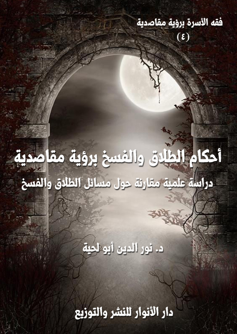

الكتاب: أحكام الطلاق والفسخ برؤية مقاصدية
المؤلف: أ.د. نور الدين أبو لحية
الناشر: دار الأنوار للنشر والتوزيع
الطبعة: الثانية، 1438 هـ
عدد الصفحات: 652
ISBN: 978-620-2-34276-6
لمطالعة الكتاب من تطبيق مؤلفاتي المجاني وهو أحسن وأيسر: هنا

التعريف بالكتاب
يتناول هذا الكتاب أكثر المسائل الواقعية المرتبطة بالطلاق والفسخ، ويحاول أن يعالجها برؤية مقاصدية على ضوء ما ورد في النصوص المقدسة، واجتهادات المدارس الفقهية المختلفة، ويحوي أربعة أقسام:
الأول: ويبحث في حق كلا الزوجين في إيقاع الطلاق، والضوابط الشرعية التي تحفظ هذا الحق وتحميه من استعماله في غير ما قصده الشرع من مقاصد.
الثاني: ويبحث في التفريق الذي جعله الشارع لولي الأمر، حماية للزوجة من تعسف الزوج، أو تعضيدا لما جعل لها من حق في حل عصمة الزوجية.
الثالث: ويبحث في الصيغ التي يتم بها التطليق من اللفظ والكتابة والإشارة وغيرها، بالإضافة إلى الصيغ المشابهة للطلاق مع أنه لا يقع بها، بل لها أحكامها الخاصة، كالظهار والإيلاء.
الرابع: ويبحث في الآثار الناتجة عن الفرقة الزوجية، وفيه حديث عن أحكام العدة، وعن الضوابط الشرعية للرجعة، مع بيان الحلول التي وضعها الشارع لإعادة الحياة الزوجية إلى مسارها الأصلي، ثم المتعة، باعتبارها من الحقوق المالية التي تنتج عن الطلاق.
أحكام الطلاق والفسخ برؤية مقاصدية (3 )
إن الشرع الحكيم، مع حرصه على استقرار الحياة الزوجية وتوفير كل السبل الكفيلة بتحقيق ذلك، كما رأينا في الأجزاء السابقة، إلا أنه ـ مع ذلك، ومراعاة للواقع، ودرءا للمفاسد التي قد تنتج عن استمرار هذه الحياة الزوجية ـ شرع الأحكام التي تنهي العلاقة الزوجية، وضبطها بضوابط دقيقة حتى يقلل من آثار التفريق وأسبابه ما أمكن.
والبحث المقاصدي في هذه الناحية يطرد مع مقاصد الشرع في الناحيتين السابقتين، وهو الحرص على استمرار الحياة الزوجية واستقرارها، فلذلك كان أكثر عملنا في هذا الجزء هو البحث عن القيود التي تحد من عملية التفريق، وتجعلها محصورة في الرغبة الأكيدة من الزوج أو من الزوجة في التفريق مع إتاحة فرص الرجعة بعد ذلك ما أمكن.
وقد لجأنا لهذا ـ مثلما فعلنا سابقا ـ لتراثنا الإسلامي بمذاهبه المختلفة، زيادة على اللجوء لمصادر الدين الأصلية من الكتاب والسنة، وكانت أكثر آرؤانا الترجيحية في هذا الباب تميل إلى تضييق أبواب التفريق إلا في الحدود التي نراها تدل دلالة كافية على توفر حقيقة قصد التفريق من الزوجين.
وقد قسمنا الحديث في هذا الجزء إلى أربعة أقسام:
الأول: ويبحث في حق كلا الزوجين في إيقاع الطلاق، تناولنا فيه بالتفصيل الضوابط الشرعية التي تحفظ هذا الحق لكلا الزوجين، وفي نفس الوقت تحمي من استعماله في غير ما قصده الشرع من مقاصد، وقد قدمنا له بفصل تمهيدي مهم جعلناه مقدمة لسائر الأقسام.
الثاني: وقد خصصناه للتفريق الذي جعله الشارع لولي الأمر، حماية للزوجة من تعسف الزوج، أو تعضيدا لما جعل لها من حق في حل عصمة الزوجية، وقد خصصناه بقسم خاص بناء على اختلاف أحكامه عن سائر انواع التفريق.
أحكام الطلاق والفسخ برؤية مقاصدية (15 )
الثالث: وقد خصصناه للصيغ التي يتم بها التطليق، وهي الركن الثالث من أركان الطلاق، بل اعتبرها بعضهم الركن الوحيد في الطلاق لأهميتها، وقد تحدثنا فيه عن التعابير التي يمكن استعمالها للتطليق من اللفظ والكتابة والإشارة وغيرها، ثم صيغ التعابير اللفظية، باعتبارها هي الأصل في الاستعمالات العادية للطلاق، ثم تحدثنا عن تقييد صيغ الطلاق بمختلف التقييدات من الشرط والاستثناء والعدد ونحوها.
وبالإضافة إلى ذلك تحدثنا عن الصيغ المشابهة للطلاق مع أنه لا يقع بها، بل لها أحكامها الخاصة، كالظهار والإيلاء.
الرابع: وقد خصصناه للآثار الناتجة عن الفرقة الزوجية، فتناولنا في الحديث عن أحكام العدة، وعن الضوابط الشرعية للرجعة، مع بيان الحلول التي وضعها الشارع لإعادة الحياة الزوجية إلى مسارها الأصلي، وذلك إما بالرجعة في العدة، أو الرجعة بعد انتهائها، ثم تحدثنا عن المتعة، باعتبارها من الحقوق المالية التي تنتج عن الطلاق.
وبذلك شملت هذه الأقسام الأربعة الحديث عن كل أنواع الفرقة الزوجية وضوابطها مع محاولة طرحها بالأسلوب الدقيق المبسط، والحمد لله أولا وآخرا.
أحكام الطلاق والفسخ برؤية مقاصدية (16 )
سنتناول في هذا الفصل التمهيدي الحديث عن موضوعين كلاهما له دور كبير في التأسيس لما سنذكره في الفصول التالية:
أما الأول، فهو الحديث عن أنواع الفرقة الزوجية، وأحكامها وآثارها بصفة عامة، باعتبار هذا الجزء وما يليله من أجزاء مخصصة لهذه الأنواع، ويحتاج التفصيل فيها إلى النظرة الإجمالية التي قدمناها في هذا المبحث، وبه نرى وجه الترتيب الذي راعيناه في هذا الجزء.
أما الثاني، فهو عن الأسس التي اعتمدناها عند ذكر ما نراه من الترجيحات في هذا الباب، وذلك للاستغناء بها عن الاستدلال لكل ترجيح.
وبذلك يكون المبحث الأول مبحثا تمهيديا للمسائل والفروع الفقهية، ويكون المبحث الثاني خاصا بالرؤى الترجيحية.
أولا ـ أنواع الفرقة الزوجية ومقاصدهأ
قسم الفقهاء التفريق الحاصل في الحياة إلى نوعين: فسخ وطلاق، ولكل منهما آثاره الخاصة، وسنتحدث عن كلا النوعين فيما يلي:
وهو النوع الأول من أنواع التفريق، ويقصد به عند الإطلاق، وسنتحدث هنا عن
أحكام الطلاق والفسخ برؤية مقاصدية (17 )
تعريفه وحكمه الأصلي وأحكامه العارضة، أما أركانه وشروطه وآثارها فمحلها الفصول القادمة من هذا الجزء وما يليه من أجزاء.
من التعاريف التي عرف بها الطلاق، والتي تدخلت في بعضها الخلافات الفقهية للمذاهب المختلفة:
1 ـ رفع الحل الذي به صارت المرأة محلا للنكاح إذا تم العدد ثلاثا، ويوجب زوال الملك باعتبار سقوط اليد عند انقضاء العدة في المدخول بها وانعدام العدة عند عدم الدخول والاعتياض عند الخلع (1).
2 ـ هو صفة حكمية ترفع حلية متعة الزوج بزوجته موجبا تكررها مرتين للحر ومرة لذي رق حرمتها عليه قبل زوج (2).
3 ـ هو قول مخصوص أو ما في معناه من شخص مخصوص يرتفع به النكاح أو ينثلم، فقول: يخرج به ارتفاع النكاح بالموت والرضاع، ومخصوص: ليخرج به ارتفاعه باللعان ونحوه من الردة والإسلام وسائر الفسوخ القولية، أو ما في معناه: ليدخل به الطلاق بالكتابة والإشارة من الأخرس، ومن شخص مخصوص: هو الزوج أو وكيله. (3)
وعلاقة المعنى اللغوي بالمعنى الاصطلاحي هي كما يقول ابن منظور: (طَلاَقُ النساء لمعنيين: أَحدهما حلّ عُقْدة النكاح، والآخر بمعنى التخلية والإِرْسال. ويقال للإِنسان إِذا عُتِقَ طَلِيقٌ أَي صار حرّاً، وأَطْلَقَ الناقة من عِقَالها وطَلَّقَها فَطَلَقَت: هي بالفتح، وناقة طَلْق وطُلُق: لا عِقال عليها) (4)
__________
(1) المبسوط: 6/ 2.
(2) شرح حدود ابن عرفة: 184.
(3) التاج المذهب: 2/ 118.
(4) لسان العرب: 10/ 227، وانظر: طلبة الطلبة: 52.
أحكام الطلاق والفسخ برؤية مقاصدية (18 )
اختلف الفقهاء في الحكم الأصلي للطلاق على قولين:
القول الأول: أن إيقاع الطلاق مباح وإن كان مبغضا في الأصل، وهو قول جمهور العلماء، واستدلوا على ذلك بما يلي:
1 ـ قوله تعالى: {لَا جُنَاحَ عَلَيْكُمْ إِنْ طَلَّقْتُمْ النِّسَاءَ مَا لَمْ تَمَسُّوهُنَّ أَوْ تَفْرِضُوا لَهُنَّ فَرِيضَةً وَمَتِّعُوهُنَّ عَلَى الْمُوسِعِ قَدَرُهُ وَعَلَى الْمُقْتِرِ قَدَرُهُ مَتَاعًا بِالْمَعْرُوفِ حَقًّا عَلَى الْمُحْسِنِينَ} (البقرة:236)، وقوله تعالى: {يَاأَيُّهَا النَّبِيُّ إِذَا طَلَّقْتُمْ النِّسَاءَ فَطَلِّقُوهُنَّ لِعِدَّتِهِنَّ} (الطلاق:1) وغيرها من آيات الطلاق، وكلها تقتضي إباحة إيقاع الطلاق.
2 ـ قول النبي صلى الله عليه وآله وسلم: (أبغض الحلال إلى الله الطلاق) (1)، وفي لفظ: (ما أحل الله شيئا أبغض إليه من الطلاق)، وإنما يكون مبغضا من غير حاجة إليه، وقد سماه النبي صلى الله عليه وآله وسلم حلالا، فإن قيل بأن كون الطلاق مبغوضا مناف لكونه حلالا، لأن كونه مبغوضا يقتضي رجحان تركه على فعله، وكونه حلالا يقتضي مساواة تركه لفعله، وقد أجيب على ذلك بأن المراد بالحلال ما ليس تركه بلازم، وهو يشمل المباح والواجب والمندوب والمكروه، وقد يقال الطلاق حلال لذاته والأبغضية لما يترتب عليه من انجراره إلى المعصية (2).
3 ـ أن رسول الله صلى الله عليه وآله وسلم طلق حفصة، حتى نزل عليه الوحي يأمره أن يراجعها (3)، ولم يكن هناك كبر سن ولا ريبة.
__________
(1) قال ابن حجر: رواه أبو داود وابن ماجة والحاكم من حديث محارب بن دثار عن بن عمر بلفظ (الحلال) بدل المباح ورواه أبو داود والبيهقي مرسلا، تلخيص الحبير: 3/ 205، وانظر: البيهقي: 7/ 322، أبو داود: 2/ 255، ابن ماجة: 1/ 650.
(2) انظر: عون المعبود: 6/ 161.
(3) الحاكم: 4/ 16، المعجم الكبير: 23/ 188، مجمع الزوائد: 9/ 244.
أحكام الطلاق والفسخ برؤية مقاصدية (19 )
4 ـ أنه كما أن فيه معنى كفران النعمة من وجه، فإن فيه معنى إزالة الرق من وجه آخر، لأن النكاح نوع من الرق كما روي أن النبي صلى الله عليه وآله وسلم قال: (النكاح رق فلينظر أحدكم أين يضع كريمته) (1). ولأجله صان الشرع القرابة القريبة عن هذا الرق حيث حرم نكاح الأمهات والبنات والأخوات (2).
5 ـ أن هذا إزالة الملك بطريق الإسقاط فيكون مباحا في الأصل كالإعتاق.. ومن هذا الباب كونه مزيلا للنكاح المشتمل على المصالح المندوب إليها، فيكون مكروها فقط لا حراما.
القول الثاني: أن إيقاع الطلاق محرم لا يباح إلا عند الضرورة، وقد ذكر هذا القول السرخسي (3) من غير إشارة إلى قائله، بينما ذكر ابن قدامة الإجماع على الجواز، قال في المغني: (أجمع الناس على جواز الطلاق، والعبرة دالة على جوازه، فإنه ربما فسدت الحال بين الزوجين، فيصير بقاء النكاح مفسدة محضة، وضررا مجردا بإلزام الزوج النفقة والسكنى، وحبس المرأة، مع سوء العشرة، والخصومة الدائمة من غير فائدة، فاقتضى ذلك شرع ما يزيل النكاح، لتزول المفسدة الحاصلة منه) (4)
ولا يختلف ما ذكره ابن قدامة من الإجماع على ما ذكره السرخسي لأن الحكم الأصلي الذي يقصده السرخسي، هو الطلاق من غير حاجة إليه، وقد ذكر ابن قدامة في حكم هذا النوع من الزواج عن أحمد روايتين: إحداهما أنه محرم، والثانية، أنه مباح.
__________
(1) قال العراقي في تخريجه لأحاديث إحياء علوم الدين للغزالي: حديث: النكاح رق فلينظر أحدكم أين يضع كريمته ـ رواه أبو عمر التوقاني في معاشرة الأهلين موقوفا على عائشة وأسماء ابنتي أبي بكر، قال البيهقي: وروي ذلك مرفوعاً، والموقوف.
(2) المبسوط:6/ 2.
(3) المبسوط:6/ 2، وانظر: تبيين الحقائق: 3/ 253.
(4) المغني: 7/ 277.
أحكام الطلاق والفسخ برؤية مقاصدية (20 )
وقد ذكر العراقي أن هذا هو الحكم الأصلي للطلاق عند الحنفية، فقال عند بيان كون العدة بالحيض لا بالطهر: (وليس في ذلك تطويل عند الحنفية الذين يرون العدة بالحيض فإنهم يعتبرون ثلاث حيض كاملة، فالمعنى عندهم أن الأصل في الطلاق الحظر لما فيه من قطع النكاح الذي تعلقت به المصالح الدينية والدنيوية، وإنما يباح للحاجة، والمعتبر دليلها، وهو الإقدام على الطلاق في زمن الرغبة) (1)
بل ذكر أن هذا هو الحكم الأصلي عند المالكية، ففي العناية: (قال مالك: الأصل في الطلاق هو الحظر والإباحة لحاجة الخلاص) (2) ومن الأدلة التي ذكروها لذلك:
1 ـ أنه ضرر بنفسه وزوجته، وإعدام للمصلحة الحاصلة لهما من غير حاجة إليه، فكان حراما، كإتلاف المال، وقد قال صلى الله عليه وآله وسلم: (لا ضرر ولا ضرار) (3)
2 ـ أن فيه كفران النعمة فإن النكاح نعمة من الله تعالى على عباده، كما قال تعالى: {وَمِنْ آيَاتِهِ أَنْ خَلَقَ لَكُمْ مِنْ أَنفُسِكُمْ أَزْوَاجًا لِتَسْكُنُوا إِلَيْهَا وَجَعَلَ بَيْنَكُمْ مَوَدَّةً وَرَحْمَةً إِنَّ فِي ذَلِكَ لَآيَاتٍ لِقَوْمٍ يَتَفَكَّرُونَ} (الروم:21)، وكفران النعمة حرام.
3 ـ أنه رفع للنكاح المسنون فلا يحل إلا عند الضرورة.
الترجيح:
نرى أن الأرجح في المسألة هو النظر إلى معنى قول الفقهاء (الحكم الأصلي للطلاق)، فإن أريد به الحكم العام للطلاق، والذي يتناول أكثر الناس، فإن الأرجح في هذا هو القول بالإباحة، لأن الناس عادة لا يطلقون إلا لسبب قد يعقل، وقد لا يعقل، أما التطليق لغير سبب، فقلما يحدث، وهو بذلك يعود إلى نوع من الأحكام العارضة التي سنذكرها.
__________
(1) طرح التثريب: 7/ 84.
(2) العناية: 3/ 468.
(3) أخرجه مالك (2/ 745، رقم 1429)، والشافعى (1/ 224) والدارقطنى (3/ 77)، والحاكم (2/ 66، رقم 2345) وقال: صحيح الإسناد على شرط مسلم. والبيهقى (6/ 69، رقم 11166) وغيرهم.
أحكام الطلاق والفسخ برؤية مقاصدية (21 )
أما إن أريد به الاقتصار على ذكره عند بيان حكم الطلاق، كأن يسأل شخص عن حكم الطلاق فيجاب بأنه حلال أو أنه أبغض الحلال، فإن الأرجح في هذا هو خطأ هذه الإجابة، بل قد يكون القول بالتحريم أرجح في هذه الحالة، لأن القول بالإباحة مطلقا قد يكون نوعا من التشجيع على الطلاق، فلهذا إما أن يذكر الحكم مفصلا بأنواعه المختلفة أو أن يسأل عن السبب الداعي للطلاق فيفتى على أساسه، لأن الكثير من العامة تغريه الإباحة، وقد يقع بواسطتها في المحظور.
وهذا لا يقتصر على الطلاق فقط، بل يتعداه لكثير من الأحكام الشرعية، فإن الأرجح فيها جميعا هو ذكر الأحكام العارضة باعتبارها الأصل، فالأحوال مختلفة، وتعميم الحكم قد يوقع في اللبس والخطأ.
نص أكثر الفقهاء على الأحكام العارضة للطلاق، وقد اختلفت المذاهب الفقهية في التعبير عنها، وسنذكر هنا بعض ما قالوا في ذلك، ونرجئ التفاصيل المتعلقة بالفروع إلى محلها من هذا الفصل أو غيره:
فقد نص الشافعية على أن الطلاق أربعة أقسام: حرام ومكروه وواجب ومندوب ولا يكون مباحا مستوى الطرفين (1):
الطلاق الواجب: ويتحقق في صورتين وهما:
1 ـ في الحكمين إذا بعثهما القاضي عند الشقاق بين الزوجين ورأيا المصلحة في الطلاق وجب عليهما الطلاق.
2 ـ وفي المولى إذا مضت عليه أربعة أشهر وطالبت المرأة بحقها فامتنع من الفيئة والطلاق، فالأصح عند الشافعية أنه يجب على القاضي أن يطلق عليه طلقة رجعيه.
__________
(1) شرح النووي على مسلم:10/ 62.
أحكام الطلاق والفسخ برؤية مقاصدية (22 )
الطلاق المكروه: وذلك إذا كان الحال بينهما مستقيما، فيطلق بلا سبب وعليه يحمل حديث (أبغض الحلال إلى الله الطلاق) (1)
الطلاق الحرام: وهو في ثلاث صور هي: في الحيض بلا عوض منها ولا سؤالها، والثاني في طهر جامعها فيه قبل بيان الحمل، والثالث إذا كان عنده زوجات يقسم لهن وطلق واحدة قبل أن يوفيها قسمها.
الطلاق المندوب: وهو عندما لا تكون المرأة عفيفة أو يخافا أو أحدهما أن لا يقيما حدود الله أو نحو ذلك.
ونص الحنابلة على أن الطلاق على خمسة أقسام (2):
الطلاق الواجب: وهو طلاق المولي بعد التربص إذا أبى الفيئة، وطلاق الحكمين في الشقاق، إذا رأيا ذلك.
الطلاق المكروه: وهو الطلاق من غير حاجة إليه، وقال القاضي: فيه روايتان؛ إحداهما: أنه محرم؛ لأنه ضرر بنفسه وزوجته، وإعدام للمصلحة الحاصلة لهما من غير حاجة إليه، فكان حراما، كإتلاف المال، والثانية، أنه مباح.
الطلاق المباح: وهو عند الحاجة إليه لسوء خلق المرأة، وسوء عشرتها، والتضرر بها من غير حصول الغرض بها.
الطلاق المندوب: وقد ذكروا له موضعين:
1 ـ عند تفريط المرأة في حقوق الله الواجبة عليها، مثل الصلاة ونحوها، ولا يمكنه إجبارها عليها، أو تكون له امرأة غير عفيفة، قال أحمد: لا ينبغي له إمساكها؛ وذلك لأن
__________
(1) أخرجه أبو داود (2/ 255، رقم 2178)، وابن ماجه (1/ 650، رقم 2018)، والحاكم (2/ 214، رقم 2794) وقال: صحيح الإسناد. ووافقه الذهبى وقال: على شرط مسلم. وابن عدى (6/ 461، ترجمة 1941 معرف بن واصل)، والبيهقى (7/ 322، رقم 14671)
(2) المغني: 7/ 277، وانظر: كشاف القناع: 5/ 232.
أحكام الطلاق والفسخ برؤية مقاصدية (23 )
فيه نقصا لدينه، ولا يأمن إفسادها لفراشه، وإلحاقها به ولدا ليس هو منه، ولا بأس بعضلها في هذه الحال، والتضييق عليها؛ لتفتدي منه، قال ابن قدامة: ويحتمل أن الطلاق في هذين الموضعين واجب (1).
2 ـ الطلاق في حال الشقاق، وفي الحال التي تحوج المرأة إلى المخالعة لتزيل عنها الضرر.
الطلاق المحرم: وهو الطلاق في الحيض، أو في طهر جامعها فيه، قال ابن قدامة: (أجمع العلماء في جميع الأمصار وكل الأعصار على تحريمه، ويسمى طلاق البدعة؛ لأن المطلق خالف السنة، وترك أمر الله تعالى ورسوله) (2)
ونكتفي بهذين المذهبين، فسائر الأقوال لا تكاد تخرج على ما ذكرا.
يتصور الكثير من محدودي النظر، الذين يعشون بأجسادهم في مستنقعات من الدناءة، وبعقولهم في عوالم من المثل، بأن تشريع الطلاق جريمة من الجرائم وإثم من أكبر الآثام.
وهذه النظرة ـ كالنظرة للتعدد أو الحجاب أو غيرها من أحكام الدين ـ نظرة لا علاقة لها بالواقع، لأن الدراسة المتمعنة للواقع وللفطرة البشرية لا بد أن تهدي إلى ضرورة إباحة الطلاق وتشريع القوانين التي تحفظه من التعسف، وتحفظ آثاره من الضياع.
أما الإسلام فإنه (يشرع لأناس يعيشون على الأرض، لهم خصائصهم، وطباعهم البشرية، لذا شرع لهم كيفية الخلاص من هذا العقد، إذا تعثر العيش، وضاقت السبل، وفشلت الوسائل للإصلاح، وهو في هذا واقعي كل الواقعية، ومنصف كل الإنصاف لكل
__________
(1) المغني: 7/ 277.
(2) المغني: 7/ 277.
أحكام الطلاق والفسخ برؤية مقاصدية (24 )
من الرجل والمرأة.
فكثيراً ما يحدث بين الزوجين من الأسباب والدواعي، ما يجعل الطلاق ضرورة لازمة، ووسيلة متعينة لتحقيق الخير، والاستقرار العائلي والاجتماعي لكل منهما، فقد يتزوج الرجل والمرأة، ثم يتبين أن بينهما تبايناً في الأخلاق، وتنافراً في الطباع، فيرى كل من الزوجين نفسه غريباً عن الآخر، نافراً منه، وقد يطّلع أحدهما من صاحبه بعد الزواج على ما لا يحب، ولا يرضى من سلوك شخصي، أو عيب خفي، وقد يظهر أن المرأة عقيم لا يتحقق معها أسمى مقاصد الزواج، وهو لا يرغب التعدد، أولا يستطيعه، إلى غير ذلك من الأسباب والدواعي، التي لا تتوفر معها المحبة بين الزوجين ولا يتحقق معها التعاون على شؤون الحياة، والقيام بحقوق الزوجية كما أمر الله، فيكون الطلاق لذلك أمراً لا بد منه للخلاص من رابطة الزواج التي أصبحت لا تحقق المقصود منها، والتي لو ألزم الزوجان بالبقاء عليها، لأكلت الضغينة قلبيهما، ولكاد كل منهما لصاحبه، وسعى للخلاص منه بما يتهيأ له من وسائل، وقد يكون ذلك سبباً في انحراف كل منهما، ومنفذاً لكثير من الشرور والآثام.
لهذا شُرع الطلاق وسيلة للقضاء على تلك المفاسد، وللتخلص من تلك الشرور، وليستبدل كل منهما بزوجه زوجاً آخر، قد يجد معه ما افتقده مع الأول، فيتحقق قول الله تعالى: {وَإِنْ يَتَفَرَّقَا يُغْنِ اللَّهُ كُلّاً مِنْ سَعَتِهِ وَكَانَ اللَّهُ وَاسِعاً حَكِيماً} (النساء:130)
وهذا هو الحل لتلك المشكلات المستحكمة المتفق مع منطق العقل والضرورة، وطبائع البشر وظروف الحياة)
وقد كان الغرب ـ وهو الذي يتصور إيمانه بالمسيحية وخضوعه للكنيسة ـ حياته متزمتا ملتزما بالزوجة الواحدة طول العمر، رافعا شعار المثالية، ولكن الفطرة سرعان ما أغارت عليه، ليعترف بالطلاق، ويقنن له، بل إن نسبة ارتفاع الطلاق فيه تفوق التصور.
أحكام الطلاق والفسخ برؤية مقاصدية (25 )
ونحن نورد هنا لمن يتصورون أن لهم الحق في مناقشة الإسلام في تشريعه الطلاق ما قاله (بيتام) رجل القانون الإنجليزي، قال: (لو وضع مشروع قانوناً يحرم فض الشركات، ويمنع رفع ولاية الأوصياء، وعزل الوكلاء، ومفارقة الرفقاء، لصاح الناس أجمعون: أنه غاية الظلم، واعتقدوا صدوره من معتوه أو مجنون، فيا عجباً أن هذا الأمر الذي يخالف الفطرة، ويجافي الحكمة، وتأباه المصلحة، ولا يستقيم مع أصول التشريع، تقرره القوانين بمجرد التعاقد بين الزوجين في أكثر البلاد المتمدنة، وكأنها تحاول إبعاد الناس عن الزواج، فإن النهي عن الخروج من الشيء نهي عن الدخول فيه، وإذا كان وقوع النفرة واستحكام الشقاق والعداء، ليس بعيد الوقوع، فأيهما خير؟.. ربط الزوجين بحبل متين، لتأكل الضغينة قلوبهما، ويكيد كل منهما للآخر؟ أم حل ما بينهما من رباط، وتمكين كل منهما من بناء بيت جديد على دعائم قوية؟، أو ليس استبدال زوج بآخر، خيراً من ضم خليلة إلى زوجة مهملة أو عشيق إلى زوج بغيض) (1)
زيادة على هذا، فإن تشريعات الإسلام في هذا الجانب تحفظ الطلاق من استعماله في غير ما وضع له، وتحفظ كل ما قد ينجر عنه من آثار سلبية، ومن ذلك:
1 ـ أنه نفّر من الطلاق وبغضه إلى النفوس فقال صلى الله عليه وآله وسلم: (يما امرأة سألت زوجها الطلاق في غير بأس، فحرام عليها رائحة الجنة)، وحذر من التهاون بشأنه فقال صلى الله عليه وآله وسلم: (ما بال أحدكم يلعب بحدود الله، يقول: قد طلقت، قد راجعت)
2 ـ أنه اعتبر الطلاق آخر العلاج، بحيث لا يصار إليه إلا عند تفاقم الأمر، واشتداد الداء، وحين لا يجدي علاج سواه، وأرشد إلى اتخاذ الكثير من الوسائل قبل أن يصار إليه، فرغب الزوج في الصبر والتحمل على الزوجات، وإن كانوا يكرهون منهن بعض الأمور، إبقاء للحياة الزوجية، قال تعالى: {وَعَاشِرُوهُنَّ بِالْمَعْرُوفِ فَإِنْ كَرِهْتُمُوهُنَّ فَعَسَى أَنْ تَكْرَهُوا
__________
(1) منقول من موقع islamunveiled.
أحكام الطلاق والفسخ برؤية مقاصدية (26 )
شَيْئاً وَيَجْعَلَ اللَّهُ فِيهِ خَيْراً كَثِيرا} (النساء:19)
3 ـ أنه أرشد الزوج إذا لاحظ من زوجته نشوزاً إلى ما يعالجها به من التأديب المتدرج: الوعظ ثم الهجر، ثم الضرب غير المبرح، قال تعالى: {) وَاللَّاتِي تَخَافُونَ نُشُوزَهُنَّ فَعِظُوهُنَّ وَاهْجُرُوهُنَّ فِي الْمَضَاجِعِ وَاضْرِبُوهُنَّ فَإِنْ أَطَعْنَكُمْ فَلا تَبْغُوا عَلَيْهِنَّ سَبِيلاً إِنَّ اللَّهَ كَانَ عَلِيّاً كَبِيراً} (النساء:34)
4 ـ أنه شرع التحكيم بينهما، إذا عجزا عن إصلاح ما بينهما، بوسائلهما الخاص.
5 ـ أنه أرشد الزوجة إذا ما أحست فتوراً في العلاقة الزوجية، وميل زوجها إليها إلى ما تحفظ به هذه العلاقة، ويكون له الأثر الحسن في عودة النفوس إلى صفائها، بأن تتنازل عن بعض حقوقها الزوجية، أو المالية، ترغيباً له بها وإصلاحاً لما بينهما.
6 ـ أن الطلاق كما يكون لصالح الزوج، فإنه أيضاً يكون لصالح الزوجة في كثير من الأمور، فقد تكون هي الطالبة للطلاق، الراغبة فيه، فلا يقف الإسلام في وجه رغبتها وفي هذا رفع لشأنها، وتقدير لها، لا استهانة بقدرها، كما يدّعي المدّعون، وإنما الاستهانة بقدرها، بإغفال رغبتها، وإجبارها على الارتباط برباط تكرهه وتتأذى منه.
7 ـ أنه أثبت للأم حضانة أولادها الصغار، ولقريباتها من بعدها، حتى يكبروا، وأوجب على الأب نفقة أولاده، وأجور حضانتهم ورضاعتهم، ولو كانت الأم هي التي تقوم بذلك.
من التعاريف التي عرف بها الفسخ، مع التنبيه إلى أن هذه التعاريف ليست مختصة بفسخ التفريق بين الزوجين، بل تشمله كما تشمل غيره:
أحكام الطلاق والفسخ برؤية مقاصدية (27 )
1 ـ أن لا يترتب على العقد أثر في المستقبل لا بطلان أثره أصلا (1).
2 ـ الفسخ رفع الأصل والوصف (2).
3 ـ الانفساخ انقلاب كل واحد من العوضين إلى دافعه، والفسخ هو قلب كل واحد من العوضين إلى صاحبه (3).
وقد فرق الفقهاء بين فرقة الفسخ وفرقة الطلاق مع أن كلاهما فسخ، بأن (الفسخ الحقيقي هو الرافع للعقد كالفسخ بعيب المبيع أو الثمن المعين أو تلف واحد منهما قبل القبض، أو بعيب أحد الزوجين. والمجاز أن لا يكون رافعا، بل قاطعا كالطلاق ليس رفعا لعقد النكاح بل قطعا للعصمة) (4)
اختلفت المذاهب الفقهية في الأسباب التي تكون بها الفرقة فسخا بما يعسر ضبطه، ولذلك سنذكر هنا أقوال المذاهب الفقهية مع إرجاء أدلتها وتفاصيلها في محالها الخاصة بها:
نصوا على أن الفرقة الزوجية تكون فسخاً في مواضع، منها (5):
1 ـ تباين الدار حقيقة وحكماً، ومعنى ذلك أن يترك أحد الزوجين الحربيين دار الحرب إلى دار الإسلام مسلماً أو ذمياً، فإذا فعل ذلك بانت منه امرأته أما المستأمن، وهو الذي يدخل دار الإسلام بأمان لتجارة ونحوها بنية العودة إلى بلاده، فإن امرأته لا تبين
__________
(1) رد المحتار: 5/ 705.
(2) بدائع الصنائع: 5/ 176.
(3) قال الزركشي بعد إيراده لهذا التعريف: (وبذلك رددنا على أبي حنيفة أن الخلع فسخ، لأنه لا يشترط فيه رد الصداق فما انقلب كل واحد من العوضين لصاحبه فذهبت حقيقة الفسخ)، المنثور في القواعد الفقهية:3/ 42.
(4) المنثور في القواعد الفقهية: 3/ 48.
(5) غمز عيون البصائر:2/ 104.
أحكام الطلاق والفسخ برؤية مقاصدية (28 )
منه.
2 ـ فساد العقد بسبب من الأسباب كما إذا تزوجها بغير شهود، أو إلى مدة معينة، أو نحو ذلك، مما تقدم تفصيله في محاله المختلفة.
3 ـ أن يفعل ما يوجب حرمة المصاهرة بأصول المرأة الاناث وفروعها، كأن يقبل بنت زوجته بشهوة. أو أمها. أو نحو ذلك، مما هو مفصل في الفصل الخاصة بالموانع المؤبدة للزواج.
4 ـ إذا فعلت الزوجة ما يوجب حرمة المصاهرة مع أصوله، أو فروعه الذكور، كتقبيل ابن زوجها البالغ بشهوة، ونحوه.
5 ـ إسلام أحد الزوجين الكافرين في دار الحرب، فإذا أسلمت الزوجة وهي في دار الحرب تبين من زوجها الكافر بعد ثلاث حيض كما ذكر في فصل الكفاءة.
6 ـ أن ترضع الزوجة ضرتها الصغيرة، فإنها تصبح أمها في الرضاع، فتبين منه هي ومن أرضعتها وهذه البينونة فسخ لا طلاق لأنهما يحرمان عليه مؤبداً.
7 ـ أن يرتد أحد الزوجين، فإنه إذا وقع ذلك بانت منه امرأته فسخاً لا طلاقاً.
أما فرقة الطلاق، فتكون فيما عدا هذه المواضع، ومنها صريح الطلاق وكنايته، والعيوب المفرقة بين الزوجين كالجب. والعنة، والفرقة بالإيلاء، والفرقة باللعان.
وضابط ذلك عندهم أن كل فرقة جاءت من قبل المرأة لا بسبب من الزوج فهي فسخ، كخيار العتق والبلوغ، وكل فرقة جاءت من قبل الزوج فهي طلاق، كالإيلاء والجب والعنة، وإنما كانت ردته فسخا مع أنها من قبله لأن بها ينتفي الملك فينتفي الحل، والفرقة إنما جاءت بالتنافي لا لوجود المباشرة من الزوج، وإنما شرط القضاء في الفرقة بالجب، وما عطف عليه، لأن في أصلها ضعفا، فتوقف عليه كالرجوع في الهبة، وفيه إيماء إلى أن الزوج لو كان غائبا لم يفرق بينهما للزوم القضاء على الغائب.
أحكام الطلاق والفسخ برؤية مقاصدية (29 )
وقد نصوا على أن الفسخ ينقسم إلى قسمين (1):
فسخ اختياري: ويشمل العيوب الخمسة والغرور وعدم الكفاءة ابتداء ودواما، ليدخل الفسخ بالخلف والعتق تحت عبد، والعجز عن العوض؛ ليدخل الفسخ بالإعسار بالنفقة وبالمهر قبل الدخول.
فسخ قهري: وهو ما ينفسخ فيه بنفسه، ولا يتوقف فيه على تفريق الحاكم ولا أحد الزوجين، ومن أصنافه التي ذكروها:
1 ـ اختلاف دين الزوجين بالردة.
2 ـ إسلام المشرك على أكثر من أربع ينفسخ في الزائد قال ابن الرفعة: من اندفع نكاحها، فهو بطريق البينونة بلا شك.
3 ـ اللعان.
4 ـ الرضاع.
5 ـ إسلام أحد الزوجين وتخلف الآخر حتى انقضت العدة.
6 ـ فرقة الردة.
أما التفريق بالطلاق، فهو فيما عدا الحالات السابقة، وهي ألفاظ الطلاق صريحة، وكناية والخلع، وفرقة الإيلاء، وفرقة الحكمين، فإذا وكل الزوج حكمين في تطليق امرأته أو وكلتهما الزوجة في طلاقها بعوض مالي ففعلا، فإنه يكون طلاقاً لا فسخاً.
اختلف المالكية في تمييز ما يفسخ بطلاق مما يفسخ بغير طلاق قولين، هما (2):
__________
(1) المنثور في القواعد الفقهية:3/ 24.
(2) شرح ميارة:1/ 248، وانظر: شرح حدود ابن عرفة:177.
أحكام الطلاق والفسخ برؤية مقاصدية (30 )
القول الأول: أن كل نكاح كان للزوج أو للزوجة أو للولي إمضاؤه وفسخه ففسخه بطلقة بائنة، وما كانوا مغلوبين على فسخه ففسخه بغير طلاق، والأول كنكاح الأجنبي يرده الولي، فالخيار فيه للولي وإذا كان بالزوجة عيب فالخيار للزوج، أو به عيب فالخيار للزوجة، ثم مثل للثاني وهو ما كانوا مغلوبين على فسخه بولاية المرأة والعبد ونكاح الشغار والمريض والمحرم بحج أو عمرة، وكالصداق الفاسد قبل البناء، وكالمجمع على فسخه.
القول الثاني: أن ما اختلف في إجازته وفسخه ففسخه بطلاق كولاية المرأة والعبد ونكاح الشغار ونكاح المريض والمحرم وكالصداق الفاسد قبل البناء، وما اتفق على فسخه ففسخه بغير طلاق كالخامسة وأخت المرأة أو عمتها أو خالتها، وقد روي عن مالك ورجع إليه ابن القاسم.
انطلاقا من هذا فقد ذكروا المواضع التي تكون فيها الفرقة فسخا وهي كما يلي:
الفسخ: تكون الفرقة فسخاً فيما يلي:
1 ـ في العقد الفاسد المجمع على فساده، ومنه نكاح المتعة على المعتمد.
2 ـ الفرقة بالرضاع، فإنها فسخ بلا طلاق.
3 ـ الفرقة باللعان، فإنها توجب تأبيد التحريم، فلا يحل له أن يتزوجها بحال، فلا يعتبر ذلك طلاقاً.
4 ـ الفرقة بسبب السبي، فإنها تقطع علاقة الزوجية بين الزوجين، فإذا سبيت المرأة الحربية وهي كافرة وزوجها غير كافر، فإنها تصير غير زوجة له فتحل لغيره بمجرد أن تحيض مرة واحدة.
5 ـ إذا أسلم أحد الزوجين الكافرين، فإن الفرقة بينهما فسخ بغير طلاق.
وما عدا هذه الحالات، فهو طلاق، وهو كما يلي:
1 ـ كل عقد فاسد مختلف فساده كنكاح الشغار، ونكاح السر، والنكاح بدون ولي
أحكام الطلاق والفسخ برؤية مقاصدية (31 )
ونحو ذلك مما تقدم في محله، فكل عقد فاسد عند المالكية صحيح عند غيرهم فإنه يفسخ بطلاق يحسب من عدد الطلقات، أما إذا كان مجمعاً على فساده فإنه يفسخ بغير طلاق، ومن ذلك العقد على امرأة في عدة الغير، أو العقد على محرمة من المحارم، أو العقد على خامسة وتحته أربعة، أو نحو ذلك من العقود المجمع على فسادها فإنها تفسخ بغير طلاق.
2 ـ فسخ الحاكم بالغيب طلاق بائن، سواء طلق هو أو أمرها بأن تطلق نفسها إلا إذا كان مولياً وطلق عليه، فإن طلاق الحاكم في هذه الحالة يكون رجعياً، ومثله ما إذا طلق عليه الحاكم بسبب الإعسار عن دفع النفقة فإن طلاقه يكون رجعياً.
3 ـ الردة طلاق بائن على المشهور.
4 ـ الخلع، وهو طلاق صريح عندهم.
5 ـ الطلاق الصريح، والكناية.
6 ـ الفرقة بسبب الإيلاء طلاق.
7 ـ الفرقة بسبب العيب طلاق، فيأمره القاضي بالطلاق أو يطلق عليه القاضي أو جماعة المسلمين. أو يأمرها به فتطلق نفسها، ويحكم القاضي به أو يثبته طلاقاً على الخلاف في الطلاق بالعيب، إلا أنه بائن في العيب ورجعي في الإيلاء إلا إذا طلق هو رجعياً.
8 ـ الفرقة بسبب الإعسار عن دفع الصداق أو دفع النفقة، فإن الحاكم يطلق عليه طلقة واحدة رجعية إن أبى عن تطليقها، أو يأمرها بأن تطلق نفسها ثم يحكم به كما تقدم.
وقد نصوا على أن الفسخ يكون في أمور هي:
1 ـ الخلع إذا كان بغير لفظ الطلاق أو نيته.
2 ـ ردة أحد الزوجين.
3 ـ الفرقة لعيب من العيوب التي سنذكرها في هذا الفصل، ولا يفسخه إلا حاكم.
أحكام الطلاق والفسخ برؤية مقاصدية (32 )
الفرقة بسبب إعساره عن دفع الصداق والنفقة ونحوها، ولا يفسخه إلا حاكم أيضاً.
4 ـ إسلام أحد الزوجين، وينفسخ نكاحهما إذا انقضت عدتها، أما إذا أسلمت المرأة ثم أسلم زوجها وهي في العدة فإن نكاحهما يبقى.
5 ـ فرقة الإيلاء، وهي منوطة بالحاكم كما سنرى في محله.
6 ـ الفرقة بسبب اللعان فإن اللعان يوجب التحريم بينهما على التأبيد، ولو لم يحكم به القاضي بحيث لا تحل له بعد ذلك.
أما الطلاق، فهو فيما عدا هذه الأحوال المذكورة.
ذكر ابن حزم أن ما يقع به فسخ النكاح بعد صحته ثمانية أوجه فقط، هي (1):
1 ـ أن تصير حريمة برضاع.
2 ـ أن يطأها أبوه، أو جده بجهالة؛ أو بقصد إلى الزنا.
3 ـ أن يتم التعانه والتعانها.
4 ـ أن تكون أمة فتعتق، فلها الخيار في فسخ نكاحها من زوجها أو إبقائه.
5 ـ اختلاف الدينين إلا في جهة واحدة، وهي أن يسلم الزوج وهي كتابية، فإنهما يبقيان على نكاحهما، وينقسم اختلاف دينهما في غير ذلك إلى خمسة أقسام: أن يسلم هو وهي كافرة غير كتابية، أو أن تسلم هي، وهو كافر كتابي، أو غير كتابي، أو أن يرتد هو دونها، أو أن ترتد هي دونه، أو أن يرتدا معا. ففي كل هذه الوجوه ينفسخ نكاحهما سواء أسلم إثر إسلامها، أو أسلمت إثر إسلامه، أو راجع الإسلام، أو راجعت الإسلام، أو راجعاه معا، لا ترجع إليه في كل ذلك إلا برضاهما وبصداق، وبولي، وإشهاد. ولا يجب أن يراعى في
__________
(1) المحلى: 9/ 329.
أحكام الطلاق والفسخ برؤية مقاصدية (33 )
ذلك شيء من عدة، ولا عرض إسلام.
6 ـ أن يملكها، أو بعضها.
7 ـ أن تملكه أو بعضه.
8 ـ موته أو موتها، ولا خلاف في ذلك.
وقد نصوا على أن الفسخ يكون بأحد أمور أربعة (1):
1 ـ أن تكون ملتهما واحدة حال الزوجية، ثم يطرأ عليها اختلاف فإنه يرتفع النكاح بينهما بتجدد اختلاف الملتين بينهما سواء ارتدا عن الإسلام أم كانا يهوديين فتنصروا أم العكس في وقتين لا في وقت والتبس فهما على نكاحهما، ومثال ذلك أن يكونا مسلمين فيرتد أحدهما أو كافرين فيسلم أحدهما أو يهوديين فيتنصر أحدهما أو العكس فقد اختلفت ملتهما في جميع هذه الصور وهي كلها توجب ارتفاع النكاح بينهما.
2 ـ تجدد الرق عليهما، ومثال ذلك أن يكونا كافرين في دار الحرب ولو مملوكين لحربي فيسبيهما المسلمون أو غيرهم، أو كانا رقين مسلمين لمسلم فسباهما أهل الحرب فإنهما يملكا في الصورتين وينفسخ النكاح بتجدد الرق عليهما أو على أحدهما نحو أن يسبى الزوج وحده أو الزوجة وحدها.
3 ـ ملك أحدهما الآخر أو بعضه، وذلك نحو أن تكون هي حرة وهو عبد، فتشتريه أو ترثه أو يوهب لها أو نحو ذلك، أو هو الحر فيملكها بأي هذه الوجوه، فإن النكاح يرتفع بينهما، ولا ينفسخ النكاح بأن يملك أحدهما الآخر أو بعضه إلا إذا كان ملك الرقبة لا المنفعة نافذا كالبيع بغير خيار والإرث مع عدم الاستغراق ونحو ذلك، فأما إذا لم يكن قد نفذ لم ينفسخ النكاح حتى ينفذ.
__________
(1) التاج المذهب: 2/ 180.
أحكام الطلاق والفسخ برؤية مقاصدية (34 )
4 ـ رضاع طرأ بعد الزوجية صيرها محرما نحو أن ترضع زوجها الصغير أو ترضعه أختها أو ترضع زوجة له أخرى صغيرة أو نحو ذلك وهكذا لو كانت هي الصغيرة فأرضعتها أم الزوج أو زوجته أو نحو ذلك.
من الموارد التي ذكروا فيها حق الزوجين في الفسخ ما يسمى خيار العيب، فإذا علم الزوج بعد العقد بوجود أحد العيوب الستة الآتية في الزوجة حين العقد فيكون له الفسخ من دون طلاق:
1 ـ الجنون ولو كان أدوارياً، وليس منه الإغماء والصرع.
2 ـ الجذام.
3 ـ البرص.
4 ـ العمى.
5 ـ العرج ولو لم يبلغ حدّ الإقعاد.
ولا يثبت الخيار للزوج في العيوب المتقدمة إذا حدثت بعد العقد وإن كان قبل الوطء.
ونصوا على أنه يثبت خيار العيب للزوجة إذا كان الزوج ممجبوباً أو مصاباً بالعنن سواء كان الجب أو العنن سابقاً على العقد أم كان حادثاً بعده أو بعد العقد والوطء معاً..
واختلفوا في ثبوت خيار العيب لها في جنون الزوج سواء كان سابقاً على العقد أم حادثاً بعده أو بعد العقد والوطء أم لا؟ وكذا فيما لو كان خصياً حين العقد أو وجيّاً أو مجذوماً أو أبرص، فإن اختارت الفسخ فلا يترك الاحتياط في جميع ذلك بعدم ترتيب أثر الزوجية أو الفرقة إلاّ بعد تجديد العقد أو الطلاق.
ونصوا على أنه يجوز للرجل الفسخ بعيب المرأة من دون إذن الحاكم وكذا المرأة بعيب
أحكام الطلاق والفسخ برؤية مقاصدية (35 )
الرجل، نعم مع ثبوت العنن إذا لم ترضَ المرأة بالصبر معه لا يحق لها الفسخ إلاّ بعد رفع أمرها إلى الحاكم الشرعي.. وإذا علم بشهادة الطبيب الأخصائي الموثوق به أن الزوج سوف لا يقدر على الوطء أبداً جاز لها الفسخ من دون الانتظار إلى تمام السنة.
ونصوا على أنه إذا فسخ الرجل بأحد عيوب المرأة فإن كان الفسخ بعد الدخول استحقّت المرأة تمام المهر وعليها العدة كما في الطلاق وإن كان الفسخ قبله لم تستحقّ شيئاً ولا عدّة عليها. هذا إذا لم يكن تدليس، وأما مع التدليس (المتحقق بتوصيف المرأة للرجل عند إرادة الزواج بالسلامة من العيب مع العلم به أو بالسكوت عن بيان العيب ممن عليه البيان مع إقدام الزوج بارتكاز السلامة منه) فإن كان المدلِّس نفس المرأة لم تستحق المهر إذا اختار الرجل الفسخ وإن اختار البقاء فعليه تمام المهر لها، وإن كان المدلّس غير الزوجة فالمهر المسمى يستقرّ على الزوج بالدخول ولكن يحقّ له بعد دفعه إليها أن يرجع به على المدلِّس.
وإذا فسخت المرأة بعيب الرجل استحقت تمام المهر إن كان بعد الدخول وإن كان قبله لم تستحق شيئاً إلاّ في العنن فإنها تستحق عليه فيه نصف المهر المسمى (1).
نرى أن الأرجح في تصنيف أنواع الفرقة الزوجية هو أنه يمكن تقسيمها إلى أربعة أنواع، وليس ذلك من باب التصنيف العلمي فقط، وإنما لكثير من المقاصد التي ترتبط بهذا التصنيف، وهذه الأصناف هي:
الطلاق: ويختص بحالة واحدة، وهي التفريق الحاصل من الزوج لزوجته قصدا من غير إكراه، فلذلك لو أكرهه القاضي على تطليقها لا يعتبر طلاقا، وإنما يدخل في التفريق القضائي، لأن الزوج لم يفعل غير ما أمره القاضي دون قصد منه لذلك، والمصلحة التي
__________
(1) انظر المسائل المنتخبة للسيد علي السيستاني.
أحكام الطلاق والفسخ برؤية مقاصدية (36 )
نريدها من هذا الحصر، هو تضييق عدد الطلاق، والحفاظ على فرص الرجعة، لأن اعتبار التفريق القضائي مثلا طلاقا يقلل من الفرص التي جعلها للشرع للزوج للرجعة، ومثل ذلك اعتبار الخلع أو الإيلاء أو غيرها من أنواع التفريق.
والدليل الشرعي على ذلك سنفصله في محله، ولكن من باب الاختصار فإن النصوص الشرعية لم تذكر الطلاق إلا مرتبطا بالرجل، ثم قيدت هذا الارتباط بالقصد، فدل مجموع هذين على أن الطلاق هو ما كانت هذه صفته لا غير.
حل العصمة الزوجية بيد المرأة: وله موضع واحد هو الخلع، ويمكن أن يضاف إليه التفريق للضرر من غير قضاء القاضي كما نص المالكية، أو التفريق بالتمليك والتخيير كما نص أكثر الفقهاء، وسنناقش اعتبار ذلك في محله، وكل هذه الأنواع يمكن تسميتها فسخا، باعتبارها لا تؤثر في عدد الطلاق، ولا تنتج عنها آثار الطلاق.
حل العصمة الزوجية بيد القضاء: وهو التفريق المرتبط بقضاء القاضي، لاحتياجه إلى التحري والتوثيق والتأكد، وأكثر ما يكون هذا النوع من التفريق مرتبطا بمطالبة الزوجة أو الزوج، وهذا التفريق لا يؤثر كذلك في عدد الطلاق، ولا يحرم الزوج من الفرص التي جعلها الشرع له.
حل العصمة الزوجية المعلق بالكفارة: وهو نوعان: الظهار والإيلاء فأحكامهما أقرب إلى مسائل الأيمان منها بمسائل الطلاق، وما دعانا إلى عدم إدراج هذا النوع في أنواع التفريق الأخرى، هو الحرص على بيان عدم تشابه هذا النوع مع سائر الأنواع، في حقيقته أو أحكامه، لأن بعض الفقهاء خلطوا أحكام هذا النوع بسائر الأحكام مما نشر الاعتقاد من أن هذا النوع طلاق كسائر الطلاق.
أما سائر الأنواع الأخرى التي ذكرها الفقهاء، وأدرجوها في الفسخ بسبب فساد الزواج أو بطلانه، فليست من هذا الباب لأن الزواج الباطل، وهو المجمع على بطلانه
أحكام الطلاق والفسخ برؤية مقاصدية (37 )
بحسب تعريف الجمهور ليس زواجا، فلذلك لا يسمى التفريق فيه بأي اسم من الأسماء، لأن الأسماء الشرعية توضع للحقائق الشرعية لا لغيرها.
أما الزواج الفاسد، وهو المختلف فيه، والذي اعتبر فيه الفقهاء آراءهم ومذاهبهم كإجراء العقد بدون شهود، فإن المالكية قالوا: بصحة العقد من غير شهود، خلافا للجمهور، والزواج من أم المزني بها، والمنظور إليها بشهوة، فإن العقد عليها صحيح عند بعض الفقهاء فاسد عند بعضهم، فإن هذا النوع من الزواج لا يصح تسميته زواجا فاسدا، لأن من العلماء المجتهدين من يصححه، فلذلك الأرجح في تسميته هو أنه (زواج مختلف فيه)، وهذا الزواج لا يصح فسخه أو التفريق فيه بين الزوجين إلا إذا رأى ولي الأمر ذلك، فيكون من باب الولاية لا من باب الفتوى، لأن المفتي لا يحق له أن يفرض قناعته على غيره في المسائل المختلف فيها.
ثانيا ـ المقاصد الشرعية من أحكام الفرقة الزوجية
من حكم الشرع الجليلة أنه لم يقصر التفريق في الزواج على جنس دون جنس، بل وضع لكل من الرجل والمرأة النوع الذي يخصه من التفريق، وفي ذلك حكم جليلة ومقاصد الشريفة، سنذكر بعضها فيما يلي:
لقد خص الشرع الرجل دون المرأة بالتطليق، وقد تحدث الفقهاء هنا عن الحكمة من اشتراط الذكورة في المطلق، ويمكن جمع الحكم المذكورة في ثلاثة حكم ترجع لثلاثة معان هي: طبيعة الرجل وطبيعة المرأة والتكاليف المعلقة على الرجل، فكل واحد من هذه الثلاثة يقتضي أن يجعل الطلاق بيد الرجل، لأنه من المفسدة العظيمة جعله بيد كليهما:
أحكام الطلاق والفسخ برؤية مقاصدية (38 )
فالرجل في مثل هذه الأمور أقوى وأكثر صبرا من المرأة، وأكثر احتمالا للأذى، وقد ذكرنا بعض مبررات ذلك في محله من هذه السلسلة.
التكاليف المالية التي أنيطت بالرجل:
وهي حق للمرأة، وهذه التكاليف قد تقف حاجزا بين الرجل وبين إيقاع الطلاق لأي نزوة،، فالشريعة قد كلفت الرجل بالإنفاق على المرأة وأولادها منه حال قيام الزوجية وبعدها، وكلفته بأن يبذل لها صداقاً قد يكون بعضه مؤجلاً إلى الطلاق، وأن يدفع لها أجرة حضانة ورضاع إن كان له منها أولاد في سن الحضانة والرضاع، وهذا كله يستلزم نفقات يجب أن يحسب حسابها بعد الفراق، فمن العدل أن يكون الطلاق بيد الرجل لا بيد المرأة، لأنه هو الذي يغرم المال.
فالمرأة مهما أوتيت من حكمة فإنها سريعة التأثر بطبيعتها، فليس لها من الجلد والصبر مثل ما للرجل، فلو كان الطلاق بيدها فإنها تستعمله أسوأ استعمال لأنها لا تستطيع ضبط نفسها كما يستطيع الرجل، فمن العدل والمحافظة على استمرار الزوجية وبقائها أن يكون الطلاق بيد الرجل لا بيد المرأة، زيادة على ذلك أنه ليس أمامها من التكاليف ما يحول بينها وبين إيقاع الطلاق، بل ربما زين لها غضبها إيقاع الطلاق لإرغام زوجها على دفع حقوقها لترهقه بذلك انتقاماً منه.
ثم إن من كرامة المرأة أن لا يكون الطلاق بيدها، لأنه لو كان بيدها، ولم تفارق زوجها بعد أي خلاف يحصل قد يشعرها ذلك بأنها تفرض نفسها على زوجها فرضا، فلذلك من كرامتها أن تجعل كون الأمر بيد زوجها ذريعة للحفاظ على تواجدها في بيت الزوجية.
أحكام الطلاق والفسخ برؤية مقاصدية (39 )
ومع ذلك فإن هناك بعض المفاسد التي قد تنتج عن الطلاق نتيجة سوء استخدامه من الرجل، ولكن تلك المفاسد لا يصح اعتبارها أصلا يلغى الطلاق بسببها لأن المفاسد الناتجة عن إلغائه أخطر وأكثر من المفاسد المتعلقة بوجوده، وقد ذكر ابن القيم تعارض المصالح والمفاسد في الطلاق، وبين رجحان المصالح فيها عند ذكره للحيلة السريجية، والتي يتوهم محتالوها أنه بها يمكن إلغاء الطلاق كلية، فلا يمكن للرجل تطليق زوجته، وتصوروا ذلك مصلحة محضة، فقال: (الشرائع العامة لم تبن على الصور النادرة، ولو كان لعموم المطلقين في هذا مصلحة لكانت حكمة أحكم الحاكمين تمنع الرجال من الطلاق بالكلية، وتجعل الزوج في ذلك بمنزلة المرأة لا تتمكن من فراق زوجها، ولكن حكمته تعالى أولى وأليق من مراعاة هذه المصلحة الجزئية التي في مراعاتها تعطيل مصلحة أكبر منها وأهم، وقاعدة الشرع والقدر تحصيل أعلى المصلحتين وإن فات أدناهما، ودفع أعلى المفسدتين وإن وقع أدناهما، وهكذا ما نحن فيه سواء؛ فإن مصلحة تمليك الرجال الطلاق أعلى وأكبر من مصلحة سده عليهم، ومفسدة سده عليهم أكبر من مفسدة فتحه لهم المفضية إلى ما ذكرتم. وشرائع الرب تعالى كلها حكم ومصالح وعدل ورحمة، وإنما العبث والجور والشدة في خلافها) (1)
ثم إن الواقع بعد هذا يدل على هذا فقد حرمت المسيحية الطلاق تحريماً باتاً عند الكاثوليك، وباستثناء علة الزنا عند الأورثوذكس، فكانت النتيجة أن خرج الكثير من المسيحيين على هذا التحريم، مما اضطر معظم الدول المسيحية إلى سن قوانين وضعية، تبيح لهم الطلاق بغير القيود التي شرعها الإسلام، فصاروا يطلقون لأتفه الأسباب، وأصبحت حياتهم الزوجية عرضة للانحلال في كل حين، بل صاروا يغيرون الزوجات كما يغيرون تسريحات الشعر وأنواع الثياب.
__________
(1) إعلام الموقعين:3/ 217.
أحكام الطلاق والفسخ برؤية مقاصدية (40 )
وقد جعل الشرع للمرأة من الأسباب التي تحفظ حقها في التفريق بينها وبين زوجها ما يمنع من تسلط الزوج عليها، ويحفظ حقوقها، فلا تستشعر أي قيد يفرضه زوجها عليه غير القيود التي تحتمها العشرة الزوجية، وسنذكر هنا باختصار بعض هذه الأنواع، والتي سنفصل الحديث عنها في محلها من هذا الجزء:
وهو طلاق المرأة لزوجها ببذلها ما أعطاه لها من مهر، ولا يستغرب هذا التعريف للخلع، لأن التفاصيل التي ذكرها الفقهاء له، والتي سنراها في الفصل الخاص به تصب في ذلك.
وأسبابه لا تعدو من نفور المرأة من زوجها، وقد يكون نفورا ذوقيا لا مبرر له في الرجل، وقد وردت التعابير الكثيرة عن السلف ما يدل على ذلك، فقد قال الحسن البصري: (إذا قالت المرأة لا أطيع لك أمرا ولا أغتسل لك من جنابة ولا أبر لك قسما حل الخلع (، وقال عطاء بن أبى رباح: (يحل الخلع والأخذ أن تقول المرأة لزوجها: إنى أكرهك ولا أحبك (، وقال مالك: (لم أزل اسمع ذلك من أهل العلم، وهو الأمر المجتمع عليه عندنا، وهو أن الرجل إذا لم يضر بالمرأة، ولم يسئ إليها، ولم تؤت من قبله، وأحبت فراقه، فإنه يحل له أن يأخذ منها كل ما افتدت به، وإن كان النشوز من قبله بأن يضيق عليها ويضرها رد عليها ما أخذ منها) (1)
بل قد ورد في السنة ما يدل على ذلك، ففي الحديث الذي تستند إليه معظم التفاصيل الفقهية المتعلقة به نرى هذا الاعتبار، فقد جاءت امرأة ثابت بن قيس إلى النبي صلى الله عليه وآله وسلم فقالت:
__________
(1) القرطبي:3/ 139.
أحكام الطلاق والفسخ برؤية مقاصدية (41 )
يا رسول الله، ما أنقم على ثابت في دين ولا خلق، إلا أني أخاف الكفر. فقال رسول الله صلى الله عليه وآله وسلم: أتردين عليه حديقته؟ قالت: نعم. فردتها عليه، وأمره ففارقها. وفي رواية، فقال له: (اقبل الحديقة وطلقها تطليقة) (1)
فقد كان سبب مخالعتها هو أنها كانت تبغضه أشد البغض، مع أنه كان يحبها أشد الحب ففرق رسول الله صلى الله عليه وآله وسلم بينهما بطريق الخلع، كما روي عن ابن عباس قال: أول من خالع في الإسلام أخت عبد الله بن أبى، أتت النبى صلى الله عليه وآله وسلم فقالت: يا رسول الله لا يجتمع رأسي ورأسه أبدا، إنى رفعت جانب الخباء، فرأيته أقبل في عدة، إذ هو أشدهم سوادا، وأقصرهم قامة، وأقبحهم وجها، فقال: أتردين عليه حديقته قالت: نعم، وإن شاء زدته، ففرق بينهما.
ولأجل كون العلة منها والنفور بسببها، فإن الحكمة تقتضي أن ترد عليه ما بذل لها عساه أن يتزوج غيرها، وإلا تضرر ضررا محضا، بل يصبح ذلك ملهاة فتتزوج المرأة متى تشاء، وتطلق متى أحبت دون أن تتضرر أدنى ضرر بينما يعاني الرجل الأمرين مرارة فراق زوجته، ومرارة خسارة ماله.
وقد شرع كبديل للخلع حتى لا تفقد المرأة حقها في مالها، وحتى لا يتسلط الزوج عليها، لأن ولي أمر المسلمين في تلك الحالة له الحق في فسخ الزواج بينها وبينه.
ومعظم دواعي التفريق القضائي تعود لمصلحة المرأة، كما سنرى، فمن ذلك مثلا التفريق لتضييق الرجل على زوجته في النفقة أو تفريطه فيها باعتباره قواما عليها، فقد نص الفقهاء على أن المرأة في هذه الحالة مخيرة بين الصبر عليه، وبين فراقه، وأن للقاضي أن يفرق بينهما لهذا العجز والإعسار كماله أن يفرق بينهما لامتناعه عن الإنفاق مع قدرته عليه
__________
(1) البخاري:5/ 2022، مجمع الزوائد: 5/ 4، البيهقي: 7/ 313، الدارقطني: 3/ 254، النسائي: 3/ 369، المجتبى: 6/ 169، ابن ماجة: 1/ 663، سنن سعيد بن منصور: 379، مصنف عبد الرزاق: 6/ 482، أحمد: 2/ 296، 4/ 3.
أحكام الطلاق والفسخ برؤية مقاصدية (42 )
واستدلوا على ذلك بقول الله تعالى: {فَإمْسَاكٌ بِمَعْرُوفٍ أَوْ تَسْرِيحٌ بِإِحْسَانٍ} (البقرة:229)، وليس الإمساك مع ترك الإنفاق إمساكا بمعروف، فيتعين التسريح، وبقوله صلى الله عليه وآله وسلم: (تقول المرأة إما أن تطعمني وإما أن تطلقني، ويقول العبد أطعمني واستعملني، ويقول الولد إلى من تدعني) (1)، وعن ابن أبي الزناد، قال: سألت سعيد بن المسيب عن الرجل لا يجد ما ينفق على امرأته، أيفرق بينهما؟ قال: نعم. قلت: سنة؟ قال: سنة، وهذا التعبير ينصرف إلى سنة رسول الله صلى الله عليه وآله وسلم.
ومن ذلك التفريق لثبوت الضرر من الزوج، فقد نص الفقهاء على هذا الحق في مواضع مختلفة، بل ورد عن مالك أن للمرأة أن تطلق نفسها منه، من غير عوض، ففي العتبية من رواية عبد الملك بن الحسن عن ابن وهب فيمن تشكت امرأته ضرره، فأشهد لها إن عاد فهي مصدقة في ذلك، وأمرها بيدها تطلق نفسها ألبتة، فأشهدت بعد أيام وزوجها غائب أن زوجها عاد إلى أذاها، وأنها طلقت نفسها، وأنكر الزوج أن يكون أذاها ثم قدمت المرأة وزعمت أنها كذبت فيما شكت من الأذى ولا يعرف ذلك إلا بقولها قال: قد بانت منه ولزمه ما قضت؛ لأنه جعلها مصدقة وقال مثله أشهب (2).
وغيرها من أنواع التفريق كالتفريق للعيوب والفقد والغيبة واللعان وغيرها، وكلها تصب في مصالح الزوجة، كما سنرى تفاصيلها في محلها.
ثالثا ـ أسس الترجيح في مسائل الطلاق
اختلفت مواقف الفقهاء من أحكام الطلاق اختلافا شديدا متباينا، بحيث كان فيها المتشدد الذي يسرع بالتطليق لأتفه الأسباب، ولأبسط الصيغ، بل يوقعه بائنا بينونة لا ينفك عنها
__________
(1) أخرجه البخارى (5/ 2048، رقم 5040)، وابن حبان (8/ 149 رقم 3363). وأخرجه أيضا: البيهقى (7/ 470، رقم 15488)
(2) المنتقى:4/ 65.
أحكام الطلاق والفسخ برؤية مقاصدية (43 )
إلا بتزوجها زوجا آخر، بل أزواجا آخرين كما في هذه المسألة التي نص عليها المالكية بقولهم: (إن شك أطلق زوجته طلقة واحدة أو اثنتين أو ثلاثا؟ لم تحل إلا بعد زوج لاحتمال كونه ثلاثا، ثم إن تزوجها بعد زوج وطلقها طلقة أو اثنتين فلا تحل إلا بعد زوج، لاحتمال أن يكون المشكوك فيه اثنتين وهذه ثالثة، ثم إن تزوجها وطلقها لا تحل إلا بعد زوج، لاحتمال أن يكون المشكوك فيه واحدة وهاتان اثنتان محققتان، ثم إن طلقها ثالثة بعد زوج لم تحل إلا بعد زوج، لاحتمال أن يكون المشكوك فيه ثلاثا، وقد تحقق بعدها ثلاث وهكذا لغير نهاية، إلا أن يبت طلاقها كأن يقول أنت طالق ثلاثا، أو إن لم يكن طلاقي عليك ثلاثا فقد أوقعت عليك تكملة الثلاث، فينقطع الدور وتحل له بعد زوج هذه المسألة الدولابية، لدوران الشك فيها) (1)
وكما نص الحنفية في طلاق المخطئ أن من أراد أن يقول لامرأته اسقيني ماء فقال لها: أنت طالق، وقع، واستدلوا على ذلك بأن الفائت بالخطأ ليس إلا القصد، وهو ليس شرطا لوقوع الطلاق كالهازل واللاعب بالطلاق (2).
__________
(1) حاشية الصاوي: 2/ 590، وانظر: التاج والإكليل:4/ 88، الشرح الكبير: 2/ 403.
(2) بدائع الصنائع:3/ 101، ومما يروى من التساهل في الطلاق واللعب به أن رجلا من العرب طلق في يوم خمس نسوة. وذلك أنه دخل عليهن يوما فوجدهن متلاحيات متنازعات وكان شنظيرا. فقال: إلى متى هذا التنازع ما إخال هذا الأمر إلا من قبلك يقول ذلك لامرأة منهن اذهبي فأنت طالق. فقالت له صاحبتها: عجلت عليها الطلاق ولو أدبتها بغير ذلك لكنت حقيقا. فقال لها: وأنت أيضا طالق. فقالت الثالثة: قبحك الله فوالله لقد كانتا إليك محسنتين وعليك مفضلتين. فقال: وأنت أيتها المعددة أياديهما طالق أيضا. فقالت له الرابعة وكانت هلالية وفيها أناة شديدة: ضاق صدرك عن أن تؤدب نساءك إلا بالطلاق. فقال لها: وأنت طالق أيضا. وكان ذلك بمسمع جارة له فأشرفت عليه وقد سمعت كلامه فقالت: والله ما شهدت العرب عليك وعلى قومك بالضعف إلا لما بلوه منكم ووجدوه فيكم أبيت إلا طلاق نسائك في ساعة واحدة. قال: وأنت أيضا أيتها المؤنبة المتكلفة طالق إن أجاز زوجك. فأجابه من داخل بيته: هيه قد أجزت قد أجزت.
ومن ذلك أن المغيرة بن شعبة دخل على زوجته فارعة الثقفية وهي تتخلل حين انفتلت من صلاة الغداة فقال لها: إن كنت تتخللين من طعام اليوم إنك لجشعة وإن كنت تتخللين من طعام البارحة إنك لبشعة كنت فبنت. فقالت: والله ما اغتبطنا إذا كنا ولا أسفنا إذ بنا وما هو لشيء مما ذكرت ولكني استكت فتخللت للسواك. فخرج المغيرة نادما على ما كان منه.
أحكام الطلاق والفسخ برؤية مقاصدية (44 )
ومنهم في مقابل ذلك من حاول أن يلغي الطلاق إلغاء كليا بوضع الصيغ التي تحبس صاحبها عن التعليق، وتجعل كل ما وضع الشارع من أساليب للتفريق بين الزوجين لغوا وهدارا، كهذه الصيغة المنسوبة لابن سريج، فقد نصوا على أنه لو قال: كلما طلقتك فأنت طالق قبله ثلاثا، لا يقع منه الطلاق بعد ذلك؛ لأنه لو وقع لزم وقوع ما علق به وهو الثلاث، وإذا وقعت الثلاث امتنع وقوع هذا المنجز، فوقوعه يفضي إلى عدم وقوعه، وما أفضى وجوده إلى عدم وجوده لم يوجد (1).
وذكر ابن دقيق العيد وجها آخر معاكسا لهذه الحيلة، فقال: (الحيلة في حل الدور: أن يعكس، فيقول: كلما لم يقع عليك طلاقي، فأنت طالق قبله ثلاثا، فإذا طلقها وجب أن يقع الثلاث؛ لأن الطلاق القبلي - والحالة هذه - معلق على النقيضين، وهو الوقوع وعدمه وكل ما كان لازما للنقيضين، فهو واقع ضرورة، ويشبهه قولهم في الوكالة: كلما عزلتك، فأنت وكيلي، نفاذ العزل: أن يقول: كلما عدت وكيلي، فأنت معزول، ثم يعزله) (2)
وقد أضاف السيوطي إلى هذا نظائر أخرى، فقال: (ذكر نظائر هذه المسألة، قال: إن آليت منك، أو ظاهرت منك، أو فسخت بعيبك؛ أو لاعنتك، أو راجعتك فأنت طالق قبله ثلاثا، ثم وجد المعلق به لم يقع الطلاق وفي صحته الأوجه) (3)، وبهذا شملت هذه الحيلة معظم ما وضعه الشرع من وسائل التفريق بين الزوجين، فينتفي ما وضعه الشارع من المصالح التي قد تدعو إليها الحاجة للتفريق.
وقد ذكر ابن تيمية السبب الداعي لوضع هذه الصيغة والاحتيال بها على عدم وقوع الطلاق، فقال: (وما أدري هل استحدث ابن سريج هذه المسألة للاحتيال على دفع الطلاق
__________
(1) المنثور في القواعد الفقهية: 2/ 157.
(2) نقلا عن: الأشباه والنظائر: 381.
(3) الأشباه والنظائر: 381.
أحكام الطلاق والفسخ برؤية مقاصدية (45 )
أم قاله طردا لقياس اعتقد صحته، واحتال بها من بعده، لكني رأيت مصنفا لبعض المتأخرين بعد المائة الخامسة صنفه في هذه المسألة، ومقصوده بها الاحتيال على عدم وقوع الطلاق، ولهذا صاغوها بقوله: إذا وقع عليك طلاقي فأنت طالق قبله ثلاثا؛ لأنه لو قالوا إذا طلقتك فأنت طالق قبله ثلاثا لم تنفعه هذه الصيغة في الحيلة وإن كان كلاهما في الدور سواء) (1)
وبين هذين الموقفين المتناقضين وقف بعض العلماء مواقف نراها وسطية مقاصدية لا هي بالمتشددة، فتقطع العصمة بسبب وبغير سبب، ولا هي متراخية، فتزيل الطلاق بالكلية، وهذا الموقف يمثله علماء كثيرون ومن مذاهب مختلفة.
ومنهم ابن تيمية، وتبعه ابن القيم في كثير مما ذكره، بل زاد عليه في مسائل كثيرة، وقد كان موقفه من طلاق الغضبان داعية للرصافي لوضع قصيدة تمدحه، وترد في نفس الوقت على الفقهاء الذي يبالغون في إيقاع الطلاق، سنذكر منها هنا ما يتعلق بهذا الباب، قال الرصافي:
ألا قل في الطلاق لموقعيه... بما في الشرع ليس له وجوب
غلوتم في ديانتكم غلوا... يضيق ببعضه الشرع الرحيب
أراد الله تيسيرا وأنتم... من التعسير عندكم ضروب
وقد حلت بأمتكم كروب... لكم فيهن لا لهم الذنوب
وهي حبل الزواج ورق حتى... يكاد إذا نفخت له يذوب
كخيط من لعاب الشمس أدلت... به في الجو هاجرة حلوب
يمزقه من الأفواه نفث... ويقطعه من النسم الهبوب
وبعد أن ذكر مواقف الفقهاء المتشددة أتبعها بالثناء على ابن القيم وشيخه ابن تيمية،
__________
(1) الفتاوى الكبرى:4/ 142.
أحكام الطلاق والفسخ برؤية مقاصدية (46 )
بقوله:
فدى ابن القيم الفقهاء كم قد... دعاهم للصواب فلم يجيبوا
ففي إعلامه للناس رشد... ومزدجر لمن هو مستريب
نحا فيما أتاه طريق علم... نحاها شيخه الحبر الأديب
وبين حكم دين الله لكن... من الغالين لم تعه القلوب
لعل الله يحدث بعد أمرا... لنا فيخيب منهم من يخيب
هذا عند علماء المدرسة السنية، أما الإمامية فهم أوسع المذاهب الفقهية في باب الطلاق، وأقرب إلى مقاصد الشريعة في هذا الباب.
يقول علاء آل جعفر في كتابه (أصل الشيعة وأصولها) مبينا وجهة نظر الإمامية في مسائل الطلاق: (وعرفت أن من شأن ذلك الربط [أي عقد الزواج] وطبيعته ـ مع إرسال العقد وإطلاقه ـ أن يبقى ويدوم إلى الموت، بل وما بعد الموت، إلا أن يحصل له رافع يرفعه، وعامل يزيله، ولما كانت الحاجة والضرورة، والظروف والأحوال قد تستوجب حل ذلك الربط، وفك تلك العقدة، ويكون من صالح الطرفين أو أحدهما ذلك، لذلك جعل الشارع الحكيم أسباباً رافعة، وعوامل قاطعة، تقطع ذلك الحبل، وتفصل ذلك الوصل.
فإن كانت النفرة والكراهة من الزوج، فالطلاق بيده، وإن كانت من الزوجة فالخلع بيدها، وإن كان منهما فالمباراة بيدهما، ولكل واحد منها أحكام وشروط، ومواقع خاصة لا تتعداها، ولا يقوم سواها مقامها.
ولكن لما كان دين الاسلام ديناً اجتماعياً، وأساسه التوحيد والوحدة، وأهم مقاصده الاتفاق والإلفة، وأبغض الأشياء اليه التقاطع والفرقة، لذلك ورد في كثير من الأحاديث ما يدل على كراهة الطلاق والردع عنه، فكانت الحاجة والسعة على العباد، وجعلهم في فسحة من الأمر تقتضي بتشريعه، والرحمة والحكمة، وإرشاد العباد إلى مواضع جهلهم
أحكام الطلاق والفسخ برؤية مقاصدية (47 )
بالعاقبة: {فَعَسَى أَنْ تَكْرَهُوا شَيْئاً وَيَجْعَلَ اللَّهُ فِيهِ خَيْراً كَثِيراً) (النساء:19) كل ذلك يقتضي التحذير منه، والردع عنه، والأمر بالتروي والتبصر فيه) (1)
وانطلاقا من هذه النظرة المقاصدية حدد وجهة نظر الإمامية في مسائل الطلاق، فقال: (ونظراً لهذه الغاية، جعل الشارع الحكيم للطلاق قيوداً كثيرة، وشرط فيه شروطاً عديدة، حرصاً على تقليله وندرته، والشيء إذا كثرت قيوده، عز وجوده، فكان من أهم شرائطه ـ عند الإمامية ـ: حضور شاهدين عدلين: {وَأَشْهِدُوا ذَوَيْ عَدْلٍ مِنْكُم) (الطلاق:2)، فلو وقع الطلاق بدون حضورهما كان باطلاً، وفي هذا أبدع ذريعة، وأنفع وسيلة، إلى تحصيل الوئام، وقطع مواد الخصام بين الزوجين، فإن للعدول وأهل الصلاح مكانة وتاثيراً في النفوس، كما أن من واجبهم الإصلاح والموعظة، وإعادة مياه صفاء الزوجين المتخاصمين إلى مجاريها، فاذا لم تنجع نصائحهم ومساعيهم في كل حادثة، فلا أقل من التخفيف والتلطيف، والتأثير في عدد كثير) (2)
ثم ينتقد ما عليه الحال عند أهل السنة، فيقول: (وقد ضاعت هذه الفلسفة الشرعية على إخواننا من علماء السنة، فلم يشترطوا حضور العدلين، فاتسعت دائرة الطلاق عندهم، وعظمت المصيبة فيه، وقد غفل الكثير منا ومنهم عن تلك الحكم العالية، والمقاصد السامية، في أحكام الشريعة الإسلإمية، والأسرار الإجتماعية، التي لو عمل المسلمون بها لأخذوا بالسّعادة من جميع أطرافها، ولما وقعوا في هذا الشقاء التعيس، والعيش الخسيس، واختلال النظام العائلي في أكثر البيوت)
ثم ذكر بعض النواحي التي ذهب إليها الإمامية والتي تؤيد النظرة المقاصدية التي التزموها، فقال: (ومن أهم شرائط الطلاق أيضاً: أن لا يكون الزوج مكرهاً ومتهيجاً، أو
__________
(1) أصل الشيعة وأصولها: 278.
(2) أصل الشيعة وأصولها: 278.
أحكام الطلاق والفسخ برؤية مقاصدية (48 )
في حال غضب وانزعاج، وأن تكون الزوجة طاهرة من الحيض، وفي طهر لم يواقعها فيه. وقد اتفقت الإمامية أيضاً على أن طلاق الثلاث واحدة، فلو طلقها ثلاثاً لم تحرم عليه، ويجوز له مراجعتها، ولاتحتاج إلى محلل. نعم، لو راجعها ثم طلقها وهكذا ثلاثاً حرمت عليه في الطلاق الثالث، ولا تحل له حتى تنكح زوجاً غيره، ولو طلقها ثم راجعها تسع مرات مع تخلل المحلل حرمت عليه في التاسعة حرمة مؤبدة) (1)
495051
انطلاقا من هذا سنذكر هنا الأسس التي يقوم عليها ما نراه من ترجيحات في هذا الباب، وهي بالتالي نوع من الاستدلال على كل ما سنذكره:
الأساس الأول ـ اعتبار كل الاجتهادات الفقهية
وقد عبر القدماء عن هذه القاعدة بأن كل مجتهد مصيب، ونقصد بالمجتهد هنا من استكمل أدوات الاجتهاد، ونقصد بالاجتهادات ما كان من أهلها، ولو اعتبرها البعض شذوذا أو أقوالا ضعيفة لا سند لها، أو قولا مرجوحا، أو قولا مهجورا، لأن هذه الأقوال جميعا قد يكون فيها وجه من الحق يستدعي ترجيح العمل بها في حاجة من الحاجات أو لمصلحة من المصالح.
وقد أشار إلى هذا الأساس ابن القيم، بل اعتمده ـ مع قوله بعدم صحة اعتبار أن كل مجتهد مصيب ـ وذلك عند بيانه لمخارج الطلاق، فقد عقد فصولا مهمة للمخارج من الوقوع في التحليل، قال في مقدمتها: (أي قول من أقوال المسلمين خرج به من لعنة رسول الله صلى الله عليه وآله وسلم كان أعذر عند الله ورسوله وملائكته وعباده المؤمنين من ارتكابه لما يلعن عليه،
__________
(1) أصل الشيعة وأصولها: 280.
أحكام الطلاق والفسخ برؤية مقاصدية (52 )
ومباءته باللعنة) (1)
ثم ذكر مصدره الذي اعتمده لاستنباط هذه المخارج، فقال: (فإن هذه المخارج التي نذكرها دائرة بين ما دل عليه الكتاب والسنة أو أحدهما أو أفتى به الصحابة، بحيث لا يعرف عنهم فيه خلاف، أو أفتى به بعضهم، أو هو خارج عن أقوالهم، أو هو قول جمهور الأمة أو بعضهم أو إمام من الأئمة الأربعة، أو أتباعهم أو غيرهم من علماء الإسلام، ولا تخرج هذه القاعدة التي نذكرها عن ذلك، فلا يكاد يوصل إلى التحليل بعد مجاوزة جميعها إلا في أندر النادر، ولا ريب أن من نصح لله ورسوله وكتابه ودينه، ونصح نفسه ونصح عباده أن أيا منها ارتكب فهو أولى من التحليل) (2)
وهذه القاعدة تستدعي إحسان الظن بالعلماء، واللجوء إليهم على اختلاف مذاهبهم لعلاج المشكلات الواقعية، وإصلاح ما يفسده المتعصبون الذين يفتون بآرائهم، أو بما يفهمونه من الأدلة، بغض النظر عن الواقع وحاجات الناس ومصالحهم.
وقد نص ابن القيم على أنه إذا حلف بالطلاق ألا يكلم فلانا أو لا يدخل داره، فأفتاه مفت بعدم وقوع الطلاق في هذه اليمين، اعتقادا لقول علي بن أبي طالب وطاوس وشريح، أو اعتقادا لقول أبي حنيفة والقفال في صيغة الالتزام دون صيغة الشرط، أو اعتقادا لقول أشهب أنه إذا علق الطلاق بفعل الزوجة أنه لم يحنث بفعلها، أو اعتقادا لقول أبي عبد الرحمن الشافعي أجل أصحاب الشافعي إن الطلاق المعلق لا يصح كما لا يصح النكاح والبيع والوقف المعلق، وهو مذهب جماعة من أهل الظاهر.
قال ابن القيم: (لم يحنث في ذلك كله، ولم يقع الطلاق، ولو فرض فساد هذه الأقوال كلها فإنه إنما فعل المحلوف عليه متأولا مقلدا ظانا أنه لا يحنث به، فهو أولى بعدم الحنث
__________
(1) إعلام الموقعين: 4/ 47.
(2) إعلام الموقعين: 4/ 47.
أحكام الطلاق والفسخ برؤية مقاصدية (53 )
من الجاهل والناسي، وغاية ما يقال في الجاهل إنه مفرط حيث لم يستقص، ولم يسأل غير من أفتاه، وهذا بعينه يقال في الجاهل إنه مفرط حيث لم يبحث، ولم يسأل عن المحلوف عليه، فلو صح هذا الفرق لبطل عذر الجاهل ألبتة، فكيف والمتأول مطيع لله مأجور إما أجرا واحدا أو أجرين؟) (1)
ثم ساق الأمثلة الكثيرة على عدم مؤاخذة المقلد أو المتأول، ومنها أن النبي صلى الله عليه وآله وسلم لم يؤاخذ خالدا في تأويله حين قتل بني جذيمة بعد إسلامهم، ولم يؤاخذ أسامة حين قتل من قال لا إله إلا الله لأجل التأويل، ولم يؤاخذ من أكل نهارا في الصوم عمدا لأجل التأويل، ولم يؤاخذ أصحابه حين قتلوا من سلم عليهم، وأخذوا غنيمته لأجل التأويل، ولم يؤاخذ المستحاضة بتركها الصوم والصلاة لأجل التأويل، ولم يؤاخذ عمر حين ترك الصلاة لما أجنب في السفر، ولم يجد ماء، ولم يؤاخذ من تمعك في التراب كتمعك الدابة وصلى لأجل التأويل، ولم يؤاخذ النبي صلى الله عليه وآله وسلم عمر حين رمى حاطب بن أبي بلتعة المؤمن البدري بالنفاق لأجل التأويل، ولم يؤاخذ أسيد بن حضير بقوله لسعد سيد الخزرج: (إنك منافق تجادل عن المنافقين) لأجل التأويل، ولم يؤاخذ من قال عن مالك بن الدخشم: (ذلك المنافق نرى وجهه وحديثه إلى المنافقين) لأجل التأويل.
قال ابن القيم بعد عرضه لهذه الأدلة وغيرها على عدم المؤاخذة بالتأويل والتقليد: (فلا يحل لأحد أن يفرق بين رجل وامرأته لأمر يخالف مذهبه وقوله الذي قلد فيه بغير حجة؛ فإذا كان الرجل قد تأول وقلد من أفتاه بعدم الحنث فلا يحل له أن يحكم عليه بأنه حانث في حكم الله ورسوله، ولم يتعمد الحنث، بل هذه فرية على الله ورسوله وعلى
__________
(1) إعلام الموقعين: 4/ 89.
أحكام الطلاق والفسخ برؤية مقاصدية (54 )
الحالف، وإذا وصل الهوى إلى هذا الحد فصاحبه تحت الدرك، وله مقام، وأي مقام بين يدي الله يوم لا ينفعه شيخه ولا مذهبه ومن قلده) (1)
واعتبار أن كل مجتهد مصيب، له قيمة عظيمة فيما يسمى بالاجتهاد الانتقائي الذي يختار المفتي فيه أصلح ما يراه للناس، ويعتبر المذاهب المختلفة كلها وجوها من الشريعة يضع كل واحد منها في موضعه الخاص.
ولعل أحسن من استدل لهذه القاعدة، وانتصر لها في واقع كان يموج بالتعصب للمذاهب المختلفة هو الإمام أبو حامد الغزالي، وسنذكر هنا أدلته على هذه القاعدة، وإجابته عن الشبه التي أثارها المخالفون، وهي عين الشبه التي ينطلق منها من يفتي جميع الناس بقول واحد، ويداوي أمراضهم جميعا بعلاج واحد، فيشفي قوما، ويقتل أقواما.
قال الغزالي بعد ذكره للخلاف في المسألة: (والمختار عندنا وهو الذي نقطع به ونخطئ المخالف فيه أن كل مجتهد في الظنيات مصيب وأنها ليس فيها حكم معين لله تعالى) (2)، ثم ساق الأدلة على اعتبار هذه القاعدة، فقسم الأدلة التي يستدل بها الفقهاء إلى نوعين من الأدلة:
النوع الأول: أدلة نصية قاطعة لا مجال فيها للنظر، ولا يصح الخطأ فيها إلا مع عدم بلوغها، وهو ما إذا كان في المسألة نص للشارع أخطأه المجتهد، قال الغزالي: (ينظر، فإن كان النص مما هو مقدور على بلوغه لو طلبه المجتهد بطريقه فقصر ولم يطلب فهو مخطئ وآثم بسبب تقصيره؛ لأنه كلف الطلب المقدور عليه فتركه فعصى وأثم وأخطأ حكم الله تعالى عليه) (3)
__________
(1) إعلام الموقعين: 4/ 90.
(2) المستصفى: 1/ 352.
(3) المستصفى: 1/ 352.
أحكام الطلاق والفسخ برؤية مقاصدية (55 )
فالخطأ فيه هذه الحالة معتبر، ولا يصح القول معها بأن كل مجتهد مصيب، لأن هناك مرجعا ينبغي أن يرجع إليه المجتهد، ولكنه لم يفعل، أما إذا لم يبلغه النص لا لتقصير من جهته لكن لعائق من جهة بعد المسافة وتأخير المبلغ والنص قبل أن يبلغه ليس حكما في حقه فهذا يختلف حكمه، قال الغزالي: (قد يسمى مخطئا مجازا على معنى أنه أخطأ بلوغ ما لو بلغه لصار حكما في حقه، ولكنه قبل البلوغ ليس حكما في حقه فليس مخطئا حقيقة؛ وذلك أنه لو صلى النبي صلى الله عليه وآله وسلم إلى بيت المقدس بعد أن أمر الله تعالى جبريل أن ينزل على محمد صلى الله عليه وآله وسلم ويخبره بتحويل القبلة فلا يكون النبي مخطئا؛ لأن خطاب استقبال الكعبة بعد لم يبلغه فلا يكون مخطئا في صلاته، فلو نزل فأخبره وأهل مسجد قباء يصلون إلى بيت المقدس ولم يخرج بعد إليهم النبي صلى الله عليه وآله وسلم ولا مناد من جهته فليسوا مخطئين، إذ ذلك ليس حكما في حقهم قبل بلوغه؛ فلو بلغ ذلك أبا بكر وعمر واستمر سكان مكة على استقبال بيت المقدس قبل بلوغ الخبر إليهم فليسوا مخطئين؛ لأنهم ليسوا مقصرين) (1)
النوع الثاني: المسائل غير النصية، وهي التي لا نص فيها، وهي موضع الكلام في هذه القاعدة، وإليها ترجع أكثر الاختلافات الفقهية، وقد بدأ الغزالي استدلاله على هذا النوع بهذا التساؤل الوجيه: (كيف يتصور الخطأ فيها؟) (2) أو بعبارة أكثر وضوحا: ما هو المرجع الذي نفرق به بين الاجتهاد المصيب والاجتهاد المخطئ مع عدم الدليل النصي.
وقد وضع الغزالي الاحتمالات الممكنة في ذلك، وأجاب عنها، فقال: (فإن قيل: فرضتم المسألة حيث لا دليل على الحكم المنصوص ونحن نخطئه إذا كان عليه دليل ووجب عليه طلبه فلم يعثر عليه، قلنا: عليه دليل قاطع أو دليل ظني؟ فإن كان عليه دليل قاطع فلم يعثر عليه وهو قادر عليه فهو آثم عاص ويجب تأثيمه وحيث وجب تأثيمه وجبت تخطئته
__________
(1) المستصفى: 1/ 352.
(2) المستصفى: 1/ 353.
أحكام الطلاق والفسخ برؤية مقاصدية (56 )
كانت المسألة فقهية أو أصولية أو كلامية، وإنما كلامنا في مسائل ليس عليها دليل قاطع، ولو كان لنبه عليه من عثر عليه من الصحابة غيره ولشدد الإنكار عليهم، فإن الدليل القاطع في مثل هذه المسألة نص صريح أو في معنى المنصوص على وجه يقطع به ولا يتطرق الشك إليه والتنبيه على ذلك سهل، أفيقولون: لم يعثر عليه جميع الصحابة م فأخطأ أهل الإجماع الحق أو عرفه بعضهم وكتمه أو أظهره فلم يفهمه الآخرون أو فهموه فعاندوا الحق وخالفوا النص الصريح وما يجري مجراه؟ وجميع هذه الاحتمالات مقطوع ببطلانها) (1)
ثم ذكر انطلاقا من أن معظم المسائل الفقهية مسائل ظنية، بسببها وقع الخلاف، وليس هناك مرجع يرجع إليه في إثبات المصيب، فإن القول بتخطئة واحد منهم تخطئة مطلقة لا يصح، قال الغزالي: (ومن نظر في المسائل الفقهية التي لا نص فيها علم ضرورة انتفاء دليل قاطع فيها، وإذا انتفى الدليل فتكليف الإصابة من غير دليل قاطع تكليف محال، فإذا انتفى التكليف انتفى الخطأ) (2)
وقد يحتج هنا من يبالغ في القول بقطعية الظني بناء على قناعته الشخصية، وهو ما يحصل الآن في أكثر مواطن الخلاف، قال الغزالي ردا على هذه الشبهة: (الأمارات الظنية ليست أدلة بأعيانها، بل يختلف ذلك بالإضافات، فرب دليل يفيد الظن لزيد وهو بعينه لا يفيد الظن لعمرو مع إحاطته به، وربما يفيد الظن لشخص واحد في حال دون حال، بل قد يقوم في حق شخص واحد في حال واحدة في مسألة واحدة دليلان متعارضان كان كل واحد لو انفرد لأفاد الظن ولا يتصور في الأدلة القطعية تعارض) (3)
ثم ذكر مثالا على ذلك لا يختلف فيه، وهو من مواقف الصحابة وهو أن أبا بكر رأى
__________
(1) المستصفى: 1/ 353.
(2) المستصفى: 1/ 353.
(3) المستصفى: 1/ 353.
أحكام الطلاق والفسخ برؤية مقاصدية (57 )
التسوية في العطاء، إذ قال: (الدنيا بلاغ، كيف وإنما عملوا لله عز وجل وأجورهم على الله)، أما عمر فنظر إلى المسألة من زاوية مختلفة فقال: (كيف تساوي بين الفاضل والمفضول؟)، فقد رأى التفاوت لكون ذلك ترغيبا في طلب الفضائل، ولأن أصل الإسلام وإن كان لله فيوجب الاستحقاق، قال الغزالي تعليقا على هذين الموقفين المتناقضين: (والمعنى الذي ذكره أبو بكر فهمه عمر ما ولم يفده غلبة الظن وما رآه عمر فهمه أبو بكر ولم يفده غلبة الظن ولا مال قلبه إليه)
ثم بين أن العلة في ذلك اختلاف الطبائع والمشارب، ويصعب مع هذا الاختلاف حمل الناس كلهم على رأي واحد وفهم واحد، فقال: (وذلك لاختلاف أحوالهما، فمن خلق خلقة أبي بكر في غلبة التأله وتجريد النظر في الآخرة غلب على ظنه لا محالة ما ظنه أبو بكر ولم ينقدح في نفسه إلا ذلك، ومن خلقه الله خلقة عمر وعلى حالته وسجيته في الالتفات إلى السياسة ورعاية مصالح الخلق وضبطهم وتحريك دواعيهم للخير فلا بد أن تميل نفسه إلى ما مال إليه عمر مع إحاطة كل واحد منهما بدليل صاحبه، ولكن اختلاف الأخلاق والأحوال والممارسات يوجب اختلاف الظنون) (1)
ثم ذكر أن هذا الاختلاف الذي يرجع للطبائع والمشارب هو الذي يتحكم في أكثر الاختلافات، قال: (فمن مارس علم الكلام ناسب طبعه أنواع من الأدلة يتحرك بها ظنه لا يناسب ذلك طبع من مارس الفقه، ولذلك من مارس الوعظ صار مائلا إلى جنس ذلك الكلام بل يختلف باختلاف الأخلاق، فمن غلب عليه الغضب مالت نفسه إلى كل ما فيه شهامة وانتقام، ومن لان طبعه ورق قلبه نفر عن ذلك ومال إلى ما فيه الرفق والمساهلة،
__________
(1) المستصفى: 1/ 354.
أحكام الطلاق والفسخ برؤية مقاصدية (58 )
فالأمارات كحجر المغناطيس تحرك طبعا يناسبها كما يحرك المغناطيس الحديد دون النحاس) (1)
وانطلاقا من هذه المقدمات يذكر الغزالي السبب الذي جعل الفقهاء يتصورون أدلتهم الخلافية أدلة قطعية، يضيقون بها على غيرهم، ويتعصب لها من يتعصب زاعما الخطأ في غيرها، وأنه لا دليل سواها، فيقول (أصل الخطأ في هذه المسألة إقامة الفقهاء للأدلة الظنية وزنا حتى ظنوا أنها أدلة في أنفسها لا بالإضافة، وهو خطأ محض يدل على بطلانه البراهين القاطعة) (2)
ومن الشبه التي قد تعترض بعد هذا، وهي من الشبه التي نجد بعض الفقهاء على أساسها يتنابزون بالألقاب، وينكر كل واحد على الآخر الخطأ في فهم المسألة مع وضوحها، وهو أن الأدلة مع قطعيتها قد تكون غامضة، فيدركها قوم دون قوم، فمن أدركها كان الصواب معه، ومن أخطأها كان مخطئا يلزم تنبيهه.
وقد أجاب الغزالي على هذه الشبهة بقوله: (الشيء ينقسم إلى معجوز عنه ممتنع وإلى مقدور عليه على يسر وإلى مقدور عليه على عسر؛ فإن كان درك الحق المعين معجوزا عنه ممتنعا فالتكليف به محال، وإن كان مقدورا على يسر فالتارك له ينبغي أن يأثم قطعا لأنه ترك ما قدر عليه وقد أمر به، وإن كان مقدورا على عسر فلا يخلو إما أن يكون العسر صار سببا للرخصة وحط التكليف كإتمام الصلاة في السفر أو بقي التكليف مع العسر، فإن بقي التكليف مع العسر فتركه مع القدرة إثم كالصبر على قتال الكفار مع تضاعف عددهم فإنه شديد جدا وعسير ولكن يعصي إذا تركه.. وكذلك الحق في المسائل الفقهية مع العسر إن أمر به فالمخطئ آثم فيه وإن لم يؤمر بإصابة الحق، بل بحسب غلبة الظن فقد أدى ما كلف
__________
(1) المستصفى: 1/ 354.
(2) المستصفى: 1/ 354.
أحكام الطلاق والفسخ برؤية مقاصدية (59 )
وأصاب ما هو حكم في حقه وأخطأ ما ليس حكما في حقه، بل هو بصدد أن يكون حكما في حقه لو خوطب به أو نصب على معرفته دليل قاطع) (1)
ثم لخص هذا التوجيه للمسألة وبيان أثرها بقوله: (وهذا تقسيم قاطع يرفع الخلاف مع كل منصف ويرد النزاع إلى عبارة، وهو أن ما ليس حكما في حقه قد أخطأه، وذلك مسلم ولكنه نوع مجاز كتخطئة المصلي إلى بيت المقدس قبل بلوغ الخبر، ثم هذا المجاز أيضا إنما ينقدح في حكم نزل من السماء ونطق به الرسول كما في تحويل القبلة ومسألة المخابرة، أما سائر المجتهدات التي يلحق فيه المسكوت بالمنطوق قياسا واجتهادا فليس فيها حكم معين أصلا، إذ الحكم خطاب مسموع أو مدلول عليه بدليل قاطع وليس فيها خطاب ونطق فلا حكم فيها أصلا إلا ما غلب على ظن المجتهد) (2)
هذا ما ذكره الغزالي من أدلة، ونرى أنه من الناحية العملية، ولو مع عدم القول بهذا، فقد نص كثير من العلماء على أنه لا الإنكار في المسائل المختلف فيها، فلا يصح الإنكار على من أخذ بقول من الأقوال لأي قناعة من القناعات، قال السيوطي: (الإنكار من المنكر إنما يكون فيما اجتمع عليه، فأما المختلف فيه فلا إنكار فيه؛ لأن كل مجتهد مصيب، أو المصيب واحد ولا نعلمه، ولم يزل الخلاف بين السلف في الفروع ولا ينكر أحد على غيره مجتهدا فيه، وإنما ينكرون ما خالف نصا أو إجماعا قطعيا أو قياسا) (3)
ونختم هذا الأساس بمقولة لها قيمة كبيرة في التعامل مع النصوص بها يمكن التوفيق بين الأقوال المختلفة، نوجهها خاصة لمن يزعم الانفراد بفهم النصوص، وكأن الكتاب والسنة حكر عليه، وهي لإمام من أئمة الزيدية، هو أحمد بن يحي بن المرتضى قال:
__________
(1) المستصفى: 1/ 354.
(2) المستصفى: 1/ 354.
(3) المنثور في القواعد الفقهية: 2/ 140.
أحكام الطلاق والفسخ برؤية مقاصدية (60 )
(ولا يمتنع أن يخاطبنا الله بخطاب يختلف مفهومه، ويريد من كل ما فهمه لجواز تعلق المصلحة به) (1)
فكلام الله تعالى وكلام رسوله صلى الله عليه وآله وسلم أعظم من أن يحيط به فهم، أو يحده قول، أو يحصيه مذهب.
الأساس الثاني ـ أن الفقه ليس محصورا في المذاهب الأربعة
وهذا الأساس هو الذي دعانا للبحث في أقوال السلف، ولو لم يقل بها إمام من أئمة المذاهب الأربعة، لأن البعض يتعامل مع هذه المذاهب، وكأن اتفاقها إجماع يحرم خرقه، ويعتبر شاذا من لا يقول به، ثم ينتقون من أقوال هذه المذاهب ما يرونه معتمدا أو مشهورا أو عليه العمل، ويعتبرون ما عداه ضعيفا أو مهجورا مع أنه قد يهجر في زمان ليحيا في غيره، أو يضعف مع شخص ليقوى مع غيره.
ولأجل هذا الأساس لم نعتبر رجحان قول من الأقوال المذكورة في هذا الباب إلا وله سنده من أقوال السلف، وخاصة ابن عباس وتلاميذه، والتي لا يصح القول بأن ابن عباس تراجع عنها، فالأسانيد تثبت صحة ما ذكره وتنفي تراجعه.
وقد أشار كثير من العلماء لهذا الاعتبار مع وضوحه وعدم الحاجة إلى البرهنة عليه، وقد عقد له ابن القيم فصلا في الإعلام قال فيه: (فصل: القول في جواز الفتوى بالآثار السلفية والفتاوي الصحابية، وأنها أولى بالأخذ بها من آراء المتأخرين وفتاويهم، وأن قربها إلى الصواب بحسب قرب أهلها من عصر الرسول صلى الله عليه وآله وسلم، وأن فتاوى الصحابة أولى أن يؤخذ بها من فتاوى التابعين، وفتاوى التابعين أولى من فتاوى تابعي التابعين، وهلم جرا وكلما كان العهد بالرسول أقرب كان الصواب أغلب، وهذا حكم بحسب الجنس لا بحسب كل
__________
(1) البحر الزخار: 1/ 195.
أحكام الطلاق والفسخ برؤية مقاصدية (61 )
فرد فرد من المسائل، كما أن عصر التابعين، وإن كان أفضل من عصر تابعيهم فإنما هو بحسب الجنس لا بحسب كل شخص شخص، ولكن المفضلون في العصر المتقدم أكثر من المفضلين في العصر المتأخر، وهكذا الصواب في أقوالهم أكثر من الصواب في أقوال من بعدهم؛ فإن التفاوت بين علوم المتقدمين والمتأخرين كالتفاوت الذي بينهم في الفضل والدين) (1)
ثم بين خطأ الاقتصار في الفتوى على مذاهب المتأخرين وهجر أقوال المتقدمين مع كونها أقرب لزمن الوحي، فقال: (ولعله لا يسع المفتي والحاكم عند الله أن يفتي ويحكم بقول فلان وفلان من المتأخرين من مقلدي الأئمة ويأخذ برأيه وترجيحه ويترك الفتوى والحكم بقول البخاري، وإسحاق بن راهويه وعلي بن المديني ومحمد بن نصر المروزي، وأمثالهم، بل يترك قول ابن المبارك والأوزاعي وسفيان الثوري وسفيان بن عيينة وحماد بن زيد وحماد بن سلمة، وأمثالهم، بل لا يلتفت إلى قول ابن أبي ذئب والزهري والليث بن سعد، وأمثالهم، بل لا يعد قول سعيد بن المسيب والحسن والقاسم وسالم وعطاء وطاوس وجابر بن زيد وشريح، وأبي وائل وجعفر بن محمد، وأضرابهم مما يسوغ الأخذ به، بل يرى تقديم قول المتأخرين من أتباع من قلده على فتوى أبي بكر الصديق وعمر وعثمان وعلي وابن مسعود وأبي بن كعب، وأبي الدرداء وزيد بن ثابت وعبد الله بن عباس وعبد الله بن عمر وعبد الله بن الزبير وعبادة بن الصامت، وأبي موسى الأشعري، وأضرابهم، فلا يدري ما عذره غدا عند الله إذا سوى بين أقوال أولئك وفتاويهم، وأقوال هؤلاء وفتاويهم، فكيف إذا رجحها عليها؟ فكيف إذا عين الأخذ بها حكما، وإفتاء، ومنع الأخذ بقول الصحابة،
__________
(1) إعلام الموقعين: 4/ 118.
أحكام الطلاق والفسخ برؤية مقاصدية (62 )
واستجاز عقوبة من خالف المتأخرين لها، وشهد عليه بالبدعة والضلالة ومخالفة أهل العلم) (1)
وما ذكره ابن القيم يصدق على كثير من الآراء التي سنراها، التي زعم فيها الإجماع، واعتبر الخلاف فيها شذوذا مع أنه يتصدر القائلين بها جبال من رجال السلف، وكأن تلك الجبال سراب لم يلتفت إليه عند الحكم بدعوى الإجماع.
بل إن ابن القيم يذهب إلى أكثر من ذلك، حيث أنه يرى جواز الأخذ بقول الشيعة الإمامية في مسائل الخلاف، وأنه لا فرق في ذلك بينهم وبين سائر المذاهب الإسلامية، يقول في كتابه [الصواعق المرسلة في الرد على الجهمية والمعطلة] عند بيانه لبعض مخارج الطلاق: (الوجه التاسع: إن فقهاء الإمامية من أولهم إلى آخرهم ينقلون عن أهل البيت أنه لا يقع الطلاق المحلوف به وهذا متواتر عندهم عن جعفر بن محمد وغيره من أهل البيت، وهب أن مكابرا كذبهم كلهم وقال قد تواطئوا على الكذب عن أهل البيت ففي القوم فقهاء وأصحاب علم ونظر في اجتهاد وإن كانوا مخطئين مبتدعين في أمر الصحابة فلا يوجب ذلك الحكم عليهم كلهم بالكذب والجهل، وقد روى أصحاب الصحيح عن جماعة من الشيعة وحملوا حديثهم واحتج به المسلمون ولم يزل الفقهاء ينقلون خلافهم ويبحثون معهم والقوم وإن أخطأوا في بعض المواضع لم يلزم من ذلك أن يكون جميع ما قالوه خطأ حتى يرد عليهم هذا لو انفردوا بذلك عن الأمة فكيف وقد وافقوا في قولهم من قد حكينا قولهم وغيره ممن لم تقف على قوله) (2)
ولست أدري ما يجيب به من يزعمون أنهم أتباع لابن القيم عن قوله هذا، وهم يعتبرون الشيعة أصحاب دين آخر، لا علاقه له بالإسلام، ولا بالدين الذي يدينون به..
__________
(1) إعلام الموقعين: 4/ 118.
(2) الصواعق المرسلة في الرد على الجهمية والمعطلة (2/ 616)
أحكام الطلاق والفسخ برؤية مقاصدية (63 )
وهذا يدل على مزاجيتهم واتباعهم لأهوائهم، وأنه لا علاقة لهم بمن يزعمون أنهم يتبعونهم.
الأساس الثالث ـ أن الورع هو حفظ كيان الأسرة المسلمة
وسبب اعتبار هذا أساسا من الأسس التي يعتمد عليها في الترجيح أو الإفتاء في هذا الباب هو ذلك الورع البارد الذي يحمل البعض على الإسراع بالإفتاء بالتطليق خشية أن تصبح معاشرة المستفتي مع زوجته معاشرة سفاح، وأن يصبح أولادهما أولاد زنى، فيفتي بالطلاق كما يفتي ببطلان الصلاة، متصورا أن كلتا النتيجتين واحدة، بل إنه في الصلاة قد يبرز تضلعه الفقهي ليبين للعامي كيف يرقع صلاته، ويبذل من الجهد في ذلك ما لو بذل عشره لحمى بيوت المسلمين من التصدع.
والورع في هذا الباب كما نراه ليس في التفريق بين المرء وزوجه وإنما في البحث المضني وببذل أقصى الطاقة لإرجاعه لزوجته إرجاعا شرعيا، ولو بغير ما يقتنع به من أقوال الفقهاء، فقناعته لا ينبغي أن تتحكم في مصالح المسلمين.
وقد قال الإمام أحمد، مبينا موضع الورع الحقيقي في هذا الباب: (الذي لا يأمر بالطلاق فإنما أتى خصلة واحدة والذي يأمر الطلاق قد أتى خصلتين: حرمها عليه، وأحلها لغيره، فهذا خير من هذا، وأنا اتقي جميعها) (1)
وبين ابن القيم أن هذا هو سنة رسول الله صلى الله عليه وآله وسلم في هذا الباب، فللورع ميادينه الخاصة التي لا يصح تجاوزها، قال ابن القيم: (فعند رسول الله صلى الله عليه وآله وسلم السعة والرحمة وعند غيره الشدة والنقمة، فما جاءه مكروب إلا وجد عنده تفريج كربته ولا لهفان إلا وجد عنده إغاثة لهفته، فما فرق بين زوجين إلا عن وطر واختيار، ولا شتت شمل محبين إلا عن إرادة منهما وإيثار،
__________
(1) طلاق الغضبان:45.
أحكام الطلاق والفسخ برؤية مقاصدية (64 )
ولم يخرب ديار المحبين بغلظ اللسان ولم يفرق بينهم بما جرى عليه من غير قصد الإنسان، بل رفع المؤاخذة بالكلام الذي لم يقصده بل جرى على لسانه بحكم الخطأ والنسيان أو الإكراه والسبق على طريق الاتفاق) (1)
ونذكر هنا للاستدلال على هذا الأساس ما أورده الغزالي من ردود على الشبه التي يستند إليها أهل هذا النوع من الورع، وعلى أساسها قد يلزمون أنفسهم وغيرهم قولا واحدا يأبون ما عداه، وسنسوق ما ذكره من شبه ثم رده عليها:
وقد قسم الشبه التي أوردها المخالفون من المتشددين في التزام الأقوال إلى قسمين نذكرهما فيما يلي:
وقد أورد أربع شبه، نقتصر منها على الشبهتين التاليتين، لعلاقتها بالموضوع:
أن هذا المذهب في نفسه محال لأنه يؤدي إلى الجمع بين النقيضين، وهو أن يكون قليل النبيذ مثلا حلالا حراما، والنكاح بلا ولي صحيحا باطلا، والمسلم إذا قتل كافرا مهدرا ومقادا إذ ليس في المسألة حكم معين وكل واحد من المجتهدين مصيب، فإذا الشيء ونقيضه حق وصواب، وقد قال بعضهم: هذا مذهب أوله سفسطة وآخره زندقة؛ لأنه في الابتداء يجعل الشيء ونقيضه حقا وبالآخر يرفع الحجر ويخير بين الشيء ونقيضه عند تعارض الدليلين ويخير المستفتي لتقليد من شاء وينتقي من المذاهب أطيبها عنده (2).
وقد أجاب الغزالي على هذه الشبهة بالتنبيه إلى نوع الخطاب بالحكم الشرعي، فهو ليس كما يظن من أورد هذه الشبهة، بل ما يعتقده الكثير من الناس من أنه يتعلق بالأعيان،
__________
(1) طلاق الغضبان:25.
(2) المستصفى: 1/ 355.
أحكام الطلاق والفسخ برؤية مقاصدية (65 )
بل إن الشرع علقه بأفعال المكلفين، فلذلك لا يتناقض أن يحل لزيد ما يحرم على عمرو، فالمرأة تحل للزوج وتحرم على الأجنبي، والميتة تحل للمضطر دون المختار، والصلاة تجب على الطاهر وتحرم على الحائض.
والتناقض الحقيقي ليس في هذا، وإنما هو أن يجتمع التحليل والتحريم في حالة واحدة لشخص واحد في فعل واحد من وجه واحد، فإذا تطرق التعدد والانفصال إلى شيء من هذه الجملة انتفى التناقض، فالصلاة في الدار المغصوبة حرام وقربة في حالة واحدة لشخص واحد لكن من وجه دون وجه، فاختلاف الأحوال ينفي التناقض.
وهذا عام في الأحوال المختلفة والأسباب المختلفة، ولا فرق بين أن يكون اختلاف الأحوال بالحيض والطهر والسفر والحضر أو بالعلم والجهل أو غلبة الظن، فالصلاة حرام على المحدث إذا علم أنه محدث واجبة عليه إذا جهل كونه محدثا.
وبناء على هذا نص الغزالي على وجه الورع في التزام الأقوال، فليس الورع فيها بمراعاة أعيانها، وإنما بالقناعة التي ينطلق صاحبها منها، والتي تختلف باختلاف الأحوال، يقول الغزالي: (ولو قال الشارع: يحل ركوب البحر لمن غلب على ظنه السلامة ويحرم على من غلب على ظنه الهلاك فغلب على ظن الجبان الهلاك وعلى ظن الجسور السلامة حرم على الجبان وحل للجسور لاختلاف حالهما وكذلك لو صرح الشارع وقال: من غلب على ظنه أن النبيذ بالخمر أشبه فقد حرمته عليه ومن غلب على ظنه أنه بالمباحات أشبه فقد حللته له لم يتناقض) (1)
وبناء على هذا المثال يتوجه ما ذكرنا من اعتبار الأحوال المختلفة التي لا يجدي معها التعصب لقول بعينه.
ثم إن الغزالي بأسلوبه الجدلي على طريقة المتكلمين سلم لأصحاب الشبهة ما أوردوه
__________
(1) المستصفى: 1/ 355.
أحكام الطلاق والفسخ برؤية مقاصدية (66 )
من اعتبار الحل والحرمة وصفا للأعيان، ورد بأن القول بذلك أيضا لا يتناقض مع ما ذكره، لأنه يكون من الأوصاف الإضافية، فلا يتناقض عقلا أن يكون الشخص الواحد أبا ابنا لكن لشخصين وأن يكون الشيء مجهولا ومعلوما لكن لاثنين وتكون المرأة حلالا حراما لرجلين كالمنكوحة حرام للأجنبي حلال للزوج والميتة حرام للمختار حلال للمضطر.
وهي الشبهة التي يتمسك بها المغالون في التعصب للمذاهب الفقهية بحيث يعتبرون الخروج عن الالتزام بها بدعة، وقد عبر الغزالي عن هذه الشبهة في واقع كان يموج بالتعصب المذهبي، وهو في ذلك لا يبتعد عن واقع كثير من المجتمعات الإسلامية المحافظة اليوم، فقال: (لو صح ما ذكرتموه لجاز لكل واحد من المجتهدين في القبلة والإناءين إذا اختلف اجتهادهما أن يقتدي بالآخر؛ لأن صلاة كل واحد صحيحة، فلم لا يقتدي بمن صحت صلاته؟ وكذلك ينبغي أن يصح اقتداء الشافعي بحنفي إذا ترك الفاتحة، وصلاة الحنفي أيضا صحيحة؛ لأنه بناها على الاجتهاد، فلما اتفقت الأمة على فساد هذا الاقتداء دل على أن الحق واحد) (1)
وقد رد الغزالي على هذه الشبة بأن الاتفاق في هذا غير مسلم، لأن كل مصل يصلي لنفسه ولا يجب الاقتداء إلا بمن هو في صلاة، وصلاة الإمام غير مقطوع ببطلانها فكيف يمتنع الاقتداء؟
ومثل هذا يجاب عنه في كثير من مسائل الطلاق كما سنرى، لأن الزعم باعتبار بقائه مع زوجته سفاحا قول من أقوال مذهبه الذي يأتم به، ويصح له أن يأتم بغيره ويتفادى وقوع الطلاق، ويكون مع ذلك ورعا، لأنه لم يخرج من أحكام الشريعة.
__________
(1) المستصفى: 1/ 357.
أحكام الطلاق والفسخ برؤية مقاصدية (67 )
وقد ذكر الغزالي خمس شبه نوردها جميعا فيما يلي (1):
الشبهة الأولى: وهي الاستدلال بقوله تعالى: {وَدَاوُودَ وَسُلَيْمَانَ إِذْ يَحْكُمَانِ فِي الْحَرْثِ إِذْ نَفَشَتْ فِيهِ غَنَمُ الْقَوْمِ وَكُنَّا لِحُكْمِهِمْ شَاهِدِينَ (78) فَفَهَّمْنَاهَا سُلَيْمَانَ وَكُلًّا آتَيْنَا حُكْمًا وَعِلْمًا وَسَخَّرْنَا مَعَ دَاوُودَ الْجِبَالَ يُسَبِّحْنَ وَالطَّيْرَ وَكُنَّا فَاعِلِينَ} (الأنبياء: 78،79)، ووجه الدليل أن فيها اختصاص سليمان عليه السلام بمدرك الحق وأن الحق واحد.
وقد أجاب الغزالي على هذه الشبهة بالوجوه التالية:
الوجه الأول: أنه من أين صح أنهما بالاجتهاد حكما، ومن العلماء من منع اجتهاد الأنبياء عقلا ومنهم من منعه سمعا ومن أجاز أحال الخطأ عليهم، فكيف ينسب الخطأ إلى داود عليه السلام ومن أين يعلم أنه قال ما قال عن اجتهاد؟
الوجه الثاني: أن الآية أدل على نقيض مذهبهم إذ قال تعالى: {وَكُلًّا آتَيْنَا حُكْمًا وَعِلْمًا} والباطل والخطأ يكون ظلما وجهلا لا حكما وعلما، ومن قضى بخلاف حكم الله تعالى لا يوصف بأنه حكم الله وأنه الحكم والعلم الذي آتاه الله لا سيما في معرض المدح والثناء.
الوجه الثالث: وهو أنه يحتمل أنهما كانا مأذونين في الحكم باجتهادهما فحكما وهما محقان، ثم نزل الوحي على وفق اجتهاد سليمان عليه السلام فصار ذلك حقا متعينا بنزول الوحي.
الشبهة الثانية: وهي الاستدلال بقوله تعالى: {لَعَلِمَهُ الَّذِينَ يَسْتَنْبِطُونَهُ مِنْهُمْ} (النساء:83) وقوله تعالى: {وَمَا يَعْلَمُ تَأْوِيلَهُ إِلَّا اللَّهُ وَالرَّاسِخُونَ فِي الْعِلْمِ} (آل عمران:7) ووجه الدليل أن في مجال النظر حقا متعينا يدركه المستنبط.
وقد رد الغزالي على هذه الشبهة بالوجهين التاليين:
__________
(1) انظر: المستصفى: 1/ 359.
أحكام الطلاق والفسخ برؤية مقاصدية (68 )
الوجه الأول: أنه ربما أراد به الحق فيما الحق فيه واحد من العقليات والسمعيات والقطعيات، إذ منها ما يعلم بطريق قاطع نظري مستنبط.
الوجه الثاني: أنه ليس فيه تخصيص بعض العلماء، فكل ما أفضى إليه نظر عالم فهو استنباطه وتأويله وهو حق مستنبط وتأويل أذن للعلماء فيه دون العوام وجعل الحق في حق العوام الحق الذي استنبطه العلماء بنظرهم وتأويلهم فهذا لا يدل على تخطئة البعض.
الشبهة الثالثة: وهي من أقوى الشبه، وهي الاستدلال بقوله صلى الله عليه وآله وسلم: (إذا اجتهد الحاكم فأصاب فله أجران وإن أخطأ فله أجر) ووجه الدليل أنه ذكر فيه خطأ وصوابا.
وقد أجاب الغزالي على هذه الشبهة بالوجهين التاليين:
الوجه الأول: أن هذا هو القاطع على أن كل واحد مصيب إذ له أجر وإلا فالمخطئ الحاكم بغير حكم الله تعالى، كيف يستحق الأجر؟
الوجه الثاني: هو أنا لا ننكر إطلاق اسم الخطإ على سبيل الإضافة إلى مطلوبه لا إلى ما وجب عليه، فإن الحاكم يطلب رد المال إلى مستحقه وقد يخطئ ذلك فيكون مخطئا فيما طلبه مصيبا فيما هو حكم الله تعالى عليه وهو اتباع ما غلب على ظنه من صدق الشهود، وكذلك كل من اجتهد في القبلة.
الشبهة الرابعة: وهي الاستدلال بقوله تعالى: {وَاعْتَصِمُوا بِحَبْلِ اللَّهِ جَمِيعًا وَلَا تَفَرَّقُوا وَاذْكُرُوا نِعْمَةَ اللَّهِ عَلَيْكُمْ إِذْ كُنْتُمْ أَعْدَاءً فَأَلَّفَ بَيْنَ قُلُوبِكُمْ فَأَصْبَحْتُمْ بِنِعْمَتِهِ إِخْوَانًا وَكُنْتُمْ عَلَى شَفَا حُفْرَةٍ مِنْ النَّارِ فَأَنْقَذَكُمْ مِنْهَا كَذَلِكَ يُبَيِّنُ اللَّهُ لَكُمْ آيَاتِهِ لَعَلَّكُمْ تَهْتَدُون} (آل عمران:103) وقوله تعالى: {وَلَا تَنَازَعُوا فَتَفْشَلُوا وَتَذْهَبَ رِيحُكُمْ} (آل عمران:46) وغيرها من الآيات الحاثة على التآلف، والإجماع منعقد على الحث على الألفة والموافقة والنهي عن الفرقة، وقد أجاب الغزالي على ذلك بالوجوه التالية:
أحكام الطلاق والفسخ برؤية مقاصدية (69 )
الوجه الأول: أن اختلاف الحكم باختلاف الأحوال في العلم والجهل والظن كاختلافه باختلاف السفر والإقامة والحيض والطهر والحرية والرق والاضطرار والاختيار.
الوجه الثاني: أن الأمة مجمعة على أنه يجب على المختلفين في الاجتهاد أن يحكم كل واحد بموجب اجتهاده وهو مخالف لغيره، والأمر باتباع المختلف أمر بالاختلاف.
الشبهة الخامسة: وهذه الشبهة هي أساس الورع الذي ذكرنا، وتنطلق من الآثار الكثيرة الدالة على حذر الصحابة من الخطأ في الاجتهاد، ومنها قول أبي بكر: (أقول في الكلالة برأيي فإن كان صوابا فمن الله وإن كان خطأ فمن الشيطان)، وقول علي لعمر ما: (إن لم يجتهدوا فقد غشوا وإن اجتهدوا فقد أخطئوا، أما الإثم فأرجو أن يكون عنك زائلا وأما الدية فعليك) ولما كتب أبو موسى كتابا عن عمر كتب فيه: (هذا ما أرى الله عمر) فقال: امحه واكتب هذا ما رأى عمر فإن يك خطأ فمن عمر، وقال في جواب المرأة التي ردت عليه في النهي عن المبالغة في المهر حيث ذكرت القنطار في الكتاب: (أصابت امرأة وأخطأ عمر)
وقد أجاب الغزالي على هذه الشبهة بأن الخطأ في الاجتهاد الذي لا يجوز اعتباره، ويتورع عن القول به، يكون في أربعة مواضع، هي: (أن يصدر الاجتهاد من غير أهله، أو لا يستتم المجتهد نظره، أو يضعه في غير محله بل في موضع فيه دليل قاطع، أو يخالف في اجتهاده دليلا قاطعا، فينتفي الخطأ متى صدر الاجتهاد من أهله وتم في نفسه ووضع في محله ولم يقع مخالفا لدليل قاطع، ثم مع ذلك كله يثبت اسم الخطإ بالإضافة إلى طلب لا إلى ما وجب كما في القبلة وتحقيق مناط الأحكام) (1)
أما ما ورد عن الصحابة من ذلك فقد يكون خوفا من دليل قاطع غفل عنه، أو لم
__________
(1) المستصفى: 1/ 361.
أحكام الطلاق والفسخ برؤية مقاصدية (70 )
يستتم نظره ولم يستفرغ تمام وسعه، أو يخاف أن لا يكون أهلا للنظر في تلك المسألة أو أمن ذلك كله لكن قال ما قال إظهارا للتواضع والخوف من الله تعالى.
بعد هذا العرض للأدلة، نرى أنه من الورع البحث في أقوال المجتهدين من السلف ومن بعدهم لحفظ بيوت المسلمين من التصدع وحفظ أولاد المسلمين من التشرد، وأن لا يلزم أحد بقناعته غير نفسه، فالشريعة لا يمثلها قول أو رأي أو مذهب أو اتجاه، بل تمثلها جميع الأقوال والآراء والمذاهب والاتجاهات.
أحكام الطلاق والفسخ برؤية مقاصدية (71 )
نتناول في هذا الفصل الركن الأول من أركان الطلاق، وهو من يوقع الطلاق، ومن يصح منه، وهو من أهم أركان هذا النوع من التفريق، باعتبار الطلاق هو الحق الذي جعله الله للرجل لحل العصمة الزوجية، فلذلك كان من اللازم وضع ضوابط لهذا الذي أنيط بلسانه وتصرفاته استمرار الحياة الزوجية أو انقطاعها.
وهذه الضوابط تستدعي معرفة الشروط التي يتأهل بها المطلق لأن يقوم بالتطليق، والنظر في الأحوال التي يمر بها المطلق وتأثيرها في إيقاع الطلاق أو عدم تأثيرها، وأخيرا فيما لو جعل المطلق الأمر لغيره.
وقد خصصنا لكل واحد من هذه الثلاثة مبحثا خاصا، والذي دعانا إلى هذا هو ضرورة الضبط الذي تستدعيه القسمة العقلية، لأن المطلق إما أن يطلق بنفسه أو يوكل غيره للتطليق، ثم هو في حال تطليقه بنفسه إما أن يكون أهلا للتطليق أو غير أهل، فإن كان أهلا، فإما أن يكون بحالة معتدلة أو بحالة قد تشوش عليه أهليته، وبذلك تنضبط هذه القسمة مع ما ذكرنا.
أولا ـ أهلية المطلق لإيقاع الطلاق وضوابطها الشرعية
أما عن أهلية المطلق فتتحقق بتوفر الشروط التالية مع اختلاف بين الفقهاء في اعتبارها أو في اعتبار تفاصيل بعضها:
أحكام الطلاق والفسخ برؤية مقاصدية (72 )
اتفق الفقهاء على أن من شروط المطلق أن يكون ذكرا، ومن الأدلة على ذلك أن كل النصوص الشرعية أسندته إلى الرجل، ومن ذلك قوله تعالى: {يَا أَيُّهَا النَّبِيُّ إِذَا طَلَّقْتُمْ النِّسَاءَ فَطَلِّقُوهُنَّ لِعِدَّتِهِنَّ} (الطلاق: 1)، وقوله تعالى: {لا جُنَاحَ عَلَيْكُمْ إِنْ طَلَّقْتُمْ النِّسَاءَ مَا لَمْ تَمَسُّوهُنَّ أَوْ تَفْرِضُوا لَهُنَّ فَرِيضَةً} (البقرة: 236)، وقوله تعالى: {يَا أَيُّهَا الَّذِينَ آمَنُوا إِذَا نَكَحْتُمْ الْمُؤْمِنَاتِ ثُمَّ طَلَّقْتُمُوهُنَّ} (الأحزاب: 49)، وقوله تعالى: {وَإِنْ أَرَدْتُمْ اسْتِبْدَالَ زَوْجٍ مَكَانَ زَوْجٍ وَآتَيْتُمْ إِحْدَاهُنَّ قِنطَارًا} (النساء: 20)
ومن السنة الأحاديث الكثيرة، كقوله صلى الله عليه وآله وسلم لعبد الله بن عمر: طلق زوجتك، وقوله مرة أخرى: مره فليراجعها، ثم يطلقها (1).
وقد دلت هذه النصوص بهذا على قصر الطلاق بيد الرجل، وقد ذكرنا أن للمرأة حقها في التفريق إذا أرادت ذلك، أو توفرت الأسباب الداعية لذلك.
لأن الطلاق من الأفعال التي تحتاج إلى التمييز والنظر، ويخالفها كل ما يتناقض مع ذلك، ولذلك وقع الإجماع على عدم صحة طلاق غير العاقل، ولكن مع ذلك قد يختلف الناس في تفسير العقل والجنون، فلذلك فصل الفقهاء في أحكام زوال العقل وأنواعه حتى ينضبط بالضوابط الشرعية، وفيما يلي تفصيل لأحكام طلاق المجنون وأنواعه.
عرفه الفقهاء والأصوليون بعبارات مختلفة منها (2):
__________
(1) أخرجه الترمذى (3/ 479، رقم 1176) وقال: - حسن صحيح -. وأخرجه أيضا: أحمد (2/ 26، رقم 4789)، ومسلم (2/ 1095، رقم 1471)، وأبو نعيم فى الحلية (7/ 95)، والبيهقى (7/ 325، رقم 14690)
(2) شرح التلويح: 3/ 334.
أحكام الطلاق والفسخ برؤية مقاصدية (73 )
1 ـ هو اختلال العقل بحيث يمنع جريان الأفعال والأقوال على نهجه إلا نادرا.
2 ـ هو اختلال القوة المميزة بين الأشياء الحسنة والقبيحة المدركة للعواقب بأن لا تظهر آثارها، وأن تتعطل أفعالها.
3 ـ هو اختلال القوة التي بها إدراك الكليات.
قسم الفقهاء الجنون باعتبارين مختلفين:
باعتبار الأصالة والعروض: فالجنون إما أن يكون أصليا، إما لنقصان جبل عليه دماغه في أصل الخلقة، وإما لخروج مزاج الدماغ عن الاعتدال بسبب خلط أو آفة، وإما لاستيلاء الشيطان عليه، وإلقاء الخيالات الفاسدة إليه بحيث يفرح، ويفزع من غير ما يصلح سببا (1)، وهذا النوع مما لا يرجى زواله.
وإما أن يكون عارضا، وهو ما إذا زال الاعتدال الحاصل للدماغ خلقة إلى رطوبة مفرطة، أو يبوسة متناهية، وهذا النوع مما يرجى زواله بالعلاج بما خلق الله تعالى من الأدوية.
باعتبار الاستمرار والطروء: والجنون بهذا التقسيم إما أن يكون مطبقا أو غير مطبق، فالمطبق هو الملازم الممتد، والامتداد ليس له ضابط عام بل يختلف باختلاف الأحوال (2)، وغير المطبق، وهو الطارئ الذي لا يستقر، وهذا النوع من الجنون لا يمنع أصل التكليف.
__________
(1) شرح التلويح: 3/ 334.
(2) اختلف الحنفية في حد الجنون المطبق على قولين:
القول الأول: هو ما يستوعب الشهر، وهو قول أبو يوسف، لأن هذا القدر أدنى ما يسقط به عبادة الصوم، فكان التقدير به أولى.
القول الثاني: هو ما يستوعب الحول، وهو قول محمد، لأن المستوعب للحول هو المسقط للعبادات كلها فكان التقدير به أولى، شرح التلويح: 3/ 334..
أحكام الطلاق والفسخ برؤية مقاصدية (74 )
اتفق الفقهاء على عدم صحة طلاق المجنون والمعتوه لفقدان أهلية الأداء في الأول، ونقصانها في الثاني، فألحقوهما بالصغير غير البالغ، فلم يقع طلاقهما، وقد نقل الإجماع على ذلك، ومن الأدلة على ذلك:
1 ـ قوله صلى الله عليه وآله وسلم: (رفع القلم عن ثلاثة عن النائم حتى يستيقظ، وعن الصبي حتى يحتلم، وعن المجنون حتى يفيق) (1)
2 ـ قوله صلى الله عليه وآله وسلم: (كل الطلاق جائز، إلا طلاق المعتوه المغلوب على عقله) (2)، قال الترمذي: والعمل على هذا عند أهل العلم من أصحاب النبي صلى الله عليه وآله وسلم وغيرهم أن طلاق المعتوه المغلوب على عقله لا يجوز إلا أن يكون معتوها يفيق الأحيان فيطلق في حال إفاقته.
3 ـ أنه قول يزيل الملك، فاعتبر له العقل، كالبيع.
وهذا في الجنون الدائم المطبق، أما الجنون المتقطع، فإن حكم طلاق المبتلى به منوط بحاله عند الطلاق، فإن طلق وهو مجنون لم يقع، وإن طلق في إفاقته وقع لكمال أهليته، قال الشافعي: (ولا يجوز طلاق الصبي حتى يستكمل خمس عشرة أو يحتلم قبلها، ولا طلاق المعتوه، ولا طلاق المجنون الذي يجن ويفيق إذا طلق في حال جنونه وإن طلق في حال صحته جاز) (3)
__________
(1) أخرجه أحمد (6/ 144، رقم 25157)، وأبو داود (4/ 139، رقم 4398)، والنسائى (6/ 156، رقم 3432)، وابن ماجه (1/ 658، رقم 2041)، والحاكم (2/ 67، رقم 2350) وقال: صحيح على شرط مسلم. وأخرجه أيضا: إسحاق ابن راهويه (3/ 988، رقم 1713)، والدارمى (2/ 225، رقم 2296)
(2) قال الترمذي: هذا حديث لا نعرفه مرفوعا إلا من حديث عطاء بن عجلان وعطاء بن عجلان ضعيف ذاهب الحديث، الترمذي:3/ 496،مصنف ابن أبي شيبة: 4/ 73.
(3) الأم:5/ 235.
أحكام الطلاق والفسخ برؤية مقاصدية (75 )
ألحق الفقهاء بالمجنون النائم، والمغمى عليه، والمبرسم، والمدهوش، وذلك لانعدام أهلية الأداء لديهم، قال الزيلعي: (لو أن الصبي والمجنون طلق امرأته لم يقع طلاقه، وكذا المغمى عليه والمبرسم والمدهوش والنائم والمعتقل والذي شرب الدواء مثل البنج ونحوه فتغير عقله إذا طلق واحد من هؤلاء زوجته لم يقع طلاقه (1).
تنقسم مراحل الصغر في عرف الفقهاء إلى مرحلتين:
مرحلة عدم التمييز: وتبدأ هذه المرحلة منذ الولادة إلى التمييز، وقد اتفق الفقهاء على أن الصبي في هذه المرحلة لا يقع طلاقه (2) لأنه لا يعقل.
مرحلة التمييز: وتبدأ هذه المرحلة منذ قدرة الصغير على التمييز بين الأشياء، أي أن يكون له إدراك يفرق به بين النفع والضرر، وليس للتمييز سنا معينة يعرف بها، ولكن تدل على التمييز أمارات التفتح والنضوج، فقد يصل الطفل إلى مرحلة التمييز في سن مبكرة، وقد يتأخر إلى ما قبل البلوغ، وتنتهي هذه المرحلة بالبلوغ.
وقد اختلف الفقهاء في حكم الصغير في هذه المرحلة إذا عقل الصبي المميز الطلاق، وعلم أن زوجته تبين به، وتحرم عليه، هل يقع طلاقه أم لا على قولين:
__________
(1) تبيين الحقائق:2/ 195.
(2) نص الفقهاء على أن هذا بالنسبة لزوجته، أما إذا طلق الصبي أو الكافر زوجة غيره فتصح إجازة الزوج ; لأن المطلق حقيقة الزوج، ولذلك تعتد المطلقة من يوم إجازته لا من يوم الطلاق، انظر: حاشية العدوي:2/ 98.
أحكام الطلاق والفسخ برؤية مقاصدية (76 )
القول الأول: أن طلاق المميز (1) يقع، وقد روي ذلك عن سعيد بن المسيب، وعطاء، والحسن، والشعبي، وإسحاق، وهو رواية عن أحمد، واستدلوا على ذلك بما يلي:
1 ـ قوله صلى الله عليه وآله وسلم: (الطلاق لمن أخذ بالساق) (2)، والحديث في الأصل ورد في طلاق العبد كما روى ابن عباس قال: أتي النبي صلى الله عليه وآله وسلم رجل فقال: يا رسول الله سيدي زوجني أمته، وهو يريد أن يفرق بيني وبينها، قال فصعد رسول الله صلى الله عليه وآله وسلم المنبر فقال: يا أيها الناس ما بال أحدكم يزوج عبده أمته، ثم يريد أن يفرق بينهما، إنما الطلاق لمن أخذ بالساق)، وهو يدل بإطلاقه على أن الطلاق بيد الزوج أي كان، فيدخل فيه الصبي المميز.
2 ـ قوله صلى الله عليه وآله وسلم: (كل طلاق جائز إلا طلاق المعتوه المغلوب على عقله) (3)
3 ـ أنه طلاق من عاقل صادف محل الطلاق، فوقع كطلاق البالغ.
القول الثاني: أن طلاقه لا يقع حتى يحتلم، وهو قول النخعي، والزهري، ومالك، وحماد، والثوري، وأبي عبيد، والشافعي، ورواية عن أحمد، واستدلوا على ذلك بما يلي:
__________
(1) اختلف الفقهاء القائلون بإيقاع طلاق الصبي المميز في السن الذي يكون به مميزا على الأقوال التالية، والتي حكاها ابن قدامة:
القول الأول: تحديد من يقع طلاقه من الصبيان بكونه يعقل، وهو أكثر الروايات عن أحمد، وهو اختيار القاضي.
القول الثاني: تحديده بما بين عشر إلى اثنتي عشرة إذا عقل الطلاق، وهو رواية عن أحمد، وهو يدل على أنه لا يقع لدون العشر. وهو اختيار أبي بكر، ووجه ذلك بأن العشر حد للضرب على الصلاة والصيام، وصحة الوصية، فكذلك هذا.
القول الثالث: إذا أحصى الصلاة، وصام رمضان، جاز طلاقه، وهو قول سعيد بن المسيب، والحسن.
القول الرابع: إذا بلغ أن يصيب النساء، وهو قول عطاء.
القول الخامس: إذا جاوز اثنتي عشرة، وهو قول إسحاق، انظر: المغني:7/ 290.
(2) مجمع الزوائد: 4/ 334، البيهقي: 7/ 370، الدارقطني: 4/ 37، ابن ماجة: 1/ 672، قال ابن حجر: وفي إسناده بن لهيعة وهو ضعيف، وله طريق أخرى عند الطبراني في الكبير، وفيه يحيى الحماني ورواه بن عدي والدارقطني من حديث عصمة بن مالك وإسناده ضعيف، تلخيص الحبير:3/ 219، وانظر: الدراية: 2/ 199، كشف الخفاء:2/ 52.
(3) أخرجه الترمذى (3/ 496، رقم 1191)، وقال: لا نعرفه مرفوعا إلا من حديث عطاء بن عجلان، وعطاء بن عجلان ضعيف.
أحكام الطلاق والفسخ برؤية مقاصدية (77 )
1 ـ قوله تعالى: {وَإِذَا بَلَغَ الْأَطْفَالُ مِنْكُمْ الْحُلُمَ فَلْيَسْتَأْذِنُوا كَمَا اسْتَأْذَنَ الَّذِينَ مِنْ قَبْلِهِمْ كَذَلِكَ يُبَيِّنُ اللَّهُ لَكُمْ آيَاتِهِ وَاللَّهُ عَلِيمٌ حَكِيمٌ} (النور:59)،ويقول الله تعالى: {وَابْتَلُوا الْيَتَامَى حَتَّى إِذَا بَلَغُوا النِّكَاحَ فَإِنْ آنَسْتُمْ مِنْهُمْ رُشْدًا فَادْفَعُوا إِلَيْهِمْ أَمْوَالَهُمْ} (النساء:6) وقد استدل الشافعي بهاتين الآيتين على اشتراط البلوغ (1)، وهما واضحتان في الدلالة على ذلك.
2 ـ أن رسول الله صلى الله عليه وآله وسلم أجاز ابن عمر في القتال وهو ابن خمس عشرة ورده ابن أربع عشرة.
3 ـ قول النبي صلى الله عليه وآله وسلم: (رفع القلم عن الصبي حتى يحتلم) (2)
4 ـ أنه غير مكلف، فلم يقع طلاقه كالمجنون.
الترجيح:
ذكرنا في الفصول الماضية استحباب تأخير الزواج إلى ما بعد البلوغ، بل إلى الفترة التي ينضج فيها العقل ويستقر، لكن إن تم الزواج، فإن إيقاع الطلاق يبقى متوقفا على تمام العقل بالبلوغ.
إجازة البالغ طلاقه في فترة الصبى:
اتفق الفقهاء على أنه لو كان للصبي امرأة فطلقها في حال صباه أو طلقها وكيل عنه (3)، فإنه لا عبرة بهذا التطليق، ولو أجازه الصبي بعد ما كبر؛ لأنه لا مجيز لهذا التصرف عند وقوعه، ولأن ثبوت الولاية عليه لتوفير المنفعة له لا للإضرار به.
__________
(1) الأم:5/ 270.
(2) أخرجه أحمد (1/ 154، رقم 1327)، وأبو داود (4/ 140، رقم 4402)، والحاكم (4/ 430، رقم 8169)
(3) نص المالكية على أن للولي أن يطلق زوجة الصغير إن رأى المصلحة في ذلك، انظر: حاشية العدوي:2/ 98.
أحكام الطلاق والفسخ برؤية مقاصدية (78 )
أما إذا قال حين كبر قد أوقعت عليها الطلاق الذي أوقع عليها فلان، فإنه يقع الطلاق بذلك؛ لأن هذا اللفظ إيقاع مستقبل، ولأنه يملك الإيقاع ابتداء بهذا اللفظ فيكون إضافته إلى غيره أوقع، وهذا بخلاف الإجازة منه، لأن الإجازة تقيد للتصرف الذي باشره فلان (1).
وهو حمل الغير على أن يفعل ما لا يرضاه، ولا يختار مباشرته لو خلي ونفسه، فيكون معدما للرضى لا للاختيار (2)، فالفعل يصدر عن المكره باختياره لكنه يصدر مستندا إلى اختيار آخر (3).
وقد قسم الإكراه تقسيمات مختلفة وباعتبارات مختلفة، ومما نحتاج إلى معرفته هنا تقسيمه بحسب موجبه، فقد قسم إلى قسمين:
الإكراه بحق: وهو الإكراه المشروع الذي لا ظلم فيه ولا إثم، وهو ما توافر فيه أمران:
أن يحق للمكره التهديد بما هدد به، باعتباره وليا لأمر كلف به شرعا، مثل القاضي أو من ينوب عنه.
أن يكون المكره عليه مما يحق للمكره الإلزام به.
__________
(1) المبسوط:25/ 24.
(2) عرف التفتازاني الاختيار بأنه القصد إلى مقدور متردد بين الوجود والعدم بترجيح أحد جانبيه على الآخر، شرح التلويح على التوضيح:2/ 390.
(3) شرح التلويح على التوضيح:2/ 390، البحر المحيط:2/ 75.
أحكام الطلاق والفسخ برؤية مقاصدية (79 )
الإكراه بغير حق: وهو الإكراه ظلما، أو الإكراه المحرم، لتحريم وسيلته، أو لتحريم المطلوب به.
اتفق الفقهاء (1) على أن النوع الأول من الإكراه، وهو الإكراه بحق لا يقع به الطلاق، لأنه إكراه بحق، ولمصلحة الزوجة، ومن ولي الأمر، وسنرى أحكامه وأنواعه في الفصل الخاص بحل العصمة الزوجية بيد القضاء.
أما الإكراه بغير حق كمن أكره على الطلاق ظلما، فقد اختلف الفقهاء هل يقع طلاقه أم لا؟ على قولين (2):
القول الأول: أن طلاق المكره لا يقع، وقد روي ذلك عن مالك، والأوزاعي، والشافعي، وإسحاق وأبو ثور، وأبو عبيد وأحمد، وهو قول الظاهرية، واستدلوا على ذلك بما يلي (3):
1 ـ دلالة القرآن الكريم على عدم اعتبار الإكراه في كثير من الأمور هي أعظم من الطلاق، فلم يعتبر الإكراه في الكفر، كما قال تعالى: {مَنْ كَفَرَ بِاللَّهِ مِنْ بَعْدِ إِيمَانِهِ إِلَّا مَنْ أُكْرِهَ وَقَلْبُهُ مُطْمَئِنٌّ بِالْإِيمَانِ وَلَكِنْ مَنْ شَرَحَ بِالْكُفْرِ صَدْرًا فَعَلَيْهِمْ غَضَبٌ مِنْ اللَّهِ وَلَهُمْ عَذَابٌ عَظِيم} (النحل:106)، ولذلك احتج عطاء بالآية، وقال: الشرك أعظم من الطلاق (4)
__________
(1) انظر: الفروع: 5/ 285، منار السبيل: 2/ 211، كشاف القناع: 5/ 235، كتب ورسائل ابن تيمية في الفقه: 33/ 38، المغني: 7/ 291، المهذب: 2/ 78، إعانة الطالبين: 4/ 6، الوسيط: 5/ 387، حاشية البجيرمي: 4/ 4، الهداية شرح البداية: 1/ 229، البحر الرائق: 3/ 266، حاشية ابن عابدين: 3/ 235، التاج والإكليل: 4/ 45، الشرح الكبير: 4/ 48.
(2) وقد ذكر ابن حزم قولا ثالثا هو أن طلاق المكره إن أكرهه اللصوص لم يلزمه، وإن أكرهه السلطان لزمه، نسبه إلى الشعبي، ووروى قولا رابعا نسبه إلى إبراهيم وأحد قولي سفيان، وهو أن من أكره ظلما على الطلاق فورك إلى شيء آخر لم يلزمه، فإن لم يورك لزمه، ولا ينتفع الظالم بالتوريك. المحلى:9/ 464، وما ذكره من هذه الأقوال يؤول إلى ما ذكرنا.
(3) القرطبي:10/ 184، نيل الأوطار:7/ 22، فتح الباري: 9/ 390، المغني:7/ 291.
(4) أخرجه سعيد بن منصور عنه بإسناد صحيح، نيل الأوطار: 7/ 22.
أحكام الطلاق والفسخ برؤية مقاصدية (80 )
2 ـ ولم يعتبر تعالى الإكراه على الإيمان، كما قال تعالى: {لَا إِكْرَاهَ فِي الدِّينِ قَدْ تَبَيَّنَ الرُّشْدُ مِنْ الغَيِّ} (البقرة:256)، ولم يعتبر الإكراه على الزنا، فقال تعالى: {وَلَا تُكْرِهُوا فَتَيَاتِكُمْ عَلَى الْبِغَاءِ إِنْ أَرَدْنَ تَحَصُّنًا لِتَبْتَغُوا عَرَضَ الْحَيَاةِ الدُّنْيَا وَمَنْ يُكْرِهُّنَّ فَإِنَّ اللَّهَ مِنْ بَعْدِ إِكْرَاهِهِنَّ غَفُورٌ رَحِيمٌ} (النور:33) فكيف يعتبر الإكراه على الطلاق، وهو أدنى منها جميعا.
3 ـ دلالة السنة العامة على عدم اعتبار تصرفات المكره، فقد قال صلى الله عليه وآله وسلم: (إن الله وضع عن أمتي الخطأ، والنسيان، وما استكرهوا عليه) (1)، قال ابن حجر: (إنه سوى بين الثلاثة في التجاوز فمن حمل التجاوز على رفع الإثم خاصة دون الوقوع في الإكراه لزم أن يقول مثل ذلك في النسيان) (2)
4 ـ الدلالة الخاصة من السنة على عدم وقوع طلاقه، فعن عائشة، قالت: سمعت رسول الله صلى الله عليه وآله وسلم يقول (لا طلاق في إغلاق) (3)، وهذا الحديث هو حديث هذا الباب، فلذلك
__________
(1) قال الحاكم: هذا حديث صحيح على شرط الشيخين ولم يخرجاه، الحاكم: 2/ 216، وانظر: مجمع الزوائد: 6/ 250، البيهقي: 6/ 84، ابن ماجة: 1/ 959، وقد اختلف في الحكم على الحديث على ما يلي:
1. قال ابن رجب: حديث حسن رواه ابن ماجه والبيهقي وغيرهما من طريق الأوزاعي عن عطاء عن ابن عباس عن النبي (وخرجه ابن حبان في صحيحه والدارقطني وعندهما عن الأوزاعي عن عطاء عن عبيد بن عمير عن ابن عباس عن النبي (وهذا إسناد صحيح في رواته كلهم محتج بهم في الصحيحين.
2. وقد أنكره الإمام أحمد جدا وقال ليس يروى فيه إلا عن الحسن عن النبي (مرسلا، وقال أبو حاتم هذه أحاديث منكرةكأنها موضوعة، وقال لم يسمع الأوزاعي هذا الحديث عن عطاء وإنما سمعه من رجل لم يسمه توهم أنه عبدالله بن عامر أو إسماعيل بن مسلم قال: ولا يصح هذا الحديث ولا يثبت إسناده، انظر: كشف الخفاء: 1/ 522، جامع العلوم والحكم: 1/ 373.
(2) فتح الباري: 9/ 390.
(3) قال ابن حجر: رواه أحمد وأبو داود وابن ماجة وأبو يعلى والحاكم والبيهقي من طريق صفية بنت شيبة عنها، وصححه الحاكم، وفي إسناده محمد بن عبد بن أبي صالح وقد ضعفه أبو حاتم الرازي ورواه البيهقي من طريق ليس هو فيها لكن لم يذكر عائشة، وزاد أبو داود وغيره ولا إعتاق، تلخيص الحبير: 3/ 210، وانظر: الحاكم: 2/ 216، البيهقي: 7/ 357، الدارقطني: 4/ 36، ابن ماجة: 1/ 660، ابن أبي شيبة: 4/ 83، أحمد: 6/ 276.
أحكام الطلاق والفسخ برؤية مقاصدية (81 )
سنرى الوجوه الكثيرة للاستدلال به، فقد فسره علماء الغريب بالإكراه وهو قول ابن قتيبة والخطابي وابن السيد وغيرهم، وفسروه بالجنون واستبعده المطرزي وفسروه بالغضب، وقال أبو عبيد الإغلاق التضيق، وقال أبو بكر: سألت ابن دريد وأبا طاهر النحويين، فقالا: يريد الإكراه؛ لأنه إذا أكره انغلق عليه رأيه (1).
5 ـ الآثار الكثيرة الواردة عن السلف والدالة على عدم وقوع طلاق المكره (2)، ومنها ما روي عن خيثمة بن عبد الرحمن قال: قالت امرأة لزوجها: سمني؟ فسماها الظبية، قالت: ما قلت شيئا؟ قال: فهات ما أسميك به؟ قالت: سمني خلية طالق، قال: فأنت خلية طالق، فأتت عمر، فقالت: إن زوجي طلقني؟ فجاء زوجها فقص عليه القصة؟ فأوجع عمر رأسها، وقال لزوجها: خذ بيدها وأوجع رأسها.. وروي أن علي بن أبي طالب كان لا يجيز طلاق المكره، وعن ثابت الأعرج، قال: سألت ابن عمر، وابن الزبير عن طلاق المكره فقالا جميعا: ليس بشيء، وعن ابن عباس قال: ليس لمكره ولا لمضطر طلاق، قال ابن حزم بعد إيراده الآثار الواردة عن الصحابة في ذلك: (فهو قول من ذكر من الصحابة ولا مخالف لهم في عصرهم فيكون إجماعا) (3)
القول الثاني: أن طلاق المكره يقع، وهو قول أبي قلابة، والشعبي، والنخعي، والزهري والثوري، وأبي حنيفة وصاحبيه (4)، واستدلوا على ذلك بما يلي (5):
__________
(1) انظر: تلخيص الحبير: 3/ 210، نيل الأوطار:7/ 22.
(2) انظر الآثار الواردة عن الصحابة في ذلك في: المحلى:9/ 463، المصنف لابن أبي شيبة:4/ 39.
(3) المحلى:9/ 463.
(4) نص الحنفية على أن طلاق المكره واقع سواء كان المكره سلطانا، أو غيره أكرهه بوعيد متلف، أو غير متلف، المبسوط:24/ 40.
(5) شرح معاني الآثار:3/ 95.
أحكام الطلاق والفسخ برؤية مقاصدية (82 )
1 ـ من السنة، ذكر ابن الجوزي أن أصحاب هذا القول استدلوا بثلاثة أحاديث هي (1): قوله صلى الله عليه وآله وسلم (ثلاث جدهن جد وهزلهن جد النكاح والطلاق والرجعة) (2)، وقوله صلى الله عليه وآله وسلم: (كل الطلاق جائز إلا طلاق المعتوه والمغلوب عليه) (3)، وما رووه عن رجل من أصحاب النبي صلى الله عليه وآله وسلم أن رجلا كان نائما مع امرأته فقامت فأخذت سكينا، وجلست على صدره ووضعت السكين على حلقه وقالت له طلقني أو لأذبحنك، فناشدها الله فأبت، فطلقها ثلاثا فذكر ذلك لرسول الله صلى الله عليه وآله وسلم، فقال (لا قيلولة في الطلاق) (4)
2 ـ واستدل له الطحاوي بحديث عام، وهو ما روي عن حذيفة بن اليمان قال: ما منعني أن أشهد بدرا إلا أني خرجت أنا وأبي فأخذنا كفار قريش، فقالوا إنكم تريدون محمدا فقلنا: ما نريد إلا المدينة فأخذوا منا عهد الله وميثاقه لننصرفن إلى المدينة ولا نقاتل معه فأتينا رسول الله صلى الله عليه وآله وسلم فأخبرناه فقال: انصرفا نفي لهم بعهدهم ونستعين الله تعالى عليهم) (5)، قال: فكان في هذا الحديث ما قد دل على أن اليمين على الإكراه تلزم كما تلزم على الطواعية.
3 ـ أن الحديث الذي استدل به المخالفون وهو (لا طلاق ولا عتاق في إغلاق) لا يدل على الإكراه، وقد أوله الطحاوي بقوله: (ثم تأملنا هذا الحديث لنقف على المراد به ما هو؟ فكان أحسن ما حضرنا فيه – والله أعلم – أن الإغلاق هو الإطباق على الشيء فاحتمل
__________
(1) التحقيق في أحاديث الخلاف:2/ 294، وانظر: نصب الراية: 3/ 222.
(2) الحاكم: 2/ 216، الترمذي: 3/ 490، البيهقي: 7/ 340، أبو داود: 2/ 259، ابن ماجة: 1/ 658، المنتقى لابن الجارود: 1/ 178، وهو من رواية عبد الرحمن بن حبيب بن أردك وهو مختلف فيه قال النسائي منكر الحديث ووثقه غيره فهو على هذا حسن، تلخيص الحبير:3/ 210.
(3) أخرجه الترمذى (3/ 496، رقم 1191)، وقال: لا نعرفه مرفوعا إلا من حديث عطاء بن عجلان، وعطاء بن عجلان ضعيف.
(4) قال ابن حجر: ذكره بن أبي حاتم في العلل عن أبي زرعة وأنه واه جدا، تلخيص الحبير:3/ 217، وقال البخاري: حديث منكر، نصب الراية: 3/ 222.
(5) مسلم: 3/ 1414، البيهقي: 9/ 145.
أحكام الطلاق والفسخ برؤية مقاصدية (83 )
بذلك عندنا أن يكون في هذا الحديث أريد به الإجبار الذي يغلق على المعتق، وعلى المطلق حتى يكون منه العتاق والطلاق على غير اختيار منه لهما ولا يكون في العتاق مثابا كما يثاب سائر المعتقين الذين يريدون بعتاقهم الله على عتاقهم، وكالمطلقين الذين تلحقهم الذنوب في طلاقهم الذين يضعونه في غير موضعه، والذين يوقعون من عدده أكثر مما أبيح لهم أن يوقعوه منه وموضعه الذي أمروا أن يضعوه فيه هو الطهر قبل المسيس والعدد الذي أمروا به هو الواحدة لا ما فوقها) (1)
4 ـ أن حديث رفع الحرج عن المكره لا يدخل فيه الطلاق، وإنما المراد منه الإكراه على الكفر (لأن القوم كانوا حديثي العهد بالإسلام، وكان الإكراه على الكفر ظاهرا يومئذ وكان يجري على ألسنتهم كلمات الكفر خطأ وسهوا، فعفا الله تعالى عن ذلك عن هذه الأمة على لسان رسول الله صلى الله عليه وآله وسلم) (2)
5 ـ الآثار الواردة عن السلف في ذلك، ومنها ما رووا أن امرأة سلت سيفا فوضعته على بطن زوجها وقالت: والله لأنفذنك، أو لتطلقني، فطلقها ثلاثا، فرفع ذلك إلى عمر فأمضى طلاقها، وعن ابن عمر أنه سأله رجل فقال له: أنه وطئ فلان على رجلي حتى أطلق امرأتي، فطلقتها فكره له الرجوع إليها (3)، وعن علي بن أبي طالب أنه قال: (كل الطلاق جائز إلا طلاق المعتوه)، وروي عن ابن عمر أنه أجاز طلاق المكره، وعن الشعبي والنخعي والزهري وقتادة وأبي قلابة أنهم أجازوه، وعن سعيد بن جبير أنه بلغه قول الحسن ليس طلاق المكره بشيء فقال: يرحمه الله إنما كان أهل الشرك يكرهون الرجل على الكفر والطلاق، فذلك الذي ليس بشيء، وأما ما صنع أهل الإسلام بينهم فهو جائز (4).
__________
(1) مشكل الآثار:1/ 127.
(2) شرح معاني الآثار: 3/ 95.
(3) يحتمل أن ذلك لأنه لم ير ذلك إكراها.
(4) انظر الآثار الواردة عن الصحابة في ذلك في: المحلى:9/ 463، المصنف:4/ 39، نصب الراية: 3/ 223.
أحكام الطلاق والفسخ برؤية مقاصدية (84 )
6 ـ أنه طلاق من مكلف، في محل يملكه، فينفذ، كطلاق غير المكره، بالإضافة إلى أن الفائت بالإكراه ليس إلا الرضا، وهو ليس بشرط لوقوع الطلاق، فإن طلاق الهازل واقع وليس براض به طبعا، وكذلك الرجل قد يطلق امرأته الفائقة حسنا وجمالا الرائقة تغنجا ودلالا لخلل في دينها، وإن كان لا يرضى به طبعا ويقع الطلاق عليها.
7 ـ أن الإكراه لا يعمل على الأقوال كما يعمل على الاعتقادات؛ لأن أحدا لا يقدر على استعمال لسان غيره بالكلام على تغيير ما يعتقده بقلبه جبرا فكان كل متكلم مختارا فيما يتكلم به فلا يكون مستكرها عليه حقيقة.
8 ـ أنه قاصد دفع الهلاك عن نفسه، ولا يندفع عنه إلا بالقصد إلى ما وضع له، فكان قاصدا إليه ضرورة (1).
الترجيح:
نرى أن الأرجح في المسألة هو القول بعدم وقوع طلاق المكره، وهو ما دلت عليه الأدلة، وما تقتضيه المصلحة الشرعية، بل إن في ذلك سدا لذريعة الإكراه نفسها، وحماية للمسلمين أن تسلب زوجاتهم بأي طريق، لأن من اعتقد جدوى إكراه رجل ما على التلفظ بألفاظ الطلاق يغريه ذلك بإكراهه بخلاف ما لو سد عليه الباب، فإنه لا يفكر فيه مطلقا.
فلذلك كان في إيقاع طلاق المكره من المضار والمفاسد ما لا يحصى، وأخطرها هو الإغراء بالإكراه نفسه، لأن الرجل من المسلمين قد يكون ظالما مفسدا، ولكنه في هذا الميدان يخاف أن يتزوج زوجة رجل لم تخرج من ذمته، فإذا قيل لهذا إن تهديدك لفلان وجبرك على تطليق زوجته يجعلها طالقا ويبيحها لك لن يحجزه عن الإكراه حاجز.
ثم كيف ترد النصوص الكثيرة التي ذكرناها والأدلة العامة التي تتناول جميع الأحكام الشرعية وتنضبط معها لأحاديث ضعيفة لا تصح وأقيسة لا تنهض للاحتجاج
__________
(1) بدائع الصنائع:7/ 182.
أحكام الطلاق والفسخ برؤية مقاصدية (85 )
بها على ما هو دون هذا فمن الغريب أن يستدل الحنفية بقولهم: (طلاق المكره يلزم لأنه لم يعدم فيه أكثر من الرضا، وليس وجوده بشرط في الطلاق كالهازل)، فكيف يعتبر عدم الرضا لا غيا، ولماذا يقاس عل الهازل (1) ولا يقاس على غيره مما هو أشبه به؟
ذكر الفقهاء الكثير من الشروط المعتبرة في الإكراه المؤثر، وسنقتصر منها هنا على ما يتعلق منها بالإكراه في الطلاق فقط، وهذه الشروط هي:
وهو قدرة المكره (بالكسر) على إيقاع ما هدد به، لكونه متغلبا ذا سطوة وبطش وإن لم يكن سلطانا ولا أميرا، لأن تهديد غير القادر لا اعتبار له، وخوف المكره (بفتح الراء) من إيقاع ما هدد به (2)، وقد اتفق الفقهاء على اعتبار هذا الشرط في تحقق الإكراه إذا كان المخوف عاجلا، أما إن كان آجلا، فقد اختلفوا فيه على قولين:
القول الأول: تحقق الإكراه مع التأجيل، وهو قول المالكية والحنابلة والأذرعي من الشافعية.
القول الثاني: أن الإكراه لا يتحقق مع التأجيل، ولو إلى الغد، وهو قول الشافعية.
الترجيح:
نرى أن الأرجح في المسألة هو اعتبار الإكراه ولو مع تأجيل المكره عقوبته، لأن الدافع للطلاق ليس قصد الطلاق والرغبة فيه، وإنما التأثير الخارجي، فللتأثير الخارجي أثره بغض النظر عن كونه عاجلا أم آجلا، فالعبرة ليست بهما، وإنما بنوع الإكراه، فقد يكون إكراها بسيطا عاجلا، فلا يعتبر، وقد يكون إكراها خطيرا آجلا، فيؤثر ويقع.
__________
(1) انظر ما يتعلق بطلاق الهازل في هذا المبحث.
(2) والمقصود بخوف الإيقاع اليقين أو غلبة الظن، لأن غلبة الظن معتبرة عند عدم الأدلة، وتعذر التوصل إلى الحقيقة.
أحكام الطلاق والفسخ برؤية مقاصدية (86 )
2 ـ شدة الضرر المتوقع من المكره:
مثل كون ما هدد به قتلا أو إتلاف عضو، ولو بإذهاب قوته مع بقائه كإذهاب البصر، أو القدرة على البطش أو المشي مع بقاء أعضائها، أو غيرهما مما يوجب غما يعدم الرضا، أما التهديد بما يمكن تحمله كالجوع، فيتراوح بين هذا وذاك، فلا يصير ملجئا إلا إذا بلغ الجوع بالمكره (بالفتح) حد خوف الهلاك.
ثم الذي يوجب غما يعدم الرضا يختلف باختلاف الأشخاص والأحوال، فليس العامة من الناس كالخاصة، ولا الضعاف كالأقوياء، ولا تفويت المال اليسير كتفويت المال الكثير، والنظر في ذلك مفوض إلى الحاكم، يقدر لكل واقعة قدرها.
وهو أن يكون المكره ممتنعا عن الفعل المكره عليه لولا الإكراه، فلا يعتبر إكراه من تكون له رغبة مسبقة في التطليق، فيطلق لرغبته لا لكونه مكرها.
وهو أن يكون محل الفعل المكره عليه متعينا، ومثال عدم التعيين من أكره على طلاق إحدى زوجتيه، فطلقهما جميعا، وقد اختلف الفقهاء في هذا بناء على اعتبار هذا الشرط أو عدم اعتباره على قولين:
القول الأول: اعتبار هذا الشرط على الإطلاق، وهو قول الشافعية وبعض الحنابلة.
القول الثاني: عدم اعتبار هذا الشرط، فيتحقق الإكراه برغم هذا التخيير، وهو قول الحنفية والمالكية، وبعض الشافعية والحنابلة.
الترجيح:
نرى أن الأرجح في المسألة هو النظر إلى قصده من طلاق من لم يكره على طلاقها، فإن كان قاصدا لطلاقها طلقت منه، وإن لم يكن قاصدا بل أغلق الخوف عليه عقله، فلم
أحكام الطلاق والفسخ برؤية مقاصدية (87 )
يدر ما يقول لم تطلق منه.
وذلك بألا يكون للمكره مندوحة عن الفعل المكره عليه، فإن كانت له مندوحة عنه، ثم فعله لا يكون مكرها عليه، وعلى هذا لو خير المكره بين أمرين فإن الحكم يختلف تبعا لتساوي هذين الأمرين أو تفاوتهما من حيث الحرمة والحل.
فإن تفاوت الأمران المخير بينهما، وكان أحدهما محرما لا يرخص فيه ولا يباح بحال كالزنى والقتل، فإنه لا يكون مندوحة، ويكون الإكراه واقعا على المقابل له.
وقد اختلف الفقهاء فيما لو وقع التخيير بين طلاق امرأته وبيع شيء من ماله، هل يعتبر ذلك إكراها أم لا على قولين:
القول الأول: يترتب حكم الإكراه على فعل أي واحد من الأمرين المخير بينهما، لأن الإكراه ليس إلا على الأحد الدائر دون تفاوت، وهذا لا تعدد فيه، ولا يتحقق إلا في معين.
القول الثاني: لا يترتب حكم الإكراه في هذه الصور، وهو قول الشافعية وبعض الحنابلة.
الترجيح:
نرى أن الأرجح في المسألة هو القول الثاني، لأن المال محترم شرعا، ولو سلم ماله للمكره ربما لا يستطيع استرجاعه، بخلافه طلاقه لزوجته، فإن طلاقها أمر معنوي بالنسبة له، ولا عبرة له لوقوعه تحت تأثير الإكراه.
أحكام الطلاق والفسخ برؤية مقاصدية (88 )
اختلف العلماء في تعريف الجهل لتعدد أنواعه واقتصار بعض التعاريف على نوع منه، ولأهمية التعرف على حقيقة الجهل لعلاقتها بهذا المطلب نذكر بعض التعاريف وما نوقشت به (1):
1 ـ أنه عدم العلم عما من شأنه أن يعلم، ويسمى بسيطا، وقد قيل بأن هذا لا يسمى جهلا، واختاره ابن السمعاني، ومما تعقب به هذا التعريف أنه غير مانع لدخول الظن عند من لا يراه علما، والشك والغفلة.
2 ـ عدم كل علم أو ظن أو شك أو وقف عما من شأنه أن يكون معلوما أو مظنونا أو مشكوكا أو موقوفا فيه ممن شأنه أن يوصف بذلك، وقد ورد هذا التعريف لتصحيح التعريف السابق.
3 ـ أنه الاعتقاد الباطل، وهذا التعريف خاص بالجهل المركب، وقال الآمدي: (اعتقاد المعتقد على خلاف ما هو عليه في نفس الأمر، ونقض بالنظر المطابق عكسا، فإن الناظر ما لم يكن عالما أو ظانا فهو جاهل؛ لكونه ضدا لهما عنده فيكون الناظر إذن جاهلا مع أن اعتقاده مطابق)
4 ـ أنه اعتقاد الشيء على خلاف ما هو به، واعترض عليه بأنه يستلزم كون المعدوم شيئا، إذ الجهل يتحقق بالمعدوم كما يتحقق بالموجود، أو كون المعدوم المجهول غير داخل في الحد وكلاهما فاسد.
5 ـ هو صفة تضاد العلم عند احتماله وتصوره، واحترز به عن الأشياء التي لا علم لها فإنها لا توصف بالجهل لعدم تصور العلم فيها.
وأساس الاختلاف في هذه التعاريف هو أن الجهل نوعان:
1 ـ الجهل البسيط، وهو عدم العلم ممن شأنه أن يكون عالما.
__________
(1) البحر المحيط:1/ 101، كشف الأسرار:4/ 330، شرح التلويح:2/ 359.
أحكام الطلاق والفسخ برؤية مقاصدية (89 )
2 ـ الجهل المركب، وهو اعتقاد جازم غير مطابق للواقع.
فيجتمع كلاهما في اعتقاد الشيء على خلاف ما هو عليه، وهو في النوع الأول عدمي يقابل العلم تقابل العدم والملكة. وبالثاني وجودي يقابل العلم تقابل الضدين، والثاني يقال فيه: أخطأ وغلط، ومخاطبته مخاطبة عناد ومخاطبة الأول مخاطبة تعليم.
ويمكن تقسيم طلاق الجاهل بحسب الحكم المترتب عن جهله إلى قسمين:
وهو الجهل الذي لا يصلح عذرا، وهذا القسم لا يصلح أن يكون عذرا في الآخرة، وإن كان قد يصلح عذرا في أحكام الدنيا، ومن أمثلة هذا الجهل في الطلاق:
المثال الأول: أن يأخذ المطلق بقول من خالف في اجتهاده الكتاب أو السنة المشهورة أو الإجماع، أو عمل بالغريب على خلاف الكتاب أو السنة المشهورة، كالقول مثلا بأن الطلاق لا يقع إلا بحكم القاضي، فلا عبرة بهذا الاجتهاد، وصاحبه ليس معذورا فيه.
المثال الثاني: الجهل الناشئ عن عدم سؤال العلماء خشية من الأحكام الشرعية، كمن تلفظ بالطلاق، وخاف إن استفتى العلماء أن يفتوه بوقوعه، فيسكت عن السؤال ويتعلل بالجهل، فهذا الجهل غير معتبر، وقد قال الشافعي في مثل هذا: لو عذر الجاهل لأجل جهله لكان الجهل خيرا من العلم، إذ كان يحط عن العبد أعباء التكليف، ويريح قلبه من ضروب التعنيف، فلا حجة للعبد في جهله بالحكم بعد التبليغ والتمكين؛ {لِأَلَّا يَكُونَ لِلنَّاسِ عَلَى اللَّهِ حُجَّةٌ بَعْدَ الرُّسُلِ} (النساء:165) (1)
المثال الثالث: أن جهل الحكم بالتحريم، وهو مسقط للإثم والحكم في الظاهر لمن يخفى عليه لقرب عهده بالإسلام ونحوه، فإن علمه وجهل المرتب عليه لم يعذر، ومثال هذا في الطلاق من جهل أحكام الطلاق، فطلق زوجته، وجهل الأثر الذي يترتب عليه من
__________
(1) المنثور في القواعد الفقهية:2/ 16.
أحكام الطلاق والفسخ برؤية مقاصدية (90 )
ذلك، فإنه معذور في حال الجهل بالطلاق نفسه، غير معذور في حال جهله بالأثر فقط، كما لو جهل تحريم الكلام في الصلاة عذر، ولو علم التحريم وجهل الإبطال بطلت.
وهو الجهل الذي يصلح عذرا، وهو الجهل الذي يكون في موضع الاجتهاد الصحيح، بأن لا يكون مخالفا للكتاب أو السنة أو الإجماع، ومن أمثلته المتعلقة بالطلاق:
المثال الأول: الجهل بأحكام الطلاق وصيغه للمسلمين في البلاد البعيدة عن بلاد المسلمين، ولم يتمكن أصحابها من الاتصال بالعلماء أو لم ينتبهوا إلى ذلك، لأن الفقهاء نصوا على أن من مكث في دار الحرب، ولم يعلم أن عليه الصلاة والزكاة وغيرهما ولم يؤدها لا يلزمه قضاؤها لخفاء الدليل في حقه، وهو الخطاب لعدم بلوغه إليه حقيقة بالسماع وتقديرا بالشهرة، فيصير جهله بالخطاب عذرا.
بخلاف من أسلم في دار الإسلام لشيوع الأحكام والتمكن من السؤال، قال السيوطي: (كل من جهل تحريم شيء مما يشترك فيه غالب الناس لم يقبل منه دعوى الجهل إلا أن يكون قريب عهد بالإسلام، أو نشأ ببادية بعيدة يخفى فيها مثل ذلك، كتحريم الزنى، والقتل، والسرقة، والخمر، والكلام في الصلاة، والأكل في الصوم) (1).
المثال الثاني: طلاق من جهل معنى الطلاق، فقد نص الفقهاء على أنه لا يقع طلاق من يجهل معنى اللفظ الدال على الطلاق، قال في المغني: إن قال الأعجمي لامرأته أنت طالق ولا يفهم معناه لم تطلق؛ لأنه ليس بمختار للطلاق فلم يقع طلاقه كالمكره، وذلك، لأنه لم يلتزم بمقتضاه، ولم يقصد إليه.
وقد اختلف الفقهاء فيما لو قال الأعجمي: أردت به ما يراد عند أهله، على قولين أصحهما أنه لم يرده، لأن الإرادة لا تتوجه إلا إلى معلوم أو مظنون؛ لأنه إذا لم يعرف معنى
__________
(1) الأشباه والنظائر:200.
أحكام الطلاق والفسخ برؤية مقاصدية (91 )
اللفظ لم يصح قصده.
وقال الزركشي: (إذا نطق الأعجمي بكلمة كفر، أو إيمان، أو طلاق، أو إعتاق، أو بيع، أو شراء، أو نحوه، ولا يعرف معناه، لا يؤاخذ بشيء منه، لأنه لم يلتزم مقتضاه، وكذلك إذا نطق العربي بما يدل على هذه العبارة بلفظ أعجمي لا يعرف معناه (1)
ومثل هذا الجهل بالحساب كما لو قال طلقة في طلقتين، وجهل الحساب، ولكن قصد معناه فقد اختلف الفقهاء في ذلك، فقيل: تقع طلقة وقيل طلقتان.
المثال الثالث: إذا نطق العربي بكلمات عربية لكنه لا يعرف معانيها في الشرع، مثل قوله لزوجته: أنت طالق للسنة أو للبدعة، وهو جاهل بمعنى اللفظ، أو نطق بلفظ الخلع أو النكاح، قال عز الدين بن عبد السلام: (أنه لا يؤاخذ بشيء، إذ لا شعور له بمدلوله حتى يقصده باللفظ. قال: وكثيرا ما يخالع الجهال من الذين لا يعرفون مدلول لفظ الخلع ويحكمون بصحته للجهل بهذه القاعدة) (2)
وقول العز لو التزم في الفتوى لضيق كثيرا أبواب الطلاق خاصة بين ما يجري من العامة من ألفاظ الطلاق كناية دون إدراك لمدلولوتها.
نقصد بملحقات الجهل في هذا العنوان ما يكون سببا من أسباب الجهلة أو مظهرا من مظاهره أو درجة من درجاته، وقد اقتصرنا على أربع ملحقات هي أهم ما في هذا الباب وسائر ما ذكر في عوارض الأهلية مما يتعلق بالطلاق يندرج تحتها، وهذه الأربعة هي: النسيان والشك والخطأ، والتقليد.
__________
(1) المنثور في القواعد الفقهية:2/ 13.
(2) قواعد الأحكام:2/ 121.
أحكام الطلاق والفسخ برؤية مقاصدية (92 )
فدرجات العلم مثلا من الظن والشك والوهم يقتصر الفقهاء منها على الشك، ويعبرون به عن الكل، وهكذا في النسيان يعبرون به عن السهو والغفلة والذهول، كما قال الآمدي: إن الذهول والغفلة والنسيان عبارات مختلفة، لكن يقرب أن تكون معانيها متحدة، وكلها مضادة للعلم، بمعنى أنه يستحيل اجتماعها معه.
من التعاريف التي عرف بها النسيان وما في معناه (1):
1 ـ هو عدم الاستحضار للشيء في وقت الحاجة لاستحضاره، وقد شمل هذا التعريف النسيان والسهو، فقد فرقوا بينهما فاعتبروا السهو هو زوال الصورة عن المدركة مع بقائها في الحافظة، بخلاف النسيان، فهو زوالها عنهما معا فيحتاج حينئذ في حصولها إلى سبب جديد (2).
2 ـ هو عدم ما في الصورة الحاصلة عند العقل عما من شأنه الملاحظة في الجملة، وهو أعم من أن يكون بحيث يتمكن من ملاحظتها أي وقت شاء، ويسمى هذا ذهولا، وسهوا أو يكون بحيث لا يتمكن من ملاحظتها إلا بعد تجشم كسب جديد (3).
3 ـ النسيان ترك الإنسان ضبط ما استودع على حفظه، إما لضعف قلبه، وإما عن غفلة وإما عن قصد، حتى ينحذف عن قلبه ذكره (4).
__________
(1) ذكر بعضهم عدم الحاجة لتعريف النسيان معللا ذلك بأنه من الوجدانيات التي لا تفتقر إلى تعريف بحسب المعنى فإن كل عاقل يعلم النسيان كما يعلم الجوع والعطش، انظر: التقرير والتحبير:2/ 177، ولكن مع ذلك يحتاج لهذا التعريف ولغيره مهما كان معروفا لضرورة الضبط.
(2) التقرير والتحبير:2/ 177.
(3) شرح التلويح:2/ 335.
(4) غمز عيون البصائر:1/ 83.
أحكام الطلاق والفسخ برؤية مقاصدية (93 )
4 ـ السهو غفلة القلب عن الشيء المعلوم فيتنبه له بأدنى تنبيه، بخلاف النسيان فإنه زوال المعلوم، فيستأنف تحصيله، قال في مجمع الأنهر: (لكن الفقهاء لا يفرقون بينهما وكذا لا يفرقون بينه وبين الشك) (1)
وقد اختلفت نظرات الفقهاء في مسائل طلاق الناسي بحسب نوع النسيان، وموضوعه وتعلقه، فلذلك لا نستطيع أن نحصر فيها أقوالا بعينها، فلكل مسألة قولها الخاص، وقد سئل ابن حجر الهيثمي في فتاواه مسألة تتعلق بطلاق الناسي، فأجاب عليها، ثم علق على ذلك بقوله: (ولكثرة اختلاف الناس في هذه المسألة بأطرافها سكت كثيرون عن الترجيح فيها، وامتنع الماوردي وغيره من الإفتاء في ذلك، قال: واستعمال التوقي أولى من زلات الأقدام، ومن يحتاط في دينه لا يفتي في ذلك في زماننا لكثرة الكذب في دعوى النسيان والجهل من العامة ولا سيما النساء) (2)
ولعل أشد المذاهب في اعتبار وتأثير طلاق الناسي قول الحنفية، فقد جاء في المبسوط: (وإذا قال الرجل: فلانة بنت فلان طالق، وسمى امرأته ونسيها، ثم قال: عنيت بذلك امرأة أجنبية على ذلك الاسم، والنسب لم يصدق، والطلاق واقع على امرأته في القضاء؛ لأن كلام العقل محمول على الصحة ما أمكن، وله ولاية الإيقاع على امرأته دون الأجنبية فلا يصدق فيما يدعي من إلغاء كلامه في القضاء، ولكن يدين فيما بينه وبين الله تعالى؛ لأن ما قاله محتمل، ويجوز أن يكون مراده أن فلانة طالق من زوجها على سبيل الحكاية، أو على سبيل الإيقاع فيكون موقوفا على إجازة الزوج، ولا يسع امرأته أن تقيم معه؛ لأنها مأمورة باتباع الظاهر كالقاضي) (3)
__________
(1) مجمع الأنهر:1/ 148.
(2) الفتاوى الفقهية الكبرى:4/ 178.
(3) المبسوط:6/ 145.
أحكام الطلاق والفسخ برؤية مقاصدية (94 )
وفي درر الحكام للحنفية: (أو ناسيا بأن أراد أن يقول سبحان الله مثلا، فجرى على لسانه أنت طالق تطلق؛ لأنه صريح لا يحتاج إلى النية) (1)
ومثله ما روي عن الحسن البصري، قال الصنعاني: (اختلفوا في طلاق الناسي فعن الحسن أنه كان يراه كالعمد إلا إذا اشترط. أخرجه ابن أبي شيبة عنه وعن عطاء، وهو قول الجمهور أنه لا يكون طلاقا للحديث) (2)
وأيسر المذاهب في طلاق الناسي قول الإمامية، فقد اعتبروا القصد شرطا من شروط صحة الطلاق، مع اشتراط النطق بالصريح، فلو لم ينو الطلاق لم يقع كالساهي والنائم والغالط ولو نسي أن له زوجة، فقال: نسائي طوالق، أو زوجتي طالق ثم ذكر لم يقع به فرقة، ولو أوقع وقال: لم أقصد الطلاق قبل منه ظاهرا، ودين بنيته باطنا، وإن تأخر تفسيره، ما لم تخرج عن العدة؛ لأنه إخبار عن نيته (3).
أما الجمهور، فقد وقفوا موقفا بين الفريقين، فاختلفوا في حكم طلاق الناسي بحسب المسائل المختلفة، وسنذكر في الفصل القادم ما يتعلق بنسان المطلقة في حالة ما لو طلق امرأة من نسائه ثم نسي عنها، وهي أهم مسائل طلاق الناسي.
ومعظم أقوال الجمهور في أقوال الناسي تجنح إلى عدم اعتباره، وقد سئل الرملي عمن حلف بالطلاق أن لا يأكل لفلان طعاما فأكل طعامه ناسيا حلفه، ثم سأل شخصا يعتقده عن ذلك فأفتاه بوقوع الطلاق، ثم أكل طعام المحلوف عليه عامدا ظانا صحة فتواه، فهل يقع عليه الطلاق بالأكل بعد الفتيا سواء أكان من أفتاه أهلا للفتوى أم لا؟
__________
(1) درر الحكام:1/ 360.
(2) سبل السلام:2/ 259.
(3) شرائع الإسلام:3/ 4.
أحكام الطلاق والفسخ برؤية مقاصدية (95 )
فأجاب بأنه لم يقع عليه طلاق بأكله الواقع بعد الفتوى، وإن لم يكن من أفتاه أهلا لها لظنه أنه غير معلق عليه الطلاق (1).
وقال ابن حجر الهيثمي: (متى حلف بطلاق أو غيره على فعل نفسه ففعله ناسيا للتعليق أو ذاكرا له مكرها على الفعل أو مختارا جاهلا بالمعلق عليه لا بالحكم خلافا لمن وهم فيه لم يحنث للخبر السابق (إن الله تعالى وضع عن أمتي الخطأ والنسيان وما استكرهوا عليه)، أي لا يؤاخذهم بشيء من هذه الثلاثة ما لم يدل دليل على خلافه (2).
ولكنه علق على ذلك بما يسد الذريعة على اتخاذ النسيان وسيلة للتهرب من الأحكام، فقال: (أما إذا لم يقصد منعه ولا حثه أو كان ممن لا يبالى بتعليقه كالسلطان والحجيج، أو لم يعلم به ففعله فإنه يحنث به ولو مع النسيان وقسيمه؛ لأن الغرض حينئذ مجرد التعليق بالفعل من غير قصد منع، أو حث نعم يستثنى من ذلك ما إذا قصد مع الحث، أو المنع فيمن يبالي به أعلامه به، ولم يعلم به فلا تطلق على المعتمد الذي اقتضاه كلام الشيخين وغيرهما ونقله الزركشي عن الجمهور ولو علق بفعله ناسيا أو جاهلا أو مكرها ففعله كذلك حنث؛ لأنه ضيق على نفسه، أو بدخول نحو بهيمة، أو طفل فدخل غير مكره حنث، أو مكرها فلا. وفارق ما مر من الوقوع في بعض الصور مع الإكراه) (3)
انطلاقا من هذا، فإنا نرى من حيث النظر إلى النصوص العامة، والمقاصد الشرعية عدم اعتبار طلاق الناسي مهما كان نوع نسيانه ديانة وقضاء حتى لو كان متناسيا لا ناسيا، لأن دور المفتي أو القاضي ليس التنقيب عن صدقه أو كذبه، وإنما الحكم له بظاهر الحال، وظاهر الحال يستدعي حسن الظن بالمسلم.
__________
(1) فتاوى الرملي:3/ 294.
(2) الفتاوى الفقهية الكبرى:4/ 178.
(3) الفتاوى الفقهية الكبرى:4/ 178.
أحكام الطلاق والفسخ برؤية مقاصدية (96 )
ولن يعجزنا أن نجد الدليل على ذلك، فحسبنا قول الله تعالى: {لَا تُؤَاخِذْنَا إِنْ نَسِينَا} (البقرة:286)، فهذا الدعاء محقق الإجابة، فكيف يؤاخذ المسلم على نسيانه بعد هذا في أمر لا يتعلق به حق الغير، بل يتعلق به الضرر بالغير، وقد قال ابن العربي في الآية: (ذكر أن النسيان لا يقتضي المؤاخذة؛ وهذا يدل على ما قدمناه من أنه لا يدخل تحت التكليف، ولا يتعلق به حكم في طلاق ولا غيره) (1)
وقد استدل البخاري بقوله صلى الله عليه وآله وسلم: (إنما الأعمال بالنيات، وإنما لكل امرئ ما نوى فمن كانت هجرته إلى الله وإلى رسوله فهجرته إلى الله وإلى رسوله ومن كانت هجرته إلى دنيا يصيبها أو امرأة يتزوجها فهجرته إلى ما هاجر إليه) (2) على أنه لا يؤاخذ الناسي، والمخطئ في الطلاق، والعتاق ونحوهما؛ لأنه لا نية لناس ولا مخطئ، وهو كذلك.
وكل الأدلة الشرعية بعد ذلك تدل على هذا، قال ابن القيم: (ومن تدبر مصادر الشرع وموارده تبين له أن الشارع ألغى الألفاظ التي لم يقصد المتكلم بها معانيها، بل جرت على غير قصد منه كالنائم والناسي والسكران والجاهل والمكره والمخطئ من شدة الفرح أو الغضب أو المرض ونحوهم) (3)
ونفس الحكم يقال فيمن ذهل، فطلق أو ذهل ففعل ما علق عليه الطلاق، فالذهول حالة عادية لا يمكن للإنسان أن يتصرف فيها، وهو وإن كان صاحبه أكثر تكليفا من الناسي إلا أن حاله من حيث التكليف كحال الناسي.
__________
(1) أحكام القرآن لابن العربي:3/ 241.
(2) البخاري: 1/ 3، ابن حبان: 2/ 113، البيهقي: 1/ 215، أبو داود: 2/ 262، ابن ماجة: 2/ 1413.
(3) إعلام الموقعين:3/ 79.
أحكام الطلاق والفسخ برؤية مقاصدية (97 )
التعريف المشهور للشك، والذي يتداول في كل العلوم الشرعية من التوحيد والأصول وغيرها هو استواء الطرفين المتقابلين لوجود أمارتين متكافئتين في الطرفين أو لعدم الأمارة فيهما (1).
لكن استعمال الفقهاء الغالب لهذا المصطلح يختلف عن هذا، فهم يطلقون الشك في حالتي الاستواء والرجحان على النحو الذي استعملت فيه هذه الكلمة لغة فقالوا: من شك في الطلاق، أي من لم يستيقن، بقطع النظر عن استواء الجانبين أو رجحان أحدهما.
قال النووي: (اعلم أن مراد الفقهاء بالشك في الماء والحدث والنجاسة والصلاة والصوم والطلاق والعتق وغيرها هو التردد بين وجود الشيء وعدمه، سواء كان الطرفان في التردد سواء أو أحدهما راجحا، فهذا معناه في استعمال الفقهاء في كتب الفقه. وأما أصحاب الأصول ففرقوا بينهما فقالوا: التردد بين الطرفين إن كان على السواء فهو الشك، وإلا فالراجح ظن والمرجوح وهم)
وقد تعقبه الزركشي فقال: (زعم النووي أنه كاللغة في سائر الأبواب، لا فرق بين المساوي والراجح وهذا إنما قالوه في الأحداث وقد فرقوا في مواضع كثيرة بينهما)
ومن الفروق التي ذكرها مما يتعلق بالطلاق، قال: (ومنها قالوا في كتاب الطلاق إنه لا يقع بالشك، فأرادوا به الطرف المرجوح، ولهذا قال الرافعي: قولهم، لا يقع الطلاق بالشك مسلم لكنه يقع بالظن الغالب، ويشهد له: لو قال إن كنت حاملا فأنت طالق، فإذا مضت ثلاثة قروء من وقت التعليق وقع الطلاق مع أن الأقرؤ لا تفيد إلا الظن) (2)
وللشك في الطلاق مسائل كثيرة لا يمكن حصرها، فمنها مثلا أن يظن أن امرأته طلقت بيمين معينة فيفعل المحلوف عليه بناء على أنه لا يؤثر في الحنث، كما لو قال: إن
__________
(1) انظر التعاريف الكثيرة للشك في: البحر المحيط:1/ 107.
(2) المنثور في القواعد:2/ 255.
أحكام الطلاق والفسخ برؤية مقاصدية (98 )
كلمت فلانا فأنت طالق ثلاثا، ثم عقد بعدها يمينا أخرى فقال: إن فعلت كذا فامرأتي طالق ثلاثا، فقيل له: إن امرأتك قد كلمت فلانا، فاعتقد صدق القائل، وأنها قد طلقت منه، ففعل ما حلف عليه ثانيا بناء على أن العصمة قد انقطعت، ثم تبين له بعد ذلك أن المخبر كاذب.
ومثله ما لو قيل له: قد كلمت فلانا، فقال: طلقت مني ثلاثا، ثم بان له أنها لم تكلمه.
ومثله ـ وهو أكثر الأمثلة وقوعا ـ ما لو أخبر عن زوجته بما يسوؤه، كما لو قيل له: إن امرأتك قد مسكت تشرب الخمر مع فلان، فقال: هي طالق ثلاثا، ثم تبين بعد ذلك كذب المخبر، وأن ذلك مجرد إشاعة.
ويقاس على هذه الأمثلة غيرها من أنواع التطليق بسبب الظن الذي ينفيه الواقع، وقد اختلف الفقهاء في ذلك اختلافا يعسر ضبطه، فلذلك سنقتصر على ذكر هذه الأحوال الأربعة التي تضم أكثر مسائل الشك ليستدل بها على غيرها:
اتفق الفقهاء على أنه إذا شك الزوج في أصل التطليق بأن شك هل طلق زوجته أم لا فإنه لا يقع الطلاق في هذه الحالة، وقد نقل الإجماع على ذلك، واستدلوا على ذلك بما يلي:
1 ـ أن النكاح ثابت بيقين فلا يزول بالشك لقوله تعالى: {وَلَا تَقْفُ مَا لَيْسَ لَكَ بِهِ عِلْمٌ} (الإسراء:36)
2 ـ عن عبد الله بن زيد عن النبي صلى الله عليه وآله وسلم أنه سئل عن الرجل يخيل إليه أنه يجد الشيء في الصلاة فقال: (لا ينصرف حتى يسمع صوتا أو يجد ريحا) (1)، فأمره بالبناء على اليقين واطراح الشك.
3 ـ أنه شك طرأ على يقين فوجب اطراحه كما لو شك المتطهر في الحدث أو المحدث
__________
(1) البخاري: 1/ 64، مسلم: 1/ 276، ابن خزيمة: 1/ 16، ابن حبان: 6/ 389، مسند أبي عوانة: 1/ 201، الترمذي: 1/ 109، الدارمي: 1/ 198.
أحكام الطلاق والفسخ برؤية مقاصدية (99 )
في الطهارة.
اختلف الفقهاء فيمن شك هل طلق زوجته واحدة أو اثنتين أو ثلاثا مع تيقنه من إيقاع الطلاق على قولين:
القول الأول: اعتبار العدد الأكبر، فلا تحل له إلا بعد زوج آخر لاحتمال كونه ثلاثا، وهو قول المالكية، وبعض الحنابلة والشافعية، واستدلوا على ذلك بما يلي:
1 ـ قوله صلى الله عليه وآله وسلم: (دع ما يريبك إلى ما لا يريبك) (1)
2 ـ أنه تيقن التحريم؛ لأنه تيقن وجوده بالطلاق، وشك في رفعه بالرجعة فلا يرتفع بالشك كما لو أصاب ثوبه نجاسة وشك في موضعها فإنه لا يزول حكم النجاسة بغسل موضع من الثوب ولا يزول إلا بغسل جميعه.
القول الثاني: اعتبار العدد الأقل، وهو قول أبي حنيفة والشافعي وأحمد، فإذا راجعها حلت له على رأي هؤلاء، واستدلوا على ذلك بأن ما زاد على القدر الذي تيقنه طلاق مشكوك فيه فلم يلزمه كما لو شك في أصل الطلاق.
الترجيح:
نرى أن الأرجح في المسألة هنا ما سنذكره في صيغة الطلاق من عدم اعتبار الطلاق الثلاث في مجلس واحد، ولكنا سنناقش هنا سبب هذا التشديد الذي جعل أصحاب القول الأول يميلون إلى جعله ثلاثا، والتفريق التام بين الرجل وزوجه، وهو ما ذكروه من استحباب الورع في التزام الطلاق، بل وجوبه.
بل قد روي عن شريك أنه إذا شك في طلاقه طلقها واحدة ثم راجعها؛ لتكون الرجعة عن طلقة فتكون صحيحة في الحكم، وقد رد عليه ابن قدامة بأن التلفظ بالرجعة
__________
(1) البخاري: 2/ 724، ابن خزيمة: 4/ 59، ابن حبان: 2/ 498، الحاكم: 1/ 116.
أحكام الطلاق والفسخ برؤية مقاصدية (100 )
ممكن مع الشك في الطلاق ولا يفتقر إلى ما تفتقر إليه العبادات من النية، ولأنه لو شك في طلقتين فطلق واحدة لصار شاكا في تحريمها عليه فلا تفيده الرجعة.
وقال العز بن عبد السلام: (وإن شك أطلق قبل الدخول أو بعده، فإن كان قبل انقضاء العدة، فليجدد رجعة ونكاحا، وإن كان بعد انقضائها، فليجدد النكاح، وإن شك أطلق واحدة أو اثنتين، فإن أراد بقاء النكاح مع الورع، فليطلق طلقة معلقة على نفي الطلقة الثانية، بأن يقول إن لم أكن طلقتها فهي طالق كي لا يقع عليه طلقتان، وإن شك في الطلقة أرجعية هي أم خلع فليرتجع، وليجدد النكاح؛ لأنها إن تكن رجعية، فقد تلافاها بالرجعة، وإن كانت خلعا، فقد تلافاها) (1)
ونرى أن الأورع في هذا هو عدم اعتبار الشك مطلقا، لأن الورع في الأصل هو ما يكون بين العبد ربه وما يتعلق بحقوق الناس، أما ما تترتب عنه مفاسد للخلق، فإن الشرع جاء لدرء المفاسد.
ومثاله أن يتردد في كونها طلقة بائنة أو رجعية، وقد اختلف الفقهاء في اعتبار أحد هذين النوعين في صيغ الطلاق على قولين:
القول الأول: يحكم بالرجعية لأنها أضعف الطلاقين فكان متيقنا بها، فلو قال الرجل لزوجته: أنت طالق أقبح طلاق فهو رجعي عند أبي يوسف لأن قوله: أقبح طلاق يحتمل القبح الشرعي وهو الكراهية الشرعية، ويحتمل القبح الطبيعي وهو الكراهية الطبيعية، والمراد بها أن يطلقها في وقت يكره الطلاق فيه طبعا، فلا تثبت البينونة فيه بالشك.
__________
(1) قواعد الأحكام:2/ 18.
أحكام الطلاق والفسخ برؤية مقاصدية (101 )
القول الثاني: يحكم بالبينونة، وهو قول محمد بن الحسن الشيباني، لأن المطلق قد وصف الطلاق بالقبح، والطلاق القبيح هو الطلاق المنهي عنه، وهو البائن، ولذلك يقع بائنا.
الترجيح:
نرى أن الأرجح في المسألة إن كان الشك دائرا بين كون الطلقة بائنة أو رجعية اعتبارها رجعية، فهو أقل ضررا، ولا يمكن القول بعدم اعتبارها مطلقا لأن الطلاق متيقن، ولكن الشك في البينونة وعدمها.
ويضرب الفقهاء مثالا هنا لعدم اعتبار الشك، ولو كان متحققا في موضع لا بعينه وهو ما إذا رأى رجلان طائرا فحلف أحدهما بالطلاق أنه غراب وحلف الآخر بالطلاق أنه حمام فطار، ولم يعلما لم يحكم بحنث واحد منهما؛ لأن يقين النكاح ثابت ووقوع الطلاق مشكوك فيه، فإن ادعت امرأة أحدهما حنثه فيها فالقول قوله؛ لأن الأصل معه واليقين في جانبه.
ومثله ما لو كان الحالف واحدا فقال: إن كان غرابا فزينب طالق، وإن كان حماما فهند طالق ولم يعلم ما هو لم يحكم بحنثه في شيء؛ لأنه متيقن للنكاح شاك في الحنث فلا يزول عن يقين النكاح والملك بالشك.
أما لو قال أحد الرجلين: إن كان غرابا فامرأته طالق ثلاثا، وقال الآخر: إن لم يكن غرابا فامرأته طالق ثلاثا فطار، ولم يعلما فقد حنث أحدهما لا بعينه ولا يحكم به في حق واحد منهما بعينه بل تبقى في حقه أحكام النكاح من النفقة والكسوة والسكنى؛ لأن كل واحد منهما يقين نكاحه باق ووقوع طلاقه مشكوك فيه، وقد اختلفوا هنا في إباحة معاشرة كليهما لزوجته على قولين:
أحكام الطلاق والفسخ برؤية مقاصدية (102 )
القول الأول: أنه يحرم عليهما؛ وهو قول الحنابلة، لأن أحدهما حانث بيقين، وامرأته محرمة عليه وقد أشكل فحرم عليهما جميعا كما لو حنث في إحدى امرأتيه لا بعينها، ومن الأدلة على ذلك أنه إنما تحقق حنثه في واحدة غير معينة وبالنظر إلى كل واحدة مفردة فيقين نكاحها باق وطلاقها مشكوك فيه، لكن لما تحققنا أن إحداهما حرام ولم يمكن تمييزها حرمتا عليه جميعا، وكذلك هاهنا قد علمنا أن أحد هذين الرجلين قد طلقت امرأته وحرمت عليه وتعذر التمييز فيحرم الوطء عليهما، ويصير كما لو تنجس أحد الإناءين لا بعينه، فإنه يحرم استعمال كل واحد منهما سواء كانا لرجلين أو لرجل واحد.
القول الثاني: لا يحرم على واحد منهما معاشرة امرأته، وهو قول الحنفية والشافعية، واستدلوا على ذلك بما يلي:
1 ـ أنه محكوم ببقاء نكاحه ولم يحكم بوقوع الطلاق عليه.
2 ـ أنه لا يصح قياسه على الحانث في إحدى امرأتيه؛ لأنه معلوم زوال نكاحه عن إحدى زوجتيه.
الترجيح:
نرى أن الأرجح في المسألة هو عدم وقوع الطلاق في هذا، وسنبين أدلته التفصيلية في محلها.
وهو أن يفعل فعلا من غير أن يقصده قصدا تاما، كمن أراد أن يتكلم بغير الطلاق فسبق لسانه بالطلاق، لكن لم يقصد به الطلاق فوجد قصد غير تام.
وذلك لأن تمام قصد الفعل بقصد محله، وفي الخطأ يوجد قصد الفعل دون قصد المحل، وهو مراد من قال: إنه فعل يصدر بلا قصد إليه عند مباشرة أمر مقصود سواء (1).
__________
(1) شرح التلويح:2/ 390، المبسوط:26/ 67، البحر المحيط:1/ 111.
أحكام الطلاق والفسخ برؤية مقاصدية (103 )
والخطأ نوعان:
1 ـ أن ينعدم منه القصد إلى المحل الذي أصاب، كأن يقصد الرمي إلى صيد أو هدف أو كافر فيصيب مسلما، ومثله في الطلاق ما ذكرناه من سبق اللسان بلفظ الطلاق دون قصد منه.
2 ـ أن يكون باعتبار ما في قصده، وإن كان هو قاصدا إلى المحل الذي أراد، كأن يرمي شخصا يظنه حربيا، فإذا هو مسلم، أو يظنه صيدا فإذا هو مسلم، مثاله في الطلاق أن يطلق زوجة من زوجاته، وهو يظنها أخرى.
وقد اختلف الفقهاء في حكم طلاق المخطئ على قولين:
القول الأول: يقع طلاق الخاطئ، وهو قول الحنفية، وقد روي عن أبي حنيفة أن من أراد أن يقول لامرأته اسقيني ماء فقال لها: أنت طالق، وقع، واستدلوا على ذلك بأن الفائت بالخطأ ليس إلا القصد، وهو ليس شرطا لوقوع الطلاق كالهازل واللاعب بالطلاق (1).
القول الثاني (2): لا يقع طلاق المخطئ، وهو قول الجمهور، ومن الأمثلة على ذلك أنه إذا تلفظ بكلمة الطلاق أو صيغها الصريحة ثم قال: أردت بقولي: فارقتك، أي بجسمي، أو بقلبي أو بمذهبي، أو سرحتك من يدي، أو شغلي، أو من حبسي، أو أي سرحت شعرك، قبل قوله.
ومثله ما لو قال: أردت بقولي: أنت طالق أي: من وثاقي، أو قال: أردت أن أقول: طلبتك. فسبق لساني، فقلت: طلقتك. ونحو ذلك، دين فيما بينه وبين الله تعالى، فمتى علم من نفسه ذلك، لم يقع عليه فيما بينه وبين ربه.
ونقل عن أحمد أنه سئل عن رجل حلف، فجرى على لسانه غير ما في قلبه، فقال:
__________
(1) بدائع الصنائع:3/ 101.
(2) المغني: 7/ 294، المحلى:9/ 459.
أحكام الطلاق والفسخ برؤية مقاصدية (104 )
أرجو أن يكون الأمر فيه واسعا.
ونقل عن مالك أنه إذا قال: أنت طالق ألبتة - وهو يريد أن يحلف على شيء - ثم بدا له فترك اليمين؟ فليست طالقا، لأنه لم يرد أن يطلقها (1).
وقال الشافعي: ما غلب المرء على لسانه بغير اختيار منه لذلك فهو كلا قول، لا يلزمه به طلاق ولا غيره.
وقد اختلف أصحاب هذا القول (2) في قبول دعواه في الحكم على رأيين:
الرأي الأول: لا يقبل إن كان في حال الغضب، أو سؤالها الطلاق، لأن لفظه ظاهر في الطلاق، وقرينة حاله تدل عليه، فكانت دعواه مخالفة للظاهر من وجهين، فلا تقبل، أما إن لم تكن هذه الحال فإنه يقبل قوله، وهو قول جابر بن زيد، والشعبي، والحكم، وأحمد، لأنه فسر كلامه بما يحتمله احتمالا غير بعيد، فقيل: كما لو قال؛ أنت طالق، أنت طالق. وقال: أردت بالثانية إفهامها.
الرأي الثاني: لا يقبل قوله، وهو مذهب الشافعي؛ لأنه خلاف ما يقتضيه الظاهر في العرف، فلم يقبل في الحكم، كما لو أقر بعشرة، ثم قال: زيوفا، أو صغارا، أو إلى شهر.
ومما استدل به أصحاب هذا القول:
1 ـ قول الله تعالى: {وَلَيْسَ عَلَيْكُمْ جُنَاحٌ فِيمَا أَخْطَأْتُمْ بِهِ وَلَكِنْ مَا تَعَمَّدَتْ قُلُوبُكُمْ
__________
(1) نقلا عن المحلى:9/ 459، وهذا بخلاف من حلف بطلاق على شيء فوجده خلافا أو أن لا يكلم فلانا فكلمه ناسيا، ففي المدونة: سئل ابن شهاب عن رجل قال: هذا فلان، فقال رجل: ليس به، قال: امرأته طالق ثلاثا إن لم يكن فلانا، أو قال: إن كلم فلانا فامرأته طالق ثلاثا، فكلمه ناسيا قال: نرى أن يقع عليه الطلاق، وفيها عن يونس أنه سأل ربيعة عن رجل ابتاع سلعة فقال له رجل: بكم أخذتها فأخبره، فقال: لم تصدقني فطلق امرأته إن لم يخبره، فقال: بكم؟ فقال: بدينار ودرهمين ثم إنه ذكر فقال: أخذتها بدينار وثلاثة دراهم قال ربيعة أرى إن خطأه بما نقص أو زاد سواء قد طلق امرأته ألبتة. انظر: المدونة: 2/ 80.
(2) واتفقوا على أن من صرح بذلك في اللفظ، فقال: طلقتك من وثاقي، أو فارقتك بجسمي، أو سرحتك من يدي. فلا شك في أن الطلاق لا يقع ; لأن ما يتصل بالكلام يصرفه عن مقتضاه، كالاستثناء والشرط.
أحكام الطلاق والفسخ برؤية مقاصدية (105 )
وَكَانَ اللَّهُ غَفُورًا رَحِيمًا} (الأحزاب:5)
2 ـ قول رسول الله صلى الله عليه وآله وسلم: (إنما الأعمال بالنيات، وإنما لكل امرئ ما نوى) (1) فصح أن لا عمل إلا بنية ولا نية إلا بعمل.
3 ـ من أقوال الصحابة، حديث خيثمة بن عبد الرحمن السابق ذكره، وهو أنه قالت امرأة لزوجها: سمني؟ فسماها الظبية، قالت: ما قلت شيئا؟ قال: فهات ما أسميك به؟ قالت: سمني خلية طالق، قال: فأنت خلية طالق، فأتت عمر فقالت: إن زوجي طلقني؟ فجاء زوجها فقص عليه القصة؟ فأوجع عمر رأسها، وقال لزوجها: خذ بيدها وأوجع رأسها.
الترجيح:
نرى أن الأرجح في المسألة هو عدم وقوع الطلاق مطلقا ديانة وقضاء، فذلك ما تدل عليه الأدلة الشرعية الكثيرة، وهو أوفق بمقاصد الشريعة من حيث تضييق باب الطلاق، وقد اعتبر ابن القيم هذا وما سبق ذكره من المخارج التي يضيق بها باب الطلاق، يقول في إعلام الموقعين: (المخرج الخامس: أن يفعل المحلوف عليه ذاهلا، أو ناسيا، أو مخطئا، أو جاهلا، أو مكرها، أو متأولا، أو معتقدا أنه لا يحنث به تقليدا لمن أفتاه بذلك، أو مغلوبا على عقله، أو ظنا منه أن امرأته طلقت فيفعل المحلوف عليه بناء على أن المرأة أجنبية فلا يؤثر فعل المحلوف عليه في طلاقها شيئا) (2).
وما قاله ابن القيم ليس استحسانا، وإنما هو ما ترشد إليه الأدلة الكلية، لأن الأدلة الخاصة بهذا المسائل ليست من القطعية بحيث ترفع الخلاف، فلذلك كان الرجوع للأدلة الكلية أولى، وقد قال ابن القيم عن هذه الأدلة الكلية: (عدم الحنث في ذلك هو الصواب
__________
(1) والبخارى (6/ 2551، رقم 6553)، ومسلم (3/ 1515، رقم 1907)
(2) إعلام الموقعين: 4/ 63.
أحكام الطلاق والفسخ برؤية مقاصدية (106 )
بلا ريب، وعليه تدل الأدلة الشرعية؛ ألفاظها وأقيستها واعتبارها، وهو مقتضى قواعد الشريعة؛ فإن البر والحنث في اليمين نظير الطاعة والمعصية في الأمر والنهي، وإن فعل المكلف ذلك في أمر الشارع ونهيه لم يكن عاصيا، فأولى في باب اليمين أن لا يكون حانثا) (1)
ولا بأس أن نسرد هنا بعض ما ذكره ابن القيم كأمثلة على هذه الأدلة:
1 ـ أنه إنما عقد يمينه على فعل ما يملكه، والنسيان والجهل والخطأ والإكراه غير داخل تحت قدرته، فما فعله في تلك الأحوال لم يتناوله يمينه، ولم يقصد منع نفسه منه.
2 ـ أن الله تعالى قد رفع المؤاخذة عن المخطئ والناسي والمكره، فإلزامه بالحنث أعظم مؤاخذة لما تجاوز الله عن المؤاخذة به.
3 ـ أنه تعالى لما تجاوز للأمة عما حدثت به أنفسها لم تتعلق به المؤاخذة في الأحكام.
4 ـ أن فعل الناسي والمخطئ بمنزلة فعل النائم في عدم التكليف به، ولهذا هو عفو لا يكون به مطيعا ولا عاصيا.
5 ـ أن الله تعالى إنما رتب الأحكام على الألفاظ؛ لدلاتها على قصد المتكلم بها، وإرادته، فإذا تيقنا أنه قصد كلامها، ولم يقصد معانيها، ولم يقصد مخالفة ما التزمه ولا الحنث فإن الشارع لا يلزمه بما لم يقصده، بل قد رفع المؤاخذة عنه بما لم يقصده من ذلك.
6 ـ أن اللفظ دليل على القصد، فاعتبر؛ لدلالته عليه، فإذا علمنا يقينا خلاف المدلول لم يجز أن نجعله دليلا على ما تيقنا خلافه. وقد رفع الله المؤاخذة عن قتل المسلم المعصوم بيده مباشرة إذا لم يقصد قتله بل قتله خطأ، ولم يلزمه شيئا من ديته، بل حملها غيره، فكيف يؤاخذه بالخطأ والنسيان في باب الأيمان.
7 ـ رفع النبي صلى الله عليه وآله وسلم المؤاخذة عمن أكل وشرب في نهار رمضان ناسيا لصومه، مع أن أكله وشربه فعل لا يمكن تداركه، فكيف يؤاخذه بفعل المحلوف عليه ناسيا ويطلق عليه
__________
(1) إعلام الموقعين:4/ 65.
أحكام الطلاق والفسخ برؤية مقاصدية (107 )
امرأته ويخرب بيته ويشتت شمله وشمل أولاده، وأهله وقد عفا له عن الأكل والشرب في نهار الصوم ناسيا.
8 ـ أن النبي صلى الله عليه وآله وسلم عفا عمن أكل أو شرب في نهار الصوم عمدا غير ناس لما تأول الخيط الأبيض والخيط الأسود بالحبلين المعروفين، فجعل يأكل حتى تبينا له وقد طلع النهار، وعفا له عن ذلك، ولم يأمره بالقضاء، لتأويله، فما بال الحالف المتأول لا يعفى له عن الحنث بل يخرب بيته، ويفرق بينه وبين حبيبته ويشتت شمله كل مشتت؟
9 ـ أن الشارع قد عفا عن المتكلم في صلاته عمدا، ولم يأمره بالإعادة لما كان جاهلا بالتحريم لم يتعمد مخالفة حكمه، فألغى كلامه، ولم يجعله مبطلا للصلاة، فكيف لا يقتدى به ويلغى قول الجاهل وفعله في باب الأيمان ولا يحنثه كما لم يؤثمه الشارع؟
10 ـ أن الشارع إذا كان قد عفا عمن قدم شيئا أو أخره من أعمال المناسك من الحلق والرمي والنحر نسيانا أو جهلا فلم يؤاخذه بترك ترتيبها نسيانا، فكيف يحنث أن قدم ما حلف على تأخيره أو أخر ما حلف على تقديمه ناسيا أو جاهلا؟
11 ـ أن الشارع إذا كان قد عفا عمن حمل القذر في الصلاة ناسيا أو جاهلا به، فكيف يؤاخذ الحالف ويحنث به؟
قال ابن القيم بعد ذكره لتلك الأمثلة وغيرها: (وبالجملة فقواعد الشريعة وأصولها تقتضي ألا يحنث الحالف في جميع ما ذكرنا ولا يطرد على القياس ويسلم من التناقض إلا هذا القول، وأما تحنيثه في جميع ذلك فإن صاحبه وإن سلم من التناقض لكن قوله مخالف لأصول الشريعة وقواعدها، وأدلتها، ومن حنث في بعض ذلك دون بعض تناقض، ولم يطرد له قول، ولم يسلم له دليل عن المعارضة) (1)
__________
(1) إعلام الموقعين:4/ 66.
أحكام الطلاق والفسخ برؤية مقاصدية (108 )
عرفه ابن العربي بأنه عبارة عن حبس العقل عن التصرف على القانون الذي خلق عليه في الأصل من النظام والاستقامة، فكل ما حبس العقل عن التصرف فهو سكر، وقد يكون من الخمر، وقد يكون من النوم، وقد يكون من الفرح والجزع.
ولكن هذا التعريف غير مانع لما ذكره ابن العربي من أن الإطلاق الشرعي للسكر يراد منه سكر الخمر، قال: (وقد اتفق العلماء عن بكرة أبيهم على أن المراد بهذا السكر سكر الخمر (1)
وعرفه في كشف الأسرار بأنه (سرور يغلب على العقل بمباشرة بعض الأسباب الموجبة له، فيمنع الإنسان عن العمل بموجب عقله من غير أن يزيله) (2)،وعلى هذا القول لا يكون ما حصل من شرب الدواء مثل الأفيون من أقسام السكر؛ لأنه ليس بسرور.
وعرف بأنه غفلة تلحق الإنسان مع فتور في الأعضاء بمباشرة بعض الأسباب الموجبة لها من غير مرض وعلة.
وعرف بأنه معنى يزول به العقل عند مباشرة بعض الأسباب المزيلة، وعلى هذا القول بقاؤه مخاطبا بعد زوال العقل يكون أمرا حكميا ثابتا بطريق الزجر عليه لمباشرته المحرم، لا أن يكون العقل باقيا حقيقة؛ لأنه يعرف بأثره ولم يبق للسكران من آثار العقل شيء فلا يحكم ببقائه.
وعرف بأنه حالة تعرض للإنسان من امتلاء دماغه من الأبخرة المتصاعدة إليه، فيتعطل معه عقله المميز بين الأمور الحسنة، والقبيحة (3).
__________
(1) أحكام القرآن لابن العربي: 1/ 552.
(2) كشف الأسرار:4/ 352.
(3) شرح التلويح على التوضيح:2/ 369.
أحكام الطلاق والفسخ برؤية مقاصدية (109 )
وقد نص أكثر الفقهاء على أن ضابط السكر هو من اختلط كلامه وكان غالبه هذيانا، وهو مذهب جمهور الفقهاء من المالكية والشافعية والحنابلة وصاحبي أبي حنيفة، وهو قول الظاهرية، قال ابن حزم: (حد السكر: هو أن يخلط في كلامه فيأتي بما لا يعقل، وبما لا يأتي به إذا لم يكن سكران، وإن أتى بما يعقل في خلال ذلك، لأن المجنون قد يأتي بما يعقل، ويتحفظ من السلطان ومن سائر المخاوف. وأما من ثقل لسانه وتخبل مخرج كلامه وتخبلت مشيته وعربد فقط إلا أنه لم يتكلم بما لا يعقل - فليس هو سكران) (1)
واستدل لذلك بقوله تعالى: {يَاأَيُّهَا الَّذِينَ آمَنُوا لَا تَقْرَبُوا الصَّلَاةَ وَأَنْتُمْ سُكَارَى حَتَّى تَعْلَمُوا مَا تَقُولُونَ} (النساء:43)، ووجهها بقوله: (فبين الله تعالى أن السكران لا يعلم ما يقول، فمن لم يعلم ما يقول فهو سكران، ومن علم ما يقول فليس بسكران. ومن خلط فأتى بما يعقل وما لا يعقل فهو سكران، لأنه لا يعلم ما يقول)
وقيل بأن السكران هو الذي لا يعرف الأرض من السماء، والرجل من المرأة، وهو قول أبي حنيفة والمزني من الشافعية (2)، وهو قريب من الأول.
بناء على هذا، فقد اختلف الفقهاء في وقوع طلاق السكران على قولين:
القول الأول: أنه يقع طلاقه، وهو مروي عن النخعي، وابن سيرين، والحسن، وميمون بن مهران، وحميد بن عبد الرحمن، وعطاء، وقتادة، والزهري، وهو قول سفيان الثوري، والحسن بن حي، والشافعي - في أحد قوليه (3)، ومالك (4)، وأبي حنيفة، ومن الأدلة على ذلك:
__________
(1) المحلى: 9/ 472.
(2) معالم القربة في معالم الحسية:35.
(3) للشافعي في ذلك قولان: أحدهما: يلزمه الطلاق وعليه أكثر أصحابه. والثاني لا يلزمه وبه قال المزني.
(4) اختلف قول المالكية في تصرفات السكران فقال مالك: طلاق السكران ونكاحه وجميع أفعاله جائزة إلا الردة فقط، فلا يحكم له في شيء من أموره بحكم المرتد، وروى عنه ابن وهب يجوز طلاقه ولا يجوز نكاحه، وقال مطرف بن عبد الله: لا يلزم السكران شيء ولا يؤاخذ بشيء، إلا بأربعة أشياء لا خامس لها - هكذا قال، ثم سماها - فقال: الطلاق، والعتق، والقتل، والقذف.
وقال أبو عبدالله المازري: وقد رويت عندنا رواية شاذة أنه لا يلزم طلاق السكران، وقال محمد بن عبدالحكم لا يلزمه طلاق ولا عتاق، وقد نزل ابن رشد الخلاف على المخلط الذي معه بقية من عقله إلا أنه لا يملك الإختلاط من نفسه فيخطئ ويصيب قال فأما السكران الذي لا يعرف الأرض من السماء ولا الرجل من المرأة فلا إختلاف في أنه كالمجنون في جميع أفعاله وأحواله فيما بينه وبين الناس وفيما بينه وبين الله تعالى، انظر: القرطبي: 5/ 204، المدونة:6/ 24، مواهب الجليل:3/ 452، التاج والإكليل:4/ 43.
أحكام الطلاق والفسخ برؤية مقاصدية (110 )
1 ـ دليل الوصف في قوله تعالى:: {يَاأَيُّهَا الَّذِينَ آمَنُوا لَا تَقْرَبُوا الصَّلَاةَ وَأَنْتُمْ سُكَارَى حَتَّى تَعْلَمُوا مَا تَقُولُونَ} (النساء:43)، لأنه إن كان خطابا له في حال سكره فهو نص على أنه مكلف، وإن كان خطابا له قبل سكره فهو دليل على أنه مخاطب في حال سكره؛ لأنه لا يقال: إذا جننت فلا تفعل كذا.
2 ـ حديث (لا قيلولة في الطلاق) (1)
3 ـ حديث: (كل طلاق جائز إلا طلاق المعتوه) (2)
4 ـ أن الصحابة أوقعوا عليه الطلاق، فقد روي أن رجلا من أهل عمان تملأ من الشراب فطلق امرأته ثلاثا فشهد عليه نسوة فكتب إلى عمر بذلك، فأجاز شهادة النسوة، وأثبت عليه الطلاق.
5 ـ أن الصحابة أقاموه مقام الصاحي في كلامه فإنهم قالوا: إذا شرب سكر، وإذا
__________
(1) أخرجه العقيلي كما في نصب الراية (3/ 222)، وابن حزم في المحلى (10/ 203) متصلا وفي سنده بقية بن الوليد وهو مدلس وقد عنعن، وروي مرسلا وليس فيه بقية، وفي المتصل والمرسل الغازي بن جبلة قال البخاري: حديثه منكر في طلاق المكره، وكذا قال أبو حاتم: انظر لسان الميزان (4/ 479)، الكامل لابن عدي (6/ 9)، نصب الراية (3/ 222)
(2) أخرجه الترمذى (3/ 496، رقم 1191)، وقال: لا نعرفه مرفوعا إلا من حديث عطاء بن عجلان، وعطاء بن عجلان ضعيف.
أحكام الطلاق والفسخ برؤية مقاصدية (111 )
سكر هذى، وإذا هذى افترى، وحد المفتري ثمانون (1).
6 ـ أن الخطاب إنما يتوجه باعتدال الحال، ولكنه أمر باطن لا يوقف على حقيقته فيقام السبب الظاهر الدال عليه، وهو البلوغ عن عقل مقامه؛ تيسيرا، وبالسكر لا ينعدم هذا المعنى.
7 ـ إذا ثبت أنه قيلولة مخاطب فإن غفلته عن نفسه لما كانت بسبب معصية، ولا يستحق به التخفيف، لم يكن ذلك عذرا في المنع من نفوذ شيء من تصرفاته بعد ما تقرر سببه.
8 ـ أنه بالسكر لا يزول عقله إنما يعجز عن استعماله؛ لغلبة السرور عليه، بخلاف البنج، فإن غفلته ليست بسبب هو معصية، وما يعتريه نوع مرض لا أن يكون سكرا حقيقة، فيكون بمنزلة الإغماء.
9 ـ أن السكران يخالف النائم؛ لأن النوم يمنعه من العمل، والسكر لا يمنعه من العمل مع أن الغفلة بسبب النوم لم تكن عن معصية.
10 ـ أن إيقاع الطلاق عقوبة له.
11 ـ أن ترتب الطلاق على التطليق من باب ربط الأحكام بأسبابها فلا يؤثر فيه.
12 ـ عدم صحة قياس السكران المغلوب على عقله بالمجنون المغلوب على عقله، وذلك من وجهين (2):
__________
(1) قال ابن حزم: هذا خبر مكذوب قد نزه الله تعالى عليا وعبد الرحمن عنه، لأنه لا يصح إسناده، وقد رد عليه من باب المعنى بقوله:) ثم عظيم ما فيه من المناقضة، لأن فيه إيجاب الحد على من لا حد عليه، وهلا قلتم إذا هذى كفر وإذا كفر قتل (المحلى: 10/ 211، وانظر: زاد المعاد:5/ 213.
(2) الأم:5/ 270.
أحكام الطلاق والفسخ برؤية مقاصدية (112 )
الوجه الأول: أن المريض مأجور ومكفر عنه بالمرض مرفوع عنه القلم إذا ذهب عقله، والسكران آثم مضروب على السكر غير مرفوع عنه القلم فكيف يقاس من عليه العقاب بمن له الثواب.
الوجه الثاني: أن الصلاة والفرائض من حج أو صيام أو غيرها مرفوعة عمن غلب على عقله ولا ترفع عن السكران.
أن كل من لزمه القطع بالسرقة والقصاص في القتل لزمه الطلاق، ولا خلاف في إلزامه القطع بالسرقة، ومثله القصاص في القتل فلا خلاف فيه.
القول الثاني: عدم وقوع طلاقه، وهو مذهب يحيى بن سعيد الأنصاري وحميد بن عبدالرحمن وربيعة والليث بن سعد بن الحسن وإسحاق بن راهويه وأبي ثور والشافعي في أحد قوليه واختاره وغيره من الشافعية ومذهب أحمد في إحدى الروايات عنه وهي التي استقر عليها وصرح برجوعه إليها (1)، وهذا مذهب أهل الظاهر كلهم واختاره من الحنفية أبو الطحاوي وأبو الحسن الكرخي، واستدلوا على ذلك بما يلي:
1 ـ قوله تعالى:: {يَاأَيُّهَا الَّذِينَ آمَنُوا لَا تَقْرَبُوا الصَّلَاةَ وَأَنْتُمْ سُكَارَى حَتَّى تَعْلَمُوا مَا تَقُولُونَ} (النساء:43)، فجعل سبحانه قول السكران غير معتبر لأنه لا يعلم ما يقول، قال الشوكاني: (وقد تمسك بهذا من قال إن طلاق السكران لا يقع لأنه إذا لم يعلم ما يقوله انتفى القصد) (2)، وقال ابن حرم: (ومن أخبر الله تعالى أنه لا يدري ما يقول، فلا يحل أن يلزم شيئا من الأحكام لا طلاقا ولا غيره مخاطب إذ ليس من ذوي الألباب) (3)
2 ـ حديث ماعز بن مالك، فإنه لما جاء الى النبى صلى الله عليه وآله وسلم وأقر أنه زنى أمر النبى صلى الله عليه وآله وسلم أن
__________
(1) منار السبيل: 2/ 210.
(2) فتح القدير:1/ 468.
(3) المحلى:10/ 209.
أحكام الطلاق والفسخ برؤية مقاصدية (113 )
يستنكهوه ليعلموا هل هو سكران أم لا (1)، فإن كان سكران لم يصح إقراره، وإذا لم يصح إقراره علم أن أقواله باطلة كأقوال المجنون.
3 ـ ما رووا في قصة حمزة (2) لما عقر بعيري علي فجاء النبي صلى الله عليه وآله وسلم فوقف عليه يلومه فيه النظر وصوبه وهو سكران، وقال: هل أنتم إلا عبيد لأبي فنكص النبي صلى الله عليه وآله وسلم على عقبيه وهذا القول لو قاله غير لكان ردة وكفرا ولم يؤاخذ بذلك حمزة.
4 ـ ما صح عن عثمان بن عفان أنه قال: ليس لمجنون ولا سكران طلاق، وقال: عطاء طلاق السكران لا يجوز، وصح عن عمر بن عبد العزيز أنه أتي بسكران طلق فاستحلفه بالله الذي لا إله إلا هو طلقها وهو لا يعقل فحلف فرد إليه امرأته وضربه الحد.
5 ـ أنه لا يقع الطلاق إلا ممن يعلم ما يقول كما أنه لا تصح صلاته في هذه الحالة ومن لا تصح صلاته لا يقع طلاقه.
6 ـ أنه ليس للسكران قصد صحيح، والإيقاع يعتمد القصد الصحيح؛ ولهذا لا يصح من الصبي، والمجنون، ولأن غفلته عن نفسه فوق غفلة النائم، فإن النائم ينتبه إذا نبه والسكران لا ينتبه، ثم طلاق النائم لا يقع، فطلاق السكران، أولى.
7 ـ أنه لا يصح أن يقال بأن غفلته هنا بسبب المعصية، وذلك سبب للتشديد عليه لا للتخفيف، لأن السكران لو ارتد تصح ردته بالاتفاق، ولا تقع الفرقة بينه وبين امرأته، ولو اعتبر هذا المعنى؛ لحكم بصحة ردته.
8 ـ أن خطابه يحمل على الذي يعقل الخطاب أو على الصاحي، وأنه نهي عن السكر من أجل الصلاة وأما من لا يعقل فلا يؤمر ولا ينهى.
9 ـ أن إلزامه بجناياته محل نزاع لا محل وفاق، فعن أحمد أنه كالمجنون في كل فعل له
__________
(1) ونرى انها من المكذوبات الموضوعات التي وضعها بنو امية وأتباعهم لتشويه أقارب رسول الله (.
(2) المحلى:10/ 209.
أحكام الطلاق والفسخ برؤية مقاصدية (114 )
العقل.
10 ـ ما أجمع العلماء عليه بأن طلاق المعتوه لا يجوز، والسكران معتوه كالموسوس.
11 ـ أن الإجماع منعقد على أن شرط التكليف العقل، وأن من لا يعقل ما يقول فليس بمكلف، ولو كان مكلفا لوجب أن يقع طلاقه إذا كان مكرها على شربها أو غير عالم خمر وهم لا يقولون به.
12 ـ إن الحد عقوبة، وقد حصل رضي الله سبحانه من هذه العقوبة بالحد ولا عهد لنا في الشريعة بالطلاق والتفريق بين الزوجين.
13 ـ أن حديث (لا قيلولة في الطلاق) خبر لا يصح، ولو صح لوجب حمله على طلاق مكلف يعقل دون من لا يعقل، ولهذا لم يدخل فيه طلاق المجنون.
14 ـ أن خبر (كل طلاق جائز إلا طلاق المعتوه) (1) لا يصح، ولو صح لكان في المكلف.
الترجيح:
نرى أن الأرجح في المسألة هو التفريق بين أحوال السكران، فإن كان له بعض العقل الذي يعي به ما يقول، وقصد الطلاق من غير غضب ونحوه، فإن طلاقه يقع، لأن له القدرة العقلية الكافية للتصرف، ولو صح حمل القول الأول على هذا لانتفى الخلاف، لاتفاق أصحاب القول الثاني على أن من بقي معه من عقله ما يدرك به ويصح معه القصد صح طلاقه.
وقد فهم الباجي في محاولته للجمع بين روايات المالكية في المسألة هذا من اختلاف الروايات فقال: (والذي عندي في هذا أن السكران المذكور لا يذهب عقله جملة، وإنما يتعين
__________
(1) أخرجه الترمذى (3/ 496، رقم 1191)، وقال: لا نعرفه مرفوعا إلا من حديث عطاء بن عجلان، وعطاء بن عجلان ضعيف.
أحكام الطلاق والفسخ برؤية مقاصدية (115 )
مع صحة قصده إلى ما يقصده ولذلك يقتص منه في القتل لا خلاف فيه، وأما لو بلغ إلى حد أن يغمى عليه ولا يبقى له عقل جملة فهذا لا يصح منه تطليق إذا بلغ هذه الحالة ولا يتهيأ منه ضرب ولا قصد إلى قتل ولا غيره، وإنما تكلم الفقهاء على المعتاد من سكر الخمر؛ لأن سكر الخمر ليس بمنزلة الجنون الذي يذهب العقل جملة، وإنما يتغير العقل تغييرا يجترئ به على معان لا يجترئ عليها صاحيا كالسفيه، ولو علم أنه بلغ حد الإغماء لما اقتص منه ولا لزمه طلاق ولا غيره كسائر من أغمي عليه)
والقول بعدم وقوع طلاق السكران يتوافق مع ما ذكرنا من لزوم تضييق دائرة الطلاق ما أمكن، أما ما يستشعره البعض من بغض للسكر، ولزوم عقوبته، فإن هذا البغض لا ينبغي أن يتعدى حده ليفرق بين الزوجين بسببه، فقد يتوب السكران ويصلح حاله، ثم لماذا نلزمه الطلاق عقوبة وقد جعل الشرع للسكر عقوبته الخاصة به؟ ثم من نحن حتى نعاقبه؟
وقد ذكر ابن حزم أن اعتبار العقوبة هو أعظم ما دعا للقول بوقوع طلاق السكران، فقال: (فنظرنا فيما يحتج به من خالف قولنا، فوجدناهم يقولون هو أدخل على نفسه ذهاب عقله بمعصيته لله تعالى فقلنا: فكان ماذا ومن أين وجب إذا أدخل ذلك على نفسه أن يؤاخذ بما يجنى في ذهاب عقله؟ وهذا ما لا يوجد في قرآن ولا سنة) (1)
ثم ذكر من مثالا متفقا عليه يدل على أن المعصية لا تعني التضييق على العاصي فيما أحل له، فقال: (ولا خلاف بينكم فيمن تردى ليقتل نفسه عاصيا لله تعالى فسلمت نفسه إلا أنه سقط على رأسه، ففسد عقله، وفيمن حارب وأفسد الطريق فضرب في رأسه ففسد عقله أنه لا يلزمه شيء مما يلزم الأصحاء، وهو الذي أدخل على نفسه الجنون بأعظم المعاصي، ثم لا يختلفون فيمن أمسكه قوم عيارون فضبطت يداه ورجلاه وفتح فمه بكلوب
__________
(1) المحلى:10/ 210.
أحكام الطلاق والفسخ برؤية مقاصدية (116 )
وصب فيه الخمر حتى سكر أنه مؤاخذ بطلاقه وهو لم يدخل على نفسه شيئا ولا عصى فظهر فساد اعتراضهم) (1)
وقد عرف بأنه (تغير يحصل عند ثوران دم القلب ذروته الانتقام) (2)، وقد ذكر العلماء للغضب بحسب شدته وضعفه ثلاث درجات لها علاقة بما سنذكره من حكم طلاق الغضبان، هذه الدرجات هي:
الغضب البسيط: وهو الذي لا يتغير عليه عقله ولا ذهنه، ويعلم ما يقول وما يقصده.
الغضب الشديد: وهو ما يغلق عليه باب العلم والإرادة بحيث لا يعلم ما يقول ولا يريده.
الغضب المتوسط: وهو ما كان وسطا بين الغضب البسيط والغضب الشديد.
أما الغضب البسيط فلا خلاف بين العلماء في وقوع طلاقه وصحة عقوده، ولا سيما إذا وقع منه ذلك بعد تردده فكره.
ولا خلاف كذلك في عدم وقوع طلاق صاحب الغضب الشديد، لأن أقوال المكلف لا تعتبر إلا بعلمه بصدورها منه وبفهمه لمعناها، وإرادته للتكلم بها، فلذلك لا يؤاخذ النائم والمجنون والسكران، ومن يتكلم باللفظ وهو لا يعلم معناه.
أما الغضب المتوسط، فيختلف حكمه باختلاف أسبابه، وأسبابه ثلاثة واحد متفق على وقوع الطلاق فيه واثنان مختلف فيهما:
__________
(1) المحلى:10/ 210.
(2) التعاريف:539، التعريفات:209.
أحكام الطلاق والفسخ برؤية مقاصدية (117 )
السبب المتفق على وقوع الطلاق فيه:
وهو الطلاق مع العلم والقصد، لا مجرد إطفاء الغضب، كأن يكون قد غضب عليها لما علم وقوع شيء منها، فتكلم بكلمة الطلاق قاصدا للطلاق عالما بما يقول، قاصدا من ذلك عقوبتها على ذلك، فهذا يقع طلاقه بالضرورة، إذ لو لم يقع هذا الطلاق لم يقع أكثر الطلاق فانه غالبا لا يقع مع الرضا.
ومثاله ما لو زنت امرأته فغضب، فطلقها، لأنه لا يرى المقام مع زانية، فلم يقصد بالطلاق إطفاء نار الغضب، بل التخلص من المقام مع زانية، بخلاف من خاصمته زوجته وهو يعلم من نفسه إرادة المقام معها على الخصومة وسوء الخلق، ولكن حملة الغضب على أن يشفي نفسه بالتكلم بالطلاق كسرا لها وإطفاء لنار غضبه.
الطلاق لمجرد الظن الذي ينفيه التحقيق:
وهو أن يبلغه عن زوجته مثلا ما يشتد غضبه لأجله، ويظن أنه حق فيطلقها لأجله، ثم يتبين أنها بريئة منه، وأكثر الفقهاء على وقوع طلاقه، للأدلة التي سنذكرها، ورجح ابن القيم عدم وقوع طلاقه، لأنه إنما أوقع الطلاق لعلة فإذا انتفت العلة تبين أنه لم يكن مريدا لوقوعه بدونها، سواء صرح بالعلة أو لم يصرح بها، لأن العلة بمنزلة الشرط، كما لو قال: أنت طالق، وقال: أردت إن فعلت كذا وكذا.
وهو أن لا يقصد أمرا بعينه، ولكن الغضب حمله على ذلك وغير عقله ومنعه كمال التصور والقصد، فكان بمنزلة الذي فيه نوع من السكر والجنون، فليس هو غائب العقل بحيث لا يفهم ما يقول بالكلية، ولا هو حاضر العقل بحيث يكون قصده معتبرا، وقد اختلف الفقهاء في وقوع طلاق من غضب هذا الغضب على قولين:
أحكام الطلاق والفسخ برؤية مقاصدية (118 )
القول الأول: وقوع طلاقه، وهو قول جمهور العلماء (1)، ومن الأدلة على ذلك:
1 ـ أن الغضبان أتى بالسبب اختيارا وأراد في حال الغضب ترتب أثره عليه، ولا يضر عدم إرادته له في حال رضاه إذ الاعتبار بالإرادة إنما هو التلفظ، بخلاف المكره فإنه محمول على التكلم بالسبب غير مريد لترتب أثره عليه وبخلاف السكران المغلوب عقله، فإنه غير مكلف والغضبان مكلف مختار فلا وجه لإلغاء كلامه.
2 ـ أنه لا يصح قياس الغضبان على المكره، لأن المكره إذا تكلم بما اكره عليه دفع عنه الضرر والغضبان لا يدفع عنه بهذا القول ضررا.
3 ـ أنه يلزم من عدم وقوع طلاقه أنه لو حلف في هذه الحال لا تنعقد يمينه.
القول الثاني: عدم وقوع طلاقه، وهو اختيار الطحاوي وأبي الحسن الكرخي وإمام الحرمين وابن تيمية وأحد قولي الشافعي، وقول الإمامية (2)، وقد استدل ابن القيم لذلك بالأدلة الكثيرة، وسنذكر الكثير منها هنا لأهمية المسألة:
1 ـ النصوص الدالة على عدم المؤاخذة إلا بالكسب، ومنها قوله تعالى: {لَا يُؤَاخِذُكُمْ اللَّهُ بِاللَّغْوِ فِي أَيْمَانِكُمْ وَلَكِنْ يُؤَاخِذُكُمْ بِمَا كَسَبَتْ قُلُوبُكُمْ وَاللَّهُ غَفُورٌ حَلِيم} (البقرة:225) ووجه الاستدلال بالآية هو ما روي في تفسيرها من اعتبار الغضب من لغو اليمين، فعن ابن عباس قال: لغو اليمين أن تحلف وأنت غضبان، وعن طاووس قال: كل يمين حلف عليها رجل وهو غضبان فلا كفارة عليه فيها لقوله تعالى: {لَا
__________
(1) انظر: الروض المريع: 3/ 145، زاد المستقنع: 181، كشاف القناع: 5/ 235، حواشي الشرواني: 8/ 32، حاشية ابن عابدين: 3/ 244، حاشية الدسوقي: 2/ 366.
(2) نقل ابن القيم عن جعفر الصادق قوله: (لا طلاق الا على بينة، ولا طلاق الا على طهر من غير جماع، وكل طلاق في غضب او يمين او عتق فليس بطلاق الا لمن اراد الطلاق)، فهم يشترطون في وقوع الطلاق اذن الشارع فيه ومالم يأذن فيه الشارع فهو عندهم لاغ غير نافذ، قال ابن تيمية: (وقولهم اصح في الدليل من قول من يوقع الطلاق الذي لم يأذن فيه الله وسوله ويراه صحيحا لازما)، انظر: طلاق الغضبان لابن القيم:64.
أحكام الطلاق والفسخ برؤية مقاصدية (119 )
يُؤَاخِذُكُمْ اللَّهُ بِاللَّغْوِ فِي أَيْمَانِكُمْ وَلَكِنْ يُؤَاخِذُكُمْ بِمَا كَسَبَتْ قُلُوبُكُمْ} (البقرة:225) (1)
2 ـ أن الله تعالى قد جعل لغو اليمين مقابلا لكسب القلب، كما قال تعالى {لَا يُؤَاخِذُكُمْ اللَّهُ بِاللَّغْوِ فِي أَيْمَانِكُمْ وَلَكِنْ يُؤَاخِذُكُمْ بِمَا كَسَبَتْ قُلُوبُكُمْ} (البقرة:225) مع العلم أن الغضبان والحالف على الشيء يظنه كما حلف عليه لم يكسب قلبه عقد اليمين ولا قصدها، والله تعالى قد رفع المؤاخذة بلفظ جرى على اللسان لم يكسبه القلب ولا يقصده فلا تجوز المؤاخذة بما رفع الله المؤاخذة به، ومن هذا الباب لم يؤاخذ الله تعالى الذي اشتد فرحه بوجود راحلته بعد الإياس منها فلما وجدها أخطأ من شدة الفرح وقال: (اللهم أنت عبدي وأنا ربك)، فجرى هذا اللفظ على لسانه من غير قصد فلم يؤاخذه كما يجري الغلط في القرآن على لسان القارئ.
3 ـ أن دعاء الغضبان على أهله في حال غضبه لا يصح ولا يؤثر، وهو المقصود بقوله تعالى: {وَلَوْ يُعَجِّلُ اللَّهُ لِلنَّاسِ الشَّرَّ اسْتِعْجَالَهُمْ بِالْخَيْرِ لَقُضِيَ إِلَيْهِمْ أَجَلُهُمْ فَنَذَرُ الَّذِينَ لَا يَرْجُونَ لِقَاءَنَا فِي طُغْيَانِهِمْ يَعْمَهُون} (يونس:11)، وقوله تعالى: {وَيَدْعُ الْإِنسَانُ بِالشَّرِّ دُعَاءَهُ بِالْخَيْرِ وَكَانَ الْإِنسَانُ عَجُولًا} (الإسراء:11)، ووجه الاستدلال بالآيتين هو قول مجاهد في تفسيرها بأن ذلك هو قول الإنسان لولده وماله إذا غضب عليهم: اللهم لا تبارك فيه والعنه، فلو يعجل لهم الاستجابة في ذلك كما يستجاب في الخير لأهلكهم، فصار الغضب بهذا مانعا من انعقاد سبب الدعاء مع دلالة النصوص على أن تأثيره في الإجابة أسرع من تأثير الأسباب في أحكامها، فالله تعالى يجيب دعاء الصبي والسفيه والمجنون ومن لا يصح طلاقه ولا عقوده رحمة من الله تعالى به، فعدم إيقاع طلاقه ينبغي أن تكون من هذا الباب.
4 ـ قوله تعالى: {وَلَمَّا رَجَعَ مُوسَى إِلَى قَوْمِهِ غَضْبَانَ أَسِفًا قَالَ بِئْسَمَا خَلَفْتُمُونِي مِنْ
__________
(1) انظر: تفسير الطبري:2/ 409.
أحكام الطلاق والفسخ برؤية مقاصدية (120 )
بَعْدِي أَعَجِلْتُمْ أَمْرَ رَبِّكُمْ وَأَلْقَى الْأَلْوَاحَ وَأَخَذَ بِرَأْسِ أَخِيهِ يَجُرُّهُ إِلَيْهِ قَالَ ابْنَ أُمَّ إِنَّ الْقَوْمَ اسْتَضْعَفُونِي وَكَادُوا يَقْتُلُونَنِي فَلَا تُشْمِتْ بِي الْأَعْدَاءَ وَلَا تَجْعَلْنِي مَعَ الْقَوْمِ الظَّالِمِينَ} (الأعراف:150)، ووجه الاستدلال بالآية: أن موسى عليه السلاملم يكن ليلقي ألواحا فيها كلام الله تعالى فيكسرها اختيارا منه لذلك، ولا كان فيه مصلحة لبني إسرائيل، وإنما حمله على ذلك الغضب فعذره الله تعالى به، ولم يعتب عليه بما فعل، لأن مصدره الغضب الخارج عن قدرة العبد واختياره فالمتولد عنه غير منسوب إلى اختياره ورضاه به.
وقد ذكر ابن القيم إشارة في قوله تعالى: {وَلَمَّا سَكَتَ عَنْ مُوسَى الْغَضَبُ} (الأعراف:154)، وهي أن الله تعالى عدل عن قوله سكن إلى قوله (سكت) تنزيلا للغضب منزلة السلطان الآمر الناهي الذي يقول لصاحبه: افعل لا تفعل فهو مستجيب لداعي الغضب الناطق فيه المتكلم على لسانه فهو أولى بان يعذر من المكره الذي لم يتسلط عليه غضب يأمره وينهاه، ولهذا يقاس الغضبان على المكره (1).
5 ـ النصوص الدالة على أن الغضب من الشيطان كقوله تعالى: {وَإِمَّا يَنزَغَنَّكَ مِنْ الشَّيْطَانِ نَزْغٌ فَاسْتَعِذْ بِاللَّهِ إِنَّهُ سَمِيعٌ عَلِيمٌ} (الأعراف:200) لأن ما يتكلم به الغضبان في حال شدة غضبه من طلاق وأو شتم ونحوه هو من نزغات الشيطان فإنه يلجئه إلى أن يقول ما لم يكن مختارا، والدليل على ذلك ما ورد في الحديث أن رجلين استبا عند النبي صلى الله عليه وآله وسلم حتى احمر وجه أحدهما وانتفخت أوداجه، فقال صلى الله عليه وآله وسلم: (إني لأعلم كلمة لو قالها لذهب عنه ما يجد، أعوذ بالله من الشيطان الرجيم) (2)، وقال صلى الله عليه وآله وسلم: (إن الغضب من الشيطان، وإن الشيطان من النار، وانما تطفأ النار بالماء، فإذا غضب أحدكم فليتوضأ) (3)، وإذا كان هذا السبب
__________
(1) طلاق الغضبان:34.
(2) البخاري: 5/ 2267، ابن حبان: 12/ 505، النسائي: 6/ 104.
(3) أحمد: 4/ 226، مسند الطيالسي:.25، المعجم الكبير: 17/ 167.
أحكام الطلاق والفسخ برؤية مقاصدية (121 )
وأثره من إلجاء الشيطان لم يكن من اختيار العبد فلا يترتب عليه حكمه.
6 ـ قوله صلى الله عليه وآله وسلم: (لا طلاق ولا عتاق في اغلاق) (1)، وقد كان الخلاف في هذا الحديث هو سبب الخلاف في كثير من مسائل أحوال المطلق، وقد ذكر ابن القيم أنه اختلف في تفسير الإغلاق على ثلاثة تفسيرات (2)، هي:
التفسير الأول: أنه الإكراه، وهو قول أهل الحجاز، لأن الذي اكره على أمر قد أغلق عليه باب القصد والإرادة لما أكره عليه، فالإغلاق في حقه بمعنى إغلاق أبواب القصد والإرادة له، ومن هذا قوله صلى الله عليه وآله وسلم: (لا يقل أحدكم اللهم اغفر لي إن شئت، اللهم ارحمني إن شئت، ولكن ليعزم المسألة فإن الله لا مكره له) (3)
التفسير الثاني: هو الغضب الشديد، وهو قول أهل العراق، لأن الغضبان هو الذي يمنعه الغضب من معرفة ما يقول وقصده فهو من أعظم الإغلاق، وهو في هذا الحال بمنزلة المجنون، وهذا لا يتوجه فيه نزاع انه لا يقع طلاقه والحديث يتناول هذا القسم قطعا.
التفسير الثالث: أن الإغلاق يشمل هذا النوع من الغضب زيادة على شموله معنى الإكراه.
7 ـ قوله صلى الله عليه وآله وسلم: (لا نذر في غضب وكفارته كفارة يمين) (4)، ووجه الاستدلال بالحديث أنه إذا كان النذر وهو طاعة محضة قد أثر الغضب في انعقاده لكون الغضبان لم يقصده، وإنما حمله على بيانه الغضب فالطلاق بطريق الأولى، أما ترتب الكفارة على النذر، فلأن الكفارة لا تستلزم التكليف، ولهذا تجب في مال الصبي والمجنون إذا قتلا صيدا أو
__________
(1) أخرجه أحمد (6/ 276، رقم 26403)، وأبو داود (2/ 258، رقم 2193)، وابن ماجه (1/ 660، رقم 2046)، والحاكم (2/ 216، رقم 2802) وقال: صحيح على شرط مسلم. والبيهقى (7/ 357، رقم 14874)
(2) طلاق الغضبان: 37.
(3) البخاري: 6/ 2718، مسلم: 4/ 2063، ابن حبان: 3/ 257، النسائي: 6/ 150، الموطأ: 213، أحمد: 2/ 243.
(4) البيهقي: 10/ 70، المجتبى: 7/ 28، المعجم الأوسط: 2/ 297، أحمد: 4/ 440، المعجم الكبير:18/ 164.
أحكام الطلاق والفسخ برؤية مقاصدية (122 )
غيره وتجب على قاتل الصيد ناسيا أو مخطئا، وتجب على من وطئ في نهار رمضان ناسيا عند كثير من العلماء.
8 ـ قوله صلى الله عليه وآله وسلم: (لا يقضي القاضي بين اثنين وهو غضبان) (1)، ووجه الاستدلال بالحديث، أنه لولا أن الغضب يؤثر في قصده وعلمه لم ينهه عن الحكم حال الغضب.
9 ـ عن ابن عباس قال: (الطلاق عن وطر، والعتق ما ينبغي به وجه الله) (2)، فحصر الطلاق فيما كان عن وطر وهو الغرض المقصود، والغضبان بهذه الصورة لا وطر له.
10 ـ أن الطلاق حكم شرعي يستدعي دليلا شرعيا، وهو إما نص أو معقول نص، وكلاهما منتف، وبما أن اللازم منتف فالملزوم مثله.. وكذلك فإن النكاح ثابت بإجماع فلا يزول إلا بإجماع مثله، أو أن نكاحه قبل صدور هذا اللفظ منه ثابت بالإجماع والأصل بقاؤه حتى يثبت ما يرفعه.
11 ـ قياس الغضبان عل المكره: وذلك من وجوه، منها أن كلاهما يشترك في إرادة التنفيس عن الألم، لأن الأمر الذي حمل المكره على التكلم بالطلاق هو قصد الاستراحة من توقع ما أكره به أو من ألم ما أكره به، وهو يستوي في هذا مع الغضبان لأنه إذا اشتد به الغضب يألم بحمله، فيقول ما يقول ويفعل ما يفعل ليدفع عن نفسه حرارة الغضب، فيستريح بذلك، ومثله من يلطم وجهه ويصيح صياحا قويا ويلقي ما في يده دفعا لألم الغضب.
ومنها أن العاقل لا يستدعي الغضب ولا يريده، بل هو اكره شئ إليه، فلذلك لم يكن ذلك مضافا إلى اختياره وإرادته، فكما أن إرادة السبب إرادة للمسبب، فكذلك كراهة
__________
(1) البخاري: 6/ 2616، ابن حبان: 11/ 449، الترمذي:3/ 620، البيهقي: 10/ 105، أبو داود: 3/ 302، ابن ماجة:2/ 776.
(2) البخاري: 5/ 2019.
أحكام الطلاق والفسخ برؤية مقاصدية (123 )
السبب وبغضه كراهة للمسبب.
ومنها أن الخوف في قلب المكره كالغضب في قلب الغضبان، لكن المكره مقهور بغيره من خارج، والغضبان مقهور بغضبه الداخل فيه، وقهر الإكراه يبطل حكم الأقوال التي أكره عليها ويجعلها بمنزلة كلام النائم والمجنون دون حكم الأفعال لأنه يقتل إذا قتل ويضمن إذا تلف، فكذلك قهر الغضب يبطل حكم أقوال الغضبان دون أفعاله حتى لو قتل في هذه الحالة قتل أو أتلف شيئا ضمنه.
ومنها أن المكره أحسن حالا من الغضبان من عدة وجوه، فلذلك لا يقع طلاقه من باب فحوى الخطاب.
ومن الأمور التي يفضل فيها المكره على الغضبان أن للمكره قصدا وإرادة حقيقة لكنه محمول عليه، أما الغضبان فليس له قصد في الحقيقة فإذا لم يقع طلاق المكره، فطلاق هذا أولى بعدم الوقوع.
ومنها أن الغضبان قد يفعل امورا من شق الثياب وإتلاف المال ما لو أكره بها لم يفعلها، وهذا يدل على أن المقتضي لفعلها فيه اولى من اقتضاء الاكراه لفعلها والمكره لو فعل به ذلك كان مكرها فالغضبان كذلك.
12 ـ قياس الغضبان على الناسي: لأن الناس لا يؤاخذ بنسيانه، ولهذا لم يؤاخذ فتى موسى عليه السلام لما قال: {وَمَا أَنْسَانِي إِلَّا الشَّيْطَانُ أَنْ أَذْكُرَهُ} (الكهف:63)، والعلة في عدم المؤاخذة به هي أنه من أثر فعل الشيطان في القلب، وهو يشترك في ذلك مع الغضب فقد أخبر النبي صلى الله عليه وآله وسلم أن الغضب من الشيطان، فيكون أثره مضافا إليه، فلا يؤاخذ به العبد كأثر النسيان.
فلو حلف ـ مثلا ـ أن لايتكلم بكذا، فتكلم به ناسيا لم يحنث لعدم قصده وارادته لمخالفة ما عقد يمينه عليه، وهذه نفس حال الغضبان، لأنه لم يقصد حقيقة ما تكلم به
أحكام الطلاق والفسخ برؤية مقاصدية (124 )
وموجبه بل جرى على لسانه كما جرى كلام الناسي على لسانه.
13 ـ قياس الغضبان على المريض: فالغضب مرض من الأمراض وداء من الأدواء، يقول ابن القيم: (هو في أمراض القلوب نظير الحمى والوسواس والصرع في أمراض الأبدان، فالغضبان المغلوب في غضبه كالمريض والمحموم والمصروع المغلوب في مرضه والمبرسم المغلوب في برسامه) (1)
ثم بين وجه القياس على الغضب المتوسط بقوله: (وهذا قياس صحيح في الغضبان الذي قد اشتد به الغضب حتى لا يعلم ما يقول، وأما إذا كان يعلم ما يقول ولكن يتكلم به حرجا وضيقا وغلقا لا قصدا للوقوع فهو يشبه المبرسم والهاجر من الحمى من وجه، ويشبه المكره القاصد للتكلم من وجه، ويشبه المختار القاصد للطلاق من وجه فهو متردد بين هذا وهذا وهذا، ولكن جهة الاختيار والقصد فيه ضعيف فإنه يعلم من نفسه أنه لم يكن مختارا لما صدر منه من خراب بيته وفراق حبيبه وكونه يراه في يد غيره فإن كان عاقلا لايختار هذا الا ليدفع به ما هو أكره إليه منه أو ليحصل به ما هو أحب إليه فإذا انتفى هذا أو هذا لم يكن مختارا لذلك وهذا أمر يعلمه كل إنسان من نفسه فصار تردده بين المريض المغلوب والمكره المحمول على الطلاق وأيهما كان فانه لا ينفذ طلاقه)
ويذكر أن من الناس من إذا لم ينفذ غضبه قتله أو مرض مرضا شديدا أو أغشى عليه، فإذا نفذ مثل هذا غضبه بقتل أو ظلم لغيره لم يعذر بذلك، أما إذا نفذ بقول فانه يمكن إهدار قوله وان لا يترتب أثره عليه، وخاصة إذا كان التلفظ بالطلاق دواء لهذا المرض وشفاء له بإخراج هذه الكلمة من صدره وتنفسه بها (2)، يقول ابن القيم: (فمن كمال هذه الشريعة
__________
(1) طلاق الغضبان:38.
(2) ولهذا ذهب بعض الفقهاء الى انه لا يجلد القذف في حال الخصومة والغضب وانما يجلد به اذا اتى به اختيارا وقصدا لقذفه وهو قول قوي جدا ويدل عليه ان الخصم لا يعذر بجرحه لخصمه وطعنه فيه حال الخصومة بقوله: هو فاجر ظالم غاشم يحلف على الكذب ونحو ذلك.
أحكام الطلاق والفسخ برؤية مقاصدية (125 )
ومحاسنها وما اشتملت عليه من الرحمة والحكمة والمصلحة أن لا يؤاخذ بها ويلزم بموجبها وهو لم يلتزمه) (1)
14 ـ أن العبرة في العقود بالمقاصد: فالغضبان ليس له قصد معتبر في حل عقدة النكاح، بخلاف الهازل لأنه قصد التكلم باللفظ وإراده رضا واختيار منه لم يحمل على التلفظ به، فالسبب الذي إليه قد أتي به اختيارا وقصدا مع علمه به لم يحمل عليه، والسبب إلى المشرع ليس إليه فلا يصح قياس أحدهما بالآخر وكيف يقاس الغضبان على المتخذ آيات الله هزؤا؟
ثم إن الشريعة اعتبرت العوارض النفسية، وجعلت لها تأثير في القول إهدارا واعتبارا وإعمالا وإلغاء، كما ذكرنا سابقا، وعارض الغضب لا يقل عنها، بل قد يكون أقوى من كثير من سائر العوارض، فإذا كان الواحد من هؤلاء لا يترتب على كلامه مقتضاه لعدم القصد فالغضبان الذي لم يقصد ذلك أن لم يكن أولى بالعذر منهم لم يكن دونهم.
الترجيح:
نرى أن الأرجح في المسألة والأوفق بمقاصد الشريعة من تضييق باب الطلاق هو القول الثاني، بأدلته الكثيرة، والتي بذل ابن القيم جهده فيها، قال ابن القيم: (هذا ما ظهر في هذه المسألة بعد طول التأمل والفكر، ونحن من وراء القبول والشكر لمن رد ذلك بحجة يجب المصير إليها، ومن وراء الرد على من رد ذلك بالهوى والعناد) (2)
وقد يرى البعض أن معظم هذه الأدلة عامة، وأكثرها فهوم لا علاقة لها بهذا الباب، وهذا خطأ في التعامل مع الأدلة الشرعية، لأنه لو قلنا ذلك لعطلنا الأدلة العامة، وانغمسنا فيما نتصوره نحن من خصوصيات قد لا تصح، فالفقه الإسلامي هو شرع الله تعالى، وهذا
__________
(1) طلاق الغضبان:55.
(2) طلاق الغضبان:71.
أحكام الطلاق والفسخ برؤية مقاصدية (126 )
الشرع يتناسق تناسقا تاما في جميع ميادينه، فلذلك لا غرابة أن يستدل ابن القيم لهذه المسألة بعدم إجابة دعاء الغضبان على ولده، وهي مسألة أقرب للغيب منها للعمل، ومع ذلك فإن وجه الاستدلال صحيح، لأن الذي يستجيب الدعاء هو الله تعالى، فإذا لم يستجب لعبده في حال الغضب، وكان دعاء العبد في ذلك الحال لغو، فالأولى أن يلغى كلامه مع عبد مثله لثبوت الضرر في كليهما.
فالقياس على هذا أصح من القياس على المعاوضات ونحوها لتعلقها بحقوق العباد، ولأن الرحمة بأحد المتعاقدين قد تضر الآخر، أما في الطلاق فالضرر يصيب العاقد والمعقود عليه، فلذلك كانت الرحمة بأحدهما رحمة بالآخر.
ثم إن هذه المسألة مما تعم به البلوى، والفتوى بوقوع طلاق الغضبان إما أن ينتج خراب بيوت الورعين، أو أن يظل الشخص مع زوجته، وهو يعتقد في قرارة نفسه على ما أفتي له أنه في حالة عشرة حرام دائمة معها، وفي ذلك ما فيه من المفاسد والأضرار.
وقد استقبلت رسالة ابن القيم في عدم وقوع طلاق الغضبان بالرفض من كثير من الفقهاء حتى الحنابلة أنفسهم، قال ابن عابدين نقلا عن بعض الحنابلة: (وللحافظ ابن القيم الحنبلي رسالة في طلاق الغضبان قال فيها إنه على ثلاثة أقسام أحدها أن يحصل له مبادي الغضب بحيث لا يتغير عقله ويعلم ما يقول ويقصده وهذا لا إشكال فيه، الثاني أن يبلغ النهاية فلا يعلم ما يقول ولا يريده فهذا لا ريب أنه لا ينفذ شيء من أقواله، الثالث من توسط بين المرتبتين بحيث لم يصر كالمجنون، فهذا محل النظر والأدلة تدل على عدم نفوذ أقواله (، فبعد أن حكى قول ابن القيم في المسألة قال: (لكن أشار في الغاية [وهو من كتب الحنابلة] إلى مخالفته في الثالث حيث قال: ويقع طلاق من غضب خلافا لابن القيم)، ويعقب عليه في الحاشية بقوله: (وهذا الموافق عندنا) (1)
__________
(1) حاشية ابن عابدين:3/ 244.
أحكام الطلاق والفسخ برؤية مقاصدية (127 )
ونقل ابن حجر عن بعضهم قوله في الرد على ابن القيم، فقال: (وقال ابن المرابط: الإغلاق حرج النفس، وليس كل من وقع له فارق عقله، ولو جاز عدم وقوع طلاق الغضبان لكان لكل أحد أن يقول فيما جناه كنت غضبانا)،قال ابن حجر تعقيبا عليه: (وأراد بذلك الرد على من ذهب إلى أن الطلاق في الغضب لا يقع، وهو مروي عن بعض متأخري الحنابلة، ولم يوجد عن أحد من متقدميهم الا ما أشار إليه أبو داود) (1)
وفي مقابل ذلك كتب الرصافي قصيدته التي أشرنا إليها سابقا يثني فيها على ابن القيم، ويذكر في ذلك قصة امرأة طلقها زوجها في حال غضب، ثم يذكر لهما ما حصل بعد ذلك من ندم وحسرة، ولهذا التصوير قيمته في الترجيح، فالفقيه هو الذي يتصور ما ينجر عن المسألة من المخاطر قبل الرمي بفتواه، فإن رأى ما لديه من قناعة من حيث الأدلة أو من حيث المذهب الذي يقلده، يتنافى مع المصلحة الشرعية، فالأولى أن يسكت ويتوقف حتى لا يضر غيره لقناعة اقتنعها اليوم قد يقتنع بغيرها غدا، أو لإمام اتبعه اليوم قد يتبع غيره غدا، يقول الرصافي:
بدت كالشمس يحضنها الغروب... فتاة راع نضرتها الشحوب
منزهة عن الفحشاء خود... من الخفرات آنسة عروب
نور تستجد بها المعالي... وتبلى دون عفتها العيوب
وبعد أن وصفها بما شاء أن يصفها به من حسن وجمال ذكر تغير حالها فجأة، فقال:
ولكن الشوائب أدركته... فعاد وصفوه كدر مشوب
ذوي منها الجمال الغض وجدا... وكاد يجف ناعمه الرطيب
أصابت من شيبتها الليالي... ولم يدرك ذؤابتها المشيب
__________
(1) فتح الباري: 9/ 389.
أحكام الطلاق والفسخ برؤية مقاصدية (128 )
ثم يذكر سبب هذا التغير المفاجئ الذي حصل لها، وهو تطليق زوجها لها في حالة غضب ليس معها، فقد كان حبل المودة بينهما متصلا، وإنما مع رفقائه وخلطائه:
رعى ورعت فلم تر قط منه... ولم ير قط منها ما يريب
توثق حبل ودهما حضورا... ولم ينكث توثقه المغيب
فغاضب زوجها الخلطاء يوما... بامر للخلاف به نشوب
فاقسم بالطلاق لهم يمينا... وتلك النية خطا وحوب
وطلقها على جهل ثلاثا... كذلك يجهل الرجل الغضوب
وبعدما حصل هذا الطلاق الثلاث في تلك الحالة ذهب لأصحاب الفتوى الذين سارعوا للتفريق بينه وبين زوجته:
وأفتى بالطلاق طلاق بت... ذوو فتيا تعصبهم عصيب
فبانت عنه لم تأت الدنايا... ولم يعلق بها الذام المعيب
ثم يصور تصويرا جميلا ما حصل لهما بعد الطلاق من حزن وأسف تجعل المفتي الذي يتصور هذه الحالة يتوقف دهرا قبل أن ينبس بكلمة:
فظلت وهي باكية تنادي... بصوت منه ترتجف القلوب
لماذا يا نجيب صرمت حبلي... وهل أذنبت عندك يا نجيب
ابن ذنبي إلي فدتك نفسي... فإني عنه بعدئذ أتوب
أما عاهدتني بالله أن لا... يفرق بيننا إلا شعوب
لئن فارقتني وصددت عني... فقلبي لا يفارقه الوجيب
فما لفتت إليه الجيد... حتى تخطفه بأزمتيه ذيب
فراحت من تحرقها عليه... بداء مالها فيه طبيب
تشم الأرض تطلب منه ريحا... وتنجب والبغام هو النحيب
وتمزع في الفلاة لغير وجه... وآونة لمصرعه تؤوب
أحكام الطلاق والفسخ برؤية مقاصدية (129 )
ويذكر إجابته لها وحسرته عليها، والتي لا تقل عن حسرتها عليه، فيقول:
فأطرق رأسه خجلا وأغضى... وقال ودمع عينيه سكوب
نجيبة اقصري عني فاني كفاني... من لظي الندم اللهيب
وما والله هجرك باختياري... ولكن هكذا جرت الخطوب
فليس يزول حبك من فؤادي... وليس العيش دونك لي يطيب
عرفه السرخسي بأنه اسم لكلام يكون على نهج كلام الصبيان، لا يراد به ما وضع له (1)، وعرفه ابن القيم بأنه الذي يتكلم بالكلام من غير قصد لموجبه وحقيقته، بل على وجه اللعب (2)، وعرف بأن يراد بالشيء ما لم يوضع له، وهو ضد الجد، وهو أن يراد بالشيء ما وضع له (3).
وليس المراد من الوضع هاهنا وضع أهل اللغة لا غير، كالأسد للهيكل المعلوم والإنسان للحيوان الناطق، بل المراد وضع العقل أو الشرع، لأن الكلام موضوع عقلا لإفادة معناه حقيقة كان أو مجازا، والتصرف الشرعي موضوع لإفادة حكمه، فإذا أريد بالكلام غير موضوعه العقلي، وهو عدم إفادة معناه أصلا، وأريد بالتصرف غير موضوعه الشرعي، وهو عدم إفادته الحكم أصلا فهو الهزل.
وبهذا يتبن الفرق بين المجاز والهزل، لأن الموضوع العقلي للكلام وهو إفادة المعنى في المجاز مرادا، وإن لم يكن الموضوع له اللغوي مرادا، وفي الهزل كلاهما ليس بمراد، ولهذا فسر الهزل باللعب، لأن اللعب ما لا يفيد فائدة أصلا، وعبر عنه بعضهم بأنه ما لا يراد به
__________
(1) المبسوط: 7/ 61.
(2) إعلام الموقعين:3/ 100.
(3) كشف الأسرار:4/ 357.
أحكام الطلاق والفسخ برؤية مقاصدية (130 )
معنى، ولتفادي هذا الاشتباه كان أنسب التعاريف أن يقال بأن الهزل هو كلام لا يقصد به ما صلح له الكلام بطريق الحقيقة، ولا ما صلح له بطريق المجاز (1).
انطلاقا من هذا، فقد اختلف الفقهاء في حكم طلاق الهازل على قولين:
القول الأول: عدم وقوع طلاقه، وهو قول الإمامية بناء على الأصول التي اعتمدوها في هذا الباب، والتي سبق ذكرها، فهم ينصون على أنه لابد في المطلق من خمسة شروط: أن يكون زوجاً، بالغاً، عاقلاً، مختاراً، قاصداً، فلا يقع طلاق السكران، ولا من زال عقله بإغماه أو تناول النوم. ولا أثر لطلاق المكره. ولو بالإنذار والتهديد مع غلبة الظن بان المتوعد على فعل ما توعد به. ولا لطلاق الهازل والمخطئ أخذاً بقول الصادق: (لا يجوز الطلاق في استكراه. ولا طلاق إلا لمن أراد الطلاق)، ولأن الايقاعات والعقود بكاملها عندهم تابعة للقصود.
القول الثاني: وقوع طلاقه، وهو قول جمهور الفقهاء، بل حكي الإجماع على ذلك، قال المناوي: (يقع طلاق الهازل وحكي عليه الإجماع) (2)، واستدلوا على ذلك بما يلي:
1 ـ قوله صلى الله عليه وآله وسلم: (ثلاث جدهن جد وهزلهن جد: النكاح، والطلاق، والرجعة) (3)
2 ـ ورود الآثار عن السلف في ذلك، ومنها (4): قال عمر: أربع جائزات إذا تكلم بهن الطلاق، والعتاق، والنكاح، والنذر، وقال أبو الدرداء: ثلاث اللعب فيهن كالجد:
__________
(1) انظر: كشف الأسرار:4/ 357، شرح التلويح على التوضيح:2/ 373، التقرير والتحبير:2/ 195، تحفة المحتاج:8/ 29.
(2) فيض القدير:3/ 300.
(3) قال الحاكم: هذا حديث صحيح الإسناد وعبد الرحمن بن حبيب هذا هو بن أردك من ثقات المدنيين ولم يخرجاه، الحاكم:2/ 216، قال الترمذي: حديث حسن غريب والعمل على هذا عند أهل العلم من أصحاب النبي (وغيرهم، الترمذي: 3/ 490، البيهقي: 7/ 340، أبو داود: 2/ 259، ابن ماجة: 1/ 658.
(4) انظر هذه الآثار في: ابن أبي شيبة:4/ 115، مصنف عبد الرزاق: 6/ 133.
أحكام الطلاق والفسخ برؤية مقاصدية (131 )
الطلاق، والعتاق، والنكاح، وقال ابن مسعود: النكاح جده ولعبه سواء.
3 ـ أن الهازل أتى بالقول غير ملزم لحكمه، وترتيب الأحكام على الأسباب للشارع لا للعاقد، فإذا أتى بالسبب لزمه حكمه شاء أم أبى؛ لأن ذلك لا يقف على اختياره.
4 ـ أن الهازل قاصد للقول مريد له مع علمه بمعناه وموجبه، وقصد اللفظ المتضمن للمعنى قصد لذلك للمعنى لتلازمهما، إلا أن يعارضه قصد آخر كالمكره والمخادع المحتال؛ فإنهما قصدا شيئا آخر غير معنى القول وموجبه.
5 ـ أن الهازل يختلف عن المكره، لأن قصد المكره دفع العذاب عن نفسه ولم يقصد السبب ابتداء، أما الهازل فقصد السبب ولم يقصد حكمه، ولا ما ينافي حكمه فترتب عليه أثره.
6 ـ أن هذا لا ينتقض بلغو اليمين، لأن اللاغي لم يقصد السب، وإنما جرى على لسانه من غير قصده؛ فهو بمنزلة كلام النائم والمغلوب على عقله.
7 ـ أن الهزل أمر باطن لا يعرف إلا من جهة الهازل، فلا يقبل قوله في إبطال حق العاقد الآخر.
الترجيح:
نرى أن الأرجح في المسألة من حيث تحقيق المقاصد الشرعية من حفظ الأسرة هو القول الأول، وهو الذي تدل عليه الأدلة الكثيرة.. لكن مع ذلك فإن للقول الثاني الكثير من المصالح المعتبرة في هذا الباب، ومنها:
الناحية الأولى: تعظيم ما أمر الله بتعظيمه، فالزواج والطلاق أمور معظمة شرعا، بل هي تشبه العبادات في نفسها، ولهذا يستحب عقد الزواج في المساجد، مع النهي عن البيع فيها، فلذلك يجب التعامل معها بالجد الذي تستحقه، فإذا ما أصبحت ميدانا للنكتة والهزل كان في ذلك المفاسد الكبرى سواء على العقيدة أو في السلوك، وقد روي عن أبي الدرداء
أحكام الطلاق والفسخ برؤية مقاصدية (132 )
قال كان الرجل في الجاهلية يطلق، ثم يراجع ويقول: كنت لاعبا، ويعتق ثم يراجع ويقول: كنت لاعبا، فأنزل الله تعالى: {وَلَا تَتَّخِذُوا آيَاتِ اللَّهِ هُزُوًا} (البقرة:231) فقال النبي صلى الله عليه وآله وسلم: (من طلق أو حرم أو نكح أو أنكح فقال إني كنت لاعبا فهو جاد) (1)
قال ابن العربي في تفسيرها: (قال علماؤنا: معناه لا تأخذوا أحكام الله في طريق الهزء، فإنها جد كلها، فمن هزأ بها لزمته.. ومن اتخاذ آيات الله هزوا ما روي عن ابن عباس أنه سئل عن رجل قال لامرأته: أنت طالق مائة، فقال: يكفيك منها ثلاث، والسبعة والتسعون اتخذت بها آيات الله هزوا (فمن اتخاذها هزوا على هذا مخالفة حدودها فيعاقب بإلزامها، وعلى هذا يتركب طلاق الهازل) (2)
وليس في هذا تحريم للعب والمزاح، ولكن المزاح واللعب له حدوده، وقد كان صلى الله عليه وآله وسلم يمزح مع الصحابة ويباسطهم، أما مع ربه تعالى فيجد كل الجد، ولهذا قال للأعرابي يمازحه: من يشتري مني العبد؟ فقال: تجدني رخيصا يا رسول الله؟ فقال: بل أنت عند الله غال، وقد قصد صلى الله عليه وآله وسلم أنه عبد الله، والصيغة صيغة استفهام، وهو صلى الله عليه وآله وسلم كان يمزح ولا يقول إلا حقا.
أما إذا تعلق الأمر بحدود الله وأحكامه فيجد كل الجد، بل إن النكتة في مثل هذا ثقيلة يرفضها الذوق السليم، قال ابن القيم: (ولو أن رجلا قال: من يتزوج أمي أو أختي، لكان من أقبح الكلام، وقد كان عمر يضرب من يدعو امرأته أخته، وقد جاء في ذلك حديث مرفوع رواه أبو داود أن رجلا قال لامرأته: يا أخته، فقال النبي صلى الله عليه وآله وسلم: أختك هي؟ إنما جعل إبراهيم ذلك حاجة لا مزاحا (3)، وقد قال صلى الله عليه وآله وسلم: (ما بال أقوام يلعبون بحدود الله ويستهزئون بآياته) (4)
__________
(1) مجمع الزوائد:4/ 387.
(2) أحكام القرآن لابن العربي:1/ 271.
(3) إعلام الموقعين:3/ 100.
(4). ابن ماجة: 1/ 650، البيهقي: 7/ 322
أحكام الطلاق والفسخ برؤية مقاصدية (133 )
الناحية الثانية: أن في ذلك مصلحة للزوجة حتى لا يؤذيها زوجها في كل الحين بمثل هذا المزاح الثقيل البارد، الذي كان يمارسه أهل الجاهلية الأولى، بل تمارسه الجاهلية المعاصرة عندما تتخذ من قضايا الأسرة الحساسة ميدانا للمسرحيات الهازلة والأفلام الهابطة، والروايات البذيئة، فتجعل من الزواج لعبة تسلية لا كلمة الله الثقيلة وميثاقه الغليظ.
ولنتصور رجلا يدخل على زوجته كل حين ليرمي لها بصيغ الطلاق ما تنهد له الجبال، ثم بعد أن يرى تغير حالها، واحتيارها من هذا التحول المفاجئ، يضحك ضحكة القلوب الفارغة، ويقول لها: إنما كنت أمزح.
كيف نتصور كرامة هذه المرأة التي أصبحت ميدانا للنكتة والمزاح، وكيف نتصور بعد ذلك قيمة هذا الرجل أمامها، وهو يتلاعب معها بأسس العشرة بينهما؟ ثم كيف يقبل قوله بعد ذلك إن طلقها جادا؟
ينقسم التوكيل في الطلاق بحسب من يوكل إليه إلى قسمين، هما:
وقد نص أكثر الفقهاء على أن توكيل الزوجة نوعان: تمليك وتخيير، وفيما يلي تفصيل ما يتعلق بهما من مسائل:
اختلف الفقهاء في تعريفه بحسب مواقفهم منهن فقد عرفه المالكية بأنه جعل إنشائه حقا لغيره راجحا في الثلاث، ومن صيغه: جعلت أمرك أو طلاقك بيدك.
أحكام الطلاق والفسخ برؤية مقاصدية (134 )
وقد فرق فقهاء المالكية بين التمليك والتوكيل والتخيير، فقالوا: التوكيل هو جعل إنشاء الطلاق لغيره، باقيا منع الزوج منه، أي لأن للموكل له عزل وكيله متى شاء لأن الوكيل يفعل ما وكل فيه نيابة عن موكله.
أما الفرق بين التخيير والتمليك فأمر عرفي لا دخل للغة فيه، فقولهم في المشهور الآتي: أن للزوج البقاء على العصمة والذهاب لمناكرة المملكة دون المخيرة، إنما نشأ من العرف وعلى هذا ينعكس الحكم بانعكاس العرف، وقال القرافي: (إن مالكا رحمه الله بنى ذلك على عادة كانت في زمانه أوجبت نقل اللفظ عن مسماه اللغوي إلى هذا المفهوم، فصار صريحا فيه أي في الطلاق، أي وليس من الكنايات كما قاله الأئمة، قال: وهذا هو الذي يتجه وهو سر الفرق بين التخيير والتمليك، غير أنه يلزم عليه بطلان هذا الحكم اليوم ووجوب الرجوع إلى اللغة (1).
وقد ذكر القرطبي أن من المالكية من ذهب إلى عدم التفريق بينهما، فقال: (ذهب جماعة من المدنيين وغيرهم إلى أن التمليك والتخيير سواء، والقضاء ما قضت فيهما، وهو قول عبد العزيز بن أبي سلمة، وقال ابن شعبان: وقد اختاره كثير من أصحابنا وهو قول جماعة من أهل المدينة، قال أبو عمر وعلى هذا القول أكثر الفقهاء، والمشهور من مذهب مالك الفرق بينهما، وذلك أن التمليك عند مالك هو قول الرجل لامرأته: قد ملكتك أي قد ملكتك ماجعل الله لي من الطلاق واحدة أو اثنتين أو ثلاثا، فلما جاز أن يملكها بعض ذلك دون بعض، وادعى ذلك كان القول قوله مع يمينه إذا ناكرها، وقالت طائفة من أهل المدينة له المناكرة في التمليك وفي التخيير سواء في المدخول بها (2)
__________
(1) انظر: حاشية الصاوي:2/ 593، الخرشي:4/ 69.
(2) القرطبي:14/ 172.
أحكام الطلاق والفسخ برؤية مقاصدية (135 )
وعرفه ابن قدامة بقوله: (هو أن يقول الزوج لزوجته: ملكتك أمرك أو أمرك بيدك) (1)
اختلف الفقهاء في حكم تمليك الزوج زوجته حق طلاق نفسها على قولين:
القول الأول: عدم صحة التمليك سواء كان للزوجة أو لغيرها، وعدم نفوذ ذلك، ويروى عن ابن مسعود، وهو قول الظاهرية، يقول ابن حزم: (ومن خير امرأته فاختارت نفسها، أو اختارت الطلاق، أو اختارت زوجها، أو لم تختر شيئا، فكل ذلك لا شيء، وكل ذلك سواء، ولا تطلق بذلك، ولا تحرم عليه، ولا لشيء من ذلك حكم، ولو كرر التخيير وكررت هي اختيار نفسها، أو اختيار الطلاق ألف مرة. وكذلك إن ملكها أمر نفسها، أو جعل أمرها بيدها ولا فرق) (2)، واستدلوا على ذلك بما يلي:
1 ـ أن القوامة بيد الرجل، وبها استحق كون العصمة الزوجية بيده، فلا يصح جعلها بيد المرأة.
2 ـ روي أن رجلا قال لامرأة له: إن أدخلت هذا العدل البيت فأمر صاحبتك بيدك، فأدخلته، ثم قالت: هي طالق، فرفع ذلك إلى عمر فأبانها منه، فمروا بعبد الله بن مسعود فأخبروه؟ فذهب بهم إلى عمر فقال: يا أمير المؤمنين إن الله تعالى جعل الرجال قوامين على النساء، ولم يجعل النساء قوامات على الرجال؟ فقال عمر: فما ترى؟ قال: أراها امرأته، قال عمر: وأنا أرى ذلك، فجعلها واحدة) (3)
__________
(1) المغني:7/ 308.
(2) المحلى:9/ 291.
(3) ذكره ابن حزم: المحلى:10/ 119.
أحكام الطلاق والفسخ برؤية مقاصدية (136 )
القول الثاني: صحة التمليك ونفوذه، وأن القضاء ما قضت، وهو قول جمهور العلماء، واستدلوا على ذلك بما يلي:
1 ـ تخيير النبي صلى الله عليه وآله وسلم نساءه، فاخترنه، وقصة ذلك كما روى أبو سلمة بن عبد الرحمن أن عائشة، زوج النبي صلى الله عليه وآله وسلم أخبرته أن رسول الله صلى الله عليه وآله وسلم جاءها حين أمر الله أن يخير أزواجه قالت: فبدأ بي رسول الله صلى الله عليه وآله وسلم، فقال: إني ذاكر لك أمرا، فلا عليك أن لا تستعجلي حتى تستأمري أبويك، وقد علم أن أبوي لم يكونا يأمراني بفراقه، قالت: ثم قال: إن الله قال: {يَاأَيُّهَا النَّبِيُّ قُلْ لِأَزْوَاجِكَ إِنْ كُنْتُنَّ تُرِدْنَ الْحَيَاةَ الدُّنْيَا وَزِينَتَهَا فَتَعَالَيْنَ أُمَتِّعْكُنَّ وَأُسَرِّحْكُنَّ سَرَاحًا جَمِيلًا} (الأحزاب:28) إلى تمام الآيتين، فقلت له: (ففي أي هذا أستأمر أبواي، فإني أريد الله ورسوله والدار الآخرة) (1)
2 ـ أن الطلاق تصرف شرعي قولي، وهو حق الرجل كما تقدم، فيملكه ويملك الإنابة فيه كسائر التصرفات القولية الأخرى التي يملكها، كالبيع والإجارة.
الترجيح:
نرى أن الأرجح في المسألة هو أن للزوج الحق في تمليك زوجته حق طلاقها مع استحسان أن لا يتم ذلك الطلاق إلا بتلفظه به، متى احتاجت إلى إيقاعه (2)، والقصد من هذا الحكم مراعاة أمرين:
1 ـ حق الزوج في توكيل وتفويض الزوجة أمر نفسها، وهو حق شرعي لا يمكن إلغاؤه، لأن من ملك الشيء كان له الحق في تمليكه.
__________
(1) البخاري: 4/ 1796، مسلم: 2/ 1103، ابن حبان: 10/ 89، الترمذي: 5/ 350 مجمع الزوائد: 5/ 10، البيهقي: 7/ 36، النسائي: 3/ 260، ابن ماجة: 1/ 662، المعجم الأوسط: 8/ 326، أحمد: 6/ 163.
(2) نص بعض مراجع الإمامية على أنه اذا أرادت الزوجة أن تطلق نفسها بنفسها في حال توكيل الزوج لها تقول: زوجة موکّلي أنا طالق أو تقول: زوجة موکّلي فلانة طالق، تذکر اسمها واذا وکّلت غيرها في إيقاع الطلاق يقول الوکيل: زوجة موکّل موکّلتي طالق..
أحكام الطلاق والفسخ برؤية مقاصدية (137 )
2 ـ أن لا يكون ذلك إلا بتلفظ الزوج مراعاة لاشتراط كون التطليق بيد الرجل كما سبق من قوله صلى الله عليه وآله وسلم: (الطلاق لمن أخذ بالساق)، ولأن توكيل الأمر وتفويضها تفويضا مطلقا سيؤول لا محالة إلى الفراق بأي سبب من الأسباب، لذلك كان الأوفق بسد باب توسيع أسباب الطلاق هو إبقاء الطلاق بيد الرجل.
زيادة على ذلك، فإن الرجل قد يكون سبب تمليكه لزوجته هذا سبيلا للتخلص منها ثم الادعاء بأن الفراق كان منها، فلذلك كان في هذا تشريكا له في المسؤولية، فهو يملك أن يعطي هذا الحق، ولكن إجازته تبقى رهينة رأيه النهائي.
أما الاستدلال على هذا بما وقع من تخيير النبي صلى الله عليه وآله وسلم لنسائه، فلا يصح الاستدلال به، بل إن آية التخيير حملت أشياء كثيرة في هذا الباب لا تحتملها (1)، فلذلك لا بأس أن نذكر هنا أساس الاستدلال بها، وما نراه من الترجيح في فهمها، لأن معظم استدلالات الباب ترتبط بها.
وقد ذكر العلماء أن في موضوع التخيير في الآية خلافا على قولين، هما:
1 ـ أن التخيير كان بين البقاء على الزوجية أو الطلاق، وقد قال بذلك عائشة ومجاهد وعكرمة والشعبي وابن شهاب وربيعة.
2 ـ أن التخيير كان بين الدنيا، فيفارقهن وبين الآخرة، فيمسكهن لتكون لهن المنزلة العليا كما كانت لزوجهن، ولم يخيرهن في الطلاق، ذكره الحسن وقتادة ومن الصحابة علي فيما رواه عنه أحمد بن حنبل أنه قال: لم يخير رسول الله صلى الله عليه وآله وسلم نساءه إلا بين الدنيا والآخرة.
__________
(1) ومن ذلك قول القرطبي:) إن شرط وجوابه {فتعالين} فعلق التخيير على شرط، وهذا يدل على أن التخيير والطلاق المعلقين على شرط صحيحان، فينفذان ويمضيان خلافا للجهال المبتدعة الذين يزعمون أن الرجل إذا قال لزوجته أنت طالق إن دخلت الدار أنه لايقع الطلاق إن دخلت الدار، لأن الطلاق الشرعي هو المنجز في الحال (القرطبي:14/ 170.، وما ذكره من فهمه وفهم الفقهاء لذلك لا دليل عليه في الآية ولا غيرها كما سنرى في الطلاق المعلق.
أحكام الطلاق والفسخ برؤية مقاصدية (138 )
وقد رجح أكثر العلماء القول الأول، كما قال القرطبي: (قلت القول الأول أصح لقول عائشة لما سئلت عن الرجل يخير امرأته فقالت: قد خيرنا رسول الله صلى الله عليه وآله وسلم أفكان طلاقا، وفي رواية فاخترناه فلم يعده طلاقا، ولم يثبت عن رسول الله صلى الله عليه وآله وسلم إلا التخيير المأمور بين البقاء والطلاق لذلك قال: (يا عائشة إني ذاكر لك أمرا فلا عليك ألا تعجلي فيه تستأمري أبويك)، الحديث ومعلوم أنه لم يرد الإستئمار في اختيار الدنيا وزينتها على الآخرة، فثبت أن الإستئمار إنما وقع في الفرقة أو النكاح (1).
وبنوا على هذا الترجيح الأحكام الكثيرة التي سنراها سواء فيما يتعلق بالتمليك أو بالتخيير، ونرى أن الخلاف في المسألة غير صحيح، وأن كلا القولين يذكر ناحية من نواحي التخيير، فالنبي صلى الله عليه وآله وسلم خير نساءه بين أمرين: بين الحياة الدنيا وزينتها مما أباح الله تعالى، وبين ما تقتضيه مسؤولية رسول الله صلى الله عليه وآله وسلم الرسالية من زهد وتضحية، وعقب عن كل اختيار من ذينك الخيارين نتيجة تخصه، فنتيجة الخيار الأول الذي هو ابتغاء الحياة الدنيا هي أن يسرحهن رسول الله صلى الله عليه وآله وسلم سراحا جميلا، والسراح الجميل هو الطلاق الذي لا يحمل أي ضرر، ونتيجة الخيار الثاني هي إمساكهن مع الأجر العظيم المعد لهن.
فهذا ما يفهم من ظاهر الآية، فالتخيير بهذا ومثله التمليك، ليس طلاقا ولا صيغة من صيغ الطلاق كما اختار أكثر الفقهاء، وإنما هو من باب حسن العشرة الزوجية، فالزوج إن كان كريم الأصل، ورأى نفور زوجته منه جعل لها الحق في اختيار نفسها سواء بصيغة التمليك أو صيغة التخيير من غير أن يلزمه ذلك شيئا، لأن الشرع جعل له الحق في حال نفور زوجه منه من غير سبب يرجع إليه في أن تفتدي بمالها وتعوض عليه بعض الضرر الذي أصابه من فراقها له.
__________
(1) القرطبي:14/ 171.
أحكام الطلاق والفسخ برؤية مقاصدية (139 )
فإذا تنازل بحسن وخلقه وخيرها يبقى أمر الطلاق بيده في حال اختيارها مفارقته، وهو ما صرحت به الآية في قوله تعالى: {فَتَعَالَيْنَ أُمَتِّعْكُنَّ وَأُسَرِّحْكُنَّ سَرَاحًا جَمِيلًا} (الأحزاب:28)، فلم يرتب الله تعالى الفراق بمجرد اختيارهن بل ربطه بفعل رسول الله صلى الله عليه وآله وسلم وهو ما جعل للرجال من حق الطلاق.
وقد رجح هذا ابن حزم هذا المعنى للآية عند رده على الفهوم التي استندت لها وجعلتها بابا من أبواب الطلاق، فقال: (وأما غيرهم فنقول: لهم الآية نفسها تبطل دعواكم، لأن نصها {إِنْ كُنْتُنَّ تُرِدْنَ الْحَيَاةَ الدُّنْيَا وَزِينَتَهَا فَتَعَالَيْنَ أُمَتِّعْكُنَّ وَأُسَرِّحْكُنَّ سَرَاحًا جَمِيلًا} (الأحزاب:28)، فإنما نص الله تعالى أنه إن أردن الدنيا ولم يردن الآخرة طلقهن حينئذ من قبل نفسه مختارا للطلاق، لا أنهن طوالق بنفس اختيارهن الدنيا، ومن قال هذا فقد حرف كلام الله تعالى وأقحم في حكم الآية كذبا محضا ليس فيها منه نص ولا دليل) (1)
اختلف الفقهاء في المدة التي يستمر فيها توكيل الزوج لزوجته على قولين:
القول الأول: أنه متى جعل أمر امرأته بيدها، فهو بيدها أبدا، لا يتقيد ذلك بالمجلس، وقد روي ذلك عن علي، وبه قال الحكم، وأبو ثور، وابن المنذر، وهو قول الإمامية، واستدلوا على ذلك بما يلي:
1 ـ قول علي في رجل جعل أمر امرأته بيدها، قال: هو لها حتى تنكل، وليس له مخالف من الصحابة مخالفا، فيكون إجماعا.
2 ـ أنه نوع توكيل في الطلاق، فكان على التراخي، كما لو جعله لأجنبي.
__________
(1) المحلى:10/ 123.
أحكام الطلاق والفسخ برؤية مقاصدية (140 )
القول الثاني: أن ذلك مقصور على المجلس، ولا طلاق لها بعد مفارقته، وهو قول مالك، والشافعي، وأصحاب الرأي، واستدلوا على ذلك بأنه تخيير لها، فكان مقصورا على المجلس، كقوله: اختاري.
الترجيح:
نرى أن الأرجح في المسألة هو أن ذلك بحسب صيغة التوكيل وملابساته، فإن أفادت الصيغة الديمومة كانت دائمة، وإن اقتصرت على فترة معينة قصرت عليها، وفي حال عدم دلالة الصيغة أو المناسبة أو العرف، فإن الزوج مصدق في مراده من تمليكه، فهو أحق بهذا الأمر الذي وكله الشرع إليه من غيره.
نكول الزوج عن تمليك الزوجة أمرها:
اختلف الفقهاء فيما لو رجع الزوج فيما جعل لزوجته من تلميكها أمر نفسها، أو قال: فسخت ما جعلت إليك، هل يقبل منه أم لا على قولين:
القول الأول: يقبل منه، ويبطل ما جعل لها، وإن وطئها الزوج كان رجوعا، وإن ردت المرأة ما جعل إليها بطل، كما تبطل الوكالة بفسخ الوكيل، وهو قول عطاء، ومجاهد، والشعبي، والنخعي، والأوزاعي، وإسحاق وأحمد، واستدلوا على ذلك بما يلي:
1 ـ أنه توكيل، فكان له الرجوع فيه كالتوكيل في البيع، وكما لو خاطب بذلك أجنبيا.
2 ـ أن الطلاق لا يصح تمليكه، ولا ينتقل عن الزوج، وإنما ينوب فيه غيره عنه، فإذا استناب غيره فيه كان توكيلا لا غير.
3 ـ إن سلم أنه تمليك، فالتمليك يصح الرجوع فيه قبل اتصال القبول به، كالبيع.
القول الثاني: ليس له الرجوع في قوله، وهو قول الزهري، والثوري، ومالك، والحنفية، واستدلوا على ذلك بأنه ملكها ذلك، فلم يملك الرجوع، كما لو طلقت.
الترجيح:
أحكام الطلاق والفسخ برؤية مقاصدية (141 )
نرى أن الأرجح في المسألة هو أن للزوج حق الرجوع فيما ملكه لزوجته، لأنه حقه كما ذكرنا سابقا، فقد يرى الزوج مفسدة في ترك الأمر بيد زوجته، فلذلك كان له حق التراجع، أما الزوجة إن أرادت فراق زوجها، فإن الشرع قد وضع لها ذلك في إطاره المحدد.
وقوع الطلاق بالتمليك حال رد الزوجة:
اختلف الفقهاء في وقوع الطلاق بمجرد تمليك المرأة في حال ردها، لما جعل لها على قولين:
القول الأول: لا يقع الطلاق بمجرد هذا القول، ما لم ينو به إيقاع طلاقها في الحال، أو تطلق نفسها، فإذا ردت الأمر الذي جعل إليها بطل، ولم يقع شيء، أما إن نوى بهذا تطليقها في الحال، طلقت في الحال، ولم يحتج إلى قبولها، كما لو قال: حبلك على غاربك، وهو قول أكثر العلماء، لأنه توكيل، أو تمليك لم يقبله المملك، فلم يقع به شيء، كسائر التوكيل والتمليك.
القول الثاني: يقع الطلاق بمجرد هذا القول، فلذلك إن ردت ما جعل لها، تقع واحدة رجعية.
الترجيح:
نرى أن الأرجح في المسألة هو اعتبار نيته في التلفظ بهذا اللفظ، فإن أراد به الطلاق فهو طلقة واحدة حتى ولو نوى ثلاثا ـ كما سنرى في صيغة الطلاق ـ ولا ينبغي أن يحمل كلامه على غير ما أراده، فهو مصدق على كل حال.
اختلف الفقهاء في افتقار تمليك الزوج أو توكيله زوجته إلى نية أم لا على قولين:
القول الأول: أن تمليك الزوج زوجته أمرها كناية في حق الزوج، يفتقر إلى نية أو دلالة حال، كما في سائر الكنايات، فإن عدم لم يقع به طلاق، وهو قول الحنفية والشافعية
أحكام الطلاق والفسخ برؤية مقاصدية (142 )
والحنابلة، واستدلوا على ذلك بأنه ليس بصريح، وإنما هو كناية، فيفتقر إلى ما يفتقر إليه سائر الكنايات.
القول الثاني: أنه لا يفتقر إلى نية، وهو قول مالك، لأنه من الكنايات الظاهرة.
الترجيح:
نرى أن الأرجح في المسألة هو عدم اعتباره صيغة من صيغ الطلاق، فلذلك لا يحتاج إلى البحث عن نيته والتشويش عليه بذلك، فقد يحمله الورع أو التورع على تطليقها من غير إرادته، فالوسوسة في الطلاق وصيغه أخطر من الوسوسة في أبواب الطهارة، وكم من البيوت خربت بسبب هذا النوع من الورع، والسبب فيه في أكثر الأحيان من يتجرأ على الفتوى، فيظل يوسوس له بأنه زان إن بقي مع زوجته بعد تلفظه بتلك الصيغة أو غيرها.
فلذلك نرى في مثل هذا أن يترك لحاله، ولو شاء أن يطلق لطلق باللفظ الفصيح الصريح الذي لا يحمل أي شبهة، فمن الخطأ أن ندرأ الحدود بالشبهات، ولا نحفظ البيوت بالشبهات.
اختلف الفقهاء القائلون بالتمليك فيما لو قبلت المرأة التمليك بلفظ الكناية، هل يفتقر إلى نيتها أم لا على قولين:
القول الأول: يفتقر وقوع الطلاق إلى نيتها، وأنه يقع الثلاث إذا نوت، وهو قول الشافعية والحنابلة، واستدلوا على ذلك بما يلي:
1 ـ أنها موقعة للطلاق بلفظ الكناية، فافتقر إلى نيتها، كالزوج.
2 ـ أن اللفظ يحتمل الثلاث؛ لأنها تختار نفسها بالواحدة، وبالثلاث، فإذا نوياه وقع، كقوله: أنت بائن.
أحكام الطلاق والفسخ برؤية مقاصدية (143 )
القول الثاني: لا يفتقر وقوع الطلاق إلى نيتها، لا يقع إلا واحدة بائنة، وإن نوت ثلاثا، وهو قول الحنفية، واستدلوا على ذلك بما يلي:
1 ـ أن الزوج علق الطلاق بفعل من جهتها، فلم يفتقر إلى نيتها، كما لو قال: إن تكلمت فأنت طالق فتكلمت.
2 ـ أن ذلك تخيير، والتخيير لا يدخله عدد، كخيار المعتقة، إذا نوى الزوج.
الترجيح:
نرى أن الأرجح في المسألة هو عدم القول بكلا القولين كما ذكرنا سابقا، ولكن أيسرهما هو القول الثاني، من باب تقليل عدد الطلقات.
اختلاف الزوجين في عدد الطلقات المملكة:
اختلف الفقهاء فيما لو طلقت نفسها ثلاثا، وادعى الزوج أنه لم يجعل إليها إلا واحدة على قولين:
القول الأول: لا يلتفت إلى قوله، والقضاء ما قضت، وقد روي هذا القول عن عثمان، وابن عمر، وابن عباس، وروي ذلك عن علي، وفضالة بن عبيد. وبه قال سعيد بن المسيب، وعطاء، والزهري، وهو قول أحمد، واستدلوا على ذلك بما يلي:
1 ـ أنه لفظ يقتضي العموم في جميع أمرها؛ لأنه اسم جنس مضاف، فيتناول الطلقات الثلاث، كما لو قال: طلقي نفسك ما شئت.
2 ـ أنه من الكنايات الظاهرة، والكنايات الظاهرة تقتضي ثلاثا.
القول الثاني: أنها تطليقة واحدة، وقد روي عن عمر، وابن مسعود، وبه قال عطاء ومجاهد، والقاسم، وربيعة، ومالك والأوزاعي، والشافعي (1)، واستدلوا على ذلك بأنه نوع تخيير، فيرجع إلى نيته فيه، كقوله: اختاري.
__________
(1) وقال الشافعي: إن نوى ثلاثا، فلها أن تطلق ثلاثا، وإن نوى غير ذلك، لم تطلق ثلاثة، والقول قوله في نيته.
أحكام الطلاق والفسخ برؤية مقاصدية (144 )
الترجيح:
نرى أن الأرجح في المسألة مثلما ذكرنا سابقا أن له الحق في طلقة واحدة يملكها هو ويتلفظ بها هو تلفظا صريحا، ولا ينبغي أن نتصور هنا أننا نخالف بذلك ما روي عمن ذكر من الصحابة لأن أكثر ما يذكره الفقهاء من هذه النسب تحتاج إلى تمحيص سندي لا يقل عن التمحيص الذي لقيته أحاديث رسول الله صلى الله عليه وآله وسلم، فخطورة هذه النقول في حال ضعفها أو وضعها لا تقل عن الأحاديث الشريفة، خاصة وأن دعوى الانتساب للسلف ترتبط بها.
وسنعرض لأمثال هذه النقول عند الحديث عن حكم الطلاق الثلاث في صيغة الطلاق.
التخيير هو أن يخير الزوج زوجته بين البقاء معه أو الطلاق، وأكثر الفقهاء على جواز ذلك، كما ذكرنا في حكم التوكيل، ويرتبط التخيير بالتمليك في نواح سبق ذكرها، وينفصل عنه في بعضها، وسنذكر هنا بعض المسائل التي قد يبدو تشابهها مع ما سبقها من مسائل، ولكنها تختلف عنها في بعض التفاصيل:
تختلف أحكام مدة التخيير وآثارها بحسب تقييد الزوج لمدة التخيير وعدمها كما سنرى في الحالتين التاليتين:
وهو أن يحدد لها مدة للتخيير كأن يقول لها ما قاله صلى الله عليه وآله وسلم لعائشة: لا تعجلي حتى تستأمري أبويك، أو أن يقول لها: اختاري نفسك اليوم، وغدا.
وقد اتفق الفقهاء على أنه يصح هذا التخيير وتعتبر مدته، واختلفوا فيما لو ردته في اليوم الأول، هل يبطل بذلك في الثاني أم لا؟ ومثله ما لو خيرها شهرا، فاختارت نفسها،
أحكام الطلاق والفسخ برؤية مقاصدية (145 )
ثم تزوجها، فهل عليه الخيار في ذلك، وقد اختلف العلماء في هاتين المسألتين على قولين:
القول الأول: لا يبطل في الأولى وأن لها الخيار في الثاني، وهو قول أبي حنيفة، لأنهما خياران في زمنين، فلم يبطل أحدهما برد الآخر.
القول الثاني: يبطل في الأولى، وليس لها الخيار في الثانية، وهو قول الجمهور، ومن الأدلة على ذلك:
1 ـ أنه خيار واحد، في مدة واحدة، فإذا بطل أوله بطل ما بعده، كما لو كان الخيار في يوم واحد، وكخيار الشرط وخيار المعتقة.
2 ـ أنهما ليسا خيارين، وإنما هو خيار واحد في يومين بخلاف قوله: اختاري نفسك اليوم، واختاري نفسك غدا. فإنهما خياران؛ لأن كل واحد ثبت بسبب مفرد.
3 ـ أنها استوفت ما جعل لها في هذا العقد، فلم يكن لها في عقد ثان.
الترجيح:
نرى أن الأرجح في المسألة هو قول الجمهور درءا لمفسدة الطلاق من جهة، ولأن موقفها الأول كاف في بيان رأيها، فإذا ما تراجعت عنه لم يكن ذلك لها.
وهو أن يطلق التخيير دون تحديد المدة، وقد اختلف الفقهاء في هذه الحالة هل هو على الفور أم على التراخي على قولين:
القول الأول: أن التخيير على التراخي، ولها الاختيار في المجلس وبعده، ما لم يفسخ أو يطأ، وهو قول الزهري، وقتادة، وأبو عبيد، وابن المنذر، ومالك في إحدى الروايتين عنه، واستدلوا على ذلك بما يلي:
1 ـ قول رسول الله صلى الله عليه وآله وسلم لعائشة لما خيرها: إني ذاكر لك أمرا، فلا عليك أن لا تعجلي حتى تستأمري أبويك، وهذا يمنع قصره على المجلس.
أحكام الطلاق والفسخ برؤية مقاصدية (146 )
2 ـ أنه جعل أمرها إليها، فأشبه أمرك بيدك.
القول الثاني: أن التخيير على الفور، إن اختارت في وقتها، وإلا فلا خيار لها بعده، وهو قول أكثر العلماء، وقد روي عن عمر، وعثمان، وابن مسعود، وجابر، وبه قال عطاء، وجابر بن زيد، ومجاهد، والشعبي، والنخعي، ومالك، والثوري، والأوزاعي، والشافعية وأبي حنيفة، وأحمد، واستدلوا على ذلك بما يلي:
1 ـ عن سعيد بن المسيب، أنه قال: قضى عمر وعثمان، في الرجل يخير امرأته، أن لها الخيار ما لم يتفرقا.
2 ـ عن عبد الله بن عمر، قال: ما دامت في مجلسها، ونحوه عن ابن مسعود، وجابر، وليس لهم مخالف في الصحابة، فكان إجماعا.
3 ـ أنه خيار تمليك، فكان على الفور، كخيار القبول.
4 ـ أن النبي صلى الله عليه وآله وسلم جعل لها الخيار على التراخي ليس دليلا على هذا، لأنه لم يقع به التطليق.
وقد اتفق أصحاب هذا القول على أنهما لو تفرقا عن ذلك الكلام إلى كلام غيره، فإنه يبطل خيارها، وهو قول أبي حنيفة، وقول للشافعي، وظاهر مذهب أحمد (1)، لأنه تمليك مطلق، تأخر قبوله عن أول حال الإمكان، فلم يصح، كما لو قامت من مجلسها.
الترجيح:
نرى أن الأرجح في المسألة هو القول الثاني لأن عدم التحديد ينصرف إلى وقت الحديث، فإذا لم تجب في ذلك الحين لم يكن لها الحق في التخيير، إلا إذا دلت القرائن على إرادته التراخي، وحكم ذلك ما ذكرنا في الحالة الأولى.
نوع الطلاق الذي تملكه الزوجة بتخيير الزوج:
__________
(1) قال أحمد: الخيار على مخاطبة الكلام أن تجاوبه ويجاوبها، إنما هو جواب كلام، إن أجابته من ساعته، وإلا فلا شيء.
أحكام الطلاق والفسخ برؤية مقاصدية (147 )
اختلف الفقهاء في نوع الطلاق الذي تملكه الزوجة بتوكيل الزوج هل هو طلاق رجعي أم بائن على الأقوال التالية:
القول الأول: أن لفظة التخيير لا تقتضي بمطلقها أكثر من تطليقة رجعية (1)، وهو قول ابن عمر، وابن مسعود، وزيد بن ثابت، وعمر، وعائشة، وهو قول الحنابلة، واستدلوا على ذلك بأنه كناية خفية لا يلزم به شيء إلا بالنية، لأن لفظ التخيير يحتمل التخيير في الطلاق وغيره، فإن أراد الطلاق فيحتمل الوحدة والكثرة، والأصل بقاء العصمة حتى ينوي.
القول الثاني: هي واحدة بائن، وقد روي ذلك عن جابر، وعبد الله بن عمر، وهو قول أبي حنيفة، ورواه ابن خويز منداد عن مالك، واستدلوا على ذلك بما يلي:
1 ـ قوله تعالى: {يَاأَيُّهَا النَّبِيُّ قُلْ لِأَزْوَاجِكَ إِنْ كُنْتُنَّ تُرِدْنَ الْحَيَاةَ الدُّنْيَا وَزِينَتَهَا فَتَعَالَيْنَ أُمَتِّعْكُنَّ وَأُسَرِّحْكُنَّ سَرَاحًا جَمِيلًا} (الأحزاب:28) قالوا هذه الآية تدل على البينونة بالثلاث (2).
__________
(1) بخلاف تقييدها، كما لو جعل إليها أكثر من ذلك، فلها ما جعل إليها، سواء جعله بلفظه، مثل أن يقول: اختاري ما شئت. أو اختاري الطلقات الثلاث إن شئت. فلها أن تختار ذلك.
أما إن قال: اختاري من الثلاث ما شئت. فلها أن تختار واحدة أو اثنتين، وليس لها اختيار الثلاث بكمالها ; لأن من للتبعيض، فقد جعل لها اختيار بعض الثلاث، فلا يكون لها اختيار الجميع.
أو حدد بنيته، وهو أن ينوي بقوله: اختاري عددا، فإنه يرجع إلى ما نواه ; لأن قوله: اختاري كناية خفية، فيرجع في قدر ما يقع بها إلى نيته، كسائر الكنايات الخفية، فإن نوى ثلاثا، أو اثنتين، أو واحدة، فهو على ما نوى، وإن أطلق النية، فهي واحدة، وإن نوى ثلاثا، فطلقت أقل منها، وقع ما طلقته ; لأنه يعتبر قولهما جميعا، فيقع ما اجتمعا عليه، كالوكيلين إذا طلق واحد منهما واحدة والآخر ثلاثا.
(2) وقد تعقب هذا الدليل بأربعة أوجه، هي:
الوجه الأول: أنه (كان المطلق لا النساء لقوله - سبحانه وتعالى -: {وأسرحكن سراحا جميلا}
الوجه الثاني: لو سلمنا أن الأزواج كن اللاتي طلقن لكن السراح لا يوجب إلا واحدة كما لو قال سرحتك.
الوجه الثالث: لو سلمنا أنه الثلاث لكنه مختص به (; لأن تحريم الطلاق الثلاث معلل بالندم وهو (أملك لنفسه منا.
الوجه الرابع: أن التخيير إنما كان بين الحياة الدنيا والدار الآخرة. انظر: أنوار البروق:3/ 211.
أحكام الطلاق والفسخ برؤية مقاصدية (148 )
2 ـ أن إحدى نسائه صلى الله عليه وآله وسلماختارت نفسها فكانت ألبتة فكان ذلك أصلا في الخيار (1).
3 ـ أن المفهوم من هذا اللفظ عادة إنما هو التخيير في الكون في العصمة أو مفارقتها هذا هو السابق للفهم من قول القائل لزوجته خيرتك.
4 ـ أن قوله: اختاري تفويض مطلق، فيتناول أقل ما يقع عليه الاسم، وذلك طلقة واحدة، ولا يجوز أن تكون بائنا؛ لأنها طلقة بغير عوض، لم يكمل بها العدد بعد الدخول، فأشبه ما لو طلقها واحدة.
5 ـ أن التخيير يخالف التوكيل، بقوله: أمرك بيدك، فإنه للعموم، فإنه اسم جنس، فيتناول جميع أمرها.
القول الثالث: أنها إذا اختارت نفسها أنها ثلاث، وقد روي عن زيد بن ثابت، وهو قول الحسن البصري، وبه قال مالك والليث، لأن الملك إنما يكون بذلك.
القول الرابع: أنها إذا اختارت نفسها فليس بشيء، وقد روي عن علي (2)، وسبق ذكر من قال بذلك من العلماء.
الترجيح:
ذكرنا سابقا أن التخيير والتمليك لا ينوبان عن الطلاق، بل إن الطلاق يبقى دائما بيد الزوج، وأن تخيير الزوج من حسن العشرة لا من صيغ الطلاق، وقد سبق ذكر بعض أدلة ذلك، ومما يدل على ذلك أيضا أن عائشة لم يثبت ذلك عنها قط، إنما المروي عنها أن مسروقا سألها عن الرجل يخير زوجته فتختاره، أيكون طلاقا؟ فإن الصحابة اختلفوا فيه. فقالت عائشة: خير رسول الله صلى الله عليه وآله وسلم نساءه فاخترنه، أكان ذلك طلاقا؟ وروي، فلم يكن شيئا.
__________
(1) وهذا غير صحيح، ففي الصحيحين: أن عائشة قالت إني أريد الله ورسوله والدار الآخرة، ثم فعل أزواجه مثل ذلك، انظر ما ذكرنا سابقا من تخريج الحديث.
(2) القرطبي:14/ 171.
أحكام الطلاق والفسخ برؤية مقاصدية (149 )
أما قولها: لما أمر رسول الله صلى الله عليه وآله وسلم بتخيير نسائه بدأ بي، فقال: إني ذاكر لك أمرا، إن الله تعالى قال: {يَاأَيُّهَا النَّبِيُّ قُلْ لِأَزْوَاجِكَ إِنْ كُنْتُنَّ تُرِدْنَ الْحَيَاةَ الدُّنْيَا وَزِينَتَهَا فَتَعَالَيْنَ أُمَتِّعْكُنَّ وَأُسَرِّحْكُنَّ سَرَاحًا جَمِيلًا} (الأحزاب:28)، وليس في هذا تخيير بطلاق، وإنما يرجع إلى أحد وجهين: التخيير بين الدنيا، فيوقع الطلاق؛ وبين الآخرة فيكون الإمساك.
وليس في الحديث ما يدل على التطليق، فقد قال رسول الله صلى الله عليه وآله وسلم لعائشة: ابعثي إلى أبويك فقالت: يا رسول الله، لم؟ فقال: إن الله أمرني أن أخيركن. فقالت: إني أختار الله ورسوله، فسر رسول الله صلى الله عليه وآله وسلم ذلك. فقالت له عائشة: يا رسول الله؛ إن لي إليك حاجة؛ لا تخير من نسائك من تحب أن تفارقني، فخيرهن رسول الله صلى الله عليه وآله وسلم جميعا، فكلهن اخترنه، قالت عائشة: خيرنا فاخترناه، فلم يكن طلاقا.
قال القرافي بعد ذكر اتفاق أبي حنيفة والشافعي وأحمد على أن التخيير كناية لا يلزم به شيء إلا بنيته لاحتماله التخيير في الطلاق: (والصحيح الذي ظهر أن قول الأئمة الثلاثة هو مقتضى اللفظ لغة لا مرية في ذلك، وأن مالكا أفتى بالثلاث على عادة كانت في زمانه أوجبت نقل اللفظ عن مسماه اللغوي إلى هذا المفهوم، فصار صريحا فيه، وهذا هو الذي يتجه وهو سر الفرق بين التخيير والتمليك)
ثم عقب على ذلك بقوله: (غير أنه يلزم عليه بطلان هذا الحكم اليوم ووجوب الرجوع إلى اللغة، ويكون كناية محضة كما قاله الأئمة الثلاثة لتغير العرف)، وأعطى قاعدة ذلك، وهي: (أن اللفظ متى كان الحكم فيه مبنيا على نقل عادي بطل ذلك الحكم عند بطلان تلك العادة، وتغير إلى حكم آخر إن شهدت له عادة أخرى، هذا هو الفقه) (1)
وقوع الطلاق بالتخيير حال رد الزوجة:
اختلف الفقهاء في وقوع الطلاق بمجرد تخيير الزوجة وعدم افتقار ذلك إلى قبولها
__________
(1) أنوار البروق:3/ 211.
أحكام الطلاق والفسخ برؤية مقاصدية (150 )
على قولين:
القول الأول: إن خيرها، فاختارت زوجها، أو ردت الخيار، أو الأمر، لم يقع شيء، وقد روي ذلك عن عمر، وعلي، وزيد، وابن مسعود، وابن عباس، وعمر بن عبد العزيز، وهو قول ابن شبرمة، وابن أبي ليلى، والثوري، والشافعي، وابن المنذر وأحمد، واستدلوا على ذلك بما يلي:
1 ـ قول عائشة: قد خيرنا رسول الله صلى الله عليه وآله وسلم، أفكان طلاقا، وقالت: (لما أمر النبي صلى الله عليه وآله وسلم بتخيير أزواجه، بدأ بي، فقال: إني لمخبرك خبرا، فلا عليك أن لا تعجلي حتى تستأمري أبويك، ثم قال: إن الله تعالى قال: {يَاأَيُّهَا النَّبِيُّ قُلْ لِأَزْوَاجِكَ إِنْ كُنْتُنَّ تُرِدْنَ الْحَيَاةَ الدُّنْيَا وَزِينَتَهَا فَتَعَالَيْنَ أُمَتِّعْكُنَّ وَأُسَرِّحْكُنَّ سَرَاحًا جَمِيلًا} (الأحزاب:28)، حتى بلغ: {فَإِنَّ اللَّهَ أَعَدَّ لِلْمُحْسِنَاتِ مِنْكُنَّ أَجْرًا عَظِيمًا} (الأحزاب:29)، فقلت: في أي هذا استأمر أبوي، فإني أريد الله ورسوله والدار الآخرة، قالت: ثم فعل أزواج النبي صلى الله عليه وآله وسلم مثل ما فعلت.
2 ـ أنها مخيرة اختارت النكاح، فلم يقع بها الطلاق، كالمعتقة تحت عبد.
القول الثاني: تقع واحدة رجعية، وقد روي ذلك عن علي والحسن، وهو رواية عن أحمد، واستدلوا على ذلك بان قوله اختاري كناية عن إيقاع الطلاق فإذا أضافه إليها وقعت طلقة كقوله أنت بائن.
الترجيح:
نرى أن الأرجح في المسألة عدم وقوع الطلاق بالضرورة، ولو اعتبر ذلك طلاقا لكان نساء النبي صلى الله عليه وآله وسلم كلهن مطلقات، وهو ما لا يقبل عقلا ولا شرعا.
ثم كيف يستجاز اعتبار التخيير كناية عن الطلاق، والتخيير في أصل دلالته كناية عن تمسك الزوج بزوجته لا بإرادته فراقها، فلو أراد فراقها لطلقها دون الحاجة لرأيها.
أحكام الطلاق والفسخ برؤية مقاصدية (151 )
شدد الفقهاء في الألفاظ التي تدل على قبولها بالتوكيل أو التخيير، حتى أنهم قالوا: لو قالت: اخترت، ولم تقل: نفسي لم تطلق، وإن نوت، ولو قال الزوج: اختاري ولم يقل: نفسك. ولم ينوه، لم تطلق، ما لم تذكر نفسها، ما لم يكن في كلام الزوج أو جوابها ما يصرف الكلام إليه؛ لأن ذلك في حكم التفسير، فإذا عري عن ذلك لم يصح، بخلاف قولها: اخترت أهلي. أو أبوي، فإنه يقع الطلاق بشرط أن تنويه؛ لأن هذا يصلح كناية من الزوج، فيما إذا قال: الحقي بأهلك. فكذلك منها.
ومن الألفاظ التي رفض الفقهاء قبولها احتياطا:
1 ـ لو قالت: اخترت نفسي، فإن هذه الصيغة تفتقر إلى نيتها، لأنه لفظ كناية منها، فإن نوى أحدهما دون الآخر، لم يقع؛ لأن الزوج إذا لم ينو فما فوض إليها الطلاق، فلا يصح أن يوقعه، وإن نوى ولم تنو هي، فقد فوض إليها الطلاق، فما أوقعته، فلم يقع شيء، كما لو وكل وكيلا في الطلاق، فلم يطلق، وإن نويا جميعا، وقع ما نوياه من العدد إن اتفقا فيه، وإن نوى أحدهما أقل من الآخر، وقع الأقل؛ لأن ما زاد انفرد به أحدهما، فلم يقع.
2 ـ لو قالت: قبلت. لم يقع شيء؛ لاحتمال انصرافه إلى قبول الوكالة، فلم يقع شيء، كما لو قال لأجنبي: أمر امرأتي بيدك. فقال: قبلت.
3 ـ لو قالت: أخذت أمري، ليس بشيء حتى تبين.
اختلف الفقهاء فيما لو كرر الزوج لفظة الخيار، فقال: اختاري، اختاري، اختاري، وقبلت، هل تقع ثلاثا أم واحدة على الأقوال التالية:
القول الأول: إذا قبلت، وقع ثلاثا؛ وهو قول الشعبي، والنخعي وأبي حنيفة، ومالك، واستدلوا على ذلك بأن اللفظة الواحدة تقتضي طلقة، فإذا تكررت اقتضت ثلاثا، كلفظة الطلاق، لأنه كرر ما يقع به الطلاق، فتكرر، كما لو كرر الطلاق.
أحكام الطلاق والفسخ برؤية مقاصدية (152 )
القول الثاني: أنه واحدة رجعية، وهو قول عطاء، وأبي ثور ورواية عن أحمد، واستدلوا على ذلك بما يلي:
1 ـ أن تكرير التخيير لا يزيد به الخيار، كشرط الخيار في البيع.
2 ـ أنه يحتمل التأكيد، فإذا قصده قبل منه، كما لو قال: أنت طالق الطلاق.
اختلف الفقهاء في جواز توكيل الزوج من ينوب عنه في التطليق (1) على قولين:
القول الأول: عدم اعتبار التوكيل مطلقا صحة ونفوذا، وهو قول الظاهرية (2)، واستدلوا على ذلك بما يلي:
1 ـ أن كل ذلك إلزام حكم لم يلزم قط، وحل عقد ثابت، ونقل ملك بلفظ.
2 ـ أنه لا يجوز أن يتكلم أحد عن أحد إلا حيث أوجب ذلك نص، ولا نص على جواز الوكالة في شيء من هذه الوجوه.
3 ـ أن الأصل أن لا يجوز قول أحد على غيره، ولا حكمه على غيره لقول الله تعالى: {وَلَا تَكْسِبُ كُلُّ نَفْسٍ إِلَّا عَلَيْهَا وَلَا تَزِرُ وَازِرَةٌ وِزْرَ أُخْرَى} (الأنعام:164)
القول الثاني: جواز ذلك ونفوذه، وهو قول جمهور العلماء، وقد اختلفوا في ذلك مثلما اختلفوا في توكيل الزوجة، هل هو على الدوام أم يبقى خاصا بمجلس التوكيل على ما ذكر سابقا، إلا أن الشافعي وافق على هذا في حق غيرها؛ لأنه توكيل، وقال الحنفية: ذلك مقصور على المجلس؛ لأنه نوع تخيير، فأشبه ما لو قال: اختاري، وقد سبق ذكر أدلة الفريقين.
__________
(1) مثل قوله للموكل: أمر امرأتي بيدك، أو جعلت لك الخيار في طلاق امرأتي، طلق امرأتي.
(2) المحلى:7/ 91.
أحكام الطلاق والفسخ برؤية مقاصدية (153 )
الترجيح:
نرى أن الأرجح في المسألة هو القول الأول إغلاقا لأبواب الطلاق وسدا لمنافذه وحرصا على الحياة الزوجية، وكل ذلك تدل عليه المقاصد الشرعية، وتصرح به النصوص القطعية، فليس في النصوص ما يدل على جعل أمر الحياة الزوجية بيد الغير.
فالطلاق كالصلاة لا تصح الوكالة فيها مطلقا، لأن التوكيل في الصلاة يؤدي إلى قطع الصلة بين العبد وربه، فكذلك الطلاق، قد يؤدي التوكيل فيه إلى قطع الصلة بين المرأة وزوجها، وقد يستغرب هذا القياس، ولكن الأغرب منه هو قياس الحياة الزوجية على البيع والشراء والمعاوضات المالية، فأي صلة بين الحياة الزوجية والحياة الاقتصادية؟ وهل الزوجان سلعة وثمن؟ فلذلك كما يبعد ما ذكرنا من قياس يبعد ما ذكروا منه.
ثم لماذا يلجأ الزوج للتوكيل، إن كان أخرس فتكفيه الإشارة، وإن كان بعيدا تكفيه الرسالة، فليس له عذر يمنعه من إيقاع الطلاق بنفسه، بل إن التكلفة التي يتكلفها للتكليف قد يغنيه ما هو أقل منها على أن يلي الأمر بنفسه، فإنه سيبحث عن الوكيل بشروطه الشرعية، ثم يوكله بصيغة شرعية، وفي كل ذلك تكليف ومشقة.
زيادة على ذلك أن التوكيل قد يصبح بابا من أبواب المساومة، فقد يقع الرجل في ضائقة من الضوائق، فيلتف به من يعجب بزوجته أو يحسده على نعمته، فيجعل إعانته موقوفة على توكيله أمر أسرته.
ثم بعد ذلك كيف تستقر الأسرة، وفي كل لحظة قد يأتي الوكيل ليخبر بأنه قد قرر قطع العلاقة الزوجية.
إن تصور مثل هذا وغيره يكفي للقول بعدم اعتبار الوكالة في هذا الباب، فإن رحمة الشريعة وعدلها وحفاظها على الحقوق تأبى كل ذلك، بل ما هو أدنى من ذلك.
وفيما سنعرضه من أقوال الفقهاء دليل على أن الوكالة في الطلاق ذريعة من ذرائع
أحكام الطلاق والفسخ برؤية مقاصدية (154 )
الفساد تقتضي المصالح المعتبرة سدها.
نص الفقهاء على أنه يصح توكيل كل من يصح طلاقه لنفسه، فيصح توكيل الكافر، لأنه ممن يصح طلاقه لنفسه، فصح توكيله فيه، ويصح توكيله لامرأة، لأنه يصح توكيلها في العتق، فصح في الطلاق، وإن جعله في يد صبي يعقل الطلاق، انبنى ذلك على صحة طلاقه لزوجته، على ما مضى سابقا من الخلاف بين العلماء في شأنه.
واختلف الفقهاء ـ هنا ـ في جواز توكيل من ليست له أهلية التصرف كالمجنون والصبي غير المميز على قولين:
القول الأول: لا يصح أن يجعل الأمر بأيديهم، فإن فعل، فطلق واحد منهم، لم يقع طلاقه، وهو قول الجمهور، لأنهما ليسا من أهل التصرف، فلم يصح تصرفهم، كما لو وكلهم في العتق.
القول الثاني: يصح أن يجعل الأمر بأيديهم، وهو قول الحنفية.
الترجيح:
إن ما ذكره الفقهاء في هذا دليل على ما ذكرنا سابقا من عدم اعتبار الوكالة، فكيف تستقر الحياة الزوجية بعد توكيل الصبي والمجنون والكافر، وكيف يهنأ عيش الزوجة، وهي تنتظر كل لحظة نوبة من نوبات المجنون تعيدها إلى أهلها أو ترمي بها في الشارع، أو نزوة من نزوات الصبي تدمر البيت على أهله.
إن وجود الاختلاف في مثل هذه المسائل نفسها ينافي المقاصد الشرعية، لأن الحياة الزوجية مبينة على كلمة الله وميثاقه الغليظ، فكيف توضع في أيد لا تعقل ولا تميز ولا تقدر حق الميثاق الغليظ.
ولكن الأساس في كل هذا هو القياس المبني على الوهم أكثر من بنائه عل الواقع،
أحكام الطلاق والفسخ برؤية مقاصدية (155 )
والمبني على الفروع أكثر من بنائه على الأصول، والمغلب للحرفية أكثر من تغليبه للمقاصدية.
نص الفقهاء على جواز توكيل اثنين في الطلاق، وليس لأحدهما أن يطلق على انفراد، إلا أن يجعل إليه ذلك؛ لأنه إنما رضي بتصرفهما جميعا، واختلفوا فيما لو طلق أحدهما واحدة، والآخر ثلاثا، فقيل بوقوعها واحدة لأنهما طلقا جميعا واحدة، مأذونا فيها، فصح لو جعل إليهما واحدة، وقيل: لا يقع شيء، وهو ما نراه راجحا لما ذكرنا سابقا.
إكمالا لما ذكرنا من حكم الوكالة وصفات الوكيل نذكر هنا ما يخرج به الوكيل عن الوكالة، وهو من الأحكام المهمة، وهي وإن كانت عامة إلا أن لها أهميتها الخاصة هنا، على الأقل في تضييق الطلاق عند من يقول باعتبار الوكالة في الطلاق.
وقد نص الحنفية على أن الوكيل يخرج عن الوكالة بأشياء، منها (1):
باعتبار الوكالة عقدا غير لازم (2)، فهو عقد محتمل للفسخ بالعزل والنهي، ويشترط في العزل علم الوكيل به، لأن العزل فسخ للعقد، فلا يلزم حكمه إلا بعد العلم به، كالفسخ.
ويتحقق العزل بكل ما يدل عليه، فإذا عزله وهو حاضر انعزل، ولو كان غائبا فكتب إليه كتاب العزل، فبلغه الكتاب، وعلم بما فيه، انعزل؛ لأن الكتاب من الغائب كالخطاب من الحاضر، ومثله لو أرسل إليه رسولا، فبلغ الرسالة، فإنه ينعزل كائنا ما كان الرسول
__________
(1) بدائع الصنائع:6/ 37، المبسوط:19/ 131، المغني:5/ 53، 5/ 72.
(2) ومثله أن يتصرف الموكل بنفسه فيما وكل به قبل تصرف الوكيل، لأن تصرف الموكل نفسه يتضمن عزل الوكيل ; لأنه أعجزه عن التصرف فيما وكله به والوكيل بعد ما انعزل لا يعود وكيلا، إلا بتجديد التوكيل.
أحكام الطلاق والفسخ برؤية مقاصدية (156 )
عدلا كان أو غير عدل، حرا كان أو عبدا، صغيرا كان أو كبيرا، لأن الرسول قائم مقام المرسل معبر وسفير عنه فتصح سفارته بعد أن صحت عبارته على أي صفة كان.
وإن أخبره بالعزل رجلان عدلان كانا أو غير عدلين أو رجل واحد عدل، ينعزل سواء صدقه الوكيل أو لم يصدقه إذا ظهر صدق الخبر؛ لأن خبر الواحد مقبول في المعاملات، فإن لم يكن عدلا فخبر العدلين أو العدل أولى، وقد اختلفوا فيما لو أخبره واحد غير عدل على قولين:
القول الأول: إن صدقه ينعزل، وإن كذبه لا ينعزل، ولو ظهر صدق الخبر، وهو قول أبي حنيفة، لأن الإخبار عن العزل له شبه الشهادة؛ لأن فيه التزام حكم المخبر به وهو العزل، وهو لزوم الامتناع من التصرف، ولزوم العهدة فيما يتصرف فيه بعد العزل، فأشبه الشهادة؛ فيجب اعتبار أحد شروطها وهو العدالة أو العدد.
القول الثاني: ينعزل إذا ظهر صدق الخبر وإن كذبه، وهو قول صاحبي أبي حنيفة، لأن الإخبار عن العزل من باب المعاملات، فلا يشترط فيه العدد، ولا العدالة كما في الإخبار في سائر المعاملات.
الترجيح:
نرى أن الأرجح في المسألة هو القول الثاني، لعدم الضرر من تبين كذب المخبر، بخلاف المفسدة التي تترتب على صدقه إن كان صادقا.
وقد اختلف الفقهاء (1) في هذا على قولين:
__________
(1) وقد اتفقوا على أنه إن كان الموكل امرأة فارتدت، فالوكيل على وكالته حتى تموت أو تلحق بدار الحرب، لأن ردة المرأة لا تمنع نفاذ تصرفها ; لأنها لا تؤثر فيما رتب عليه النفاذ وهو الملك.
أحكام الطلاق والفسخ برؤية مقاصدية (157 )
القول الأول: يخرج به الوكيل عن الوكالة، وهو قول أبي حنيفة، بناء على أن تصرفات المرتد موقوفة عنده، فكانت وكالة الوكيل موقوفة أيضا، فإن أسلم الموكل نفذت. وإن قتل على الردة أو لحق بدار الحرب، بطلت.
القول الثاني: لا يخرج به الوكيل عن الوكالة، وهو قول الجمهور، واستدلوا على ذلك بما يلي:
1 ـ أن العدالة غير مشترطة فيه، ومثلها الدين.
2 ـ أنه يصح تصرفه لنفسه، فلم تبطل وكالته، كما لو لم يلحق بدار الحرب.
3 ـ أن الردة لا تمنع ابتداء وكالته فلم تمنع استدامتها، كسائر الكفر.
الترجيح:
نرى أن الأرجح في المسألة هو القول الأول، لأن ارتداده عن دينه وفراره لدار الحرب يجعله عدوا للمسلمين وتحرم موالاته، فكيف يوثق في مثله، ليوكل في مثل هذا، بل لا يصح توكيله مطلقا، لأن التوكيل دليل الثقة والمودة، وقد فرض بغضه في الله، وحرم توليه، أو إلقاء المودة إليه.
أحكام الطلاق والفسخ برؤية مقاصدية (158 )
نتناول في هذا الفصل الركن الثاني من أركان الطلاق، وهو المحل الذي يقع عليه الطلاق، وهو أيضا يحتاج إلى ضبط وحصر حتى يتقيد الطلاق في أضيق الأطر، وقد رأينا أن هذه التقييد يستلزم ثلاثة شروط خصصنا كل شرط منها بمبحث خاص، وهي:
1 ـ أن تكون المطلقة زوجة ثابتة الزوجية، وقد يستغرب أن يعتبر هذا شرطا، ولكن ما سنذكره يزيل الغرابة، فمن الفقهاء من يوقع الطلاق ولو على الأجنبية، فتبين من زوجها يوم يدخل بها.
2 ـ أن تكون معينة بأي نوع من أنواع التعيين التي تدل على أنها مقصودة بالذات.
3 ـ أن يتم طلاقها بالصفة السنية، لا البدعية.
وهذه الضوابط الثلاثة التي سنتناولها في هذا الفصل تحمي مراعاتها من أن يقع الطلاق على من لم تقصد، ويضيق أبوابا من الطلاق فتحها الناس على أنفسهم، وأعانهم عليها بعض الفقهاء.
ونقصد به أن المرأة التي يصح إيقاع الطلاق عليها ينبغي أن تكون زوجة له، وقد عقد عليها بالفعل عقدا شرعيا معتبرا، وقد اختلف الفقهاء في هذا اختلافا شديدا سنخصه بالتفصيل في هذا المبحث:
أحكام الطلاق والفسخ برؤية مقاصدية (159 )
اتفق الفقهاء على أنه لا يقع الطلاق على المرأة الأجنبية إن كان تنجيزا، وقد نقل الإجماع على ذلك (1)، وهو ظاهر، أما إن كان تعليقا بالنكاح كأن يقول: إن نكحت فلانة، فهي طالق ففيه ثلاث أقوال (2):
القول الأول: عدم وقوع الطلاق مطلقا، وقد روي هذا عن ابن عباس، وبه قال سعيد ابن المسيب، وعطاء، والحسن، وعروة، وجابر بن زيد، وسوار والقاضي، والشافعي وأبو ثور، وابن المنذر، ورواية عن أحمد (3)، وهو قول الإمامية والظاهرية، ورواه الترمذي عن علي، وجابر بن عبد الله، وسعيد بن جبير، وعلي بن الحسين، وشريح، وغير واحد من فقهاء التابعين، ورواه البخاري عن اثنين وعشرين صحابيا (4)، قال الترمذي: وهو قول أكثر أهل العلم، ومن الأدلة على ذلك:
1 ـ قال الله تعالى: {يَاأَيُّهَا الَّذِينَ آمَنُوا إِذَا نَكَحْتُمْ الْمُؤْمِنَاتِ ثُمَّ طَلَّقْتُمُوهُنَّ مِنْ قَبْلِ أَنْ تَمَسُّوهُنَّ فَمَا لَكُمْ عَلَيْهِنَّ مِنْ عِدَّةٍ تَعْتَدُّونَهَا فَمَتِّعُوهُنَّ وَسَرِّحُوهُنَّ سَرَاحًا جَمِيلًا} (الأحزاب:49) (5)، وهي آية المسألة، وقد استدل بها الخلف والسلف، قال ابن
__________
(1) انظر: سبل السلام:3/ 179.
(2) المدونة:2/ 71، الأم: 5/ 268، المصنف لابن أبي شيبة:4/ 20 مشكل الآثار: 1/ 131، المحلى 9/ 199، المغني: 9/ 415، أنوار البروق: 1/ 101، التاج والإكليل: 5/ 339، بدائع الصنائع: 3/ 138، شرائع الإسلام:3/ 5، تبيين الحقائق: 2/ 232.
(3) إذا قال: إن اشتريت هذا الغلام فهو حر. فاشتراه عتق، وإن قال: إن تزوجت فلانة فهي طالق. فهذا غير الطلاق، هذا حق لله تعالى، والطلاق يمين، ليس هو لله تعالى، ولا فيه قربة إلى الله تعالى، انظر: المبدع:7/ 324.
(4) انظر: فتح الباري:9/ 381.
(5) اختلف الفقهاء في الاستدلال بهذه الآية، فكل حملها على مراده، قال الجصاص: (تنازع أهل العلم في دلالة هذه الآية في صحة إيقاع طلاق المرأة بشرط التزويج، وهو أن يقول:) إن تزوجت امرأة فهي طالق (، فقال قائلون: قد اقتضت الآية إلغاء هذا القول وإسقاط حكمه ; إذ كانت موجبة لصحة الطلاق بعد النكاح، وهذا القائل مطلق قبل النكاح، وقال آخرون: دلالتها ظاهرة في صحة هذا القول من قائله ولزوم حكمه عند وجود النكاح ; لأنها حكمت بصحة وقوع الطلاق بعد النكاح، ومن قال لأجنبية: إذا تزوجتك فأنت طالق، فهو مطلق بعد النكاح ; فوجب بظاهر الآية إيقاع طلاقه وإثبات حكم لفظه. انظر: أحكام القرآن للجصاص:5/ 232.
أحكام الطلاق والفسخ برؤية مقاصدية (160 )
جريج: بلغ ابن عباس أن ابن مسعود يقول: إن طلق ما لم ينكح فهو جائز؟ فقال ابن عباس: (أخطأ في هذا إن الله تعالى يقول: {إِذَا نَكَحْتُمْ الْمُؤْمِنَاتِ ثُمَّ طَلَّقْتُمُوهُنَّ} ولم يقل إذا طلقتم المؤمنات، ثم نكحتموهن) (1)
2 ـ وقد ذكر ابن كثير من استدل من السلف بالآية، فقال: (وقد استدل ابن عباس ما وسعيد بن المسيب والحسن البصري وعلي بن الحسين زين العابدين وجماعة من السلف بهذه الآية على أن الطلاق لا يقع إلا إذا تقدمه نكاح، لأن الله تعالى قال: {إِذَا نَكَحْتُمْ الْمُؤْمِنَاتِ ثُمَّ طَلَّقْتُمُوهُنَّ} فعقب النكاح بالطلاق، فدل على أنه لا يصح ولا يقع قبله (2) وذكر ابن الجوزي استمرار الخلف في الاستدلال بالآية، فقال: (واستدل أصحابنا بهذه الآية لأنه جعل الطلاق بعد النكاح، وقال سماك بن الفضل النكاح عقدة والطلاق يحلها فكيف يحل عقدة لم تعقد، فجعل بهذه الكلمة قاضيا على صنعاء) (3)
3 ـ قال الله تعالى: {يَاأَيُّهَا النَّبِيُّ إِذَا طَلَّقْتُمْ النِّسَاءَ فَطَلِّقُوهُنَّ لِعِدَّتِهِنَّ} (الطلاق:1) قال الشافعي بعد سرده لهذه الآيات: (لم أعلم مخالفا في أن أحكام الله تعالى في الطلاق والظهار والإيلاء لا تقع إلا على زوجة ثابتة النكاح يحل للزوج جماعها) (4)
4 ـ ورود الأحاديث التي يقوي بعضها بعضا، والتي تدل بمجموعها على عدم صحة الطلاق قبل الزواج، قال ابن الجوزي: (لنا ستة أحاديث (5)، ومن هذه الأحاديث
__________
(1) انظر: المحلى:10/ 207.
(2) ابن كثير:3/ 499.
(3) زاد المسير:6/ 402.
(4) الأم:5/ 268.
(5) التحقيق في أحاديث الخلاف:2/ 289.
أحكام الطلاق والفسخ برؤية مقاصدية (161 )
وأقواها قوله صلى الله عليه وآله وسلم (لا نذر لابن آدم فيما لا يملك، ولا عتق فيما لا يملك، ولا طلاق لابن آدم فيما لا يملك) (1)، قال البيهقي: أصح حديث فيه حديث عمرو بن شعيب عن أبيه عن جده، قال الترمذي: هو أحسن شيء روي في هذا الباب، قال البيهقي: قال البخاري: أصح شيء فيه وأشهره حديث عمرو بن شعيب عن أبيه عن جده (2).
ومن تلك الأحاديث قوله صلى الله عليه وآله وسلم: (لا طلاق ولا عتاق فيما لا يملك ابن آدم وإن عينها) (3)
ومنها ما روي عن أبي ثعلبة الخشني قال قال لي عم لي: اعمل عملا حتى أزوجك ابنتي، فقلت: إن تزوجتها فهي طالق ثلاثا، ثم بدا لي أن أتزوجها، فأتيت النبي صلى الله عليه وآله وسلم، فقال لي: تزوجها فإنه لا طلاق إلا بعد نكاح، فتزوجتها فولدت لي أسعدا وسعيدا، ومثله ما روي أن رجلا أتى النبي صلى الله عليه وآله وسلم فقال: يا رسول الله إن أمي عرضت على قرابة لي أتزوجها فقلت: هي طالق ثلاثا إن تزوجتها فقال النبي صلى الله عليه وآله وسلم: هل كان قبل ذلك من ملك قال: لا قال: لا بأس فتزوجها (4).
ومنها ما روي عن ابن عمر قال عن رسول الله صلى الله عليه وآله وسلم أنه سئل عن رجل قال: يوم أتزوج فلانة فهي طالق، قال: (طلق ما لا يملك (5)
ومنها ما روي عن جابر قال: قال رسول الله صلى الله عليه وآله وسلم: (لا طلاق إلا بعد نكاح ولا عتق
__________
(1) قال الترمذي: هذا حديث حسن، الترمذي: 3/ 486، الحاكم: 2/ 222، أحمد: 2/ 190.
(2) انظر: فتح الباري:9/ 381.
(3) الدارقطني: 4/ 17، وقال: يزيد بن عياض ضعيف، انظر: الحقيق في أحاديث الخلاف: 12/ 290.
(4) الدارقطني:4/ 19، وانظر: التحقيق في أحاديث الخلاف:2/ 290.
(5) الدارقطني: 4/ 16.
أحكام الطلاق والفسخ برؤية مقاصدية (162 )
إلا بعد ملك) (1)، وقال صلى الله عليه وآله وسلم: (ليس على رجل طلاق فيما لا يملك (2)
5 ـ ورود الآثار الكثيرة من السلف على القول بذلك، ويدل على أن هذا القول هو المفتى به في عهد السلف ما روي عن المنذر ابن علي بن أبي الحكم أن بن أخيه خطب بنت عمه، فتشاجروا في بعض الأمر فقال الفتى: هي طالق إن نكحتها حتى آكل الغضيض، [قال: والغضيض طلع النخل الذكر]، ثم ندموا على ما كان من الأمر، فقال المنذر: أنا آتيكم بالبيان من ذلك، فانطلق إلى سعيد بن المسيب فذكر له، فقال ابن المسيب: ليس عليه شيء، طلق ما لم يملك قال: ثم إني سألت عروة بن الزبير فقال مثل ذلك، ثم سألت أبا سلمة بن عبد الرحمن فقال مثل ذلك، ثم سألت أبا بكر بن عبد الرحمن بن الحارث بن هشام فقال مثل ذلك، ثم سألت عبيد الله بن عبد الله بن عتبة بن مسعود فقال مثل ذلك، ثم سألت عمر بن عبدا لعزيز فقال: هل سألت أحدا قلت: نعم، فسماهم قال: ثم رجعت إلى القوم فأخبرتهم (3).
6 ـ أن ما روي من السلف من ثبوت الطلاق محمول عل الكراهة، كما سئل القاسم وسالم عن رجل قال: يوم أتزوج فلانة فهي طالق قالا: هي كما قال، وعن أبي أسامة عن عمر بن حمزة أنه سأل سالما والقاسم وأبا بكر بن عبد الرحمن وأبا بكر بن محمد بن عمرو بن حزم وعبد الله بن عبد الرحمن عن رجل قال: يوم أتزوج فلانة فهي طالق البتة فقالوا
__________
(1) رواه أبو يعلى وصححه الحاكم وهو معلول، وأخرج ابن ماجه عن المسور بن مخرمة مثله وإسناده حسن لكنه معلول أيضا، قال الحاكم: أنا متعجب من الشيخين كيف أهملاه، لقد صح على شرطهما من حديث ابن عمر وعائشة وعبد الله بن عباس ومعاذ بن جبل وجابر، وهو معلول بما قاله الدارقطني: الصحيح مرسل ليس فيه جابر، قال يحيى بن معين: لا يصح عن النبي () لا طلاق قبل نكاح (، وقال ابن عبد البر:) روي من وجوه إلا إنها عند أهل العلم بالحديث معلولة (، سبل السلام:3/ 179.
(2) أحمد: 2/ 189.
(3) فتح الباري:9/ 384.
أحكام الطلاق والفسخ برؤية مقاصدية (163 )
كلهم: لا يتزوجها، قال ابن حجر: (وهو محمول على الكراهة دون التحريم، لما أخرجه إسماعيل القاضي في أحكام القرآن أن القاسم سئل عن ذلك فكرهه، فهذا طريق التوفيق بين ما نقل عنه من ذلك) (1)
7 ـ أن القائل إن تزوجت فلانة فهي طالق مطلق لأجنبية، وهو محال حين الطلاق، والمتجدد هو نكاحها والنكاح لا يكون طلاقا، فعلم أنه لو طلقت، فإنما يكون ذلك استنادا إلى الطلاق المتقدم معلقا، وهي إذ ذاك أجنبية الصفة لا يجعله متكلما بالطلاق عند وجودها، فإنه عند وجودها مختار للنكاح غير للطلاق فلا يصح كما لو قال لأجنبية إن دخلت الدار فأنت طالق فدخلت وهي زوجته تطلق بغير خلاف.
8 ـ عدم صحة القياس على نذر العتق، وذلك من وجوه:
الوجه الأول: أن العتق له قوة وسراية ولا يعتمد نفوذ الملك لأنه ينفذ في ملك ويصح أن يكون الملك سببا لزواله بالعتق عقلا وشرعا.
الوجه الثاني: أن العتق ومثله النذر قربة محبوبة لله تعالى، والتوسل إليه بكل وسيلة مفضية إلى محبوبه، بخلاف الطلاق فإنه مبغض إلى الله وهو أبغض الحلال إليه ولم يجعل ملك البضع بالنكاح سببا لإزالته.
الوجه الثالث: أن تعليق العتق بالملك من باب نذر القرب والطاعات والتبرر، كقوله: إن آتاني الله من فضله لأتصدقن بكذا وكذا، فإذا وجد الشرط لزمه ما علقه به من المقصودة بخلاف تعليق الطلاق على الزواج.
القول الثاني: وقوع الطلاق مطلقا، وهو قول النخعي والشعبي ومجاهد وعمر بن عبد العزيز، وقول أبي حنيفة وأبي يوسف وزفر ومحمد، فلم يفرقوا بين من عم أو خص، ومن الأدلة على ذلك:
__________
(1) فتح الباري:9/ 384.
أحكام الطلاق والفسخ برؤية مقاصدية (164 )
1 ـ قال الله تعالى: {يَاأَيُّهَا الَّذِينَ آمَنُوا إِذَا نَكَحْتُمْ الْمُؤْمِنَاتِ ثُمَّ طَلَّقْتُمُوهُنَّ مِنْ قَبْلِ أَنْ تَمَسُّوهُنَّ فَمَا لَكُمْ عَلَيْهِنَّ مِنْ عِدَّةٍ تَعْتَدُّونَهَا فَمَتِّعُوهُنَّ وَسَرِّحُوهُنَّ سَرَاحًا جَمِيلًا} (الأحزاب:49)، وقد استدلوا بالآية من وجهين:
الوجه الأول: نفي صحة الاستدلال بالآية على صحة القول الأول، قال ابن التين: (احتجاج البخاري بهذه الآية على عدم الوقوع لا دلالة فيه (وقال ابن المنير: (ليس فيها دليل، لأنها إخبار عن صورة وقع فيه الطلاق بعد النكاح، ولا حصر هناك، وليس في السياق ما يقتضيه) (1)
الوجه الثاني: الاستدلال بالآية على وقوع الطلاق، قال الجصاص في بيان وجه الاستدلال: (دلالتها ظاهرة في صحة هذا القول من قائله ولزوم حكمه عند وجود النكاح، لأنها حكمت بصحة وقوع الطلاق بعد النكاح، ومن قال لأجنبية: إذا تزوجتك فأنت طالق فهو مطلق بعد النكاح، فوجب بظاهر الآية إيقاع طلاقه وإثبات حكم لفظه، وهذا القول هو الصحيح) (2)
2 ـ قوله تعالى: {يَاأَيُّهَا الَّذِينَ آمَنُوا أَوْفُوا بِالْعُقُودِ} (المائدة:1)،فقد اقتضى ظاهر الآية إلزام كل عاقد موجب عقده ومقتضاه، فلما كان هذا القائل عاقدا على نفسه إيقاع طلاق بعد النكاح وجب أن يلزمه حكمه، ويدل عليه قوله صلى الله عليه وآله وسلم: (المسلمون عند شروطهم) (3)، فقد أوجب ذلك أن كل من شرط على نفسه شرطا ألزم حكمه عند وجود شرطه.
3 ـ أن النصوص الواردة في الباب محمولة على نفي التخيير، لا على عدم وقوع
__________
(1) فتح الباري:9/ 384.
(2) أحكام القرآن للجصاص: 5/ 232.
(3) أخرجه الطبرانى (4/ 275، رقم 4404). قال الهيثمى (4/ 205): فيه حكيم بن جبير، وهو متروك، وقال أبو زرعة: محله الصدق إن شاء الله. وأخرجه أيضا: الإسماعيلى (3/ 749)، وابن عدى (6/ 42 ترجمة 1586 قيس بن الربيع)
أحكام الطلاق والفسخ برؤية مقاصدية (165 )
الطلاق، وهذا الحمل مأثور عن السلف كالشعبي والزهري وغيرهما، فعن هشام بن سعد أنه قال لابن شهاب، وهو يذاكره هذا النحو من الطلاق: (ألم يبلغك أن رسول الله صلى الله عليه وآله وسلم قال: (لا طلاق قبل نكاح ولا عتق قبل ملك)، فقال ابن شهاب: بلى قد قاله رسول الله صلى الله عليه وآله وسلم، ولكن أنزلتموه على خلاف ما أراد رسول الله صلى الله عليه وآله وسلم، إنما هو أن يذكر الرجل للرجل المرأة، فيقال له تزوجها، فيقول: هي طالق ألبتة فهذا ليس بشيء، فأما من قال: إن تزوجت فلانة فهي طالق ألبتة، فإنما طلقها حين تزوجها، أو قال هي حرة إن اشتريتها، فإنما أعتقها حين اشتراها.
وروي عن الزهري كذلك في قول عائشة،: (لا طلاق إلا بعد نكاح) قال الزهري: وإنما تعني بذلك الرجل يقال له نزوجك فلانة، فيقول هي طالق، فأما إذا قال إن تزوجت فلانة فهي طالق لزمه الطلاق، قال في الدراية: (وأخرج ابن أبي شيبة عن الشعبي والنخعي والزهري وسالم والقاسم وعمر بن عبد العزيز ومكحول والأسود وأبي بكر بن حزم وأبي بكر بن عبد الرحمن وعبد الله بن عبد الرحمن في رجل قال إن تزوجت فلانة فهي طالق هو كما قال) (1)
4 ـ رواية ذلك عن السلف، فقد رووا أن عمر قال في رجل قال: كل امرأة أتزوجها فهي طالق قال: هو كما قال، ورووا أن رجلا خطب امرأة فقال هي علي كظهر أمي إن تزوجتها فأمره عمر أن يتزوجها ولا يقربها حتى يكفر كفارة الظهار، ورووا عن الأسود أنه قال إن تزوجت فلانة فهي طالق فتزوجها ناسيا فأتى ابن مسعود فذكر ذلك له فألزمه الطلاق (2).
5 ـ اتفاق العلماء على أن النذر لا يصح إلا في ملك، واعتبار أن من قال: (إن رزقني
__________
(1) الدراية:2/ 72.
(2) انظر هذه الآثار بأسانيدها وتخريجها في أحكام القرآن للجصاص:5/ 235.
أحكام الطلاق والفسخ برؤية مقاصدية (166 )
الله ألف درهم فلله علي أن أتصدق بمائة منها) أنه ناذر في ملكه من حيث أضافه إليه وإن لم يكن مالكا في الحال، فكذلك الطلاق إذا أضافه إلى الملك كان مطلقا.
6 ـ اتفاق العلماء على أن من قال لجاريته: (إن ولدت ولدا فهو حر) فحملت بعد ذلك وولدت أنه يعتق وإن لم يكن مالكا في حال القول؛ لأن الولد مضاف إلى الأم التي هو مالكها، كذلك إذا أضاف الطلاق إلى التزوج.
7 ـ أنه لا يخلو العاقد لهذا القول من أن يكون مطلقا في حال العقد، أو في حال الإضافة ووجود الشرط، فلما اتفق الجميع على أن من قال لامرأته: إذا بنت مني وصرت أجنبية فأنت طالق أنه موقع للطلاق في حال الإضافة، لا في حال القول، وأنه بمنزلة من أبان امرأته، ثم قال لها: أنت طالق، فسقط حكم لفظه، ولم يعتبر حال العقد مع وجود النكاح فيها، صح أن الاعتبار بحال الإضافة دون حال العقد، فإن القائل للأجنبية: إذا تزوجتك فأنت طالق موقع للطلاق بعد الملك.
القول الثالث: التفريق بين التخصيص والتعميم، فيقع الطلاق بالتخصيص ولا يقع بالتعميم، فمن حلف بطلاق من يتزوج إن لم يسم قبيلة أو يعين امرأة أنه لا شيء عليه، إلا إذا سد على نفسه باب الاستمتاع فلا يلزمه شيء، أما إذا لم يسد على نفسه باب الاستمتاع فإنه يلزمه ذلك (1)، وهو مذهب مالك، وبه قال النخعي والشعبي والأوزاعي، وقد استدلوا على ذلك زيادة على ما سبق ذكره من أدلة القول الثاني مارواه مالك أنه بلغه أن عبد الله بن مسعود كان يقول فيمن قال: كل امرأة أنكحها فهي طالق أنه إذا لم يسم قبيلة أو امرأة بعينها فلا شيء عليه قال مالك: وهذا أحسن ما سمعت.
__________
(1) وهو أن يقول مثلا: إن تزوجت امرأة من قبيلة كذا، أو يضيف ذلك إلى بلد فيقول:: إن تزوجت امرأة من مصر أو تزوجت امرأة بالشام، أو يضيف ذلك إلى زمن لا يستوعب عمره أو أكثر مثل أن يقول: إن تزوجت هذا العام أو هذه العشرة الأعوام فمثل هذا يلزمه ; لأنه لم يسد على نفسه باب الاستمتاع.
أحكام الطلاق والفسخ برؤية مقاصدية (167 )
الترجيح:
نرى أن الأرجح في المسألة هو ما ذهب إليه أصحاب القول الأول، فهو الذي تدل عليه النصوص، وتقتضيه المقاصد الشرعية من تضييق باب الطلاق ومنع التلاعب به، وفيما ذكرنا من أدلة القول ما يكفي للدلالة على هذا.
اتفق الفقهاء على أنه لا يقع الطلاق في نكاح باطل إجماعا، كنكاح خامسة وأخت على أختها (1)، واختلفوا في النكاح الفاسد المختلف فيه على قولين:
القول الأول (2): أن التفريق في النكاح الفاسد إما أن يكون بتفريق القاضي أو بمتاركة الزوج، وهو قول الحنفية والشافعية، وأن هذا التفريق ليس بطلاق.
وقد نص الحنفية على أنه لا يتحقق الطلاق في النكاح الفاسد، بل هو متاركة فيه ولا تحقق للمتاركة إلا بالقول إن كانت مدخولا بها، كقوله: تاركتك أو تاركتها أو خليت سبيلك أو خليت سبيلها أو خليتها.
أما غير المدخول بها فتتحقق المتاركة بالقول وبالترك عند بعضهم وهو تركها على قصد أن لا يعود إليها، وعند البعض لا تكون المتاركة إلا بالقول فيهما حتى لو تركها ومضى على عدتها سنون لم يكن لها أن تتزوج بآخر، وإنكار الزوج النكاح إن كان بحضرتها فهو متاركة وإلا فلا كإنكار الوكيل الوكالة.
أما علم غير المتاركة بالمتاركة، فقد اختلف فيه، فقيل إنه شرط لصحة المتاركة حتى لو لم يعلمها لا تنقضي عدتها، وقيل: إن علم المرأة في المتاركة ليس
__________
(1) كشاف القناع:5/ 237.
(2) تيببن الحقائق:2/ 153، الفتاوى الهندية:1/ 330، الجوهرة النيرة:2/ 78.
أحكام الطلاق والفسخ برؤية مقاصدية (168 )
واختلفوا في ثبوت المتاركة من المرأة فقيل: إن المتاركة لا تكون من المرأة أصلا كما قيده الزيلعي بالزوج، وقيل: إن لكل واحد منهما أن يستبد بفسخه قبل الدخول وبعده، ومن الأدلة على ذلك:
1 ـ أن وقوع الطلاق يختص بنكاح صحيح.
2 ـ أنه ليس بطلاق حقيقة إنما هو فسخ.
وقد كان هذا القول من الطرق التي تحلل بها المرأة إلى زوجها، وذلك بالبحث في مفسد من مفسدات الزواج على مذهب من المذاهب، ثم الحكم بعدم وقوع الطلاق لذلك، وكمثال على الفتاوى في ذلك ما سئل شهاب الدين الرملي عما لو طلقها ثلاثا، ثم اتفقا على عدم شرط من شروط النكاح ولم يقبل إقرارهما، فإذا قبلها الحاكم وحكم بفساد العقد هل تحل للزوج بلا محلل أو لا؟ فأجاب بأنه يحل لمطلقها نكاحها بلا محلل لوجود الحكم بفساد النكاح فيترتب عليه جميع مقتضاه (1).
القول الثاني: وقوع الطلاق في النكاح الفاسد المختلف فيه، وهو قول المالكية والحنابلة، فقد سئل ابن القاسم: طلق قبل أن يفسخ نكاحه، أيقع طلاقه عليها، وهو إنما هو نكاح لا يقر على حال؟ فقال: لم أسمع من مالك فيه شيئا وأرى أنه لا يقع طلاقه لأن الفسخ فيه يكون طلاقا قال: وذلك إن كان ذلك النكاح حراما ليس مما اختلف الناس فيه، فأما ما اختلف الناس فيه حتى يأخذ به قوم ويكرهه قوم فإن المطلق يلزمه ما طلق فيه وقد فسرت هذا قبل ذلك ويكون الفسخ فيه عندي تطليقة (2)
وقد بين الشيخ عليش وجه استدلال من قال بوقوع الطلاق، فقال إجابة على سؤال نصه: (أن الرجل إذا طلق زوجته طلاقا مختلفا فيه في المذهب أو غيره بالبينونة، والرجعة،
__________
(1) فتاوى الرملي:3/ 176.
(2) المدونة:2/ 121.
أحكام الطلاق والفسخ برؤية مقاصدية (169 )
ثم بعد ذلك أوقع الثلاث فهل يلحق به نظرا للمخالف كمن طلق في نكاح مختلف فيه، ويكون محل قولهم البائن لا يرتدف عليه غيره إذا كان متفقا عليه أو لا؟)
فأجاب: (نعم يلحق به نظرا للمخالف واستحسانا، واحتياطا للفروج إذا كان الإرداف في العدة) (1)
وقد نص الحنابلة على أنه لا يكون الطلاق في نكاح مختلف فيه بدعيا في حيض، فيجوز فيه ولا يسمى طلاق بدعة؛ لأن الفاسد لا تجوز استدامته كابتدائه. (2)
الترجيح:
نرى أن الأرجح في المسألة هو القول الأول بناء على ما سبق ذكره من تضييق دائرة الطلاق ما أمكن، ولأن الزوجة من زواج فاسدة لا تعتبر زوجة حقيقية، لأن الزوجة الحقيقية هي التي تستقر معاشرتها مع زوجها، ولا تطلق إلا برغبته أو بأسباب التفريق المشروعة، وليس في الزواج الفاسد كل ذلك، فهو تفريق بغير رغبته ولا رغبة زوجته، فلذلك كان الأصلح لهما عدم اعتبار ذلك التفريق طلاقا حتى إذا ما صححا العقد وتزوجا زواجا صحيحا خلت ذمتهما من أي طلقة.
3 ـ إضافة الطلاق إلى بعض أجزاء المرأة
تكلم الفقهاء في تبعيض الطلاق وتجزئته من ناحيتين:
الناحية الأولى: إذا طلق جزءا من طلقة، وسنعرض لها في محلها الخاص من صيغة الطلاق.
__________
(1) فتح العلي المالك:2/ 9.
(2) مطالب أولي النهى:5/ 327.
أحكام الطلاق والفسخ برؤية مقاصدية (170 )
الناحية الثانية: إذا طلق جزءا منها، وهو الذي سنتحدث عنه هنا لعلاقته بالزوجة، لأن السؤال الذي يرد بعد معرفة ثبوت الزوجية هو هل الزوجية تتعلق بجميع المرأة أم أنه يصح تعليقها على بعض أجزائها.
وقد اتفق الفقهاء هنا على أنه إن أضاف الطلاق إلى الريق والدمع والعرق والحمل لم تطلق، قال ابن قدامة: (لا نعلم فيه خلافا)؛ ومن الأدلة على ذلك:
1 ـ أن هذه ليست من جسمها وإنما الريق والدمع والعرق فضلات تخرج من جسمها فهو كلبنها.
2 ـ أن الحمل مودع فيها، وليس جزءا منها، كما قال الله تعالى: {وَهُوَ الَّذِي أَنشَأَكُمْ مِنْ نَفْسٍ وَاحِدَةٍ فَمُسْتَقَرٌّ وَمُسْتَوْدَعٌ قَدْ فَصَّلْنَا الْآيَاتِ لِقَوْمٍ يَفْقَهُون} (الأنعام:98) قيل: مستودع في بطن الأم.
وقد اختلفوا فيما لو طلق الزوج من المرأة جزءا من أجزائها الثابتة، على قولين:
القول الأول: يقع بذلك الطلاق، سواء كان ما طلقه جزءا شائعا كنصفها أو سدسها أو جزءا من ألف جزء منها أو جزءا معينا كيدها أو رأسها أو أصبعها، وهو قول الحسن ومذهب الشافعي وأبي ثور وابن القاسم صاحب مالك (1).
__________
(1) اختلف المالكية في الشعر، والكلام على قولين:
القول الأول: تعليق الطلاق أو العتق بالشعر غير لازم وكذلك الكلام،، وكذلك من قال سعالك علي حرام، وهو قول سحنون ورواه ابن المواز عن ابن عبد الحكم، لأنه مما لا تحله الحياة.
القول الثاني: أنه لازم، وقد روي عن أشهب، لأنه مما يقع به الالتذاذ على وجه الاستمتاع، فأشبه الوجه، واليدين، انظر: المنتقى:4/ 6، قال ابن العربي:) فأما إذا قال لها: كلامك طالق ; فلا إشكال فيه، فإن الكلام حرام سماعه، فهو من محللات النكاح فيلحقه الطلاق (أحكام القرآن لابن العربي:1/ 651.
واختلفوا في إضافة الطلاق إلى الروح، وهو نفس الخلاف عند الشافعية، قال ابن العربي:) وأما الروح والحياة فليس للنكاح فيهما متعلق، فوجه وقوع الطلاق بتعليقه عليهما خفي، وهو أن بدنها الذي فيه المتاع لا قوام له إلا بالروح والحياة. وهو باطن فيها ; فكأنه قال لها: باطنك طالق، فيسري الطلاق إلى ظاهرها فإنه إذا تعلق الطلاق بشيء منها سرى إلى الباقي) أحكام القرآن:1/ 651.
أحكام الطلاق والفسخ برؤية مقاصدية (171 )
ففي المدونة أرأيت الرجل إن قال: لامرأته يدك طالق أو رجلك طالق أو إصبعك طالق؟ قال: لم أسمع من مالك فيه شيئا، وأرى أنه إذا طلق يدا أو رجلا أو ما أشبه ذلك فهي طالق كلها وكذلك الحرية (1)
وفي الأم، قال الشافعي: وإذا قال الرجل لامرأته بدنك أو رأسك أو فرجك أو رجلك أو يدك أو سمى عضوا من جسدها أو إصبعها أو طرفا ما كان منها طالق فهي طالق، ولو قال لها بعضك طالق أو جزء منك طالق أو سمى جزءا من ألف جزء طالقا كانت طالقا والطلاق لا يتبعض وإذا قال لها أنت طالق نصف أو ثلث أو ربع تطليقة أو جزءا من ألف جزء كانت طالقا والطلاق لا يتبعض (2).
ومن الأدلة على ذلك:
1 ـ أن ذلك على سيل الاحتياط، قال العز بن عبد السلام: (إذا طلق من امرأته جزءا معينا أو شائعا سرى الطلاق إلى بقيتها احتياطا للأبضاع بخلاف الأوقاف والصدقات، فإن التصرف فيها مقصور على محله) (3)
2 ـ أنه أضاف الطلاق إلى جزء ثابت استباحه بعقد النكاح فأشبه الجزء الشائع والأعضاء الخمسة.
3 ـ أنه أضاف الطلاق إلى جزء مستمتع به منها بعقد النكاح، فيقع الطلاق كالوجه والرأس.
4 ـ أن مبنى الطلاق على الغلبة والسراية فإذا أوقعه على جزء منها، يسري إلى جميعها
__________
(1) المدونة:2/ 69.
(2) الأم:5/ 200.
(3) قواعد الأحكام:2/ 90.
أحكام الطلاق والفسخ برؤية مقاصدية (172 )
كالجزء الشائع، وبه فارق النكاح فإنه غير مبني على السراية ولهذا لا تصح إضافته إلى جزء شائع.
5 ـ أن الحل والحرمة إذا اجتمعا في المحل يترجح جانب الحرمة في الابتداء والانتهاء، والدليل عليه أنه لو قال لها: أنت طالق شهرا، يقع مؤبدا ولو قال: تزوجتك شهرا، لم يصح النكاح فيجعل ذكر جزء منها كذكر جزء من الزمان في الفصلين.
6 ـ أنها جملة لا تتبعض في الحل والحرمة وجد فيها ما يقتضي التحريم والإباحة فغلب فيها حكم التحريم كما لو اشترك مسلم ومجوسي في قتل صيد.
7 ـ أن قياسهم لا يصح، لأنه الشعر والظفر ليس بثابت فإنهما يزولان ويخرج غيرهما ولا ينقض مسهما الطهارة.
القول الثاني: أنه إن أضافه إلى جزء شائع أو واحد من أعضاء خمسة؛ الرأس والوجه والرقبة والظهر والفرج (1) طلقت، وإن أضافه إلى جزء معين غير هذه الخمسة لم تطلق، وهو قول الحنفية، وقد قيدوا ذلك بما لو قصد بالجزء الكل، قال السرخسي: (لو قال لها: رأسك طالق، كانت طالقا لا بإضافة الطلاق إلى الرأس بعينه، فإنه لو قال: الرأس منك طالق أو وضع يده على رأسها وقال: هذا العضو منك طالق، لا يقع شيء ولكن باعتبار أن الرأس يعبر به عن جميع البدن يقال هؤلاء رءوس القوم، ومع الإضافة إلى الشخص أيضا يعبر به عن جميع البدن يقول الرجل: أمري حسن ما دام رأسك أي ما دمت باقيا (2)، ومن الأدلة على ذلك:
1 ـ قوله تعالى: {يَاأَيُّهَا النَّبِيُّ إِذَا طَلَّقْتُمْ النِّسَاءَ فَطَلِّقُوهُنَّ لِعِدَّتِهِنَّ} (الطلاق:1)، أمر الله تعالى بتطليق النساء، والنساء جمع المرأة والمرأة اسم لجميع أجزائها، والأمر بتطليق
__________
(1) لو أضاف الطلاق إلى دبرها لا يقع ; لأن الدبر لا يعبر به عن جميع البدن بخلاف الفرج، بدائع الصنائع:3/ 144.
(2) المبسوط:6/ 89.
أحكام الطلاق والفسخ برؤية مقاصدية (173 )
الجملة يكون نهيا عن تطليق جزء منها لا يعبر به عن جميع البدن؛ لأنه ترك لتطليق جملة البدن، والأمر بالفعل نهي عن تركه والمنهي لا يكون مشروعا فلا يصح شرعا.
2 ـ أن الوجه يعبر به عن جميع البدن يقول الرجل لغيره: يا وجه العرب، وكذلك الجسد والبدن والرقبة والعنق يعبر بها عن جميع البدن قال الله تعالى: {فَتَحْرِيرُ رَقَبَةٍ} (النساء:92) وقال الله تعالى: {فَظَلَّتْ أَعْنَاقُهُمْ لَهَا خَاضِعِين} (الشعراء:4)، وكذلك الروح يعبر بها عن جميع البدن فصار هو بهذا اللفظ مضيفا الطلاق إلى جميعها فكأنه قال: أنت طالق.
3 ـ أن سائر الأعضاء ليست بمحل لإضافة النكاح إليها، فكذلك الطلاق.
4 ـ أن هذه الأعضاء تبع في حكم النكاح والطلاق، ولهذا صح النكاح والطلاق وإن لم يكن لها أصبع، ويبقى بعد فوات الأصبع.
5 ـ أن ذكر التبع، لا يصير الأصل مذكورا وإذا كان تبعا، لا يكون محل الإضافة التصرف إليه، والسراية إنما تتحقق بعد صحة الإضافة، ولذلك فإن وقوع الطلاق بذكر الوجه والرأس ليس بطريق السراية، بل باعتبار دلالتها عن جميع البدن.
6 ـ أنه لا يمكن تصحيح الكلام هنا بطريق الإضمار، وهو أن يقدم الإيقاع على البدن لتصحيح كلامه؛ لأنه لو كان هذا كلاما مستقيما، لصح إضافة النكاح إلى اليد بهذا الطريق.
7 ـ أن المقتضى تبع للمقتضي، وجعل الأصل تبعا للأصبع متعذر فلهذا لا يصح بطريق الاقتضاء.
الترجيح:
نرى أن الأرجح في المسألة هو أن الطلاق منصرف إلى الزوجة، وأجزاء الزوجة لا تعبر عنها بالضرورة.
أحكام الطلاق والفسخ برؤية مقاصدية (174 )
اتفق الفقهاء على اشتراط تعيين المطلقة، وقد اتفقوا على أن طرق التعيين كلها يقع بها الطلاق، وقد خصوا بالتفصيل ثلاثة طرق هي: الإشارة، والوصف، والنية، فأيها قدم جاز، ولعلاقة هذه الطرق ببعضها حالتان:
اتفق الفقهاء على أنه لو عين المطلقة بالإشارة والصفة والنية وقع الطلاق على المعينة، كأن قال لزوجته التي اسمها ليلى مشيرا إليها: يا ليلى، أنت طالق، قاصدا طلاقها، فإنها تطلق بالاتفاق، لتمام التعيين بذلك.
فإن أشار إلى واحدة من نسائه دون أن يصفها بوصف، ولم ينو غيرها، وقال لها: أنت طالق، وقع الطلاق عليها، لأن الإشارة كافية للتعيين.
ومثل ذلك ما لو وصفها بوصفها دون إشارة ودون قصد غيرها، فإنها تطلق أيضا، كما إذا قال: ليلى طالق.
ومثل ذلك ما لو نوى واحدة من نسائه، ولم يشر إليها ولم يصفها، كما إذا قال: إحدى نسائي طالق، ونوى واحدة منهن، فإنها تطلق دون غيرها، وكذلك لو قال: امرأتي طالق، وليس له غير زوجة واحدة، فإنها تطلق.
ولها صور كثيرة، مثل أن ينوي خلاف ما يتلفظ، أو يشير خلاف ما يصف، كأن يشير إلى واحدة من نسائه، ويسمي غيرها، ومثال ذلك أن يقول لإحدى زوجاته واسمها سلمى: أنت يا ليلى طالق، وكانت الأخرى اسمها ليلى، وسنذكر هنا آراء المذاهب الفقهية في المسألة لكثرة التفاصيل بين المذاهب المختلفة، ثم نعقبها ببيان الأقوال العامة في المسألة:
أحكام الطلاق والفسخ برؤية مقاصدية (175 )
نص الحنفية (1) على أنه لو قال: يا زينب، فأجابته عمرة؛ فقال: أنت طالق ثلاثا طلقت التي أجابته، لأنه أتبع الإيقاع الجواب فيصير مخاطبا للمجيبة، وإن قال: أردت زينب قلنا تطلق زينب بقصده، ولكنه لا يصدق في صرف الكلام عن ظاهره فتطلق عمرة أيضا بالظاهر كما لو قال: زينب طالق، وله امرأة معروفة بهذا الاسم تطلق، فإن قال: لي امرأة أخرى بهذا الاسم تزوجتها سرا، وإياها عنيت قلنا تطلق تلك بنيته، والمعروفة بالظاهر.
ولو قال: يا زينب أنت طالق ولم يجبه أحد طلقت زينب؛ لأنه أتبع الإيقاع النداء فيكون خطابا للمنادى وهي زينب.
وإن قال لامرأته يشير إليها: يا زينب أنت طالق فإذا هي عمرة طلقت عمرة، إن كانت امرأته، وإن لم تكن امرأته، لم تطلق زينب؛ لأن التعريف بالإشارة أبلغ من التعريف بالاسم، فإن التعريف بالإشارة يقطع الشركة من كل وجه، وبالاسم لا، فكان هذا أقوى، ولا يظهر الضعيف في مقابلة القوي؛ فكان هو مخاطبا بالإيقاع لمن أشار إليها خاصة.
وإن قال: يا زينب أنت طالق، ولم يشر إلى شيء غير أنه رأى شخصا فظنها زينب، وهي غيرها طلقت زينب في القضاء؛ لأنه بنى الإيقاع على التعريف بالاسم هنا فإنما يقع على المسماة، ولا معتبر بظنه؛ لأن التعريف لا يحصل به في الظاهر، والقاضي مأمور باتباع الظاهر، فأما فيما بينه وبين الله تعالى لا تطلق هي ولا الأخرى؛ لأنه عناها بقلبه، والله تعالى مطلع على ما في ضميره فيمنع ذلك الإيقاع على زينب التي لم يعنها بقلبه، وعلى التي عناها بقلبه؛ لأنه لم يخاطبها بلسانه حين أتبع الخطاب النداء.
نص الشافعية على طلاق المجيبة في الأصح، أما المناداة فلم تطلق، وفي قول آخر لم تطلقا، ولو قال الرجل لزوجته وأجنبية معها: إحداكما طالق، ثم قال: قصدت الأجنبية،
__________
(1) انظر: المبسوط: 6/ 121.
أحكام الطلاق والفسخ برؤية مقاصدية (176 )
قبل قوله في الأصح لدى الشافعية، لاحتمال كلامه ذلك ولكون الأجنبية من حيث الجملة قابلة - أي للطلاق - فتقدم النية، وفي قول آخر تطلق زوجته، لأنها محل الطلاق دون الثانية، فلا يصرف قوله إلى قصده، للقاعدة الفقهية الكلية: إعمال الكلام أولى من إهماله، فإن لم يكن له قصد أصلا، طلقت زوجته قولا واحدا للقاعدة السابقة، فلو قال لزوجته ورجل: أحدكما طالق، وقصد الرجل، بطل قصده، وطلقت زوجته، لأن الرجل ليس محل الطلاق أصلا. ولو قال لإحدى زوجتيه: إحداكما طالق إن فعلت كذا، ثم فعل المحلوف عليه بعد موت إحداهما، تعينت الثانية الحية للطلاق، طلقت (1).
نص المالكية على لو كان له زوجتان: سلمى وعمرة، فدعا سلمى فأجابته عمرة، فظنها سلمى فطلقها، طلقت سلمى ديانة وقضاء عند المالكية للقصد، أما عمرة فتطلق قضاء لا ديانة لعدم القصد، ففي المدونة، سئل ابن القاسم: (أرأيت لو أن رجلا قال: حكمة طالق، وامرأته تسمى حكمة وله جارية يقال لها حكمة؟ قال: لم أرد امرأتي وإنما أردت جاريتي حكمة، فقال: سمعت مالكا وسألناه عن الرجل يحلف للسلطان بطلاق امرأته طائعا فيقول امرأتي طالق إن كان كذا وكذا لأمر يكذب فيه، ثم يأتي مستفتيا ويزعم أنه إنما أراد بذلك امرأة كانت له قبل ذلك وأنه إنما ألغز على السلطان في ذلك، قال مالك: لا أرى أن ذلك ينفعه وأرى امرأته طالقا وإن جاء مستفتيا فأما مسألتك إن كان على قوله بينة لم ينفعه قوله إنما أراد جاريته، وإن لم تكن عليه بينة، وإنما جاء مستفتيا لم أرها مثل مسألة مالك ولم أر عليه في امرأته طلاقا؛ لأن هذا سمى حكمة، وإنما أراد جاريته وليست عليه بينة ولم يقل امرأتي (2)
__________
(1) مغني المحتاج:3/ 304.
(2) المدونة:2/ 291.
أحكام الطلاق والفسخ برؤية مقاصدية (177 )
اختلف الفقهاء في أثر النية في تعيين المطلقة، وذلك عند احتمال وجود غيرها، وعند احتمال خطئه دون تعمده، ومن الأمثلة التي ضربها الفقهاء لذلك (1):
ما لو كانت لرجل امرأتان، فدعا إحداهما فأجابته، فقال: أنت طالق، وقد اختلف الفقهاء في ذلك على قولين:
القول الأول: تطلق المجيبة وحدها؛ لأنها مخاطبة بالطلاق، فطلقت، كما لو لم ينو غيرها، ولا تطلق المنوية؛ لأنه لم يخاطبها بالطلاق، ولم تعترف بطلاقها، وهو قول الشافعية والحنفية.
وقد نص الحنفية على أن هذا يعتبر في القضاء، أما فيما بينه وبين الله تعالى فإنما يقع على التي نوى، وقد نصوا على أنه لو قال لزوجته: أنت فلانة فقالت: الأخرى: نعم، فقال: إذن أنت طالق لا تطلق، أما لو أجابها بقوله: عليك الطلاق أو لك اعتبرت النية، ولو كان له امرأتان اسمهما واحد ونكاح إحداهما فاسد فقال: فلانة طالق وقال: عنيت التي نكاحها فاسد لا يصدق في القضاء (2).
القول الثاني: ينظر إلى نيته في هذه الحالة، فإن لم تكن له نية، أو نوى المجيبة وحدها، طلقت وحدها؛ لأنها المطلقة دون غيرها، أما إن قال: ما خاطبت بقولي: أنت طالق، إلا الزوجة الأخرى، وكانت حاضرة، فإنها تطلق وحدها إلا إذا قال: علمت أن المجيبة هي الزوجة الأولى، فخاطبتها بالطلاق، وأردت طلاق ثانية، فإنهما تطلقان معا، باتفاق الفقهاء.
أما إن قال: ظننت المجيبة الزوجة الأولى فطلقتها، فقد اختلف الفقهاء في المطلقة
__________
(1) المغني:7/ 304.
(2) فتح القدير:4/ 3.
أحكام الطلاق والفسخ برؤية مقاصدية (178 )
منهما على الأقوال التالية:
القول الأول: تطلق الأولى والثانية، وهو قول النخعي، وقتادة، والأوزاعي، وأصحاب الرأي، ورواية عن أحمد، لأنه خاطبها بالطلاق، وهي محل له، فطلقت، كما لو قصدها.
القول الثاني: لا تطلق إلا التي نوى، وهو قول الحسن، والزهري، وأبي عبيد، ورواية عن أحمد، واستدلوا على ذلك بأنه لم يقصدها بالطلاق، فلم تطلق، كما لو أراد أن يقول: أنت طاهر. فسبق لسانه، فقال: أنت طالق.
لو لقي أجنبية، ظنها زوجته، فقال: يا فلانة أنت طالق، يقصد زوجته، فإذا هي أجنبية، وقد اختلف الفقهاء في حصول الطلاق لزوجته بهذا القول على قولين:
القول الأول: طلقت زوجته، وهو قول الجمهور، لأنه قصد زوجته بلفظ الطلاق، فطلقت، كما لو قال: علمت أنها أجنبية، وأردت طلاق زوجتي.
أما إن قال لها: أنت طالق، ولم يذكر اسم زوجته، فإن ذلك يحتمل أنه قصد امرأته بلفظ الطلاق، واحتمل أن لا تطلق؛ لأنه لم يخاطبها بالطلاق، ولا ذكر اسمها معه، وإن علمها أجنبية، وأراد بالطلاق زوجته، طلقت. وإن لم يردها بالطلاق، لم تطلق.
القول الثاني: لا تطلق؛ لأنه خاطب بالطلاق غيرها، فلم يقع، كما لو علم أنها أجنبية، فقال: أنت طالق، وهو قول الشافعية.
نص الفقهاء على أنه إن أشار إلى زوجته الأولى، فقال: يا فلانة، أنت طالق، ونيته طلاق الثانية، فسبق لسانه إلى نداء الأولى، طلقت الأولى وحدها؛ لأنه لم يرد بلفظه إلا طلاقها، وإنما سبق لسانه إلى غير ما أراده، فأشبه ما لو أراد أن يقول: أنت طاهر، فسبق
أحكام الطلاق والفسخ برؤية مقاصدية (179 )
لسانه إلى أنت طالق.
أما إن أتى باللفظ مع علمه أن المشار إليها الزوجة الثانية، فإنهما تطلقان معا، الثانية بالإشارة إليها، وإضافة الطلاق إليها، والأولى بنيته، وبلفظه بها، وإن ظن أن المشار إليها الثانية، طلقت، واختلف في تطليق الثانية كما سبق بيانه.
الترجيح:
نرى أن الأرجح في المسألة هو اعتبار النية واللفظ جميعا، وأن تطابق النية اللفظ، كما سنشرح ذلك بتفصيل عند الحديث عن صيغ الطلاق.
ونرى أنه لا يصح التفريق في هذا بين وقوع الطلاق قضاء دون وقوعه ديانة، لأن الغرض من الحكم القضائي هو تقرير وتطبيق الناحية التعبدية لا التعارض بينه وبينها، والأصل في القضاء في مثل هذه الأحوال التي قد تنهار بسببها البيوت الحرص على استمرار العلاقة لا البحث عن أي سبيل لقطعها.
فكيف يقبل أن تطلق امرأتان في لحظة واحدة لأن إحداهما قصدت بالنية، والأخرى لم تفعل شيئا إلا أنها سارعت لإجابة زوجها مع أنه دعا ضرتها، مع التعليل بأن ذلك أتبع لإيقاع الجواب، فيصير مخاطبا للمجيبة، ومن أدرانا بحال الزوج حينذاك، وهل سمع حقيقة الجواب أم أن ما هو فيه جعله غافلا حتى على من أجابته؟
ومثل ذلك ما قالوا بأنه لو قال لامرأته يشير إليها: يا زينب أنت طالق فإذا هي عمرة طلقت عمرة، فأي ذنب تطلق به عمرة؟ وهي لم تقصد في القلب، ولم يتلفظ باسمها باللسان، ولعل زوجها أعماه حاله عن تثبيت النظر إليها، وهكذا يقال في كل المسائل الأخرى، وأن العبرة من كل ذلك هو نيته بدون تفريق بين الديانة والقضاء، وأن المرجع في ذلك كله قول الزوج، فهو أعلم بمراد نفسه، وقد قال الله تعالى: {وَلَيْسَ عَلَيْكُمْ جُنَاحٌ فِيمَا أَخْطَأْتُمْ بِهِ وَلَكِنْ مَا تَعَمَّدَتْ قُلُوبُكُمْ وَكَانَ اللَّهُ غَفُورًا رَحِيمًا} (الأحزاب:5)، وقال
أحكام الطلاق والفسخ برؤية مقاصدية (180 )
صلى الله عليه وآله وسلم: (إنما الأعمال بالنيات، وإنما لكل امرئ ما نوى) فالعبرة بالنية قبل أن تكون بالوصف أو بالإشارة، وقد سبق ذكر حديث خيثمة بن عبد الرحمن قال: قالت امرأة لزوجها: سمني؟ فسماها الظبية، قالت: ما قلت شيئا؟ قال: فهات ما أسميك به؟ قالت: سمني خلية طالق، قال: فأنت خلية طالق، فأتت عمر فقالت: إن زوجي طلقني؟ فجاء زوجها فقص عليه القصة؟ فأوجع عمر رأسها، وقال لزوجها: خذ بيدها وأوجع رأسها.
فإنه لا فرق بين الحالتين، لأن عمرة التي ذكرها الفقهاء قد تريد أن تطلق من زوجها فتحتال على ذلك بإجابة زوجها بدل ضرتها.
اتفق الفقهاء على أنه لو قال لزوجته وأجنبية: إحداكما طالق. أو قال لحماته: ابنتك طالق، ولها بنت سوى امرأته، أو كان اسم زوجته زينب، فقال: زينب طالق، طلقت زوجته؛ لأنه لا يملك طلاق غيرها.
أما إن قال: أردت الأجنبية، فقد اختلف الفقهاء في ذلك على الأقوال التالية:
القول الأول: لم يصدق، وهو قول أحمد، فقد نص في رجل تزوج امرأة، فقال لحماته: ابنتك طالق. وقال: أردت ابنتك الأخرى، التي ليست بزوجتي، فقال: يحنث، ولا يقبل منه.
وهذا في الحكم، فأما فيما بينه وبين الله تعالى، فيدين فيه، فمتى علم من نفسه أنه أراد الأجنبية، لم تطلق زوجته؛ لأن اللفظ محتمل له، وإن كان غير مقيد، ولو كانت ثم قرينة دالة على إرادته الأجنبية، مثل أن يدفع بيمينه ظلما، أو يتخلص بها من مكروه، قبل قوله في الحكم؛ لوجود الدليل الصارف إليها، ومن الأدلة على ذلك:
1 ـ أنه لا يحتمل غير امرأته على وجه صحيح، فلم يقبل تفسيره بها، كما لو فسر كلامه بما لا يحتمله.
أحكام الطلاق والفسخ برؤية مقاصدية (181 )
2 ـ أن ما ذكروه من الفرق لا يصح، فإن (إحداكما) ليس بصريح في واحدة منهما، إنما يتناول واحدة لا بعينها، وزينب يتناول واحدة لا بعينها، ثم تعينت الزوجة لكونها محل الطلاق، وخطاب غيرها به عبث، كما إذا قال: إحداكما طالق، ثم لو تناولها بصريحه لكنه صرفه عنها دليل، فصار ظاهرا في غيرها.
3 ـ أنه لما قال النبي صلى الله عليه وآله وسلم للمتلاعنين: (أحدكما كاذب) لم ينصرف إلا إلى الكاذب منهما وحده، ولما قال حسان للنبي صلى الله عليه وآله وسلم وأبا سفيان: فشركما لخيركما الفداء لم ينصرف شرهما إلا إلى أبي سفيان وحده، وخيرهما النبي صلى الله عليه وآله وسلم وحده.
القول الثاني: يقبل هاهنا، ولا يقبل فيما إذا قال: زينب طالق، وقال: أردت أجنبية اسمها زينب، وهو قول الشافعي، لأن زينب لا يتناول الأجنبية بصريحه، بل من جهة الدليل، وقد عارضه دليل آخر وهو أنه لا يطلق غير زوجته أظهر، فصار اللفظ في زوجته أظهر، فلم يقبل خلافه، أما إذا قال: إحداهما. فإنه يتناول الأجنبية بصريحه.
القول الثالث: يقبل في الجميع، وهو قول الحنفية وأبي ثور، لأنه فسر كلامه بما يحتمله.
الترجيح:
نرى أن الأرجح في المسألة مثلما ذكرنا سابقا أن العبرة بالنية واللفظ جميعا، وأن اللفظ لابد أن يكون متوافقا مع النية.
اتفق الفقهاء على وقوع طلاق من جمع بين زوجاته في صيغة الطلاق دون تحديد واحدة معينة، واختلفوا في اعتبار عدد الطلقات، وفي كيفية التعامل مع أنواع صيغ التشريك في الطلاق، وسنذكر هنا آراء المذاهب الفقهية في ذلك مع بيان أن للمسألة علاقة بصيغ
أحكام الطلاق والفسخ برؤية مقاصدية (182 )
الطلاق من جهة، وبحكم الطلاق الثلاث من جهة أخرى، وسنعرض لهما في الفصل الخاص بالصيغة:
اختلف المالكية في بعض صيغ التشريك على رأيين:
الرأي الأول: إذا قال لزوجاته الأربع شركت بينكن في طلقة، فإن كل واحدة تطلق عليه طلقة، وإن قال شركت بينكن في تطليقتين طلقت كل واحدة منهن طلقتين، وإن قال شركت بينكن في ثلاث تطليقات طلقت كل واحدة منهن ثلاث تطليقات، وهو قول سحنون (1).
الرأي الثاني: أنه إذا قال لزوجاته الأربع بينكن طلقة واحدة أو طلقتان أو ثلاث تطليقات وقع على كل واحدة طلقة واحدة، لأنه قد ناب كل واحدة ربع طلقة أو نصف طلقة أو ثلاثة أرباع طلقة فكملت عليها، لأن الكسر في الطلاق حكمه التكميل، وإذا قال لهن: بينكن خمس تطليقات أو ست تطليقات أو سبع تطليقات أو ثمان تطليقات فإنه يقع على كل واحدة منهن طلقتان وإن قال لهن: بينكن تسع تطليقات إلى أكثر فإنه يقع على كل واحدة منهن ثلاث تطليقات، وهو قول جمهور المالكية (2).
نص الحنفية على أنه لو قال لأربع نسوة: بينكن طلقة طلقت كل واحدة منهن واحدة، وكذا لو قال بينكن طلقتان، أو ثلاث، أو أربع إلا إذا نوى أن كل طلقة بينهن جميعا
__________
(1) قد جعل بعضهم كلام سحنون خلافا للأول وبعضهم موافقا وكأنه قال: وطلقة في أربع قال لهن بينكن ما لم يشرك فإن شرك طلقن ثلاثا ثلاثا وعلى أنه خلاف يكون المعول عليه الأول ومسألة التشريك الآتية تدل على أنه مقابل وكلام المؤلف في التوضيح يستشعر منه أنه مرتضيه لأنه قال ونسبها ابن الحاجب لسحنون لاحتمال أنه لا يوافق عليه ابن القاس، الخرشي:4/ 52.
(2) الخرشي:4/ 52.
أحكام الطلاق والفسخ برؤية مقاصدية (183 )
فتقع على كل واحدة منهن ثلاث إلا في التطليقتين، فتقع على كل واحدة منهن ثنتان، ولو قال بينكن خمس تطليقات ولا نية له طلقت كل واحدة منهن طلقتين، وكذا ما زاد إلى ثمان تطليقات، فإن زاد على الثمان فكل واحدة منهن طالق ثلاثا.
ولو قال: فلانة طالق ثلاثا وفلانة معها، أو قال أشركت فلانة معها في الطلاق طلقتا ثلاثا ثلاثا، ولو قال: لأربع أنتن طوالق ثلاث طلقت كل واحدة ثلاثا (1).
نص الشافعية على أنه لو قال لأربع: أوقعت عليكن أو بينكن طلقة أو طلقتين أو ثلاثا أو أربعا وقع على كل منهن طلقة، لأن كلا يصيبها عند التوزيع واحدة أو بعضها فتكمل، فإن قصد توزيع كل طلقة عليهن وقع على كل منهن في ثنتين ثنتان وفي ثلاث وأربع ثلاث عملا بقصده، بخلاف ما لو أطلق لبعده عن الفهم، ولو قال خمسا أو ستا أو سبعا أو ثمانيا فطلقتان ما لم يرد التوزيع أو تسعا فثلاث مطلقا.
فإن قال: أردت بينكن أو عليكن لم يقبل ظاهرا في الأصح، لأنه خلاف ظاهر اللفظ من اقتضاء الشركة، أما باطنا فيدين والثاني يقبل لاحتمال بينكن لما أراده بخلاف عليكن فلا يقبل إرادة بعضهن به جزما.
ولو أوقع بينهن ثلاثا ثم قال أردت اثنتين على هذه وقسمت الأخرى على الباقيات قبل، وعليه لو أوقع بين أربع أربعا، ثم قال أردت على ثنتين طلقتين طلقتين دون الأخريين لحق الأوليين طلقتان طلقتان عملا بإقراره، ولحق الأخريين طلقة طلقة لئلا يتعطل الطلاق في بعضهن.
__________
(1) مجمع الأنهر:1/ 389.
أحكام الطلاق والفسخ برؤية مقاصدية (184 )
ولو قال أوقعت بينكن سدس طلقة وربع طلقة وثلث طلقة طلقن ثلاثا لأن تغاير الأجزاء وعطفها مشعر بقسمة كل جزء بينهن (1)
ولو طلقها ثم قال للأخرى أشركتك معها، أو جعلتك شريكتها، أو أنت مثلها، أو كهي، فإن نوى بذلك طلاقها المنجز طلقت وإلا فلا تطلق لاحتمال قصده أن الأولى لا تطلق حتى تدخل الأخرى ولم يقبل منه؛ لأنه رجوع عن التعليق الأول، وإن قال: أردت إذا دخلت الأولى طلقت الثانية قبل وطلقتا بدخولها، أو أردت تعليق طلاق الثانية بدخولها نفسها كما في الأولى قبل وتعلق طلاق كل منهما بدخول نفسها، وإن أطلق فالظاهر حمله على هذا الأخير.
ولو طلق رجل زوجته، وقال رجل آخر ذلك لامرأته، كقوله: أشركتك مع مطلقة هذا الرجل أو جعلتك شريكتها، فإن نوى طلاقها طلقت وإلا فلا؛ لأنه كناية وإن أشركها مع ثلاث طلقهن هو أو غيره ونوى وأراد أنها شريكة كل منهن طلقت ثلاثا، أو أنها مثل إحداهن طلقت واحدة، وكذا إن أطلق نية الطلاق ولم ينو واحدة ولا عددا لأن جعلها كإحداهن أسبق إلى الفهم وأظهر من تقدير توزيع كل طلقة، وإن أشركها مع امرأة طلقها هو أو غيره ثلاثا ونوى الشركة في عدد الطلاق طلقت طلقتين؛ لأنه أشركها معها في ثلاث فيخصها طلقة ونصف وتكمل، وقيل واحدة؛ لأنها المتيقنة، وقيل ثلاث لأنه أشركها معها في كل طلقة. أما إذا لم ينو ذلك فيقع واحدة كما جزم به صاحب الأنوار، ولو أوقع بين ثلاث طلقة ثم أشرك الرابعة معهن وقع على الثلاث طلقة طلقة، وعلى الرابعة طلقتان، إذ يخصها بالشركة طلقة ونصف.
ولو طلق إحدى نسائه الثلاث ثلاثا ثم قال للثانية: أشركتك معها ثم للثالثة أشركتك مع الثانية طلقت الثانية طلقتين؛ لأن حصتها من الأولى طلقة ونصف، والثالثة
__________
(1) نهاية المحتاج:6/ 464..
أحكام الطلاق والفسخ برؤية مقاصدية (185 )
طلقة؛ لأن حصتها من الثانية طلقة.
وهذا كله فيما إذا علم طلاق التي شوركت، فإن لم يعلم كما لو قال: طلقت امرأتي مثل ما طلق زيد، وهو لا يدري كم طلق زيد ونوى عدد طلاق زيد، فمقتضى كلام الرافعي أنه لا يقع قاله الزركشي، ومراده العدد لا أصل الطلاق (1).
اختلف الحنابلة فيما لو قال لزوجاته الأربع: أوقعت عليكن طلقة، أو اثنتين، أو ثلاثا، أو أربعا هل تقع لكل واحدة طلقة أم يبن جميعا على رأيين:
الرأي الأول: وقع بكل واحدة طلقة، هذا المذهب، وعليه أكثر الحنابلة.
الرأي الثاني: إذا قال: أوقعت بينكن ثلاثا بن منه، واختاره أبو بكر، والقاضي، قال في الرعاية الصغرى: وعنه: إن أوقع ثنتين وقع ثنتان، وإن أوقع ثلاثا أو أربعا فثلاث، قال ابن عبدوس في تذكرته: والأقوى يقع ثلاثة في غير الأولى.
وبناء على هذا الاختلاف وقع اختلافهم في سائر الصيغ، فلو قال: أوقعت بينكن خمسا، فعلى الأول: يقع بكل واحدة طلقتان كذا لو أوقع ستا أو سبعا، أو ثمانيا، وعلى الثانية: يقع ثلاث، وإن أوقع تسعا فأزيد فثلاث على كلا الروايتين.
أما لو قال: أوقعت بينكن طلقة وطلقة وطلقة، فثلاث على كلا الروايتين على الصحيح من المذهب، وقيل: واحدة على الرواية الأولى (2).
نرى أن الأرجح في المسألة هو اعتبار قصد الزوج في طلاقه، فإن قصد طلاق الجميع طلق الجميع، ولكن بشرط تحقق جميع الضوابط التي رجحناها في هذا الكتاب، فإن كانت
__________
(1) مغني المحتاج:4/ 485.
(2) الإنصاف:9/ 17.
أحكام الطلاق والفسخ برؤية مقاصدية (186 )
إحداهن حائضا مثلا، فإنه لا يشملها الطلاق، أو طلق واحدة مثلا برضى، وطلق الأخريات بعدها وهو في حالة غضب، لم يقع طلاقهن.
ولا يستعصي علينا تصور ذلك، فإنه قد يطلق واحدة منهن مثلا لرغبته في طلاقها، فيلمنه على ذلك ويعاتبنه فيه، أو يعاتبه أجنبي، فيغضب، ويرمي الطلاق على سائر أزواجه، فإن الطلاق في هذه الصورة لا يقع لأن الدافع له غضب الزوج لا الرغبة في الطلاق، وهكذا في سائر الضوابط.
أما التفاصيل التي ذكرها الفقهاء هنا، فلا حاجة لها إذا قلنا بأن الطلاق الثلاث في مجلس واحد لا يقع إلا طلقة واحدة، وهو الأرجح الذي تدل عليه الأدلة الكثيرة كما سنرى في صيغة الطلاق، وهو الأوفق كذلك بالمقاصد الشرعية من تشريع العدة والرجعة والعدد في الطلاق، وسنرى تفاصيل ذلك في محالها.
فقد يطلق رجل ما امرأة من زوجاته، ثم ينسى من وقع عليها الطلاق، وقد اختلف الفقهاء في التعامل مع هذه الحالة على الأقوال التالية (1):
القول الأول: أنه يعين في المبهمة، ويقف في حق المنسية عن الجميع، فينفق عليهن ويكسوهن، ويعتزلهن إلى أن يفرق بينهما الموت أو يتذكر، ولا يقرع بينهن، وإذا كان الطلاق لواحدة لا بعينها ولا نواها، فإنه يختار صرف الطلاق إلى أيتهن شاء، وإن كان الطلاق لواحدة بعينها ونسيها، فإنه يتوقف فيهما حتى يتذكر، وهو قول أبي حنيفة (2) والشافعي، واستدلوا على ذلك بما يلي:
__________
(1) الطرق الحكمية:252.
(2) وللحنفية قول آخر هو أنه إذا طلق امرأة من نسائه لا بعينها، فإنه لا يحال بينه وبينهن، وله أن يطأ أيتهن شاء، فإذا وطئ انصرف الطلاق إلى الأخرى، واختاره ابن أبي هريرة من الشافعية.
أحكام الطلاق والفسخ برؤية مقاصدية (187 )
1 ـ أن التحريم قد حصل في واحدة لا بعينها، فكان له تعيينها باختياره، كما لو أسلم الحربي وتحته خمس نسوة، أو أختان: اختار.
2 ـ أن المنسية والمشتبهة يجوز أن تذكر، وتعلم عينها بزوال، الاشتباه؛ فلهذا لم يملك صرف الطلاق فيها إلى من أراد، بخلاف المبهمة فإنه لا يرجى ذلك فيها.
3 ـ التحريم هاهنا حكم تعلق بفرد لا بعينه من جملة، فكان المرجع في تعيينه إلى المكلف، كما لو باع قفيزا من صبرة.
4 ـ لما كان له تعيين المطلقة في الابتداء، كان له تعيينها في ثاني الحال.
القول الثاني: يقع الطلاق على الجميع، وهو قول المالكية، واستدلوا على ذلك بما يلي:
1 ـ أن الحكم إنما عم احتياطا للفروج ودليل مشروعية هذا الاحتياط كل دليل دل على وجوب توقي الشبهات (1).
2 ـ أن مفهوم أحد الأمور قدر مشترك بينها لصدقه على كل واحد منها والصادق على عدد وأفراد مشترك فيه بين تلك الأفراد (2).
3 ـ أن الطلاق تحريم لأنه رافع لموجب النكاح والنكاح للإباحة ورافع الإباحة محرم، فالطلاق محرم.
__________
(1) هذا هو الدليل الأصلي للمسألة عند المالكية، ولكن القرافي ذكر لها الأدلة التالية، وقال بعد ذكرها منبها على عدم إيراد من سبقه على دليل ذلك: (فإذا قيل لهم: ما الدليل على مشروعية هذا الاحتياط في الشرع لم يجدوه وأما مع ذكر هذه القواعد فتصير هذه المسألة ضرورية بحيث يتعين الحق فيها تعينا ضروريا)، وقد تعقبه ابن الشاط بالرد على ما ذكره من قواعد، وقالبعدها: (والجواب الصحيح ما أجاب به الأكابر وهو أن الحكم إنما عم احتياطا للفروج ودليل مشروعية هذا الاحتياط كل دليل دل على وجوب توقي الشبهات.) أنوار البروق:1/ 157.
(2) هذه هي القاعدة الأساسية التي اعتمد عليها القرافي، وقد تعقبها ابن الشاط بقوله: (ليس الأمور هو القدر المشترك بل أحد الأمور واحد غير معين منها، ولذلك صدق على كل واحد منها، وقوله والصادق على عدد وأفراد مشترك فيه بين تلك الأفراد إن أراد بذلك الحقيقة الكلية فليس أحد الأمور هو الحقيقة الكلية وإن أراد أن لفظ أحد الأمور يختص به معين من تلك الأمور فذلك صحيح ولا يحصل ذلك مقصوده.) أنوار البروق:1/ 157.
أحكام الطلاق والفسخ برؤية مقاصدية (188 )
4 ـ أن تحريم المشترك يلزم منه تحريم جميع الجزئيات، فيحرمن كلهن بالطلاق.
5 ـ أنه لا يصح قياس هذه المسألة على خصال الكفارة، لأن إيجاب إحدى الخصال إيجاب للمشترك ووجوب المشترك يخرج المكلف عن عهدته بفرد إجماعا، وأما الطلاق في هذه الصورة فهو تحريم لمشترك فيعم أفراده وأفراده هم النسوة فيعمهن الطلاق (1).
6 ـ أن عمر بن عبد العزيز قضى به في رجل من أهل البادية كان يسقي على مائه، فأقبلت ناقة له فنظر إليها من بعيد فقال: إحدى امرأتيه طالق ألبتة إن لم تكن فلانة الناقة له، فأقبلت ناقة غير تلك الناقة فقدم الأعرابي المدينة فدخل على أبي بكر بن محمد بن عمرو بن حزم وهو عامل لعمر بن عبد العزيز على المدينة وعمر يومئذ الخليفة فقص عليه قضيته فأشكل عليه القضاء فيها، فكتب إلى عمر في ذلك، فكتب إليه عمر إن كان نوى واحدة منهما حين حلف فهو ما نوى وإلا نطلقهما عليه جميعا (2).
القول الثالث: أنه لا يقع الطلاق بواحدة منهن وهو قول الإمامية كما سنرى ذلك في محله؛ لكن ابن القيم قال: (ولا يعرف له قائل) (3)، واستدل له بأن النكاح ثابت بيقين، وكل واحدة منهن مشكوك فيها: هل هي المطلقة أم لا؟ فلا تطلق بالشك، ولا يمكن إيقاع الطلاق بواحدة غير معينة، وليس البعض أولى بأن يوقع عليها الطلاق من البعض.
__________
(1) أنوار البروق:1/ 157.
(2) المدونة: 2/ 70.
(3) الطرق الحكمية:253.
أحكام الطلاق والفسخ برؤية مقاصدية (189 )
القول الرابع: استعمال القرعة لتعيين المطلقة المنسية، أو اختيار إحدى النساء للتطليق (1)، وهو قول أحمد واختيار ابن تيمية وابن القيم (2)، فقد روي عن أحمد في رجل له أربع نسوة طلق إحداهن، ولم تكن له نية في واحدة بعينها: يقرع بينهن فأيتهن أصابتها القرعة فهي المطلقة، وكذلك إن قصد إلى واحدة بعينها ثم نسيها، قال: والقرعة سنة رسول الله صلى الله عليه وآله وسلم، وقد جاء بها القرآن، ومن الأدلة على ذلك:
1 ـ حديث عمران بن حصين في عتق الأعبد الستة، فإن تصرفه في الجميع لما كان باطلا، جعل كأنه أعتق ثلثا منهم غير معين، فعينه النبي صلى الله عليه وآله وسلم بالقرعة، والطلاق كالعتاق في هذا، لأن كل واحد منهما إزالة ملك مبني على التغليب والسراية، فإذا اشتبه المملوك في كل منهما بغيره: لم يجعل التعيين إلى اختيار المالك.
2 ـ أن الحقوق إذا تساوت على وجه لا يمكن التمييز بينها إلا بالقرعة صح استعمالها فيها، مثلما لو أراد أن يسافر بإحدى نسائه، أو إذا تساوى المدعيان في الحضور عند الحاكم، وكذلك الأولياء في النكاح إذا تساووا في الدرجة وتشاحوا في العقد.
__________
(1) اتفق الفقهاء القائلون بالقرعة على أن المطلقة بالقرعة إذا تزوجت لا يقبل قوله بأن المطلقة كانت غيرها، لما فيه من إبطال حق الزوج، حتى لو أقام بينة على أن المطلقة غيرها، لأن القرعة تصيب طريقا إلى وقوع الطلاق فيمن أصابتها، ولو كانت غير المطلقة في نفس الأمر، فالقرعة فرقت بينهما، وتأكدت الفرقة بتزويجها.
واتفقوا كذلك فيما إذا كانت القرعة بحكم الحاكم، فإن حكمه يجري مجرى التفريق بينهما فلا يقبل قوله بأن المطلقة غيرها، واختلفوا فيما لو لم تتزوج على قولين:
القول الأول: تعود إليه من حين وقعت عليها القرعة، ويقع الطلاق بالمذكورة، وقد نص عليه أحمد، لأن القرعة إنما كانت لأجل الاشتباه، وقد زال بالتذكر.
القول الثاني: أنها لا ترد إليه بعد انقضاء عدتها وملكها نفسها، إلا أن تصدقه، ولهذا لو قال بعد انقضاء عدتها: كنت راجعتك قبل انقضاء العدة، لم تقبل منه إلا ببينة أو تصديقها، ولو قال ذلك والعدة باقية، قبل منه لأنه يملك إنشاء الرجعة، وهو اختيار ابن القيم، انظر: الطرق الحكمية:264.
(2) قال ابن القيم: وبالجملة: فالقرعة طريق شرعي، شرعه الله ورسوله للتمييز عند الاشتباه، فسلوكه أولى من غيره من الطرق، الطرق الحكمية:261.
أحكام الطلاق والفسخ برؤية مقاصدية (190 )
3 ـ أن الله تعالى القرعة طريقا إلى الحكم الشرعي في كتابه، وفعلها رسول الله صلى الله عليه وآله وسلم وأمر بها، وحكم بها علي بن أبي طالب في المسألة بعينها.
4 ـ قال وكيع: سمعت عبد الله قال: سألت أبا جعفر عن رجل له أربع نسوة، فطلق إحداهن، لا يدري أيتهن طلق، فقال: علي يقرع بينهن.
5 ـ أن تعيين المكلف تابع لاختياره وإرادته، وتعين القرعة إلى الله تعالى، والعبد يفعل القرعة وهو ينتظر ما يعينه له القضاء والقدر، شاء أم أبى.
6 ـ أن التعيين إذا لم يكن لنا سبيل إليه بالشرع فوض إلى القضاء والقدر، وصار الحكم به شرعيا قدريا: شرعيا في فعل القرعة، وقدريا: فيما تخرج به، وذلك إلى الله، لا إلى المكلف. قال ابن القيم: (فلا أحسن من هذا ولا أبلغ في موافقته شرع الله وقدره)
7 ـ أنه قد وقع الشك في سبب الحل، فلا يرفع التحريم الأصلي إلا بالنكاح، ثم وقع في عين غير معينة، ومعنا أصل الحل المستصحب، فلا يمكن تعميم التحريم، ولا إلغاؤه بالكلية، ولم يبق طريق إلى تعيين محله إلا بالقرعة، فتعينت طريقا.
8 ـ أن الطلاق قد وقع على واحدة منهن معينة؛ لامتناع وقوعه في غير معين، فلم يملك المطلق صرفه إلى أيتهن شاء، لكن التعيين غير معلوم لنا، وهو معلوم عند الله، وليس لنا طريق إلى معرفته، فتعينت القرعة.
9 ـ أن التعيين بالقرعة تعيين بسبب قد نصبه الله ورسوله سببا للتعيين عند عدم غيره، والتعيين بالاختيار تعيين بلا سبب، حيث انتفت أسباب التعيين وعلاماته. ولا يخفى أن التعيين بالسبب الذي نصبه الشرع له أولى من التعين الذي لا سبب له.
الترجيح:
نرى أن الأرجح في المسألة القول بعدم وقوع الطلاق للجميع، وهو القول الثالث، بناء على ما ذكرناه من قاعدة التضييق في الطلاق.
أحكام الطلاق والفسخ برؤية مقاصدية (191 )
اختلف الفقهاء فيما لو طلق إحدى زوجتيه لا بعينها، ثم ماتت إحداهما، على قولين:
القول الأول: لم يتعين الطلاق في الباقية وأقرع بين الميتة والحية، وهو قول الحنابلة، واستدلوا على ذلك بأنه لا يملك التعيين باختياره، وإنما يملك الإقراع، ولم يفت محله، فإنه يخرج المطلقة، فيتبين وقوع الطلاق من حين التطليق، لا من حين الإقراع.
القول الثاني: يتعين الطلاق في الباقية، وهو قول الحنفية، واستدلوا على ذلك بما يلي:
1 ـ أنه مخير في التعيين، ولم يبق من يصح إيقاع الطلاق عليها إلا الحية، ومن خير بين أمرين ففاته أحدهما: تعين الآخر.
2 ـ أنه لا يصح أن يبتدئ في الميتة الطلاق، فلا يصح أن يعينه فيها بالقرعة، كالأجنبية.
القول الثالث: لا يتعين فيها، وله تعيينه في الميتة، وهو قول الشافعية.
الترجيح:
نرى أن الأرجح في المسألة هو القول الثالث، فهو أوفق الأقوال مع مقصد الشريعة من تضييق دائرة الطلاق.
وهي مسألة تتعلق بالميراث لا بالحياة الزوجية، وقد اختلف الفقهاء فيها على قولين (1):
القول الأول: يقسم الميراث بين الجميع، وهو قول الحنفية، واستدلوا على ذلك بأنهما قد تساويا في سبب الاستحقاق، لأن حجة كل واحدة منهما كحجة الأخرى، فوجب أن يتساويا في الإرث، كما لو أقامت كل واحدة منهما البينة بالزوجية.
__________
(1) الطرق الحكمية:262.
أحكام الطلاق والفسخ برؤية مقاصدية (192 )
القول الثاني: يوقف ميراث الزوجات حتى يصطلحن عليه، وهو قول الشافعية، وهو مذهب الشافعية في معظم المسائل التي لا يستبين فيها وجه الحق.
القول الثالث: إذا طلق إحدى نسائه، ومات قبل البيان، فإن الورثة يقرعون بينهن، فمن وقعت عليها القرعة لم ترث، وهو قول الحنابلة، واستدلوا على ذلك بما يلي:
1 ـ أن القرعة تخلص من المفاسد التي تلزم من القولين السابقين، فإن لازم القول الأول توريث من يعلم أنها أجنبية، لأنها مطلقة في حال الصحة ثلاثا، ولازم القول الثاني وقف المال، وتعريضه للفساد والهلاك، وعدم الانتفاع به، وإن كان حيوانا فربما كانت مئونته تزيد على أضعاف قيمته، وهذا لا مصلحة فيه، ثم إنهن إذا علمن أن المال يهلك إن لم يصطلحن عليه كان ذلك إلجاء لهن إلى إعطاء غير المستحقة.
2 ـ أنه بما أن المستحقة للميراث إحداهما دون الأخرى، فوجب أن يقرع بينهما كما يقرع بين العبيد إذا أعتقهم في المرض، وبين الزوجات إذا أراد السفر بإحداهن.
3 ـ أن الحاكم إنما نصب لفصل الأحكام، لا لوقفها وجعلها معلقة، فتوريث الجميع على ما فيه أقرب للمصلحة من حبس المال وتعريضه للتلف، مع حاجة مستحقيه إليه.
4 ـ أن الأصل العام في الشريعة عدم وقف القضايا على اصطلاح المتخاصمين، بل يشير عليهما بالصلح، فإن لم يصطلحا فصل الخصومة، وبهذا تقوم مصلحة الناس.
الترجيح:
نرى أن الأرجح في المسألة هو القول الأول لأن تعيين المطلقة إنما يكون بيد الزوج، والزوج قد مات، فكيف تحرم حقها الثابت بالأدلة القطعية بمجرد توهم أن الزوج طلقها من غير بينة تثبت ذلك.
ثالثا ـ الصفة البدعية للطلاق وأحكامهأ
أحكام الطلاق والفسخ برؤية مقاصدية (193 )
معظم أحكام الطلاق السني والبدعي مرتبطة بمن يقع عليها الطلاق، فلذلك سنتكلم عنها في هذا المبحث، وبعضها الآخر متعلقة بالصيغة، وسنتكلم عنها في محلها من الجزء الخاص بالصيغة.
1 ـ تقسيم الطلاق إلى سني وبدعي
اتفق الفقهاء على تقسيم الطلاق من حيث وصفه الشرعي إلى سني وبدعي، والسني والبدعي لا يراد بهما هنا ما يراد بهما في سائر الإطلاقات الشرعية، فإن السني هنا هو ما وافق السنة في طريقة إيقاعه، لا أنه سنة، لما تقدم من النصوص المنفرة من الطلاق، وأنه أبغض الحلال إلى الله تعالى، أما البدعي، فهو ما خالف السنة في ذلك (1).
وقد استند العلماء في تحديد صفات الطلاق السني والبدعي إلى الأدلة التالية:
1 ـ قوله تعالى: {يَاأَيُّهَا النَّبِيُّ إِذَا طَلَّقْتُمْ النِّسَاءَ فَطَلِّقُوهُنَّ لِعِدَّتِهِنَّ} (الطلاق:1)، وقد فسر ابن مسعود ذلك بأن يطلقها في طهر لا جماع فيه، ومثله عن ابن عباس.
2 ـ ما رواه ابن عمر أنه طلق امرأته وهي حائض، فسأل عمر رسول الله صلى الله عليه وآله وسلم عن ذلك، فقال له رسول الله صلى الله عليه وآله وسلم: مره فليراجعها، ثم ليتركها حتى تطهر، ثم تحيض، ثم تطهر، ثم إن شاء أمسك بعد، وإن شاء طلق قبل أن يمس، فتلك العدة التي أمر الله أن يطلق لها النساء (2)، وقد جاء في بعض الروايات بلفظ السنة، فقد وردت بلفظ (يا ابن عمر ما هكذا أمر الله، أخطأت السنة، والسنة أن تستقبل الطهر فتطلق لكل قرء) (3)
__________
(1) انظر: القرطبي:3/ 132.
(2) للحديث روايات مختلفة سنعرض لما تمس إليه الحاجة منها في أثناء هذا المبحث، انظر هذه الروايات في: البخاري: 5/ 2011، مسلم: 2/ 1095، المنتقى: 1/ 183، مسند أبي عوانة: 3/ 144، الدارمي: 2/ 213، البيهقي: 7/ 323، الدارقطني:4/ 6، مسند الشافعي: 101، أبو داود: 2/ 25، النسائي: 3/ 339، ابن ماجة: 1/ 651، الموطأ:2/ 576، أحمد: 2/ 61، مسند ابن الجعد: 409..
(3) مجمع الزوائد:4/ 136.
أحكام الطلاق والفسخ برؤية مقاصدية (194 )
قال ابن عبد البر: (هذا حديث مجتمع على صحته من جهة النقل، ولم يختلف أيضا في ألفاظه عن نافع، وقد رواه عنه جماعة أصحابه كما رواه مالك سواء (1)، وقد كان لاختلاف رواية الحديث أثرها في الخلاف الفقهي في هذه المسائل كما سنرى، قال ابن القيم: (ففى تعدد الحيض والطهر ثلاثة ألفاظ محفوظة متفق عليها من رواية ابنه سالم ومولاه نافع وعبد الله بن دينار وغيرهم والذين زادوا قد حفظوا ما لم يحفظه هؤلاء، ولو قدر التعارض فالزائدون أكثر وأثبت في ابن عمر وأخص به فرواياتهم أولى لأن نافعا مولاه أعلم الناس بحديثه وسالم ابنه كذلك وعبد الله بن دينار من أثبت الناس فيه وأرواهم عنه فكيف يقدم اختصار أبي الزبير ويونس بن جبير على هؤلاء (2)
3 ـ وما ورد عن عبد الله بن مسعود أنه قال: طلاق السنة تطليقة وهي طاهر في غير جماع، فإذا حاضت وطهرت طلقها أخرى، فإذا حاضت وطهرت طلقها أخرى، ثم تعتد بعد ذلك بحيضة (3).
4 ـ عن عكرمة أنه سمع بن عباس يقول: (الطلاق على أربعة وجوه: وجهان حلال ووجهان حرام، فأما الحلال فإن يطلقها طاهرا جماع أو يطلقها حاملا مستبينا حملها، وأما الحرام فإن يطلقها حائضا، أو يطلقها حين يجامعها لا يدري اشتمل الرحم على ولد أم لا) (4)
5 ـ عن علي قال: (ما طلق رجل طلاق السنة فيندم أبدا) (5)
طرق تصنيف الطلاق السني والبدعي:
__________
(1) التمهيد:15/ 51.
(2) حاشية ابن القيم:6/ 174.
(3) كتاب الآثار لأبي يوسف:129.
(4) البيهقي: 7/ 325.
(5) البيهقي: 7/ 325.
أحكام الطلاق والفسخ برؤية مقاصدية (195 )
قبل أن نعرض للأحكام المتعلقة بمن يقع عليها الطلاق، لا بأس أن ننظرة نظرة مجملة للطرق الفقهية في أقسام الطلاق السني والبدعي، ومواقفها العامة من هذين النوعين من أنواع الطلاق، لعلاقتها بما سنتكلم عنه من الأحكام (1):
قسم الحنفية الطلاق إلى سني وبدعي، وقسموا السني إلى قسمين: حسن وأحسن، وذلك يختلف عندهم بحسب كون الزوجة مدخولا بها، كما يلي:
أما بالنسبة للمدخول أو المختلى بها، فالأحسن عندهم: أن يوقع المطلق على زوجته طلقة واحدة رجعية في طهر لم يطأها فيه، ولا في حيض أو نفاس قبله، ولم يطأها غيره فيه بشبهة أيضا، فإن زنت في حيضها ثم طهرت، فطلقها لم يكن بدعيا.
وأما الحسن: فأن يطلقها واحدة رجعية في طهر لم يطأها فيه ولا في حيض أو نفاس قبله، ثم يطلقها طلقتين أخريين في طهرين آخرين دون وطء، هذا إن كانت من أهل الحيض، وإلا طلقها ثلاث طلقات في ثلاثة أشهر، كمن بلغت بالسن ولم تر الحيض.
أما غير المدخول أو المختلى بها، فالحسن: أن يطلقها واحدة فقط، ولا حرج أن يكون ذلك في حيض أو غيره، ولا يضر أن طلاقها يكون بائنا؛ لأنه لا يكون إلا كذلك.
وما سوى هذه الأنواع فبدعي عندهم، كأن يطلقها مرتين أو ثلاثا في طهر واحد معا أو متفرقات، أو يطلقها في الحيض أو النفاس، أو يطلقها في طهر مسها فيه، أو في طهر مسها في الحيض قبله. فإن طلقها في الحيض، ثم طلقها في الطهر الذي بعده، كان الثاني بدعيا أيضا؛ لأنهما بمثابة طهر واحد، وعليه أن ينتظر حيضها الثاني، فإذا طهرت منه طلقها إن شاء، ويكون سنيا عند ذلك، ولو طلقها في الحيض، ثم ارتجعت، ثم طلقها في الطهر الذي
__________
(1) انظر: المغني: 7/ 278، بدائع الصنائع: 3/ 88، الفتاوى الكبرى: 3/ 225، الفروع: 5/ 274، فتح القدير: 3/ 483، التاج والإكليل: 5/ 302، أسنى المطالب: 3/ 263.
أحكام الطلاق والفسخ برؤية مقاصدية (196 )
بعده كان بدعيا في الأرجح، وهو ظاهر المذهب، وقال القدوري: يكون سنيا.
وهذا كله ما لم تكن حاملا، أو صغيرة دون سن الحيض، أو آيسة، فإن كانت كذلك كان طلاقها سنيا، سواء مسها أم لم يمسها؛ لأنها في طهر مستمر، ولكن لا يزيد على واحدة، فإن زاد كان بدعيا.
واستثنى الحنفية من البدعي عامة: الخلع، والطلاق على مال، والتفريق للعلة، فإنه لا يكون بدعيا ولو كان في الحيض، لما فيه من الضرورة، وكذلك تخييرها في الحيض سواء اختارت نفسها في الحيض أم بعده وكذلك اختيارها نفسها في الحيض، سواء أخيرها في الحيض أم قبله، فإنه لا يكون بدعيا لأنه ليس من فعله المحض.
قسم جمهور الفقهاء الطلاق من حيث وصفه الشرعي إلى سني وبدعي، ولم يذكروا للسني تقسيما، فهو عندهم قسم واحد، إلا أن بعض الشافعية قسموا الطلاق إلى سني وبدعي، وما ليس سنيا ولا بدعيا، وهو ما استثناه الحنفية من البدعي كما تقدم.
والسني عند الجمهور هو ما يشمل الحسن والأحسن عند الحنفية معا، والبدعي هو ما يقابل البدعي عند الحنفية، إلا أنهم خالفوهم في أمور منها:
- أن الطلاق الثلاث في ثلاث حيضات سني عند الحنفية، وهو بدعي عند الجمهور.
- أن الطلاق ثلاثا في طهر واحد لم يصبها فيه، فإنه سني عند الشافعية أيضا، وهو رواية عند الحنابلة، اختارها الخرقي. وذهب المالكية إلى أنه محرم كما عند الحنفية، وهو رواية ثانية عند الحنابلة.
أما مذهب الظاهرية، فقد نص ابن حزم على قول المذهب في قوله: (من أراد طلاق امرأة له قد وطئها لم يحل له أن يطلقها في حيضتها، ولا في طهر وطئها فيه. فإن طلقها طلقة
أحكام الطلاق والفسخ برؤية مقاصدية (197 )
أو طلقتين في طهر وطئها فيه، أو في حيضتها: لم ينفذ ذلك الطلاق وهي امرأته كما كانت، إلا أن يطلقها كذلك ثالثة أو ثلاثة مجموعة فيلزم، فإن طلقها في طهر لم يطأها فيه فهو طلاق سنة لازم - كيفما أوقعه - إن شاء طلقة واحدة، وإن شاء طلقتين مجموعتين، وإن شاء ثلاثا مجموعة. فإن كانت حاملا منه أو من غيره: فله أن يطلقها حاملا وهو لازم، ولو إثر وطئه إياها فإن كان لم يطأها قط فله أن يطلقها في حال طهرها وفي حال حيضتها - إن شاء - واحدة، وإن شاء اثنتين وإن شاء ثلاثا. فإن كانت لم تحض قط، أو قد انقطع حيضها طلقها أيضا كما قلنا في الحامل متى شاء (1)
قسموا الطلاق إلى نوعين: بدعي وسنّي.
الطلاق البدعي: وهو الباطل، فيدخل فيه المطلّقة ثلاثا باعتبار بطلان الثلاث، ويشمل ما كان صحيحا عند الجمهور كطلاق الحائض وشبهه وإن كان حراما عندهم، وما كان صحيحاً غير حرام كطلاق الكناية، وما كان غير صحيح وحرام كفاقد الشرط عندهم (2).
الطلاق السني: ويُطلّق الطلاق السني المنسوب إلى السنة على كل طلاق جائز شرعا، والمراد به الجائز بالمعنى الأعم، وهو ما قابل الحرام، ويقال له: طلاق السنة بالمعنى الأعم، ويقابله البدعي (3)، ويقسمونه إلى قسمين:
الطلاق البائن: وهو كل طلاق لا يكون للزوج المراجعة فيه إلا بعقد جديد ومهر مستأنف، أو بعد أن تَنْكِحَ زَوْجاً غَيْرَهُ، والبائن على ضروب أربعة: طلاق غير المدخول بها،
__________
(1) المحلى:9/ 365.
(2) كاشف الغطاء، أنوار الفقاهة - كتاب الطلاق، ص 21.
(3) الشهيد الثاني، الروضة البهية، ج 6 ص 33..
أحكام الطلاق والفسخ برؤية مقاصدية (198 )
وطلاق العدة، والخلع، والمبارأة (والتطليقة الثالثة بعد كل تطليقتين من أي طلاق كان) (1)
وقد ذكر صاحب الجواهر أن الطلاق البائن ستة اقسام وهي: طلاق الغير مدخول بها، وطلاق اليائسة، وطلاق الصغيرة، وطلاق المختلعة، وطلاق المبارأة، وطلاق المطلّقة ثلاثا بينهما رجعتان (2).
الطلاق الرجعي: كل طلاق يكون له المراجعة بغير تجديد عقد، وقد عرّفه صاحب المسالك بقوله: (ما كان قابلا للرجوع فيه شرعا وإن لم يحصل الرجوع، وذلك ما عدا الأقسام الستّة، ومنه طلاق المختلعة بعد رجوعها في البذل فيكون طلاقها تارة من أقسام البائن،، وتارة من أقسام الرجعي) (3).. والطلاق الرجعي ينقسم الى قسمين:
الطلاق العدي: ما يرجع فيه، ويواقع، ثمّ يطلّق فهذه تحرم في التاسعة تحريما مؤبّدا وما عداه تحرم في كلّ ثالثة حتّى تنكح غيره (4).
الطلاق غير العدي: وهو أن يترك العدة تنتهي فيعقد على الزوجة من جديد باختيارها، وهو طلاق السنّة، أو الطلاق السنّي (5).
__________
(1) ابن زهرة، غنية النزوع، ص 373..
(2) النجفي، جواهر الكلام، ج 32 ص 120 - 121..
(3) النجفي، جواهر الكلام، ج 32، ص 120 - 121.
(4) الخوانساري، جامع المدارك، ج 4، ص 518.
(5) الصدر، ما وراء الفقه، ج 6، ص 310..
أحكام الطلاق والفسخ برؤية مقاصدية (199 )
اتفق الفقهاء على أن إيقاع الطلاق في فترة الحيض حرام (1)، وهو أحد أقسام الطلاق البدعي لنهي الشارع عنه، لما مر من حديث ابن عمر ولمخالفته قوله تعالى: {يَاأَيُّهَا النَّبِيُّ إِذَا طَلَّقْتُمْ النِّسَاءَ فَطَلِّقُوهُنَّ لِعِدَّتِهِنَّ} (الطلاق:1)، أي في الوقت الذي يشرعن فيه في العدة، وزمن الحيض لا يحسب من العدة، ولأن في إيقاع الطلاق في زمن الحيض ضررا بالمرأة لتطويل العدة عليها حيث إن بقية الحيض لا تحسب منها، وقد نقل العلماء الإجماع على ذلك قال ابن تيمية: (إن الطلاق في الحيض محرم بالكتاب والسنة والإجماع؛ فإنه لا يعلم في تحريمه نزاع، وهو طلاق بدعة) (2)، واختلفوا في وقوعه وعدم وقوعه على قولين:
القول الأول: وقوع الطلاق، وهو ما عليه جماهير العلماء (3)، حتى قال ابن عبد البر: (وعلى هذا جماعة فقهاء الأمصار وجمهور علماء المسلمين وإن كان الطلاق عند جميعهم في الحيض بدعة غير سنة، فهو لازم عند جميعهم ولا مخالف في ذلك إلا أهل البدع والضلال والجهل، فإنهم يقولون: إن الطلاق لغير السنة غير واقع ولا لازم، وروي مثل ذلك عن بعض التابعين، وهو شذوذ لم يعرج عليه أهل العلم من أهل الفقه والأثر في شيء من أمصار المسلمين لما ذكرنا) (4)، ومن أدلتهم على ذلك:
1 ـ قول الله تعالى: {وَمَنْ يَتَعَدَّ حُدُودَ اللَّهِ فَقَدْ ظَلَمَ نَفْسَهُ} (الطلاق:1)، فسرها ابن عبد البر بقوله: (يريد أنه عصى ربه، وفارق امرأته) (5)
__________
(1) وهو نفس حكمهم في النفاس، والاختلاف نفسه جار فيه، فلذلك لم نذكر النفاس كل مرة بجنب الحيض، قال ابن عبد البر:) الحائض والنفساء لا يجوز طلاق واحدة منهما حتى تطهر، فإن طلقها زوجها في دم حيض أو دم نفاس طلقة أو طلقتين لزمه ذلك (التمهيد:15/ 68.
(2) الفتاوى الكبرى:3/ 247.
(3) انظر: القرطبي: 18/ 152، الجصاص: 3/ 99، المبدع:7/ 250، الإنصاف للمرداوي:8/ 448، روضة الطالبين: 8/ 7، المجموع: 2/ 386، شرح فتح القدير: 6/ 460، الفواكه الدواني: 2/ 33 وغيرها.
(4) التمهيد:15/ 58.
(5) التمهيد:15/ 59.
أحكام الطلاق والفسخ برؤية مقاصدية (200 )
2 ـ أن ابن عمر طلق امرأته وهي حائض، فأمره النبي صلى الله عليه وآله وسلم أن يراجعها، ثم يمسكها حتى تحيض وتطهر، ثم تحيض وتطهر، ثم إن شاء أمسك وإن شاء طلق، فتلك العدة التي أمر الله تعالى بها أن يطلق لها النساء، وقد استدل بهذا الحديث من وجوه:
الوجه الأول: أمر رسول الله صلى الله عليه وآله وسلم ابن عمر بمراجعة امرأته إذ طلقها حائضا، والمراجعة لا تكون إلا بعد لزوم الطلاق، ولو لم يكن الطلاق في الحيض واقعا ولا لازما ما قال له راجعها، لأنه محال أن يقال لرجل امرأته في عصمته لم يفارقها راجعها، بدليل قول الله تعالى في المطلقات: {وَبُعُولَتُهُنَّ أَحَقُّ بِرَدِّهِنَّ فِي ذَلِكَ إِنْ أَرَادُوا إِصْلَاحًا} (البقرة:228) ولم يقل هذا في الزوجات اللاتي لم يلحقهن الطلاق (1).
الوجه الثاني: أن ابن عمر الذي عرضت له القضية احتسب بذلك الطلاق، وأفتى بذلك وهو ممن لا يدفع علمه بقصة نفسه، قال نافع بعد روايته للحديث: (وكان عبد الله ابن عمر إذا سئل عن ذلك قال لأحدهم: إذا أنت طلقت امرأتك وهي حائض مرة أو مرتين، فإن رسول الله صلى الله عليه وآله وسلم أمر بهذا، وإن كنت طلقتها ثلاثا فقد حرمت عليك حتى تنكح زوجا غيرك، وعصيت الله فيما أمرك به من طلاق امرأتك (2)، وعن ابن جريج أنهم أرسلوا إلى نافع يسألونه هل حسبت تطليقة ابن عمر على عهد رسول الله صلى الله عليه وآله وسلم فقال: نعم (3).
3 ـ أن ما رواه الشعبي عن ابن عمر من عدم الاعتداد بها، فهو مؤول، وأن معناه: لا يعتد بتلك الحيضة في العدة، ولم يرد لا يعتد بتلك التطليقة، وقد روي عنه ذلك منصوصا كما رواه شريك عن جابر عن عامر في رجل طلق امرأته وهي حائض، فقال: يقع عليه الطلاق ولا يعتد بتلك الحيضة.
__________
(1) التمهيد:15/ 58.
(2) التمهيد: 15/ 64.
(3) مسند الشافعي: 193، اختلاف الحديث: 261.
أحكام الطلاق والفسخ برؤية مقاصدية (201 )
4 ـ لو جاز أن تكون الطلقة الواحدة في الحيض لا يعتد بها لكانت الثلاث أيضا لا يعتد بها، وهذا ما لا إشكال فيه عند كل ذي فهم، لأن كليهما طلاق بدعي.
5 ـ أن الطلاق ليس من الأعمال التي يتقرب بها إلى الله تعالى فلا تقع إلا على حسب سنتها، وإنما هو زوال عصمة فيها حق لآدمي فكيفما أوقعه وقع، فإن أوقعه لسنة هدي ولم يأثم، وإن أوقعه على غير ذلك أثم ولزمه ذلك.
6 ـ أنه محال أن يلزم المطيع ولا يلزم العاصي، ولو لزم المطيع الموقع له إلا على سنته ولم يلزم العاصي لكان العاصي أخف حالا من المطيع.
القول الثاني: عدم وقوع الطلاق، وهو قول الإمامية، وقد نسبه ابن تيمية لطاوس، وعكرمة، وخلاس، وعمر، ومحمد بن إسحاق، وحجاج بن أرطاة. وأهل الظاهر: كداود، وأصحابه وطائفة من أصحاب أبي حنيفة ومالك وأحمد، ويروى عن أبي جعفر الباقر، وجعفر بن محمد الصادق، وغيرهما من أهل البيت، وهو قول ابن حزم كما مر ذكر تفاصيل مذهبه في ذلك، وقد انتصر له ابن القيم وابن تيمية في محال مختلفة من كتبهما، وسنسوق هنا ما ذكره هؤلاء الفقهاء الثلاثة من أدلة (1):
1 ـ قوله تعالى في غير الموطوءة: {يَاأَيُّهَا الَّذِينَ آمَنُوا إِذَا نَكَحْتُمْ الْمُؤْمِنَاتِ ثُمَّ طَلَّقْتُمُوهُنَّ مِنْ قَبْلِ أَنْ تَمَسُّوهُنَّ فَمَا لَكُمْ عَلَيْهِنَّ مِنْ عِدَّةٍ تَعْتَدُّونَهَا فَمَتِّعُوهُنَّ وَسَرِّحُوهُنَّ سَرَاحًا جَمِيلًا} (الأحزاب:49)
2 ـ قوله تعالى: {لَا جُنَاحَ عَلَيْكُمْ إِنْ طَلَّقْتُمْ النِّسَاءَ مَا لَمْ تَمَسُّوهُنَّ أَوْ تَفْرِضُوا لَهُنَّ فَرِيضَةً وَمَتِّعُوهُنَّ عَلَى الْمُوسِعِ قَدَرُهُ وَعَلَى الْمُقْتِرِ قَدَرُهُ مَتَاعًا بِالْمَعْرُوفِ حَقًّا عَلَى الْمُحْسِنِينَ} (البقرة:236)، قال ابن حزم: (فأباح عز وجل طلاق التي لم تمس بالوطء، ولم
__________
(1) حاشية ابن القيم على سن أبي داود: 6/ 166 فما بعدها، المحلى:9/ 365، وانظر: زاد المعاد: 5/ 218، 5/ 634، شرح العمدة: 1/ 514، مجموع الفتاوى: 33/ 82، 3/ 31، 29/ 378.
أحكام الطلاق والفسخ برؤية مقاصدية (202 )
يحد في طلاقها وقتا، ولا عددا، فوجب من ذلك أن هذا حكمها وإن دخل بها، وطال مكثها معه، لأنه لم يمسها)
3 ـ قوله تعالى في الموطوءة: {يَاأَيُّهَا النَّبِيُّ إِذَا طَلَّقْتُمْ النِّسَاءَ فَطَلِّقُوهُنَّ لِعِدَّتِهِنَّ وَأَحْصُوا الْعِدَّةَ وَاتَّقُوا اللَّهَ رَبَّكُمْ لَا تُخْرِجُوهُنَّ مِنْ بُيُوتِهِنَّ وَلَا يَخْرُجْنَ إِلَّا أَنْ يَأْتِينَ بِفَاحِشَةٍ مُبَيِّنَةٍ وَتِلْكَ حُدُودُ اللَّهِ وَمَنْ يَتَعَدَّ حُدُودَ اللَّهِ فَقَدْ ظَلَمَ نَفْسَهُ لَا تَدْرِي لَعَلَّ اللَّهَ يُحْدِثُ بَعْدَ ذَلِكَ أَمْرًا} (الطلاق:1) قال ابن حزم: (والعدة لا تكون من الطلاق إلا في موطوءة فعلمنا الله عز وجل كيف يكون طلاق الموطوءة، وأخبرنا أن تلك حدود الله، وأن من تعداها ظالم لنفسه. فصح أن من ظلم وتعدى حدود الله - عز وجل - ففعله باطل مردود، لقول النبي صلى الله عليه وآله وسلم: (من عمل عملا ليس عليه أمرنا فهو رد) (1)، فصح أن الطلاق المذكور لا يكون إلا للعدة كما أمر الله عز وجل.
4 ـ أن النبي صلى الله عليه وآله وسلم قال: (كل عمل ليس عليه أمرنا فهو رد)،وفي لفظ من عمل عملا ليس عليه أمرنا فهو رد، والرد فعل بمعنى المفعول أي فهو مردود، وعبر عن المفعول بالمصدر مبالغة حتى كأنه نفس الرد، وهو تصريح بإبطال كل عمل على خلاف أمره ورده وعدم اعتباره في حكمه المقبول، فالمطلق في الحيض قد طلق طلاقا ليس عليه أمر الشارع فيكون مردودا فلو صح ولزم لكان مقبولا منه وهو خلاف النص.
5 ـ أن دعوى الإجماع في المسألة لا تصح، قال ابن حزم راد على على دعوى الإجماع: (ثم اختلف الناس في الطلاق في الحيض إن طلق الرجل كذلك، أو في طهر وطئها فيه، هل يلزم ذلك الطلاق أم لا؟ ادعى بعض القائلين بهذا أنه إجماع؟ وقد كذب مدعي ذلك، لأن الخلاف في ذلك موجود، وحتى لو لم يبلغنا لكان القاطع - على جميع أهل الإسلام - بما لا يقين عنده به، ولا بلغه عن جميعهم -: كاذبا على جميعهم)، قال ابن حزم: (والعجب من
__________
(1) أخرجه أبو داود (4/ 200، رقم 4606)
أحكام الطلاق والفسخ برؤية مقاصدية (203 )
جرأة من ادعى الإجماع على خلاف هذا - وهو لا يجد فيما يوافق قوله في إمضاء الطلاق في الحيض، أو في طهر جامعها فيه كلمة عن أحد من الصحابة غير رواية عن ابن عمر قد عارضها ما هو أحسن منها عن ابن عمر، وروايتين ساقطتين عن عثمان، وزيد بن ثابت)
6 ـ رواية ذلك عن السلف، وممن نقل عنهم ابن حزم القول بذلك ابن عباس، وقد مر معنا قوله سابقا، قال ابن حزم: (ومن المحال أن يخبر ابن عباس عما هو جائز بأنه حرام)، وروى عن ابن عمر أنه قال في الرجل يطلق امرأته وهي حائض، قال ابن عمر: لا يعتد لذلك، وروى عن خلاس بن عمرو أنه قال في الرجل يطلق امرأته وهي حائض؟ قال: لا يعتد بها.
7 ـ أن وصف العقد المحرم بالصحة إما أن يعلم بنص من الشارع أو من قياسه أو من توارد عرفه في محال حكمه بالصحة أو من إجماع الأمة، وليس في هذه المسألة شيء من ذلك، بل نصوص الشرع تقتضي رده وبطلانه وكذلك قياس الشريعة، واستقراء موارد عرف الشرع في مجال الحكم بالصحة إنما يقتضي البطلان في العقد المحرم لا الصحة، وكذلك الإجماع فإن الأمة لم تجمع قط على صحة شيء حرمه الله ورسوله لا في هذه المسئلة ولا في غيرها فالحكم بالصحة فيها لا يستند إلى دليل.
8 ـ أن للشارع في الطلاق المباح حكمان: أحدهما إباحته والإذن فيه، والثاني جعله سببا للتخلص من الزوجة، فإذا لم يكن الطلاق مأذونا فيه انتفى الحكم الأول وهو الإباحة، فما الموجب لبقاء الحكم الثاني، وقد ارتفع سببه؟ مع العلم أن بقاء الحكم بدون سببه ممتنع.
9 ـ أن دعوى أن الطلاق المحرم سبب لذلك، فليس في لفظ الشارع ما يدل عليه، وليس هناك ما يستدل به على الصحة والفساد إلا موافقة الأمر والإذن وعدم موافقتهما، فإن حكم بالصحة مع مخالفة أمر الشارع وإباحته لم يبق طريق إلى معرفة الصحيح من الفاسد، إذ لم يأت من الشرع إخبار بأن هذا صحيح وهذا فاسد غير الإباحة والتحريم، فإذا
أحكام الطلاق والفسخ برؤية مقاصدية (204 )
جوز ثبوت الصحة مع التحريم فبأي شيء به بعد ذلك على فساد العقد وبطلانه.
10 ـ مخالفته للقياس، لأن الطلاق لما كان منقسما إلى حلال وحرام، فإن قياس قواعد الشرع أن حرامه باطل غير معتد به كالنكاح وسائر العقود التي تنقسم إلى حلال وحرام، ولا ينقض ذلك الظهار لأنه لا يكون قط إلا حراما، فهو منكر من القول وزور، ولا شبه له بالطلاق.
11 ـ أن قواعد الشريعة تنص على أن النهي يقتضي التحريم فكذلك يقتضي الفساد وليس هناك ما يستدل به على فساد العقد إلا النهي عنه، لأنه إذا صحح استوى هو والحلال في الحكم الشرعي وهو الصحة، وإنما يفترقان في موجب ذلك من الإثم والذم ومعلوم أن الحلال المأذون فيه لا يساوي المحرم الممنوع منه أبدا، فالمحرم إنما حرم لئلا ينفذ ولا يصح فإذا نفذ وصح وترتب عليه حكم الصحيح كان ذلك عائدا على مقتضى النهي بالابطال.
12 ـ أن هذا الطلاق منع منه الشارع وحجر على العبد في اتباعه فكما أفاد منعه وحجره عدم جواز الإيقاع أفاد عدم نفوذه، وإلا لم يكن للحجر فائدة، لأن فائدة الحجر عدم صحة ما حجر على المكلف فيه، وقد ضرب لابن القيم مثالا لذلك بما لو أن الزوج أذن لرجل بطريق الوكالة أن يطلق امرأته طلاقا معينا فطلق غير ما أذن له فيه، فإنم ذلك لا ينفذ لعدم إذنه، فالله تعالى إنما أذن للعبد في الطلاق المباح، ولم يأذن له في المحرم، فكيف يصحح ما لم يأذن به ويقع ويجعل من صحيح أحكام الشرع.
13 ـ أن الشارع جعل للمكلف مباشرة الأسباب، أما أحكامها المترتبة عليها فليست له وإنما هي إلى الشارع، فإذا كان السبب محرما كان ممنوعا منه ولم ينصبه الشارع مقتضيا لآثار السبب المأذون فيه، والحكم ليس للمكلف حتى يكون إيقاعه إليه غير مأذون فيه، ولا نصبه الشارع لترتب الآثار عليه فترتيبها عليه إنما هو بالقياس على السبب المباح المأذون فيه، وهو قياس في غاية الفساد إذ هو قياس أحد النقيضين على الآخر في التسوية بينهما في الحكم
أحكام الطلاق والفسخ برؤية مقاصدية (205 )
ولا يخفى فساده.
الترجيح:
نرى أن الأرجح في المسألة القول الثاني، والذي لا يوقع الطلاق، بناء على مراعاة مصلحة الحفاظ على الأسرة، وبناء على السماحة والرحمة للزوجين جميعا، فلا يقع طلاقه لزوجته، وهو ما يضيق دائرة الطلاق، ويضعها في إطار محدود، فلذلك كان هذا القول أولى وأنسب وأرفق بالناس وأقرب للسنة، فإنه صلى الله عليه وآله وسلم لم يخير بين أمرين إلا اختار أيسرهما ما لم يكن إثما.
ولا بأس من أن نذكر هنا بعض النواحي المقاصدية التي أرادها ونظر من خلالها أصحاب القول الثاني لهذه المسألة، فمن المقاصد التي ذكرها ابن القيم:
1 ـ أنه لو كان الطلاق نافذا في الحيض لكان الأمر بالمراجعة والتطليق بعده تكثيرا من الطلاق البغيض إلى الله وتقليلا لما بقي من عدده الذي يتمكن من المراجعة معه، ومعلوم أنه لا مصلحة في ذلك.
2 ـ أن مفسدة الطلاق الواقع في الحيض لو كان واقعا لا يرتفع بالرجعة والطلاق بعدها، بل إنما يرتفع بالرجعة المستمرة التي تلم شعث النكاح وترقع خرقه، فأما رجعة يعقبها طلاق، فلا تزيل مفسدة الطلاق الأول لو كان واقعا.
3 ـ أن الشارع إنما حرمه ونهى عنه لأجل المفسدة التي تنشأ من وقوعه لأن ما نهى عنه الشرع وحرمه لا يكون قط إلا مشتملا عن مفسدة خالصة أو راجحة فنهى عنه قصدا لإعدام تلك المفسدة، فلو حكم بصحته ونفوذه لكان ذلك تحصيلا للمفسدة التي قصد الشارع إعدامها وإثباتا لها.
4 ـ أن ما حرمه الله تعالى من العقود فهو مطلوب الإعدام بكل طريق حتى يجعل وجوده كعدمه في حكم الشرع، ولهذا كان ممنوعا من فعله باطلا في حكم الشرع والباطل
أحكام الطلاق والفسخ برؤية مقاصدية (206 )
شرعا كالمعدوم، ومعلوم أن هذا هو مقصود الشارع مما حرمه ونهى عنه، فالحكم ببطلان ما حرمه ومنع منه أدنى إلى تحصيل هذا المطلوب وأقرب بخلاف ما إذا صحح فإنه يثبت له حكم الوجود.
5 ـ أن صحة العقد هي عبارة عن ترتب أثره المقصود للمكلف عليه، وهذا الترتب نعمة من الشارع أنعم بها على العبد وجعل له طريقا إلى حصولها بمباشرة الأسباب التي أذن له فيها، فإذا كان السبب محرما منهيا عنه كانت مباشرته معصية، فكيف تكون المعصية سببا لترتب النعمة التي قصد المكلف حصولها؟
حكم إجبار من طلق امرأته في الحيض والنفاس على مراجعتها:
اختلف الفقهاء فيمن طلق زوجته وهي حائض أو نفساء، هل يجبر على رجعتها أم لا على الأقوال التالية:
القول الأول: يؤمر برجعتها إذا طلقها حائضا، ولا يجبر على ذلك، هو قول الشافعي وأبي حنيفة وأصحابهما والثوري والأوزاعي وابن أبي ليلى وأحمد بن حنبل وأبي ثور والطبري.
القول الثاني: كل من طلق امرأته حائضا أجبر على رجعتها، وإن طلقها نفساء لم يجبر على رجعتها، وهو مذهب داود بن علي.
القول الثالث: يجبر على مراجعتها إذا طلقها في الحيض أو في النفاس، وهو قول المالكية، واستدلوا بما يقتضيه الأمر من وجوب الائتمار واستعمال المأمور ما أمر به حتى يخرجه عن جبر الوجوب، ولم يستدلوا بغير هذا، قال ابن عبد البر: (ولا دليل ههنا على ذلك والله أعلم.) (1)، وقد اختلف قول المالكية في الوقت الذي تتم فيه الرجعة على رأيين:
__________
(1) التمهيد: 15/ 67.
أحكام الطلاق والفسخ برؤية مقاصدية (207 )
الرأي الأول: يجبر على الرجعة أبدا ما لم تخرج من عدتها سواء أدرك ذلك في تلك الحيضة التي طلق فيها أو الطهر الذي بعده أو الحيضة الثانية أو الطهر بعدها ما لم تنقض العدة، وهو قول مالك وأكثر أصحابه.
الرأي الثاني: يجبر على الرجعة ما لم تطهر وحتى تحيض ثم تطهر فإذا صارت في الحال التي أباح له النبي صلى الله عليه وآله وسلم طلاقها لم يجبر على رجعتها، وهو قول أشهب بن عبدالعزيز.
الترجيح:
نرى أن الأرجح في المسألة في هذه الحالة بالإضافة إلى ما سبق ذكره في الترجيح السابق أن الأولى هو القول الأول لما يفضي عليه القول الثاني من تكثير عدد الطلقات، وبالتالي قد يؤدي إلى البينونة الكبرى، وهو ما لم يقصده الشارع بتعديد فرص الطلاق، ولهذا كان الأولى إما القول بعدم وقوع الطلاق كما ذكرنا ذلك سابقا، أو القول بعدم إجباره على الرجعة، أما القول بوقوع الطلاق مع وجوب الرجعة ففيه تناقض واضح ومفسدة عظيمة، وقد قال ابن رشد مع مالكيته: (من قال بوقوع الطلاق وجبره على الرجعة فقد تناقض، فتدبر ذلك) (1)
3 ـ حكم الطلاق في الطهر الذي يلي الحيضة التي طلق فيها
اختلف الفقهاء (2) في جواز طلاقها في الطهر التالي للحيضة التي طلق فيها على قولين:
القول الأول: يجوز طلاقها في الطهر التالي لتلك الحيضة، وهو قول الشافعي وأبي حنيفة وأحمد في الرواية الأخرى، ومن أدلتهم على ذلك:
__________
(1) بداية المجتهد:2/ 49.
(2) حاشية ابن القيم: 6/ 174.
أحكام الطلاق والفسخ برؤية مقاصدية (208 )
1 ـ أن في بعض طرق حديث ابن عمر في الصحيح: (ثم ليطلقها طاهرا أو حاملا (وفي لفظ: (ثم ليطلقها طاهرا من غير جماع قبل عدتها (وفي لفظ) فإذا طهرت فليطلقها لطهرها (قال فراجعها ثم طلقها لطهرها، وفي حديث أبي الزبير قال: (إذا طهرت فليطلق أو ليمسك) وكل هذه الألفاظ في الصحيح.
2 ـ أن التحريم إنما كان لأجل الحيض، فإذا طهرت زال موجب التحريم فجاز طلاقها في هذا الطهر كما يجوز في الطهر الذي بعده وكما يجوز أيضا طلاقها فيه لو لم يتقدم طلاق في الحيض.
القول الثاني: المنع حتى تحيض حيضة مستقبلة سوى تلك الحيضة، ثم تطهر كما أمر به النبي صلى الله عليه وآله وسلم، وهو مذهب بعض المالكية ورواية عن أحمد، ومن أدلتهم على ذلك:
1 ـ أمره صلى الله عليه وآله وسلم لابن عمر بإمساكها حتى تحيض ثم تطهر ثم تحيض ثم تطهر.
2 ـ أن الرجعة لا تكاد تعلم صحتها إلا بالوطء لأنه المبتغى من النكاح، ولا يحصل الوطء إلا في الطهر، فإذا وطئها حرم طلاقها فيه حتى تحيض، ثم تطهر فاعتبرنا مظنه الوطء ومحله ولم يجعله محلا للطلاق.
الترجيح:
نرى أن الأرجح في المسألة والأوفق بالمقاصد الشرعية من حيث تضييق دائرة الطلاق هو القول الثاني الذي دل عليه الحديث، أما رعاية هذا القول للمقاصد الشرعية، فمن وجوه متعددة ذكرها وانتصر لها ابن القيم، ومنها:
1 ـ أنه لو طلقها عقب تلك الحيضة كان قد راجعها ليطلقها، وهذا عكس مقصود الرجعة فإن الله تعالى إنما شرع الرجعة لإمساك المرأة وإيوائها ولم شعث النكاح وقطع سبب الفرقة، ولهذا سماه إمساكا فأمره الشارع أن يمسكها في ذلك الطهر، وأن لا يطلق فيه حتى تحيض حيضة أخرى ثم تطهر لتكون الرجعة للامساك لا للطلاق.
أحكام الطلاق والفسخ برؤية مقاصدية (209 )
2 ـ أن من مقاصد تحريم الطلاق في الحيض عدم إطالة العدة عليها، فلو طلقها عقب الرجعة من غير معاشرة لم تكن قد استفادت بالرجعة فائدة، لأن تلك الحيضة التي طلقت فيها لم تكن تحتسب عليها من العدة وإنما تستقبل العدة من الطهر الذي يليها أو من الحيضة الأخرى على الاختلاف في الأقراء، فإذا طلقها عقب تلك الحيضة كانت في معنى ممن طلقت ثم راجعها ولم يمسها حتى طلقها، فإنها تبنى على عدتها في أحد القولين لأنها لم تنقطع بوطء، فالمعنى المقصود إعدامه من تطويل العدة موجود بعينه هنا لم يزل بطلاقها عقب الحيضة، فأراد الشارع قطع حكم الطلاق جملة بالوطء، فاعتبر الطهر الذي هو موضع الوطء فإذا وطئ حرم طلاقها حتى تحيض ثم تطهر.
3 ـ أنها ربما كانت حاملا وهو لا يشعر، لأن الحامل قد ترى الدم أثناء حملها، فأراد الشارع أن يستبرئها بعد تلك الحيضة بطهر تام، ثم بحيض تام فحينئذ تعلم هل هي حامل أو حائل، فإنه ربما يمسكها إذا علم أنها حامل منه، وربما تكف هي عن الرغبة في الطلاق إذا علمت أنها حامل، وربما يزول الشر الموجب للطلاق بظهور الحمل، فأراد الشارع تحيق علمها بذلك نظرا للزوجين ومراعاة لمصلحتهما، وحسما لباب الندم وهذا من أحسن محاسن الشريعة.
الطهر الذي يقع فيه الطلاق السني:
اختلف العلماء في الطهر الذي يقع فيه الطلاق السني على الأقوال التالية (1):
القول الأول: انقطاع الدم، وهو قول الشافعي، ورواية عن أحمد، لأن الحائض إذا انقطع دمها صارت كالجنب يحرم عليها ما يحرم عليه ويصح منها ما يصح منه ومعلوم أن المرأة الجنب لا يحرم طلاقها.
__________
(1) حاشية ابن القيم: 6/ 177.
أحكام الطلاق والفسخ برؤية مقاصدية (210 )
القول الثاني: التطهر بالغسل أو ما يقوم مقامه من التيمم، وهو رواية عن أحمد، ومن الأدلة على ذلك:
1 ـ ما رواه نافع عن عبد الله بن عمر أنه طلق امرأته وهي حائض تطليقة، فانطلق عمر فأخبر النبي صلى الله عليه وآله وسلم بذلك فقال النبي صلى الله عليه وآله وسلم: مر عبد الله فليراجعها فإذا اغتسلت من حيضتها الأخرى، فلا يمسها حتي يطلقها فإن شاء أن يمسكها فليمسكها، فإنها العدة التي أمر الله أن تطلق لها النساء) وهذا على شرط الصحيحين وهو مفسر لقوله: فإذا طهرت، فيجب حمله عليه.
2 ـ أنها لو كانت كالجنب لحل وطؤها.
القول الثالث: إن طهرت لأكثر الحيض حل طلاقها بانقطاع الدم، وإن طهرت لدون أكثره لم يحل طلاقها حتى تصير في حكم الطاهرات بأحد ثلاثة أشياء إما أن تغتسل، وإما أن تتيمم عند العجز وتصلي، وإما أن يخرج عنها وقت صلاة لأنه متى وجد أحد هذه الأشياء حكمنا بانقطاع حيضها، وهو مذهب الحنفية.
الترجيح:
نرى أن الأرجح في المسألة للاعتبارات السابقة الأخذ بالقول الثاني، لأن اغتسالها وتطهرها قد يصرف الزوج عن طلاقها، فقد تدعوه رغبته فيها لإمساكها، خاصة بعد اغتسالها، فإذا ما عاشرها حرم عليه طلاقها شهرا كاملا بعد ذلك، وقد يغير الله في ذلك الشهر من حال إلى حال.
ففي هذا القول مصلحة كبيرة من حيث تضييق وقت الطلاق، وهو ما قد يضيق الطلاق نفسه.
ثم إن المرأة بعد طهرها وقبل تطهرها قد لا تتغير حالتها النفسية مع زوجها لوجود أثر الحيضة فيها، فإذا ما تطهرت واغتسلت كان ذلك طهرا لنفسها قد يدعوها إلى ما يصرف
أحكام الطلاق والفسخ برؤية مقاصدية (211 )
عن زوجها التفكير في طلاقها.
وزيادة على ذلك كله تصريح الحديث بذلك في بعض رواياته، هو تفسير لقوله (فإذا طهرت) (1)
4 ـ أحكام الطلاق في الطهر الذي مسها فيه
والخلاف في المسألة مثلما ذكرنا سابقا في طلاق الحائض، وتكاد تتفق على نفس الأدلة، وسنذكر هنا بعض النقول عن أصحاب الأقوال للدلالة على ذلك:
القول الأول: وقوع الطلاق في هذه الحالة، وهو قول الجمهور، وقد ذكرنا أن هناك من ادعى الإجماع في المسألة، أما أقوال الأئمة في ذلك، ففي المدونة) قلت: هل كان مالك يكره أن يطلق الرجل امرأته في طهر قد جامعها فيه أم لا؟ قال: نعم كان يكرهه ويقول: إن طلقها فيه فقد لزمه (2)، وقال الشافعي: (ولو طلقها طاهرا بعد جماع أحببت أن يرتجعها ثم يمهل ليطلق كما أمر وإن كانت في طهر بعد جماع فإنها تعتد به (3)
القول الثاني: عدم وقوع الطلاق في هذه الحالة، وهو قول من ذكرنا سابقا يتزعمهم ابن حزم وابن تيمية ابن القيم، قال ابن حزم: (فإن طلقها طلقة أو طلقتين في طهر وطئها فيه، أو في حيضتها: لم ينفذ ذلك الطلاق وهي امرأته كما كانت، إلا أن يطلقها كذلك ثالثة أو ثلاثة مجموعة فيلزم)، وقال ابن تيمية: (الطلاق في زمن الحيض محرم لاقتضاء النهي الفساد، ولأنه خلاف ما أمر الله به وإن طلقها في طهر أصابها فيه حرم ولا يقع) (4)
__________
(1) انظر: نيل الأوطار:6/ 255.
(2) المدونة:2/ 3.
(3) الأم:8/ 295.
(4) الفتاوى الكبرى:5/ 490.
أحكام الطلاق والفسخ برؤية مقاصدية (212 )
حكم الرجعة من الطلاق في الطهر الذي مسها فيه:
اتفق الفقهاء (1) على أن من طلق زوجته في الطهر الذي مسها فيه قد ارتكب بذلك حراما، وهو طلاق بدعة، واختلفوا هل يجب عليه مراجعتها أم لا على قولين:
القول الأول: لا يجب عليه مراجعتها، وقد نقل الإجماع على ذلك ابن عبد البر وابن قدامة، قال ابن عبدالبر: (أجمعوا على أن الرجعة لا تجب في هذه الصورة)، ولكن هذا الإجماع ليس ثابتا، ومن الأدلة على هذا القول:
1 ـ عدم صحة القياس على الأمر بالرجعة في الطلاق من الحيض، لأن زمن الطهر وقت للوطء والطلاق وزمن الحيض ليس وقتا لواحد منهما، فظهر الفرق بينهما فلا يلزم من الأمر بالرجعة في غير زمن الطلاق الأمر بها في زمنه.
2 ـ أن المعنى الذي وجبت لأجله الرجعة إذا طلقها حائضا منتف في صورة الطلاق في الطهر الذي مسها فيه، فإنه إنما حرم طلاقها في زمن الحيض لتطويل العدة عليها فإنها لا تحتسب ببقية الحيضة قرءا اتفاقا، فتحتاج إلى استئناف ثلاثة قروء كوامل، أما الطهر فإنها تعتد بما بقي منه قرءا ولو كان لحظة، فلا حاجة بها إلى أن يراجعها، فإن من قال الأقراء الأطهار كانت أول عدتها عنده عقب طلاقها، ومن قال هي الحيض استأنف بها بعد الطهر وهو لو راجعها، ثم أراد أن يطلقها لم يطلقها إلا في طهر فلا فائدة في الرجعة، وهذا هو الفرق المؤثر بين الصورتين.
القول الثاني: وجوب الرجعة في هذا الطلاق، وهو أحد الوجهين في مذهب أحمد كما ذكر ابن القيم، ومن الأدلة على ذلك:
1 ـ أن النبي صلى الله عليه وآله وسلم أمره أن يطلقها إذا شاء قبل أن يمسها، وقال: (فتلك العدة التي أمر بها الله أن تطلق النساء)، وهذا ظاهر في التحريم.
__________
(1) حاشية بان القيم: 6/ 177.
أحكام الطلاق والفسخ برؤية مقاصدية (213 )
2 ـ أنه طلاق محرم فتجب الرجعة فيه كما تجب في الطلاق في زمن الحيض، ولأن زمن الطهر متى اتصل به المسيس صار كزمن الحيض في تحريم الطلاق، ولا فرق بينهما.
الترجيح:
نرى أن الأرجح في المسألة مثلما ذكرنا سابقا هو عدم القول بالرجعة ـ إن قلنا بوقوع الطلاق ـ حتى لا تكثر عدد الطلقات، لأن الشرع قصد أمرين: تضييق الطلاق، وتقليل عدد الطلقات في حال عدم وجود مسلك له، حتى لا تنقطع علاقة الزوجية بالكلية.
حكم العدة في الطهر الذي مسها فيه:
اختلف الفقهاء القائلون بإيقاع الطلاق البدعي في بداية عدة من طلقها في طهر مسها فيه على قولين:
القول الأول: لو بقي من الطهر لحظة حسبت لها قرءا، وإن كان قد جامع فيه، باعتبار الأقراء الأطهار، وهو مذهب الإمام أحمد والشافعي ومالك وأصحابهم، ومن أدلتهم على ذلك:
1 ـ أنه إنما حرم الطلاق في زمن الحيض دفعا لضرر تطويل العدة عليها، فلو لم تحتسب ببقية الطهر قرءا كان الطلاق في زمن الطهر أضر بها وأطول عليها.
2 ـ لم يحرم الطلاق في الطهر لأجل التطويل الموجود في الحيض، ولكنه حرم لكونها مرتابة فلعلها قد حملت من ذلك الوطء، فيشتد ندمه إذا تحقق الحمل ويكثر الضرر، فإذا أراد أن يطلقها طلقها طاهرا من غير جماع، لأنهما قد تيقنا عدم الريبة، وأما إذا ظهر الحمل فقد دخل على بصيرة وأقدم على فراقها حاملا.
القول الثاني: أن العدة إنما يكون استقبالها من طهر لم يمسها فيه، إن دل على أنها بالاطهار، وهو قول أبي عبيد، ومن الأدلة على ذلك:
1 ـ أن النبي صلى الله عليه وآله وسلم سوى بينهما في المنع من الطلاق فيهما، وأخبر أن العدة التي أمر بها
أحكام الطلاق والفسخ برؤية مقاصدية (214 )
الله أن يطلق لها النساء هي من وقت الطهر الذي لم يمسها فيه، فمن أين لنا أن الطهر الذي مسها فيه هو أول العدة التي أمر الله أن تطلق لها النساء.
2 ـ أنه كما لا تكون عدتها متصلة بالحيضة التي طلق فيها ينبغي أن لا تكون متصلة بالطهر الذي مسها فيه، وكما لا تحتسب ببقية الحيضة لا تحتسب ببقية هذا الطهر الممسوسة فيه.
الترجيح:
نرى أن الأرجح في المسألة والأوفق بمقاصد الشريعة من ترك مدة كافية للعدة لتكون فرصة للمراجعة، هو الأخذ بالقول الثاني، ولا حرج في طول مدة العدة للزوجة بسبب ذلك، لأن ذلك قد يكون في مصلحة بيت الزوجية، أو في مصلحة الزوجة نفسها، ثم ما هو ضررها من طول العدة وزوجها مكلف برعايتها من كل النواحي.
وقد أشار ابن القيم إلى بعض النواحي المقاصدية في هذا، فذكر بأن الشارع إنما جعل استقبال عدة المطلقة من طهر لم يمسها فيه ليكون المطلق على بصيرة من أمره والمطلقة على بصيرة من عدتها أنها بالإقراء، فأما إذا مسها في الطهر ثم طلقها، فإنه لا يدري أحاملا هي أم حائلا، ولم تدر المرأة أعدتها بالحمل أم بالأقراء؟ فكان الضرر عليهما في هذا الطلاق أشد من الضرر في طللاقها وهي حائض، فلا تحتسب ببقية ذلك الطهر قرءا كما لم يحتسب الشارع به في جواز إيقاع الطلاق فيه.
اتفق الفقهاء على وقوع طلاق الحامل حتى من قال بعدم وقوع الطلاق البدعي لعدم بدعية هذا الطلاق، قال ابن تيمية: (أما طلاق السنة أن يطلقها في طهر لا يمسها فيه، أو
أحكام الطلاق والفسخ برؤية مقاصدية (215 )
يطلقها حاملا قد استبان حملها؛ فإن طلقها في الحيض؛ أو بعد ما وطئها وقبل أن يستبين حملها له: فهو طلاق بدعة) (1)
وقد اختلف العلماء في حكم طلاق الحامل هل هو سني أم بدعي على قولين:
القول الأول: أن طلاقها سني، وهو قول جمهور العلماء، قال ابن عبدالبر: (لا خلاف بين العلماء أن الحامل طلاقها للسنة) (2)، ومن الأدلة على ذلك:
1 ـ ما ورد في الرواية الأخرى عن ابن عمر: أنه طلق امرأته وهي حائض، فقال رسول الله صلى الله عليه وآله وسلم: (مره فليراجعها، ثم ليطلقها طاهرا، أو حاملا)
2 ـ أنه إذا لم يكن طلاقها سنيا كان بدعيا بالضرورة، لأن القسمة منحصرة بينهما.
3 ـ أن المرأة لها حالتان أحدهما أن تكون حائلا فلا تطلق إلا في طهر لم يمسها فيه، أو أن تكون حاملا فيجوز طلاقها، والفرق بين الحامل وغيرها في الطلاق إنما هو بسبب الحمل وعدمه، لا بسبب حيض ولا طهر، ولهذا يجوز طلاق الحامل بعد المسيس دون الحائل.
4 ـ أن حيض الحامل ـ في حال اعتبار حيضها ـ ليس له تأثير في العدة لا في تطويلها ولا تخفيفها إذا عدتها بوضع الحمل.
القول الثاني: أن طلاق الحامل ليس بسني ولا بدعي (3)، وهو قول الشافعية، قال الشافعي: ولو لم يدخل بها أو دخل بها وكانت حاملا أو لا تحيض من صغر أو كبر، فقال: أنت طالق ثلاثا للسنة أو البدعة طلقت مكانها؛ لأنها لا سنة في طلاقها ولا بدعة (وإنما يثبت لها ذلك من جهة العدد لامن جهة الوقت، والذي اقتضى هذا القول هو الجمع بين دليلين يحتملان كلا النوعين:
__________
(1) الفتاوى الكبرى:3/ 247.
(2) التمهيد:15/ 80.
(3) ذكره ابن القيم في: حاشيةابن القيم على سن أبي داود 6/ 17، وابن تيمية في الفتاوى الكبرى: 3/ 277.
أحكام الطلاق والفسخ برؤية مقاصدية (216 )
الدليل الأول: أن النبي صلى الله عليه وآله وسلم إنما أباح طلاقها في طهر لم يمسها فيه، فإذا مسها في الطهر وحملت واستمر حملها استمر المنع من الطلاق، فكيف يبيحه تجدد ظهور الحمل، فهذا الدليبل يقتضي بدعية طلاق الحامل.
الدليل الثاني: أن المعنى الذي لأجله حرم الطلاق بعد المسيس معدوم عند ظهور الحمل، لأن المطلق عند ظهور الحمل قد دخل على بصيرة، فلا يخاف ظهور أمر يتجدد به الندم، وليست المرأة مرتابة لعدم اشتباه الأمر عليها، بخلاف طلاقها مع الشك في حملها، وهذا الدليل يقتضي سنية طلاق الحامل.
الترجيح:
نرى أن الأرجح في المسألة بناء على ما ورد من نصوص، وما انتفى من محاذير سنية طلاق الحامل ونفوذه، لطول فترة الحمل، وهي كافية للرجعة إن أراداها.
ومن جهة ثانية، يكون طلاق الزوج بعد ثبوت حمل زوجته دليلا على عدم رغبته في الاستمرار بالزواج بها، وقد أشار إلى هذه الناحية السرخسي بقوله: (وإذا أراد أن يطلق امرأته وهي حامل طلقها واحدة متى شاء حتى أنه لا بأس بأن يطلقها عقيب الجماع، لأن كراهة الإيقاع عقيب الجماع لاشتباه أمر العدة عليها، وخوف الندم إذا ظهر بها حبل، وذلك غير موجود هنا، ولأن الحبل يزيد في رغبته فيها فيكون إيقاع الطلاق بعد ظهوره دليل عدم موافقة الأخلاق) (1)
وقد بين في الفروق سر الفرق بين التطليق بعد جماع الحامل والآيس والصغيرة دون غيرهما بقوله: (يجوز أن يطلق الحامل والآيسة والصغيرة عقيب جماعه، ولا يجوز أن يطلق ذوات الحيض في طهر قد جامعها فيه، والفرق أن الوطء في الآيسة، والصغيرة والحامل لا يفيد حبلا، فأمن الندم عقيب الوطء، لحدوث الحبل، فجاز له أن يطلقها كما لو مضت
__________
(1) المبسوط:6/ 10.
أحكام الطلاق والفسخ برؤية مقاصدية (217 )
حيضة في ذوات الأقراء، وأما في ذوات الأقراء فلم يوجد ما يؤمن معه وجود الحبل من الوطء، فلم يؤمن الندم، فلا ينبغي له أن يطلقها، لقوله تعالى: {لَا تَدْرِي لَعَلَّ اللَّهَ يُحْدِثُ بَعْدَ ذَلِكَ أَمْرًا} (الطلاق:1)) (1)
ولكن مع ذلك فإن دائرة الطلاق، وإن توسعت من جهة الوقت، فإنها تضيق من جهة العدد، لأنه لا يصح تطليقها إلا مرة واحدة طول فترة الحمل، وقد سئل ابن القاسم: (أرأيت الحامل إذا أراد زوجها أن يطلقها ثلاثا كيف يطلقها؟ قال: قال مالك: لا يطلقها ثلاثا ولكن يطلقها واحدة متى شاء ويمهلها حتى تضع جميع ما في بطنها.. وقد قال مالك في طلاق الحامل للسنة أن يطلقها واحدة ثم يدعها حتى تضع حملا قال ذلك عبد الله بن مسعود وجابر بن عبد الله وغيرهما وقاله ابن المسيب وربيعة والزهري) (2)
أما لو أراد أن يضيق على نفسه فيجمع الطلقات جميعا، فإن لذلك حكمه الشرعي الذي سنراه في صيغة الطلاق.
__________
(1) الفروق:1/ 160.
(2) المدونة:2/ 4..
أحكام الطلاق والفسخ برؤية مقاصدية (218 )
اختلفت عبارات الفقهاء في التعبير عنه بناء على آرائهم الفقهية، وفيما يلي بعض التعاريف على المذاهب القهية المشتهرة:
1 ـ عرفه الحنفية بقولهم: هو عبارة عن عقد بين الزوجين، المال فيه من المرأة تبذله فيخلعها أو يطلقها (1).
2 ـ عرفه المالكية بقولهم: هو إزالة العصمة بعوض من الزوجة أو غيرها، وعرفه خليل بأنه الطلاق بعوض وبلا حاكم (2).
3 ـ عرفه الشافعية بقولهم: هو فرقة بعوض بلفظ طلاق أو خلع (3)
4 ـ عرفه ابن حزم بقوله: هو: الافتداء إذا كرهت المرأة زوجها، فخافت أن لا توفيه حقه، أو خافت أن يبغضها فلا يوفيها حقها (4)
5 ـ وعرفه الإباضية بقولهم: فرقة بين الزوجين بردها إليه صداقها، وقبوله إياه (5)
والعلاقة بين المعنى اللغوي والمعنى الاصطلاحي كما قال العلماء هي أَن الله تعالى جعل
__________
(1) الجوهرة النيرة:2/ 59.
(2) الفواكه الدواني:2/ 34.
(3) مغني المحتاج:4/ 430.
(4) المحلى:9/ 511.
(5) شرح النيل:7/ 252.
أحكام الطلاق والفسخ برؤية مقاصدية (219 )
النساء لباساً للرجال، والرجالَ لباساً لهنَّ؛ فقال تعالى: {هُنَّ لِبَاسٌ لَكُمْ وَأَنْتُمْ لِبَاسٌ لَهُنَّ} (البقرة:187)؛ فإِذا افتدت المرأَة بمال تعطيه لزوجها ليُبِينَها منه فأَجابها إِلى ذلك، فقد بانت منه وخلَع كل واحد منهما لباسَ صاحبه.
وقد اختلف الفقهاء في التعبير عن الخلع، وعن المختلعة، وسنذكر هنا هذه المصطحات تيسيرا لفهم النصوص التي قد نوردها من أقوال الفقهاء والتي تختلف في التعبير عنه:
الصلح: وهو في اللغة اسم من المصالحة وهي التوفيق والمسالمة بعد المنازعة، ومعناه في الشرع عقد يرفع النزاع، والصلح من الألفاظ التي يؤول إليها معنى الخلع الذي هو بذل المرأة العوض على طلاقها، والخلع يطلق غالبا على حالة بذلها له جميع ما أعطاها، والصلح على حالة بذلها بعضه.
الفدية: وهي في اللغة اسم للمال الذي يدفع لاستنقاذ الأسير، وفدت المرأة نفسها من زوجها تفدي، وافتدت أعطته مالا حتى تخلصت منه بالطلاق، والفقهاء لا يخرجون في تعريفهم للفدية عما ورد في اللغة، والفدية والخلع معناهما واحد، وهو بذل المرأة العوض على طلاقها، ولفظ المفاداة من الألفاظ الصريحة في الخلع عند الشافعية وعند الحنابلة لوروده في القرآن كما سنرى.
المبارأة: وهي في اللغة صيغة مفاعلة تقتضي المشاركة في البراءة، وهي في الاصطلاح اسم من أسماء الخلع والمعنى واحد وهو بذل المرأة العوض على طلاقها لكنها تختص بإسقاط المرأة عن الزوج حقا لها عليه. وهي عند أبي حنيفة كالخلع كلاهما يسقطان كل حق لكل واحد من الزوجين على الآخر مما يتعلق بالنكاح كالمهر والنفقة الماضية دون المستقبلة.
وقد اختلف الفقهاء في التعبير عن هذ المصطلحات، وخاصة المالكية والإباضية، وسنذكر هنا بعض أقوالهم فيها:
فعند المالكية، وفي المدونة، قال مالك: (المبارئة التي تبارئ زوجها قبل أن يدخل بها،
أحكام الطلاق والفسخ برؤية مقاصدية (220 )
فتقول: خذ الذي لك فتاركني.. والمختلعة التي تختلع من كل الذي لها، والمفتدية التي تعطيه بعض الذي لها وتمسك بعضه، قال مالك: وهذا كله سواء) (1)
أما الإباضية، فقد اختلفوا في تحديد هذه المصطلحات اختلافا عريضا، ومن أقوالهم فيها: (إن الخلع، والفداء، والفدية، والصلح، والمباراة، والبرءان سواء، تقع بالبعض والكل وأكثر منه، وقيل: إنهن بمعنى: وهو بذل المرأة العوض على طلاقها، إلا إن اسم الخلع يختص ببذلها جميع ما أعطاها، والصلح ببعضه، والفدية والفداء بأكثر، والمباراة والبرءان إسقاطها عنه حقا لها عليه، وقيل: الافتداء ببعض الصداق، والخلع بكله، أو بترك النفقة عليها وهي حامل، أو وترك نفقة ولدها، أو نحو ذلك مما لها) (2)
اختلف الفقهاء في حكم الخلع على قولين:
القول الأول: أنه جائز في الحال الذي لو كرهت المرأة زوجها، لخلقه، أو خلقه، أو دينه، أو كبره، أو ضعفه، وخشيت أن لا تؤدي حق الله تعالى في طاعته، وهو قول جماهير الفقهاء.
وقد ذكر العلماء أن لهذا الخوف من ترك إقامة حدود الله وجهين، إذا وقع أحدهما وأشفقا من ترك إقامة حدود الله التي حدها لهما حل الخلع، وهذان الوجهان هما (3):
الوجه الأول: أن يكون أحدهما سيئ الخلق أو كلاهما، فيفضي بهما ذلك إلى ترك إقامة حدود الله فيما ألزم كل واحد منهما من حقوق النكاح في قوله تعالى: {وَلَهُنَّ مِثْلُ الَّذِي عَلَيْهِنَّ
__________
(1) المدونة:2/ 249، وانظر: القرطبي:3/ 146.
(2) شرح النيل:7/ 252.
(3) أحكام القرآن للجصاص:1/ 533.
أحكام الطلاق والفسخ برؤية مقاصدية (221 )
بِالْمَعْرُوفِ} (البقرة:228)
الوجه الثاني: أن يكون أحدهما مبغضا للآخر فيصعب عليه حسن العشرة والمجاملة، فيؤديه ذلك إلى مخالفة أمر الله في تقصيره في الحقوق التي تلزمه، وفيما ألزم الزوج من إظهار الميل إلى غيرها في قوله تعالى: {فَلَا تَمِيلُوا كُلَّ الْمَيْلِ فَتَذَرُوهَا كَالْمُعَلَّقَةِ} (النساء:129)
وقد وردت التعابير الكثيرة عن السلف في وصف هذه الحالة، ومن عباراتهم في ذلك قول الحسن البصري: (إذا قالت المرأة لا أطيع لك أمرا ولا أغتسل لك من جنابة ولا أبر لك قسما حل الخلع)، وقال الشعبى: (ألا يقيما حدود الله ألا يطيعا الله وذلك أن المغاضبة تدعو إلى ترك الطاعة)، وقال عطاء بن أبى رباح: (يحل الخلع والأخذ أن تقول المرأة لزوجها إنى أكرهك ولا أحبك (، وقال مالك: (لم أزل اسمع ذلك من أهل العلم، وهو الأمر المجتمع عليه عندنا، وهو أن الرجل إذا لم يضر بالمرأة، ولم يسئ إليها، ولم تؤت من قبله، وأحبت فراقه، فإنه يحل له أن يأخذ منها كل ما افتدت به، وإن كان النشوز من قبله بأن يضيق عليها ويضرها رد عليها ما أخذ منها) (1)
ومن الأدلة على ذلك:
1 ـ قول الله تعالى: {فَإِنْ خِفْتُمْ أَلَّا يُقِيمَا حُدُودَ اللَّهِ فَلَا جُنَاحَ عَلَيْهِمَا فِيمَا افْتَدَتْ بِهِ} (البقرة:229)، قال القرطبي: (والآية خطاب للأزواج، نهوا أن يأخذوا من أزواجهم شيئا على وجه المضارة، وهذا هو الخلع الذي لا يصح إلا بأن ينفرد الرجل بالضرر، وخص بالذكر ما أتى الأزواج نساءهم، لأن العرف بين الناس أن يطلب الرجل عند الشقاق والفساد ما خرج من يده لها صداقا وجهازا فلذلك خص بالذكر (2)
__________
(1) القرطبي:3/ 139.
(2) القرطبي: 3/ 137.
أحكام الطلاق والفسخ برؤية مقاصدية (222 )
2 ـ أن قوله تعالى: {وَإِنْ أَرَدْتُمْ اسْتِبْدَالَ زَوْجٍ مَكَانَ زَوْجٍ وَآتَيْتُمْ إِحْدَاهُنَّ قِنطَارًا فَلَا تَأْخُذُوا مِنْهُ شَيْئًا أَتَأْخُذُونَهُ بُهْتَانًا وَإِثْمًا مُبِينًا} (النساء:20)، وليس فيه ما يوجب نسخ قوله تعالى: {فَإِنْ خِفْتُمْ أَلَّا يُقِيمَا حُدُودَ اللَّهِ فَلَا جُنَاحَ عَلَيْهِمَا فِيمَا افْتَدَتْ بِهِ} (البقرة:229) كما زعم المخافون، للوجهين التاليين:
الوجه الأول: أن كل واحدة منهما مقصورة الحكم على حال مذكورة فيها، لأن حظر الخلع إنما هو في النشوز إذا كان من قبله، وأراد استبدال زوج مكان زوج غيرها، وأباحه إذا خافا أن لا يقيما حدود الله، فليس في إحداهما ما يعترض به على الأخرى، ولا يوجب نسخها ولا تخصيصها أيضا، قال ابن عبد البر: (ومن قال بأن قوله {فإن خفتم ألا يقيما حدود الله} منسوخ بالآيتين، فإن قوله مدفوع بأنه إنما يكون النسخ بالخلاف، ولا خلاف في الآيتين للآية الأخرى، لأنهما إذا خافا ألا يقيما حدود الله، فقد صار الأمر منهما جميعا، والعمل في الآية الأخرى منسوب إلى الزوج خاصة، وذلك إرادته لاستبدال زوج مكان زوج، ولأن الزوجة إذا خافت ألا تقيم حدود الله فاختلعت منه فقد طابت نفسها بما أعطت (1)
وذلك لأن النسخ يستدعي تعارض الأحكام في محل واحد وحالة واحدة، قال الطبري: (إنما يجوز في الحكمين أن يقال أحدهما ناسخ إذا اتفقت معاني المحكوم فيه، ثم خولف بين الأحكام فيه باختلاف الأوقات والأزمنة، وأما اختلاف الأحكام باختلاف معاني المحكوم فيه في حال واحدة ووقت واحد، فذلك هو الحكمة البالغة والمفهوم في العقل والفطرة، وهو من محمود والمنسوخ بمعزل عنه (2)
الوجه الثاني: إجماع الجميع من الصحابة والتابعين ومن بعدهم من المسلمين على
__________
(1) التمهيد:23/ 370.
(2) تفسير الطبري:2/ 473.
أحكام الطلاق والفسخ برؤية مقاصدية (223 )
تخطئته وإجازة أخذ الفدية من المفتدية نفسها لزوجها، وفي ذلك ما يكفي للدلالة على عدم نسخ الآية (1).
4 ـ أن الاستدلال بقول الله تعالى: {وَلَا تَعْضُلُوهُنَّ لِتَذْهَبُوا بِبَعْضِ مَا آتَيْتُمُوهُنَّ إِلَّا أَنْ يَأْتِينَ بِفَاحِشَةٍ مُبَيِّنَةٍ} (النساء:19) على عدم صحة الخلع مطلقا، وهو قول ابن سيرين وأبي قلابة كما سنرى، لا يصح، قال ابن عبد البر: (قول ابن سيرين وأبي قلابة عندي ليس بشئ، لأن الفاحشة قد تكون البذاء والأذى، ومنه قيل للبذيئ فاحش ومتفحش، وعلى أنه لو أطلع منها على الفاحشة كان له لعانها، وإن شاء طلقها، وأما أن يضارها حتى تفتدي منه بما لها فليس له ذلك، ولا أعلم أحدا قال له أن يضارها، ويسئ إليها حتى تختلع منه (2)، وقد فسر ابن مسعود وإبن عباس والضحاك وقتادة الفاحشة المبينة في هذه الآية بالبغض والنشوز قالوا: فإذا نشزت حل له أن يأخذ مالها، وقال عطاء الخراساني: (كان الرجل إذا أصابت امرأته فاحشة أخذ منها ما ساق إليها وأخرجها فنسخ ذلك بالحدود (3)
5 ـ جاءت امرأة ثابت بن قيس إلى النبي صلى الله عليه وآله وسلم فقالت: يا رسول الله، ما أنقم على ثابت في دين ولا خلق، إلا أني أخاف الكفر. فقال رسول الله صلى الله عليه وآله وسلم: أتردين عليه حديقته؟ قالت: نعم. فردتها عليه، وأمره ففارقها. وفي رواية، فقال له: (اقبل الحديقة وطلقها تطليقة) (4)، ويقال إنها كانت تبغضه أشد البغض، وكان يحبها أشد الحب ففرق رسول الله صلى الله عليه وآله وسلم بينهما
__________
(1) تفسير الطبري:2/ 473.
(2) القرطبي: 5/ 96.
(3) القرطبي: 5/ 95.
(4) هذا الحديث ورد بروايات مختلفة كثيرة، سنرى ما تمس إليه الحاجة عند الاستدلال في هذا المبحث، وسنذكر هنا المصادر التي ورد فيها بما يغني عن ذكرها كل حين: البخاري:5/ 2022، مجمع الزوائد: 5/ 4، البيهقي: 7/ 313، الدارقطني: 3/ 254، النسائي: 3/ 369، المجتبى: 6/ 169، ابن ماجة: 1/ 663، سنن سعيد بن منصور: 379، مصنف عبد الرزاق: 6/ 482، أحمد: 2/ 296، 4/ 3، المعجم الكبير: 6/ 103، 11/ 310، 11/ 349، 24/ 211، 24/ 223.
أحكام الطلاق والفسخ برؤية مقاصدية (224 )
بطريق الخلع، فكان أول خلع في الإسلام، كما روي عن ابن عباس قال: أول من خالع في الإسلام أخت عبد الله بن أبى، أتت النبى صلى الله عليه وآله وسلم فقالت: يا رسول الله لا يجتمع رأسي ورأسه أبدا، إنى رفعت جانب الخباء، فرأيته أقبل في عدة، إذ هو أشدهم سوادا، وأقصرهم قامة، وأقبحهم وجها، فقال: أتردين عليه حديقته قالت: نعم، وإن شاء زدته، ففرق بينهما.
6 ـ الآثار الواردة عن السلف، قال ابن قدامة: (وهو قول عمر وعثمان وعلي وغيرهم من الصحابة، لم نعرف لهم في عصرهم مخالفا، فيكون إجماعا) (1)، ومن الآثار الواردة عن الصحابة في ذلك ما روي عن علي، أنه قال: (كلمات إذا قالتهن المرأة حل له أن يأخذ الفدية: إذا قالت له لا أطيع لك أمرا ولا أبر لك قسما ولا أغتسل لك من جنابة)،وعن ابن عباس قال: (تركها إقامة حدود الله استخفاف بحق الزوج وسوء خلقها، فتقول: والله لا أبر لك قسما ولا أطأ لك مضجعا ولا أطيع لك أمرا، فإذا فعلت ذلك فقد حل له منها الفدية ولا يأخذ أكثر مما أعطاها شيئا ويخلي سبيلها وإن كانت الإساءة من قبلها)
القول الثاني: حرمة الخلع، وهو قول بعض العلماء من المتقدمين، وقد اختلفوا في نوع الحرمة، هل هي مطلقة أم مقيدة على الآراء التالية:
الرأي الأول: هو محرم مطلقا، وهو قول بكر بن عبد الله المزني وقول عطاء، قال ابن عبد البر: (ولا نعلم أحدا خالفه، إلا بكر بن عبد الله المزني؛ فإنه لم يجزه)، واستدل على ذلك بأن آية الخلع منسوخة بقوله تعالى: {وَإِنْ أَرَدْتُمْ اسْتِبْدَالَ زَوْجٍ مَكَانَ زَوْجٍ} (النساء:20)
فعن عقبة بن أبي الصهباء قال: سألت بكر بن عبد الله عن رجل تريد منه امرأته الخلع، قال: لا يحل له أن يأخذ منها شيئا، قلت له: يقول الله في كتابه: {فَإِنْ خِفْتُمْ أَلَّا يُقِيمَا حُدُودَ اللَّهِ فَلَا جُنَاحَ عَلَيْهِمَا فِيمَا افْتَدَتْ بِهِ} (البقرة:229) قال: هذه نسخت بقوله: {وَإِنْ أَرَدْتُمْ اسْتِبْدَالَ زَوْجٍ مَكَانَ زَوْجٍ وَآتَيْتُمْ إِحْدَاهُنَّ قِنطَارًا} (النساء: 20)، وروى أبو عاصم
__________
(1) المغني:7/ 248.
أحكام الطلاق والفسخ برؤية مقاصدية (225 )
عن ابن جريج قال: قلت لعطاء: أرأيت إذا كانت له ظالمة مسيئة فدعاها إلى الخلع أيحل له؟ قال: لا، إما أن يرضى فيمسك وإما أن يسرح (1).
الرأي الثاني: أن الخلع محرم إلا في حالة واحدة هي ارتكاب الزوجة للفاحشة، وقد روي عن ابن سيرين وأبي قلابة، واستدلا على ذلك بقول الله تعالى: {وَلَا تَعْضُلُوهُنَّ لِتَذْهَبُوا بِبَعْضِ مَا آتَيْتُمُوهُنَّ إِلَّا أَنْ يَأْتِينَ بِفَاحِشَةٍ مُبَيِّنَةٍ} (النساء:19)
الرأي الثالث: أن الخلع لا يحل إلا من الناشز، وهو قول عطاء والزهري وعمرو بن شعيب، فقد روي عن الزهري أنه قال: (لا يحل للرجل أن يأخذ من امرأته شيئا من الفدية حتى يكون النشوز من قبلها: قيل له: وكيف يكون النشوز؟ قال: أن تظهر له البغضاء، وتسيء عشرته، وتظهر له الكراهية، وتعصي أمره، فإذا فعلت ذلك، فقد حل له أن يقبل منها ما أعطاها، لا يحل له أكثر مما أعطاها (2)
الترجيح:
نرى أن الأرجح في المسألة هو ما ذهب إليه جمهور العلماء، بل يكاد يكون إجماعا، وهو أن الخلع من الوسائل المباحة التي شرعها الشارع للتفريق بين الزوجين، وهو قول ينسجم مع الكثيرمن المصالح المعتبرة، فالله تعالى كما جعل الطلاق بيد الرجل في حال عدم قدرته على استمرار العشرة مع زوجته، مع التنازل عن حقوقه المادية التي بذلها لزوجته من نفقة ومهر وغيرها، جعل للمرأة حق التفريق بينها وبين زوجها في حال كون النفور منها، وضريبة ذلك هو إعطاؤها ما قد يغطي عن الزوج بعض الأضرار التي تصيبه من فراقها، وبما قد يتمكن معه من الزواج بامرأة أخرى بدلها.
وبهذا نرى أن حقيقة العصمة وإن كانت بيد الرجل إلا أن للمرأة حقا في حل هذه
__________
(1) تفسير الطبري:2/ 472.
(2) التمهيد:23/ 368، وانظر: سبل السلام: 2/ 244.
أحكام الطلاق والفسخ برؤية مقاصدية (226 )
العصمة بشرط التعويض عن الأضرار التي تصيب الزوج بسبب نفورها منه، بل رأى بعض الفقهاء استحباب ذلك خاصة إذا خشيت على دينها، مثلما فعلت زوجة ثابت بن قيس، جاء في الإنصاف للمرداوي: (إذا كانت المرأة مبغضة للرجل، وتخشى أن لا تقيم حدود الله في حقه فلا بأس أن تفتدي نفسها منه، فيباح للزوجة ذلك والحالة هذه. على الصحيح من المذهب، وعليه أكثر الأصحاب، وجزم الحلواني بالاستحباب، وأما الزوج، فالصحيح من المذهب أنه يستحب له الإجابة إليه، وعليه الأصحاب، واختلف كلام الشيخ تقي الدين رحمه الله في وجوب الإجابة إليه. وألزم به بعض حكام الشام المقادسة الفضلاء) (1)
أما رأي بكر بن عبد الله المزني، فقد قال النحاس: (هذا قول شاذ خارج عن الإجماع لشذوذه، وليست إحدى الآيتين دافعة للأخرى، فيقع النسخ، لأن قوله تعالى: {فإن خفتم} الآية ليست بمزالة بتلك الآية، لأنهما إذا خافا هذا لم يدخل الزوج في {وَإِنْ أَرَدْتُمْ اسْتِبْدَالَ زَوْجٍ مَكَانَ زَوْجٍ} (النساء:20) لأن هذا للرجال خاصة) (2)
لا تخلو دوافع الخلع من ثلاثة أحوال على ما تقتضيه القسمة العقلية وهي إما أن لا يكون هناك دافع للخلع من كليهما، أو أن يكون الدافع له أحدهما (3)، وهو إما أن يكون الزوج أو الزوجة، وبيان ذلك فيما يلي:
اختلف الفقهاء في حكم مخالعة الزوجة لزوجها من غير سبب على قولين:
__________
(1) الإنصاف:8/ 382.
(2) القرطبي: 3/ 140.
(3) ولم نتحدث عن كون الدافع من كليهما لأنه يضم لكون الدافع من الزوج كما سنرى.
أحكام الطلاق والفسخ برؤية مقاصدية (227 )
القول الأول: أنه يكره لها ذلك، فإن فعلت صح الخلع، وهو قول أكثر العلماء منهم أبو حنيفة والثوري ومالك والأوزاعي والشافعي، واستدلوا على ذلك بما يلي:
1 ـ قول الله تعالى: {وَآتُوا النِّسَاءَ صَدُقَاتِهِنَّ نِحْلَةً فَإِنْ طِبْنَ لَكُمْ عَنْ شَيْءٍ مِنْهُ نَفْسًا فَكُلُوهُ هَنِيئًا مَرِيئًا} (النساء:4)
2 ـ أن الآية التي احتج بها المخالفون لا حجة فيها، لأن الله تعالىلم يذكرها على جهة الشرط، وإنما ذكرها لأنه الغالب من أحوال الخلع، فخرج القول على الغالب.
القول الثاني: حرمة الخلع من غير سبب، وهو قول ابن المنذر وداود، قال ابن المنذر: وروي معنى ذلك عن ابن عباس وكثير من أهل العلم.
وذهب ابن حزم إلى الحرمة وعدم الصحة إلا في حالتين: إذا كرهت المرأة زوجها، فخافت أن لا توفيه حقه، أو خافت أن يبغضها فلا يوفيها حقها، فلها أن تفتدي في هذه الحالة منه ويطلقها، بشرط تراضيهما. قال ابن حزم: (ولا يحل الافتداء إلا بأحد الوجهين المذكورين، أو باجتماعهما، فإن وقع بغيرهما فهو باطل، ويرد عليها ما أخذ منها، وهي امرأته كما كانت، ويبطل طلاقه ويمنع من ظلمها فقط) (1)، ومن الأدلة على ذلك:
1 ـ قوله تعالى: {وَلَا يَحِلُّ لَكُمْ أَنْ تَأْخُذُوا مِمَّا آتَيْتُمُوهُنَّ شَيْئًا إِلَّا أَنْ يَخَافَا أَلَّا يُقِيمَا حُدُودَ اللَّهِ} (البقرة:229)، وهو صريح في التحريم إذا لم يخافا إلا يقيما حدود الله، ثم قال تعالى: {فَإِنْ خِفْتُمْ أَلَّا يُقِيمَا حُدُودَ اللَّهِ فَلَا جُنَاحَ عَلَيْهِمَا فِيمَا افْتَدَتْ بِهِ} (البقرة:229)، فدل بمفهومه على أن الجناح لاحق بهما إذا افتدت من غير خوف، ثم غلظ بالوعيد فقال: {تِلْكَ حُدُودُ اللَّهِ فَلَا تَعْتَدُوهَا وَمَنْ يَتَعَدَّ حُدُودَ اللَّهِ فَأُوْلَئِكَ هُمْ الظَّالِمُون} (البقرة:229)
2 ـ قوله صلى الله عليه وآله وسلم: (أيما امرأة سألت زوجها الطلاق، من غير ما بأس فحرام عليها رائحة
__________
(1) المحلى:9/ 511.
أحكام الطلاق والفسخ برؤية مقاصدية (228 )
الجنة (1)
3 ـ قوله صلى الله عليه وآله وسلم: (المختلعات والمنتزعات هن المنافقات) (2)
4 ـ عن عائشة بنت سهل أنها كانت عند ثابت بن قيس بن شماس، فضربها فكسر نغضها، فأتت رسول الله صلى الله عليه وآله وسلم بعد الصبح، فاشتكت إليه فدعا النبى صلى الله عليه وآله وسلم ثابتا فقال: خذ بعض ما لها وفارقها، قال: ويصلح ذلك يا رسول الله قال: نعم قال: فإنى أصدقتها حديقتين، وهما بيدها، فقال النبى صلى الله عليه وآله وسلم: (خذها وفارقها)، فأخذهما وفارقها (3)، وهو يدل على سبب الخلع.
5 ـ أنه إضرار بها وبزوجها، وإزالة لمصالح النكاح من غير حاجة، فحرم لقوله صلى الله عليه وآله وسلم: (لا ضرر ولا ضرار) (4)
6 ـ أنه لا يلزم من جواز إعطاء المرأة من مهرها لزوجها في غير عقد، الجواز في المعاوضة؛ بدليل الربا، فقد حرمه الله في العقد وأباحه في الهبة.
الترجيح:
نرى أن الأرجح في المسألة هو التشديد على المرأة في كراهة اختلاعها من زوجها إلى درجة التحريم في حال كون ذلك عن هوى مجرد، لا عن سبب دعاها إلى ذلك، وعلى ذلك تدل النصوص التي ساقها أصحاب القول الثاني، قال ابن قدامة: (والحجة مع من حرمه، وخصوص
__________
(1) قال الحاكم: هذا حديث صحيح على شرط الشيخين ولم يخرجاه، الحاكم: 2/ 218، الدارمي: 2/ 216، البيهقي: 7/ 316، ابن ماجة: 1/ 662، مصنف ابن أبي شيبة: 4/ 112، أحمد: 1/ 323، شعب الإيمان: 4/ 390.
(2) قال الترمذي: هذا حديث غريب من هذا الوجه وليس إسناده بالقوي، الترمذي:3/ 492، مجمع الزوائد:5/ 5، البيهقي: 7/ 316، أحمد: 2/ 414، مسند أبي يعلى: 11/ 110.
(3) أخرجه عبد الرزاق (6/ 483، رقم 11759)
(4) أخرجه مالك (2/ 745، رقم 1429)، والشافعى (1/ 224) والدارقطنى (3/ 77)، والحاكم (2/ 66، رقم 2345) وقال: صحيح الإسناد على شرط مسلم. والبيهقى (6/ 69، رقم 11166) وغيرهم.
أحكام الطلاق والفسخ برؤية مقاصدية (229 )
الآية في التحريم، يجب تقديمه على عموم آية الجواز، مع ما عضدها من الأخبار) (1)
لكن هناك من الأسباب ما لا يمكن التصريح به، فلذلك تصبح الحرمة من المسائل التعبدية المحضة، فلا يصح إحراج المرأة أو إحراج الرجل معها للتعرف على أسبابها، كما لا يسأل الرجل عن سبب تطليقه لزوجته، كما ورد ذلك في الحديث.
ولكن ما يمكن فعله هو وعظ المرأة وتنبيهها إلى حرمة مفارقتها لبيت الزوجية من غير سبب معقول، وترك الخيار بعد ذلك لدينها وورعها حتى لا تفضح أسرار البيوت.
2 ـ الخلع عند ثبوت الضرر من الزوج:
اختلف الفقهاء في حكم الخلع عند ثبوت الضرر من الزوج، كما لو عضلها، وضارها بالضرب والتضييق عليها، أو منعها حقوقها؛ من النفقة، والقسم ونحو ذلك، لتفتدي نفسها منه، ففعلت على قولين (2):
القول الأول: الخلع باطل، والعوض مردود، إلا أن يكون ذلك بسبب نشوزها، ومنعها حقه (3)، وهو قول جماهير العلماء، قال القرطبي: (أجمعوا على تحظير أخذ ما لها إلا أن يكون النشوز وفساد العشرة من قبلها (4)، وقد روي عن ابن عباس وعطاء ومجاهد والشعبي والنخعي والقاسم بن محمد وعروة وعمرو بن شعيب وحميد بن عبد الرحمن والزهري وبه قال مالك والثوري وقتادة والشافعي وإسحاق وغيرهم، واستدلوا على ذلك بما يلي:
1 ـ قول الله تعالى: {وَلَا يَحِلُّ لَكُمْ أَنْ تَأْخُذُوا مِمَّا آتَيْتُمُوهُنَّ شَيْئًا إِلَّا أَنْ يَخَافَا أَلَّا يُقِيمَا
__________
(1) المغني:7/ 248.
(2) المغني:7/ 248.
(3) وقد نص في المغني على أن مثله ما لو آذاها ولا يريد بذلك أن تفتدي نفسها، لأنه لم يعضلها ليذهب ببعض ما آتاها، ومع ذلك فإن عليه إثم الظلم، ولكن هذا يتناقض مع هذا القول لأن أي مؤذ لزوجته لن يبرر إضراره لزوجته بإرادة الخلع وإلا عومل بخلاف مقصوده.
(4) القرطبي: 3/ 137.
أحكام الطلاق والفسخ برؤية مقاصدية (230 )
حُدُودَ اللَّهِ} (البقرة:229)، فقد حرم الله تعالى في هذه الآية أن يؤخذ منها شيء إلا بعد الخوف بألا يقيما حدود الله، وأكد التحريم بالوعيد لمن تعدى الحد، والخطاب في الآية للزوجين، وقد اختلف المفسرون في معنى الخوف في الآية، فقيل: هذا الخوف هو بمعنى العلم أي أن يعلما ألا يقيما حدود الله، وقيل: هو من الخوف الحقيقي، وهو الإشفاق من وقوع المكروه وهو قريب من معنى الظن (1).
2 ـ قال الله تعالى: {يَاأَيُّهَا الَّذِينَ آمَنُوا لَا يَحِلُّ لَكُمْ أَنْ تَرِثُوا النِّسَاءَ كَرْهًا وَلَا تَعْضُلُوهُنَّ لِتَذْهَبُوا بِبَعْضِ مَا آتَيْتُمُوهُنَّ} (النساء:19)، وقد قرن النهي عن العضل (2) بما كانوا عليه في الجاهلية من إرث المرأة لبينان شناعة هذا الفعل.
3 ـ أنه عوض أكرهن على بذله بغير حق، فلم يستحق، كالثمن في البيع، والأجر في الإجارة.
القول الثاني: العقد صحيح، والعوض لازم، وهو آثم عاص، وهو قول أبي حنيفة، قال أبو الحسن بن بطال وروى ابن القاسم عن مالك مثله (3)، ومن الأدلة على ذلك ما ورد في حديث حبيبة، أنها كانت تحت ثابت بن قيس، فضربها فكسر ضلعها، فأتت النبي صلى الله عليه وآله وسلم فدعا النبي صلى الله عليه وآله وسلم ثابتا، فقال: خذ بعض مالها، وفارقها ففعل.
الترجيح:
نرى أن الأرجح في المسألة هو القول الأول، وهو الذي تدل عليه النصوص، ويتوافق مع المصالح الشرعية، لأن الخلع لو تم بعد حصول الإذية من الرجل كان في ذلك ذريعة لكل من
__________
(1) انظر: القرطبي:3/ 137.
(2) أصل العضل التضييق والحبس، ومنه عضلت المرأة بولدها عسر عليها كأعضلت فهي معضل ومعضل، ويقال عضل المرأة يعضلها منعها الزوج ظلما وعضلت الأرض بأهلها غصت، روح المعاني: 4/ 241.
(3) القرطبي: 3/ 137، وقال ابن القاسم: وليس من الإضرار البغض لها وإنما الأذى بضرب، أو إيصال شتم في غير حق، أو أخذ مال أو المشاورة، شرح ميارة:1/ 194.
أحكام الطلاق والفسخ برؤية مقاصدية (231 )
يريد أن يطلق زوجته، ويسترد مهره، ويتخلص من الحقوق الواجبة عليه، بل مثل هذا تطلق زوجته لإضراره بها مع تكليفه بالحقوق الواجبة عليه كما سنرى في الفصل التالي.
وقد نص الفقهاء في هذا على أنها إذا خالعته، ثم ادعت أنها إنما خالعته لظلمه لها في بدنها، أو لضرره بها كما لو كان يمنعها من زيارة والديها على أن الظلم والضرر كما كالمترادفين فإن أثبتت ذلك، فلها استرجاع مالها وينفذ الطلاق بائنا لأن الله تعالى شرط في حلية ما تدفعه أن يكون عن طيب نفس فقال عز من قائل {فَإِنْ طِبْنَ لَكُمْ عَنْ شَيْءٍ مِنْهُ نَفْسًا فَكُلُوهُ هَنِيئًا مَرِيئًا} (النساء:4)
وقد شدد ابن المنذر النكير على أصحاب القول الثاني قائلا: (وهذا من قوله خلاف ظاهر كتاب الله، وخلاف الخبر الثابت عن النبى صلى الله عليه وآله وسلم، وخلاف ما أجمع عليه عامة أهل العلم من ذلك، ولا أحسب أن لو قيل لأحد أجهد نفسك في طلب الخطإ ما وجد أمرا أعظم من أن ينطق الكتاب بتحريم شئ لم يقابله مقابل بالخلاف نصبا، فيقول بل يجوز ذلك ولا يجبر على رد ما أخذ) (1)
3 ـ الخع عند ثبوت الضرر من الزوجة
اختلف الفقهاء فيما لو ثبت الضرر من الزوجة، بأن أتت بفاحشة مثلا، فعضلها زوجها لتفتدي نفسها منه، ففعلت، هل يصح الخلع أم لا على قولين:
القول الأول: يصح الخلع، وهو قول جمهور الفقهاء، واستدلوا على ذلك بآيتين من القرآن الكريم فيهما الغنى، هما:
الآية الأولى: قول الله تعالى: {وَلَا تَعْضُلُوهُنَّ لِتَذْهَبُوا بِبَعْضِ مَا آتَيْتُمُوهُنَّ إِلَّا أَنْ يَأْتِينَ بِفَاحِشَةٍ مُبَيِّنَةٍ} (النساء:19)، والاستثناء من النهي إباحة، وهذه الآية من أصول الآيات التي تحفظ بها حقوق المرأة في الإسلام، وهي في تركيبها المعجز تحمل المعاني الكثيرة، والتي يذكرها البعض كخلاف تفسيري أو فقهي، ونذكرها هنا كمعان تحتملها الآية كما تحتمل غيرها، وسنقتصر منها على موضع الدلالة، فالنهي عن العضل موجه إما للأزواج أو للأولياء أو للورثة،
__________
(1) القرطبي: 3/ 137.
أحكام الطلاق والفسخ برؤية مقاصدية (232 )
ومما يتعلق بالاستشهاد هنا هو كونه خطابا للأزواج، ومن معاني العضل الذي نهى عنه ثلاثة أقوال (1):
1 ـ أن الرجل كان يكره صحبة امرأته، ولها عليه مهر فيحبسها ويضربها لتفتدي، قاله ابن عباس وقتادة والضحاك والسدي.
2 ـ أن الرجل كان ينكح المرأة الشريفة فلعلها لا توافقه فيفارقها على أن لا تتزوج إلا بإذنه ويشهد على ذلك فاذا خطبت فأرضته أذن لها وإلا عضلها قاله ابن زيد.
3 ـ أنهم كانوا بعد الطلاق يعضلون كما كانت الجاهلية تفعل فنهوا عن ذلك روي عن ابن زيد أيضا.
وقيل في الفاحشة قولان:
1 ـ أنها النشوز على الزوج، قاله ابن مسعود وابن عباس وقتادة في جماعة.
2 ـ أنه الزنى قاله الحسن وعطاء وعكرمة في جماعة، وقد روى معمر عن عطاء الخراساني قال كانت المرأة إذا أصابت فاحشة أخذ زوجها ماساق إليها وأخرجها، فنسخ ذلك بالحد.
الآية الثانية: قول الله تعالى: {فَإِنْ خِفْتُمْ أَلَّا يُقِيمَا حُدُودَ اللَّهِ فَلَا جُنَاحَ عَلَيْهِمَا فِيمَا افْتَدَتْ بِه} (البقرة:229)، وهي متى زنت، لم يأمن أن تلحق به ولدا من غيره، وتفسد فراشه، فلا تقيم حدود الله في حقه.
القول الثاني: لا يصح الخلع، وهو أحد قولي الشافعي، لأنه عوض أكرهت عليه، فأشبه ما لو لم تزن.
الترجيح:
نرى أن الأرجح في المسألة هو القول الأول ففي الآيتين المذكورتين الغنى في الدلالة،
__________
(1) انظر: زاد المسير: 2/ 40.
أحكام الطلاق والفسخ برؤية مقاصدية (233 )
فالضرر هنا من الزوجة، فلذلك كان للزوج الحق في استرجاع ما أعطاها مقابل تسريحها، ولكن هذا متوقف على أن تكون قد أتت حقا بالفاحشة التي تبيح له أخذ مالها، وقد قال الطبري في تأويلها: (وأولى ما قيل في تأويل قوله إلا أن يأتين بفاحشة مبينة أنه معني به كل فاحشة من بذاءة باللسان على زوجها وأذى له وزنا بفرجها، وذلك أن الله جل ثناؤه عم بقوله {إِلَّا أَنْ يَأْتِينَ بِفَاحِشَةٍ مُبَيِّنَةٍ} (النساء:19) كل فاحشة مبينة ظاهرة، فكل زوج امرأة أتت بفاحشة من الفواحش التي هي زنا أو نشوز فله عضلها على ما بين الله في كتابه والتضييق عليها حتى تفتدي منه بأي معاني فواحش أتت بعد أن تكون ظاهرة مبينة) (1)
ويدل عليه من السنة قوله صلى الله عليه وآله وسلم: (اتقوا الله في النساء فانكم أخذتموهن بأمانة الله، واستحللتم فروجهن بكلمة الله، وإن لكم عليهن أن لا يوطئن فرشكم أحدا تكرهونه، فإن فعلن ذلك فاضربوهن ضربا غير مبرح، ولهن عليكم رزقهن وكسوتهن بالمعروف) (2)
قال الطبري تعليقا على هذا الحديث: (فبين أن لزوج المرأة إذا أوطأت امرأته نفسها غيره وأمكنت من جماعها سواه أن له منعها من الكسوة والرزق بالمعروف مثل الذي له من منعها ذلك إذا هي عصته في المعروف، وإذا كان ذلك له فمعلوم أنه غير مانع لها بمنعه إياها ماله منعها حقا لها واجبا عليه، وإذا كان ذلك كذلك فبين أنها إذا افتدت نفسها عند ذلك من زوجها فأخذ منها زوجها ما أعطته أنه لم يأخذ ذلك عن عضل منهي عنه، بل هو أخذ ما أخذ منها عن عضل له مباح، وإذ كان ذلك كذلك كان بينا أنه داخل في استثناء الله تبارك وتعالى الذي استثناه من العاضلين بقوله: {وَلَا تَعْضُلُوهُنَّ لِتَذْهَبُوا بِبَعْضِ مَا آتَيْتُمُوهُنَّ إِلَّا أَنْ يَأْتِينَ بِفَاحِشَةٍ مُبَيِّنَةٍ} (النساء:19)، وإذ صح ذلك تبين فساد قول من قال {إِلَّا أَنْ يَأْتِينَ
__________
(1) الطبري: 4/ 311.
(2) أخرجه أحمد (5/ 72، رقم 20714) قال الهيثمى (3/ 266): رواه أحمد وأبو حرة الرقاشى وثقه أبو داود وضعفه ابن معين، وفيه على بن زيد وفيه كلام..
أحكام الطلاق والفسخ برؤية مقاصدية (234 )
بِفَاحِشَةٍ مُبَيِّنَةٍ} منسوخ بالحدود، لأن الحد حق الله تعالى على من أتى بالفاحشة التي هي زنا، وأما العضل لتفتدي المرأة من الزوج بما آتاها أو ببعضه فحق لزوجها، كما عضله إياها وتضييقه عليها، إذا هي نشزت عليه لتفتدي منه حق له وليس حكم أحدهما يبطل حكم الآخر) (1)
اتفق الفقهاء على أن وقت الخلع لا يعرض له ما يعرض للطلاق من السنية والبدعية، فلذلك نص الفقهاء على أنه لا بأس بالخلع في الحيض (2) والطهر الذي أصابها فيه؛ لأن المنع من الطلاق في الحيض من أجل الضرر الذي يلحقها بطول العدة، والخلع لإزالة الضرر الذي يلحقها بسوء العشرة والمقام مع من تكرهه وتبغضه، وهو أعظم من ضرر طول العدة، فجاز دفع أعلاهما بأدناهما، ولذلك لم يسأل النبي صلى الله عليه وآله وسلم المختلعة عن حالها، ولأن ضرر تطويل العدة عليها، والخلع يحصل بسؤالها، فيكون ذلك رضاء منها به، ودليلا على رجحان مصلحتها فيه (3).
وقد تعقب بعضهم الاستدلال بعدم استفسار النبي صلى الله عليه وآله وسلم المختلعة عن حالها، فقال: (أما استدلاله ففيه نظر، لأن في رواية الشافعي وغيره أنه صلى الله عليه وآله وسلم خرج إلى الصبح فوجد حبيبة بنت سهل عند بابه في الغلس، وبابه الذي يخرج منه إلى المسجد من لازم من يجيء إليه أن يدخل المسجد، ففي دخولها المسجد دليل على كونها طاهرا غير حائض)
قال ابن حجر معقبا على هذا: (هكذا بحث المخرج تبعا لغيره، وفيه نظر لا يخفى على ذي فهم، بل لا يلزم من إطلاق الإذن بالنسبة إلى زمن السنة والبدعة، عمومه في الحالتين، وأيضا
__________
(1) الطبري: 4/ 312.
(2) خالف في ذلك بعض المالكية، ففي التاج:) قال ابن شاس: الخلع في الحيض لا يجوز وقد قيل: إنه يجوز برضاها وعلى هذا يجوز برضاها دون خلع. ابن عرفة: لا أعرف من نقل الجواز (التاج والإكليل: 5/ 304.
(3) المغني:7/ 247، الفتاوى الكبرى:3/ 287، البحر الزخار: 4/ 152، البحر الرائق: 3/ 257، تحفة المحتاج: 7/ 497، شرائع الإسلام: 3/ 40، مطاب أولى النهي: 5/ 339.
أحكام الطلاق والفسخ برؤية مقاصدية (235 )
فإطلاق الإذن في الاختلاع يعارضه إطلاق المنع من طلاق الحائض، فبينهما عموم وخصوص وجهي فتعارضا) (1)
اختلف الفقهاء في نوع الفراق الحاصل بالخلع على قولين:
القول الأول: إن الخلع بعوض فسخ بأي لفظ كان، ولو وقع بصريح الطلاق، وليس من الطلاق الثلاث، وهو قول ابن عباس وطاوس وعكرمة وإسحاق وأبي ثور ورواية عن أحمد، قال ابن تيمية: (وهذا هو المنقول عن عبد الله بن عباس وأصحابه وعن الإمام أحمد وقدماء أصحابه لم يفرق أحد من السلف ولا أحمد بن حنبل ولا قدماء أصحابه في الخلع بين لفظ ولفظ لا لفظ الطلاق ولا غيره، بل ألفاظهم كلها صريحة في أنه فسخ بأي لفظ كان، قال عبد الله: رأيت أبي يذهب إلى قول ابن عباس وابن عباس صح عنه أنه كل ما أجازه المال فليس بطلاق، والذي يقتضيه القياس أنهما إذا طلقها لنكاح ثبت صداق المثل فهكذا الخلع وأولى) (2)، واستدلوا على ذلك بما يلي:
1 ـ أن الله تعالى لما قال: {الطَّلاقُ مَرَّتَانِ فَإمْسَاكٌ بِمَعْرُوفٍ أَوْ تَسْرِيحٌ بِإِحْسَانٍ} (البقرة: 229)، ثم عقب ذلك بقوله تعالى: {وَلَا يَحِلُّ لَكُمْ أَنْ تَأْخُذُوا مِمَّا آتَيْتُمُوهُنَّ شَيْئًا} إلى أن قال في نسق التلاوة {فَإِنْ طَلَّقَهَا فَلَا تَحِلُّ لَهُ مِنْ بَعْدُ حَتَّى تَنكِحَ زَوْجًا غَيْرَهُ} (البقرة:230)، فأثبت الثالثة بعد الخلع، دل ذلك على أن الخلع ليس بطلاق؛ إذ لو كان طلاقا لكانت هذه رابعة؛ لأنه ذكر الخلع بعد التطليقتين ثم ذكر الثالثة بعد الخلع.
2 ـ أنها فرقة خلت عن صريح الطلاق ونيته، فكانت فسخا كسائر الفسوخ.
3 ـ أنه لا يصح ما نقل خلاف ذلك عن الصحابة، قال ابن تيمية: (ونقل عن طائفة
__________
(1) تلخيص الحبير:3/ 419.
(2) الفتاوى الكبرى:5/ 485.
أحكام الطلاق والفسخ برؤية مقاصدية (236 )
من الصحابة؛ لكن لم يثبت عن واحد منهم، بل ضعف أحمد بن حنبل وابن خزيمة وابن المنذر وغيرهم جميع ما روي في ذلك عن الصحابة) (1)
القول الثاني: أنه طلقة بائنة، وقد روي ذلك عن سعيد بن المسيب والحسن وعطاء وقبيصة، وشريح ومجاهد وأبي سلمة بن عبد الرحمن والنخعي والشعبي والزهري ومكحول وابن أبي نجيح، ومالك والأوزاعي والحنفية، ورواية عن أحمد، قال الجصاص: (وهو قول فقهاء الأمصار لا خلاف بينهم فيه) (2)، واستدلوا على ذلك بما يلي:
1 ـ أن ما استدلوا به من القرآن الكريم لا يصح، وذلك لأن قوله تعالى: {الطَّلاقُ مَرَّتَانِ} (البقرة: 229) أفاد حكم الاثنين إذا أوقعهما على غير وجه الخلع، وأثبت معهما الرجعة بقوله تعالى: {فإمساك بمعروف}، ثم ذكر حكمهما إذا كانتا على وجه الخلع، وأبان عن موضع الحظر والإباحة فيهما، والحال التي يجوز فيها أخذ المال أو لا يجوز، ثم عطف على ذلك قوله تعالى: {فَإِنْ طَلَّقَهَا فَلَا تَحِلُّ لَهُ مِنْ بَعْدُ حَتَّى تَنكِحَ زَوْجًا غَيْرَهُ} (البقرة:230) فعاد ذلك إلى الاثنتين المقدم ذكرهما على وجه الخلع تارة وعلى غير وجه الخلع أخرى، فليس في الآيات دلالة على أن الخلع بعد الاثنتين، ثم الرابعة بعد الخلع.
وقد بالغ ابن العربي في الإنكار على الوجه الذي فسر به أصحاب القول الأول الآية، فقال: (ولا يفهم هذا إلا غبي أو متغاب؛ لأن الله تعالى قال: {الطَّلاقُ مَرَّتَانِ فَإمْسَاكٌ بِمَعْرُوفٍ أَوْ تَسْرِيحٌ بِإِحْسَانٍ} (البقرة: 229)، فإن وقع شيء من هذا الطلاق بعوض كان ذلك راجعا إلى الأولى والثانية دون الثالثة التي هي {أَوْ تَسْرِيحٌ بِإِحْسَانٍ} حسبما تقدم؛ فلا جناح عليه فيه، فإن طلقها ثالثة فلا تحل له من بعد حتى تنكح زوجا غيره كان بفدية أو
__________
(1) الفتاوى الكبرى:3/ 271.
(2) الجصاص: 1/ 539.
أحكام الطلاق والفسخ برؤية مقاصدية (237 )
بغير فدية) (1)
2 ـ عن سعيد بن المسيب قال: جعل رسول الله صلى الله عليه وآله وسلم الخلع تطليقة.
3 ـ قوله صلى الله عليه وآله وسلم لثابت بن قيس حين نشزت عليه امرأته: خل سبيلها، وفي بعض الألفاظ: فارقها، بعدما قال للمرأة: ردي عليه حديقته، قال: قد فعلت. ومعلوم أن من قال لامرأته: قد فارقتك، أو قد خليت سبيلك، ونيته الفرقة، أنه يكون طلاقا، فدل ذلك على أن خلعه إياها بأمر الشارع كان طلاقا.
4 ـ أما ما روي عن ابن عباس فإن لايصح، فعن عبد الملك بن ميسرة قال: سأل رجل طاوسا عن الخلع، فقال: ليس بشيء؛ فقلت: لا تزال تحدثنا بشيء لا نعرفه فقال: والله لقد جمع ابن عباس بين امرأة وزوجها بعد تطليقتين وخلع، قال الجصاص: (ويقال: هذا مما أخطأ فيه طاوس، وكان كثير الخطإ مع جلالته وفضله وصلاحه يروي أشياء منكرة، منها أنه روى عن ابن عباس أنه قال: من طلق ثلاثا كانت واحدة، قالوا: وكان أيوب يتعجب من كثرة خطإ طاوس، وذكر ابن أبي نجيح عن طاوس أنه قال: الخلع ليس بطلاق، قال: فأنكره عليه أهل مكة، فجمع ناسا منهم واعتذر إليهم وقال: إنما سمعت ابن عباس يقول ذلك (2).
5 ـ أنه لا خلاف أنه لو قال لها: قد طلقتك على مال، أو قد جعلت أمرك إليك بمال كان طلاقا، وكذلك لو قال لها: قد خلعتك بغير مال، يريد به الفرقة كان طلاقا، كذلك إذا خلعها بمال.
6 ـ أنه لا يصح قياس الخلع على الإقالة في البيع، لأنه لا خلاف في جواز الخلع بغير مال وعلى أقل من المهر، والإقالة لا تجوز بالثمن الذي كان في العقد، ولو كان الخلع فسخا
__________
(1) أحكام القرآن لابن العربي:1/ 264..
(2) الجصاص:1/ 539.
أحكام الطلاق والفسخ برؤية مقاصدية (238 )
كالإقالة لما جاز إلا بالمهر الذي تزوجها عليه.
7 ـ أن في اتفاق الجميع على جوازه بغير مال وبأقل من المهر دلالة على أنه طلاق بمال، وأنه ليس بفسخ، وأنه لا فرق بينه وبين قوله قد طلقتك على هذا المال.
8 ـ أنها بذلت العوض للفرقة، والفرقة التي يملك الزوج إيقاعها هي الطلاق دون الفسخ، فوجب أن يكون طلاقا.
9 ـ أنه أتى بكناية الطلاق، قاصدا فراقها، فكان طلاقا، كغير الخلع.
الترجيح:
نرى أن الأرجح في المسألة من باب رعاية المقاصد الشرعية من تضييق منافذ الطلاق وإتاحة الفرص للرجعة هو اعتباره فسخا لا طلاقا، لأنا إذا اعتبرناها طلقة، فخالعها مرة، حسبت طلقة، فنقص بها عدد طلاقها، وإن خالعها ثلاثا طلقت ثلاثا، فلا تحل له من بعد حتى تنكح زوجا غيره. وإن قلنا: هو فسخ، لم تحرم عليه، وإن خالعها مائة مرة.
زيادة على ذلك، فإن القول باعتباره فسخا ينسجم مع ما ذكرنا من أن الخلع هو الطلاق الخاص بالمرأة، فلذلك لا يصح أن ينقص من فرص تطليق الرجل، كما لا ينقص تفريق الحاكم ذلك.
اختلف الفقهاء في أثر تطليق المختلعة في فترة عدتها على القول بأن الفرقة طلاق، كما ذكرنا الخلاف في المسألة السابقة، على قولين:
القول الأول: يلحقها الطلاق الصريح المعين، دون الكناية والطلاق المرسل، وهو أن يقول: كل امرأة لي طالق، وقد روي نحو ذلك عن سعيد بن المسيب، وشريح، وطاوس، والنخعي والزهري والحكم وحماد، والثوري، وهو قول الحنفية، ومن الأدلة على ذلك:
1 ـ أن الله تعالى شرع صريح الطلاق بعد المفاداة بالطلاق، فقد قال تعالى في نسق
أحكام الطلاق والفسخ برؤية مقاصدية (239 )
التلاوة: {فَإِنْ طَلَّقَهَا فَلَا جُنَاحَ عَلَيْهِمَا أَنْ يَتَرَاجَعَا إِنْ ظَنَّا أَنْ يُقِيمَا حُدُودَ اللَّهِ وَتِلْكَ حُدُودُ اللَّهِ يُبَيِّنُهَا لِقَوْمٍ يَعْلَمُون} (البقرة:230) عطفا على ما تقدم ذكره، وقوله تعالى: {وَلَا يَحِلُّ لَكُمْ أَنْ تَأْخُذُوا مِمَّا آتَيْتُمُوهُنَّ شَيْئًا إِلَّا أَنْ يَخَافَا أَلَّا يُقِيمَا حُدُودَ اللَّهِ} (البقرة:229) فأباح لهما التراجع بعد التطليقة الثالثة بشريطة زوال ما كانا عليه من الخوف لترك إقامة حدود الله (1).
2 ـ رووا حديثا في ذلك هو: (المختلعة يلحقها الطلاق، ما دامت في العدة) (2)
3 ـ أنه جائز أن يندما بعد الفرقة ويحب كل واحد منهما أن يعود إلى الألفة، فدل ذلك على أن هذه الثالثة مذكورة بعد الخلع.
القول الثاني: لا يقع بالمعتدة من الخلع طلاق، ولو واجهها به، وهو قول ابن عباس وابن الزبير وعكرمة، وجابر بن زيد، والحسن، والشعبي ومالك، والشافعي، وإسحاق وأبي ثور، ومن الأدلة على ذلك:
1 ـ أنه لا يصح استدلال المخالفين بالآية لأن معناها فإن طلقها ولم تعتد، لأنه شرع قبل الابتداء بطلاقين فيكون الابتداء ثالثة، ولا طلاق بعدها ليكون مرتبا عليها، ويكون معقبا به، فالصريح المذكور على سبيل المعاقبة معناه إن لم يكن فداء ولكن كان صريحا، وذلك لأن الله تعالى شرع طلقتين صريحتين، ثم ذكر بعدهما إمساكا بمعروف أو تسريحا بإحسان، إما بالترك لتبين، وإما بالطلقة الثالثة، فيكون تمليكا للثالثة؛ فإن افتدت فلا جناح عليها فيه، وإن لم تفتد وطلقها كان كذلك، كما أخبر به، فيكون بيانا لكيفية التصرف فيما بقي من ملك الثالثة (3).
2 ـ أن الحديث الذي استدل به المخالفون لا أصل له.
__________
(1) الجصاص:1/ 539.
(2) قال ابن الجوزي: هذا حديث موضوع لا أ صل له، التحقيق في أحاديث الخلاف: 2/ 295.
(3) أحكام القرآن لابن العربي:1/ 264.
أحكام الطلاق والفسخ برؤية مقاصدية (240 )
3 ـ أنه قول ابن عباس وابن الزبير، ولا نعرف لهما مخالفا في عصرهما.
4 ـ أنها لا تحل له إلا بنكاح جديد، فلم يلحقها طلاقه، كالمطلقة قبل الدخول، أو المنقضية عدتها.
5 ـ أنها ليست زوجته، فلم يلحقها طلاقه، كالأجنبية، قال الشافعي مبينا القاعدة في هذا ومثله: (إذا خالعها ثم طلقها في العدة لم يقع عليها الطلاق لأنها ليست بزوجة ولا في معاني الأزواج بحال بأن يكون له عليها رجعة ولا تحل له إلا بنكاح جديد كما كانت قبل أن ينكحها، وكذلك لو آلى منها أو تظاهر أو قذفها لم يقع عليه إيلاء ولا ظهار ولا لعان إن لم يكن ولد ولو ماتت أو مات لم يتوارثا، وإنما قلت هذا بدلالة كتاب الله عز وجل لأن الله تعالى حكم بهذه الأحكام الخمسة من الإيلاء والظهار واللعان والطلاق والميراث بين الزوجين، فلما عقلنا عن الله تعالى أن هذين غير زوجين لم يجز أن يقع عليها طلاقه (1)
6 ـ أنها لا يقع بها الطلاق المرسل، ولا تطلق بالكناية، فلا يلحقها الصريح المعين، كما قبل الدخول. ولا فرق بين أن يواجهها به، فيقول: أنت طالق. أو لا يواجهها به، مثل أن يقول: فلانة طالق.
الترجيح:
نرى أن الأرجح في المسألة بناء على ما سبق من تضييق باب الطلاق هو عدم صحة طلاق المختلعة في فترة عدتها لسببين:
1 ـ أنه لغو محض، فالمرأة تبين من زوجها بالخلع ولا حاجة بعده لإيقاع الطلاق، فيصير بذلك الطلاق كاتخاذ آيات الله هزوا، لاستعماله لغير ما شرع له.
2 ـ أنه ضرر محض، فهو ينقص من الفرص التي أتاحها الشارع للزوجين للرجعة من غير سبب معقول.
__________
(1) الأم: 5/ 213.
أحكام الطلاق والفسخ برؤية مقاصدية (241 )
اختلف الفقهاء في ثبوت الرجعة للزوج بعد اختلاع زوجته على الأقوال التالية:
القول الأول: لا يثبت في الخلع رجعة، وقد اتفق على القول بهذا من اعتبر الخلع فسخا أو طلاقا، وهو قول جمهور العماء، قال ابن قدامة: (هو قول أكثر أهل العلم؛ منهم الحسن وعطاء وطاوس والنخعي والثوري والأوزاعي ومالك والشافعي وإسحاق)، ومن الأدلة على ذلك:
1 ـ قوله تعالى: {فِيمَا افْتَدَتْ بِهِ} (البقرة:229) وإنما يكون فداء إذا خرجت به عن قبضته وسلطانه، وإذا كانت له الرجعة، فهي تحت حكمه.
2 ـ أن القصد إزالة الضرر عن المرأة، فلو جاز ارتجاعها، لعاد الضرر.
القول الثاني: الزوج بالخيار بين إمساك العوض ولا رجعة له، وبين رده وله الرجعة، وقد روي عن الزهري وسعيد بن المسيب، وهو قول ابن حزم، قال في بيان علة قوله: (قد بين الله تعالى حكم الطلاق، وأن {َبُعُولَتُهُنَّ أَحَقُّ بِرَدِّهِنَّ} (البقرة:228)، قال: {فَإِذَا بَلَغْنَ أَجَلَهُنَّ فَأَمْسِكُوهُنَّ بِمَعْرُوفٍ أَوْ فَارِقُوهُنَّ بِمَعْرُوفٍ وَأَشْهِدُوا ذَوَى عَدْلٍ مِنْكُمْ} (الطلاق:2) فلا يجوز خلاف ذلك، وما وجدنا قط في دين الإسلام عن الله تعالى، ولا عن رسوله صلى الله عليه وآله وسلم طلاقا بائنا لا رجعة فيه، إلا الثلاث مجموعة أو مفرقة، أو التي لم يطأها، ولا مزيد، وأما عدا ذلك فآراء لا حجة فيها، وأما رده ما أخذ منها فإنما أخذه لئلا تكون في عصمته، فإذا لم يتم لها مرادها فمالها الذي لم تعطه إلا لذلك، مردود عليها، إلا أن يبين عليها أنها طلقة له الرجعة فيها، فترضى، فلا يرد عليها شيئا) (1)
القول الثالث: إن كان الخلع بلفظ الطلاق فله الرجعة، وهو قول أبي ثور، لأن الرجعة؛ من حقوق الطلاق، فلا تسقط بالعوض، كالولاء مع العتق.
الترجيح:
__________
(1) المحلى: 9/ 519.
أحكام الطلاق والفسخ برؤية مقاصدية (242 )
نرى أن الأرجح في المسألة والذي تدل عليه النصوص، ويتفق مع المقاصد الشرعية هو القول الأول، لأن القولين الآخرين يلغيان الخلع، بل يجعلانه وسيلة من وسائل التلصص على مال الزوجة، فالزوج على اعتبار القولين الثاني والثالث يقبلان الخلع ويقبضان المال، ثم ينكثانه بالرجعة.
ومثل هذا الحكم ليس خاصا بالخلع فقط، بل هو جار في كل الأحكام الشرعية، قال العز ابن عبد السلام ضاربا بعض الأمثلة على ذلك: (الإسقاط بالأعواض كإسقاط حق الزوج من البضع بالخلع أو بالطلاق على مال، وكالصلح عن الدين فإنه يسقطه عن المدين ولا ينقله إليه، وكذلك العتق على مال، وبيع العبد من نفسه فإنه يسقط الملك، ولا ينقله إلى الرقيق، وكذلك الصلح عن القصاص في النفوس والأطراف فإنه يسقط القصاص عن الجاني ولا ينقله إليه، فيقع بهذه التصرفات النقل في أحد الجانبين والإسقاط من الآخر. وأما مقابلة الإسقاط عند تساوي الديون في باب التقاص فلا نقل فيه من الجانبين ولا من أحدهما، وإنما هو سقوط في مقابلة سقوط إذا لم يشترط الرضا أو إسقاط في مقابلة إسقاط ما لها عليه في ذمته، ولا يقابل إسقاط حد القذف بشيء من الأعواض على الأصح) (1)
اتفق الفقهاء على أنه الخلع إن تم وفق الضوابط الشرعية، فليس لأحدهما أن يتراجع عن إمضائه (2)، ولكن إن شرط في الخلع أن له الرجعة، فقد اختلف الفقهاء في صحة هذا الشرط واعتباره على قولين (3):
__________
(1) قواعد الأحكام:2/ 83.
(2) لكن نص الإمامية على أنه إذا صح الخلع، فلا رجعة له، ولها الرجوع في الفدية، ما دامت في العدة، ومع رجوعها يرجع إن شاء، شرائع الإسلام:3/ 42، وهو قول حسن لأن المرأة هي المختلعة فتصح رجعتها إذا رضي الزوج، بخلاف رجعته هو.
(3) المغني:7/ 252.
أحكام الطلاق والفسخ برؤية مقاصدية (243 )
القول الأول: يبطل الشرط، ويصح الخلع، وهو قول أبي حنيفة وإحدى الروايتين عن مالك، ورواية عن أحمد، ومن الأدلة على ذلك:
1 ـ أن الخلع لا يفسد بكون عوضه فاسدا، فلا يفسد بالشرط الفاسد، كالنكاح.
2 ـ أنه لفظ يقتضي البينونة، فإذا شرط الرجعة معه، بطل الشرط، كالطلاق الثلاث.
القول الثاني: يبطل الخلع وتثبت الرجعة، وهو قول الشافعي، ومن الأدلة على ذلك:
1 ـ أن شرط العوض والرجعة متنافيان، فإذا شرطاهما سقطا، وبقي مجرد الطلاق فتثبت الرجعة بالأصل لا بالشرط.
2 ـ أنه شرط في العقد ما ينافي مقتضاه، فأبطله، كما لو شرط أن لا يتصرف في المبيع.
الترجيح:
نرى أن الأرجح في المسألة عدم اعتبار ذلك الشرط لمنافاته للخلع، فلذلك يصح الخلع، ويفسد الشرط، مع ضرورة تبيين هذا الحكم للمختلع نفيا للضرر عنه، فقد يقبل بفدية قليلة مع اشتراط هذا الشرط، ثم يفاجأ بعدها بإلغاء شرطه، وفي هذه الحالة ـ أي عند حصول الغرر ـ نرى أن يؤخذ بالقول الثاني، لأنه كما أن للزوجة الحق في الاختلاع، فإن للزوج الحق في التبين ونفي الغرر.
اختلف الفقهاء في من يتولى التفريق في الخلع على قولين:
القول الأول: أن الحاكم هو الذي يتولى التفريق، وهو قول سعيد بن جبير والحسن وابن سيرين، قال شعبة قلت لقتادة: عمن أخذ الحسن الخلع إلى السلطان، قال: عن زياد وكان واليا لعمر وعلي، ومن الأدلة على ذلك:
1 ـ قراءة حمزة إلا أن يخافا بضم الياء على ما لم يسم فاعله والفاعل محذوف وهو الولاة والحكام واختاره أبو عبيد.
أحكام الطلاق والفسخ برؤية مقاصدية (244 )
2 ـ قوله تعالى: {فَإِنْ خِفْتُمْ} (البقرة:229)،فجعل الخوف لغير الزوجين، ولو أراد الزوجين لقال: {فإن خافا}
القول الثاني: أن الرجل إذا خالع امرأته فإنما هو على ما يتراضيان به ولا يجبره السلطان على ذلك، وهو قول الجمهور من العلماء، ومن الأدلة على ذلك:
1 ـ أن ما استدلوا به لا يوجبه الإعراب ولا اللفظ، ولا المعنى، أما الإعراب فإن عبد الله بن مسعود قرأ إلا أن يخافا تخافوا، فهذا في العربية إذا رد إلى ما لم يسم فاعله قيل: إلا أن يخاف، وأما اللفظ فإن كان على لفظ يخافا وجب أن يقال: فإن خيف، وإن كان على لفظ) فإن خفتم (وجب أن يقال) إلا أن تخافوا (وأما المعنى فإنه يبعد أن يقال: (لا يحل لكم أن تأخذوا مما آتيتموهن شيئا إلا أن يخاف غيركم (ولم يقل تعالى: (فلا جناح عليكم أن تأخذوا له منها فدية فيكون الخلع إلى السلطان (1)
2 ـ أنه صح عن عمر وعثمان وابن عمر جوازه دون السلطان.
3 ـ أنه كما جاز الطلاق والنكاح دون السلطان فكذلك الخلع.
الترجيح:
نرى أن الأرجح في المسألة هو أن لولي الأمر الحق في تلبية طلب المرأة الاختلاع من زوجها إن تيقن أن ذلك في مصلحتها، لأن الزوج قد يرفض أي عرض تقدمه زوجته لاختلاعها، ويؤذيها بذلك، فيسد عليها الباب الذي فتحه الشرع لها، ويدل على هذا حديث ثابت بن قيس لأن رسول الله صلى الله عليه وآله وسلم فرق بينها وبين زوجها بطلبها، وكان صلى الله عليه وآله وسلم في ذلك يتولى ولاية أمر المسلمين.
زيادة على أن في تدخل ولي الأمر سدا لذريعة المساومات التي قد يغالي الزوج فيها لتلبية طلب الزوجة بالخلع.
__________
(1) القرطبي:3/ 138.
أحكام الطلاق والفسخ برؤية مقاصدية (245 )
اختلف الفقهاء في تصنيف أركان الخلع على طريقتين:
الطريقة الأولى: طريقة الجمهور غير الحنفية، وهي اعتبار خمسة أركان للخلع، وهي: الموجب، والقابل، والمعوض، والعوض، والصيغة، فالموجب هو الزوج أو وليه، والقابل هو الملتزم للعوض، والمعوض هو الاستمتاع بالزوجة، والعوض هو الشيء المخالع به، والصيغة هي الإيجاب والقبول والألفاظ التي يقع بها الخلع.
الطريقة الثانية: طريقة الحنفية، وقد ذكروا له ركنين إن كان بعوض، وهما: الإيجاب والقبول، لأنه عقد على الطلاق بعوض، فلا تقع الفرقة ولا يستحق العوض بدون القبول، بخلاف الخلع بغير عوض فإنه إذا قال خالعتك ولم يذكر العوض، ونوى الطلاق فإنه يقع الطلاق عليها، سواء قبلت أو لم تقبل؛ لأن ذلك طلاق بغير عوض فلا يفتقر إلى القبول.
وهو الزوج، وقد اتفق الفقهاء على أنه يشترط فيه نفس شروط من يملك التطليق، وقد تحدثنا عن تلك الشروط وما يتعلق بها في الفصل الخاص بمن يقع منه الطلاق، وسنذكر هنا بعض النقول عن المذاهب الفقهية المشتهرة في شروط الموجب، وسبب قياسه على المطلق:
فقد نصت المذاهب الأربعة على ذلك: قال ابن قدامة: (كل زوج صح طلاقه، صح خلعه؛ لأنه إذا ملك الطلاق، وهو مجرد إسقاط من غير تحصيل شيء، فلأن يملكه محصلا للعوض أولى (1)، وفي المدونة: (قلت: أرأيت طلاق المكره ومخالعته قال: مالك: لا يجوز طلاق المكره فمخالعته مثل ذلك عندي (2)، وقال الشافعي: (ولا يجوز خلع زوج حتى
__________
(1) المغني:7/ 269.
(2) المدونة:2/ 79.
أحكام الطلاق والفسخ برؤية مقاصدية (246 )
يجوز طلاقه، وذلك أن يكون بالغا غير مغلوب على عقله، فإذا كان غير مغلوب على عقله فخلعه جائز محجورا عليه كان أو رشيدا أو ذميا أو مملوكا من قبل أن طلاقه جائز، فإذا جاز طلاقه بلا شيء يأخذه كان أخذه ما أخذ عليه فضلا أولى أن يجوز من طلاقه بلا شيء وهو في الخلع كالبالغ الرشيد) (1)
ونص الإمامية على أنه يعتبر في الخالع شروط أربعة هي: البلوغ، وكمال العقل، والاختيار، والقصد. فلا يقع مع الصغر، ولا مع الجنون، ولا مع الإكراه، ولا مع السكر، ولا مع الغضب الرافع للقصد. ولو خالع ولي الطفل بعوض صح، إن لم يكن طلاقا، وبطل مع القول بكونه طلاقا (2).
ونص الزيدية على أن من صح طلاقه صح خلعه، ومن لا فلا (3).
ونص الإباضية على أنه يجوز (الفداء والخلع من مريضين ومعتلين، والشيخ الفاني والعجوز وقائم عليه البحر في سفينة، ومحيط به حريق أو ماء، ومشرف على موت بجوع أو عطش أو حر أو برد أو بغير ذلك، وحامل ومصلوب ومجروح، وكل من ترجع أفعاله للثلث بخوف الموت عليه ما عقل، ومحرم بحج أو عمرة أو بهما، أو معتكف كالطلاق، ولزمت السكران من طلاق وفداء وغيرهما ما عقل، إلا إن زال عقله، وقيل: لزمه الطلاق ولو زال) (4)
واتفق الفقهاء على أن خلع الزوج المريض مرض الموت جائز ونافذ، سواء أكان بمهر المثل أم أقل منه؛ لأنه لو طلق بغير عوض لصح، فلأن يصح بعوض أولى؛ ولأن الورثة لا يفوتهم بخلعه شيء.
__________
(1) الأم:5/ 314.
(2) شرائع الإسلام:3/ 40.
(3) البحر الزخار:4/ 181.
(4) شرح النيل:7/ 281.
أحكام الطلاق والفسخ برؤية مقاصدية (247 )
وقد اتفقوا على أنه لا توارث بينهما سواء أمات في العدة أم بعدها وخالف ذلك المالكية (1) فنصوا على أن زوجته المطلقة في المرض ترثه إن مات من مرضه المخوف الذي خالعها فيه، ولو خرجت من العدة وتزوجت غيره ولو أزواجا، أما هو فلا يرثها إن ماتت في مرضه المخوف الذي طلقها فيه، ولو كانت هي مريضة أيضا؛ لأنه الذي أسقط ما كان بيده، ففي المدونة: (قلت: أرأيت إن اختلعت منه في مرضه فمات من مرضه ذلك أترثه في قول مالك أم لا؟ قال: قال مالك: نعم، ترثه. قلت: وكذلك إن جعل أمرها بيدها أو خيرها فطلقت نفسها وهو مريض أترثه في قول مالك؟ قال: قال مالك: نعم ترثه. قلت: ولم وهو لم يفر منها إنما جعل ذلك إليها ففرت بنفسها؟ قال: قال مالك: كل طلاق وقع في مرض فالمبارأة للمرأة إذا مات من ذلك المرض وبسببه كان ذلك لها) (2)
ونص الحنفية على أنه لو خلعها أجنبي من الزوج بمال ضمنه للزوج، وكان ذلك في مرض موت الأجنبي جاز، ويعتبر البدل من ثلث مال الأجنبي، فلو كان الزوج مريضا حين تبرع الأجنبي بخلعها، فلها الإرث لو مات الزوج من مرضه ذلك، وهي في العدة لأنها لم ترض بهذا الطلاق فيعتبر الزوج فارا (3).
ولو أوصى الزوج لها بمثل ميراثها أو أقل صح؛ لأنه لا تهمة في أنه أبانها ليعطيها ذلك فإنه لو لم يبنها لأخذته بميراثها، وإن أوصى لها بزيادة عليه فللورثة منعها ذلك؛ لأنه اتهم في أنه قصد إيصال ذلك إليها؛ لأنه لم يكن له سبيل إلى إيصاله إليها وهي في عصمته، فطلقها ليوصل ذلك إليها فمنع منه كما لو أوصى لوارث.
__________
(1) هذا على المشهور، ومقابله ما روي عن مالك من عدم إرثها لانتفاء التهمة لكونها طالبة للفراق، بلغة السالك:2/ 527.
(2) المدونة:2/ 254.
(3) البحر الرائق:4/ 80.
أحكام الطلاق والفسخ برؤية مقاصدية (248 )
الركن الثاني: ملتزم العوض في الخلع
يشترط في المرأة التي تبذل الخلع الشروط التالية، على اختلاف بين الفقهاء في اعتبار بعضها:
1 ـ القدرة على التصرف في مالها:
وقد اختلف الفقهاء في اشتراط كون قابل الخلع مطلق التصرف في المال أم لا على الأقوال التالية:
القول الأول: اعتبار هذا الشرط، وهو مذهب الجمهور، فلذلك إذا بلغت رشيدة وحجر عليها لم يصح خلعها، ولو خالعها بلفظ الخلع فإن كان بعد الدخول طلقت رجعيا، وإن كان قبله طلقت بائنا ولا مال له، ولغا ذكر المال؛ لأنها ليست من أهل التزامه وإن أذن لها الولي، وإن لم يحجر عليها يصح.
وقد لخص الشافعي مذهبه في ذلك بقوله: (جماع معرفة ما يجوز خلعه من النساء أن ينظر إلى كل من جاز أمره في ماله، فنجيز خلعه، ومن لم يجز أمره في ماله فنرد خلعه، فإن كانت المرأة صبية لم تبلغ، أو بالغا ليست برشيدة، أو محجورا عليها، أو مغلوبة على عقلها، فاختلعت من زوجها بشيء قل أو كثر، فكل ما أخذ منها مردود عليها، وما طلقها على ما أخذ منها واقع عليها، وهذا يملك الرجعة فإذا بطل ما أخذ ملك الرجعة في الطلاق الذي وقع به إلا أن يكون طلقها ثلاثا أو تطليقة لم يكن بقي له عليها غيرها) (1)
ونص المالكية على أنه إذا كانت مالكة أمر نفسها، فإن كانت محجورا عليها بأب، أو وصي، أو سيد يحجر على أمته، فإنه لا يصح خلعها، فإن وقع الطلاق نفذ الخلع وارتجع
__________
(1) الأم:5/ 214.
أحكام الطلاق والفسخ برؤية مقاصدية (249 )
الولي ما أعطته من المال وطالب بما وهبته من صداق، أو غيره (1)؛ هذا إذا لم تكن بلغت، فإن كانت بالغا فقد قال سحنون: يجوز أن تفتدي من زوجها قبل البناء وله ما أخذ ولا رجوع لها فيه وقال أصبغ: لا يجوز ما بادلت به الصغيرة ولا السفيهة البالغ وكذلك بعد موت الأب ويرد الزوج ما أخذ وبمضي الفراق.
القول الثاني: أنه يصح خلعها، ويقع الفراق، ولا يلزمها بذل العوض، فإن كان الزوج طلقها تطليقة على ذلك المال، فهو يملك رجعتها، وهو قول الحنفية، ومن الأدلة على ذلك (2):
1 ـ أن وقوع الطلاق في الخلع يعتمد وجوب القبول لا وجوب المقبول، وقد تحقق القبول منها، وكأن الزوج علق طلاقها بقبولها الجعل، فإذا قبلت وقع الطلاق لوجود الشرط، ولم يلزمها المال.
2 ـ أن وقوع الطلاق باللفظ الصريح لا يوجب البينونة إلا عند وجوب البدل، ولم يجب البدل هنا بخلاف ما إذا كان بلفظ الخلع، فإن مقتضى لفظ الخلع البينونة.
القول الثالث: يصح خلع المحجور عليها لفلس، بخلاف المحجور عليها لسفه، أو صغر أو جنون، وأن بذلها للعوض صحيح؛ وهو مذهب الحنابلة،، ويرجع عليها بالعوض إذا أيسرت وفك الحجر عنها، وليس له مطالبتها في حال حجرها، كما لو استدانت منه، أو باعها شيئا في ذمتها، أما المحجور عليها لسفه، أو صغر، أو جنون، فلا يصح بذل العوض منها في الخلع؛ لأنه تصرف في المال، وليس هي من أهله، وسواء أذن فيه الولي أو لم يأذن؛
__________
(1) هذا هو المشهور في المذهب المالكي، وفي العتبية من رواية يحيى بن يحيى عن ابن القاسم في التي لم تبلغ المحيض، وقد بنى بها الزوج فصالحته على ما أعطته أن ذلك نافذ وله ما أخذ إن كان مما يصالح به مثلها، ووجه ذلك أنها مالكة أمرها في الاستمتاع ولها أن تسقط حقها إذا شاءت فكان لها المعاوضة عنه باستخلاصه على عوض تدفعه إذا لم يكن في ذلك غبن عليها كما يجوز لها أن تشتري خبزا لقوتها لما كانت تملك أكله أو تركه ولم يكن للولي نظر في ذلك وقال أبو بكر بن اللباد إن المعروف من قول أصحابنا أن المال مردود، والخلع ماض، انظر: المنتقى:4/ 66.
(2) المبسوط:24/ 174، الفروق:2/ 269.
أحكام الطلاق والفسخ برؤية مقاصدية (250 )
لأنه ليس له الإذن في التبرعات، ومن الأدلة على ذلك، أن المحجور عليها لفلس لها ذمة يصح تصرفها فيها.
وليس لولي هؤلاء المخالعة بشيء من مالهن؛ لأنه إنما يملك التصرف بما لها فيه الحظ، وهذا لا حظ فيه، بل فيه إسقاط نفقتها ومسكنها وبذل مالها، ويحتمل أن يملك ذلك، إذا رأى الحظ فيه، ويمكن أن يكون الحظ لها فيه بتخليصها ممن يتلف مالها، وتخاف منه على نفسها وعقلها، ولذلك لم يعد بذل المال في الخلع تبذيرا ولا سفها، فيجوز له بذل مالها لتحصيل حظها، وحفظ نفسها ومالها، كما يجوز بذله في مداواتها، وفكها من الأسر (1).
الترجيح:
نرى أن الأرجح في المسألة هو النظر في سبب طلب مخالعة المرأة لزوجها، فإن كان سببا معتبرا ثابتا، وأن علاجه يستحيل بغير الخلع جازت المخالعة ولو كانت محجورا عليها، لأن الحجر مرتبط بإضاعة المال فيما لا مصلحة فيه، وهذا فيه المصلحة العظيمة للمرأة، فكان بالنسبة لها كالدواء الذي تضطر إلى استعماله، ولا خلاف بين الفقهاء في أن المحجور عليه يملك شراء مثل هذا الدواء.
والدليل الأكبر على هذا هو أن الرجل المحجور عليه يملك أن يطلق زوجته، وأنه لايقف في سبيله أحد إذا أراد ذلك مع أنه قد بذل مالا لزوجته من النفقة والمهر، وسيحتاج إلى مال آخر إذا أراد الزواج، فكيف نجيز له التصرف في ماله لمثل هذه الحاجة، ولا نجيز لها التصرف فيها، مع أن كلا من الخلع والطلاق يشتركان في كونهما من التفريق الشرعي، بل في كونهما تفريقا بعوض لأن الزوج قد بذل عوضه بالمهر سابقا، والزوجة تبذله بالخلع لاحقا، فالشبه بينهما كبير، فالطلاق هو خلع الرجل، والخلع هو طلاق المرأة.
__________
(1) المغني:7/ 267، الإنصاف:8/ 391.
أحكام الطلاق والفسخ برؤية مقاصدية (251 )
اتفق الفقهاء على أنه يجوز للزوجة المريضة مرضا مخوفا أن تخالع زوجها في مرضها لأنه معاوضة كالبيع، قال ابن قدامة: (المخالعة في المرض صحيحة، سواء كان المريض الزوج أو الزوجة، أو هما جميعا؛ لأنه معاوضة، فصح في المرض، كالبيع. ولا نعلم في هذا خلافا) (1) واختلفوا في المقدار الذي يأخذه الزوج في مقابل ذلك مخافة أن تكون الزوجة راغبة في محاباته على حساب الورثة على قولين:
القول الأول: أن اختلعت المريضة بمهرها الذي كان لها على زوجها، ثم ماتت في العدة، فله الأقل من ميراثه، ومن المهر إن كان يخرج من ثلث مالها مهر، وإن لم يكن لها مال سوى ذلك، فله الأقل من ميراثه منها، ومن الثلث، وإن ماتت بعد انقضاء العدة، فله المهر من ثلث مالها، وهو قول الحنفية خلافا لزفر الذي اعتبار البدل من جميع المال، لا من ثلثه، واعتبر الخلع بالنكاح، فإن المريض لو تزوج امرأة بصداق مثلها اعتبر من جميع ماله؛ لأن ذلك من حوائجه، وكذلك المريضة إذا اختلعت؛ لأن ذلك من حوائجها لتتخلص به من أذى الزوج (2).
القول الثاني: أن الخلع إن كان بمهر المثل نفذ دون اعتبار الثلث، وإن كان بأكثر فالزيادة كالوصية للزوج، وهو قول الشافعية وتعتبر الزيادة الثلث، ولا تكون كالوصية للوارث لخروجه بالخلع عن الإرث، ولو اختلعت بجمل قيمته مائة درهم ومهر مثلها خمسون درهما فقد حابت بنصف الجمل، فينظر إن خرجت المحاباة من الثلث، فالجمل كله للزوج عوضا ووصية (3).
القول الثالث: أن للزوج ما خالعته عليه إن كان قدر ميراثه منها فما دون، وإن كان بزيادة فله الأقل من المسمى في الخلع أو ميراثه منها؛ وهو قول الحنابلة، ومن الأدلة على ذلك، أن ذلك لا تهمة فيه بخلاف الأكثر منها، فإن الخلع إن وقع بأكثر من الميراث تطرقت إليه التهمة من قصد
__________
(1) المغني: 7/ 270.
(2) المبسوط: 6/ 192، بدائع الصنائع:3/ 149.
(3) الأم:5/ 214.
أحكام الطلاق والفسخ برؤية مقاصدية (252 )
إيصالها إليه شيئا من مالها بغير عوض على وجه لم تكن قادرة عليه أشبه ما لو أوصت أو أقرت له، وإن وقع بأقل من الميراث فالباقي هو أسقط حقه منه فلم يستحقه، فتعين استحقاقه الأقل منهما، وإن شفيت من مرضها ذاك الذي خالعته فيه فله جميع ما خالعها به كما لو خالعها في الصحة؛ لأنه ليس من مرض موتها (1).
القول الرابع: أنه يجوز خلع الزوجة المريضة مرضا مخوفا إن كان بدل الخلع بقدر إرثه أو أقل لو ماتت، ولا يتوارثان، وهو قول المالكية (2)، أما إن زاد بأن كان إرثه منها عشرة وخالعته بخمسة عشر وأولى لو خالعته بجميع مالها فيحرم عليه لإعانته لها على الحرام، وينفذ الطلاق ولا توارث بينهما إن كان الزوج صحيحا، ولو ماتت في عدتها.
الترجيح:
نرى أن الأرجح في المسألة هو القول الرابع، وقريب منه القول الثالث، فهما أحوط الأقوال، وأكثرها سدا للذريعة، وأجلبها لمصلحة الزوجة وورثتها، لأن الخلع في مرض الموت أو المرض المخوف لا مبرر له، وربما كان المبرر الوحيد الذي يسوغه أن يتحيل الزوج بطلب الخلع إسقاط حق الورثة في الميراث، ويستغل في ذلك مرض الزوجة المخوف ليملي لها بهذه الحيلة.
وفي تيسير مثل هذه الحيلة بالقول بإيقاعها ضرر للمرأة ولورثتها، أما المرأة فقد يضارها زوجها في تلك الحالة لتطلب منه فداء نفسها، والمضارة هنا كما قد يفهم، ليس المراد منها المضارة التي يفرق بسببها القاضي، لأن المضارة التي يلحظها القاضي لا تتعدى المضار المادية بخلاف
__________
(1) المغني:6/ 115.
(2) عن مالك في ذلك روايتان:
ـ لا يجوز الخلع، وهو مروي في كتاب ابن المواز عن مالك، لأنه عاوضها بالطلاق على أمر لا تملكه، لأن الزوجة لا تملك تصيير ما لها إليه حال مرضها.
ـ جواز ذلك، رواه ابن عبد الحكم عنه; لأن مرض أحد الزوجين لا يمنع وقوع الطلاق فلم يمنع المقصود به من إزالة الملك انظر: المنتقى:4/ 66..
أحكام الطلاق والفسخ برؤية مقاصدية (253 )
الأضرار النفسية والمعنوية، والتي تتفاقم في حال مثل هذا المرض الخطير، فلذلك عدم اعتبار المخالعة في تلك الحالة يسد عليه باب الشر في نفسه وباب الشر عن زوجه.
أما الورثة، فإن الشرع أعطاهم حقوقهم بسبب قربهم وحاجتهم كما أعطى الزوج حقه من الميراث، فلا يتعدى أحدهما حق الآخر، فتعدي أي طرف لذلك يعامل بنقيضه، ولنتصور لتقريب المسألة امرأة يكون لها أب ضعيف أو أم محتاجة، فيأتي هذا الزوج الجشع ليأخذ كل مالها، ويحرمها ويحرم من أعطاهم الشرع من الميراث لأنه لم يخسر شيئا، فالزوجة على أبواب الموت.
ثم إن الأدب الشرعي الذي يلزم الشرع بتطبيقه تشريعا وتوجيها يقتضي الوقوف مع المرأة في هذه الحالة، وإلزام الزوج بمساندتها ولو بتطليقها بغير عوض، لا أن يزيد طينتها بلة، ويأخذ منها مالها بغير حق.
اتفق الفقهاء على أن الخلع لا يصح إلا مع الزوجة التي في عصمة زوجها حقيقة، وهي التي لم تفارق زوجها بطلاق بائن ونحوه، كاللعان مثلا.
واختلفوا فيما لو كانت زوجته حكما، وهي التي طلقها زوجها طلاقا رجعيا، ولم تنقض عدتها، هل تصح مخالعتها أم لا على قولين:
القول الأول: مخالعة الزوج للرجعية في أثناء العدة صحيحة، ولا تسترد المال الذي دفعته للزوج ولزم الزوج أن يوقع عليها طلقة أخرى بائنة، وهو قول المالكية، وعند الشافعية في أظهر الأقوال، وهو مذهب الحنابلة سوى الخرقي، ومن الأدلة على ذلك أنها حينئذ زوجة والنكاح بينها وبين زوجها قائم، وتسري عليها كافة الأحكام الخاصة بالزوجات، ولو مات زوجها قبل انقضاء عدتها فإنها ترث منه.
القول الثاني: عدم صحة مخالعتها، وهو قول للشافعية (1)، لعدم الحاجة إلى الافتداء.
__________
(1) وللشافعية قول آخر هو أن الرجعية يصح خلعها بالطلقة الثالثة دون الثانية لتحصل البينونة الكبرى.
أحكام الطلاق والفسخ برؤية مقاصدية (254 )
الترجيح:
نرى أن الأرجح في المسألة هو القول الثاني، لأن الغرض من الخلع هو تحقيق رغبة المرأة في انفصالها عن زوجها في حال عدم رضى الزوج بطلاق زوجته، فإذا تحققت الرغبة من الرجل في طلاقها انتفى الداعي للخلع، وكان فيه مضرة محضة للمرأة، وطمع خالص من الرجل، وهو من أكل المال بالباطل، فهو طلقها ثم استرد ما أعطاه الشرع لها من غير وجه حق، وذلك يتنافى مع التفريق الحسن الذي أوجبه الشرع، فهذا بدل ان يعطيها متعتها سلبها مهرها.
ولكن مع ذلك إن أراد الزوج مخالعة شرعية، فيمكنه أن يرجعها ويحسن إليها ولا يضارها لتفتدي منه، فإن طلبت الفرقة بعد ذلك كان ذلك سببا وجيها للفرقة، وأبيح به ما حرم عليه من أخذ مالها، وتوفر كل ذلك يقتضي تحريا من القضاء، لأن في التطليق السابق ثم الإرجاع وطلب المخالعة يحمل شبهة المضارة، فيحتاج ذلك إلى نوع من التحري حتى لا يؤكل مال المرأة بالباطل.
4 ـ أن لا يكون ملتزم العوض أجنبيأ
وهو إما أن يكون ولي المرأة، أو فضوليا متطوعا، وسنتكلم عن كليهما فيما يلي:
وقد اختلف الفقهاء هنا في صحة خلع الفضولي أو الأجنبي أو المتطوع على اختلاف عباراتهم فيه على قولين:
القول الأول: جوازه وصحته، وهو قول الجمهور، قال ابن قدامة: (وهذا قول أكثر أهل العلم) (1)، ولهم في ذلك بعض التفاصيل نذكرها فيما يلي:
فقد شرط الحنفية (2) أن يضيف البدل إلى نفسه على وجه يفيد ضمانه له أو ملكه إياه، مثل أن يقول: اخلعها بألف علي أو على أني ضامن أو على ألفي هذه، فإن أرسل الخلع بأن
__________
(1) المغني:7/ 269.
(2) انظر: تبيين الحقائق: 3/ 245، العناية: 10/ 264، فتح القدير: 4/ 240.
أحكام الطلاق والفسخ برؤية مقاصدية (255 )
قال: على ألف أو على هذا الجمل، فإن قبلت لزمها تسليمه، أو قيمته إن عجزت، وإن أضافه إلى غيره كجمل فلان اعتبر قبول فلان.
وهو جائز عند المالكية (1) مطلقا سواء قصد الفضولي بذلك جلب مصلحة أو درء مفسدة أو إسقاط نفقتها عن الزوج، إلا أن ابن عبد السلام من المالكية قيد صحته بعدم قصد الفضولي إسقاط نفقة العدة عن الزوج (2).
ونص الشافعية (3) على جوازه بناء على أن الخلع طلاق، سواء أكان بلفظ طلاق أم خلع، قال الشافعي: (لا يجوز خلع المحجور عليها بحال إلا بأن يتطوع عنها أحد يجوز أمره في ماله فيعطي الزوج شيئا على أن يفارقها فيجوز للزوج (4) فخلع الفضولي عندهم بناء على هذا القول كاختلاع الزوجة لفظا وحكما، فإذا قال الزوج للفضولي طلقت امرأتي على ألف في ذمتك فقبل، أو قال الفضولي للزوج: طلق امرأتك على ألف في ذمتي فأجاب، وقع الطلاق بائنا بالمسمى، وللزوج أن يرجع قبل قبول الفضولي نظرا لشوب التعليق، وللفضولي أن يرجع قبل إجابة الزوج نظرا لشوب الجعالة
ونص أكثر الحنابلة على أن خلع الفضولي جائز، ولا تتوقف صحته على قبول المرأة فيكون التزامه للمال فداء لها، كالتزام المال لعتق السيد عبده، وقد يكون له في ذلك غرض صحيح، كتخليصها ممن يسيء عشرتها ويمنعها حقوقها.
__________
(1) مواهب الجليل: 4/ 19، فتح العلي المالك: 2/ 65.
(2) فإن قصد إسقاطها عنه فقد حكي فيه ثلاثة أقوال:
1.يرد العوض ويقع الطلاق بائنا وتسقط نفقة العدة وهو ظاهر المدونة واقتصر عليه البرزلي.
2.يرد العوض ويقع الطلاق رجعيا ولا تسقط نفقتها واختاره ابن عبد السلام وابن عرفة.
3.يقع الطلاق بائنا ولا تسقط النفقة ويجري مثل هذا فيمن قصد دفع العوض ليتزوجها، انظر: فتح العلي المالك:2/ 65.
(3) أسنى المطالب: 3/ 245، فتاوى الرملي: 3/ 211.
(4) الأم:5/ 214.
أحكام الطلاق والفسخ برؤية مقاصدية (256 )
ونص الإمامية على أنه يصح بذل الفداء منها، ومن وكيلها، وممن يضمنه بإذنها، واختلفوا في الفضولي، وذكروا أن الأشبه المنع، أما لو قال: طلقها على ألف من مالها وعلي ضمانها، أو على عبدها هذا وعلي ضمانه صح. فإن لم ترض بدفع البذل صح الخلع، وضمن المتبرع، وفيه تردد (1).
ونص الزيدية على أنه لا يشترط كون عوض الخلع من الزوجة، بل يصح من غيرها كثمن المبيع، ويصح مخالعة الأب والأجنبي عنها، كما يصح مخالعتها بنفسها، إذ الطلاق إلى الزوج فلا يحتاج إلى قبولها إلا لالتزام العوض فقط، فإن التزمه غيرها وقع الطلاق لكمال شرطه وصحة الالتزام (2).
ومن الأدلة على ذلك (3):
1 ـ أنه بذل مال في مقابلة إسقاط حق عن غيره فصح، كما لو قال: أعتق عبدك، وعلي ثمنه.
2 ـ أنه لو قال: ألق متاعك في البحر وعلي ثمنه صح، ولزمه ذلك، مع أنه لا يسقط حقا عن أحد، فهاهنا أولى.
3 ـ أنه حق على المرأة، يجوز أن يسقط عنها بعوض، فجاز لغيرها، كالدين.
4 ـ أنه يحتلف عن البيع، لأنه تمليك، فلا يجوز بغير رضاء من يثبت له الملك.
القول الثاني: عدم صحة خلع الفضولي، وهو قول أبي ثور، ومن قال من الشافعية والحنابلة إن الخلع فسخ، وهو القول الأرجح عند الإمامية، ومن الأدلة على ذلك:
1 ـ أن الفضولي يبذل عوضا في مقابلة ما لا منفعة له فيه.
__________
(1) شرائع الإسلام:3/ 38.
(2) البحر الزخار:4/ 189.
(3) المغني:7/ 269.
أحكام الطلاق والفسخ برؤية مقاصدية (257 )
2 ـ أن الفسخ بلا سبب لا ينفرد به الزوج فلا يصح طلبه منه.
3 ـ أن الخلع من عقود المعاوضات، فلا يجوز لزوم العوض لغير صاحب المعوض كالبيع.
4 ـ أنه تعالى أضاف الفدية إليها في قوله تعالى: {فَلَا جُنَاحَ عَلَيْهِمَا فِيمَا افْتَدَتْ بِهِ} (البقرة:229) وبذل الوكيل والضامن بإذنها كبذلها، فيبقى المتبرع على أصل المنع.
5 ـ أصالة بقاء النكاح إلى أن يثبت المزيل.
6 ـ مفهوم الخطاب، فلا يملك الزوج البذل، ولا يقع الطلاق إن لم يتبع به، فإن أتبع به كان رجعيا.
الترجيح:
نرى أن الأرجح في المسألة هو أن صحة خلع الفضولي تتوقف على ثلاثة اعتبارات دلت عليها الأدلة الخاصة والعامة، وتحققت فيها المقاصد الشرعية، وهذه الاعتبارات هي:
1 ـ النظر إلى موقف المرأة من هذا الخلع، فإن كان ذلك موافقا لرغبتها، ومنسجما مع حبها للتخلص من عشرة زوجها، فإن خلع الفضولي هنا يصح، ودليل ذلك أن الخلع هو حل العصمة بيد المرأة، فإذا ما تدخل أجنبي على غير ما ترضى المرأة لا يعتبر في الشرع خلعا، وهو بذلك تغيير للمعنى الشرعي لحقيقة الخلع.
2 ـ النظر للحياة الزوجية، فإذا ما كانت هذه الحياة يسودها الشقاق، ويتحكم فيها سوء العشرة، ولا تستقر فيها السكينة، ولم يجد الوعظ للزوجين شيئا، ولا كل الطرق التي سبق ذكرها من الحلول الشرعية للمخالفات الزوجية، ورأى بعض المحسنين أن يغري الزوج ببعض المال لتطليقها كان له ذلك بشرط موافقة المرأة كما ذكرنا سابقا، أو ثبوت الضرر الشديد في حال عدم موافقتها.
3 ـ النظر في سبب تدخل الفضولي، وهو أهم ما ينبغي أن يراعى، فلا نقر ما ذكر
أحكام الطلاق والفسخ برؤية مقاصدية (258 )
أصحاب القولين من أنه بذل للمال في غير غرض، وتشبيه ذلك بمن قال: ألق متاعك في البحر وعلي ثمنه، لأن أغراض الفضولي هاهنا تتنوع بتنوع الخير والشر في الناس، فقد يكون غرضه نبيلا يريد أن ينقذ المرأة من زوج لا تتحمل العشرة معه، يقدم ذلك خالصا لوجه الله، وقد يكون غرض حاسد رأى حاجة الزوج إلى المال، وحسده على زوجته، فاستغل فرصة الحاجة ليفرق بينه وبين زوجه، وقد يكون غرض حاقد استغل غناه وحاجة الزوج أو طمعه لينفذ انتقامه في الزوجة أو وليها أو أولادها، وقد يكون غرض شهواني لم تملأ عينه كل نساء الدنيا، وطمح ببصره لامرأة متزوجة، فبذل ماله ليفرق بينها وبين زوجها.
ولا يمكن أن نحصر وجوه المقاصد خيرها وشرها هنا، ولكنها كلها ليست من النوع الذي ذكر الفقهاء، وإلا لعد الفضولي سفيها يحجر عليه لإنفاقه المال في غير غرض.
بناء على هذه الاعتبارات الثلاثة، فإن خلع الفضولي لا يقر شرعا إلا بمراعاتها جميعا سدا للذريعة حتى لا تحطم الأسر المبنية على كلمة الله وميثاقه الغليظ بالأموال.
اختلف الفقهاء في صحة خلع الولي ونفوذها على قولين (1):
القول الأول: عدم جواز مخالعة الولي، فليس للأب أن يخالع على شيء من مال ابنته، سواء كانت محجورا عليها، أو لم تكن، وهو قول أبي حنيفة والشافعي وأحمد، وابن حزم، ومن الأدلة على ذلك (2):
1 ـ قوله تعالى: {وَلَا تَكْسِبُ كُلُّ نَفْسٍ إِلَّا عَلَيْهَا وَلَا تَزِرُ وَازِرَةٌ وِزْرَ أُخْرَى} (الأنعام:164) فمخالعة الأب أو الوصي أو السلطان عن صغيرة أو كبيرة كسب على
__________
(1) انظر: المغني: 7/ 270، تبيين الحقائق: 2/ 283، العناية: 4/ 236، القواعد لابن رجب: 329، الإنصاف: 8/ 386، التاج والإكليل: 5/ 273، أسنى المطالب: 3/ 261.
(2) المحلى:10/ 3، المبسوط:6/ 179.
أحكام الطلاق والفسخ برؤية مقاصدية (259 )
غيره، وهو لا يجوز.
2 ـ قوله تعالى: {يَاأَيُّهَا الَّذِينَ آمَنُوا لَا تَأْكُلُوا أَمْوَالَكُمْ بَيْنَكُمْ بِالْبَاطِلِ إِلَّا أَنْ تَكُونَ تِجَارَةً عَنْ تَرَاضٍ مِنْكُمْ} (النساء:29)، واستحلال الزوج مالها بغير رضا منها أكل مال بالباطل، وهو حرام.
3 ـ أنه ليس له ولاية إلزام المال إياها بهذا السبب إذ لا منفعة لها فيه، ولا يدخل في ملكها بمقابلة شيء.
4 ـ أن ذلك تبرع بمالها فلا يملكه، كما لا يملك إسقاط سائر ديونها.
وقد نص الحنفية هنا على أنه إذا خلع الرجل ابنته الصغيرة أو الكبيرة من زوجها على صداقها ولم يدخل بها وضمنه الأب وقع الطلاق، وإن لم يضمنه الأب لم يقع، وقد فرقوا بينهما بأن الزوج أزال ملكه عن بعضها بشرط أن يسلم البدل له، فإذا ضمن فقد سلم له البدل، فحصل مقصوده بالعقد فوقع وليس كذلك إذا لم يضمن، لأنه لم يحصل مقصوده بالعقد، وهو إنما رضي بزوال ملكه عن البضع بشرط أن يسلم البدل له، ولم يسلم فلم يقع الطلاق (1).
ونص الزيدية على أن (للأب مخالعة زوج ابنته الصغيرة حيث العوض منه، إذ لا يشترط النشوز إلا حيث العوض منها، لقوله تعالى: {فَإِنْ خِفْتُمْ أَلَّا يُقِيمَا حُدُودَ اللَّهِ فَلَا جُنَاحَ عَلَيْهِمَا فِيمَا افْتَدَتْ بِهِ} (البقرة:229)) (2)
القول الثاني: يجوز له أن يخالع عن ابنته الصغيرة بكرا كانت أو ثيبا، وهو قول مالك، وروى عنه أن له أن يخالع عن ابنته البكر مطلقا؛ لكونه يجبرها على النكاح. وروي عنه أنه يخالع عن ابنته مطلقا، كما يجوز له أن يزوجها بدون مهر المثل للمصلحة، وفي المدونة: (
__________
(1) الفروق:1/ 180.
(2) البحر الزخار:4/ 182.
أحكام الطلاق والفسخ برؤية مقاصدية (260 )
أرأيت إن خالعها الأب وهي صبية صغيرة على أن يترك لزوجها مهرها كله أيكون ذلك جائزا على الصبية في قول مالك؟ قال: نعم) (1)
أما الثيب فقد روى ابن القاسم عن مالك: (إذا زوج الرجل ابنته وهي ثيب من رجل فخلعها الأب من زوجها على أن ضمن الصداق للزوج، وذلك بعد البناء فلم ترض الثيب أن تتبع الأب، فإن لها أن تتبع الزوج وتأخذ صداقها من الزوج، ويكون ذلك للزوج على الأب دينا يأخذه من الأب.. وكذلك الأخ في هذا هو بمنزلة الأب) (2)
وقد نص بعض الشافعية على أنه يجوز في حق البكر الصغيرة أن يخالعها بالإبراء من نصف مهرها في حالة اعتبار من بيده عقدة النكاح هو الولي (3)، ومن الأدلة على ذلك:
1 ـ أن للأب أن يتملك لنفسه من مال ولده ما لا يضر بالولد، حتى لو زوجها واشترط لنفسه بعض الصداق جاز له ذلك.
2 ـ إذا كان له من التصرف في المال والتملك هذا التصرف لم يبق إلا طلبه لفرقتها، وذلك يملكه بإجماع المسلمين.
الترجيح:
نرى أن الأرجح في المسألة هو النظر إلى الاعتبارات التي ذكرناها في خلع الفضولي، فإن الأب وإن كان الظاهر عليه الشفقة على ابنته إلا أن ذلك ليس عاما، وفي حال عمومه ليست كل شفقة تكون في مصلحة المشفق عليه، فلذلك وجب الرجوع إلى التعرف على رغبة المرأة الصادقة الخالية عن كل تأثير أجنبي حتى لو كان تأثير والدها.
لأن الشرع وإن أعطى للوالدين مكانة سامية، وطالب بحقهما، إلا أن حقهما محدود
__________
(1) المدونة:2/ 253.
(2) المدونة:2/ 253.
(3) وخطأه بعضهم ; لأنه إنما يملك الإبراء بعد الطلاق ; لأنه إذا ملك إسقاط حقها بعد الطلاق لغير فائدة فجواز ذلك لمنفعتها وهو يخلعها من الزوج أولى ; ولهذا يجوز عندهم كلهم أن يختلعها الزوج بشيء من ماله.
أحكام الطلاق والفسخ برؤية مقاصدية (261 )
بالضوابط الشرعية، فليس من حقهما تطليق الزوج من زوجته، ولا الزوجة من زوجها، وإلا أصبح الأبناء في سجن الآباء وارتفع عنهم التكليف.
والنظر الذي ينبغي أن يركز عليه هنا ليس العوض الذي ستدفعه المرأة أو ينوب عنها وليها في دفعه، وإنما في العلة التي تدفع إلى كل ذلك، فقد تأخذ الأب أنفة لموقف من مواقف صهره، فيبذل ماله، بل مال ابنته ليفرقها عنه، فيحطم أسرة من أجل غضبة غضبها، نفخ فيها الشيطان، فالخلع حق المرأة وحدها كحق الرجل في الطلاق، وتدخل الأجانب في هذه الحقوق من غير سبب مثار للتهمة، فلذلك يكون أولى الأقوال فيها وأصلحها سد الذريعة أمام كل ثغرة قد يدخل منها الشيطان للتفريق بين المرء وزوجه.
فلا يمكن انطلاقا من هذا التزام قول بعينه والافتاء به في كل الأحوال، بل لكل قول مناسبته، ولكل حال حكمه، ولأن يخطئ المفتي فيجمع شمل أسرة على قول من الأقوال حتى يصلح الله بينها، خير من أن يصيب في التفريق بينهما.
صيغة الخلع هي الإيجاب والقبول، وقد ذكرنا أنهما ركنا الخلع عند الحنفية إن كان بعوض، ويتعلق بهذا الركن الممسائل التالية:
ذكر الفقهاء لصيغة الخلع شروطا تؤكد إرادة الخلع، وهي نفس الشروط التي سبق ذكرها في صيغة الطلاق، ولهذا نصوا على أن شرطه شرط الطلاق (1)، وهي الشروط المعهودة في الفقه في مسألة الصيغة كعدم التعليق، وعدم التأقيت، وأن لا يتخلل الإيجاب والقبول كلام أجنبي ولا
__________
(1) انظر: تبيين الحقائق:2/ 267، البحر الرائق:7/ 78.
أحكام الطلاق والفسخ برؤية مقاصدية (262 )
سكوت طويل، وأن يتوافقا معنى، وغيرها (1)، وسنذكر هنا بعضها على اختلاف بين الفقهاء في اعتبار بعض تفاصيلها:
1 ـ إن بدأ الزوج بصيغة معاوضة، كقوله خالعتك على كذا القبول لفظا ممن يتأتى منه النطق، وبالإشارة المفهمة من الأخرس وبالكتابة منهما.
2 ـ أن لا يتخلل بين الإيجاب والقبول كلام أجنبي كثير ممن يطلب منه الجواب لإشعاره بالإعراض بخلاف اليسير مطلقا، والكثير ممن لم يطلب منه الجواب.
3 ـ أن يكون القبول على وفق الإيجاب، فلو اختلف الإيجاب والقبول كطلقتك بألف فقبلت بألفين، وعكسه كطلقتك بألفين فقبلت بألف، أو طلقتك ثلاثا بألف فقبلت واحدة بثلث ألف، فلغو في المسائل الثلاث للمخالفة كما في البيع.
4 ـ أنه إذا ابتدأ الزوج بصيغة تعليق في الإثبات، كمتى أو متى ما، أو أي حين، أو زمان، أو وقت أعطيتني كذا فأنت طالق فلا يشترط فيه القبول لفظا؛ لأن الصيغة لا تقتضيه، ولا يشترط الإعطاء فورا في المجلس أي مجلس التواجب. بخلاف ما لو ابتدأ بصيغة تعليق في النفي، كقوله متى لم تعطني كذا فأنت طالق، فإنه يكون على الفور ومثل ذلك ما لو قالت له: متى طلقتني فلك علي ألف، فإن الجواب يختص بمجلس التواجب.
ونرى أن هذه الشروط وغيرها مما يؤكد إرادة الخلع قد تختلف بحسب الأحوال، فلذلك كانت العبرة برضا الطرفين بالخلع، لا بالصيغة الشكلية لمجلس الخلع، فلو تخلل مثلا بين الإيجاب والقبول كلام أجنبي كثير ممن يطلب منه الجواب، ثم أجاب، وأقره القابل، وعلم هذا الإقرار ولو من غير تصريح كان كافيا لصحة الخلع، لأن الإشعار بالإعراض وتأثيره في حال عدم الرضا لا في كل حال، وهكذا يقال في كل الشروط، بل قد تضاف لها شروط أخرى بحسب الأعراف المختلفة، والعبرة في الخيرة ترجع إلى الرضا لا بشكل الكلام.
__________
(1) انظر: حاشية الجمل:4/ 302.
أحكام الطلاق والفسخ برؤية مقاصدية (263 )
اختلف الفقهاء في الألفاظ التي يعبر بها عن الخلع اختلافا لا يمكن ضبطه، فلذلك نكتفي بذكر أقوال فقهاء بعض المذاهب المشتهرة:
عند الحنفية: ألفاظ الخلع سبعة وهي (1): خالعتك - باينتك - بارأتك - فارقتك - طلقي نفسك على ألف - والبيع كبعت نفسك - والشراء كاشتري نفسك.
عند المالكية: أربعة ألفاظ وهي (2): الخلع والفدية، والصلح، والمبارأة وكلها تؤول إلى معنى واحد وهو بذل المرأة العوض على طلاقها.
وعن ابن القاسم فيمن قال: أنت طالق واحدة بائنة فهي البتة في التي بنى بها، وإن قال: هي طالق طلاق الخلع فهي واحدة بائنة وكذلك إن قال: خالعت امرأتي أو باريتها أو افتدت مني لزمته طلقة بائنة، وقال أصبغ: إن قال لها: أنت صلح أو طالق طلاق الصلح أو قد صالحتك أو يقول اشهدوا أني قد صالحت امرأتي وهي غائبة أو حاضرة راضية أو كارهة أخذ منها عوض أو لم يؤخذ فهي طلقة بائنة، وكذلك قوله أنت مبارية أو طلقتك طلاق المبارأة أو قد بارأتك رضيت أو لم ترض.
عند الشافعية والحنابلة: تنقسم ألفاظ الخلع عندهما (3) إلى صريح وكناية: فالصريح المتفق عليه عندهم لفظان: لفظ خلع وما يشتق منه لأنه ثبت له العرف. ولفظ المفاداة وما يشتق منه لوروده في القرآن، وزاد الحنابلة لفظ فسخ لأنه حقيقة فيه، وهو من كنايات الخلع عند الشافعية ومن كناياته عندهم أيضا بيع، ولفظ بارأتك، وأبرأتك، وأبنتك.
وصريح الخلع وكنايته، كصريح طلاق وكنايته عند الشافعية والحنابلة، فإذا طلبت الخلع
__________
(1) رد المحتار: 3/ 444.
(2) انظر: المدونة: 2/ 249، مواهب الجليل:4/ 24.
(3) حاشية الجمل: 4/ 302، الأشباه والنظائر: 301، الإنصاف: 8/ 393.
أحكام الطلاق والفسخ برؤية مقاصدية (264 )
وبذلت العوض فأجابها بصريح الخلع وكنايته، صح من غير نية؛ لأن دلالة الحال من سؤال الخلع، وبذل العوض صارفة إليه فأغنى عن النية فيه، وإن لم يكن دلالة حال فأتى بصريح الخلع وقع من غير نية، سواء قلنا هو فسخ أو طلاق، ولا يقع بالكناية إلا بنية ممن تلفظ به منهما، ككنايات الطلاق مع صريحه.
قال الشافعي: وجماع هذا أن ينظر إلى كل كلام يقع به الطلاق بلا خلع فنوقعه به في الخلع، وكل ما لا يقع به طلاق بحال على الابتداء يوقع به خلع، فلا نوقع به خلعا حتى ينوي به الطلاق، وإذا لم يقع به طلاق فما أخذ الزوج من المرأة مردود عليها، فإن نوى بالخلع اثنتين أو ثلاثا فهو ما نوى، وكذلك إن سمى عددا من الطلاق فهو ما سمى (1).
عند الزيدية: وصريحه عندهم هو الخلع وما يتصرف منه كخالعتك وأنت مخالعة وكذا المبارأة، أما كنايته فهو ذكر العوض مع لفظه فإنه إذا قال خالعتك أو بارأتك على كذا فهو كناية طلاق إن أراد به الطلاق، ولزم كسائر الكنايات وإلا لم يقع، والقول قوله في ذلك، لأنه لا يعرف إلا من جهته بخلاف قوله طلقتك وأنت طالق على كذا فإنه صريح طلاق (2).
عند الإمامية: صيغة الخلع عندهم (3) أن يقول الزوج: خلعتك على كذا، أو أنت مختلعة على كذا، أو خلعت فلانة أو هي مختلعة على كذا، ثم يتبعه بالطلاق على الفور فيقول بعد ذلك: فأنت طالق في القول الأقوى عندهم، وقيل: يقع بمجرده من غير إتباعه به، فإن اعتبر إتباعه بالطلاق فلا شبهة في عده طلاقا، وعلى القول الآخر هل يكون فسخا، أو طلاقا قولان أصحهما الثاني.
__________
(1) الأم:5/ 212.
(2) التاج المذهب:2/ 193.
(3) انظر: الروضة البهية:6/.
أحكام الطلاق والفسخ برؤية مقاصدية (265 )
وعلى القولين لا بد من قبول المرأة عقيبه، بلا فصل معتد به، أو تقدم سؤالها له قبله كذلك، ولو أتى بالطلاق مع العوض، فقال: أنت طالق على كذا مع سبق سؤالها له، أو مع قبولها بعده كذلك أغنى عن لفظ الخلع وأفاد فائدته، ولم يفتقر إلى ما يفتقر إليه الخلع من كراهتها له خاصة لأنه طلاق بعوض لا خلع.
الترجيح:
نرى أن الأرجح في هذا هو أن ما ذكره الفقهاء من ألفاظ الخلع ربما يعبر عن بيئات معينة وفي وقت معين، ولا يعبر عن موقف الشريعة العام، لأن الشريعة ليست مختصة بجنس دون جنس ولا لسان دون لسان ولا عصر دون عصر، فلذلك نرى بدل تحديد ألفاظ تعبر عن معان أرادها الشرع ورتب عليها آثارها، وعبر عنها بالصيغ التي يفهمها الناس زمن الوحي، أن نضع القيود حول المعاني المقصودة حتى تنضبط بضابط الشرع، فإذا ماضبط ترك للناس بحسب بيئاتهم وأعرافهم وألسنتهم حرية التعبير عنها، فقد يعبر عنها بعضهم بكلمة وبعضهم بجملة وبعضهم بنص طويل.
وإنما قلنا هذا الترجيح لسببين:
1 ـ سبب متعلق بالخلع، وهو أن الكلام في أمور لا تستعمل ولا توجد في الواقع بعد عن الفقه، لأن الغرض منه حل مشكلات الواقع لا التحليق خارج إطاره.
2 ـ سبب متعلق بتعليم الفقه خاصة، وهو أن طالب هذا العلم يرهق نفسه بحفظ صيغ الطلاق والخلع والنكاح والبيع وغيرها لينغمس بذلك في الحرفية، فيعامل الناس بألفاظهم لا بمقاصدهم، وهو خلاف طلب الشرع.
وقد ذكر ابن القيم أن القاعدة في هذا ومثله هو أن العبارة وضعت لخدمة المقصد، ولا يصح أن تنقلب الحالة، قال في بيان القاعدة الشرعية في ذلك، والتي تدل عليه النصوص الكثيرة: (وقاعدة الشريعة التي لا يجوز هدمها أن المقاصد والاعتقادات معتبرة في
أحكام الطلاق والفسخ برؤية مقاصدية (266 )
التصرفات والعبارات كما هي معتبرة في التقربات والعبادات؛ فالقصد والنية والاعتقاد يجعل الشيء حلالا أو حراما، وصحيحا أو فاسدا، وطاعة أو معصية، كما أن القصد في العبادة يجعلها واجبة أو مستحبة أو محرمة أو صحيحة أو فاسدة) (1)
نص الحنفية (2) على أنه يصح للزوجة شرط الخيار في الخلع لا للزوج، لأن إيجاب الزوج يمين ولهذا لا يملك الرجوع عنه، أما من جانبها فهو معاوضة لكون الموجود من جهتها مالا، ولهذا يصح رجوعها قبل القبول، ولا تصح إضافته وتعليقه بالشرط، ولا يتوقف على ما وراء المجلس فصار كالبيع.
قال في الجوهرة النيرة في حقيقة الخلع بين الزوج والزوجة: (وحكمه من جهتها حكم المعاوضة حتى يجوز لها الرجوع عنه، ويبطل بإعراضها ويجوز لها فيه شرط الخيار على الصحيح ولا يصح تعليقه بالأخطار وحكمه من جهة الزوج حكم التعليق أي طلاق معلق بشرط حتى لا يصح رجوعه عنه ولا يجوز له فيه شرط الخيار ولا يبطل بإعراضه عنه ويصح تعليقه بالخطر) (3)
وهو قول قوي يتوافق مع المصالح الشرعية، لأن الخلع هو طلاق المرأة بعوض، فيجوز لها التراجع عن ذلك إن شرطته ما دامت في عدتها، فهو في ذلك يشبه طلاق الرجل من أن له أن يتراجع عن طلاقه بالرجعة ما دامت المرأة في عدتها.
ويتعلق به المسائل التالية:
__________
(1) إعلام الموقعين:3/ 79.
(2) خلافا لأبي يوسف ومحمد.
(3) الجوهرة النيرة: 2/ 59.
أحكام الطلاق والفسخ برؤية مقاصدية (267 )
أجمع العلماء (1) على إجازة الخلع بالصداق الذي أصدقها إذا لم يكن مضرا بها، وخافا ألا يقيما حدود الله، واختلفوا في الخلع على أكثر مما أعطاها على قولين:
القول الأول: جواز الخلع بقليل المال وكثيره وبأكثر من الصداق وبمالها كله إذا كان ذلك من قبلها، قال ابن قدامة: (وهذا قول أكثر أهل العلم، روي ذلك عن عثمان وابن عمر وابن عباس وعكرمة ومجاهد وقبيصة بن ذؤيب والنخعي ومالك والشافعي وأصحاب الرأي. ويروى عن ابن عباس وابن عمر أنهما قالا: لو اختلعت امرأة من زوجها بميراثها، وعقاص رأسها كان ذلك جائزا) (2)، ومن الأدلة على ذلك:
1 ـ قول الله تعالى: {فَلَا جُنَاحَ عَلَيْهِمَا فِيمَا افْتَدَتْ بِهِ} (البقرة:229)، قال إسماعيل: (فإن قال قائل: إنما هو معطوف على ما أعطاها من صداق أو بعضه، قيل له: لو كان كذلك لكان {فَلَا جُنَاحَ عَلَيْهِمَا فِيمَا افْتَدَتْ بِهِ} (البقرة:229) منه أو من ذلك، وهو بمنزلة من قال: لا تضربن فلانا إلا أن تخاف منه، فإن خفته فلا جناح عليك فيما صنعت به، فهذا إن خافه كان الأمر إليه فيما يفعل به، لأنه لو أراد الضرب خاصة لقال من الضرب أو فيما صنعت به منه) (3)
2 ـ أن النبي صلى الله عليه وآله وسلم فعل ذلك بامرأة ثابت بن قيس بن شماس حين جاءت فقالت: لا أنا ولا ثابت لزوجها، وقالت: يا رسول الله كل ما أعطاني عندي وافر، فقال النبي صلى الله عليه وآله وسلم: (خذ منها) فأخذ منها وترك، وفي حديث آخر ذكره ابن نبهان حين تحاكما إلى رسول الله صلى الله عليه وآله وسلم، فقال: أتردين إليه حديقته؟ قالت: نعم، وأزيده فأعاد ذلك ثلاث مرات، فقال عند الرابعة:
__________
(1) انظر: الأم: 5/ 214، المصنف: 4/ 193، شرائع الإسلام: 3/ 38، العناية: 4/ 215، البحر الزخار: 4/ 183، التاج: 5/ 276، أسنى المطالب: 3/ 27.
(2) المغني:7/ 247.
(3) انظر: التمهيد: 23/ 369.
أحكام الطلاق والفسخ برؤية مقاصدية (268 )
ردي عليه حديقته وزيديه (1).
3 ـ عن ابن سيرين قال: جاءت امرأة إلى عمر تشتكي زوجها فحبست في بيت فيه زبل فباتت فلما أصبحت بعث إليها فقال: كيف بت الليلة؟ فقالت: ما بت ليلة أكون فيها أقر عينا من الليلة، فسألها عن زوجها فأثنت عليه خيرا وقالت: إنه وإنه ولكن لا أملك غير هذا، فأذن لها عمر في الفداء.
4 ـ رواية ذلك عن السلف، قال مالك: (ولم أر أحدا ممن يقتدى به يكره أن تفتدي المرأة بأكثر من صداقها، وقد قال الله تعالى: {فَلَا جُنَاحَ عَلَيْهِمَا فِيمَا افْتَدَتْ بِهِ} (البقرة:229)، وإن مولاة لصفية اختلعت من زوجها بكل شيء لها فلم ينكر ذلك عبد الله بن عمر، وقال ربيعة وأبو الزناد: لا جناح عليه أن يأخذ منها أكثر مما أعطاها (2) قالت الربيع بنت معوذ: اختلعت من زوجي بما دون عقاص رأسي، فأجاز ذلك عثمان بن عفان، قال ابن قدامة: (ومثل هذا يشتهر، فلم ينكر، فيكون إجماعا ولم يصح عن علي خلافه (3)
5 ـ أنه إذا حل له أن يأكل ما طابت به نفسا له من غير فراق، جاز له أن يأكل ما طابت له به نفسا وتأخذه بالفراق إذا كان ذلك برضاها ولم يضرها.
القول الثاني: لا يجوز أن يأخذ منها أكثر مما أعطاها، وروي عن علي وهو قول طاوس وعطاء سعيد بن المسيب والحسن وطاوس وسعيد بن جبير والأوزاعي، وبه قال أحمد وإسحاق قال الأوزاعي: (كان القضاة لا يجيزون أن يأخذ إلا ما ساق إليها)، ومن الأدلة على ذلك:
1 ـ أن ثابت بن قيس بن شماس كانت عنده زينب بنت عبد الله بن أبى ابن سلول وكان أصدقها حديقة فكرهته فقال النبى صلى الله عليه وآله وسلم: (أما الزيادة فلا، ولكن حديقته، فقالت: نعم
__________
(1) انظر: المدونة: 2/ 246.
(2) المدونة: 2/ 246.
(3) المغني:7/ 247.
أحكام الطلاق والفسخ برؤية مقاصدية (269 )
فأخذها له وخلى سبيلها.
2 ـ روى عن عطاء مرسلا أن النبى صلى الله عليه وآله وسلم قال: (لا يأخذ من المختلعة أكثر مما أعطاها)
3 ـ أنه بدل في مقابلة فسخ، فلم يزد على قدره في ابتداء العقد، كالعوض في الإقالة.
الترجيح:
نرى أن الأرجح في المسألة هو توقفها على حكم القاضي الذي ينظر في ملابسات المسألة، فيحكم لكل حالة بحكمها، فإن ما قاله جمهور الفقهاء قد يصدق على زوجة لا يزيد ما تملكه على ما أعطاها زوجها إلا شيئا قليلا قد لا تعتبر زيادته، وقد لا تتضرر بنقصانه، لكن إن كان للزوجة مال كثير، ثم احتال عليها زوجها بأنواع المضارة التي قد لا يفطن لها، أو لا تعتبر في القضاء، لتفتدي منه، فإذا ما أقدمت على ذلك أخذ يساومها على نفسها ليأخذ أضعاف ما أعطاها.
فمثل هذا الجشع الحريص لا ينبغي أن يفتح له الباب، ويؤذن له في أخذ كل شيء من مالها ما أعطاها وما لم يعطها، بل إن القواعد الشرعية الكثيرة تأبى أن يزاد على ما أعطاها إلا إذا كان ضرره بفقدها شديدا، فتعوض عليه بحسبه، وفق ما يراه ولي الأمر من ذلك.
وليس في الآية التي استشهد بها دليل نصي على أن له أن يقبل منها كل مالها، لأن نص الآية في الأصل على إباحة الخلع لا على تحديد العوض، وفهم الفقيه لهذه الدلالة لا يحولها نصا فيها، ومثلها الحديث المروي في ذلك، فقد روي بروايات مختلفة لا يصح تغليب بعضها على بعض، ولو صح أنها أعطته أكثر مما أعطاها، فقد يكون ذلك مما يستهان بمثله، ومثل ذلك الروايات عن السلف، فقد رويت روايات مختلفة تجعل من كلامهم فيها تعبيرا على أحوال مختلفة، والتعميم في مثل هذا لا يصح، فلمثله يسيل لعاب المحتالين.
اختلف الفقهاء في اعتبار نفي الغرر على قولين:
أحكام الطلاق والفسخ برؤية مقاصدية (270 )
القول الأول: جواز الغرر في بدل الخلع، وهو قول المالكية (1)، فيجوز على ثمرة لم يبد صلاحها، وعلى جمل شارد، أو جنين في بطن أمه، أو نحو ذلك من وجوه الغرر، على خلاف البيوع والنكاح، وله المطالبة بذلك كله، فإن سلم كان له، وإن لم يسلم فلا شئ له، والطلاق نافذ على حكمه، فإن خالعها على جميع ما تملك، ولم يوجد لها شيء، أو وجد فيه ما لا ينتفع به كالحجر، فقد اختلف فيه قول المالكية على الآراء التالية (2):
الرأي الأول: لا يلزمه طلاق، وإن وجد فيه ما ينتفع به كالدرهم ونحوه لزمه الخلع، وهو قول أشهب، ومن الأدلة على ذلك:
1 ـ أنها غرته فلم يلزمه الخلع كما لو قالت له: أخالعك بعبدي هذا، وهو حر، فإنه لا يلزمه خلع، أو أخالعك بهذه الدار ولم تكن لها.
2 ـ أنه إنما أوقع الطلاق بشرط أن يحصل له شيء ينتفع به، فلما وجده على غير ذلك بطل الطلاق جملة كما لو غرته من حر فخالعته به على أنه عبد.
الرأي الثاني: يلزمه الخلع؛ لأنه رضي بما غرته به، وهو قول عبد الملك واختاره ابن المواز وسحنون.
الرأي الثالث: قال مطرف: لو أخذت لوزة، أو حصاة وخالعته بها، فإن كان شيء مما ينتفع به، وإن قل فرضي به وعرف ما هو فهو خلع، وأما حصاة وما لا ينتفع به فليس بخلع، وهو طلاق
__________
(1) وقد نصوا على أنها لو اختلعت منه برضاع ابنها منه حولين جاز، وإن شرطه الزوج فهو باطل موضوع عن الزوجة، وفي الخلع بنفقتها على الابن بعد الحولين مدة معلومة قولان:
أحدهما: يجوز، وهو قول المخزومى واختاره سحنون.
الثانى: لا يجوز، رواه ابن القاسم عن مالك، ولم يمنع مالك الخلع بنفقة ما زاد على الحولين لأجل الغرر، وإنما منعه لأنه حق يختص بالأب على كل حال، فليس له أن ينقله إلى غيره، والفرق بين هذا وبين نفقة الحولين أن تلك النفقة وهى الرضاع قد تجب على الأم حال الزوجية وبعد الطلاق إذا أعسر الأب، فجاز أن تنقل هذه النفقة إلى الأم، لأنها محل لها وقد احتج مالك على هذا بقوله تعالى {والوالدات يرضعن أولادهن حولين كاملين لمن أراد أن يتم الرضاعة}، انظر: القرطبي:3/ 145.
(2) المنتقى: 4/ 64.
أحكام الطلاق والفسخ برؤية مقاصدية (271 )
رجعي، ووجه قوله أن الطلاق قد وقع فلما لم يكن له عوض لم يكن بائنا وكان رجعيا.
ومن الأدلة على ذلك:
1 ـ عموم قوله تعالى: {فَلَا جُنَاحَ عَلَيْهِمَا فِيمَا افْتَدَتْ بِهِ} (البقرة:229)
2 ـ أنه مما يملك بالهبة والوصية، فجاز أن يكون عوضا في الخلع كالمعلوم.
3 ـ أن الخلع طلاق، والطلاق يصح بغير عوض أصلا، فإذا صح شئ، فلأن يصح بفاسد العوض أولى، لأن أسوأ حال المبذول أن يكون كالمسكوت عنه، ولما كان النكاح الذي هو عقد تحليل لا يفسده فاسد العوض، فلأن لا يفسد الطلاق الذي هو إتلاف وحل عقد أولى.
القول الثاني: الخلع جائز، مع لزوم التعويض، وقد نسبه ابن قدامة إلى الجمهور، قال: (وجملة ذلك أن الرجل إذا خالع امرأته على عوض يظنه مالا، فبان غير مال، مثل أن يخالعها على عبد تعينه فيبين حرا، أو مغصوبا، أو على خل فيبين خمرا، فإن الخلع صحيح في قول أكثر أهل العلم (1)، وقد حكاه ابن خويز منداد عن مالك، ومن الأدلة على ذلك) (2):
1 ـ أن عقود المعاوضات إذا تضمنت بدلا فاسدا، وفاتت رجع فيها إلى الواجب في أمثالها من البدل.
2 ـ أنها غرته بتسمية المتاع، لأنه اسم لما يكون متقوما منتفعا، فإذا لم يوجد في البيت شيء كان مغرورا من جهتها.
3 ـ أن للمغرور دفع الضرر عن نفسه بالرجوع على الغار.
4 ـ أن الخلع معاوضة بالبضع، فلا يفسد بفساد العوض، كالنكاح، ولكنه يرجع عليها بطلب العوض.
__________
(1) المغني: 7/ 260.
(2) انظر: المبسوط: 6/ 186.
أحكام الطلاق والفسخ برؤية مقاصدية (272 )
وقد اختلف أصحاب هذا القول في نوع العوض الذي يلزمه على ثلاثة آراء:
الرأي الأول: أن تعطيه قيمته سليما، وهو قول الحنفية والصاحبين وأبي ثور، فإن خالعها على هذا الدن الخل، فبان خمرا، رجع عليها بمثله خلا؛ لأن الخل من ذوات الأمثال، وقد دخل على أن هذا المعين خل، فكان له مثله، كما لو كان خلا فتلف قبل قبضه، وقد قيل: يرجع بقيمة مثله خلا؛ لأن الخمر ليس من ذوات الأمثال. والصحيح الأول؛ لأنه إنما وجب عليها مثله لو كان خلا، كما توجب قيمة الحر بتقدير كونه عبدا، فإن الحر لا قيمة له، ومن الأدلة على ذلك أنها عين يجب تسليمها مع سلامتها، وبقاء سبب الاستحقاق، فوجب بدلها مقدرا بقيمتها أو مثلها، كالمغصوب والمستعار، ومن أمثلة ذلك:
1 ـ إن خالعها على ثوب وصفه فإنه يصح، وعليها أن تعطيه إياه سليما؛ لأن إطلاق ذلك يقتضي السلامة، كما في البيع والصداق. فإن دفعته إليه معيبا، أو ناقصا عن الصفات المذكورة، فله الخيار بين إمساكه، أو رده والمطالبة بثوب سليم على تلك الصفة؛ لأنه إنما وجب في الذمة سليما تام الصفات، فيرجع بما وجب له، لأنها ما أعطته الذي وجب له عليها (1).
2 ـ إن خالعها على ثوب، على أنه قطن، فبان كتانا، لزم رده، ولم يكن له إمساكه؛ لأنه جنس آخر، واختلاف الأجناس كاختلاف الأعيان، بخلاف ما لو خالعها على وصف فخرج على وصف آخر، فإن الجنس واحد.
الرأي الثاني: يرجع بالمسمى، وهو قول أبي حنيفة، لأن خروج البضع لا قيمة له، فإذا غر به، رجع عليها بما أخذت، لأنه لا يمكن إثبات الرجوع بقيمة المتاع؛ لكونه مجهول الجنس، والقدر، ولا بقيمة البضع؛ لأنه عند الخروج من ملك الزوج غير متقوم، فإنه لا يملكها شيئا، إنما يسقط حقه عنها، فكان، أولى الأشياء ما ساق إليها من الصداق، فإن الغرر يندفع عنه بالرجوع
__________
(1) المغني:7/ 258.
أحكام الطلاق والفسخ برؤية مقاصدية (273 )
بذلك، ومن الأمثلة التي ضربوها لذلك:
1 ـ إن اختلعت منه بما تكتسب العام من مال، أو بما ترثه، أو بما تتزوج عليه، أو بما تحمل غنمها فيما يستقبل كان له المهر الذي أعطاها في جميع ذلك؛ لأن المسمى لا يصلح عوضا في شيء من النقود، لأنه لا يدري أيكون أم لا، أو لأنه مجهول الجنس والصفة، والقدر، فلا يصح التزامه في الخلع، ولكنها غرته بتسمية المال، فيلزمها رد ما ساق إليها بسبب الغرور (1).
2 ـ ما لو اختلعت على أن تزوجه امرأة وتمهر عنه، فالخلع جائز، والشرط باطل؛ للجهالة المستتمة في المسمى، ولكن الغرور يتمكن لتسمية الإمهار، فعليها رد العوض، وإن اختلعت منه على موصوف من المكيل، أو الموزون، أو النبات، فهو جائز كما في الصداق، وإن اختلعت منه على ثوب أو على دار، فالتسمية فاسدة للجهالة المستتمة كما في الصداق، وله المهر الذي أعطاها بسبب الغرور، وكذلك إن اختلعت منه بدابة للجهالة المستتمة، فإن اسم الدابة يتناول أجناسا مختلفة، فله المهر الذي أعطاها.
الرأي الثالث: يرجع بمهر المثل لأنه عقد على البضع بعوض فاسد، فأشبه النكاح بخمر، وتطبيقاته تشبه تطبيقات الرأي الثاني إلا أنه بدل المسى يعطي مهر المثل.
الترجيح:
نرى أن الأرجح في المسألة هو أن الخيار في هذا للمختلع، وحاله في تقبل ذلك وعدمه لا تعدو الحالتين التاليتين:
الحالة الأولى: أن يرضى بالغرر الذي حصل له، ويتقبله، فتخلع المرأة عل أساس رضاه، وذلك لا حرج فيه، وكما استدل الفقهاء على عدم تحديد عوض الخلع كثرة بقوله تعالى: {فَلَا جُنَاحَ عَلَيْهِمَا فِيمَا افْتَدَتْ بِهِ} (البقرة:229)، فينبغي أن يستدلوا بالآية هنا على ذلك، لأن العبرة
__________
(1) المبسوط: 6/ 189.
أحكام الطلاق والفسخ برؤية مقاصدية (274 )
بالتراضي.
الحالة الثانية: أن لا يرضى بما حصل له من غرر، وهو في هذه الحالة مخير بين أمرين:
1 ـ أن يطلب قيمة ما اتفقا عليه إن اتفقا على شيء معين، فإن لم يتفقا، بأن خالعته مثلا على ما عندها، فظهر أنه ليس لها شيء، فإن الخلع لا يصح هنا إلا إذا رضي الزوج بذلك، لأن الخلع حق المرأة والعوض حق الزوج، ولا ينبغي تغليب حق على حق.
2 ـ أن يرجعها لعصمته، لعدم اكتمال شرائط الخلع، فخلعه لها كان معلقا على العوض، فلما زال العوض زال معه الخلع.
أما ما نص عليه الحنفية والشافعية من تسليم المهر المسمى أو المثل، فإن ذلك لا يتفق مع القواعد الشرعية المصرحة باشتراط الرضا في كل العقود، فقد يكون المسمى بالنسبه لما اختلعا عليه ضخما فتتضرر الزوجة، أو ضئيلا، فيتضرر الزوج، فيدرؤ الغرر القديم بالغرر الجديد، ويزال الغرر الذي فرضه الهوى بالغرر الذي نص عليه الفقه.
اختلف الفقهاء في صحة إيقاع الخلع دون عوض على الأقوال التالية (1):
القول الأول: هو خلع، وهو قول مالك، لأن عدم حصول العوض في الخلع لا يخرجه عن مقتضاه، وأصل ذلك إذا خالع بخمر أو خنزير.
القول الثاني: يكون طلاقا رجعيا، وهو قول الشافعي ورواية عن أحمد، وأشهب، وقيل بأنه الرواية الصحيحة عن مالك، لأنه طلاق عرا عن عوض واستيفاء عدد فكان رجعيا كما لو كان بلفظ الطلاق، ومن الأدلة على ذلك:
1 ـ أنه قطع للنكاح، فصح من غير عوض، كالطلاق.
2 ـ أن الأصل في مشروعية الخلع أن توجد من المرأة رغبة عن زوجها، وحاجة إلى
__________
(1) القرطبي: 3/ 145، المغني: 7/ 257.
أحكام الطلاق والفسخ برؤية مقاصدية (275 )
فراقه، فتسأله فراقها، فإذا أجابها، حصل المقصود من الخلع، فصح، كما لو كان بعوض.
القول الثالث: لا يصح الخلع إلا بعوض، وهو قول أبي حنيفة والشافعي، فإذا قال لها: اخلعي نفسك. فقالت: خلعت نفسي، لم يكن خلعا إلا على شيء، إلا أن يكون نوى الطلاق، فيكون ما نوى، وإن لم ينو به الطلاق، لم يكن شيئا، ومثله ما لو قال: فسخت النكاح، ولم ينو به الطلاق، لم يقع شيء، بخلاف ما إذا دخله العوض، فإنه يصير معاوضة، فلا يجتمع له العوض والمعوض.
الترجيح:
نرى أن الأرجح في المسألة هو اعتبار رضا الزوج بذلك، فإن رضي بالخلع من غير بدل كان خلعا، وهذا يتفق مع المصلحة الشرعية في إتاحة الفرص للمراجعة، بخلاف اعتباره طلاقا، لأن الخلع لا يعتبر من عدد الطلاق، فيحصل الفسخ مع بقاء فرص التطليق.
وقد يقال بأن هذا يتناقض مع اعتبار العوض ركنا في الخلع، والجواب على ذلك بأن هذا الركن يتوقف على رضا الزوج، كما أن المهر شرط في الزواج ومع ذلك يمكن أن يكون شيئا رمزيا لا قيمة مادية له، فالعبرة في الجهتين برضا الطرفين.
بل نرى أن في تنازل الزوج عن حقه في العوض من كرم الخلق والمروءة التي توجبها العشرة الزوجية.
اختلف الفقهاء في كون العوض هو تبرئة المرأة زوجها من حقوقها، كأن تبرئه من نفقة حملها أو من رضاع ولدها، أو تقول له: طلقني وأنا أبرأتك من حقوقي، أو وأنا آخذ الولد بكفالته وأبرأتك من نفقته، ونحو ذلك على قولين:
القول الأول: عدم صحة الخلع على ذلك، وهو قول ابن حزم، قال ابن حزم في بيان وجه استدلاله: (لا يجوز الخلع على أن تبريه من نفقة حملها أو من رضاع ولدها، وكل ذلك باطل، لأنه
أحكام الطلاق والفسخ برؤية مقاصدية (276 )
غير معلوم القدر، وقد يزيد السعر وقد ينقص، ولأنه لم يجب لها بعد، فمخالعتها بما لا تملكه باطل وظلم) (1)
القول الثاني: إنه يصح الخلع على ذلك، وهو قول جماهير العلماء (2)، ومن الأدلة على ذلك:
1 ـ أن الرضاع مما يصح الاستئجار عليه قال الله تعالى: {فَإِنْ أَرْضَعْنَ لَكُمْ فَآتُوهُنَّ أُجُورَهُنَّ} (الطلاق:6) فيصح أن يجعل جعلا في الخلع.
2 ـ أنه يصح الخلع بالمعدوم الذي ينتظر وجوده كما تحمل أمتها وشجرها.
3 ـ أن نفقة حملها ورضاع ولدها، ونفقته قد انعقد سبب وجوده وجوازه.
ولأصحاب هذا القول بعض التفاصيل المرتبطة بهذا الجانب، والتي يعسر ضبطها، وقد ذكرنا منها هنا ما تمس الحاجة إليه على المذاهب الفقهية المشتهرة، ويستدل بما ذكر على ما لم يذكر:
مذهب الحنفية: نص الحنفية على أنه إن خلع امرأته على رضاع ابنه منها سنتين جاز الخلع وعليها أن ترضعه سنتين، فإن مات ابنها قبل أن ترضعه شيئا يرجع عليها بقيمة الرضاع للمدة، وإن مات في بعض المدة رجع عليها بقيمة ما بقي، وهلاك الولد قبل الرضاع كهلاك عوض اختلعت عليه فهلك في يدها قبل التسليم فيرجع إلى قيمته، ولو شرط عليها نفقة الولد بعد الحولين وضرب لذلك أجلا أربع سنين أو ثلاث سنين فذلك باطل، وإن هلك الولد قبل تمام الرضاع فلا شيء عليها؛ لأن النفقة ليس لها مقدار معلوم فكانت الجهالة متفاحشة فلا يلزمها شيء ولكن الطلاق (3).
مذهب المالكية: نص المالكية على أنه لو خالعها على نفقة ولدها مدة الحولين ورضاعه فيهما جاز ذلك، وقد اختلفوا فيما لو شرط عليها نفقة الابن بعد الحولين أربع سنين
__________
(1) المحلى:10/ 3.
(2) الفتاوى الكبرى:3/ 336.
(3) بدائع الصنائع: 3/ 150.
أحكام الطلاق والفسخ برؤية مقاصدية (277 )
أو ثلاثا على رأيين (1):
الرأي الأول: أن ما زاد على نفقة الابن وإرضاعه في الحولين فهو باطل موضوع عن الزوجة، وإن شرط الزوج وليس له بما بطل من شرطه شيئا، وهو رواية ابن القاسم عن مالك، وقد علل ذلك بأن المتخالعين أدخلا الغرر فيما أوقعا به الخلع من النفقة، وما عدا ذلك من الغرر كالعبد الآبق، والجمل الشارد فالغرر دخل فيه بغير فعلها، وعلل بأنه حق مختص بالأب على كل حال فليس له أن ينقله إلى غيره، والفرق بين هذا وبين نفقة الحولين أن تلك النفقة وهي الرضاع قد تجب على الأم حال الزوجية وبعد الطلاق إذا أعسر الأب فجاز أن تنقل هذه النفقة إلى الأم.
الرأي الثاني: أن ما زاد على الحولين من مدة أربعة أعوام، أو إلى انقضاء أمد الحضانة جائز، وهو رواية المخزومي عن مالك، واختاره سحنون، لأنه إزالة ملك تجوز إزالته بالغرر فجاز إزالته بنفقة أربعة أعوام أصل ذلك العتق.
مذهب الحنابلة: نص الحنابلة على إن خالعها على رضاع ولده عامين، أو سكنى دار صح، فإن مات الولد، أو خربت الدار رجع بأجرة باقي المدة من أجرة الرضاع والدار (2)
ونصوا على انه إن خالعها على كفالة ولده عشر سنين، صح، وإن لم يذكر مدة الرضاع منها، ولا قدر الطعام والأدم، ويرجع عند الإطلاق إلى نفقة مثله، واستدلوا على ذلك بقوله صلى الله عليه وآله وسلم: (رحم الله أخي موسى، آجر نفسه بطعام بطنه وعفة فرجه (ولأن نفقة الزوجة مستحقة بطريق المعاوضة، وهي غير مقدرة.
وللوالد أن يأخذ منها ما يستحقه من مؤنة الصبي، وما يحتاج إليه؛ لأنه بدل ثبت له في ذمتها، فله أن يستوفيه بنفسه وبغيره، فإن أحب أنفقه بعينه، وإن أحب أخذه لنفسه، وأنفق عليه غيره. وإن أذن لها في إنفاقه على الصبي، جاز فإن مات الصبي بعد انقضاء مدة الرضاع، فلأبيه أن
__________
(1) المنتقى: 4/ 62، المدونة:2/ 248.
(2) الإنصاف:8/ 400.
أحكام الطلاق والفسخ برؤية مقاصدية (278 )
يأخذ ما بقي من المؤنة (1).
مذهب الشافعية: نص الشافعية على أنه لو خالعها على أن عليها رضاع ابنها وقتا معلوما كان جائزا، لأن الإجارة تصح على الرضاع بوقت معلوم، فلو مات المولود وقد مضى نصف الوقت رجع عليها بنصف مهر مثلها، ولو لم ترضع المولود حتى مات أو انقطع لبنها أو هربت منه حتى مضى الرضاع رجع عليها بمهر مثلها، قال الشافعي: (وإنما قلت: إذا مات المولود رجع عليها بمهر مثلها ولم أقل يأتيها بمولود مثله ترضعه كما يتكارى منها المنزل فيسكنه غيره والدابة فتحمل عليها ورثته غيره إذا مات، ويفعل ذلك هو وهو حي لأن إبداله مثلها ممن يسكن سكنه ويركب ركوبه سواء لا يفرق السكن ولا الدابة بينهما، وأن المرأة تدر على المولود ولا تدر على غيره، ويقبل المولود ثديها ولا يقبله غيره، ويستمريه منها ولا يستمريه من غيرها، ولا ترى أمه ولا تطيب نفسها له وليس هذا في دار ولا دابة يركبها راكب ولا يسكنها ساكن (2)
وقد نصوا على انه إن خالعها على كفالة ولده عشر سنين لا يصح حتى يذكر مدة الرضاع، وقدر الطعام وجنسه، وقدر الإدام وجنسه، ويكون المبلغ معلوما مضبوطا بالصفة كالمسلم فيه، وما يحل منه كل يوم.
مذهب الإمامية: نص الإمامية على أنه لو كان الفداء رضاع ولده صح، مشروطا بتعيين المدة، وكذا لو طلقها على نفقته، بشرط تعيين القدر الذي يحتاج إليه، من المأكل والكسوة والمدة، ولو مات قبل المدة، كان للمطلق استيفاء ما بقي، فإن كان رضاعا رجع بأجرة مثله، وإن كان إنفاقا رجع بمثل ما كان يحتاج إليه في تلك المدة، مثلا أو قيمة، ولا
__________
(1) المغني:7/ 256.
(2) الأم:5/ 215.
أحكام الطلاق والفسخ برؤية مقاصدية (279 )
يجب عليها دفعه دفعة، بل أدوارا في المدة، كما كان يستحق عليها لو بقي (1).
مذهب الإباضية: نص الإباضية على أنه إن افتدت منه على أن تمون ولده منها مدة معلومة من درهم إلى عشرة آلاف، وعلى رد صداقها إليه صح ولم يدرك أن تمون ولده لأنه زيادة، وإن خالعها أو فاداها على أن تمونه فلها أن ترجع ولو عينت المدة كعشر سنين، وقالت: من درهم إلى كذا لجهلهما كم يستغرق الولد من ذلك، وإن فاداها بأن ترضع ولده إلى معلوم جاز، وقيل: لا، وإن ولدت من بطن ولو ثلاثا لزمها إرضاعهم إن لم يعين، وأجازوا أن يأخذ الزيادة إن لم يسئ إليها، وإن قالت: خذ مائة درهم أو أقل أو أكثر، واتركني الليلة فله أخذها فيتركها ولا فداء ولا إيلاء، وإن قالت: تركت لك صداقي، أو كذا وكذا منه، على أن تتركني الليلة، فتركها فله ذلك، وفي وقوع الفداء قولان، وقيل: إن تركها أربعة أشهر بانت بإيلاء وله ما أعطته (2).
الترجيح:
نرى أن الأرجح في المسألة هو أن الخلع على هذا يصح، لأن الشرع اعتبر في مثل هذا تراضي الطرفين، وقد ذكرنا أن الخلع لا يختلف عن الطلاق، فالمطلق قد افتدى من زوجته بالمهر، والزوجة تفتدي من زوجها بعوض الخلع، وبما أن المهر يصح أن يكون منفعة بنص القرآن الكريم في قصة موسى عليه السلام مع الشيخ الصالح، فإن عوض الخلع، وهو نظير المهر يصح أن يكون كذلك.
ولكن القول بالصحة مطلقا قد يكون باب من أبواب الفساد، وهو ما لحظه ابن حزم فسد الباب مطلقا، ولكن الأصح هو سد المفسدة لا سد الباب، والمفسدة التي نراها قد تنتج عن الإطلاق في هذا ومثله نوعان:
1 ـ الضرر الحاصل للزوجة، وذلك فيما لوكان عوض الخلع مرهقا، كما ذكر بعض
__________
(1) شرائع الإسلام:3/ 38.
(2) شرح النيل: 7/ 289.
أحكام الطلاق والفسخ برؤية مقاصدية (280 )
الفقهاء من جواز إنفاقها عليه عشر سنين، فإن في هذا عنتا لا يصح شرعا قبوله، بل يلزم الزوج هنا بالقبول بالخلع على ما لا يؤدي إلى ضررها، والأفضل أن يقيد في حده الأعلى بالمهر ونحوه على حسب أحوال الزوجة والزوج في ذلك، كما ذكرنا في مقدار العوض، وهذا ما لحظه الإمام مالك من عدم صحة الخلع على ما زاد على نفقة الابن وإرضاعه في الحولين وعلل ذلك بأنه باطل موضوع عن الزوجة.
2 ـ النزاع بين الزوجين بعد تمام الخلع، وذلك عند عدم التحديد أو التوثيق، والشرع ألزم في مثل هذا سدا لباب النزاع تحديد العقود وتوثيقها، فلذلك نرى الأرجح في هذا هو ما ذهب إليه الفقهاء الذين اشترطوا التحديد في الطعام وغيره، لأن الإطلاق سيثير النزاع الذي نهى عنه الشرع.
انطلاقا من هذا نرى صحة الخلع على أمثال هذه المنافع بالشروط التالية:
1 ـ تراضي الطرفين على ذلك.
2 ـ أن لا تكون في تلك المنافع مبالغة مؤذية للمرأة، ويحدد تلك المبالغة وضع المرأة ووضع زوجها، ويتكفل بمعرفة ذلك الخبراء المختصون.
3 ـ تفادي النزاع المستقبلي بتحديد كل ما يلزم تحديده من مدد، وأجناس وأنواع وتفاصيل، بحيث لا تترك لذلك مجالا للنزاع.
4 ـ توثيق العقود في ذلك تفاديا للخلاف.
أحكام الطلاق والفسخ برؤية مقاصدية (281 )
نتناول في هذا القسم نوع التفريق الذي جعله الشارع لولي الأمر بناء على رعايته لمصالح المسلمين، وهذا النوع من التفريق يرتبط جميعه بالضرر، ويحتاج إلى التحري والوسائل التي لا يطيق تكاليفها غير القاضي أو من ينوب عنه، وقد حاولنا أن نحصر أنواع التفريق التي جعلت بيد القضاء في ثلاثة أنواع:
النوع الأول: التفريق بسبب الضرر الجبلي، وهو ما يعبر عنه الفقهاء بالعيوب الموجبة للخيار، وهي أضرار جبلية لا علاقة للتكليف بها، وقد يحصل فيها من أنواع التغرير ما يستدعي تدخل القضاء، فلذلك جعل الفسخ فيها بيد القضاء.
النوع الثاني: التفريق بسبب التفريط في حقوق الزوجية من النفقة، وغيبة الزوج وفقده، أو الضرر الذي يسببه الزوج لزوجته، وهذا النوع كسبي، وهو يستدعي تدخل القضاء كذلك إما للتحري أو للإلزام والإعذار أو للتفريق إذا اقتضى الأمر ذلك.
النوع الثالث: التفريق بسبب اتهام الزوج لزوجته، وقد نسبناه إلى التفريق بأسباب أخلاقية، لأنه إما أن يكون الزوج كاذبا أو أن تكون المرأة زانية، وكلاهما يتنافى مع الأخلاق الإسلامية، وهذا النوع يستدعي تدخل القضاء للتحري، بل يستدعي كذلك تدخل الأطباء للتحقق من صدق الأمر، ونسبة الأولاد.
وقد خصصنا لكل نوع من الأنواع فصلا خاصا.
أحكام الطلاق والفسخ برؤية مقاصدية (282 )
أولا ـ العيوب التي تثبت الخيار للزوجين
اختلفت تعابير الفقهاء في تعريف العيب بحسب مواضع العيب، فالعيب المؤثر في البيع الذي يثبت بسببه الخيار هو ما نقصت به الملكية أو الرغبة أو الغبن، والعيب في الكفارة ما أضر بالعمل ضررا بينا، والعيب في الأضحية هو ما نقص به اللحم، والعيب في النكاح ما ينفر عن الوطء ويكسر ثورة التواق، والعيب في الإجارة ما يؤثر في المنفعة تأثيرا يظهر به تفاوت الأجرة (1).
اختلف الفقهاء في العيوب التي تثبت الخيار للزوجين على قولين:
القول الأول: أنه ليس في النكاح عيوب توجب الحق في طلب الفسخ، لا بشرط ولا بغير شرط مطلقاً إلا في ثلاثة أمور هي: كون الرجل عنيناً أو مجنوناً أو خصياً أما ما عدا ذلك فلا يترتب عليه فسخ النكاح، ولو اشتد، أما المرأة، فخلوها عن العيب ليس بشرط للزوم النكاح، فلا يفسخ النكاح بشيء من العيوب الموجودة فيها، وهو قول النخعي، والثوري، والحنفية (2)، وقد روي عن علي: (لا ترد الحرة بعيب)، واستدلوا على ذلك بما يلي:
1 ـ أن علاقة الزوجية لها قدسية لا تقل عن قدسية القرابة، فإذا ارتبط اثنان برابطة
__________
(1) انظر: المجموع: 11/ 301، المبسوط:18/ 133، فتح القدير:6/ 355.
(2) وقال محمد: خلوه من كل عيب لا يمكنها المقام معه إلا بضرر كالجنون والجذام والبرص، شرط لزوم النكاح حتى يفسخ به النكاح، وخلوه عما سوى ذلك ليس بشرط، انظر: بدائع الصنائع:2/ 327..
أحكام الطلاق والفسخ برؤية مقاصدية (283 )
الزوجية، وجب على كل منهما أن يحتمل ما ينزل بصاحبه من بلواء، فلا يصح أن ينفصل منه لمصيبة حلت به، بل يجب عليه مواساته بقدر ما يستطع فكما أن الإنسان لا يمكنه أن يقطع لحمة القرابة عندما يصاب أخوه أو قريبه بداء، فكذلك لا يصح له أن يقطع علاقة الزوجية لذلك.
2 ـ أن الجب والعنة والخصاء تتنافى معها الزوجية، لأن المجبوب، والعين والخصي كالمرأة - والمرأة لا تتزوج المرأة - لولا ذلك لما جاز طلب فسخ عقد الزواج بحال.
3 ـ أن النكاح لا يفسخ بسائر العيوب، فلا يفسخ بهذه العيوب أيضا.
4 ـ أن العيب لا يفوت ما هو حكم هذا العقد من جانب المرأة، وهو الازدواج الحكمي، وملك الاستمتاع، وإنما يختل، ويفوت به بعض ثمرات العقد، وفوات جميع ثمرات هذا العقد لا يوجب حق الفسخ بأن مات أحد الزوجين عقيب العقد حتى يجب عليه كمال المهر، ففوات بعضها أولى.
5 ـ أن الحكم الأصلي للنكاح هو الازدواج الحكمي، وملك الاستمتاع شرع مؤكدا له، والمهر يقابل إحداث هذا الملك، وبالفسخ لا يظهر أن إحداث الملك لم يكن، فلا يرتفع ما يقابل، وهو المهر، فلا يجوز الفسخ.
6 ـ أن هذه العيوب لا تمنع من الاستمتاع أما الجنون، والجذام، والبرص، فلا يشكل، وكذلك الرتق والقرن؛ لأن اللحم يقطع والقرن يكسر، فيمكن الاستمتاع.
7 ـ أن الحديث الذي استدل به أصحاب القول الثاني نقول بموجبه فإنه يجب الاجتناب عنه، والفرار يمكن بالطلاق لا بالفسخ، وليس فيه تعيين طريق الاجتناب والفرار.
القول الثاني: وهو اعتبار غيرها من العيوب، وهو قول الجمهور، وقد روي ذلك عن عمر، وابنه، وابن عباس. وبه قال جابر بن زيد، والشافعي، وإسحاق وأحمد، واستدلوا
أحكام الطلاق والفسخ برؤية مقاصدية (284 )
على ذلك بما يلي:
1 ـ قوله صلى الله عليه وآله وسلم: (فر من المجذوم فرارك من الأسد) (1)، والفسخ طريق الفرار، ولو لزم النكاح لما أمر بالفرار.
2 ـ أن مصالح النكاح لا تقوم مع هذه العيوب أو تختل بها؛ لأن بعضها مما ينفر عنها الطباع السليمة، وهو الجذام والجنون والبرص، فلا تحصل الموافقة فلا تقوم المصالح أو تختل وبعضها مما يمنع من الوطء وهو الرتق والقرن، وعامة مصالح النكاح يقف حصولها على الوطء، فإن العفة عن الزنا والسكن والولد لا يحصل إلا بالوطء.
الترجيح:
نرى أن الأرجح في المسألة هو عدم اعتبار التحديد الذي ذكره الحنفية أو الذي ذكره الجمهور من اقتصارهم على عيوب معينة، وإغفال ما هو أخطر منها، كالأمراض المعدية مثلا، لأن من تزوجت بمريض بهذا المرض ونحوه تؤدي بنفسها إلى حصول العدوى لا محالة، أما الأمراض غير المعدية والتي تقتصر خطورتها علىعدم حصول الرضى الجنسي بين الزوجين، فهو يرجع إلى مدى تقبلها لذلك، كما ذكرنا سابقا.
قال ابن القيم: (وأما الإقتصار على عيبين أو ستة أو سبعة أو ثمانية دون ما هو أولى منها، أو مساو فلا وجه له، فالعمى والخرس والطرش وكونها مقطوعة اليدين أو الرجلين أو إحداهما كون الرجل كذلك من أعظم المنفرات، والسكوت عنه من أقبح التدليس والغش، والإطلاق ينصرف إلى السلامة، فهو كالمشروط عرفا، وقد قال أمير المؤمنين عمر الله عنه لمن تزوج امرأة وهو لا يولد له: أخبرها أنك عقيم، وخيرها) (2)
ثم أعطى قاعدة ذلك بقوله: (والقياس أن كل عيب ينفر الزوج الآخر منه، ولا
__________
(1) البخاري: 5/ 2158، البيهقي: 7/ 135، ابن أبي شيبة: 5/ 142، أحمد: 2/ 443.
(2) زاد المعاد:5/ 184.
أحكام الطلاق والفسخ برؤية مقاصدية (285 )
يحصل به مقصود النكاح، يوجب الخيار، وهو أولى من البيع، كما أن الشروط المشترطة في النكاح أولى من شروط البيع، وما ألزم الله ورسوله مغرورا قط ولا مغبونا بما غر به وغبن، ومن تدبر مقاصد الشرع في مصادره وموارده وعدله وحكمته وما اشتمل عليه من الرحمة لم يخف عليه رجحان هذا القول وقربه من قواعد الشريعة)
وبهذا كان يقضي السلف، فعن ابن سيرين، أنه خاصم رجل إلى شريح فقال: إن هؤلاء قالوا لي إنا نزوجك بأحسن النساء، فجاءوني بامرأة عمشاء، فقال شريح: (إن كان دلس لك بعيب لم يجز)، قال ابن القيم معلقا على هذا القول: (فتأمل هذا القضاء إن كان دلس لك بعيب كيف يقتضي أن كل عيب دلست به المرأة فللزوج الرد به، وما قال يرد النكاح من كل داء عضال)
وليس هذا القضاء خاصا بشريح، بل (ومن تأمل فتاوي الصحابة والسلف علم أنهم لم يخصوا الرد بعيب دون عيب)
أما العيوب غير المنفرة أو المعدية، والتي لا يحصل بها ضرر للزوجة، فإنها غير معتبرة في الكفاءة إلا إذا تم الاتفاق على اشتراط السلامة منها، أو دل العرف على اشتراطها، قال ابن القيم: (إذا اشترط السلامة أو شرط الجمال فبانت شوهاء أو شرطها حديثة السن فبانت عجوزا شمطاء أو بيضاء فبانت سوداء أو بكرا فبانت ثيبا فله الفسخ في ذلك كله، فإن كان قبل الدخول فلا مهر لها، وإن كان بعده فلها المهر، وهو غرم على وليها إن غره، وإن كانت هي الغارة سقط مهرها أو رجع عليها به إن كانت قبضته) (1)
هذا بالنسبة للزوج، أما الزوجة، فهي أولى لأنه إذا جاز له الفسخ مع تمكنه من الفراق فلأن يجوز لها الفسخ مع عدم تمكنها أولى، وإذا جاز لها الفسخ إذا ظهر للزوج صناعة دنيئة لا تشينه ولا في عرضه وإنما تمنع كمال لذتها واستمتاعها به، فإنها إذا شرطته شابا جميلا
__________
(1) زاد المعاد:5/ 185.
أحكام الطلاق والفسخ برؤية مقاصدية (286 )
صحيحا فبان شيخا مشوها أعمى أطرش أخرس أسود، فكيف تلزم به وتمنع الفسخ، (هذا في غاية الامتناع والتناقض والبعد عن القياس وقواعد الشرع، وكيف يمكن أحد الزوجين من الفسخ بقدر العدسة من البرص، ولا يمكن منه بالجرب المتمكن وهو أشد إعداء من ذلك البرص اليسير، وكذلك غيره من أنواع الداء، وإذا كان النبي صلى الله عليه وآله وسلم حرم على البائع كتمان عيب سلعته، وحرم على من علمه أن يكتمه فكيف بالعيوب في النكاح، وقد قال النبي صلى الله عليه وآله وسلم لفاطمة بنت قيس حين استشارته في معاوية أو أبي الجهم: (أما معاوية فصعلوك لا مال له وأما أبو جهم فلا يضع عصاه عن عاتقه) فعلم أن بيان في النكاح أولى وأوجب، فكيف يكون كتمانه وتدليسه والغش الحرام به سببا للزومه) (1)
وقد قسم الجمهور العيوب التي تجوز للزوجين الخيار إلى ثلاثة أقسام هي:
أ ـ العيوب المشتركة بين الزوجين
أي (2) أنها قد توجب في الرجل، وقد توجد في المرأة، وقد توجد فيهما معا، فمتى أصاب أحدهما بالآخر عيبا، وبه عيب من غير جنسه، كالأبرص يجد المرأة مجنونة أو مجذومة كان للآخر أن يطلب مفارقته بفسخ النكاح، ولو كان معيباً مثله، لأن الإنسان يكره من غيره ما لا يكره من نفسه.
أما إذا وجد المجبوب المرأة رتقاء، فلا يثبت لهما خيار؛ لأن عيبه ليس هو المانع لصاحبه من الاستمتاع، وإنما امتنع لعيب نفسه، أما إن وجد أحدهما بصاحبه عيبا به مثله، ففيه قولان كلاهما وجهان عند الحنابلة (3):
القول الأول: لا خيار لهما؛ لأنهما متساويان، ولا مزية لأحدهما على صاحبه، فأشبها
__________
(1) زاد المعاد:5/ 185.
(2) دليل الطالب: 235، منار السبيل: 2/ 164، إعانة الطالبين: 3/ 334، الفواكه الدواني: 2/ 37، الشرح الكبير: 2/ 77، القوانين الفقهية: 142، حاشية العدوي: 2/ 101، جواهر العقود: 2/ 32.
(3) كشاف القناع: 5/ 111.
أحكام الطلاق والفسخ برؤية مقاصدية (287 )
الصحيحين.
القول الثاني: له الخيار؛ لوجود سببه، فأشبه ما لو غر عبد بأمة.
الترجيح: نرى أن الأرجح في المسألة هو ثبوت الخيار لهما، لوجود الغرر من كليهما، فلذلك لكل منهما الحق في فسخ هذا الزواج المبني على التدليس.
وقد ذكر الجمهور هذه العيوب، وهي:
وهو يثبت الخيار في قول الجمهور، سواء كان مطبقا أو كان يجن في الأحيان؛ لأن النفس لا تسكن إلى من هذه حاله، إلا أن يكون مريضا يغمى عليه، ثم يزول، فذلك مرض لا يثبت به خيار. فإن زال المرض، ودام به الإغماء، فهو كالجنون، وقد ذكر المالكية للجنون حالتين هما:
الحالة الأولى: أن يحدث قبل العقد، وحكمه في هذه الصورة أنه إن لم يعلم به الزوج أو العكس، فلكل من الزوجين أن يرد به الآخر قبل الدخول وبعده، بشرط أن يقع من صاحبه ضرر كضرب أو إفساد مال، أما إذا كان يتخبط ويفيق، كالمصروع، فإنه لا يرد به.
الحالة الثانية: أن يحدث بعد العقد وقبل الدخول، وللمالكية في هذه الحالة أربعة آراء هي:
الرأي الأول: لا يثبت الخيار للزوج، سواء كان ذلك قبل الدخول أو بعده، وهذا هو المعتمد، لأن المرأة مستضعفة بطبيعها، وهي رهينة المنزل، يمكن اتقاء الضرر الذي يترتب على جنونها، ويمكن الاستمتاع بها وهي على هذه الحالة بخلاف الزوج، كما أن الزوج بيده عقد النكاح فيمكنه أن يطلق عند عدم تمكنه من دفع ضررها.
الرأي الثاني: أنه لا فرق في ذلك بين الزوج والزوجة، فالجنون العارض بعد العقد يجعل الخيار لكل من الزوجين قبل الدخول وبعده.
أحكام الطلاق والفسخ برؤية مقاصدية (288 )
قال الباجي: (فإذا قلنا: يفرق بينهما في الجنون ضرب له أجل سنة يتعالج فيها، وقد قال مالك: يحبس في حديد أو غيره إن خيف عليها منه، وهذا في الذي يخاف عليها منه وهي مع ذلك لا تستوحش من مجالسته ويخاف عليها من ذلك أذى، فإن عندي أنه يفرق بينهما، فإن برئ المجنون في السنة قال مالك، فإن برئ وإلا فهي بالخيار) (1)
الرأي الثالث: إن حدث قبل الدخول كان للمرأة الرد دون الرجل، وإن حصل بعد الدخول ليس لها الرد كالرجل، وأشار ابن حبيب إلى التفرقة بين الجنون الموجود حين العقد، والحادث بعده فقال فيمن زوج ابنه صغيرا فلما بلغ ظهر أنه أحمق مطبق فأرادت هي أو ولي الصغيرة الفسخ وقالت: كان الجنون به قديما وبالبلوغ ظهر فهذا لا يعرف، وهو على أنه حادث
الرأي الرابع: لا يرد بالجنون الحاصل بعد العقد مطلقاً سواء عرض للرجل أو للمرأة، وقد روى عبد الملك بن الحسن عن ابن وهب في المجنون سواء كان جنون إفاقة أو مطبق إن كان يؤذيها ويخاف عليها منه حيل بينهما وأجل سنة ينفق عليها من ماله، فإن برئ وإلا فهي بالخيار، وإن كان يعفيها من نفسه ولا تخاف منه في خلوته بها فلا حجة لها وقال نحوه أشهب ووجه ذلك أن هذا ليس بمعنى مؤثر في الاستمتاع، فإذا أعفاها من نفسه ولم يخف منه عليها فلا خيار لها.
وييثبت به (2) الخيار للزوجة، سواء وجد في الرجل قبل العقد أو بعده، سواء كان قليلاً أو كثيراً بشرط أن يكون محققاً، أما إذا كان مشكوكاً في أنه جذام، أو لا، فإنه لا يرد به
__________
(1) المنتقى:4/ 122.
(2) وهو علة يحمر منها العضو ثم يسود ثم يتقطع ويتناثر، ويحدث ذلك في كل عضو لكنه في الوجه أغلب، الإقناع للشربيني:4/ 320.
أحكام الطلاق والفسخ برؤية مقاصدية (289 )
اتفاقاً أما الرجل فله حق الفسخ إن كان موجوداً في المرأة قبل العقد أو عند العقد، سواء كان قليلاً أو كثيراً، ولا حق له في الفسخ بالجذام الحادث بعد العقد مطلقاً، كما لا حق لأحدهما في الفسخ بالجذام القائم بأصولهما كالأب، والجد والأم خوفاً من وصول الداء بطريق الوراثة لأن ذلك غير مستيقن، فلا عبرة به.
وقد اختلف الفقهاء في مقدار الجذام الذي يوجب لها الخيار على قولين كلاهما للمالكية (1):
القول الأول: ليس له حد إلا أن يكون بشعا حسا لا يحتمل النظر إليه وتغض الأبصار دونه فلها الخيار، وهو قول أشهب، لأنه لا يمنع نفس الاستمتاع، وإنما يلزمه، فإذا لم يكن فيه أذى ولا مضرة من قبحه فلا خيار لها.
القول الثاني: أنه إذا كان بالرجل جذام لا شك فيه، وإن لم يكن مؤذيا ولا فاحشا فليفرق بينهن إن طلبت ذلك؛ لأنه لا تؤمن زيادته. وأما الخفي الذي يشك فيه ولا يعرف أنه جذام فلا يفرق بينهما، وهو قول ابن وهب؛ لأن النفوس مجبولة على كراهته، والنفار ممن هو به، وذلك يمنع النشاط إلى الاستمتاع، والانبساط إليه فاقتضى ذلك منع الاستمتاع كما لو كان الجذام بالمرأة.
الترجيح:
نرى أن الأرجح في المسألة هو اعتبار الأذى وعدم إمكان الشفاء والأمن من العدوى في الجذام وغيره، فإذا تحققت هذه الاعتبارات الثلاثة، بأن كان غير مؤذ لقلته أو لخفائه، وكان في نفس الوقت محتمل الشفاء، أو على الأقل أمن عدم الانتشار، وأمن أن تحصل به العدوى لم يستحق أحد الزوجين الفسخ، بخلاف غياب أحد هذه الاعتبارات.
طلب التفريق بعد الرضى:
__________
(1) المنتقى:4/ 121.
أحكام الطلاق والفسخ برؤية مقاصدية (290 )
اختلف الفقهاء فيما لو اختارت المقام معه، ثم قامت بعد سنين بطلب التفريق بينها وبينه بسبب جذامه على قولين (1):
القول الأول: أنه يصح طلبها التفريق، وهو قول أشهب، لأن هذا أمر يشتد ضرره ويتزايد أمره ولا يكاد يثبت على حالة واحدة.
القول الثاني: أن الإمام إذا خير زوجة الأجذم فاختارت المقام ثم قامت بعد سنين لا حجة لها إذا كان رضاها عند السلطان أو غيره إذا أشهدت إلا أن يتزايد أمره، وهو قول ابن القاسم، لأنها إذا رضيت المقام معه عند السلطان لزمها، لأن السلطان قد حكم بإسقاط خيارها.
الترجيح:
نرى أن الأرجح في المسألة هو أنه ليس لها الفسخ بعد الرضى التام كما نص عليه أصحاب القول الثاني إلا إذا تزايد الداء، أو خافت من العدوى، فلها الخيار في ذلك، ولو كان بعد الرضى، لأن في رضاها ثم نفورها بعد مدة أذى للزوج، وقد يسبب ذلك ضررا له، فلذلك لم يكن لها الحق في التفريق بالفسخ، وإن أرادت مفارقة زوجها كان لها الحق في الخلع الذي يعوض بعض أضرار الزوج من فراقها.
ولحكمه حالتان (2):
الحالة الأولى: إن يكون قبل العقد: ويفرق في هذه الحالة بين كون البرص (3) كثيراً، فيجعل لكل من الزوجين الخيار في الفسخ، أما إذا كان يسيراً فترد به المرأة باتفاق، وفي رد
__________
(1) المنتقى:4/ 121.
(2) الوسيط: 5/ 159، حواشي الشرواني: 7/ 278، روضة الطالبين: 7/ 176، شرح فتح القدير: 4/ 304، التاج والإكليل: 3/ 484، الكافي: 259.
(3) وهو بياض شديد يبقع الجلد ويذهب دمويته، الإقناع للشربيني:4/ 320.
أحكام الطلاق والفسخ برؤية مقاصدية (291 )
الرجل باليسير من البرص رأيان:
الرأي الأول: وهو الرد من قليله وكثيره، ففي العتبية من سماع ابن القاسم عن مالك: أترد المرأة من قليل البرص؟، فقال: ما سمعت إلا ما في الحديث، وما فرق بين قليل ولا كثير.
الرأي الثاني: ترد من قليله ولو أحيط علما فيما خف منه أنه لا يزيد لم ترد منه، ولكن لا يعلم ذلك فترد من قليله، وهو قول ابن القاسم ودليله أن يسيره لا يؤثر في الاستمتاع، ولكنه لا يكاد يتوقف قبل المعتاد منه التزايد فكان ذلك لتيقنه بمنزلة الموجود منه. (1)
الترجيح:
نرى أن الأرجح في المسألة هو الرد من قليله وكثيره قبل العقد حتى لا يتم البناء إلا على توافق تام بين الزوجين، ومثله في كل مرض يمكن تطوره، فالأفضل قبل البناء التروي حتى لا يحصل التفريق بعد البناء، تطبيقا لقواعد إزالة الضرر.
الحالة الثانية: أن يحدث بعد العقد: ويفرق في هذه الحالة كذلك بين كونه يسيراً، فلا رد به لأحدهما، سواء وجد في الزوج أو الزوجة، أما إن كان كثيراً وكان في الرجل كان للمرأة الحق في الفسخ، وإن كان في المرأة فليس للرجل حق الفسخ، وذلك لأن الرجل بيده الطلاق، فإن تضرر منها فارقها بالطلاق، والفرق بين حدوثه بعد العقد وقبله ظاهر، لأن المفروض قبل العقد أن تكون المرأة سليمة من العيوب المنفرة، أما بعد العقد فالبرص مصيبة من المصائب التي تعرض لأحد الزوجين، ولما كانت الزوجة لا تملك الفراق جعل لها الخيار بخلاف الرجل الذي يملكه.
__________
(1) المنتقى:3/ 279.
أحكام الطلاق والفسخ برؤية مقاصدية (292 )
وهي (1) عيب يرد به الزوجان إذا كان قديماً موجوداً في أحدهما قبل العقد، أما إذا حدث بعد العقد أو شك في حدثه بعد العقد، فإنه لا يثبت لأحدهما به الخيار، وبعضهم يقول، إن العذيطة إذا حدثت على الرجل بعد العقد كان للمرأة حق الفسخ بها، بخلاف ما إذا حدثت على المرأة فإنها لا تجعل للرجل الحق في الفسخ، كالجذام، لأن الرجل بيده الطلاق دونها.
أما البول على الفراش أو عند الجماع أو بالريح، فهذه لا فسخ فيها عند الجمهور، وقال أبو بكر وأبو حفص: إذا كان أحدهما لا يستمسك بوله فللآخر الخيار، قال أبو الخطاب: ويتخرج على ذلك من به الباسور، والناصور، والقروح السيالة في الفرج، لأنها تثير نفرة، وتتعدى نجاستها، وتسمى من لا تحبس نجوها الشريم، ومن لا تحبس بولها المشولة، ومثلها من الرجال الأفين. (2)
وقد ذكر الحنابلة فيه وجهان؛ أحدهما، يثبت الخيار؛ لأن فيه نفرة ونقصا وعارا، وهو الأرجح لما سبق بيانه.
وهي أربعة عيوب هي: الجب، والعنة، والخصاء، والاعتراض، وهذا تعريفها عندهم:
المجبوب: وهو أن يكون جميع ذكره مقطوعا، أو لم يبق منه إلا ما لا يمكن الجماع به، فإن بقي منه ما يمكن الجماع به، ويغيب منه في الفرج قدر الحشفة، فلا خيار لها؛ لأن الوطء
__________
(1) وهي بفتح العين وسكون الذال خروج الغائط عند المعاشرة الجنسية.
(2) انظر: الشرح الكبير: 2/ 279، مواهب الجليل: 3/ 484.
أحكام الطلاق والفسخ برؤية مقاصدية (293 )
يمكن، وإن اختلفا في ذلك، فالقول قول المرأة (1)؛ لأنه يضعف بالقطع، والأصل عدم الوطء.
العنين: هو من له ذكر صغير لا يتأتى به الجماع، ومثله الذي له آلة ضخمة لا يتأتى بها الجماع، فكلاهما عيب يجعل للمرأة حق فسخ، وقد سبق الحديث عن أحكام العنين.
الخصي: هو مقطوع الأنثيين دون الذكر، ولو انتصب ذكره، ولكنه لا يمني كان معيباً، أما إذا أمنى فلا رد بالخصاء، والرد به هو مذهب المالكية وأحد قولي الشافعي وقول عند الحنابلة لأن فيه نقصا وعارا، ويمنع الوطء أو يضعفه. وقد روى أبو عبيد، بإسناده عن سليمان بن يسار، أن ابن سندر تزوج امرأة وهو خصي، فقال له عمر: أعلمتها؟ قال: لا. قال: أعلمها، ثم خيرها.
المعترض: وهو الذي لا يتنصب ذكره لمرض ونحوه.
وقد اختلف الفقهاء (2) في تعدادها وأوصافها بناء على ندرتها من جهة، وعلى اختلافهم في تفسيرها من جهة أخرى (3)، وقد ذكر المالكية (4) خمسة عيوب للمرأة عرفوها
__________
(1) قال قي المغني: ويحتمل أن القول قوله، كما لو ادعى الوطء في العنة، ولأن له ما يمكن الجماع بمثله، فأشبه من له ذكر قصير، المغني: 7/ 438.
(2) الإقناع للشربيني: 2/ 420، مغني المحتاج: 3/ 224، البحر الرائق: 3/ 163، حاشية ابن عابدين: 3/ 114، شرح فتح القدير: 4/ 205، التاج والإكليل: 3/ 85، المطلع: 323، أنيس الفقهاء: 151.
(3) معظم الفقهاء اكتفوا بذكر عيوب المرأة التناسلية، ما عدا فقهاء الإمامية، فقد ذكروا سبعة عيوب للمرأة هي: الجنون، والجذام، والبرص، والقرن، والإفضاء، والعرج والعمى، ونصوا على أن العرج فيه تردد، أظهره دخوله في أسباب الفسخ، إذا بلغ الإقعاد، قالوا: ولا ترد بعيب غير هذه السبعة، انظر: شرائع الإسلام:2/ 263.
(4) اختلف المالكية كذلك في تعدادها، فقال ابن حبيب وتفسيره ما كان في الفرج مما يقطع لذة الوطء مثل العفل والقرن والرتق، وقال القاضي أبو محمد داء الفرج هو القرن والرتق وما في معناهما وزاد الشيخ أبو القاسم في تفريعه البخر والإفضاء، والأرجح في ذلك ما روى ابن المواز عن مالك أن كل ما يكون عند أهل المعرفة من داء الفرج، فإن للزوج الرد به وإن لم يمنع الوطء مثل العفل القليل والقرن وحرق النار، المنتقى:3/ 279.
أحكام الطلاق والفسخ برؤية مقاصدية (294 )
كما يلي:
الرتق: وهو انسداد مدخل الذكر من الفرج فلا يمكن من الجماع، سواء كان الانسداد غدة لحم أو بعظم.
القرن: وهو شيء يبرز في الفرج كقرن الشاة.
العفل: وهو لحم يبرز في القبل، ولا يخلو عن رشح يشبه الأدرة للرجل.
الإفضاء: وهو أن يختلط مسلك الذكر بمسلك البول أو الغائط ويقال للمرأة حينئذ: مشروم، أو شريم.
البخر: وهو نتن الفرج بخلاف نتن البدن فلا رد به.
الترجيح:
نرى أن الأرجح في المسألة هو أن العيوب التناسلية لا يمكن حصرها في هذه الخمس، ولم يقصد الفقهاء المتقدمون ذلك، وإنما قصدوا التمثيل لها، وقد روى ابن المواز عن مالك: أن كل ما يكون عند أهل المعرفة من داء الفرج فإن للزوج الرد به وإن لم يمنع الوطء (1).
اتفق الفقهاء على أن سائر العيوب غير ما ذكر سابقا كالقرع (2)، والعمى، والعرج، وقطع اليدين والرجلين أو أن تكون المرأة سوداء (3)،لا علاقة لها بالكفاءة، ولا يثبت بها
__________
(1) المنتقى: 3/ 279.
(2) أما القرع الفاحش فإن ابن حبيب من المالكية قال: له الرد به لأنه من معنى الجذام والبرص، قال الباجي: ولم أر ذلك لغيره من أصحابنا، والأظهر من المذهب أنه لا يرد به لأنه مما يرجى برؤه في الأغلب، ولا يمنع المقصود من الاستمتاع ولا يؤثر فيه كالجرب ونحوه، المنتقى: 3/ 279.
(3) قال ابن حبيب في السوداء أن له الرد، وإن لم يشترطه إذا لم يكن في أهلها سواد، لأن ذلك كالشرط، ويجب على هذا أن يعلم الزوج بذلك، المنتقى: 3/ 279.
أحكام الطلاق والفسخ برؤية مقاصدية (295 )
الخيار (1)، إلا أن يشترط الصحة كالعمى والعور والعرج ونحو ذلك من العاهات فإن اشترط الصحة فله الرد وإلا لم ترد، واستدلوا على ذلك بما يلي:
1 ـ أنها لا تمنع من الاستمتاع المعقود عليه، ولا يخشى تعديه، فلم يفسخ به النكاح، كالعمى والعرج.
2 ـ أن الفسخ إنما يثبت بنص أو إجماع أو قياس، ولا نص في غير هذه ولا إجماع، ولا يصح قياسها على هذه العيوب؛ لما بينهما من الفرق.
الترجيح:
نرى أن يضاف لهذه العيوب في عصرنا الأمراض الخطيرة المعدية كالسيدا، ونحوها مما تؤثر بالعدوى للمرأة أو للرجل أو لنسلهما، وقد سبق ذكر ذلك في محله.
من الشروط التي ذكرها الفقهاء للتفريق بالعيب مع اختلاف بينهم في تفاصيلها:
اتفق الفقهاء (2) على أن من شرط ثبوت الخيار بهذه العيوب، أن لا يكون عالما بها وقت العقد، ولا رضى بها بعده، قال ابن قدامة: (لا نعلم فيه خلافا) (3)
وقد روي أن عمر رفع إليه خصي تزوج امرأة ولم يعلمها ففرق بينهما (4)، وفي
__________
(1) قال ابن قدامة: ولا نعلم في هذا بين أهل العلم خلافا، إلا أن الحسن قال: إذا وجد الآخر عقيما يخير. وأحب أحمد أن يتبين أمره، وقال: عسى امرأته تريد الولد وهذا في ابتداء النكاح، فأما الفسخ فلا يثبت به، ولو ثبت بذلك لثبت في الآيسة، ولأن ذلك لا يعلم، فإن رجالا لا يولد لأحدهم وهو شاب، ثم يولد له وهو شيخ، ولا يتحقق ذلك منهما. وأما سائر العيوب فلا يثبت بها فسخ عندهم. انظر: المغني:7/ 141.
(2) الأم: 5/ 43، المنتقى: 3/ 278، بدائع الصنائع: 2/ 326، الفتاوى الكبرى:4/ 105.
(3) المغني: 7/ 142.
(4) ابن أبي شيبة:3/ 458.
أحكام الطلاق والفسخ برؤية مقاصدية (296 )
المدونة: (أرأيت المجبوب والخصي هل يحصنان المرأة؟ قال: نعم في رأيي؛ لأن المرأة إذا رضيت بأن تتزوج مجبوبا أو خصيا قائم الذكر فهو وطء يجب فيه الصداق، ويجب بوطء المجبوب والخصي الحد، فإذا كان هكذا فجماعه في النكاح إحصان وهو نكاح صحيح إلا أن لها أن تختار إن لم تعلم، وإن علمت فرضيت فوطئها بعد علمها فهو نكاح) (1)
ونصوا على أن مثل ذلك ما لو ظن العيب يسيرا فبان كثيرا، كمن ظن أن البرص في قليل من جسده، فبان في كثير منه، ومثله ما لو رضي بعيب، فزاد بعد العقد، مثل أن يكون به قليل من البرص، فينبسط في جلده، فلا خيار له في كل ذلك بخلاف مالو رضي بعيب، فبان به غيره، فإن له الخيار، ومن الأدلة على هذه التفاصيل المختلفة القياس على الرضى في عيوب البيع، فإنه إذا رضي به، أشبه مشتري المعيب مع العلم به، فإنه ليس الخيار في كل الحالات المذكورة ما عدا لو وجد عيبا لم يعلم به.
ونرى أن الأرجح في هذا أن يوصف العيب وصفا دقيقا قبل العقد، فإذا تبين أنه أكثر مما وصف جاز الخيار وحل الفسخ، لأن العيب يعظم بوصفه وقدره ونوعه، فالأمراض التي يتم على أساسها الفسخ متنوعة متعددة متفاوتة، فقد ترضىلمرأة بمرض دون مرض، فإطلاق القول في ذلك لا يصح، ولهذا نرى أن يقبل قول كل واحد من الزوجين إذا ادعى عدم العلم الدقيق بتفاصيل المرض.
وقد ذكرنا في الفصول الماضية عدم صحة قياس أي أمر في الزواج على البيع ونحوه لعدم المناسبة بينهما، ولو فرضنا صحة القياس، فإن العيب في البيع إذا لم يوصف وصفا دقيقا كان غررا استحق به المشتري الخيار، وأمر الزواج أولى من ذلك.
__________
(1) المدونة:2/ 204.
أحكام الطلاق والفسخ برؤية مقاصدية (297 )
اختلف الفقهاء في اعتبار هذا الشرط على قولين (1):
القول الأول: أن خيار العيب ثابت على التراخي، لا يسقط، ما لم يوجد منه ما يدل على الرضى به، من القول، أو الاستمتاع من الزوج، أو التمكين من المرأة، وهو قول للحنابلة، وقول الحنفية، فقد نصوا على أن ما يبطل به الخيار نوعان: نص، ودلالة:
النص: هو التصريح بإسقاط الخيار، وما يجري مجراه نحو أن تقول أسقطت الخيار أو رضيت بالنكاح أو اخترت الزوج ونحو ذلك سواء كان ذلك بعد تخيير القاضي أو قبله.
الدلالة: هي أن تفعل ما يدل على الرضا بالمقام مع الزوج بأن خيرها القاضي. فأقامت مع الزوج مطاوعة له في المضجع، وغير ذلك؛ لأن ذلك دليل الرضا بالنكاح، والمقام مع الزوج، ولو فعلت ذلك بعد مضي الأجل قبل تخيير القاضي لم يكن ذلك رضا؛ لأن إقامتها معه بعد المدة قد تكون لاختياره، وقد تكون للاختيار بحاله، فلا تكون دليل الرضا مع الاحتمال. وهل يبطل خيارها بالقيام عن المجلس (2).
واستدلوا على ذلك بما يلي:
1 ـ أنه خيار لدفع ضرر متحقق، فكان على التراخي، كخيار القصاص، وخيار العيب في المبيع يمنعه.
2 ـ عدم صحة القياس على الخيار في البيع، لأن ضرره في المبيع غير متحقق؛ لأنه قد يكون المقصود ماليته أو خدمته، ويحصل ذلك مع عيبه بخلاف المقصود من الزواج الذي هو الاستمتاع، فإنه يفوت ذلك بعيبه.
القول الثاني: أن خيار العيب ثابت على الفور، فمتى أخر الفسخ مع العلم والإمكان، بطل خياره، ولزم العقد، وهو قول الشافعي وقول للحنابلة، وهو قول الإمامية، واستدلوا
__________
(1) انظر: المغني:7/ 143.
(2) بدائع الصنائع:2/ 327.
أحكام الطلاق والفسخ برؤية مقاصدية (298 )
على ذلك بأنه خيار الرد بالعيب، فكان على الفور، كالذي في البيع.
الترجيح:
نرى أن الأرجح في المسألة هو أن الخيار يختلف باختلاف العيوب شدة ونوعا، وباختلاف المخير زوجا أو امرأة، وباختلاف الظروف الداعية إلى تأجيل التصريح بطلب التفريق، ومن الخطأ التنصيص على قول واحد مع اختلاف الاعتبارات.
ولكن مع ذلك فإن لما شرطه أصحاب القول الأول من ظهور ما يدل على الموافقة سواء بالتنصيص أو بدلالة الحال اعتبارا وقوة، لأن الظروف التي ترتبط بالبناء قد تحول بين الزوجين وإبداء رأيهما بصراحة، فلذلك كان الأرجح هو أن تترك لهما فرصة التثبت والتحقق إلى أن يقررا القرار النهائي في المسألة من القبول أو الرفض.
اتفق الفقهاء على اعتبار هذا الشرط، فيحتاج الفسخ إلى حكم القاضي، ومن الأدلة على ذلك:
1 ـ أن هذه الفرقة فرقة بطلان، والمرأة لا تملك الطلاق، وإنما يملكه الزوج إلا أن القاضي يقوم مقام الزوج.
2 ـ أن هذه الفرقة يختص بسببها القاضي، لما قد يكون فيها من التأجيل؛ لأنه لا يكون إلا من القاضي، فكذا الفرقة المتعلقة به كفرقة اللعان.
وذكر الكاساني أنه تقع الفرقة بنفس الاختيار في ظاهر الرواية، ولا يحتاج إلى القضاء كخيار المعتقة، ووجه الكاساني هذه الرواية بأن تخيير المرأة من القاضي تفويض الطلاق إليها، فكان اختيارها الفرقة تفريقا من القاضي من حيث المعنى لا منها، والقاضي يملك ذلك لقيامه مقام الزوج (1).
__________
(1) بدائع الصنائع: 2/ 326.
أحكام الطلاق والفسخ برؤية مقاصدية (299 )
اختلف الفقهاء في اعتبار هذا الشرط، وفي حكم ما لو حدث العيب بأحدهما بعد العقد على قولين:
القول الأول: يثبت لهما الخيار، وهو قول الحنابلة، وقول للشافعية، واستدلوا على ذلك بما يلي:
1 ـ أنه عيب لنكاح يثبت الخيار مقارنا، فأثبته طارئا، كالإعسار وكالرق، فإنه يثبت الخيار إذا قارن، مثل أن تغر الأمة من عبد، ويثبته إذا طرأت الحرية، مثل إن عتقت الأمة تحت العبد.
2 ـ أنه عقد على منفعة، فحدوث العيب بها يثبت الخيار، كالإجارة.
3 ـ أنهما تساويا فيما إذا كان العيب سابقا، فتساويا فيه لاحقا، كالمتبايعين.
4 ـ أن ما ذهب إليه أصحاب القول الثاني ينتقض بالعيب الحادث في الإجارة.
القول الثاني: لا يثبت الخيار، وهو قول مالك، وأبي بكر وابن حامد، وهو قول الإمامية، فقد نصوا على أن (العيوب الحادثة للمرأة قبل العقد مبيحة للفسخ، وما يتجدد بعد العقد والوطء لا يفسخ به، وفي المتجدد بعد العقد وقبل الدخول، تردد، أظهره أنه لا يبيح الفسخ) (1)، وهو قول الظاهرية، قال ابن حزم: (لا يفسخ النكاح بعد صحته بجذام حادث، ولا ببرص كذلك، ولا بجنون كذلك، ولا بأن يجد بها شيئا من هذه العيوب، ولا بأن تجده هي كذلك. ولا بعنانة، ولا بداء فرج، ولا بشيء من العيوب) (2)
ومن الأدلة على ذلك أنه عيب حدث بالمعقود عليه بعد لزوم العقد، فأشبه الحادث بالمبيع.
__________
(1) شرائع الإسلام:2/ 264.
(2) المحلى: 9/ 279.
أحكام الطلاق والفسخ برؤية مقاصدية (300 )
القول الثالث: إن حدث بالزوج، أثبت الخيار، وإن حدث بالمرأة لا يثبته، وهو قول للشافعية، وقول للمالكية، لأن الرجل يمكنه طلاقها، بخلاف المرأة.
الترجيح:
نرى أن الأرجح في المسألة هو القول الثالث، لأن الرجل يمكنه التفريق بالطلاق بخلاف المرأة، قال الباجي: (فذهب القاضي أبو محمد إلى إثبات الخيار لها بهذه العيوب كلها كانت موجودة حين العقد أو ثبتت بعده، والفرق بين ما يحدث من ذلك بالزوجة وبين ما يحدث بالزوج أن الزوج يقدر على رفع العقد بالطلاق، والزوجة لا تقدر على ذلك فلو لم يثبت لها الخيار لأدى إلى استدامة الضرر وما قاله القاضي أبو محمد يقتضي أن حق المرأة في ثبوت الخيار لها بما حدث بالزوج من ذلك آكد من حق الزوج مما يثبت بالمرأة، وهو ظاهر) (1)
والمسألة مع ذلك تختلف عن العيوب الحادثة قبل العقد، لأنه في الذي كان موجودا به قبل العقد وسكت عن ذكره دل على قصده للخديعة، والإضرار بها، والذي حدث به بعد العقد غير قاصد إليه، فلذلك ترغب الزوجة في الصبر مع زوجها إلا إذا أحال عيبه العيش معه.
4 ـ الآثار المالية للفسخ بالعيب
ويختلف ذلك باختلاف الحالتين التاليتين:
وهو إما أن يكون طلاقا أو فسخا:
الطلاق: اتفق الفقهاء على أنه إذا طلقها قبل الدخول، ثم علم أنه كان بها عيب،
__________
(1) المنتقى:4/ 122.
أحكام الطلاق والفسخ برؤية مقاصدية (301 )
فعليه نصف الصداق، ولا يرجع به؛ لأنه رضي بالتزام نصف الصداق، فلم يرجع على أحد، ومثله ما لو ماتت أو مات قبل العلم بالعيب، فلها الصداق كاملا، ولا يرجع على أحد؛ لأن سبب الرجوع الفسخ، ولم يوجد.
الفسخ: اتفق الفقهاء على أنه إذا حصل الفسخ قبل الدخول، فإنه لا مهر لها عليه، سواء كان العيب من الزوج أو المرأة، وذلك للأدلة التالية:
1 ـ أن الفسخ إن كان منها، فالفرقة من جهتها، فسقط مهرها، كما لو فسخته برضاع زوجة له أخرى، وإن كان منه، فإنما فسخ لعيب بها دلسته بالإخفاء، فصار الفسخ كأنه منها.
2 ـ أن العوض من الزوج في مقابلة منافعها، فإذا اختارت فسخ العقد مع سلامة ما عقدت عليه، رجع العوض إلى العاقد معها، وليس من جهتها عوض في مقابلة منافع الزوج، وإنما ثبت لها الخيار لأجل ضرر يلحقها، لا لتعذر ما استحقت عليه في مقابلته عوضا، فافترقا.
اتفق الفقهاء على أنه إذا حصل الفسخ بعد الدخول فإن لها المهر؛ لأن المهر يجب بالعقد، ويستقر بالدخول، فلا يسقط بحادث بعده، ولذلك لا يسقط بردتها، ولا بفسخ من جهتها، واختلفوا في نوع المهر الواجب على قولين:
القول الأول: يجب المهر المسمى، وهو رواية عند الحنابلة، واستدلوا على ذلك بما يلي:
1 ـ أنها فرقة بعد الدخول في نكاح صحيح فيه مسمى صحيح، فوجب المسمى، كغير المعيبة، وكالمعتقة تحت عبد.
2 ـ أن النكاح صحيح، لأنه وجد بشروطه وأركانه، فكان صحيحا، كما لو لم يفسخه.
3 ـ أنه لو لم يفسخه لكان صحيحا، فكذلك إذا فسخه، كنكاح الأمة إذا عتقت تحت عبد.
أحكام الطلاق والفسخ برؤية مقاصدية (302 )
4 ـ أنه تترتب عليه أحكام الصحة من ثبوت الإحصان والإباحة للزوج الأول، وسائر أحكام الصحيح.
5 ـ أنه لو كان فاسدا لما جاز إبقاؤه وتعين فسخه.
6 ـ أن الفسخ يثبت حكمه من حينه، غير سابق عليه، وما وقع على صفة يستحيل أن يكون واقعا على غيرها.
القول الثاني: يجب مهر المثل، وهو قول الشافعية، ورواية عند الحنابلة، واستدلوا على ذلك بأن الفسخ استند إلى العقد، فصار كالعقد الفاسد.
الترجيح:
نرى أن الأرجح في المسألة هو أن لها المهر المسمى، لأنه المهر الذي تراضيا عليه، أما مهر المثل فقد يكون أكثر من المسمى، فيتضرر الزوج، وقد يكون أقل منه فتتضرر الزوجة، وهذا المهر يثبت للزوجة من الزوج حال كون العيب منه، أما إن كان العيب منها وغرر به، فقد ذكرنا في الفصل المتعلق بالكفاءة أن الرجل الذي دخل على المرأة مغررا به لا يجب عليه من المهر إلا أدنى ما يطلق عليه، بما استحل منها، أما المهر الكامل الذي هو مهر مثلها، أو ما سمي لها فتستحقه من الذي غرر بها إن كانت جاهلة بوقوع هذا التغرير، أما إن كانت عالمة فلا تستحق من المهر إلا ما أعطاها زوجها، وهو أدنى ما يطلق عليه المهر على خلاف العلماء في ذلك.
أحكام الطلاق والفسخ برؤية مقاصدية (303 )
التفريق بسبب التفريط في حقوق الزوجية
نتناول في هذا الفصل الصلاحيات المعطاة للقاضي من طرف الشريعة، لأجل مراعاة مصلحة الزوجة في حال تفريط زوجها في حقوقها، قد رأينا من خلال استقراء ما ورد في الفقه الإسلامي عنها أنه يمكن حصرها في ثلاثة:
1 ـ التفريق بسبب التفريط في الحقوق المادية.
2 ـ التفريق بسبب غياب الزوج
3 ـ التفريق بسبب فقد الزوج
أولا ـ التفريق بسبب التفريط في الحقوق المادية
اختلف الفقهاء في حال إعسار الزوج هل للزوجة الحق في طلب التفريق بينها وبين زوجها لعجزه عن الإنفاق أم لا على قولين (1):
القول الأول: أنها لا تملك فراقه بذلك، ولو طلبته لا يجيبها القاضي إلى ما طلبته، ولكن يرفع يده عنها لتكتسب؛ لأنه حق لها عليه، فلا يفسخ النكاح لعجزه عنه، وهو قول عطاء، والزهري، وابن شبرمة، وأبي حنيفة وصاحبيه، وقول ابن حزم، وقد قال الحسن البصري في الرجل يعجز عن نفقة امرأته: (تواسيه تتقي الله تعالى وتصبر وينفق عليها ما استطاع)، وعن سفيان الثوري في المرأة يعسر زوجها بنفقتها؟ قال: هي امرأة ابتليت فلتصبر، ولا تأخذ بقول من فرق بينهما) (2)، واستدلوا على ذلك بما يلي:
__________
(1) هناك قول ثالث ذكره ابن قدامة للعنبري هو أن يحبس إلى أن ينفق، المغني:8/ 163.
(2) انظر النصوص عن السلف في ذلك: المحلى:9/ 255.
أحكام الطلاق والفسخ برؤية مقاصدية (304 )
1 ـ أن الله تعالى أوجب إنظار المعسر بالدين في قوله تعالى: {وَإِنْ كَانَ ذُو عُسْرَةٍ فَنَظِرَةٌ إِلَى مَيْسَرَةٍ} (البقرة:280) فهاهنا أولى لأن بقاء الزوجية مطلوب لصاحب الشرع.
2 ـ قول الله تعالى: {لِيُنفِقْ ذُو سَعَةٍ مِنْ سَعَتِهِ وَمَنْ قُدِرَ عَلَيْهِ رِزْقُهُ فَلْيُنفِقْ مِمَّا آتَاهُ اللَّهُ لَا يُكَلِّفُ اللَّهُ نَفْسًا إِلَّا مَا آتَاهَا سَيَجْعَلُ اللَّهُ بَعْدَ عُسْرٍ يُسْرًا} (الطلاق:7)، وقال تعالى: {لَا يُكَلِّفُ اللَّهُ نَفْسًا إِلَّا وُسْعَهَا} (البقرة:286)
3 ـ أن النفقة كما لا يطلق بها في الزمان الماضي إجماعا كذلك لا يطلق بها بها في الحال.
4 ـ استصحاب الحال وذلك أن العصمة ثبتت بالإجماع فلا تنحل إلا بإجماع أو بدليل من كتاب أو سنة لا بالقياس.
5 ـ أن العجز عن النفقة أمر عارض يمكن زواله.
6 ـ أن الضرر الحاصل للزوجة من إعسار الزوج يمكن تداركه بالإذن لها بالاستدانة عليه.
7 ـ أن التفريق فيه ضرر يلحق الزوج ولا يمكن تداركه أو علاجه، بينما ضرر الزوجة يمكن تداركه والقاعدة المقررة في حال تعارض ضررين أن يرتكب أخفهما.
8 ـ أن العجز عن النفقة في الحال كما أنه لا يوجب بيع أم الولد ولا خروجها عن ملكه كذلك لا يوجب تطليق الزوجة.
القول الثاني: أن المرأة مخيرة بين الصبر عليه، وبين فراقه، وأن للقاضي أن يفرق بينهما لهذا العجز والإعسار كماله أن يفرق بينهما لامتناعه عن الإنفاق مع قدرته عليه، وروي هذا القول عن عمر، وعلي، وأبي هريرة، وبه قال سعيد بن المسيب، والحسن، وعمر بن عبد العزيز، وربيعة، وحماد، ومالك، ويحيى القطان، وعبد الرحمن بن مهدي، والشافعي، وإسحاق، وأبو عبيد، وأبو ثور واستدلوا على ذلك بما يلي:
1 ـ قول الله تعالى: {فَإمْسَاكٌ بِمَعْرُوفٍ أَوْ تَسْرِيحٌ بِإِحْسَانٍ} (البقرة:229)، وليس
أحكام الطلاق والفسخ برؤية مقاصدية (305 )
الإمساك مع ترك الإنفاق إمساكا بمعروف، فيتعين التسريح.
2 ـ قوله صلى الله عليه وآله وسلم: (تقول المرأة إما أن تطعمني وإما أن تطلقني، ويقول العبد أطعمني واستعملني، ويقول الولد إلى من تدعني) (1)
3 ـ عن ابن أبي الزناد، قال: سألت سعيد بن المسيب عن الرجل لا يجد ما ينفق على امرأته، أيفرق بينهما؟ قال: نعم. قلت: سنة؟ قال: سنة، وهذا التعبير ينصرف إلى سنة رسول الله صلى الله عليه وآله وسلم.
4 ـ أنه إذا ثبت الفسخ بالعجز عن الوطء، والضرر فيه، أقل، لأنه إنما هو فقد لذة وشهوة يقوم البدن بدونه، فلأن يثبت بالعجز عن النفقة التي لا يقوم البدن إلا بها أولى.
5 ـ أنا إنما أمرناه برفع ضرر عليه وهو إطلاقها لمن ينفق عليها، ولم تلزمه النفقة مع العسرة حتى يرد أن الله أوجب إنظار المعسر.
6 ـ أن النفقة في مقابلة الاستمتاع بدليل أن الناشز لا نفقة لها عند الجمهور فإذا لم يجد النفقة سقط الاستمتاع فوجب الخيار.
7 ـ أن المقصد إذا اتحدت وسيلته أمر به عينا، وإذا تعددت بأن كان له وسيلتان فأكثر خير بينهما ولا يتعين أحدهما عينا، ولمتعدد الوسيلة في الشريعة فروع كثيرة، منها مثلا أن السفر إلى الحج يتيسر فيه البر والبحر لا يتعين أحدهما، ولمتحد الوسيلة في الشريعة أيضا فروع منها زوال الضرر عن الزوجات الواقع من ذلك اتحدت وسيلته أي سبب الخروج عن ضرر الجوع والعري وهو التطليق فأمر به عينا.
الترجيح:
نرى أن الأرجح في المسألة هو عدم التعجيل بالتفريق، بل تعطى الفرصة الكافية
__________
(1) أخرجه البخارى (5/ 2048، رقم 5040)، وابن حبان (8/ 149 رقم 3363). وأخرجه أيضا: البيهقى (7/ 470، رقم 15488)
أحكام الطلاق والفسخ برؤية مقاصدية (306 )
للزوج للتخلص من إعساره، فإن لم يتخلص استحقت الزوجة حق التفريق بينها وبين زوجها، بشرط أن يكون إعساره عن الحاجيات الضرورية للإنسان من المطعم والملبس والعلاج والسكن، أما الإعسار عن الكماليات كالخادم وأنواع الرفاهية، فالزوج غير مطالب بها شرعا، فلذلك لا تستحق الزوجة التفريق بسببها، ولها الحق في حل العصمة بدل ذلك بالخلع.
اختلف القائلون بحق المرأة في طلب التفريق في وقت الفسخ، هل يفسخ بمجرد ثبوت الإعسار على الإطلاق، أم يؤجل مدة لذلك على الأقوال التالية:
القول الأول: أنه لا تأجيل في ذلك فمتى ثبت الإعسار بالنفقة جاز للمرأة المطالبة بالفسخ من غير إنظار، وهو قول الحنابلة وأحد قولي الشافعي، واستدلوا على ذلك بما يلي:
1 ـ أنه معنى يثبت الفسخ، ولم يرد الشرع بالإنظار فيه، فوجب، أن يثبت الفسخ في الحال، كالفسخ بالعيب.
2 ـ أن سبب الفسخ الإعسار، وقد وجد، فلا يلزم التأخير.
القول الثاني: أنه يؤجل في ذلك مدة، وقد اختلف في تحديدها، فقال حماد بن أبي سليمان: يؤجل سنة قياسا على العنين، وقال عمر بن عبد العزيز: اضربوا له شهرا أو شهرين، وقال مالك: الشهر ونحوه. وقال الشافعي في القول الآخر: يؤجل ثلاثا.
الترجيح:
نرى أن الأرجح في المسألة ـ كما ذكرنا سابقا ـ هو أن يؤجل مدة كافية، وهي تختلف بحسب العمل الذي يريد أن يتخلص به من إعساره، وبحسب نوع الإعسار الذي يريد أن يتخلص منه، فقد تطول مدة هذا العمل، وقد تقصر، فالمعسر بالسكن ليس كالمعسر بنفقة
أحكام الطلاق والفسخ برؤية مقاصدية (307 )
المطعم والكسوة.
فلذلك نرى أنه بدل تحديد المدة بمقدار زمني قد يشغله تربصه عن العمل للتخلص من إعساره أن يبين للقاضي أو لمن يكلفه القاضي بذلك نوع العمل الذي يريد الاشتغال به، والخطوات التي يريد سيرها، ومن خلال ذلك يمكن للقاضي أن يرى جديته وعدم جديته، فهما الفيصل في التفرقة وعدمها.
نوع التفريق في الإجراء القضائي:
اتفق الفقهاء على أن كل موضع ثبت للزوجة فيه الفسخ لأجل النفقة، فإنه لا يتم إلا بحكم الحاكم باعتباره فسخا مختلفا فيه، ولا يجوز للحاكم التفريق إلا أن تطلب المرأة ذلك؛ لأنه حقها، فلم يجز من غير طلبها، وقد اختلف الفقهاء في نوع تفريق القاضي على قولين:
القول الأول: إنه فسخ لا رجعة له فيه، وهو قول الشافعي وابن المنذر، فأما إن أجبره الحاكم على الطلاق، فطلق أقل من ثلاث، فله الرجعة عليها ما دامت في العدة، فإن راجعها، وهو معسر، أو امتنع من الإنقاق عليها، ولم يمكن الأخذ من ماله، فطلبت المرأة الفسخ، فللحاكم الفسخ؛ لأن المقتضي له باق، أشبه ما قبل الطلاق، واستدلوا على ذلك بأنها فرقة لعجزه عن الواجب لها عليه فأشبهت فرقة العنة.
القول الثاني: هو تطليقة، وهو أحق بها إن أيسر في عدتها، وهو قول المالكية، واستدلوا على ذلك بما بأنه تفريق لامتناعه من الواجب عليه لها، فأشبه تفريقه بين المولى وامرأته إذا امتنع من الفيئة والطلاق.
الترجيح:
نرى أن الأرجح في المسألة هو أن أي تفريق من غير رضا الزوج ليس طلاقا، حتى
أحكام الطلاق والفسخ برؤية مقاصدية (308 )
لا تستنفذ عدد الطلقات، لأن من مقاصد الشرع في هذا هو الحفاظ على فرص الرجعة بين الزوجين، واعتبار تفريق القاضي تطليقة يقلل من هذه الفرص.
التفريق بسبب عدم قدرة الغائب على الإنفاق:
اختلف الفقهاء فيما لو غاب الزوج، ولم تجد الزوجة ما تنفق به على نفسها، ولم يقدر القاضي على أخذ النفقة من مال الغائب بأي وسيلة على قولين:
القول الأول: أن لها الخيار في الفسخ، وهو رواية عند الحنابلة، واستدلوا على ذلك بما يلي:
1 ـ أن الإنفاق عليها من ماله متعذر، فكان لها الخيار، كحال الإعسار، بل هذا أولى بالفسخ، فإنه إذا جاز الفسخ على المعذور، فعلى غيره أولى.
2 ـ أن في الصبر ضررا أمكن إزالته بالفسخ، فوجبت إزالته.
3 ـ أنه نوع تعذر يجوز الفسخ، فلم يفترق الحال بين الموسر والمعسر، كأداء ثمن المبيع، فإنه لا فرق في جواز الفسخ بين أن يكون المشتري معسرا، وبين أن يهرب قبل أداء الثمن، وعيب الإعسار إنما جوز الفسخ لتعذر الإنفاق.
4 ـ أما قولهم: إنه يحتمل أن ينفق فيما بعد هذا، فإن المعسر كذلك يمكن أن يغنيه الله، أوأن يقترض، أو يعطى ما ينفقه، فاستويا في ذلك.
القول الثاني: أنها لا تملك الفسخ، وهو ظاهر مذهب الشافعي واستدلوا على ذلك بما يلي:
1 ـ أن الفسخ في المعسر لعيب الإعسار.
2 ـ أن الموسر في مظنة إمكان الأخذ من ماله، وإذا امتنع في يوم، فربما لا يمتنع في الغد، بخلاف المعسر.
أحكام الطلاق والفسخ برؤية مقاصدية (309 )
الترجيح:
نرى أن الأرجح في المسألة هو أن حكمها يختلف بحسب مدة الغيبة ونوع تضرر الزوجة، وعدم إمكان التلافي بالاستدانة ونحوها، فإذا طالت مدة الغيبة وتحرجت الزوجة حرجا شديدا، ولم تتمكن من إيجاد أي وسيلة تنفق بها على نفسها، فإن لها الحق في طلب التفريق بينها وبين زوجها على أن يعذر للزوج بذلك حتى يتبين أمره كما سنرى في المطلب التالي.
ثانيا ـ التفريق بسبب غياب الزوج
وهو مفارقة الزوج بيت الزوجية مفارقة غير منقطعة، بحيث يعرف خبره، ويأتي كتابه، وتعلم حياته (1).
وقد اختلف الفقهاء في حكم الفرقة بين الزوجين بسبب هذا النوع من الغيبة بناء على اختلافهم في حكم استدامة الوطء، هل هي حق للزوجة كالزوج، أم لا على قولين:
القول الأول: أن حق المرأة في الوطء قضاء ينتهي بالوطء مرة واحدة، فإذا غاب الزوج عنها بعد ذلك وترك لها ما تنفقه على نفسها لم يكن لها حق طلب الفرقة، وهو قول الحنفية والشافعية وقول القاضي من الحنابلة.
القول الثاني: أن هذا الحق ثابت للزوجة مطلقا، على ذلك فلها طلب التفريق منه بسبب الغيبة، وهو قول المالكية والحنابلة.
الترجيح:
نرى أن الأرجح في المسألة هو أن هذا الحق ثابت للزوجة مطلقا، فلذلك تستحق التفريق بينها وبين زوجها بسببه، فهو من الحاجيات الأساسية التي تتطلبها الحياة الزوجية
__________
(1) انظر: الموسوعة الفقهية:29/ 62، وانظر: شرح النيل:7/ 37.
أحكام الطلاق والفسخ برؤية مقاصدية (310 )
كالنفقة وغيرها إلا إذا رضيت الزوجة بالتنازل عنها، فلا حرج عليها في ذلك.
ثم إن أضرار الغيبة لا ترتبط فقط بهاتين الناحيتين: ناحية النفقة وناحية المعاشرة الجنسية، بل تتعداهما إلى أضرار أخرى قد تصلى بنارها الزوجة، خاصة إن كانت غيبة طويلة، فلذلك لا تكلف الزوج عنتا في تحمل غيبة زوجها حتى لو كانت غيبة شرعية، لأن ذلك قد يؤدي بها إلى أن تصبح كالمعلقة، وهو مما رفض قبوله الشرع.
اتفق الفقهاء القائلون بالتفريق للغيبة على أنه لا بد فيها من قضاء القاضي، لأنها فصل مجتهد فيه، فلا تنفذ بغير قضاء، واختلفوا في كونها فسخا أو طلاقا على قولين:
القول الأول: أن الفرقة للغيبة فسخ، وهو قول الحنابلة.
القول الثاني: أنها طلاق، وهو قول المالكية، ومرادهم بالطلاق في مثل هذه الأحوال الطلاق البائن، كما قال ابن أبي زيد القيرواني: (إن كل طلاق يوقعه الحاكم طلاق بائن إلا طلاق المولي وطلاق المعسر بالنفقة)، ثم إنه طلاق للضرر، وهو بائن عندهم كما سنرى.
الترجيح:
نرى أن الأرجح في المسألة مثلما ذكرنا في نظيراتها أن الأرجح اعتبار هذا التفريق فسخا للحفاظ على فرص التطليق التي أتاحها الشرع للزوج، زيادة على أن هذا التفريق لم يقصده الزوج، فلا يعتبر طلاقا منه، فهو طلاق من القاضي كما أن الخلع طلاق من المرأة.
فالأسر مما يلحق بالغائب إذا علمت حياته، وقد أجمع الفقهاء على أن زوجة الأسير لا تنكح حتى تعلم يقين وفاته، قال ابن المنذر: (وأجمعوا أن زوجة الأسير لا تنكح حتى
أحكام الطلاق والفسخ برؤية مقاصدية (311 )
يعلم بيقين وفاته ما دام على الإسلام) (1)
ولكن هذا الإجماع ـ فيما نرى ـ مقيد بعدم حصول الضرر بالمرأة التي يؤسر زوجها لمدة طويلة حتى لو كانت تتيقن حياته، والضرر ليس متعلقا هنا بالنفقة وحدها، بل قد يكون لمجرد حاجة المرأة إلى زوج، وقد أشار إلى هذه الناحية في حاشية العدوي بقوله: (مثلها زوجة الأسير، فإنهما يبقيان كما هما لانقضاء مدة التعمير (2)، لتعذر الكشف عن زوجيهما إن دامت نفقتهما، وإلا فلهما التطليق كما إذا خشيا على نفسيهما الزنا) (3)، وهذا التعبير مع ما يحمله من صراحة يشير إلى الحاجة التي تستدعي تزوج المرأة، ولو لم تخش الزنا.
ولا نرى أن في مصلحة المرأة التي تزوجت حديثا، ثم أسر زوجها أن تنتظره إلى انقضاء مدة التعمير، فقد تموت، وهي تنتظره، ثم كيف لا يباح لها الزواج، وهي في ريعان شبابها ثم يفتح لها المجال، وهي تستعد لدخول قبرها؟
اختلف الفقهاء في حق زوجة السجين في طلب التفريق من زوجها على قولين:
القول الأول: عدم جواز التفريق على السجين مطلقا، مهما طالت مدة حبسه، وسواء أكان سبب حبسه أو مكانه معروفين أم لا، وهو قول الجمهور، وقد علل الحنفية والشافعية ذلك بأنه غائب معلوم الحياة، وهم لا يقولون بالتفريق عليه لغيابه، وعلله الحنابلة بأن غيابه لعذر.
__________
(1) مراتب الإجماع: 77..
(2) والتعمير عند المالكية مدته سبعون سنة من يوم ولد، واختار الشيخان أبو محمد عبدالله بن أبي زيد وأبو الحسن علي القابسي ثمانين، وحكم بخمس وسبعين سنة، والراجح الأول، انظر: الشرح الكبير:2/ 482.
(3) حاشية العدوي: 2/ 221.
أحكام الطلاق والفسخ برؤية مقاصدية (312 )
القول الثاني: جواز التفريق على المحبوس إذا طلبت زوجته ذلك وادعت الضرر، وهو قول المالكية، وذلك بعد سنة من حبسه، لأن الحبس غياب، وهم يقولون بالتفريق للغيبة مع عدم العذر، كما يقولون بها مع العذر على سواء.
الترجيح:
نرى أن الأرجح في المسألة هو القول الثاني إن طالت مدة الحبس وتضررت الزوجة بذلك لما ذكرناه سابقا من المقاصد الشرعية.
قيد الفقهاء القائلون بثبوت حق التفريق للزوجة في حال غياب زوجها الحكم بالتفريق بالشروط التالية على اختلاف بينهم في بعض تفاصيلها:
وقد اختلف الفقهاء في مدتها على قولين:
القول الأول: أن الزوج إذا غاب عن زوجته مدة ستة أشهر فأكثر كان لها طلب التفريق عليه إذا تحققت الشروط الأخرى، وهو قول الحنابلة (1).
القول الثاني: إنها سنة فأكثر، وهو قول المالكية في المعتمد عندهم، وفي قول للغرياني وابن عرفة أن السنتين والثلاث ليست بطول، بل لا بد من الزيادة عليها، وهذا مبني منهم على الاجتهاد والنظر.
الترجيح:
نرى أن الأرجح في المسألة هو أن حكمها يختلف بحسب المدة التي قرر الزوج غيابها، فإن كانت مدة طويلة، ولكنها محدودة بزمن معين لا تعدوه، فإن الأرجح فيها هو
__________
(1) الفروع:5/ 322.
أحكام الطلاق والفسخ برؤية مقاصدية (313 )
صبر الزوجة تلك المدة ما لم تطل طولا شديدا، وقد يرجح في هذه الحالة القول الثاني، أو ما يراه ولي الأمر مناسبا من التحديد.
أما إن كانت مدة طويلة غير محدودة أو كانت مستديمة، كأن ترتبط حياته بهذا الغياب الطويل، فإن للزوجة الحق في طلب التفريق مطلقا، لتضررها من كثرة غيابه عنها، ولكن قبل التفريق يعذر للزوج بأن ينقل زوجته معه لمحل عمله أو أن يخلي سبيلها.
وهو أن تخشى الزوجة على نفسها الضرر بسبب هذه الغيبة، والضرر هنا هو خشية الوقوع في الزنى كما نص عليه المالكية، وليس اشتهاء الجماع فقط، والحنابلة وإن أطلقوا الضرر هنا إلا أنهم يريدون به خشية الزنى كالمالكية، إلا أن هذا الضرر يثبت بقول الزوجة وحدها، لأنه لا يعرف إلا منها، إلا أن يكذبها ظاهر الحال.
فإن كانت لعذر كالحج والتجارة وطلب العلم، فقد اختلفوا في حق طلب الزوجة التفريق على قولين:
القول الأول: يجوز لها طلب التفريق سواء أكان سفره لعذر أم لغير عذر، وهو قول المالكية.
القول الثاني: إذا غاب الزوج عن زوجته بغير عذر كان لها طلب التفريق، وهو رأي الحنابلة، لأن استدامة الوطء حق للزوجة ما لم يكن في الزوج عذر مانع، كالمرض ونحوه.
الترجيح:
نرى أن الأرجح في المسألة هو اعتبار تضرر الزوجة قبل اعتبار شرعية الغيبة، لأن من مقاصد الشرع نفي الضرر، ولا يجدي الزوجة نفعا أن يغيب زوجها غيابا شرعيا أو غير شرعي إذا طالت الغيبة وتضررت بطولها.
أحكام الطلاق والفسخ برؤية مقاصدية (314 )
والإعذار هو المبالغة في العذر، ومنه قد أعذر من أنذر أي قد بالغ في الإعذار من تقدم إليك فأنذرك، ومنه إعذار القاضي إلى من ثبت عليه حق يؤخذ منه فيعذر إليه فيمن شهد عليه بذلك، والأصل فيه قوله تعالى في قصة الهدهد: {لَأُعَذِّبَنَّهُ عَذَابًا شَدِيدًا أَوْ لَأَذْبَحَنَّهُ أَوْ لَيَأْتِيَنِي بِسُلْطَانٍ مُبِينٍ} (النمل:21) وقوله تعالى: {وَمَا كُنَّا مُعَذِّبِينَ حَتَّى نَبْعَثَ رَسُولًا} (الإسراء:15) وقوله تعالى: {وَلَوْ أَنَّا أَهْلَكْنَاهُمْ بِعَذَابٍ مِنْ قَبْلِهِ لَقَالُوا رَبَّنَا لَوْلَا أَرْسَلْتَ إِلَيْنَا رَسُولًا فَنَتَّبِعَ آيَاتِكَ مِنْ قَبْلِ أَنْ نَذِلَّ وَنَخْزَى} (طه:134)، وغيرها من الآيات الكريمة.
فمن أحكام القاضي في الإسلام أن لا يعجل بالحكم قبل إعذار المحكوم عليه، قال ابن فرحون: (وينبغي للقاضي أن لا يحكم على أحد حتى يعذر إليه برجل أو رجلين، وإذا أعذر بواحد أجزأه، قال ابن الحاجب ويحكم بعد أن يسأله أبقيت لك حجة؟ فيقول لا، فإن قال نعم أنظره ما لم يتبين لدده، والمحكوم عليه أعم من المدعي والمدعى عليه، والمتبادر للذهن هو المدعى عليه؛ لأنه قد تقوى حجة المدعى عليه فيتوجه الحكم على المدعي بالإبراء أو بغيره من وجوه الحكم) (1)
فلذلك نص الفقهاء على أن يكتب القاضي إلى الزوج يخيره بين الرجوع إليها أو نقلها إليه أو تطليقها ويضرب له لذلك مدة مناسبة، لأن تحديد الآجال من الأمور الأساسية في الأحكام القضائية، وهو سنة شرعية، ويرجع معظمها لاجتهاد القاضي إلا ما ورد بتحديده شرعا كما سبق ذكره في مناسبات مختلفة.
فإن عاد إليها، أو نقلها إليه أو طلقها فبها، وإن اعتذر لغيابه بعذر مقبول لم يفرق عليه عند الحنابلة كما ذكرنا دون المالكية، وإن أبى ذلك، أو لم يرد بشيء وقد انقضت المدة
__________
(1) تبصرة الحكام:1/ 194.
أحكام الطلاق والفسخ برؤية مقاصدية (315 )
المضروبة، أو لم يكن له عنوان معروف، أو كان عنوانه لا تصل الرسائل إليه طلق القاضي عليه بطلبها.
أحكام الطلاق والفسخ برؤية مقاصدية (316 )
ثالثا ـ التفريق بسبب فقد الزوج
وقد عرف السرخسي المفقود بقوله: (المفقود اسم لموجود هو حي باعتبار أول حاله، ولكنه خفي الأثر كالميت باعتبار مآله، وأهله في طلبه يجدون، ولخفاء أثر مستقره لا يجدون، قد انقطع عليهم خبره واستتر عليهم أثره، وبالجد ربما يصلون إلى المراد، وربما يتأخر اللقاء إلى يوم التناد) (1)
ويتعلق به المسائل التالية (2):
لا يخلو المفقود من حالتين، فهو إما أن يكون محتملا رجوعه بسبب عدم ما يدعو إلى الخوف عليه، أو أن يكون مستبعد الرجوع، وتفصيل كلام الفقهاء في كلتا الحالتين كما يلي:
وهو حال كون ظاهر غيبته السلامة، كسفر التجارة في غير مهلكة، وطلب العلم والسياحة، وكونه مع ذلك عاقلا سليما عارفا لكيفية التصرف، وقد اختلف الفقهاء في ثبوت امتلاكه لعصمة زوجته على قولين:
القول الأول: لا تزول الزوجية ما لم يثبت موته، وقد روي ذلك عن علي وأبي قلابة، والنخعي، وأبي عبيد، وهو قول ابن شبرمة، وابن أبي ليلى، والثوري، وأبي حنيفة، والشافعي في الجديد، وهو قول ابن حزم مطلقا في هذا وغيره، قال: (ومن فقد فعرف أين موضعه أو لم يعرف في حرب فقد أو حرب وله زوجة أو أم ولد وأمة ومال لم يفسخ بذلك
__________
(1) المبسوط:11/ 34، وانظر: الفروع لابن مفلح:5/ 35.
(2) المحلى:9/ 316، المغني:8/ 109، المبسوط:11/ 38، بدائع الصنائع:6/ 196،تبيين الحقائق:3/ 311، تبصرة الحكام:1/ 176، كشاف القناع:5/ 422، إعانة الطالبين:3/ 293، حاشية البجيرمي:3/ 363، المبسوط: 11/ 37، التاج والإكليل: 4/ 155.
أحكام الطلاق والفسخ برؤية مقاصدية (317 )
نكاح امرأته أبدا، وهي امرأته حتى يصح موته أو تموت هي.. فإن لم يكن له مال بيعت الأمة وقيل للزوجة ولأم الولد انظرا لأنفسكما فإن لم يكن لهما مال مكتسب أنفق عليهما من سهم الفقراء والمساكين من الصدقات كسائر الفقراء ولا فرق) (1)
القول الثاني: زوال الزواج بالفسخ بعد مدة من فقده، وقد اختلف في تحديد المدة على المذاهب التالية:
المذهب الأول: تتربص أربع سنين، وتعتد للوفاة أربعة أشهر وعشرا، وتحل للأزواج، وقد ثبت ذلك عن عثمان وابن مسعود في رواية، وعن جمع من التابعين كالنخعي وعطاء والزهري ومكحول والشعبي وهو قول مالك والشافعي في القديم، وقد اتفق أكثرهم على أن التأجيل من يوم ترفع أمرها للحاكم، وعلى أنها تعتد عدة الوفاة بعد مضي الأربع سنين (2)، واستدلوا على ذلك بما يلي:
1 ـ أنه إذا جاز الفسخ لتعذر الوطء بالعنة، وتعذر النفقة بالإعسار، فلأن يجوز هاهنا لتعذر الجميع أولى.
2 ـ حديث عمر في المفقود، مع موافقة الصحابة له، وتركهم إنكاره ونص حديث عمر في المفقود بطوله كما أورده ابن عبد البر: (أن رجلا خرج يصلي مع قومه صلاة العشاء ففقد، فانطلقت امرأته إلى عمر فحدثته بذلك، فسأل عن ذلك قومها فصدقوها، فأمرها أن تتربص أربع سنين، فتربصت ثم أتت عمر فأخبرته بذلك، فسأل عن ذلك قومها فصدقوها، فأمروها أن تتزوج، ثم إن زوجها الأول قدم، فارتفعوا إلى عمر فقال: عمر يغيب أحدكم الزمان الطويل لا يعلم أهله حياته، قال: إن لي عذرا قال: فما عذرك قال: خرجت أصلي مع قومي صلاة العشاء، فسبتني الجن، فكنت فيهم زمانا فغزاهم جن
__________
(1) المحلى:10/ 133.
(2) فتح الباري:9/ 431.
أحكام الطلاق والفسخ برؤية مقاصدية (318 )
مؤمنون فقاتلوهم، فظهروا عليهم وأصابوا لهم سبايا، فكنت فيمن أصابوا فقالوا: ما دينك قلت: مسلم قالوا: أنت على ديننا لا يحل لنا سبيك، فخيروني بين المقام وبين القفول، فاخترت القفول، فاقبلوا معي بالليل يسير يحدو بي وبالنهار إعصار ريح أتبعها، قال: فخيره عمر بين المرأة والصداق) (1)
المذهب الثاني: إذا مضى عليه تسعون سنة، قسم ماله، وهذا يقتضي أن زوجته تعتد عدة الوفاة ثم تتزوج، وتعتبر تسعين سنة من يوم ولادته؛ لأن الظاهر أنه لا يعيش أكثر من هذا العمر، فإذا اقترن به انقطاع خبره، وجب الحكم بموته، كما لو كان فقده بغيبة ظاهرها الهلاك، وهو رواية عن أحمد، واستدلوا على ذلك بما يلي:
1 ـ أن هذه غيبة ظاهرها السلامة، فلم يحكم بموته.
2 ـ أن خبر عمر ورد في من ظاهر غيبته الهلاك، فلا يقاس عليه غيره.
الترجيح:
نرى أن الأرجح في المسألة هو القول الثاني مع جعل تحديد المدة لولي الأمر، لأن فعل عمر من أمرها بالتربص أربع سنين يرجع للظروف التي كان يخضع لها الناس في ذلك الوقت من صعوبة التحري، وعدم تيسر التنقل، والحاجة إلى الزمن في كل ذلك، أما في عصرنا، فنرى إمكانية تقليص المدة بحسب ما يراه الخبراء في ذلك، فليس في المسألة نص نبوي يحرم تجاوزه، ولا إجماع يحرم خرقه، وفعل عمر يرجع لولايته، ولو كان في المسألة حديث لذكره، وعدم اختلاف الصحابة معه في ذلك لا لكون المسألة توقيفية، بل لوجوب طاعة ولي الأمر.
وقد ذكرنا هذا لأن تحديد المدة بأربع سنين، ثم البدء بعد هذه الأربع بعد اتصالها
__________
(1) قال ابن عبد البر: هذا خبر صحيح من رواية العراقيين والمكيين مشهور، وقد روى معناه المدنيون في المفقود إلا أنهم لم يذكروا معنى اختطاف الجن للرجل، ولا ذكروا تخيير المفقود بين المرأة والصداق، التمهيد: 12/ 184.
أحكام الطلاق والفسخ برؤية مقاصدية (319 )
بالحاكم، قد يحمل مضرة كبيرة للمرأة لم يكلفها الشرع بتحملها.
الحالة الثانية: استبعاد رجوعه:
وذلك فيما لو كان ظاهر غيبته الهلاك، كالذي يفقد من بين أهله ليلا أو نهارا، أو يخرج إلى الصلاة فلا يرجع، أو يمضي إلى مكان قريب ليقضي حاجته ويرجع، فلا يظهر له خبر، أو يفقد بين الصفين، أو ينكسر بهم مركب فيغرق بعض رفقته، أو يفقد في مهلكة، وقد اختلف الفقهاء في ذلك على قولين:
القول الأول: لا تتزوج امرأة المفقود حتى يتبين موته أو فراقه، وهو قول أبي قلابة، والنخعي، والثوري، وابن أبي ليلى، وابن شبرمة، والحنفية، والشافعي في الجديد، وهو قول ابن حزم، واستدلوا على ذلك بما يلي:
1 ـ قوله صلى الله عليه وآله وسلم: (امرأة المفقود امرأته، حتى يأتيها الخبر) (1)
2 ـ أنه شك في زوال الزوجية، فلم تثبت به الفرقة، كما لو كان ظاهر غيبته السلامة.
القول الثاني: أن زوجته تتربص أربع سنين، ثم تعتد للوفاة أربعة أشهر وعشرا، وتحل للأزواج، وهو قول عمر وعثمان وعلي وابن عباس وابن الزبير، وبه قال عطاء، وعمر بن عبد العزيز، والحسن، والزهري، وقتادة، والليث، وعلي بن المديني، وعبد العزيز بن أبي سلمة. وبه يقول مالك، والشافعي في القديم وهو ظاهر مذهب أحمد.
إلا أن مالكا قال في المفقود في القتال: (ليس في انتظار من يفقد في القتال وقت)، وسنتكلم عن رأيه في ذلك في مسألة خاصة في هذا المبحث، وقال سعيد بن المسيب فيه: تتربص سنة، لأن غلبة هلاكه هاهنا أكثر من غلبة غيره، لوجود سببه، واستدلوا على ذلك
__________
(1) رواه الدارقطني من حديث المغيرة بن شعبة، وقد سئل أبو حاتم عنه فقال: منكر وفي إسناده سوار ابن مصعب عن محمد بن شرحبيل وهما متروكان، انظر: الدراية: 2/ 143، قال ابن حجر: وإسناده ضعيف، وضعفه أبو حاتم والبيهقي وعبد الحق وابن القطان وغيرهم، تلخيص الحبير:3/ 232، وانظر: البيهقي: 7/ 444، الدارقطني: 3/ 312، مسند الشافعي: 303، مصنف ابن أبي شيبة: 3/ 521.
أحكام الطلاق والفسخ برؤية مقاصدية (320 )
بما يلي:
1 ـ أن هناك قضايا كثيرة انتشرت في الصحابة فلم تنكر.
2 ـ أن الحديث الذي استند إليه المخالفون لم يثبت، ولم يذكره أصحاب السنن.
3 ـ أن قول المخالفين بنه شك في زوال الزوجية منتف لأن الشك ما تساوى فيه الأمران، والظاهر في هذه الحالة هلاكه.
الترجيح:
نرى أن الأرجح في المسألة ـ مثلما ذكرنا سابقا ـ رجوع تحديد مدة التربص لولي الأمر، الذي يبت في كل قضية بحسب ملابساتها، ولا نرى التربص أربع سنوات كاملة، فقد تكون محرجة للمرأة غاية الحرج، وقد يصرف عنها الأزواج بعد ذلك، فلذلك الأولى رعاية هذا الجانب، وعدم تضييع هذا الحق بسبب أمر مشكوك فيه.
أما القول الأول فلا حاجة للرد عليه، فهو يتنافى مع المقاصد الشرعية من الترغيب في الزواج، ويعتمد في ذلك على حديث رأينا مدى ضعفه.
2 ـ حكم زواج امرأة المفقود قبل انتهاء مدة التربص:
اتفق الفقهاء على أن زواجها في وقت ليس لها أن تتزوج فيه زواج فاسد، أما إذا تبين أن زوجها قد مات، وانقضت عدتها منه، أو فارقها وانقضت عدتها فقد اختلف في ذلك على قولين:
القول الأول: أنه زواج صحيح، لأنها ليست في نكاح ولا عدة، فصح تزويجها، كما لو علمت ذلك، وهو مذهب الحنابلة والشافعية
القول الثاني: أنه لا يصح لأنها معتقدة تحريم نكاحها وبطلانه، واستدلوا على ذلك بأنها تزوجت في مدة منعها الشرع من النكاح فيها، فلم يصح، كما لو تزوجت المعتدة في
أحكام الطلاق والفسخ برؤية مقاصدية (321 )
عدتها، أو المرتابة قبل زوال ريبتها.
الترجيح:
نرى أن الأرجح في المسألة هو القول الأول لانتفاء الموانع التي تحول بينها وبين الزواج، وقد أرجع ابن قدامة الخلاف في المسألة لمسألة أخرى هي أن من باع عينا في يده يعتقدها لموروثه، فبان موروثه ميتا والعين مملوكة له بالإرث، فإن البيع يصح على القول الأول، وعلى القول المخالف لا يصح (1).
ولا نرى حرجا في الحكم بصحة مثل هذا البيع، لأن النتيجة في كليهما واحدة، فإنه لو حكمنا بفساد البيع، ثم رجعت السلعة إليه، فإنه سيبيعها من جديد كما باعها أولا، فلذلك نرى اقتصار الأمر على التحريم التكليفي لا عدم الصحة، فيأثم من فعل ذلك إن كان متعمدا وقاصدا بينما تصح معاملته لانتفاء الموانع.
3 ـ حكم المفقود في الحرب والفتن:
وقد نص على هذه المسألة المالكية، واختلفوا في حكم المفقود فيها لاختلافات الروايات في ذلك عن مالك، كما يلي (2):
القول الأول: أن زوجته تتربص سنة، وهو رواية أشهب عن مالك، فقد روى أشهب عن مالك في العتبية فيمن فقد بين الصفين في أرض العدو وأرض الإسلام فلتتربص امرأته سنة من يوم ينظر في أمره السلطان ويضرب له الأجل ثم تعتد.
القول الثاني: التفريق بين قتال غير المسلمين، وقتال المسلمين، وهو قول ابن القاسم، وذلك كما يلي:
__________
(1) المغني: 8/ 111.
(2) انظر: المنتقى:4/ 92.
أحكام الطلاق والفسخ برؤية مقاصدية (322 )
من فقد في قتال غير المسلمين: أن زوجته لا تتزوج أبدا، توقف هي وماله حتى يأتي عليه من العمر ما لا يحيا إلى مثله، وهو رواية ابن القاسم عن مالك قال: (إنما يضرب الأجل للمفقود في أرض الإسلام لا ببلد الكفر، ولو علم بموضع الأسير ببلد الكفر ثم انقطع خبره، لم يقض فيه بفراق ولا أجل)
وفي هذه الحالة روى أشهب: يعمر سبعين سنة، وروى ابن كنانة أن مالكا قال في إن مات الأولاد وأوصى أن ينفق عليهن حياتهن بتعمير بمائتي سنة، وقال ابن المواز: التعمير في المفقود وغيره من السبعين إلى المائة، فإن غاب ابن سبعين فقد روى أشهب عن مالك يعمر ثمانين، فإن غاب ابن ثمانين عمر تسعين، فإن غاب ابن تسعين عمر مائة ويعمل في كل سن بقدر ما يرى بالاجتهاد.
من فقد في فتن المسلمين: روي عن ابن القاسم أنه لا يضرب له أجل، ويتلوم الإمام لزوجته بقدر انصراف من انصرف وانهزم، ثم تعتد زوجته وتتزوج إلا أن يكون قطرا بعيدا عن بلده كإفريقية، أو نحوها، فإنها تنتظر سنة ونحوها، وقال سحنون: إن ثبت حضوره في المعترك بالعدول، وإن لم يشهد بموته وتعتد زوجته من يوم المعترك، فإن كان إنما رأوه خارجا من العسكر ليس في المعترك فهو كالمفقود يضرب له أجل المفقود وقال ابن حبيب: إن فقد في معترك المسلمين في بعد فلتتربص امرأته سنة ثم تعتد ويؤخر ميراثه إلى التعمير.
واستدلوا عل ذلك بأنه إذا كان في موضعه، فالظاهر أنه إذا فقد في المعترك أنه مقتول، لأنه لو سلم لعاد إلى موضعه، وإن كان بموضع بعيد ضرب له أجل سنة؛ لأن الظاهر أنه لو سلم لسمع خبره في السنة، وفرق بين حرب المسلمين وحرب العدو على رواية عيسى أن العدو ذو أسر فينقطع خبره مع حياته، ولذلك من فقد في بلاد الحرب لم يضرب له أجل المفقود، ومن فقد في بلاد المسلمين ضرب له أجل المفقود؛ لأن الظاهر أن كل من كان في بلاد المسلمين مطلق الدواعي متمكن من المكاتبة، والمراسلة وتتصل أخباره من بلد مقامه
أحكام الطلاق والفسخ برؤية مقاصدية (323 )
إلى بلد أهله بخلاف من كان في بلاد الحرب.
4 ـ حكم زوجة المفقود عند رجوع زوجها الأول:
يختلف حكم زوجة المفقود بعد رجوع زوجها الأول بحسب الحالتين التاليتين:
الحالة الأولى: رجوعه قبل أن تتزوج:
اختلف الفقهاء في هذه الحالة على قولين:
القول الأول: هي امرأته، وهو مذهب جمهور العلماء، واستدلوا على ذلك بما يلي:
1 ـ أننا إنما أبحنا لها التزويج لأن الظاهر موته، فإذا بان حيا، انخرم ذلك الظاهر، وكان النكاح بحاله، كما لو شهدت البينة بموته ثم بان حيا.
2 ـ أنه أحد المالكين، فأشبه ملك المال.
القول الثاني: إذا ضربت لها المدة، فانقضت، بطل نكاح الأول، وهو قول بعض أصحاب الشافعي.
الترجيح:
نرى أن الأرجح في هذه الحالة تخيير المرأة في البقاء مع زوجها أو فراقه، لتضررها بفقده طيلة تلك المدة، وسدا لذريعة غيبته من جديد، فقد يصبح هذا لعبة بأيدي الأزواج يغيب عن زوجته مايشاء، ثم إذا خشي خروجها من عصمته عاد ليجدد العصمة ثم يغيب من جديد، فتصبح الزوجة كالمعلقة، فلذلك كان الأصلح لها في هذه الحالة تخييرها بين البقاء معه بتلك الصورة أو فراقه، فالتخيير يحمل محاسن كلا القولين، وينفي المفاسد التي قد تنجر عن القول بأحدهما.
الحالة الثانية: رجوعه بعد أن تتزوج:
اختلف الفقهاء في هذه الحالة ـ كذلك ـ على قولين:
أحكام الطلاق والفسخ برؤية مقاصدية (324 )
القول الأول: إن كان رجوعه قبل دخول الثاني بها فهي زوجة الأول، ترد إليه، ولا شيء، ويخير بعد الدخول، وهو قول الحسن، وعطاء، وخلاس بن عمرو، والنخعي، وقتادة، ومالك (1) وإسحاق، واستدلوا على ذلك بما يلي:
1 ـ أن النكاح إنما صح في الظاهر دون الباطن، فإذا قدم تبينا أن النكاح كان باطلا.
2 ـ أنه صادف امرأة ذات زوج، فكان باطلا، كما لو شهدت بينة بموته، وليس عليه صداق.
3 ـ أنه نكاح فاسد لم يتصل به دخول.
القول الثاني: أنه يخير بين الصداق وامرأته مطلقا، وهو رواية عن أحمد، ومن الأدلة على ذلك ما رواه عبيد بن عمير قال: فقدت امرأة زوجها فأتت عمر فأمرها أن تتربص أربعة أعوام، ففعلت ثم جاءته فأمرها أن تعتد أربعة أشهر وعشرا، ثم أتته فدعا ولي المفقود فأمره أن يطلقها فطلقها، فأمرها أن تعتد ثلاثة قروء، ففعلت ثم أتته فأباح لها الزواج، فتزوجت فجاء زوجها المفقود، فخيره عمر بين امرأته تلك وبين الصداق فاختار الصداق، فأمر له عمر بالصداق.
الترجيح:
نرى أن الأرجح في المسألة هو النظر إلى مدة التربص، فإن مضت، وكان العقد صحيحا خيرت المرأة بين زوجها الأول الذي تضررت بغيابه، وبين زوجها الثاني، إن كان ذلك قبل الدخول.
أما بعد الدخول، فالأولى بقاؤها عند الزوج الثاني إلا إذا اختار كلاهما الرجوع لصاحبه، فإذا لم يختارا ذلك، أو لم يختر الزوج الأول ذلك، فله الحق في أخذ صداقه، تشبيها
__________
(1) وعن مالك رواية أخرى وهي أنها لا ترجع إليه مطلقا، ولكن الراجح عندهم هي الرواية المذكورة، وقد أخذ بها ابن القاسم، وقيل: إنما رجع مالك إلى هذا قبل موته بعام. انظر: التاج والإكليل:5/ 501.
أحكام الطلاق والفسخ برؤية مقاصدية (325 )
للمسألة بالخلع، وتعويضا للضرر الحاصل له.
ولا نرى عزل المرأة عن الاختيار، وهي أكبر المتضررين كما ذهب إليه أصحاب كلا القولين.
أما أقوال الصحابة في ذلك، فلرجوع المسألة، كما ذكرنا سابقا، لحكم ولي الأمر، وهو يتغير بحسب الظروف والأحوال، وليس لنص شرعي صريح، وقد رأينا ضعف الحديث المعتمد عليه في هذا المجال.
أما الزوج الثاني، فإنه له حقا أيضا لا ينبغي أن يتجاهل، فهو إن شاءت المرأة أن تفارقه للعودة لزوجها الأول فلها الحق الشرعي في أن تفتدي نفسها منه، كما تفتدي في حال بغضها له أو نفورها منه، فيكون فراقها له بهذا السبب، لا بعودة زوجها الأول.
حكم الصداق في حال اختيار الأول تركها:
نص الفقهاء على أن الزوج الأول إذا اختار تركها، فإنه يرجع على الثاني بصداقها، للأدلة التالية:
1 ـ قضاء الصحابة بذلك، فقد روي أن عمر وعثمان قضيا في المرأة التي لا تدري ما مهلك زوجها، أن تتربص أربع سنين، ثم تعتد عدة المتوفى عنها زوجها أربعة أشهر وعشرا، ثم تزوج إن بدا لها، فإن جاء زوجها خير إما امرأته، وإما الصداق، فإن اختار الصداق، فالصداق على زوجها الآخر، وتثبت عنده، وإن اختار امرأته، عزلت عن زوجها الآخر حتى تنقضي عدتها، وإن قدم زوجها وقد توفي زوجها الآخر، ورثت واعتدت عدة المتوفى عنها، وترجع إلى الأول.
2 ـ أن المرأة لا تغرير منها، فلم يرجع عليها بشيء، كغيرها.
3 ـ أنه حال بينه وبينها بعقده عليها، ودخوله بها.
ماهية الصداق الذي يرجع به الزوج الأول:
أحكام الطلاق والفسخ برؤية مقاصدية (326 )
اختلف الفقهاء في الصداق الذي يرجع به على قولين:
القول الأول: أنه يرجع بالصداق الذي أصدقها هو، وعلى هذا، إن كان لم يدفع إليها الصداق، لم يرجع بشيء، وإن كان قد دفع بعضه، رجع بما دفع، وهو قول الحسن، والزهري، وقتادة، وعلي بن المديني ورواية عن أحمد، واختاره ابن تيمية، قال: (والصواب انه انما يرجع بمهره هو فانه الذى استحقه، وأما المهر الذى أصدقها الثانى فلا حق له فيه) (1) واستدلوا على ذلك بما يلي:
1 ـ قضاء علي وعثمان أنه يخير بينها وبين الصداق الذي ساق هو.
2 ـ أنه أتلف عليه المعوض، فرجع عليه بالعوض، كشهود الطلاق إذا رجعوا عن الشهادة.
القول الثاني: أنه يرجع عليه بالمهر الذي أصدقها الثاني، وهو رواية عن أحمد، واستدل على ذلك بأن إتلاف البضع من جهته، والرجوع عليه بقيمته، والبضع لا يتقوم إلا على زوج أو من جرى مجراه، فيجب الرجوع عليه بالمسمى الثاني دون الأول.
الترجيح:
نرى أن الأرجح في المسألة أنها تحتمل كلا النظرين، فلذلك ينظر ولي الأمر إلى الصداق الذي يراه مناسبا لذلك، ولعل المناسب في الحال الذي يكون قد سلم فيه المهر كاملا هو أن يسلم من الصداق ما يكفي لتزوجه من جديد، لأن قيمة المال تختلف بحسب الأوقات والأحوال، ومثلها قيمة الصداق.
قد ذكرنا في الجزء الخاص بالعلاج الشرعي للخلافات الزوجية كيفية معالجة هذه
__________
(1) مجموع الفتاوى:20/ 581.
أحكام الطلاق والفسخ برؤية مقاصدية (327 )
المشكلة وتحدثنا عن إرسال الحكمين، وأن لهما التفريق إذا لزم الأمر، وذلك يدخل في هذا الباب من التفريق بيد القضاء، لأن الحكمين نائبين عن القاضي.
وربما يكون أبلغ من بالغ في حق المرأة في هذه الناحية المالكية (1)، فقد نصوا على هذا الحق في مواضع مختلفة، بل ورد عن مالك أن للمرأة أن تطلق نفسها منه، من غير عوض، ففي العتبية من رواية عبد الملك بن الحسن عن ابن وهب فيمن تشكت امرأته ضرره، فأشهد لها إن عاد فهي مصدقة في ذلك، وأمرها بيدها تطلق نفسها ألبتة، فأشهدت بعد أيام وزوجها غائب أن زوجها عاد إلى أذاها، وأنها طلقت نفسها، وأنكر الزوج أن يكون أذاها ثم قدمت المرأة وزعمت أنها كذبت فيما شكت من الأذى ولا يعرف ذلك إلا بقولها قال: قد بانت منه ولزمه ما قضت؛ لأنه جعلها مصدقة وقال مثله أشهب (2).
وقد ذكر ابن فرحون كيفية تعامل القضاء الشرعي مع شكوى المرأة بإضرار زوجها لها حتى لا يفتح المجال على إطلاقه، فتدعي كل زوجة تريد فراق زوجها من غير عوض الضرر، بقوله: (وإذا تكررت شكوى المرأة وذكرت إضرار زوجها بها، ورفعت ذلك إلى الحاكم وعجزت عن إثبات ما تدعيه، فإن الحاكم يأمر زوجها بإسكانها بين قوم صالحين، ويكلفهم تفقد خبرها واستعلام ضررها، فإن كانت ساكنة معه في مثل هؤلاء القوم لم يلزمه نقلها إلى غيرهم، يعني وكلفهم تفقد حالها، فإن ظهر لهم أنه الظالم، رفعوا ذلك إليه فزجره الحاكم وأدبه وسجنه وعاقبه بما يراه، فإن عمي على الحاكم خبرهما وطال تكررها ولم يعلم الظالم منهما، لم يسعه أن ينظر في أمرهما بغير الحكمين (3)
__________
(1) وقد كانت هذه المبالغة داعية لأصحاب الموسوعة الفقهية الكويتية إلى القول: وهل تطلق بنفسها هنا بأمر القاضي أو يطلق القاضي عنها؟ قولان للمالكية ولم أر من الفقهاء الآخرين من نص عليه بوضوح، وكأنهم لا يقولون به ما لم يصل الضرر إلى حد إثارة الشقاق، انظر: الموسوعة الفقهية:29/ 57.
(2) المنتقى:4/ 65.
(3) تبصرة الحكام:2/ 196.
أحكام الطلاق والفسخ برؤية مقاصدية (328 )
ويراد بالضرر هنا ما يلحقه الزوج بزوجته من أنواع الأذى التي لا تستقيم معها العشرة الزوجية كضربها وشتمها وإكراهها على فعل ما حرم الله، وهجرها لغير التأديب مع إقامته في بلد واحد معها أو أخذ مالها وما شاكل ذلك، ومما ذكره المالكية من ذلك) قطع كلامه عنها وتحويل وجهه في الفراش عنها وإيثار امرأة عليها وضربها ضربا مؤلما، وليس من الضرر منعها من الحمام والنزاهة وتأديبها على ترك الصلاة ولا فعل التسري (
ومن فتاوى الشيخ عليش في هذا المجال أنه سئل عن رجل تشاجر مع زوجته فذهبت لبيت أخيها فطلبها، فأبى، فقال: (إن ثبتت إساءة الزوج لزوجته بشتم أو ضرب بلا موجب شرعي، وطلبت الزوجة الطلاق قضي على الزوج بطلاقها، فإن امتنع طلقها الحاكم أو أمرها به، وحكم به، وإلا تثبت الإساءة أو لم تطلب الزوجة الطلاق فلا يقضى على الزوج به، ويقضى على الزوجة بالرجوع لبيته) (1)
__________
(1) فتح العلي المالك:2/ 50.
أحكام الطلاق والفسخ برؤية مقاصدية (329 )
ونريد بالأسباب الأخلاقية هنا إما أن يكون ظلم الرجل لزوجته واتهامه لها، أو حصول الفاحشة من المرأة، وفي كلتا الحالتين تستحيل العشرة الزوجية، ولهذا يتدخل القضاء الشرعي لحل هذه المشكلة بدل أن تحل بالانفعالات النفسية والأعراف الفاسدة.
عرف القذف بأنه (آدمي مكلف غيره حرا عفيفا مسلما بالغا أو صغيرة تطيق الوطء لزنا أو قطع نسب مسلم) (1).
وقد ذكر الفقهاء أنه يعرض لقذف الزوجة الأحكام التكليفية التالية، والمتعلقة بالقاذف الذي هو الزوج:
وقد نص الفقهاء انه يتحقق في حالة واحدة، وهي أن يرى امرأته تزني في طهر لم يمسها فيه، فإنه يلزمه في هذه الحالة اعتزالها حتى تنقضي عدتها، فإذا أتت بولد لستة أشهر من حين الزنا، وأمكنه نفيه عنه، لزمه قذفها، ونفي ولدها؛ لأن ذلك يجري مجرى اليقين في أن الولد من الزاني.
والحكمة الشرعية من إيجاب ذلك، كما يقول العز بن عبد السلام عند بيانه لتعارض المصالح مع المفاسد: (الرمي بالزنا مفسدة لما فيه من، الإيلام بتحمل العار، لكنه يباح في
__________
(1) انظر: شرح حدود ابن عرفة:497.
أحكام الطلاق والفسخ برؤية مقاصدية (330 )
بعض الصور، ويجب في بعضها، لما يتضمنه من المصالح) (1)، ومن الأمثلة التي ذكرها لذلك: (وجوب قذفها إذا أتت بولد يلحقه في ظاهر الحكم وهو يعلم أنه ليس منه، فيلزمه أن يقذفها لنفيه، لأنه لو ترك نفيه لخالط بناته وأخواته وجميع محارمه، وورثه ولزمته نفقته ولتولى أنكحة بناته إلى غير ذلك من الأحكام المتعلقة بالنسب، فيلزمه نفيه درءا لهذه المفاسد وتحصيلا لأضدادها من المصالح، ولو أتت به خفية بحيث لا يلحق به في الحكم لم يجب نفيه، والأولى به الستر والكف عن القذف) (2)
ومثله ما لو تيقن زناها، ولكنه شك في كون الولد منه، أو من الزاني، مثل زناها في طهر أصابها فيه، أو زنت فلم يعتزلها، ولكنه كان يعزل عنها، أو كان لا يطؤها إلا دون الفرج، ثم جاء الولد شبيها بالزاني دونه، فإنه يلزمه نفيه، ومن الأدلة على ذلك:
1 ـ أن النبي صلى الله عليه وآله وسلم حكم بولد امرأة هلال لشريك بن سحماء، بشبهه له، مع لعان هلال لها، وقذفه إياها.
2 ـ أن تلك القرائن مع الزنا توجب نسبته إلى الزاني.
ونرى أن ما ذكره الفقهاء من هذا يقبل في حكمه التشريعي الذي له ما يسنده من الأدلة، أما التفاصيل التطبيقية لهذا الحكم الشرعي، فتتوقف على التحري القضائي والطبي ونحوه، فما ذكروه مثلا من الولادة لستة أشهر ليس عاما، ومثله ما ذكروه من القيافة، وتتوفر الآن من الوسائل العلمية ما يمكن به وضع الأمور في نصابها، ولا مانع من استعمالها.
__________
(1) قواعد الأحكام: 1/ 115.
(2) قواعد الأحكام: 1/ 115.
أحكام الطلاق والفسخ برؤية مقاصدية (331 )
وقد ذكر الفقهاء قيدين لإباحة القذف، هما:
1 ـ أن لا يلحقه من زناها نسب.
2 ـ أن يثبت عنده زناها، وقد ذكر الفقهاء لذلك طرقا مختلفة منها أن يراها تزني، أو يثبت عنده زناها، أو يخبره بزناها ثقة يصدقه، أو يشيع في الناس ذلك منها مع مشاهدة المقذوف عندها، أو داخلا إليها أو خارجا من عندها، أو يغلب على ظنه فجورها (1)، وفي بعض ما ذكروه خلاف سنتطرق له في محله من هذا المبحث.
ففي كل هذه الحالات وما شابهها له قذفها وله السكوت عن ذلك، بل استحب الفقهاء له السكوت، يقول ابن قدامة: (وإن سكت جاز، وهو أحسن؛ لأنه يمكنه فراقها بطلاقها، ويكون فيه سترها وستر نفسه، وليس ثم ولد يحتاج إلى نفيه) (2)، ومن الأدلة على ذلك:
1 ـ ما روي أن رجلا أتى النبي صلى الله عليه وآله وسلم فقال: أرأيت رجلا وجد مع امرأته رجلا، فتكلم جلدتموه، أو قتل قتلتموه، أو سكت سكت على غيظ، ووجه الاستدلال الحديث اقرار النبي صلى الله عليه وآله وسلم على قوله: أو سكت سكت على غيظ (3).
2 ـ أن النبي صلى الله عليه وآله وسلم لم ينكر على هلال والعجلاني قذفهما حين رأيا.
وهو ما عدا الحالتين السابقتين، وهي قذف الزوجة أو غيرها من غير بينة، وقد أجمع
__________
(1) انظر: المغني: 8/ 59، مغني المحتاج: 3/ 373.
(2) المغني:8/ 59.
(3) أحمد 1/ 421 (4001)، ومسلم 4/ 208 (3748)
أحكام الطلاق والفسخ برؤية مقاصدية (332 )
العلماء على أن القذف مطلقا سواء كان من الزوج لزوجته أو لغيرها من الكبائر (1)، قال ابن حزم بعد ذكره للنصوص الدالة على تحريم القذف: (فصح أن قذف المؤمنات المحصنات البريئات من الكبائر الموجبة للعنة في الدنيا والآخرة، والعذاب العظيم في الآخرة، ودخل فيها قذف الأمة والحرة دخولا مستويا، لأن الله تعالى لم يخص مؤمنة من مؤمنة، وبقي قذف الكافرة فوجدنا الله تعالى قال: {وَالَّذِينَ يَرْمُونَ الْمُحْصَنَاتِ ثُمَّ لَمْ يَأْتُوا بِأَرْبَعَةِ شُهَدَاءَ فَاجْلِدُوهُمْ ثَمَانِينَ جَلْدَةً} (النور:4) فهذا عموم تدخل فيه الكافرة والمؤمنة، فوجب أن قاذفها فاسق إلا أن يتوب) (2) وقد وردت النصوص الكثيرة على تحريم القذف مطلقا لا حاجة لذكرها هنا، وهي تنطبق على الزوجة كما تنطبق على غيرها، بل انطباقها على الزوجة من باب أولى.
عرف اللعان بأنه: شهادات مؤكدات بالأيمان، مقرونة باللعن من جهة، وبالغضب من الأخرى، قائمة مقام حد القذف في حقه، ومقام حد الزنا في حقها (3).
وقد سمى لعانا لقول الزوج (على لعنة الله ان كنت من الكاذبين)، وقد ذكر العلماء سبب الاصطلاح على هذا اللفظ دون لفظ الغضب وإن كانا موجودين في الآية الكريمة وفي صورة اللعان، لأن لفظ اللعنة متقدم في الآية الكريمة وفي صورة اللعان، ولأن جانب
__________
(1) وهو ليس كفرا بإجماع العلماء خلافا لمن ذهب إلى ذلك، قال الجصاص: وفيما حكم الله تعالى به من آية اللعان دلالة على أن الزنا والقذف ليسا بكفر من فاعلهما ; لأنهما لو كانا كفرا لوجب أن يكون أحد الزوجين مرتدا ; لأنه إن كان الزوج كاذبا في قذفها فواجب أن يكون كافرا، وإن كان صادقا فواجب أن تكون المرأة كافرة بزناها، وكان يجب أن تبين منه امرأته قبل اللعان، فلما حكم الله تعالى فيهما باللعان ولم يحكم ببينونتها منه قبل اللعان ثبت أن الزنا والقذف ليسا بكفر ودل على بطلان مذهب الخوارج في قولهم إن ذلك كفر. انظر: أحكام القرآن للجصاص:3/ 447.
(2) المحلى:12/ 224.
(3) أسنى المطالب:3/ 370.
أحكام الطلاق والفسخ برؤية مقاصدية (333 )
الرجل فيه أقوى من جانبها لأنة قادر على الابتداء باللعان دونها، ولأنه قد ينفك لعانه عن لعانها ولا ينعكس، ولأن اللعن هو الطرد والابعاد لأن كلا منهما يبعد عن صاحبه ويحرم النكاح بينهما على التأبيد بخلاف المطلق وغيره (1).
وقد اختلف الفقهاء في اللعان هل هو شهادة أم يمين، وبناء على هذا الاختلاف اختلفوا في بعض الفروع الفقهية المتعلقة باللعان كما سنرى، والنص الوارد في اللعان يحتمل كلا المعنيين، فلذلك نرى أن الأرجح في الخلاف في حقيقة اللعان هو أنه يجمع الوصفين جميعا، فهو يمين مؤكد لشهادة، أو شهادة مؤكدة بأيمان، وقد انتصر ابن القيم لهذا، وذكر أدلته، وسنسوق قوله مع أدلته، لشدة الحاجة إليها في بعض تفاصيل مسائل اللعان.
قال ابن القيم: (والصحيح أن لعانهم يجمع الوصفين، اليمين والشهادة، فهو شهادة مؤكدة بالقسم والتكرار، ويمين مغلظة بلفظ الشهادة والتكرار لاقتضاء الحال تأكيد الأمر، ولهذا اعتبر فيه من التأكيد عشرة أنواع) (2)، وهذه الأنواع العشرة من التأكيد هي:
1 ـ ذكر لفظ الشهادة.
2 ـ ذكر القسم بأحد أسماء الربّ سبحانه وأجمعها لمعاني أسمائه الحسنى، وهو اسم الله جَل ذِكرُه.
3 ـ تأكيدُ الجواب بما يُؤكد به المقسم عليه، من (إن، واللام)، وإتيانه باسم الفاعل الذي هو صادق وكاذب دون الفعل الذي هو صدق وكذب.
4 ـ تكرارُ ذلك أربع مرات.
5 ـ دعاؤه على نفسه في الخامسة بلعنة الله إن كان من الكاذبين.
6 ـ إخبارُه عند الخامسة أنها الموجِبةُ لعذاب الله، وأن عذاب الدنيا أهونُ مِن عذاب
__________
(1) انظر: النووي على مسلم: 10/ 119، نيل الأوطار:7/ 62.
(2) زاد المعاد: 5/ 362.
أحكام الطلاق والفسخ برؤية مقاصدية (334 )
الآخرة.
7 ـ جعل لعانه مقتضى لحصول العذاب عليها، وهو إما الحدُّ أو الحبسُ، وجعل لعانها دارئاً للعذاب عنها.
8 ـ أن هذا اللعان يُوجب العذاب على أحدهما إما في الدنيا، وإما في الآخرة.
9 ـ التفريقُ بين المتلاعنين، وخرابُ بيتها، وكسرها بالفراق.
10 ـ تأبيد تلك الفرقة ودوام التحريم بينهما.
قال ابن القيم بعد سوقه لهذه المؤكدات: (فلما كان شأنُ هذا اللعانِ هذا الشأن، جُعِلَ يميناً مقروناً بالشهادة، وشهادة مقرونة باليمين، وجعل الملتعن لقبول قوله كالشاهد) (1)
اللعان رخصة شرعية لدرء الحد عمن قذف زوجته بغير بينة، لأنه إذا قذف زوجته المحصنة وجب عليه الحد، وحكم بفسقه، ورد شهادته، إلا أن يأتي ببينة أو يلاعن.
وهذه الرخصة واجبة في حال القذف مع عدم البينة، قال القرطبي: (ويجب اللعان إن لم يأت بأربعة شهداء، وهذا قول الجمهور وعامة الفقهاء، وجماعة أهل الحديث) (2)،ومن الأدلة على ثبوت هذه الرخصة:
1 ـ قوله تعالى: {وَالَّذِينَ يَرْمُونَ أَزْوَاجَهُمْ وَلَمْ يَكُنْ لَهُمْ شُهَدَاءُ إِلا أَنفُسُهُمْ فَشَهَادَةُ أَحَدِهِمْ أَرْبَعُ شَهَادَاتٍ بِاللَّهِ إِنَّهُ لَمِنْ الصَّادِقِينَ وَالْخَامِسَةُ أَنَّ لَعْنَةَ اللَّهِ عَلَيْهِ إِنْ كَانَ مِنْ الْكَاذِبِينَ وَيَدْرَأُ عَنْهَا الْعَذَابَ أَنْ تَشْهَدَ أَرْبَعَ شَهَادَاتٍ بِاللَّهِ إِنَّهُ لَمِنْ الْكَاذِبِينَ وَالْخَامِسَةَ أَنَّ غَضَبَ اللَّهِ
__________
(1) زاد المعاد: 5/ 363.
(2) القرطبي:12/ 185.
أحكام الطلاق والفسخ برؤية مقاصدية (335 )
عَلَيْهَا إِنْ كَانَ مِنْ الصَّادِقِينَ} (النور: 6 - 9)
2 ـ روي أن عويمرا العجلاني أتى رسول الله صلى الله عليه وآله وسلم فقال: يا رسول الله، أرأيت رجلا وجد مع امرأته رجلا فيقتله فتقتلونه، أم كيف يفعل؟ فقال رسول الله صلى الله عليه وآله وسلم: قد أنزل الله فيك وفي صاحبتك، فاذهب فائت بها، قال الراوي: فتلاعنا، وأنا مع الناس عند رسول الله صلى الله عليه وآله وسلم فلما فرغا، قال عويمر: كذبت عليها يا رسول الله إن أمسكتها، فطلقها ثلاثا بحضرة رسول الله صلى الله عليه وآله وسلم (1).
3 ـ حديث هلال بن أمية الطويل، فعن ابن عباس قال: جاء هلال بن أمية، وهو أحد الثلاثة الذين تاب الله عليهم، فجاء من أرضه عشاء، فوجد عند أهله رجلا فرأى بعينيه، وسمع بأذنيه، فلم يهجه حتى أصبح، ثم غدا على رسول الله صلى الله عليه وآله وسلم، فقال: يا رسول الله، إني جئت أهلي، فوجدت عندهم رجلا، فرأيت بعيني، وسمعت بأذني. فكره رسول الله صلى الله عليه وآله وسلم، ما جاء به، واشتد عليه، فنزلت {وَالَّذِينَ يَرْمُونَ أَزْوَاجَهُمْ وَلَمْ يَكُنْ لَهُمْ شُهَدَاءُ إِلا أَنفُسُهُمْ فَشَهَادَةُ أَحَدِهِمْ أَرْبَعُ شَهَادَاتٍ بِاللَّهِ إِنَّهُ لَمِنْ الصَّادِقِينَ} (النور: 6 - 9) الآيتين كلتيهما، فسري عن رسول الله صلى الله عليه وآله وسلم فقال: أبشر يا هلال، فقد جعل الله لك فرجا ومخرجا قال هلال: قد كنت أرجو ذلك من ربي تبارك وتعالى، فقال رسول الله صلى الله عليه وآله وسلم: أرسلوا إليها. فأرسلوا إليها، فتلاها عليهما رسول الله صلى الله عليه وآله وسلم وذكرهما، وأخبرهما أن عذاب الآخرة أشد من عذاب الدنيا، فقال هلال: والله لقد صدقت عليها. فقالت: كذب، فقال رسول الله صلى الله عليه وآله وسلم: لاعنوا بينهما، فقيل لهلال: اشهد، فشهد أربع شهادات بالله إنه لمن الصادقين، فلما كانت الخامسة قيل: يا هلال اتق الله، فإن عذاب الدنيا أهون من عذاب الآخرة، وإن هذه الموجبة التي توجب عليك العذاب، فقال: والله لا يعذبني الله عليها، كما لم يجلدني عليها، فشهد
__________
(1) البخاري: 5/ 2014، مسلم: 2/ 1129، ابن حبان: 10/ 117، الدارمي: 2/ 201، البيهقي: 7/ 328، الدارقطني: 3/ 277، أبو داود: 2/ 273، النسائي: 3/ 349، الموطأ: 2/ 566، أحمد: 5/ 336.
أحكام الطلاق والفسخ برؤية مقاصدية (336 )
الخامسة أن لعنة الله عليه إن كان من الكاذبين، ثم قيل لها: اشهدي. فشهدت أربع شهادات بالله إنه لمن الكاذبين، فلما كانت الخامسة قيل لها: اتقي الله، فإن عذاب الدنيا أهون من عذاب الآخرة، وإن هذه الموجبة التي توجب عليك العذاب، فتلكأت ساعة، ثم قالت: والله لا أفضح قومي، فشهدت الخامسة، أن غضب الله عليها إن كان من الصادقين. ففرق رسول الله صلى الله عليه وآله وسلم بينهما، وقضى أن لا بيت لها عليه، ولا قوت، من أجل أنهما يتفرقان من غير طلاق، ولا متوفى عنها (1)
4 ـ أن الزوج يبتلى بقذف امرأته لينفي العار والنسب الفاسد، وتتعذر عليه البينة، فجعل اللعان بينة له، ولهذا لما نزلت آية اللعان، قال النبي صلى الله عليه وآله وسلم: (أبشر يا هلال، فقد جعل الله لك فرجا ومخرجا)
نص الفقهاء على أنه إن كانت له بينة تشهد بزناها، فهو مخير بين لعانها وبين إقامة البينة أو الجمع بينهما، لأنهما بينتان، فكان له الخيار في إقامة أيتهما شاء، ولأن كل واحدة منهما يحصل بها ما لا يحصل بالأخرى، فإنه يحصل باللعان نفي النسب الباطل، ولا يحصل ذلك بالبينة، ويحصل بالبينة ثبوت زناها، وإقامة الحد عليها، وذلك لا يحصل باللعان.
ولذلك لو لاعنها من أجل نفى ولدها منه، ثم أراد إقامة البينة لإقامة الحد عليها، ثبت موجب اللعان وموجب البينة.
__________
(1) وتتمة الحديث تثبت صدق هلال، فقد قال (: إن جاءت به أصيهب أريصح أثيبج حمش الساقين، فهو لهلال، وإن جاءت به أورق جعدا جماليا خدلج الساقين سابغ الأليتين، فهو للذي رميت به. فجاءت به أورق، جعدا، جماليا، خدلج الساقين، سابغ الأليتين، فقال رسول الله (: لولا الأيمان، لكان لي ولها شأن. قال عكرمة: فكان بعد ذلك أميرا على مصر، وما يدعى لأب، انظر: البخاري: 5/ 2382، مسلم: 2/ 1134، الحاكم: 2/ 78، البيهقي: 10/ 104، أبو داود: 2/ 277، النسائي: 2/ 80.
أحكام الطلاق والفسخ برؤية مقاصدية (337 )
أما إن أقام البينة أولا، فإنه يثبت بها الزنا وموجبه، ولم ينتف عنه الولد، لأنه لا يلزم من الزنا كون الولد منه، فإن أراد لعانها بعد ذلك، وليس بينهما ولد يريد نفيه، فليس له ذلك؛ لأن الحد قد انتفى عنه بإقامة البينة، فلا حاجة إليه، أما إن كان بينهما ولد يريد نفيه، فله أن يلاعن لنفيه.
اتفق الفقهاء على أنه لا يتعرض للزوج بإقامة الحد عليه، ولا طلب اللعان منه إلا بعد مطالبة زوجته بذلك، لأن ذلك حق لها، فلا يقام من غير طلبها (1)، كسائر حقوقها، فلذلك لا يحق لوليها المطالبة عنها ولوكانت مجنونة أو محجورا عليها، وليس لولي الصغيرة من باب أولى المطالبة بالتعزير من أجلهما، لأن القصد من هذا الحق رد الاعتبار، فلا يقوم الغير فيه مقام المستحق، مثل القصاص.
أما إن أراد الزوج اللعان من غير مطالبة الزوجة به، فيختلف حكمه بحسب الحالتين التاليتين:
الحالة الأولى: ليس هناك نسب يريد نفيه:
وقد اختلف الفقهاء في هذه الحالة على قولين:
القول الأول: ليس له أن يلاعن، وهو قول أكثر العلماء، قياسا له على كل موضع سقط فيه الحد عنه مثل إقامته البينة بزناها، أو أبرأته من قذفها، أو حد لها ثم أراد لعانها، ولا نسب هناك ينفى.
__________
(1) وقد خالف في ذلك ابن حزم، فذهب إلى أنه من قذف امرأته بالزنا هكذا مطلقا، أو بإنسان سماه، فواجب على الحاكم أن يجمعهما في مجلسه؟ طلبت هي ذلك أو لم تطلبه، طلب هو ذلك أولم يطلبه، لا رأي لهما في ذلك، ثم يسأله البينة على ما رماها به؟ فإن أتى ببينة عدول بذلك على ما ذكرنا في الشهادة بالزنا أقيم عليها الحد. فإن لم يأت بالبينة قيل له: التعن؟،انظر: المحلى: 9/ 331.
أحكام الطلاق والفسخ برؤية مقاصدية (338 )
القول الثاني: أن له أن يلاعن، وهو قول بعض أصحاب الشافعي وهو خلاف الصحيح عندهم، لإزالة الفراش.
الترجيح: نرى أن الأرجح في المسألة هو عدم اللعان، لعدم جدواه، أما إزالة نسبة الفراش عنه فيمكنه التوصل إليها بالطلاق، أما التحريم المؤبد فليس بمقصود شرع اللعان من أجله، وإنما حصل ذلك ضمنا.
الحالة الثانية: إذا كان هناك ولد يريد نفيه:
ولم تطالب الزوجة بالبينة ولا اللعان، وقد اختلف الفقهاء في هذه الحالة على قولين:
القول الأول: أن له أن يلاعن لنفيه، وهو قول الجمهور، واستدلوا على ذلك بما يلي:
1 ـ أن هلال بن أمية لما قذف امرأته، وأتى النبي صلى الله عليه وآله وسلم فأخبره، أرسل إليها، فلاعن بينهما، ولم تكن طالبته.
2 ـ أنه محتاج إلى نفيه، فشرع له اللعان طريقا إليه، كما لو طالبته.
3 ـ أن نفي النسب الباطل حق له، فلا يسقط برضاها به، كما لو طالبت باللعان ورضيت بالولد.
القول الثاني: أنه ليس له أن يلاعن، وهو قول الحنفية، لأنه أحد موجبي القذف فلا يشرع مع عدم المطالبة كالحد.
الترجيح:
نرى أن الأرجح في المسألة هو أن له الحق في طلب اللعان لنفي الولد الذي يشك في نسبته إليه كما أن لها الحق في طلبه إن قذفها، فالحق ثابت لكلا الزوجين اجتمعا على طلبه أو انفرد أحدهما بالطلب.
حكم الامتناع عن الملاعنة بعد وجوبهأ
أحكام الطلاق والفسخ برؤية مقاصدية (339 )
ويختلف حكم ذلك بحسب الملاعن كما يلي:
اختلف الفقهاء فيما لو قذف الرجل زوجته بدون بينة، ثم امتنع من اللعان، هل يلزمه ما سبق من الحد ورد الشهادة والحكم بالفسق أم لا؟ على قولين:
القول الأول: يلزمه الحد ورد الشهادة والحكم بالفسق، وهو قول مالك، والشافعي، واستدلوا على ذلك بما يلي:
1 ـ قول الله تعالى: {وَالَّذِينَ يَرْمُونَ الْمُحْصَنَاتِ ثُمَّ لَمْ يَأْتُوا بِأَرْبَعَةِ شُهَدَاءَ فَاجْلِدُوهُمْ ثَمَانِينَ جَلْدَةً وَلَا تَقْبَلُوا لَهُمْ شَهَادَةً أَبَدًا وَأُوْلَئِكَ هُمْ الْفَاسِقُونَ} (النور:4) وهذه الآية عامة في الزوج وغيره، وإنما خص الزوج بأن أقام لعانه مقام الشهادة، في نفي الحد والفسق ورد الشهادة عنه.
2 ـ قول النبي صلى الله عليه وآله وسلم: (البينة وإلا حد في ظهرك) (1)
3 ـ قوله صلى الله عليه وآله وسلم للملاعن: (عذاب الدنيا أهون من عذاب الآخرة) (2)
4 ـ أن قذفه جناية منه على عرضها، فكان موجبها الحدُّ كقذف الأجنبي، ولما كان فيها شائبةُ الدعوى عليها بإتلافها لحقه وخيانتها فيه، ملك إسقاطَ ما يُوجبه القذفُ مِن الحد بلعانه، فإذا لم يُلاعِن مع قدرته على اللعان، وتمكنه منه، عمل مقتضى القذفِ عملَه، واستقل بإيجاب الحد، إذ لا معارض له.
5 ـ أنه قاذف يلزمه الحد لو كذب نفسه، فلزمه الحد إذا لم يأت بالبينة المشروعة كالأجنبي.
القول الثاني: يجب اللعان دون الحد، فإن أبى حبس حتى يلاعن، وهو قول الحنفية،
__________
(1) أخرجه أحمد 3/ 142 (12477) وعبد بن حميد 1218 ومسلم 3750 والنسائي 6/ 171،.
(2) البخاري 3/ 233 (2671) و6/ 126 (4747) و7/ 69 (5307).
أحكام الطلاق والفسخ برؤية مقاصدية (340 )
واستدلوا على ذلك بما يلي:
1 ـ قوله تعالى: {وَالَّذِينَ يَرْمُونَ أَزْوَاجَهُمْ وَلَمْ يَكُنْ لَهُمْ شُهَدَاءُ إِلا أَنفُسُهُمْ فَشَهَادَةُ أَحَدِهِمْ أَرْبَعُ شَهَادَاتٍ بِاللَّهِ إِنَّهُ لَمِنْ الصَّادِقِينَ.. } (النور: 6 - 9)}، فلم يوجب بقذف الأزواج إلا اللعان.
2 ـ أن قذفه لها دعوى تُوجب أحد أمرين، إما لعانه، وإما إقرارها، فإذا لم يُلاعن، حبِسَ حتى يلاعن، إلا أن تُقِر فيزول موجبُ الدعوى، وهذا بخلاف قذف الأجنبي، فإنه لا حقّ له عند المقذوفة، فكانَ قاذفاً محضاً.
الترجيح:
نرى أن الأرجح في المسألة هو القول الأول، لأنه لا فرق بين قاذف زوجته وقاذف غيرها إلا في موضع واحد هو الاكتفاء بشهادته، مع تشريع اللعان بدلا عن استكمال الشهود، فإذا لم يأت باللعان صار كالأجنبي، ووجب عليه حد القذف، فليس في النصوص ما يرفعه عنه، بل فيها كما ذكرنا ما يؤكده، وفي ذلك ردع عن القذف في غير محله، وهو من المقاصد الشرعية في تشريع هذه العقوبة.
وقد ذكر ابن القيم سبب الخلاف في المسألة بين الحنفية والجمهور، وهو اختلافهم في موجب قذفِ الزوج لامرأته هَل هو الحد، كقذف الأجنبي، وله إسقاطه باللعان، أو موجبه اللعان نفسه؟ فالأول: قول الجمهور. والثاني: قول أبي حنيفة (1).
وقد رد ابن القيم على هذا التفسير من الحنفية للعان بقوله: (إن أردتُم أن من موجبه إسقاطُ الحد عن نفسه فحق، وإن أردتُم أن سقوطَ الحد عنه يسقط جميع موجبه، ولا موجب له سواه، فباطل قطعاً، فإن وقوع الفرقة، أو وجوب التفريق والتحريم المؤبد، أو المؤقت، ونفي الولد المصرح بنفيه، أو المكتفى في نفيه باللعان، ووجوب العذاب على الزوجة إما
__________
(1) زاد المعاد: 5/ 374.
أحكام الطلاق والفسخ برؤية مقاصدية (341 )
عذاب الحد، أو عذاب الحبس، كُلُّ ذلك من موجب اللعان، فلا يصح أن يقال: إنما يوجب سقوط حد القذف عن الزوج فقط) (1)
2 ـ امتناع الزوجة عن الملاعنة:
اختلف الفقهاء فيما لو لاعنها، وامتنعت هي من الملاعنة، هل عليها الحد أم لا على قولين:
القول الأول: لا حد عليها (2)، وهو قول الحسن، والأوزاعي، وأصحاب الرأي والحنابلة، واستدلوا على ذلك بما يلي:
1 ـ أن موجبَ لِعانه إسقاط الحد عن نفسه لا إيجابَ الحد عليها، ولهذا قال النبي صلى الله عليه وآله وسلم (البينَةُ وإلا حَدٌّ في ظَهرِكَ) (3)، وذلك لأن موجِبَ قذفِ الزوج، كموجب قذفِ الأجنبي وهو الحدُّ، فجعل الله سبحانه له طريقاً إلى التخلص منه باللعان، وجعل طريق إقامة الحد على المرأة أحدَ أمرين: إما أربعة شهود، أو اعتراف، أو الحَبَلُ عند من يَحُدُّ به مِن الصحابة، كعمر ومن وافقه، وقد قال عمر على منبر رسول الله صلى الله عليه وآله وسلم: (والرجمُ واجِبٌ على كُل من زَنَى مِن الرجال والنساء إذا كان محصَناً إذا قامَت بينةٌ، أو كان الحَبَلُ، أو الاعترافُ) (4)، وكذلك قال عليٌّ، فجعلا طريق الحد ثلاثة لم يجعلا فيها اللعان.
2 ـ قوله تعالى: {وَيدرَؤ عَنهَا العَذَابَ أَن تَشهَدَ}، فالعذاب ها هنا يجوز أن يُراد به الحدُّ،
__________
(1) زاد المعاد: 5/ 370.
(2) وقد اختلف أصحاب هذا القول فيما يصنع بها على رأيين كلاهما روي عن أحمد:
الرأي الأول: أنها تحبس حتى تلتعن أو تقر أربعا.
الرأي الثاني: يخلى سبيلها، لأنه لم يجب عليها الحد، فيجب تخلية سبيلها، كما لو لم تكمل البينة، انظر: المحرر في الفقه: 2/ 99، الكافي في فقه ابن حنبل: 3/ 291.
(3) أخرجه أحمد 3/ 142 (12477) وعبد بن حميد 1218 ومسلم 3750 والنسائي 6/ 171،.
(4) ذكره في: القرطبي: 10/ 185، المغني: 9/ 60.
أحكام الطلاق والفسخ برؤية مقاصدية (342 )
وأن يُرادَ به الحبسُ والعقوبةُ المطلوبة، فلا يتعين إرادة الحد به، فإنّ الدال على المطلق لا يدلُّ على المقيد إلا بدليل من خارج، وأدنى درجاتِ ذلك الاحتمال، فلا يثبتُ الحدُّ مع قيامه، وقد يُرجحُ هذا بما تقدم مِن قول عمر وعلي ما: إن الحد إنما يكون بالبينة أو الاعتراف أو الحبل.
3 ـ قوله صلى الله عليه وآله وسلم: (البَينَةُ عَلى المُدعي)، ولا ريب أن الزوج ها هنا مدع، فلذلك وجب عليه إقامة البينة لإقامة الحد عليها.
4 ـ شدة الشرع في المطالبة ببينة الزنا، فقد اعتبر في بينته من العدد ضعف ما اعتبر في سائر الحدود، واعتبر في حقهم أن يصفوا صورة الفعل، وأن يصرحوا بلفظه، وغير ذلك، مبالغة في نفي الشبهات عنه، وتوسلا إلى إسقاطه، فلذلك لا يجوز أن يقضى فيه بالنكول الذي هو في نفسه شبهة، لا يقضى به في شيء من الحدود ولا العقوبات ما عدا الأموال.
5 ـ أن الحد لا يثبت بالنكول، فإنه يدرأ بالشبهات، فلا يثبت بها، لأن النكول يحتمل أن يكون لشدة محافظتها، أو لعقلة على لسانها، أو غير ذلك.
6 ـ أن تحقق زناها لا يخلو إما أن يكون بلعان الزوج، أو بنكولها، أو بهما جميعا، ولا يجوز أن يكون بلعان الزوج وحده؛ لأنه لو ثبت زناها به، لما سمع لعانها، ولا وجب الحد على قاذفها.
7 ـ أنها لو أقرت بلسانها، ثم رجعت، لم يجب عليها الحد، فلأن لا يجب بمجرد امتناعها من اليمين على براءتها أولى.
8 ـ أن اللعان إما يمين، وإما شهادة، وكلاهما لا يثبت له الحق على غيره.
9 ـ أنه لم يتحقق من زناها، فلا يجب عليها الحد، كما لو لم يلاعن.
10 ـ لو كان لِعانُ الرجل بينةً تُوجِبُ الحد عليها، لم تملك إسقاطَه باللعانِ، وتكذيب البينة، كما لو شهد عليها أربعة.
11 ـ أنه لو شهد عليها مع ثلاثة غيرِه، لم تحد بهذه الشهادة، فلأن لا تُحد بشهادته وحده أولى وأحرى.
أحكام الطلاق والفسخ برؤية مقاصدية (343 )
12 ـ أنه أحدُ المتلاعنين، فلا يُوجبُ حد الآخر، كما لم يُوجب لِعانُها حده.
القول الثاني: أن عليها الحد، وهو قول مكحول، والشعبي، ومالك، والشافعي، وأبي عبيد، وأبي ثور، وأبي إسحاق الجوزجاني، وابن المنذر، وقد رجحه ابن القيم، وانتصر له، قال بعد سوقه لأدلة ترجيحه: (وإذا تبين هذا، فهذا هو القولُ الصحيح الذي لا نعتقِدُ سواه، ولا نرتضي إلا إياه) (1)، وهذا ملخص ما ذكره من أدلة، ومن أجوبة على المخالفين من أصحاب القول الأول (2):
1 ـ أن الله تعالى جعل التعانَ الزوج بدلاً عن الشهود، وقائماً مقامهم، بل جعل الأزواج الملتعنِينَ شهداءَ كما تقدم، وصرحَ بأن لِعانهم شهادةٌ، وأوضح ذلك بقوله تعالى: {وَيدرَؤُ عَنهَا العَذَابَ أَن تَشهَدَ أَربَعَ شَهَادَاتٍ باللهِ} (النور:6)، وهذا يدلُّ على أن سببَ العذاب الدنيوي قد وُجِدَ، وأنه لا يدفعه عنها إلا لعانُها، والعذاب المدفوع عنها بلعانها هو المَذكُور في قوله تعالى {وليَشهَد عَذَابَهُما طَائِفَةٌ مِنَ المُؤمِنينَ}، وهذا عذابُ الحد قطعاً، فذكره مضافاً، ومعرفاً بلام العهد، فلا يجوزُ أن ينصرِفَ إلى عُقوبةٍ لم تُذكر في اللفظ، ولا دل عليها بوجهٍ ما منِ حبس أو غيره، فكيف يخلى سبيلُها، ويدرأ عنها العذابُ بِغير لِعان، وهل هذا إلا مخالفةٌ لِظاهر القرآن؟
2 ـ جعل الله تعالى لِعَانَ الزوج دارئاً لحد القذف عنه، وجعل لِعانَ الزوجة دارئاً لعذاب حد الزنى عنها، فكما أن الزوج إذا لم يُلاعن يُحدُّ حَد القذف، فكذلك الزوجةُ إذا لم تُلاعن يجب عليها الحد.
3 ـ أن استدلال المخالفين بأن لعانَ الزوج لو كان بينة تُوجب الحد عليها لم تملك هي إسقاطه باللعان، كشهادة الأجنبي، فالجواب عليه بأن حكم اللعان حُكمٌ مستقلٌّ
__________
(1) زاد المعاد: 5/ 373.
(2) انظر: زاد المعاد: 5/ 369.
أحكام الطلاق والفسخ برؤية مقاصدية (344 )
بنفسه غيرُ مردود إلى أحكام الدعاوى والبينات، بل هو أصل قائم بنفسه شَرعَه الذي شرع نظيرَه مِن الأحكامِ، وفصله الذي فصل الحلالَ والحرام، ولما كان لِعانُ الزوج بدلاً عن الشهود لا جَرَمَ نزل عن مرتبة البينة، فلم يستقِل وحدَه بحكم البينة، وجعل للمرأة معارضته بلعان نظيره، وحينئذ فلا يظهر ترجيحُ أحد اللعانين على الآخر لنا، والله يعلم أن أحدهما كاذب، فلا وجه لحد المرأة بمجردِ لِعان الزوج، فإذا مُكنت من معارضته وإتيانها بما يُبرئ ساحتها، فلم تفعل، ونكلت عن ذلك، عَمِلَ المقتضى عمَله، وانضاف إليه قرينة قوته وأكدته، وهي نكولُ المرأة وإعراضُها عما يُخلصها من العذاب، وَيَدرَؤُه عنها.
4 ـ أن استشهاد المخالفين بأنه لو شهد عليها مع ثلاثة غيره لم تُحَد بهذه الشهادة، فكيف تُحدُّ بشهادته وحدَه؟ فجوابُه أنها لم تُحد بشهادة مجردة، وإنما حُدت بمجموع لِعانه خمسَ مرات، ونكولِها عن معارضته مع قدرتها عليه، فقامَ من مجموع ذلك دليل في غاية الظهور والقوة على صحة قوله، والظنُّ المستفاد منه أقوى بكثير من الظن المستفاد من شهادة الشهود.
5 ـ أن استشهاد المخالفين بأن الزوج أحد اللعانين، فلا يُوجب حد الآخر، كما لم يُوجب لِعانُها حده، فجوابه أن لِعانها إنما شرع للدفع، لا للإيجاب، كما قال تعالى: {وَيَدرَؤُ عَنهَا العَذَابَ أَن تَشهَدَ} فدل النصُّ على أن لعانه مقتضٍ لإيجاب الحد، ولعانها دافع ودارئ لا موجب، فقياسُ أحد اللعانينِ على الآخر جمع بين ما فرق الله سبحانه بينهما وهو باطل.
6 ـ أن استدلال المخالفين بقوله صلى الله عليه وآله وسلم (البينةُ عَلى المُدعِي) على عدم الحد لا يصح، لأن لِعان الزوجِ المذكورِ المكرر بينة، وقد انضم إليها نكولُها الجاري مجرى إقرارها عند قوم، ومجرى بينة المدعين عند آخرين، وهذا مِن أقوى البينات، ويدل عليه أن النبي صلى الله عليه وآله وسلمقال له: (البينةُ وإلا حَدٌّ في ظهرك)، ولم يُبطل اللهُ سبحانه هذا، وإنما نقله عند عجزه عن بينة
أحكام الطلاق والفسخ برؤية مقاصدية (345 )
منفصلة تُسقط الحد عنه يعجز عن إقامتها، إلى بينة يتمكن مِن إقامتها، ولما كانت دونها في الرتبة، اعتبر لها مُقوٍ منفصل، وهو نكولُ المرأة عن دفعها، ومعارضتها مع قدرتها وتمكنها.
7 ـ أن استدلال المخالفين بعدم تحقق زناها لا يصح، لأن التحقيق اليقينَ المقطوعَ به كالمحرمات، لا يُشترط في إقامة الحد، ولو كان هذا شرطاً، لما أقيمَ الحدُّ بشهادةِ أربعة، إذ شهادتُهم لا تجعلُ الزنى محققاً بهذا الاعتبار، وإن أريد بعدم التحقق أنه مشكوكٌ فيه على السواء، بحيث لا يترجح ثبوتُه، فباطل قطعاً، وإلا لما وجب عليها العذابُ المدرَأُ بلعانها، ولا ريبَ أن التحقُّقَ المستفادَ مِن لعانه المؤكد المكرر مع إعراضها عن معارضة ممكنة منه أقوى من التحقق بأربع شهود، ولعل لهم غرضاً في قذفها وهتكِها وإفسادها على زوجها، والزوجُ لا غرض له في ذلك منها.
الترجيح:
نرى أن الأرجح في المسألة هو التربص بها للنظر في علة امتناعها عن اللعان، وفي تلك الفترة يمكن وعظها وتذكيرها، وتبيين عظم العقوبة التي قد تتعرض لها في حال نكولها، وبعد ذلك إن استمر نكولها أو اعترفت وجب عليها الحد الشرعي إلا إذا قامت الشبه على درء الحد عنها كأن تكون قد أكرهت على الزنا وغير ذلك.
والعلة المانعة من تعجيل العقوبة بمجرد نكولها أن بعض الناس يتورع من الحلف ولو كان صادقا مخافة الإثم، أو لعلها لا تعرف المراد من الزنا حقيقة، فيختلط عندها مع المباشرة ونحوها، فلذلك كان في التربص مزيد تيقن قبل إقامة الحد.
والفرق بين تعجيل العقوبة للزوج الممتنع والتريث بها للزوجة الممتنعة، أن الزوج مدع، وعقوبته أهون، بينما هي مدعى عليها، ومتهمة في عرضها، وذلك مما يشدد المصيبة عليها، فلا تعرف الطريقة السليمة للتصرف، فتحتاج إلى التريث والمراجعة والتذكير، زيادة على ذلك عظم العقوبة المتعلقة بنكولها مقارنة بعقوبة الرجل.
أحكام الطلاق والفسخ برؤية مقاصدية (346 )
أما ما ذهب إليه أصحاب القول الأول، فإن الأدلة الصريحة تخالفه زيادة على أن اللعان يصبح بذلك أمرا شكليا لا مصلحة واقعية له، فأي امرأة تحت أي زوج يمكن أن تفعل ما تشاء لا تخاف أن يبصرها زوجها، لأن الحد مرفوع عنها سواء التعنت أو لم تلتعن.
اختلف الفقهاء في وجوب القصاص على من قتل رجلا وجده في بيته مع أهله على قولين:
القول الأول: أنه يُقتل به، وقد روي عن عمر كما سنذكر قصته في ذلك، وبه قال بعض أصحاب المذاهب مع اختلاف بينهم في بعض التفاصيل التي تقربهم من القول الثاني، فقال الشافعي وأبو ثور، يسعهُ قتلُه فيما بينه وبين الله تعالى إذا كان الزاني محصناً، فجعلاه من باب الحدود، وقال أحمد وإسحاق، يُهدَرُ دمُه إذا جاء بشاهدين ولم يُفصلا بين المحصن وغيره، واختلَفَ قولُ مالك في هذه المسألة، فقال ابنُ حبيب: إن كان المقتولُ محصناً، وأقام الزوجُ البينة، فلا شيء عليه، وإلا قُتل به، وقال ابنُ القاسم: إذا قامت البينةُ فالمحصَنُ وغيرُ المحصَنِ سواء، ويهدُر دمه، واستحب ابنُ القاسم الديةَ في غير المحصنَ.
وقد اختاره ابن تيمية، ومما نقله عنه ابن القيم من قوله في ذلك: (ليس هذا مِن بابِ دفعِ الصائل، بل مِن باب عقوبةِ المعتدي المؤذي، وعلى هذا فيجوزُ له فيما بينَه وبين اللهِ تعالى قتلُ من اعتدى على حريمِه، سواء كان محصَناً أو غيرَ محصن، معروفاً بذلك أو غيرَ معروف، كما دل عليه كلام الأصحاب، وفتاوى الصحابة) (1)، ومن الأدلة على ذلك:
1 ـ أن عمر بينا هو يوماً يتغدى، إذ جاءه رجلٌ يعدو وفي يده سيف ملطخ بدم، ووراءه قوم يعدون، فجاء حتى جلسَ مع عمر، فجاء الآخرون، فقالوا: يا أميرَ المؤمنين إن
__________
(1) زاد المعاد: 5/ 406.
أحكام الطلاق والفسخ برؤية مقاصدية (347 )
هذا قتل صاحبنا، فقال له عمر: ما تقول؟ فقال له: يا أميرَ المؤمنين إني ضربت بين فخذي امرأتي، فإن كان بينَهما أحد فقد قتلتُه، فقال عمر: ما تقولون؟ فقالوا: يا أمير المؤمنين إنه ضربَ بالسيفِ، فوقع في وسط الرجل وفخذي المرأة، فأخذ عُمر سيفَه فهزّه، ثم دفعه إليه، وقال: إن عادوا، فعد (1).
2 ـ عن الشعبي قال: كان رجلان أخوان من الأنصار يقال لأحدهما أشعث فغزا في جيش من جيوش المسلمين، قال: فقالت: امرأة أخيه لأخيه هل لك في امرأة أخيك، معها رجل يحدثها، فصعد فأشرف عليه وهو معها على فراشها.. فوثب إليه الرجل فضربه بالسيف حتى قتله، ثم ألقاه، فأصبح قتيلا بالمدينة، فقال عمر: (أنشد الله رجلا كان عنده من هو أعلم إلا قام به)، فقام رجل فأخبره بالقصة، فقال: سحقا وبعدا (2).
3 ـ عن أنس أن رجلاً أطلع مِن جحر في بعض حُجر النبي صلى الله عليه وآله وسلم، فقام إليه بمِشقَصٍ أو بمشَاقِص، وجعل يَختِلُه ليطعنَه (3)، قال ابن القيم تعليقا على هذا الحديث: (فأين الدفعُ بالأسهل وهو صلى الله عليه وآله وسلم يختِلُه، أو يختبئ له، ويختفي لِيَطعنَه)
4 ـ عن سهل بن سعد أن رجلاً اطلع في جُحرٍ في باب النبيّ صلى الله عليه وآله وسلم، وفي يد النبي صلى الله عليه وآله وسلم مِدرىً يَحُكُّ بِهِ رَأسَهُ، فلما رآهُ قال: (لَو أَعلَمُ أَنكَ تَنظُرني لَطَعَنتُ به في عَينِك، إنما جُعِلَ الإذنُ مِن أَجلِ البَصَرِ) (4).
5 ـ ما ورد في الحديث أن رسول الله صلى الله عليه وآله وسلم قال: (لَو أن امرأً اطلَعَ عَلَيكَ بِغَيرِ إذنٍ،
__________
(1) المغني: 8/ 216.
(2) التمهيد: 21/ 258.
(3) البخاري: 6/ 2530، مسلم: 3/ 1699، البيهقي: 8/ 338، أبو داود: 4/ 343، أحمد: 3/ 242.
(4) البخاري: 6/ 2530، مسلم: 3/ 1698، ابن حبان: 13/ 126، النسائي: 4/ 247.
أحكام الطلاق والفسخ برؤية مقاصدية (348 )
فَخَذَفتَهُ بِحَصَاةٍ، فَفَقَأتَ عَينَهُ لَم يَكُن عَلَيكَ جُنَاحٌ) (1)، وفي رواية: (مَن اطلَعَ في بَيتِ قَومٍ بِغَيرِ إذنِهِم، فَفَقؤوا عَينَهُ فَلاَ دِيَةَ لَهُ وَلاَ قِصَاصَ) (2).
6 ـ أن ما استدل به المخالفون من حديث سعد بن عبادة صحيح نقول بموجبه، وآخِرُ الحديث دليل على أنه لو قتله لم يُقد به، لأنه قال: بلى والذي أكرمَكَ بالحق، ولو وجب عليه القصاصُ بقتله، لما أقره على هذا الحلف، ولما أثنى على غَيرَته، ولقال: لو قتلتَه قُتِلتَ به، والحديث صريحٌ في هذا، فإن رسول الله صلى الله عليه وآله وسلم قال: (أَتَعجَبُونَ مِن غَيرَة سَعدٍ فَوَاللهِ لأَنَا أَغيَرُ مِنهُ واللهُ أَغيَرُ مِني) (3)، ولم ينكر عليه، ولا نهاه عن قتله.
القول الثاني: أنه لا يُقتل به، وهو قول علي على حسب ما نقل عنه، فقد سُئِلَ عمن وَجَدَ مع امرأته رجلاً فقتله: إن لم يأتِ بأربعةِ شُهداء، فليُعطَ بِرُمتِهِ، قال ابن عبد البر: (ولا خلاف علمته بين العلماء (4) فيمن قتل رجلا، ثم ادعى أنه إنما قتله لأنه وجده مع امرأته بين فخذيها ونحو ذلك من وجوه زناه بها، ولم يعلم ما ذكر عنه إلا بدعواه، أنه لا يقبل منه ما ادعاه، وأنه يقتل به إلا أن يأتي بأربعة شهداء يشهدون أنهم رأوا وطئه لها وإيلاجه فيها، ويكون مع ذلك محصنا مسلما بالغا، أو من يحل دمه بذلك، فإن جاء بشهداء يشهدون له بذلك نجا وإلا قتل)
ثم قال مبينا وجه الاستدلال على هذا: (وهذا أمر واضح لو لم يجيء به الخبر لأوجبه النظر، لأن الله حرم دماء المسلمين تحريما مطلقا، فمن ثبت عليه أنه قتل مسلما فادعى أن
__________
(1) البخاري: 6/ 2525، مسلم: 3/ 1699، ابن حبان: 13/ 350، البيهقي: 8/ 338، أحمد: 2/ 243.
(2) البيهقي: 8/ 338، الدارقطني: 4/ 144، النسائي: 4/ 247، الموطأ: 2/ 873.
(3) أخرجه أحمد (4/ 248، رقم 18193)، والبخارى (6/ 2698، رقم 6980)، ومسلم (2/ 1136، رقم 1499)
(4) لكنه عاد فنقل عن ابن القاسم في هذه المسألة أنه لو كان المقتول بكرا حده الجلد، فقتله ثم أتى بأربعة شهداء أنهم رأوا ذلك كالمرود في المكحلة، قال ابن القاسم: (يستحب في هذا أن تكون الدية على القاتل في ماله يؤديها إلى أولياء المقتول)، قال: وغيره يرى عليه في ذلك القود لأنه قتل من لم يجب عليه القتل، التمهيد: 8/ 259.
أحكام الطلاق والفسخ برؤية مقاصدية (349 )
المسلم قد كان يجب قتله لم يقبل منه رفعه القصاص عن نفسه، حتى يتبين ما ذكر، وهكذا كل من لزمه حق لآدمي لم يقبل قوله في المخرج منه إلا ببينة تشهد له بذلك)، ومن الأدلة على ذلك:
1 ـ عن أبي هريرة، أن سعد بن عبادة قال: يا رسولَ الله: أرأيتَ الرجلَ يَجِدُ مع امرأته رجلاً أيقتُلُه؟ فقال رسول الله صلى الله عليه وآله وسلم: (لا)، فقال سَعدٌ: بَلَى والذِي بَعَثَكَ بالحَق، فقال رسولِ الله صلى الله عليه وآله وسلم: (اسمَعُوا إلى مَا يَقُولُ سَيدُكُم)، وفي اللفظ الآخر: (إن وَجَدتُ مَعَ امرأتِي رَجُلاً أُمهِلُهُ حَتى آتي بِأَربَعَةِ شُهَدَاء؟ قال: (نعم) قال: والذي بَعَثَكَ بالحَق، إن كُنتُ لأُعَاجِلُهُ بالسيفِ قَبلَ ذلِكَ، قال رسولُ الله صلى الله عليه وآله وسلم: (اسمَعُوا إلى مَا يَقُولُ سَيدُكُم إنهُ لَغَيُورٌ وأَنَا أَغيَرُ مِنهُ، واللهُ أَغيَرُ مِني؟) (1)
2 ـ قوله صلى الله عليه وآله وسلم: (لَو أنّ رجلاً وَجَدَ مع امرأتِهِ رجلاً يقتُلُه فتقتُلُونه به)، وهو دليل على أن من قتل رجلاً في داره، وادعى أنه وجده مع امرأتِه أو حريمِه، قتل فيه، ولا يُقبل قوله.
3 ـ أنه لو قُبِلَ قولُه، لأُهدِرَتِ الدماءُ، وكان كل من أراد قتلَ رجل أدخله دارَه، وادعى أنه وجده مع امرأته.
4 ـ أن ما روي في هذه المسألة عن عمر أنه أهدر دمه لم يصح، وإنما يصح عن عمر أنه أهدر دم الذي أراد اغتصاب الجارية الهذلية نفسها، فرمته بحجر ففضت كبده فمات، فارتفعوا إلى عمر فقال: ذلك قتيل الله، والله لا يودى أبدا. قال ابن عبد البر: ففي هذا جاء عن عمر أنه أهدر دمه، لأنها دفعته عن نفسها، فأتى دفعها على روحه لا في الذي وجد مع امرأته رجلا) (2)
5 ـ أن ما روي عن هانئ بن حرام أن رجلا وجد مع امرأته رجلا فقتلهما، فكتب
__________
(1) مسلم: 2/ 1135، مسند أبي عوانة: 3/ 214.
(2) التمهيد: 21/ 256.
أحكام الطلاق والفسخ برؤية مقاصدية (350 )
عمر بكتاب في العلانية أن أقيدوه، وكتابا في السر أن أعطوه الدية، لا يصح، قال ابن عبد البر: (وهذا لا يصح مثله عن عمر والله أعلم، ولم تكن في أخلاقه المداهنة في دين الله) (1)
6 ـ أن ما رواه الشعبي عن عمر لا يصح، قال ابن عبد البر: (هذا خبر منقطع وليس فيه شهادة قاطعة على معاينة القتل ولا إقرار القاتل، فلا حجة فيه) (2)، وذكر عن مجاهد أنه كان ينكر أن يكون عمر أهدر دمه إلا بالبينة، قال ابن جريج وقال عطاء لا إلا بالبينة، وقد جاء عن عمر في رجل وجد رجلا في داره ملفوفا في حصير بعد العتمة أنه ضربه مائة جلدة.
الترجيح:
نرى أن الأرجح في المسألة هو التفريق في هذا بين أمرين، يمكن من خلالهما الجمع بين النصوص، وما روي عن الصحابة، وهو أن حكم المسألة يختلف بين الحكم التكليفي والحكم الوضعي.
أما الحكم التكليفي، فإن ما ذكرنا من أدلة نصية يدل على إباحة القتل ونحوه، حرصا على حرمة البيوت، وتلبية لدافع الغيرة التي جبل عليها الإنسان السوي، ولكن مع ذلك نرى أن لا يعمد في هذه الحالة إلى القتل المباشر، بل يمكن أن يدفعه بطرق مختلفه، ولا نريد بذلك ما ذكره بعض الفقهاء من أنه يدفعه بالأسهل فالأسهل، فيبدأ بقوله: انصرف واذهب، وإلا نفعل بك كذا، فإن ما جاء في النصوص السابقة يدل على خلافه، بل نريد أن يصيبه بأذى لا يقتله به، لا خوفا على حياة من اقتحم بيته، وإنما حرصا على مصلحة من يدافع على عرضه كما سنذكره في الحكم الوضعي.
أما الحكم الوضعي، فإن هذا القاتل لا يسلم من القصاص المشروع بسبب القتل العمد إلا ببينة تثبت صدق ما يدعي، وهذا حتى لا يعمد أي قاتل لجلب المقتول إلى بيته،
__________
(1) التمهيد: 21/ 258.
(2) التمهيد:21/ 258.
أحكام الطلاق والفسخ برؤية مقاصدية (351 )
ثم رميه بعرضه، ولهذا رجحنا عدم العمد إلى القتل المباشر لما قد يؤدي إلى عدم الحصول على بينة تثبت دعواه، قال ابن القيم مبينا علل هذا الحكم الوضعي تعقيبا على حديث سعد بن عبادة: (لأن قولَه صلى الله عليه وآله وسلم حُكم ملزم، وكذلكَ فتواه حكم عام للأمة، فلو أذن له في قتله، لكان ذلك حكماً منه بأن دمه هدرٌ في ظاهر الشرع وباطنه، ووقعت المفسدةُ التي درأها اللهُ بالقِصاصِ، وتهالك الناس في قتل من يريدون قتله في دورهم، ويدعونَ أنهم كانُوا يَرَونَهُم على حريمهم، فسد الذرِيعَةَ، وحمَى المفسدَة، وصان الدماء، وفي ذلك دليل على أنه لا يُقبل قولُ القاتل ويُقاد به في ظاهر الشرع) (1)
وبهذا نفرق بين الحكم الأخروي الذي هو ارتفاع الإثم عن فاعل ذلك حرصا على عرضه، وبين الحقوق الدنيوية التي تقتضيها المصالح الشرعية، ولو تأملنا ما ورد عن الصحابة مما سقناه لكلا القولين وجدناه يدل على هذا، ولهذا نفى ابن القيم وجود الخلاف بين الصحابة فقال: (ولكن ها هنا مسألتان يجب التفريقُ بينهما. إحداهما: هل يسعه فيما بينه وبين الله تعالى أن يقتُلَه. أم لا؟ والثانية: هل يُقبل قوله في ظاهر الحكم أم لا؟ وبهذا التفريق يزولُ الإشكالُ فيما نُقلَ عن الصحابة م في ذلك) (2)
ثم بين وجه الجمع بين الروايات الواردة في ذلك، فقال: (وأنتَ إذا تأملتَ حُكميهما، لم تَجِد بينهما اختلافاً، فإن عمر إنما أسقط عنه القودَ لما اعترف الوليُّ بأنه كان مع امرأته، وقد قال أصحابنا واللفظ لصاحب (المغني): فإن اعترفَ الوليُّ بذلك، فلا قِصاصَ ولا دِية، لما رُوي عن عمر، ثم ساق القِصة، وكلامه يُعطي أنه لا فرق بين أن يكون محصناً وغيرَ محصن، وكذلك حكمُ عمر في هذا القتيل، وقولُه أيضاً: فإن عادوا فعد ولم يفرق بين المحصَن
__________
(1) زاد المعاد: 5/ 408.
(2) زاد المعاد: 5/ 403.
أحكام الطلاق والفسخ برؤية مقاصدية (352 )
وغيره، وهذا هو الصوابُ) (1)
أما البينة التي ترفع القصاص عن القاتل، فالأرجح أنها كسائر البينات خلافا لمن اشترط أربعة شهود، لأن البينة هنا ليست على الزنى، قال ابن القيم: (والصحيح أن البينة متى قامت بذلك، أو أقر به الوليُّ، سقط القصاص محصناً كان أو غيره، وعليه يدل كلام علي، فإنه قال فيمن وجد مع امرأته رجلاً فقتله: إن لم يأت بأربعة شهداء فليُعطَ بِرُمتِهِ وهذا لأن هذا القتل ليس بحد الزنى، ولو كان حداً لما كان بالسيف ولاعتُبِرَ له شروطُ إقامة الحد وكيفيته، وإنما هو عقوبةٌ لمن تعدى عليه، وهتك حريمَه، وأفسد أهلَه) (2)
يشترط لصحة اللعان الشروط التالية مع اختلاف بين الفقهاء في تفاصيلها:
1 ـ توفر القرائن الكافية الدالة على ثبوت الزنى
اختلف الفقهاء في القرائن التي تدررؤ حد القذف عن الزوج، وتصح بموجبها الملاعنة على قولين:
القول الأول: إن الملاعنة لاتجب إلا بقرينيتين هما ادعاء الرؤية، أو نفي الحمل مع دعوى الاستبراء، وقد روي عن مالك، فقد كان يقول: لايلاعن إلا أن يقول رأيتك تزني أو ينفي حملا أو ولدا منها، وهو قول أبي الزناد ويحيى بن سعيد والبتي، وهو المشهور عند مالك وقاله ابن القاسم، ومن الأدلة على ذلك:
1 ـ عن ابن عباس في حديث هلال بن أمية، قال: يارسول الله إني جئت أهلي عشاء فوجدت عندهم رجلا، فرأيت بعيني، وسمعت بأذني، وذكر الحديث وهو نص على أن
__________
(1) زاد المعاد: 5/ 403.
(2) زاد المعاد: 5/ 405.
أحكام الطلاق والفسخ برؤية مقاصدية (353 )
الملاعنة التي قضى فيها رسول الله صلى الله عليه وآله وسلم إنما كانت في الرؤية، فلا يجب أن يتعدى ذلك.
2 ـ أن من قذف امرأته ولم يذكر رؤية حد لعموم قوله تعالى: {وَالَّذِينَ يَرْمُونَ الْمُحْصَنَاتِ ثُمَّ لَمْ يَأْتُوا بِأَرْبَعَةِ شُهَدَاءَ فَاجْلِدُوهُمْ ثَمَانِينَ جَلْدَةً وَلَا تَقْبَلُوا لَهُمْ شَهَادَةً أَبَدًا وَأُوْلَئِكَ هُمْ الْفَاسِقُونَ} (النور:4)
القول الثاني: إن الملاعنة تصح مع القذف بغض النظر عن القرينة، وهو قول الجمهور، ومن الأدلة على ذلك:
1 ـ عموم قوله تعالى: {{وَالَّذِينَ يَرْمُونَ أَزْوَاجَهُمْ وَلَمْ يَكُنْ لَهُمْ شُهَدَاءُ إِلا أَنفُسُهُمْ} (النور: 6)، قال ابن العربي: وظاهر القرآن يكفي لإيجاب اللعان بمجرد القذف دون رؤية فلتعولوا عليه.
2 ـ ما ورد في الحديث من قول الرجل: أرأيت رجلا وجد مع امرأته رجلا فقال النبي صلى الله عليه وآله وسلم فاذهب فأت بها، ولم يكلفه ذكر الرؤية.
3 ـ أن العلماء أجمعوا أن الأعمى يلاعن إذا قذف امرأته ولو كانت الرؤية من شرط اللعان ما لاعن الأعمى.
ومن القرائن التي ذكرها الفقهاء، واعتبروها:
1 ـ إخبار الثقة: اتفق الفقهاء على أنه لا يجوز قذفها بخبر من لا يوثق بخبره؛ لأنه غير مأمون على الكذب عليها.
2 ـ مشاهدة رجل خارج من عندها مع استفاضة زناها؛ أما إذا لم يستفض، فلا يصح قذفها، فقد يكون دخل سارقا، أو هاربا، أو لحاجة، أو لغرض فاسد، فلم يمكنه.
3 ـ قذف الناس لها واستفاضة ذلك مع القرينة التي تدل على صدقهم؛ بخلاف عدم توفر القرينة، لاحتمال أن يكون أعداؤها أشاعوا ذلك.
الترجيح:
أحكام الطلاق والفسخ برؤية مقاصدية (354 )
نرى أن الأرجح في المسألة هو عدم صحة اللعان إلا بما يدل دلالة أكيدة على وقوعها في الفاحشة، وما ذكره أصحاب القول الثاني من القرائن قد لا يكون كافيا في كل حالة، فكون الشخص ثقة مثلا لا يكفي لاتهامها بالفاحشة، فقد يكون متهما، زيادة على أن العدالة أمر اعتباري، فقد يكون عدلا وثقة في موضع ومتهما ومجروحا في موضع آخر.
واستفاضة زناها أيضا غير كافية، فما أسهل أن تنتشر الإشاعات في مجتمعاتنا كما تنتشر النار في الهشيم، وما أسهل على من يريد أن يفرق بينها وبين زوجها، ويتهمها في عرضها أن يدخل إلى بيتها بأي طريق من الطرق، ثم يخرج منه، بعد أن ينشر الإشاعات المغرضة حولها.
قال ابن العربي في بيان علة تشدد مالك في المسألة: (ووجه القول باشتراط الرؤية الزجر عن دعواها حتى إذا رهب ذكرها وخاف من تحقيق ما لم يتيقن عيانه كف عن اللعان؛ فوقعت السترة، وتخلص منها بالطلاق إن شاء؛ ولذلك شرطنا على إحدى الروايتين كيفية الرؤية، كما يذكرها الشهود تغليظا، وظاهر القرآن يكفي لإيجاب اللعان بمجرد القذف من غير رؤية) (1)
انطلاقا من هذا، فإن الطريق لإثبات الفاحشة هو ما شرعه الله تعالى في إثبات الزنا من غير الزوجة، لأن الفرق بين زنا الزوجة وغيرها هو في الاكتفاء من الزوجة بشاهد واحد هو الزوج، للضرورة الداعية لذلك، بخلاف غيرها، فيحتاج إلى أربعة شهود.
اتفق الفقهاء على أنه لا يحل للزوج قذف زوجته ولا لعانها إذا أتت بولد، فشك فيه من غير معرفته لزناها، وكذلك إن عرف زناها، ولم يعلم أن الولد من الزاني، ولا يوجد
__________
(1) أحكام القرآن لابن العربي: 3/ 352.
أحكام الطلاق والفسخ برؤية مقاصدية (355 )
دليل عليه، فليس له نفيه؛ لأن الولد للفراش وللعاهر الحجر.
ومن الصور التي ذكرها الفقهاء للشك، مع اختلافهم في اعتبار الشك في بعضها أو عدم اعتباره:
مخالفة الولد لون والديه أو شبههما:
اختلف الفقهاء في صحة القذف في حال نفي الزوج لولده بذلك على قولين:
القول الأول: عدم صحة القذف في هذه الحالة، فلا يجوز له قذفها ولا نفي ولده، وهو قول جمهور العلماء، واستدلوا على ذلك بما يلي:
1 ـ عن أبي هريرة قال: جاء رجل من بني فزارة إلى النبي صلى الله عليه وآله وسلم فقال: إن امرأتي جاءت بولد أسود، وهو يعرض بنفيه، فقال له النبي صلى الله عليه وآله وسلم: هل لك من إبل؟ قال: نعم. قال: فما ألوانها؟. قال: حمر. قال: هل فيها من أورق؟. قال: إن فيها أورق. قال: فأنى أتاها ذلك؟ قال: عسى أن يكون نزعه عرق. قال: فهذا عسى أن يكون نزعه عرق (1)، ولم يرخص له في الانتفاء منه.
2 ـ أنه لما تنازع سعد بن أبي وقاص، وعبد بن زمعة، في ابن وليدة زمعة، ورأى النبي صلى الله عليه وآله وسلم فيه شبها بينا بعتبة، ألحق الولد بالفراش، وترك الشبه.
3 ـ أن الناس كلهم من آدم وحواء، وألوانهم وخلقهم مختلفة، فلولا مخالفتهم شبه والديهم، لكانوا على خلقة واحدة.
4 ـ أن دلالة الشبه ضعيفة، ودلالة ولادته على الفراش قوية، فلا يجوز ترك القوي لمعارضة الضعيف.
القول الثاني: جواز قذف زوجته ونفي ولده، وهو ظاهر كلام أحمد، والوجه الثاني لأصحاب الشافعي، واستدلوا على ذلك يقوله صلى الله عليه وآله وسلم في حديث اللعان: (إن جاءت به أورق
__________
(1) عبد الرزاق (7/ 99، رقم 12371).
أحكام الطلاق والفسخ برؤية مقاصدية (356 )
جعدا جماليا خدلج الساقين سابغ الأليتين، فهو للذي رميت به) (1)، فأتت به على النعت المكروه، فقال النبي صلى الله عليه وآله وسلم: (لولا الأيمان، لكان لي ولها شأن)، فجعل الشبه دليلا على نفيه عنه.
الترجيح:
نرى أن الأرجح في المسألة هو القول الأول في الحالة العادية، أما إن ارتبط بهذا الشك القرائن الدالة على ثبوت زناها، فإن للقول الثاني قيمته الشرعية، فيمكن عرض هذا على مختصين للتعرف على حقيقة نسبته لوالده، أو نسبته للمتهم به، والعلم قد توصل في هذا المجال إلى مراتب اليقين بحيث يصح الاعتماد عليه في ذلك، والحديث الذي أورده أصحاب القول الثاني يدل على هذا.
أما إن لم يتوصل العلم إلى الجزم بذلك، فإن نسبته تظل ثابتة للفراش الذي ولد فيه، ولا يصح نفيه بالقافة وغيرها لعدم يقينية أحكامها.
ولادة المرأة التي يستعمل زوجها وسائل منع الحمل:
نص الفقهاء على أن الزوج إن كان يعزل عن امرأته، أو يستعمل أي وسيلة من وسائل منع الحمل فأتت بولد، لم يبح له نفيه، ومن الأدلة على ذلك:
1 ـ عن أبي سعيد أنه قال: يا رسول الله، إنا نصيب من النساء، ونحب الأثمان، أفنعزل عنهن؟ قال: (إن الله إذا قضى خلق نسمة خلقها)
2 ـ أنه قد يسبق من الماء ما لا يحس به فتعلق، وقد أثبت العلم الحديث هذا، فلا توجد وسيلة من وسائل منع الحمل يوثق بها وثوقا تاما.
من الآثار التي ذكرها الفقهاء للعان:
__________
(1) البخاري 3/ 233 (2671) و6/ 126 (4747) و7/ 69 (5307).
أحكام الطلاق والفسخ برؤية مقاصدية (357 )
1 ـ ارتفاع العقوبة الشرعية للقذف والزنأ
اتفق الفقهاء على أن من آثار اللعان ومقاصده التي شرع من أجلها سقوط الحد عن القاذف، فإذا قذف امرأته بالزنا برجل بعينه، فقد قذفهما، وإذا لاعنها سقط الحد عنه لهما، سواء ذكر الرجل في لعانه أو لم يذكره، وتتعلق بهذا الأثر المسائل التالية:
نص الفقهاء (1) على أنه إن قذف زوجته أوغيرها مرات، فعليه حد واحد سواء قذفها بزنا آخر، أو كرر القذف بالأول، ولو قذفها فحد لها، ثم قذفها مرة أخرى بذلك الزنا، فقد اختلف الفقهاء في ذلك، هل يجب عليه حد واحد أم حدان على قولين:
القول الأول: لا حد عليه، ولكنه يعزر تعزير السب والشتم، وهو رواية عند الحنابلة وقول عند الشافعية، واستدلوا على ذلك بما يلي:
1 ـ لما جلد عمر أبا بكرة حين شهد على المغيرة بن شعبة، أعاد قذفه، فهم عمر بإعادة الحد عليه، فقال له علي: إن جلدته فارجم صاحبه، فتركه.
2 ـ أنهما حدان ترادف سببهما، فتداخلا، كالزنا مرارا.
3 ـ أنه قد تحقق كذبه فيه بالحد، فلا حاجة إلى إظهار كذبه فيه ثانيا.
القول الثاني: أن عليه الحد ثانيا، وهو مثل القول الأول قول عند الشافعية، ورواية عن الحنابلة، واستدلوا على ذلك بما يلي:
1 ـ أنه قذف ثان بعد إقامة الحد عليه، فأشبه ما لو قذفه بزنا ثان.
2 ـ أنه قذف لمحصن لم يحد فيه، فوجب أن يتعقبه الحد كالأول.
3 ـ أن سبب الحد وجد بعد إقامته، فأعيد عليه، كالزنا والسرقة.
__________
(1) ذكر الفقهاء صورا كثيرة لتكرر القذف اكتفينا منها بهذه المسائل لعلاقتها بهذا المبحث، انظر: كشاف القناع: 5/ 402، المغني: 8/ 72، المهذب: 2/ 275، الوسيط: 6/ 97، روضة الطالبين: 8/ 347 مغني المحتاج: 3/ 369.
أحكام الطلاق والفسخ برؤية مقاصدية (358 )
ومثل هذه المسألة ما لو قذف أجنبية، ثم تزوجها، ثم قذفها، فقد اختلف الفقهاء في كيفية إقامة الحد عليه على قولين:
القول الأول: أن عليه الحد للقذف الأول، ولا شيء عليه للثاني، وهو قول الزهري، والثوري، والحنفية، واستدلوا على ذلك بأنه لو قذف أجنبية قذفين، لم يجب عليه أكثر من حد واحد.
القول الثاني: أن عليه حدان لكل قذف، فإن طالبت المرأة بموجب القذف الأول، فأقام به بينة، سقط عنه حده، ولم يجب في الثاني حد؛ لأنها غير محصنة، وإن لم يقم بينة، حد لها، ومتى طالبته بموجب الثاني، فأقام به بينة، أو لاعنها، سقط، وإلا وجب عليه الحد أيضا، فإن بدأت بالمطالبة بموجب الثاني، فأقام بينة به، أو لاعن، سقط حده، ولها المطالبة بموجب الأول، فإن أقام به بينة، وإلا حد (1)، وهو قول الشافعي ورواية عند الحنابلة.
الترجيح:
نرى أن الأرجح في المسألتين هو أن الشرع شرع الحد للقذف مطلقا، بغض النظر عن ذلك القذف هل حد عليه من قبل أم لا، حتى لا يكون الحد الأول تحصينا له من سائر الحدود، بل إقامة الحد على القاذف لا يلغي حق المقذوف في عقوبة من قذفه.
ومثاله ما لو قال لزوجته: يا زانية بنت الزانية. فقد قذفها، وقذف أمها بكلمتين، فإن لكليهما الحق في المطالبة بحد القذف، وله الحق في اللعان مع زوجته والبينة مع أمها، وقد اختلف الفقهاء في أيتهما يقدم، فقيل: نقدم الأم؛ لأن حقها آكد، ولكونه لا يسقط إلا بالبينة، وقيل: تقدم البنت؛ لأنه بدأ بقذفها، وهل يقدم حد المقذوف أولا فيه وجهان
__________
(1) وللشافعية قول آخر هو أنه إن أقام بالثاني بينة، سقط موجب الأول، وقد رد عليه بأن سقوط إحصانها في الثاني، لا يوجب سقوطه فيما قبل ذلك، كما لو استوفى حده قبل إقامة البينة.
أحكام الطلاق والفسخ برؤية مقاصدية (359 )
أحدهما نعم كما لو قتل شخصين، والثاني لا كما لو أتلف مال شخصين.
فإن لم يلاعن ولم يأت بالبينة حد حدان حد للأم، ثم ينتظر حتى يبرأ جلده من حد الأولى، ثم يحد للثانية.
اتفق الفقهاء على أنه لو قذف المرأة الملاعنة أجنبي، بما لاعنت عليه، أو بزنا غيره، فعليه الحد (1)، واستثنى من ذلك الحنفية أنه إن لم ينف بلعانها ولدا، حد قاذفها، وإن نفاه، فلا حد على قاذفها؛ لأنه منتف عن زوجها بالشرع، ولكن الأدلة الصريحة تخالفه، ومنها:
1 ـ قوله صلى الله عليه وآله وسلم: (من رماها، أو ولدها، فعليه الحد) (2)
2 ـ أنه لم يثبت زناها، ولا زال إحصانها، فيلزم قاذفها الحد بقوله تعالى: {وَالَّذِينَ يَرْمُونَ الْمُحْصَنَاتِ ثُمَّ لَمْ يَأْتُوا بِأَرْبَعَةِ شُهَدَاءَ فَاجْلِدُوهُمْ ثَمَانِينَ جَلْدَةً وَلَا تَقْبَلُوا لَهُمْ شَهَادَةً أَبَدًا وَأُوْلَئِكَ هُمْ الْفَاسِقُونَ} (النور:4)
ولوقذف زوجته ولاعنها، ثم قذفها بزنا آخر، فعليه الحد؛ لأنها بانت منه باللعان، وصارت أجنبية، إلا أن يضيف الزنا إلى حال الزوجية، فعند ذلك إن كان ثم نسب يريد نفيه، فله الملاعنة لنفيه، وإلا لزمه الحد، ولا لعان بينهما.
نص الفقهاء على أنه لو قذف أجنبية بالزنى برجل سماه، فقال: زنى بكِ فلان، فإنه يجب عليه حدان، لأنه قاذف لكل واحد منهما، ولم يأتِ بما يُسقط موجبَ قذفه، فوجب عليه حكمه، إذ ليس هنا بينة بالنسبة إلى أحدهما، ولا ما يقومُ مقامَها، واختلفوا في الملاعن
__________
(1) أما إن أقام بينة، فقذفها قاذف بذلك الزنا، أو بغيره، فلا حد عليه ; لأنه قد زال إحصانها، لأن هذا القذف لم يدخل المعرة عليها، وإنما دخلت المعرة بقيام البينة، ومع ذلك يعزر تعزير السب والأذى.
(2) رواه أبو داود.
أحكام الطلاق والفسخ برؤية مقاصدية (360 )
إذا سمى من يتهمه بالفجور مع زوجته، هل يحد بقذفه كما يحد من ذكرنا أم لا على قولين كلاهما وجهان عند الحنابلة:
القول الأول: لا يحد بقذفه، ومن الأدلة على ذلك:
1 ـ أنه صلى الله عليه وآله وسلم لم يحد الزوج بشريك بن سحماء، وقد سماه صريحاً، أما قول من قال بأنه يهودي كما ذهب إليه أصحاب القول الثاني، فباطل، فإنه شريك بن عبدة وأمه سحماء، وهو حليفُ الأنصار، وهو أخو البراء بن مالك لأمه. قال ابن القيم نقلا عن بعض العلماء: اختلفَ أهلُ العلم في شريك بن سحماء المقذوف، فقيل: إنه كان يهودياً وهو باطل، والصحيح: أنه شريك بن عبدة حليف الأنصار، وهو أخو البراء بن مالك لأمه (1)، أما عدم مطالبته بالحد، فإنه لما استقر عنده أنه لا حق له في هذا القذف، لم يطالِب به، ولم يتعرض له، وإلا كيف يسكت عن براءة عرضه، وله طريق إلى إظهارها بحد قاذفه، والقوم كانُوا أشد حميةً وأنَفَةً مِن ذلك.
2 ـ أن النبي صلى الله عليه وآله وسلم قال للزوج: (البَينَةُ وَإِلا حدٌّ في ظَهرِكَ) (2)، ولم يقل: وإلا حَدانِ.
3 ـ أن اللعان أقيمَ مقام البينة للحاجة، وجعل بدلاً مِن الشهود الأربعة، ولهذا كان الصحيح أنه يُوجِبُ الحد عليها إذا نكلت، فإذا كان بمنزلة الشهادة في أحد الطرفين كان بمنزلتها في الطرف الآخر، ومِن المحال أن تحد المرأة باللعان إذا نَكَلَت، ثم يُحد القاذف حد القذف وقد أقام البينة على صدق قوله، ومثل ذلك ما لو اعتبر يميناً فإنها كما درأت عنه الحد مِن طرف الزوجة، درأت عنه مِن طرف المقذوف.
4 ـ أن به حاجة إلى قذف من أفسد عليه مِن فراشه، وربما يحتاجُ إلى ذِكره ليستدل بشبه الولد له على صدق قاذفه، كما استدل النبيُّ صلى الله عليه وآله وسلم على صِدق هلال بشبه الولد بشريك بن سحماء،
__________
(1) زاد المعاد: 5/ 383.
(2) أخرجه أحمد 3/ 142 (12477) وعبد بن حميد 1218 ومسلم 3750 والنسائي 6/ 171،.
أحكام الطلاق والفسخ برؤية مقاصدية (361 )
فوجب أن يسقط حكم قذفه ما أسقط حكم قذفها.
القول الثاني: يحد بقذفه، ومن الأدلة على ذلك:
1 ـ أن المقذوفَ كان يهودياً، ولا يجب الحدُّ بقذف الكافر.
2 ـ أنه لم يُطالب به، وحدُّ القذف إنما يُقام بعد المطالبة.
الترجيح:
نرى أن الأرجح في المسألة هو القول الأول، لا من باب الجواز والرخصة، بل من باب الوجوب من جهتين:
1 ـ أن ذلك قد يساعد القاضي على التحري في المسألة، والتأكد من حقيقة الأمر قبل إجراء الملاعنة، فقد يعترف المقذوف (1)، وقد يبين حقيقة ما حصل مما ينفي التهمة عن المرأة، وينفي الشبهة عن الزوج.
2 ـ أنه في حال صدقه يكون قد رمى فاسقا وحذر منه، ولا شك في وجوب التحذير من الفساق خاصة ممن يقتحمون بيوت الناس، وقد يلبسون لذلك من المسوح ما ينفي عنهم التهمة، فكان في ذكره خدمة للمجتمع كما كان في ذكره للقاضي خدمة للبحث عن الحقيقة.
ويتعلق بهذا الأثر المسائل التالية:
اتفق الفقهاء على أن الفرقة تحصل بين المتلاعنين، واختلفوا في وقت ذلك على الأقوال التالية:
__________
(1) ونرى أن اعترافه وحده غير كاف لعقوبة الزوجة إذا ما لا عنت، لأنه قد يكون غير محصن، فتقتصر عقوبته على الجلد، بينماتعاقب هي بالرجم، وفي ذلك تهمة له.
أحكام الطلاق والفسخ برؤية مقاصدية (362 )
القول الأول: أن الفرقةَ تحصلُ بمجرد القذفِ، وهو قولُ أبي عبيد، وقد انفرد به.
القول الثاني: لا يقع باللعان الفرقة مطلقا، وهو قول جابر بن زيد، وعثمان البَتي، ومحمد بن أبي صُفرة، وطائفة من فُقهاء البصرة.
ومن الأدلة على ذلك أن النبي صلى الله عليه وآله وسلم لم يُنكِر عليه الطلاقَ بعد اللعان، بل هو أنشأ طلاقَها، ونزه نفسه أن يُمسِكَ من قد اعترف بأنها زنت، أو أن يقومَ عليه دليل كذب بإمساكها، فجعل النبيُّ صلى الله عليه وآله وسلم فِعلَه سنة.
القول الثالث: اللعانُ يُوجِبُ الفرقة الدائمة بين المتلاعنين، وهو قول جماهير العلماء، وقد اختلفوا في بعض الفروع، منها: هل تقع الفرقة بمجرد لعان الزوج وحدَه، وإن لم تلتعِن المرأة، أو أنها أنها لا تحصُل إلا بلعانهما جميعاً، فإذا تَم لِعانهما، وقعت الفرقةُ، ولا يُعتبر تفريقُ الحاكم، أو أن الفرقةَ لا تحصلُ إلا بتمام لعانهما، وتفريق الحاكم، وسنتعرض لهذه الخلافات في هذا المبحث في محالها المختلفة.
الترجيح:
نرى أن الأرجح في المسألة هو القول الثالث، لما سنراه من أدلة نصية، زيادة على أن المصلحة الشرعية لكلا الزوجين ترتبط بذلك، فإنه تستحيل المعاشرة بينهما بعد حصول اللعان، كما سنفصله عند بيان الحكمة من التفريق بين المتلاعنين.
حكم الزواج بالملاعنة بعد تكذيب الملاعن نفسه:
اتفق الفقهاء القائلون بالتفريق باللعان على أن الحرمة بين المتلاعنين حرمة مؤبدة إلا إذا عاد وكذب نفسه، قال ابن قدامة: (لا خلاف بين أهل العلم في أنه إذا لم يكذب نفسه لا تحل له، إلا أن يكون قولا شاذا) (1)، وقد اختلف الفقهاء بعد تكذيبه لنفسه، هل تحل له أم لا على قولين:
__________
(1) المغني: 8/ 54..
أحكام الطلاق والفسخ برؤية مقاصدية (363 )
القول الأول: أنها تحل له إذا عاد وكذب نفسه، فإذا كذب نفسه أقيم عليه حد القذف، وحلَّت له بعد ذلك فيجوز له أن يعقد عليها عقداً جديداً، وهو قول الحنفية ورواية شاذة عن أحمد (1)، وعن سعيد بن المسيب أنه قال: إن أكذب نفسه، فهو خاطب من الخطاب، وقال سعيد بن جبير: إن أكذب نفسه، ردت إليه ما دامت في العدة.
ومن أدلتهم على ذلك انتفاء العلة التي من أجلها حصل التفريق، لأنه إذا كذب نفسه فقد بطل حكم اللعان، فكما يلحق به الولد كذلك ترد المرأة عليه، لأن السبب الموجب للتحريم هو الجهل بتعيين صدق أحدهما مع القطع بأن أحدهما كاذب فإذا انكشف ارتفع التحريم.
القول الثاني: أن حرمتها مؤبدة مع ذلك فلا تحل له أبدا كذب نفسه أو لم يكذب، وهو قول المالكية والشافعية والحنابلة، ومن أدلتهم على ذلك:
1 ـ عن سهل بن سعد، قال: مضت السنة في المتلاعنين أن يفرق بينهما، ثم لا يجتمعان أبدا.
2 ـ أنه تحريم لا يرتفع قبل الحد والتكذيب، فلم يرتفع بهما، كتحريم الرضاع.
الترجيح:
نرى أن الأرجح في المسألة هو القول الأول لانتفاء علة التحريم، بل نرى أن هذا من علامة صدق توبته فيما رماها به، وذلك للمصالح الشرعية التالية:
1 ـ نفي التهمة عن المرأة التي لوعنت، لأن العامة عادة لا يصدقون تكذيبه لنفسه
__________
(1) قال ابن القيم: (وهي رواية شاذة شذ بها حنبل عنه. قال أبو بكر: لا نعلَمُ أحداً رواها غيره)، وقد حملها ابن قدامة على ما إذا لم يُفرّق بينهما. فأما مع تفريقِ الحاكم بينهما، فلا وجهَ لبقاء النكاح بحاله، وقد رد عليه ابن القيم بقوله: (الروايةُ مطلقة، ولا أثر لتفريقِ الحاكم في دوام التحريم، فإن الفُرقة الواقعة بنفس اللعان أقوى من الفُرقة الحاصلة بتفريق الحاكم، فإذا كان إكذابُ نفسه مؤثراً في تلك الفُرقة القوية، رافعاً للتحريم الناشئ منها، فلأن يُؤثرَ في الفُرقة التي هي دونها، ويرفعَ تحريمها أولى)، انظر: زاد المعاد: 5/ 392، المغني: 8/ 54..
أحكام الطلاق والفسخ برؤية مقاصدية (364 )
كلاما بقدر ما يصدقونه إن عاد وتزوجها، ولعل في الطريقة التي حرمت بها الشريعة التبني، من عدم الاقتصار على التحريم النصي، بل تأييده بفعل رسول الله صلى الله عليه وآله وسلم دلالة على هذا، لأن ما يستقر في نفوس العامة يصعب قلعه بغير الإجراءات العملية.
2 ـ أن المرأة المتهمة في عرضها لا يرغب عادة في الزواج بها، فبذلك تبقى هذه المرأة رهينة بيتها محرومة من الزواج بسبب هذا الزوج الذي كذب عليها، ثم كذب نفسه، ليتركها تعاني جريرة صنعه، فلذلك كان زواجه منها تكفيرا عن بعض سيئاته التي جناها عليها.
3 ـ أن هذا الرجل قد تكون له رغبة شديدة في هذه الزوجة، بحيث لم يستطع فراقها، فإذا عاد إليها بالطريق الشرعي، لا يصح أن يحرم من الزواج منها مع أن النصوص تجعل المحرمات حرمة مؤبدة محصورات في عدد محدود، وما عداهن داخل في عموم قوله تعالى: {وَأُحِلَّ لَكُمْ مَا وَرَاءَ ذَلِكُمْ} (النساء:24)
اختلف الفقهاء في اعتبار الفرقة فسخا أو طلاقا على قولين:
القول الأول: أن فرقة اللعان فسخ، وهو قول الجمهور، واستدلوا على ذلك بما يلي:
1 ـ أنها فرقة توجب تحريما مؤبدا، فكانت فسخا، كفرقة الرضاع.
2 ـ أن اللعان ليس بصريح في الطلاق، ولا نوى به الطلاق، فلم يكن طلاقا كسائر ما ينفسخ به النكاح.
3 ـ أنه لو كان اللعان صريحاً في الطلاق، أو كناية فيه، لوقع بمجرد لعان الزوج، ولم يتوقف على لِعان المرأة.
4 ـ أنه لو كان طلاقاً، فهو طلاق من مدخول بها بغير عوض لم ينو به الثلاث، فكان يكون رجعياً.
5 ـ أن الطلاقَ بيد الزوج، إن شاء طلقَ، وإن شاء أمسكَ، وهذا الفسخُ حاصِل
أحكام الطلاق والفسخ برؤية مقاصدية (365 )
بالشرع وبغير اختياره.
6 ـ أنه إذا ثبت بالسنة وأقوال الصحابة، ودلالةِ القرآن، أن فرقة الخُلع ليست بطلاقٍ، بل هي فسخ مع كونها بتراضيهما، فكيف تكونُ فرقةُ اللعان طلاقاً؟
القول الثاني: هي طلاق، وهو قول الحنفية، فقد نصوا على أن الفرقة تطليقة بائنة عند أبي حنيفة ومحمد (1)؛ لأنها بتفريق القاضي، ولها النفقة والسكنى في عدتها، ويثبت نسب ولدها إلى سنتين إن كان معتدة، وإن لم تكن معتدة فإلى ستة أشهر.
الترجيح:
نرى أن الأرجح في المسألة هو اعتبارها فسخا لاحتمال أن يكذب نفسه، فتعود إليه من غير أن يكون قد حصل بينهما طلاق، زيادة على أن الطلاق لم يحصل من الزوج، كما ذكرنا ذلك في كل المسائل المشابهة التي اختلف الفقهاء في كونها فسخا أم طلاقا.
اختلف الفقهاء فيمن يتولى التفريق بين المتلاعنين على قولين:
القول الأول: لا تحصل الفرقة بين المتلاعنين حتى يفرق الحاكم بينهما، وهو قول الحنفية ورواية عند الحنابلة، واستدلوا على ذلك بما يلي:
1 ـ قول ابن عباس في حديثه: (ففرق رسول الله صلى الله عليه وآله وسلم بينهما)، وهو يقتضي أن الفرقة لم تحصل قبله.
2 ـ حديث عويمر، قال: كذبت عليها يا رسول الله صلى الله عليه وآله وسلم إن أمسكتها، فطلقها ثلاثا قبل أن يأمره رسول الله صلى الله عليه وآله وسلم، وهو يقتضي إمكان إمساكها، وأنه وقع طلاقه، ولو كانت الفرقة وقعت قبل ذلك، لما وقع طلاقه، ولا أمكنه إمساكها.
3 ـ أن سبب هذه الفرقة يقف على الحاكم، فالفرقة المتعلقة به لم تقع إلا بحكم
__________
(1) وذهب أبو يوسف إلى أنها تحرم عليه تحريما مؤبدا ولو كذب نفسه، الجوهرة النيرة: 2/ 71.
أحكام الطلاق والفسخ برؤية مقاصدية (366 )
الحاكم، كفرقة العنة.
القول الثاني: تحصل الفرقة بمجرد لعانهما، وهو قول مالك (1)، وأبي عبيد، وأبي ثور، وداود، وزفر، وابن المنذر، ورواية عند الحنابلة، واستدلوا على ذلك بما يلي:
1 ـ قول النبي صلى الله عليه وآله وسلم: (لا سبيل لك عليها) يدل على ذلك، أما تفريقه بينهما، فهو بمعنى إعلامه لهما بحصول الفرقة.
2 ـ ما روي عن عمر أنه قال: المتلاعنان يفرق بينهما، ولا يجتمعان أبدا.
3 ـ أنه معنى يقتضي التحريم المؤبد، فلم يقف على حكم الحاكم، كالرضاع.
4 ـ أن الفرقة لو لم تحصل إلا بتفريق الحاكم، لساغ ترك التفريق إذا كرهاه، كالتفريق للعيب والإعسار، ولوجب، أن يبقى النكاح مستمرا إذا لم يفرق الحاكم بينهما.
5 ـ إن الفرقة بنفس اللعان أقوى مِن الفرقةِ بتفرق الحاكم، لأن فُرقة اللعان تستنِدُ إلى حكم الله ورسوله، سواءٌ رضي الحاكمُ والمتلاعِنانِ التفريقَ أو أَبَوهُ، فهي فُرقة من الشارع بغير رضى أحدٍ منهم ولا اختياره، بخلافِ فُرقة الحاكم، فإنه إنما يفرق باختياره.
6 ـ أن اللعان يكون قد اقتضى بنفسه التفريق لقوته وسلطانه عليه، بخلاف ما إذا توقف على تفريق الحاكم، فإنه لم يقو بنفسه على اقتضاء الفرقة، ولا كان له سلطانٌ عليها.
الترجيح:
__________
(1) اختلف المالكية في ذلك، فقيل: تقع الفرقة بينهما بتمام التحالف دون حكم حاكم، قاله مالك وابن القاسم، وقال ابن حبيب لا تقع حتى يفرق الإمام بينهما، وقال ابن نافع يستحب له أن يطلقها ثلاثا عند فراغه من اللعان، فإن لم يفعل أجريا على سنة المتلاعنين أنهما لا يتناكحان أبدا، وقال ابن لبابة إن لم يفعل طلقها الإمام عليه ثلاثا، ولم يمنعه من مراجعتها بعد زوج، وقيل: فرقة المتلاعنين ثلاث، ويتزوجها بعد زوج آخر وفي الجلاب فرقة المتلاعنين فسخ بغير طلاق والمشهور ما قدمنا عن مالك وابن القاسم، انظر: تبصرة الحكام: 1/ 398.
أحكام الطلاق والفسخ برؤية مقاصدية (367 )
نرى أن الأرجح في المسألة هو أن الفرقة بين المتلاعنين تحصل بمجرد لعانهما دون احتياج لتفريق الحاكم، وإن كان شرطا في مجلس اللعان، لأن الصيغة التي جعلها الشارع للعان كافية للتفريق بينهما بدون حاجة لتطليق الحاكم أو تكليف الزوج بتطليقها.
الحكمة من التفريق بين المتلاعنين:
ذكر العلماء الحكم الشرعية من التفريق بين المتلاعنين، ومن أهم الحكم التي ذكروها ـ والتي لها اعتبارها الشرعي، وأمثلتها كثيرة في سائر الأحكام الشرعية ـ هو أن سبب الفرقة هي النفرة الحاصلة من إساءة كل واحد منهما إلى صاحبه، فإن الرجل إن كان صادقا، فقد أشاع فاحشتها، وفضحها على رؤوس الأشهاد، وحقق عليها اللعنة والغضب، وقطع نسب ولدها، وإن كان كاذبا، فقد أضاف إلى ذلك بهتها وقذفها بهذه الفرية العظيمة.
أما المرأة فإنها إن كانت صادقة، فقد أكذبته على رؤوس الأشهاد، وأوجبت عليه لعنة الله، وإن كانت كاذبة، فقد أفسدت فراشه، وخانته في نفسها، وألزمته العار والفضيحة، وأحوجته إلى هذا المقام المخزي.
ونتيجة لما حصل من إساءة كلاهما للآخر إساءة لا يكاد يلتئم لهما معها حال اقتضت حكمة الشارع لزوم الفرقة بينهما، وإزالة الصحبة المتمحضة مفسدة، لأنه إن كان كاذبا عليها، فلا ينبغي أن يسلط على إمساكها، مع ما صنع من القبيح إليها، وإن كان صادقا، فلا ينبغي أن يمسكها مع علمه بحالها.
وقد ذكرت حكم أخرى نرى أنها تدخل في الأحكام الغيبية أكثر من دخولها في الأحكام الشرعية، ومن ذلك أن الفرقة إنما حصلت باللعان؛ لأن لعنة الله وغضبه قد وقع بأحدهما لتلاعنهما، لأن النبي صلى الله عليه وآله وسلم قال عند الخامسة: (إنها الموجبة)، أي إنها توجب لعنة الله وغضبه، ولا نعلم من هو منهما يقينا، ففرق الشرع بينهما خشية أن يكون هو الملعون، فيكون شريكا لامرأة غير ملعونة، وهو لا يجوز كما لا يجوز أن يكون شريك المسلمة كافر، أو أن
أحكام الطلاق والفسخ برؤية مقاصدية (368 )
الموجب للفرقة وقوع اللعنة والغضب بأحدهما من غير تعيين، فيفضي إلى زواج ملعون لغير ملعونة، أو إلى إمساكه لملعونة مغضوب عليها.
ولا يمكن الجزم بهذا التعليل لوجوه كثيرة أهمها أنه لو صح هذا التعليل لحرم الشرع على المتلاعنين الزواج مطلقا، لأنه لا تخلو اللعنة من ثبوتها على أحدهما، فيكون شريكا لغيره (1)، ثم إن اللعنة مع ذلك ليست حكما مستقرا ثابتا كما لعن الشيطان الرجيم، بل قد ترتفع عن صاحبها بالتوبة، فالتوبة النصوح ترفع كل أثر من آثار المعصية سواء كان عقوبة أو لعنة أو غيرها.
3 ـ انقطاعُ نسب الولد من جهة الأب
اتفق الفقهاء على أن الزوجة إذا ولدت ولدا يمكن كونه منه، فهو ولده في الحكم لقول النبي صلى الله عليه وآله وسلم: (الولد للفراش). ولا ينتفي عنه إلا أن ينفيه باللعان التام، الذي اجتمعت شروطه والتي سنفصلها في الفصول القادمة، ويضاف إليها فيما يتعلق بنفي الولد الشروط التالية:
أن يذكر نفي نسب الولد إليه حال الملاعنة:
وقد اختلف الفقهاء في اعتبار هذا الشرط على قولين:
القول الأول: اعتبار هذا الشرط، فإذا لم يذكر، لم ينتف، إلا أن يعيد اللعان ويذكر نفيه، وعلى هذا، لا بد من ذكر الولد في كل لفظة، ومع اللعن في الخامسة؛ لأنها من لفظات اللعان، وهو قول الشافعية ورواية عند الحنابلة، واستدلوا على ذلك بما يلي:
__________
(1) وقد أجاب ابن القيم على هذا الاعتراض بقوله: (لأنا لم نتحقق أنه هو الملعون، وإنما تحققنا أن أحدهما كذلك، وشككنا في عينه، فإذا اجتمعا، لزمه أحدُ الأمرين ولا بد، إما هذا وإما إمساكُه ملعونةً مغضوباً عليها قد وجب عليها غضبُ الله، وباءت به، فأما إذا تزوجت بغيره، أو تزوج بغيرها، لم تتحقق هذه المفسدة فيهما) ونرى أن هذا حكم أخروي لا يصح إعماله هنا، وإلا قيل بكراهة الزواج من أحد المتلاعنين لكون أحدهما حاقت به اللعنة، زاد المعاد: 5/ 393.
أحكام الطلاق والفسخ برؤية مقاصدية (369 )
1 ـ أن من سقط حقه باللعان، كان ذكره شرطا، كالمرأة.
2 ـ أن غاية ما في اللعان أن يثبت زناها، وذلك لا يوجب نفي الولد، كما لو أقرت به، أو قامت به بينة.
3 ـ أن حديث سهل بن سعد، ورد فيه: (وكانت حاملا، فأنكر حملها) (1)
4 ـ عن ابن عمر أن رجلا لاعن امرأته في زمن رسول الله صلى الله عليه وآله وسلم وانتفى من ولدها، ففرق رسول الله صلى الله عليه وآله وسلم بينهما، وألحق الولد بالمرأة (2)، والزيادة من الثقة مقبولة.
القول الثاني: عدم اعتبار هذا الشرط، ولا يحتاج إلى ذكر الولد ونفيه، لأنه ينتفي بزوال الفراش، وهو رواية عند الحنابلة، واستدلوا على ذلك بما يلي:
1 ـ أن حديث سهل بن سعد الذي وصف فيه اللعان، لم يذكر فيه الولد، وقال فيه: ففرق رسول الله صلى الله عليه وآله وسلم بينهما، وقضى أن لا يدعى ولدها لأب، ولا يرمى ولدها.
2 ـ أن رجلا لاعن امرأته على عهد رسول الله صلى الله عليه وآله وسلم ففرق النبي صلى الله عليه وآله وسلم بينهما، وألحق الولد بأمه (3).
الترجيح:
نرى أن الأرجح في المسألة هو القول الأول بناء على الأدلة الصحيحة الواردة فيه، أما الأحاديث التي استدل بها أصحاب القول الثاني، فهي مطلقة فتحمل على التقييد الوارد في أحاديث أصحاب القول الأول، وقد أجاب ابن حجر على الحديث الثاني من أدلة القول الثاني على اعتبارهم الفاء سببية أي الملاعنة سبب الانتفاء بقوله: (فإن أراد أن الملاعنة سبب ثبوت الانتفاء فجيد، وإن أراد أن الملاعنة سبب وجود الانتفاء فليس كذلك، فإنه أن لم
__________
(1): البخاري: 4/ 1772، ابن حبان: 10/ 114، أبو داود: 2/ 275، النسائي: 3/ 266.
(2) البخاري: 5/ 2036، ابن حبان: 10/ 122، البيهقي: 7/ 402، أبو داود: 2/ 278، ابن ماجة: 1/ 669، أحمد: 2/ 7.
(3) مسلم: 2/ 1132، البيهقي: 7/ 409، النسائي: 3/ 376، أحمد: 2/ 64.
أحكام الطلاق والفسخ برؤية مقاصدية (370 )
يتعرض لنفي الولد في الملاعنة لم ينتف، والحديث في الموطأ بلفظ وانتفى بالواو لا بالفاء) (1)
زيادة على أن رمي الزوجة بالزنى لا يدل على انتفاء ولده منها، لأنه خلاف الأصل، فالأصل أن الولد للفراش، فلذلك لا يصح الخروج عن الأصل إلا بدليل، وهو التصريح بنفي ولده.
بل نرى مع ذلك ـ والله أعلم ـ أن هذا التصريح يفيد في حال الشك في كون ابن اللعان من الزوج أو من الزاني، أما في حال توفر الوسائل الكفيلة بإزالة الشك، فإنه لا يصح اللعان بنفي الولد، إن ثبت نسبه من أبيه، ويبقى اللعان لدرء الحد، فالحد يدرأ باللعان، سواء حد القذف أم حد الرجم، أما النسب، فيمكن إثباته بالوسائل الكفيلة بذلك.
ونرى أن في قوله صلى الله عليه وآله وسلم: (لولا الأيمان) دليل على ذلك، فرسول الله صلى الله عليه وآله وسلم في هذا الحديث لم يعمل الشبه في نسبة ابن اللعان لأبيه لسببين:
1 ـ أن الشبه وحده ليس دليلا كافيا، بل هو محتمل، فلذلك لم يلحقه بناء على هذا الاحتمال الذي قد يتخلف، وإن صدق مع رسول الله صلى الله عليه وآله وسلم، وهو رسول الله، قد لا يصدق مع غيره، والرسول صلى الله عليه وآله وسلم مشرع لأمته، فلذلك لم يبن هذا الحكم على علمه، خشية الاقتداء به في ذلك.
2 ـ أن رسول الله صلى الله عليه وآله وسلم أخبر عن هذا بعد حصول اللعان، فلذلك لو أن التحري الدقيق بالوسائل الحديثة أدت إلى التعرف على نسبة الابن قبل اللعان، صح ذلك، وكان فيه إثبات نسب قبل اللعان.
زيادة على أن نفي الأب لابنه قد يكون لغلبة شكه، فلذلك إن أزيل هذا الشك بما ينفيه نفيا جازما لم يستطع أن يتبرأ منه، بل قد يكون ذلك سببا لترك اللعان مطلقا، وعودة
__________
(1) فتح الباري: 9/ 460.
أحكام الطلاق والفسخ برؤية مقاصدية (371 )
الزوج لزوجته، أو الاكتفاء بتطليقها، وهو من المقاصد الشرعية في اللعان كما سنرى في محله.
وقد تعرض ابن القيم لهذا التجاذب بين اللعان الذي يقتضي نفي النسب، وبين الشبه الذي يقتضي إثباته، فقال: (فإن قيل: فالنبيُّ صلى الله عليه وآله وسلم قد حكم بعدَ اللعان، ونفى الولد بأنه إن جاء يُشبِهُ الزوجَ صاحبَ الفراش فهو له، وإن جاء يُشبه الذي رميت به، فهو له، فما قولُكم في مثل هَذه الواقعة إذا لاعن امرأته وانتفى من ولدها، ثم جاء الولدُ يُشبهه، هل تُلحِقُونه به بالشبه عملاً بالقافة، أو تحكمون بانقطاع نسبه منه عملاً بموجب لعانه؟) (1)
وأجاب بما يبين حقيقة هذا التعارض، وأن كل الاعتبارات فيه ممكنة، فقال جوابا عن الإشكال السابق: (هذا مجال ضَنكٌ، وموضع ضيق تجاذب أعِنتَه اللعانُ المقتضي لانقطاع النسب، وانتفاء الولد وأنه يُدعى لأمه ولا يدعى لأب، والشبه الدال على ثبوت نسبه من الزوج، وأنه ابنُه، مع شهادة النبي صلى الله عليه وآله وسلم بأنها إن جاءت به على شبهه، فالولدُ له، وأنه كذب عليها، فهذا مضيق لا يتخَلصُ منه إلا المستبصرُ البصير بأدلة الشرع وأسراره، والخبيرُ بجمعه وفرقهِ الذي سافرت به هِمتُه إلى مطلع الأحكام، والمشكاة التي منها ظهر الحلالُ والحرام) (2)
ومرادنا من هذا أن المسألة محتملة لكلا الوجهين فلذلك لا حرج من اعتبار ما ذكرناه، فهو من الوجوه المحتملة، ولو أن ابن القيم رجح وجها آخر عبر عن بقوله: (والذي يظهر في هذا، والله المستعان وعليه التكلان، أن حكم اللعان قطع حكم الشبه، وصار معه بمنزلة أقوى الدليلين مع أضعفِهما، فلا عبرة للشبه بعد مضي حكم اللعان في تغيير أحكامه، والنبيُّ صلى الله عليه وآله وسلم لم يُخبِر عن شأن الولد وشبهه ليغير بذلك حكم اللعان، وإنما أخبر عنه،
__________
(1) زاد المعاد: 5/ 381.
(2) زاد المعاد: 5/ 381.
أحكام الطلاق والفسخ برؤية مقاصدية (372 )
ليتبين الصادقُ منهما من الكاذب الذي قد استوجبَ اللعنة والغضب، فهو إخبار عن أمر قدري كوني يتبين به الصادقُ مِن الكاذب بعد تقرر الحكم الديني، وأن الله سبحانه سيجعل في الولد دليلاً على ذلك، ويدل عليه أنه صلى الله عليه وآله وسلم قال ذلك بعد انتفائهِ من الولد، وقال: (إِن جَاءَت بِهِ كذا وكذا، فَلَا أُرَاهُ إِلا صَدَقَ عَلَيها، وَإِن جَاءَت بِهِ كَذَا وَكَذَا، فَلَا أُرَاهُ إِلا كَذَبَ عَلَيها)، فجاءت به على النعت المكروه، فعلم أنه صَدَقَ عليها، ولم يَعرِض لها، ولم يفسخ حكم اللعان، فيحكم عليها بحكم الزانية مع العلم بأنه صدق عليها) (1)
وما ذكره ابن القيم من عدم انتفاء اللعان صحيح لأن من مقاصد اللعان درء الحد، فلذلك لا يفسخ اللعان، ولا يقام على الرجل أو المرأة الحد حتى لو ثبت صدق أحدهما، وإنما الذي ذكرناه هو أمر له علاقة بالنسب حرصا على إثباته لأهله لتشوف الشرع لإثبات الأنساب، وهو أمر تبعي للعان وأثر من آثاره، فلذلك يمكن تخلفه، بل يتحرى القاضي لإزالته، فهو أخطر آثار اللعان.
ولو أن ابن القيم اطلع على دقة الوسائل الحديثة في إثبات الأنساب لقال بما ذكرنا، فإن النصوص الشرعية جعلته محتملا لاحتمال الوسائل التي كانت موجودة حينذاك، فإذا زال الوهم عن الوسيلة وتحقق بها المقصود تحققا يقينيا، عاد الحكم إلى أصله، والأصل في هذا الباب عودة الأنساب إلى أصحابها.
أن لا يكذب الزوج نفسه بعد اللعان:
اتفق الفقهاء على أن الزوج الملاعن إن كذب نفسه بعد اللعان، وتبين له خطؤه، فإن ولده يلحق به، وقد اختلف في حقه في استلحاق الولد بعد موته على قولين:
القول الأول: يلحقه نسب الولد مطلقا، حيا كان الولد أو ميتا، غنيا كان أو فقيرا، وهو قول الشافعي، وأبي ثور والحنابلة، واستدلوا على ذلك بما يلي:
__________
(1) زاد المعاد: 5/ 381.
أحكام الطلاق والفسخ برؤية مقاصدية (373 )
1 ـ أن هذا ولد نفاه باللعان، فكان له استلحاقه، كما لو كان حيا، أو كان له ولد.
2 ـ أن النسب لا تمنع التهمة لحوقه، بدليل أنه لو كان له أخ يعاديه، فأقر بابن، لزمه، وسقط ميراث أخيه، ولو كان الابن حيا وهو غني، والأب فقير، فاستلحقه، فهو متهم في إيجاب نفقته على ابنه، ومع ذلك يقبل قوله، فكذلك هاهنا.
القول الثاني: يلحقه نسب الولد بقيود معينة، فقيده الثوري بقوله: (إذا استلحق الولد الميت نظرنا؛ فإن كان ذا مال، لم يلحقه؛ لأنه إنما يدعي مالا، وإن لم يكن ذا مال، لحقه)
وقيده الحنفية بأنه إن كان الولد الميت ترك ولدا، ثبت نسبه من المستلحق، وتبعه نسب ابنه، وإن لم يكن ترك ولدا، لم يصح استلحاقه، ولم يثبت نسبه، ولا يرث منه المدعي شيئا؛ لأن نسبه منقطع بالموت، فلم يصح استلحاقه.
الترجيح:
نرى أن الأرجح في المسألة هو ثبوت النسب بالاستلحاق بشروط نعرفها في محلها من هذا الفصل.
أن لا تكون الزوجة مكرهة على الزنا:
ولو في طهر لم يمسها فيه، وقد اختلف الفقهاء في اعتبار هذا الشرط على قولين:
القول الأول: إن أكرهت زوجته على الزنا في طهر لم يصبها فيه، فأتت بولد يمكن أن يكون من الواطئ، فهو منه، وليس للزوج قذفها بالزنا، وهو قول الحنفية ورواية عند الحنابلة، واستدلوا على ذلك بما يلي:
1 ـ أن هذا ليس بزنا منها.
2 ـ أن نفي الولد لا يكون إلا باللعان، ومن شرط اللعان القذف.
3 ـ أن اللعان لا يتم إلا بلعان المرأة، ولا يصح اللعان من المرأة هنا؛ لأنها لا تكذب
أحكام الطلاق والفسخ برؤية مقاصدية (374 )
الزوج في إكراهها على ذلك.
القول الثاني: أن له نفيه باللعان، وهو قول الشافعي ورواية عند الحنابلة، واستدلوا على ذلك بما يلي:
1 ـ أنه محتاج إلى نفيه، فشرع له اللعان طريقا إليه، كما لو طالبته.
2 ـ أن نفي النسب الباطل حق له، فلا يسقط برضاها به، كما لو طالبت باللعان ورضيت بالولد.
الترجيح:
نرى أن الأرجح في المسألة هو التحري بالوسائل الدقيقة في حال الشك، كما ذكرنا سابقا، حتى لا ينسب الابن لغير أبيه، وحتى يزول ألم الشك عن الأب ببرد اليقين، لأن الأب الذي يشك في نسبة ابنه إليه لا يمكنه أن يتعامل معه معاملة أبوية محضة، فلذلك يحتاج لإزالة هذا الشك إما بإثباته له أو بإثباته لأبيه من الزنا.
فلا يصح نفي الحمل قبل الوضع، وقد اختلف الفقهاء في اعتبار هذا الشرط على الأقوال التالية:
القول الأول: لا ينتفي الحمل بنفيه قبل الوضع، ولا ينتفي حتى يلاعنها بعد الوضع، فإن لاعنها وهي حامل، ثم أتت بالولد لزمه، ولم يتمكن من نفيه، وهو قول أبي حنيفة وقول عند الحنابلة، واستدلوا على ذلك بما يلي:
1 ـ أن الحمل غير مستيقن، فيمكن أن يكون حملا وهميا، فيصير نفيه مشروطا بوجوده، ولا يجوز تعليق اللعان بشرط.
2 ـ ثبوت الولد له إن لاعنها حال الحمل بسبب أن اللعان لا يكون إلا بين الزوجين، وهي قد بانت منه بلعانها في حال حملها.
أحكام الطلاق والفسخ برؤية مقاصدية (375 )
القول الثاني: يصح نفي الحمل، وينتفي عنه، وهو قول مالك، والشافعي، ومن الأدلة على ذلك:
1 ـ ما ورد في حديث هلال من أنه نفى حملها فنفاه عنه النبي صلى الله عليه وآله وسلم وألحقه بالأول. ولا خفاء بأنه كان حملا، ولهذا قال النبي صلى الله عليه وآله وسلم: (انظروها، فإن جاءت به كذا وكذا) (1)
2 ـ الآثار الكثيرة الدالة على ذلك من السلف.
3 ـ أن عدم القول بذلك فيه إلزام الزوج ولدا ليس منه، وسد باب الانتفاء من أولاد الزنا، مع أن الله تعالى قد جعل له إلى ذلك طريقا، فلا يجوز سده.
4 ـ أن الحمل مظنون بأمارات تدل عليه، ولهذا ثبتت للحامل أحكام تخالف بها الحائل: من النفقة، والفطر في الصيام، وترك إقامة الحد عليها، وتأخير القصاص عنها وصحة استلحاق الحمل، فكان كالولد بعد وضعه.
القول الثالث: إن كانت المرأة الملاعنة حاملا فبتمام الالتعان منهما جميعا ينتفي عنه الحمل ذكره أو لم يذكره، إلا أن يقر به فيلحقه ولا حد عليه في قذفه لها مع إقراره بأن حملها منه إذا التعن، فلو صدقته هي فيما قذفها به، وفي أن الحمل ليس منه حدث، ولا ينتفي عنه ما ولدت، بل هو لاحق به، فإن لم يلاعنها حتى وضعت حملها فله أن يلاعنها لدرء الحد عن نفسه، وأما ما ولدت فلا ينتفي عنه بعد أصلا، وهو قول ابن حزم، وهو الموضع الوحيد لنفي الولد عنده (2).
وقد استدل لذلك بقوله صلى الله عليه وآله وسلم: (الولد للفراش)، قال ابن حزم: (فصح أن كل من ولد على فراشه ولد فهو ولده إلا حيث نفاه الله تعالى على لسان رسوله صلى الله عليه وآله وسلم، أو حيث يوقن بلا شك أنه ليس هو ولده، ولم ينفه صلى الله عليه وآله وسلم إلا وهي حامل باللعان فقط، فيبقى ما عدا ذلك على
__________
(1) أخرجه أحمد 3/ 142 (12477) ومسلم 3750.
(2) المحلى: 9/ 332.
أحكام الطلاق والفسخ برؤية مقاصدية (376 )
لحاق النسب)
ولهذا الاعتبار قال بأن الزوجة إن صدقته في أن الحمل ليس منه، فإن تصديقها له لا يلتفت إليه، بناء على تغليب اعتبار النسب، فهو حق متعد، ليس قاصرا على الأبوين، فلذلك لا حق لهما في نفيه، واستدل لذلك بقوله تعالى: {وَلَا تَكْسِبُ كُلُّ نَفْسٍ إِلَّا عَلَيْهَا وَلَا تَزِرُ وَازِرَةٌ وِزْرَ أُخْرَى} (الأنعام:164)، قال: (فوجب أن إقرار الأبوين لا يصدق على نفي الولد، فيكون كسبا على غيرهما، وإنما نفى الله تعالى الولد إن كذبته الأم والتعنت هي والزوج فقط، فلا ينتفي في غير هذا الموضع) (1)
الترجيح:
نرى أن الأرجح في المسألة هو ثبوت حق الزوج في اللعان لنفي الولد الذي شك فيه سواء كانت زوجته حاملا أو غير حامل بالشروط التي ذكرناها سابقا من تقديم التحري، واللعان في هذه الحالة، لا يكون لنفي الولد بل لدرء الحد، إلا إذا لم تفلح الوسائل في التعرف على صحة النفي، أو لم توجد، فحينذاك يمكن الالتعان لنفي الولد.
فلذلك فإن القول الثاني هو الأرجح لتصريح الأدلة به، قال ابن قدامة: (وهذا القول هو الصحيح؛ لموافقته ظواهر الأحاديث وما خالف الحديث لا يعبأ به كائنا ما كان) (2)
وقد فصل ابن القيم موضع الالتعان في هذه الحالة بقوله: (هذا موضعُ تفصيل لا بُد منه، وهو أن الحملَ إن كان سابقاً على ما رماها به، وعلم أنها زنت وهي حامل منه، فالولد له قطعاً، ولا ينتفي عنه بلعانه، ولا يَحِلُّ له أن ينفيَه عنه في اللعان، فإنها لما علقت به، كانت فراشاً له، وكان الحملُ لاحقاً به، فزناها لا يُزيل حكم لحوقه به، وإن لم يعلم حملَها حالَ زناها الذي قد قذفها به، فهذا ينظر فيه، فإن جاءت به لأقل مِن ستة أشهر من الزنى الذي
__________
(1) المحلى: 9/ 332.
(2) المغني: 8/ 61.
أحكام الطلاق والفسخ برؤية مقاصدية (377 )
رماها به، فالولدُ له، ولا ينتفي عنه بلعانه، وإن ولدته لأكثر من ستة أشهر من الزنى الذي رماها به، نظر، فإما أن يكون استبرأها قبل زناها، أو لم يستبرئها، فإن كان استبرأها، انتفى الولد عنه بمجرد اللعان، سواء نفاه، أو لم ينفه، ولا بُد من ذِكره عند من يشترط ذِكره، وإن لم يستبرئها، فهاهنا أمكن أن يكون الولدُ منه، وأن يكون من الزاني، فإن نفاه في اللعان، انتفى، وإلا لحق به، لأنه أمكن كونُه منه ولم ينفه) (1)
وما ذكره ابن القيم من التفصيل يدل على تشديد الشرع في اللعان المتعلق بنفي الولد، بخلاف اللعان لدرء الحد، لاختلاف المقصد في كليهما، وهو يؤيد بذلك ما ذكرناه سابقا من تقديم التحري على اللعان.
وهو أن يصرح بنفيه حال اللعان وبعد الوضع، فإن سكت عن نفيه، مع إمكانه، فقد اختلف الفقهاء في ذلك على الأقوال التالية:
القول الأول: له تأخير نفيه مدة، وقد اختلفوا في تقدير هذه المدة، فقدرها أبو حنيفة باليوم واليومين، لأن النفي عقيب الولادة يشق، فقدر باليومين لقلته، وقدرها أبو يوسف ومحمد بمدة النفاس؛ لأنها جارية مجرى الولادة في الحكم، وحكي عن عطاء، ومجاهد، أن له نفيه ما لم يعترف به فكان له نفيه، كحالة الولادة.
القول الثاني: إن سكت عن نفيه، مع إمكانه التصريح بنفيه لزمه نسبه، ولم يكن له نفيه بعد ذلك، وهو قول الشافعية والحنابلة، ولا يتقدر ذلك عندهم بزمن، بل هو على ما جرت به العادة، إن كان ليلا فحتى يصبح وينتشر الناس، وإن كان جائعا أو ظمآن فحتى يأكل أو يشرب، أو ينام إن كان ناعسا، وأشباه ذلك من أشغاله، فإن أخره بعد هذا كله، لم يكن له نفيه، واستدلوا على ذلك بما يلي:
__________
(1) زاد المعاد: 5/ 380.
أحكام الطلاق والفسخ برؤية مقاصدية (378 )
1 ـ أنه خيار لدفع ضرر متحقق، فكان على الفور، كخيار الشفعة.
2 ـ أن قول النبي صلى الله عليه وآله وسلم: (الولد للفراش) (1) عام خرج منه ما وردت به السنة الثابتة، وبقي ما عداه على عموم الحديث.
3 ـ أن ما ذكره المخالفون من آجال تحكم لا دليل عليه.
القول الثالث: أنه ليس له نفيه بعد الوضع، وهو قول ابن حزم، وقد سبق ذكر أدلته في المسألة السابقة.
الترجيح:
نرى أن الأرجح في المسألة هو أن التأخر عن نفيه بعد الوضع، وبعد توفر الأسباب الكافية للعانه تهمة تقتضي المزيد من التحري، زيادة على التحري الذي ذكرناه سابقا.
أعذار التأخر عن التصريح بالنفي وأحكامها:
نص الفقهاء (2) القائلون باشتراط الفورية في اعتبار تعلله بالجهل، على الحالات التي يمكن اعتبارها وعدم اعتبارها، وهذه خلاصة ما ذكروا من ذلك (3):
تعلله بالجهل بالولادة: فيتعلل بأنه لم يعلم بالولادة، فيصدق إن كان في موضع يخفى عليه ذلك، مثل أن يكون في بلدة أخرى، فالقول قوله مع يمينه؛ لأن الأصل عدم العلم، أما إن كان معها في الدار فلا يقبل منه ذلك، لأنه لا يكاد يخفى عليه.
تعلله بالجهل بحقه في نفيه: بأن يقول: علمت ولادته، ولم أعلم أن لي نفيه، أو علمت ذلك، ولم أعلم أنه على الفور، فينظر إلى علمه وفقهه، فإن كان ممن يخفى عليه ذلك، كعامة الناس، قبل، أما إن كان فقيها، فلا يقبل ذلك منه؛ إلا إذا خفيت عليه مثل هذه الأحكام.
__________
(1) الترمذى (4/ 434، رقم 2121) وقال: حسن صحيح. وغيره.
(2) المغني:8/ 61.
(3) انظر: المبدع: 8/ 96، الإنصاف للمرداوي: 9/ 256، كشاف القناع: 5/ 404، المغني: 8/ 62، المهذب: 2/ 122، إعانة الطالبين: 3/ 390.
أحكام الطلاق والفسخ برؤية مقاصدية (379 )
تعلله بالعذر الذي يمنعه من الحضور لنفيه: كالمرض أو العمل، وفي هذه الحالة ينظر إلى مدة تأخره، فإن كانت قصيرة لم يبطل نفيه، أما إن كانت طويلة وأمكنه التنفيذ إلى الحاكم ليبعث إليه من يستوفي عليه اللعان والنفي، فلم يفعل، سقط نفيه إلا إذا أشهد على نفسه أنه ناف لولد امرأته، فإن لم يشهد، بطل خياره.
تعلله بعدم تصديق المخبر له بولادة زوجته: وينظر في هذه الحالة إلى مدى استفاضة الخبر وانتشاره، فإن كان مستفيضا منتشرا، لم يقبل قوله، أما إن لم يكن مستفيضا، وكان المخبر غير عدل فإنه يقبل منه هذا العذر.
تعلله بالستر على نفسه وعلى زوجته: إن ادعى تأخير نفيه رجاء موت الولد ليستر عليه وعلي نفسه لم يقبل عذره، لأنه أخر نفيه مع الإمكان لغير عذر.
فإذا وجد نفي النسب وحده دون القذف، فإن له في ذلك أحكاما خاصة ترجع إلى تعبيره في نفي ولده، ومن الأمثلة التي ذكرها الفقهاء لعدم التصريح قوله عن ولده: ليس هذا الولد مني، فلا حد عليه في هذه الحالة لاحتمال أنه يريد أنه من زوج آخر، أو من وطء بشبهة، أو غير ذلك، ولهذا يسأل عن مراده، ويصدق في إخباره عن نفسه، ولا يحد أو يطالب باللعان إلا في حالة واحدة، وهي أن يصرح بزناها، فإن قالت الزوجة: بل أردت قذفي، فالقول قوله؛ لأنه أعلم بمراده.
وقد اختلف الفقهاء هنا في المسائل التالية:
ادعاء حصول الإكراه للزوجة على الزنا:
لو ادعى أنها أكرهت على الزنا (1)، فهل يلاعن لأجل نفي ولده منها، أم لا يلاعن، وقد اختلف الفقهاء في هذه المسألة على قولين:
__________
(1) مع اتفاقهم على أنه لا حد عليه في ذلك لأنه ليس قذفا.
أحكام الطلاق والفسخ برؤية مقاصدية (380 )
القول الأول: لا يطالب باللعان لأنه لم يقذفها، ومن شرط اللعان القذف، ويلحقه نسب الولد، وهو قول الحنفية وقول عند الحنابلة، واستدلوا على ذلك بما يلي:
1 ـ أن اللعان إنما ورد به الشرع بعد القذف، في قوله تعالى: {وَالَّذِينَ يَرْمُونَ أَزْوَاجَهُمْ وَلَمْ يَكُنْ لَهُمْ شُهَدَاءُ إِلَّا أَنفُسُهُمْ فَشَهَادَةُ أَحَدِهِمْ أَرْبَعُ شَهَادَاتٍ بِاللَّهِ إِنَّهُ لَمِنْ الصَّادِقِينَ} (النور:6)
2 ـ لما لاعن النبي صلى الله عليه وآله وسلم بين هلال وامرأته كان بعد قذفه إياها، وكذلك لما لاعن بين عويمر العجلاني وامرأته كان بعد قذفه إياها.
3 ـ أن نفي اللعان إنما ينتفي به الولد بتمامه منهما، ولا يتحقق اللعان من المرأة هاهنا.
القول الثاني: أن له اللعان، وهو قول الشافعي وقول عند الحنابلة.
الترجيح:
نرى أن الأرجح في المسألة هو عدم اللعان، مع التحري في نسب الولد، لأن مقصد اللعان درء الحد، وفي هذه الحالة يدرأ الحد عنها إن نكلت عن اللعان باعتبارها مكرهة، أما التحقق من نسب الولد، فلنفي الشك كما ذكرنا سابقا.
لو صرح بأنها موطوءة بشبهة مع ادعائه علمها بذلك، وقد اتفق الفقهاء على أنه قد قذفها بذلك، ولكنهم اختلفوا في حقه في لعانها لنفي نسب ولدها على قولين:
القول الأول: ليس له نفيه باللعان، وهو قول الشافعية وقول عند الحنابلة، لأنه يمكنه نفي نسبه بعرضه على القافة.
القول الثاني: أن له اللعان لنفي نسب الولد منها، وهو قول الحنابلة، واستدلوا على ذلك بما يلي:
1 ـ أنه رام لزوجته، فيدخل في عموم قوله تعالى: {وَالَّذِينَ يَرْمُونَ أَزْوَاجَهُمْ وَلَمْ يَكُنْ
أحكام الطلاق والفسخ برؤية مقاصدية (381 )
لَهُمْ شُهَدَاءُ إِلَّا أَنفُسُهُمْ فَشَهَادَةُ أَحَدِهِمْ أَرْبَعُ شَهَادَاتٍ بِاللَّهِ إِنَّهُ لَمِنْ الصَّادِقِينَ} (النور:6)
2 ـ أنه قد تتعذر القافة، وقد لا يعترف الرجل بما نسب إليه، أو يغيب أو يموت، فلا ينتفي الولد.
الترجيح:
نرى أن الأرجح في المسألة أنه ليس له نفي الولد باللعان، بل له أن يستعمل في ذلك وسائل التتحقق الشرعية، وهي متيسرة ويقينية في عصرنا.
لو قال لزوجته: ما ولدته وإنما التقطته أو استعرته، وخالفته المرأة في ذلك، وقد اختلف الفقهاء في أيهما يصدق، واختلفوا بناء على ذلك في حقه في لعانها لنفي النسب على قولين:
القول الأول: القول قول الرجل، ولا يقبل قول المرأة إلا ببينة وهي امرأة مرضية، تشهد بولادتها له، فإذا ثبتت ولادتها له، لحقه نسبه؛ لأنه ولد على فراشه، والولد للفراش، وهو قول الشافعي وأبي ثور والحنفية وقول عند الحنابلة، واستدلوا على ذلك بأن الولادة يمكن إقامة البينة عليها، والأصل عدمها، فلم تقبل دعواها من غير بينة، كالدين.
القول الثاني: أن القول قول المرأة، وهو قول عند الحنابلة، واستدلوا على ذلك بما يلي:
1 ـ قول الله تعالى: {وَلَا يَحِلُّ لَهُنَّ أَنْ يَكْتُمْنَ مَا خَلَقَ اللَّهُ فِي أَرْحَامِهِنَّ} (البقرة:228)، وتحريم كتمانه دليل على قبول قولها فيه.
2 ـ أنه خارج من المرأة، تنقضي به عدتها، فقبل قولها فيه، كالحيض.
3 ـ وعلى هذا القول فإن النسب لاحق به إلا أن ينفيه باللعان، فقد اختلف فيه على وجهين:
4 ـ ليس له نفيه؛ لأن إنكاره لولادتها إياه، إقرار بأنها لم تلده من زنا، فلا يقبل إنكاره
أحكام الطلاق والفسخ برؤية مقاصدية (382 )
لذلك، لأنه تكذيب لنفسه.
5 ـ أن له نفيه؛ لأنه رام لزوجته، وناف لولدها، فكان له نفيه باللعان، كغيره.
الترجيح:
نرى أن الأرجح في المسألة هو أن القول في هذه الحالة هو قول البينة، وهي التأكد من صحة نسبة الولد لأبيه، ولا يصح اللعان في هذا، لأن اللعان مرتبط بالقذف، والزوج لم يقذفها، وإنما اتهمها، فإن تعذرت البينة أو لم تكن جازمة، فإن الولد للفراش.
أحكام الطلاق والفسخ برؤية مقاصدية (383 )
نتناول في هذا القسم ركنا مهما من أركان الطلاق، وهو الصيغة، والتي اعتبرها بعضهم ـ لأهميتها ـ الركن الوحيد في الطلاق، فهي الكيفية التي يتم بها هذا النوع من التفريق.
وقد بالغ الكثير من الفقهاء في التشديد في صيغة الطلاق، مما قد يفتح مجالات من الطلاق قد تتناقض مع مقصد الشرع من تضييق هذا الباب، ولهذا احتاج الكلام في هذا الموضوع إلى تفصيل كبير وأدلة مختلف الأقوال، والبحث عن الضوابط التي تقيد هذا الركن وتحصره في الحدود التي أرادها الشارع لتعبر عن حقيقة إرادة المطلق.
وقد قسمنا هذا الجزء إلى فصلين:
الفصل الأول: وهو مخصص للصيغ التي تكلم عنها الفقهاء باعتبارها من صيغ الطلاق، سواء قالوا بها أو لم يقولوا، وقد استدعى الكلام في هذا الباب الحديث عن ثلاثة مواضيع هي:
1 ـ التعابير التي يمكن استعمالها للتطليق من اللفظ والكتابة والإشارة وغيرها.
2 ـ صيغ التعابير اللفظية، باعتبارها هي الأصل في الاستعمالات العادية للطلاق.
3 ـ تقييد صيغ الطلاق بمختلف التقييدات من الشرط والاستثناء والعدد ونحوها.
وهذه المواضيع الثلاثة هي جملة ما يبحث فيه الفقهاء في هذا الباب، ولا يخفى وجه الحصر فيها.
الفصل الثاني: وقد خصصناه للصيغ التي علق الشرع عليها الكفارة، وهما صيغتان
أحكام الطلاق والفسخ برؤية مقاصدية (384 )
نص على كليهما القرآن الكريم هما: الظهار، والإيلاء.
وقد اعتبرناهما في القسم الأول من (حل عصمة الزوجية المعلق بالكفارة)، وذلك جريا على إلصاق كثير من الفقهاء مسائلهما بمسائل التفريق، وقد حاولنا في هذا القسم أن نبين الفرق الكبير بينهما وبين سائر أنواع التفريق، بل حاولنا أن نبين أنهما ألصق بأحكام العبادات منهما بأحكام التفريق.
ونحن ننتهج في هذا القسم ما انتهجناه في سائر الأقسام، وهو البحث في أقوال الفقهاء وفي المصادر الشرعية عما يحقق مقصد الشرع من حفظ الأسرة المسلمة، مع مراعاة الأدلة، وعدم بناء ذلك على الأهواء أو المصالح المتوهمة.
أحكام الطلاق والفسخ برؤية مقاصدية (385 )
أولا ـ أنواع التعبير عن الطلاق وشروطهأ
لا يخلو التعبير عن الطلاق من أنواع أربعة تقتضيها القسمة العقلية، وهي تتدرج قوة واعتبارا كما يلي:
1 ـ أن يعبر عن الطلاق بالكلام.
2 ـ أن يعبر عن الطلاق بالكتابة.
3 ـ أن يعبر عن الطلاق بالإشارة.
4 ـ أن يعبر في نفسه عن إرادة الطلاق من غير استعمال أي وسيلة.
وقد يذكر البعض الآن بعض وسائل الاتصال الحديثة، وهي كما نرى لا تخرج عن هذه الوسائل الأربعة، فالتلفون والتلفزيون والإذاعة تدخل في التعبير الكلامي، والانترنت والفاكس يدخل في التعبير الكتابي، أو الكلامي، وأحكام هذه الوسائل هي نفس ما نص عليه الفقهاء بشرط كونها مأمونة.
وسنتناول هنا الأنواع الثلاثة الأخيرة بأحكامها وشروطها ونرجئ الحديث عن النوع الأول الذي هو أهم الأنواع إلى سائر الفصول.
وهو من أنواع التعبير عن المقاصد، ولكنه مع ذلك أدنى من المشافهة، ومما يدخل في مسمى الكتابة في عصرنا الإنترنت والفاكس وغيرها من الوسائل التي توصل المعلومة عن طريق الكتابة، فيمكن للزوج مثلا في عصرنا أن يرسل بطلاق زوجته عن طريق الفاكس،
أحكام الطلاق والفسخ برؤية مقاصدية (386 )
أو البريد الالكتروني بالإضافة للرسالة، ومن المسائل المتعلق بهذا النوع المسائل التالية:
وقد اختلف الفقهاء في حكم الطلاق بالكتابة لمن قدر على النطق على قولين:
القول الأول: عدم صحة الطلاق كتابة لمن قدر على الكلام، وهو قول عطاء، فقد قال: (ومن كتب الطلاق ولم يلفظ بشيء فليس بطلاق)، وهو قول للشافعية، وهو مذهب ابن حزم، قال في المحلى: (ومن كتب إلى امرأته بالطلاق فليس شيئا) (1) وقد استدل على ذلك بقوله تعالى: {الطَّلاقُ مَرَّتَانِ} (البقرة: 229)، وقوله تعالى: {يَاأَيُّهَا النَّبِيُّ إِذَا طَلَّقْتُمْ النِّسَاءَ فَطَلِّقُوهُنَّ لِعِدَّتِهِنَّ} (الطلاق:1)، ووجه الاستدلال بالآيتين كما قال ابن حزم هو أن ذلك (لا يقع في اللغة التي خاطبنا الله تعالى بها ورسوله صلى الله عليه وآله وسلم اسم تطليق على أن يكتب إنما يقع ذلك اللفظ به، فصح أن الكتاب ليس طلاقا حتى يلفظ به إذ لم يوجب ذلك نص) (2)
القول الثاني: صحة الطلاق كتابة بالشروط التي سنذكرها، وهو قول جمهور الفقهاء، قال الباجي: (وأما من نوى الطلاق ولم يلفظ بشيء جملة، فلا يخلو أن يقترن به كتابة أو إشارة أو لا يقترن به شيء، فإن اقترنت به كتابة، وذلك أن ينوي إيقاع الطلاق بكتابة، فإنها طالق بذلك (3)، ومن الأدلة على ذلك (4):
1 ـ أن الكلام هو المعنى القائم بالنفس، وإظهاره بالكتابة كإظهاره بالنطق كلفظه بالتوحيد يكتبه من لا يقدر على الكلام، فإنه يقضى له به.
2 ـ أن البيان بالكتاب بمنزلة البيان باللسان؛ لأن المكتوب حروف منظومة تدل على معنى مفهوم كالكلام، لأن النبي صلى الله عليه وآله وسلم كان مأمورا بتبليغ الرسالة، وقد بلغ تارة بالكتاب وتارة باللسان.
__________
(1) المحلى:9/ 454.
(2) المحلى:9/ 454.
(3) المنتقى:4/ 15.
(4) المبسوط:6/ 143.
أحكام الطلاق والفسخ برؤية مقاصدية (387 )
الترجيح:
نرى أن الأرجح في المسألة هو صحة وقوع الطلاق كتابة لتعبيرها عن مقصد صاحبها، أما الزوجة، فلا تطلق بالرسالة ونحوها إلا بعد ثبوت ذلك بصفة قطعية لاحتمال تزوير الرسالة، وتزوير توقيع الزوج، فلذلك يمكن القول بصحة الطلاق، وتوقفه على ثبوته من الزوج، وهو ما يدعو إلى التثبت في إمضائه.
أما مجرد كتابة رسالة للزوجة يخبرها فيه بطلاقها من غير عزم، ومن غير إرسال ولا إشهاد فإن ذلك يشبه حديث النفس، قال الباجي: (وإذا كتب الطلاق على غير عزم فله تركه ما لم يخرجه عن يده أو شهد عليه، فإن أخرجه عن يده على وجه الإرسال به إلى الزوجة فهو إنفاذ له كالإشهاد به وسواء كتب أنت طالق، أو إذا جاءك كتابي فأنت طالق قاله مالك) (1)
وهو كلام صحيح، لكنه عقب عليه بقوله: (فإذا كتب ولم يشهد به، ولم يخرجه عن يده، فإن له رده ويحلف أنه ما أراد إنفاذ الطلاق، ووجه ذلك أنه يكتبه على وجه الارتياب فيه أو على وجه التهديد فيحلف لما احتمل أنه لم يكتبه إلا على وجه الطلاق (2) فلسنا ندري الضرورة الداعية لتحليفه، ولسنا ندري قبل ذلك الطريقة التي توصل بها من يريد تحليفه للكتاب، بعد أن أخفاه صاحبه، فمثل هذه الأمور الخاصة لا ينبغي التجسس عليها والتضييق على الناس بسببها، بل من ظفر بكتاب مثل هذا ضاع من صاحبه، فالأولى له أن يحرقه، فلعله يحرق بذلك النزغات الشيطانية التي أملت ذلك الكتاب، ويحفظ بيتا من بيوت المسلمين.
أنواع صيغة الطلاق كتابة وأحكامهأ
__________
(1) المنتقى:4/ 15.
(2) المنتقى:4/ 15.
أحكام الطلاق والفسخ برؤية مقاصدية (388 )
اشترط الفقهاء لوقوع الطلاق بالكتابة شرطين:
اختلف الفقهاء في اشتراط النية في الكتابة على قولين:
القول الأول: إذا كتب الطلاق، فإن نواه طلقت زوجته، وإن لم ينو لم تطلق، وبهذا قال الشعبي، والنخعي، والزهري، والحكم، وأبو حنيفة، ومالك وهو المنصوص عن الشافعي، واستدلوا على ذلك بأن الكتابة محتملة، فإنه يقصد بها تجربة القلم، وتجويد الخط، من غير نية، ككنايات الطلاق فإن نوى بذلك تجويد خطه، أو تجربة قلمه، لم يقع؛ لأنه لو نوى باللفظ غير الإيقاع، لم يقع، فالكتابة أولى.
القول الثاني: يقع الطلاق، ولو لم ينو، وهو قول الشعبي، والنخعي، والزهري، والحكم؛ ورواية عن أحمد، بناء على اعتباره من صيغ الطلاق الصريحة، وهي لا تفتقر إلى نية.
الترجيح:
نرى أن الأرجح في المسألة هو القول الأول، لأن جزاء الأعمال مرتبط بالنية لا بصورة العمل، ولكن مع ذلك نرى حرمة التعامل غير الجدي مع هذه المسائل، كأن يكتب شخص ما مثل هذا فيطلع عليه أهله أو غيرهم فيكون في ذلك ضررا عليه وعليهم، بل نرى مثل هذا من الاستهزاء المحرم بآيات الله، ثم إن في هذا بعد ذلك اقترابا من هذه الحمى، ومن رعى حول الحمى يوشك أن يرتع فيه.
والمقصود أن تكون مكتوبة بشكل ظاهر يبقى له أثر يثبت به، كالكتابة على الورق، أو الأرض، بخلاف الكتابة في الهواء أو الماء، فإنها غير مستبينة ولا يقع بها الطلاق، وهذا
أحكام الطلاق والفسخ برؤية مقاصدية (389 )
لدى الجمهور، وفي رواية لأحمد يقع بها الطلاق ولو لم تكن متبينة.
وقد نص الحنفية على أن الكتابة إذا كانت مستبينة ومرسومة يقع الطلاق بها، نوى أو لم ينو، وإذا كانت غير مستبينة لا يقع مطلقا وإن نوى. أما إذا كانت مستبينة غير مرسومة، فإن نوى يقع، وإلا لا يقع وقيل: يقع مطلقا، والكتابة المرسومة عندهم هي ما كان معتادا ويكون مصدرا ومعنونا، مثل ما يكتب إلى الغائب، والكتابة المستبينة هي ما يكتب على الصحيفة والحائط والأرض على وجه يمكن فهمه وقراءته (1).
لا يختلف معناها الاصطلاحي عند الفقهاء عن معناها اللغوي، بخلاف معناها عند الأصوليين، فهم يستعملونها في مبحث الدلالات، ويعرفون دلالة الإشارة بأنها: دلالة اللفظ على ما لم يقصد به، ولكنه لازم له.
وقد اتفق الفقهاء (2) على أن إشارة الأخرس في الطلاق يصح اعتبارها، بخلاف إشارة من له القدرة على الكلام، قال ابن قدامة: (ولا يقع الطلاق بغير لفظ الطلاق، إلا في موضعين؛ أحدهما، من لا يقدر على الكلام، كالأخرس إذا طلق بالإشارة، طلقت زوجته. وبهذا قال مالك، والشافعي، وأصحاب الرأي. ولا نعلم عن غيرهم خلافهم) (3)
واستدل لذلك ابن حزم بقوله: (وأما الأخرس، فإن الله تعالى يقول: {لَا يُكَلِّفُ اللَّهُ نَفْسًا إِلَّا وُسْعَهَا} (البقرة:286)، وليس في وسعه الكلام فلا يجوز أن يكلف إياه، وقال رسول الله صلى الله عليه وآله وسلم: (إذا أمرتكم بأمر فأتوا منه ما استطعتم)، فصح أنه يلزم كل أحد مما أمر الله
__________
(1) المبسوط:6/ 143.
(2) انظر: المبدع: 7/ 274، منار السبيل: 2/ 216، كشاف القناع: 5/ 249، المغني: 7/ 373، المهذب: 2/ 83، إعانة الطالبين: 4/ 16، الإقناع للشربيني: 2/ 449، البحر الرائق: 3/ 267، حاشية ابن عابدين: 3/ 21، التاج والإكليل: 4/ 58، المدونة:6/ 24، القوانين الفقهية: 153، المحلى:10/ 147، مختصر اختلاف العلماء: 2/ 451.
(3) المغني:7/ 374.
أحكام الطلاق والفسخ برؤية مقاصدية (390 )
تعالى به ما استطاع، والأخرس يستطيع الإفهام بالإشارة فعليه أن يأتي بها (1)
إلا أن المالكية قد نصوا على ما يشير إلى وقوع طلاق القادر على الكلام، قال الباجي: (إن نوى الطلاق وأشار به لزمه الطلاق، ولا فرق بين إظهاره بالكتابة أو إظهاره بالنطق سواء أشار بيده أو رأسه (2) واستدل لذلك بما يلي:
1 ـ قوله تعالى: {قَالَ آيَتُكَ أَلَّا تُكَلِّمَ النَّاسَ ثَلَاثَةَ أَيَّامٍ إِلَّا رَمْزًا} ِ (آل عمران:41)
2 ـ أن طلاق الأخرس إنما يكون بالإشارة.
3 ـ أن الإشارة عبارة عما نواه منه كالنطق.
وقد نص الفقهاء القائلون باعتبار الطلاق الثلاث في مجلس واحد على أن الأخرس إن أشار بأصابعه الثلاث إلى الطلاق، طلقت ثلاثا؛ لأن إشارته جرت مجرى نطق غيره، أما القادر على الكلام، فإنه لو قال: أنت طالق، وأشار بأصابعه الثلاث لم يقع إلا واحدة.
أما إن قال: أنت طالق هكذا، وأشار بأصابعه الثلاث، فإنها تطلق ثلاثا، وقد استدلوا على ذلك بأن قوله هكذا تصريح بالتشبيه بالأصابع في العدد، وهو بذلك يصلح أن يكون دليلا على مراده، كما ثبتت الإشارة عن النبي صلى الله عليه وآله وسلم في أحاديث كثيرة منها قوله صلى الله عليه وآله وسلم: (الشهر هكذا وهكذا وهكذا، وأشار بيديه مرة ثلاثين، ومرة تسعا وعشرين.
ولكن مع اتفاق الفقهاء على صحة إشارة الأخرس، فإن الأمر ليس على إطلاقه، بل قيد أكثر الفقهاء ذلك بما يضيق الأمر في إطار محدود حتى لا يتخذ من إشارة الأخرس مهما كانت وسيلة للتفريق بينه وبين زوجه، وهذا ما ذكروا من شروط:
أن يكون الأخرس عاجزا عن الكتابة:
اختلف الفقهاء في اشتراط عجز الأخرس عن الكتابة لوقوع طلاقه بالإشارة على
__________
(1) المحلى:10/ 147.
(2) المنتقى:4/ 15.
أحكام الطلاق والفسخ برؤية مقاصدية (391 )
قولين:
القول الأول: عدم اعتبار هذا الشرط، مع أولوية الكتابة على الإشارة للقادر عليها، وهو قول جمهور الفقهاء، ففي المدونة مثلا: أرأيت الأخرس، هل يجوز طلاقه ونكاحه وشراؤه وبيعه وتحده إذا قذف وتحد قاذفه وتقتص له في الجراحات وتقتص منه؟ قال: نعم هذا جائز فيما سمعت من مالك، وبلغني عنه إذا كان هذا يعرف من الأخرس بالإشارة وبالكتاب يستيقن ذلك منه فإن ذلك لازم للأخرس قلت: وكذلك إن كتب بيده الطلاق والحرية؟ قال: قد أخبرتك أن مالكا قال: يلزمه ذلك في الإشارة فكيف لا يلزمه في الكتاب؟ (1)
القول الثاني: اعتبار هذا الشرط، وعدم صحة إشارة الخرس القادر على الكتابة، وهو قول للحنفية في ظاهر الرواية، وقول للشافعية، قال الغزالي: (وأما كتابة الأخرس فهو طلاق لأنها أظهر من الإشارة، ومع ذلك فلا نكلف الأخرس القادر على الكتابة بأن يكتب الطلاق، بل نقنع بالإشارة، وأما القادر فإشارته فيها لا نجعلها صريحا لأن عدوله إليها مع القدرة موهم) (2)
وقد نص ابن عابدين على أن هذا هو ظاهر الرواية، قال: (ففي كافي الحاكم الشهيد ما نصه: فإن كان الأخرس لا يكتب، وكان له إشارة تعرف في طلاقه ونكاحه وشرائه وبيعه فهو جائز، وإن كان لم يعرف ذلك منه أو شك فيه فهو باطل)، قال تعليقا على هذه الرواية: (فقد رتب جواز الإشارة على عجزه عن الكتابة فيفيد أنه إن كان يحسن الكتابة لا تجوز إشارته) (3)
__________
(1) المدونة:2/ 79.
(2) الوسيط:5/ 378.
(3) حاشية ابن عابدين: 3/ 241.
أحكام الطلاق والفسخ برؤية مقاصدية (392 )
الترجيح:
نرى أن الأرجح في المسألة هو اعتبار هذا الشرط، لأن الإشارة مهما كان ظهورها لن تعبر عن صريح الطلاق، فلذلك كانت الكتابة هي المؤدية لهذا الغرض، لكن إن كان عاجزا، فإنه لا ينبغي الاستعجال بالحكم عليه بتطليق زوجته إلا بعد التريث لمعرفة حقيقة قراره.
هذا بالنسبة للأخرس العاجز عن السمع، أما القادر على السمع، فإنه يسهل التعرف على رأيه، ولو بدون الحاجة إلى الكتابة.
فقد نص الفقهاء على أنه يقع الطلاق بإشارة القادر على الكلام، كالأخرس إن كانت إشارته مفهمة (1)، أما إن لم تكن مفهمة فلا يقع بها الطلاق عند أكثر الفقهاء، وفي قول لبعض المالكية يقع بها الطلاق بالنية، ولسنا ندري كيف يتعرف على النية مادم هذا الأخرس عاجزا عن الكلام وعن التفهيم بالإشارة.
وقد نص الحنفية على أن الأخرس هو الذي ولد وهو أخرس أو طرأ عليه ذلك ودام حتى صارت إشارته مفهومة وإلا لم تعتبر (2)، قال الطحاوي: (الخرس مخالف للصمت العارض كما أن العجز عن الجماع العارض بالمرض ونحوه يوما ونحوه مخالف العجز الميؤوس معه الجماع نحو المجبوب (3)
وبناء على ذلك نصوا على أن المريض، وإن اعتقل لسانه لا ينفذ تصرفه بإشارته؛
__________
(1) وقد ذكر الحنفية قيد الاقتران بالتصويت، فنصوا على أنه يقع بإشارته المعهودة أي المقرونة بتصويت منه، لأن العادة منه ذلك فكانت الإشارة بيانا لما أجمله الأخرس، حاشية ابن عابدين:3/ 241.
(2) حاشية ابن عابدين:3/ 241.
(3) مختصر اختلاف العلماء:2/ 451.
أحكام الطلاق والفسخ برؤية مقاصدية (393 )
لأنه لم يقع اليأس عن نطقه، وإقامة الإشارة مقام العبارة عند وقوع اليأس عن النطق؛ لأجل الضرورة، وإن لم تكن له إشارة معروفة يعرف ذلك منه، أو يشك فيه فهو باطل؛ لأنه لا يوقف على مراده بمثل هذه الإشارة؛ فلا يجوز الحكم بها.
قسم ابن القيم المراتب التي اعتبرها الشارع من حيث علاقة النية بالتلفظ إلى أربعة أقسام هي: أن يقصد الحكم ولا يتلفظ به، والثانية أن لا يقصد اللفظ ولا حكمه، والثالثة أن يقصد اللفظ دون حكمه، والرابعة أن يقصد اللفظ والحكم (1).
أما المراتب الثلاثة الأخيرة فأحكامها واضحة وسنفصل الكلام عنها في المباحث التالية، وقد اختلف الفقهاء في المرتبة الأولى ـ أي قصد الطلاق المجرد عن التلفظ ـ على قولين (2):
القول الأول: وقوع الطلاق إذا جزم عليه، وهو رواية أشهب عن مالك وروي عن الزهري، قال الباجي: (إن لم يقترن به كتابة ولا إشارة، ففي كتاب ابن المواز عن مالك من طلق ثلاثا على ذلك فلا شيء عليه، وروى أشهب عن مالك في العتبية يلزمه ذلك، قال ابن عبد الحكم وليس بشيء) (3) ومن الأدلة على ذلك:
1 ـ قوله تعالى: {وَإِنْ تُبْدُوا مَا فِي أَنفُسِكُمْ أَوْ تُخْفُوهُ يُحَاسِبْكُمْ بِهِ اللَّهُ فَيَغْفِرُ لِمَنْ يَشَاءُ وَيُعَذِّبُ مَنْ يَشَاءُ وَاللَّهُ عَلَى كُلِّ شَيْءٍ قَدِيرٌ} (البقرة:284)
2 ـ قوله صلى الله عليه وآله وسلم: (إنما الأعمال بالنيات) وهذا قد نوى الطلاق فوجب أن يكون له.
3 ـ أن ألفاظ الطلاق إذا لم يرد بها طلاقا لا يكون طلاقا، إنما يوقع عليه الطلاق؛
__________
(1) زاد المعاد:5/ 205.
(2) هناك قول ثالث، هوالتوقف فيها، فقد سئل ابن سيرين عمن طلق في نفسه فقال قد علم الله ما في نفسك قال بلى قال فلا أقول فيها شيئا.
(3) المنتقى:4/ 15.
أحكام الطلاق والفسخ برؤية مقاصدية (394 )
لأنا لا نعلم صدقه في أنه لم يرد الطلاق فنحمله على مقتضى لفظه. وقد أجمعنا على أنه إذا أراد بها الطلاق وقع بها الطلاق فدل ذلك على أن الاعتبار بالنية دون اللفظ.
4 ـ أن المصر على المعصية مؤاخذ وإن لم يفعلها.
5 ـ أن أعمال القلوب في الثواب والعقاب كأعمال الجوارح يثاب على الحب والبغض والموالاة والمعاداة في الله وعلى التوكل والرضى على الطاعة ويعاقب على الكبر والحسد والعجب والشك والرياء وظن السوء.
القول الثاني: اشتراط التلفظ بالطلاق، وأن ما لم ينطق به اللسان من طلاق ونحوه غير لازم بمجرد النية والقصد، وهو قول جمهور العلماء، ومن أدلتهم على ذلك (1):
1 ـ قوله صلى الله عليه وآله وسلم: (إن الله تجاوز لأمتي عما حدثت به أنفسها ما لم تكلم أو تعمل به) (2)
2 ـ أن حديث إنما الأعمال بالنيات حجة عليهم لأنه أخبر فيه أن العمل مع النية هو المعتبر لا وحدها.
3 ـ أن من اعتقد الكفر بقلبه أو شك فهو كافر لزوال الإيمان الذي هو عقد مع الإقرار، فإذا زال العقد الجازم كان نفس زواله كفرا، لأن الإيمان أمر وجودي محله القلب، فما لم يقم بالقلب حصل ضده وهو الكفر، وهو في ذلك كالعلم والجهل إذا فقد العلم حصل الجهل، ككل نقيضين إذا زال أحدهما خلفه الآخر.
4 ـ أن الآية التي استدلوا بها ليس فيها أن المحاسبة بما يخفيه العبد إلزامه بأحكامه بالشرع وإنما محاسبته بما يبديه أو يخفيه ثم هو مغفور له أو معذب فأين هذا من وقوع الطلاق.
5 ـ أن المصر على المعصية فاسق مؤاخذ فهذا إنما هو فيمن عمل المعصية ثم أصر عليها لأنه
__________
(1) زاد المعاد:5/ 206.
(2) البخاري: 6/ 2454، مسلم: 1/ 116، ابن خزيمة: 2/ 52، ابن حبان: 10/ 178، الترمذي: 3/ 489، البيهقي: 7/ 209، أبو داود: 2/ 264، النسائي: 3/ 360، ابن ماجة: 1/ 658، أحمد: 2/ 393.
أحكام الطلاق والفسخ برؤية مقاصدية (395 )
عمل اتصل به العزم على معاودته، فهذا هو المصر، أما من عزم عليها ولم يعملها فهو بين أمرين: إما أن لا تكتب عليه، وإما أن تكتب له حسنة.
6 ـ أن وقوع الطلاق بالنية من غير تلفظ أمر خارج عن الثواب والعقاب، لأن ما يعاقب عليه من أعمال القلوب هو معاص قلبية يستحق العقوبة عليها كما يستحقه على المعاصي البدنية لأنها منافية لعبودية القلب، كالكبر والرياء وظن السوء، وهي أمور اختيارية يمكن اجتنابها، بخلاف الطلاق فإنه قائم باللسان أو ما ناب عنه من إشارة.
الترجيح:
نرى أن الأرجح في المسألة هو القول الثاني، وهو ما اتفق عليه أكثر الفقهاء، وما تدل عليه النصوص الصحيحة الصريحة، والطلاق في هذا لا يختلف عن سائر العقود فالزواج والبيع والشراء والإجارة وغيرها لا يصح أحد منها بالتصميم الجازم إن لم يبرز هذا التصميم بما يدل عليه من لفظ وغيره من وسائل الدلالة.
ثانيا ـ حكم الإشهاد على الصيغة
وهي من المسائل المهمة التي تضيق المجال أمام الطلاق غير المقصود، ومع ذلك نرى بعض التفريط في البحث فيها في كتب فقه أهل السنة، فلا نجد لها أثرا إلا في كتب التفسير عند قوله تعالى: {فَإِذَا بَلَغْنَ أَجَلَهُنَّ فَأَمْسِكُوهُنَّ بِمَعْرُوفٍ أَوْ فَارِقُوهُنَّ بِمَعْرُوفٍ وَأَشْهِدُوا ذَوَيْ عَدْلٍ مِنْكُمْ وَأَقِيمُوا الشَّهَادَةَ لِلَّهِ} (الطلاق:2)
وقد اختلف الفقهاء فيها على قولين:
القول الأول: عدم اعتبار الإشهاد على الطلاق شرطا لصحة إيقاع الطلاق، وهو قول جماهير العلماء، بل قد حكي فيه الإجماع، قال الشوكاني: (ومن الأدلة على عدم الوجوب أنه قد وقع الإجماع على عدم وجوب الإشهاد في الطلاق كما حكاه الموزعي في
أحكام الطلاق والفسخ برؤية مقاصدية (396 )
تيسير البيان والرجعة قرينته فلا يجب فيها كما لا يجب فيه) (1)، ومن الأدلة كذلك عدم الوجوب بالقياس على الأمور التي ينشئها الإنسان لنفسه فإنه لا يجب فيها الإشهاد.
لكن هذا الإجماع قد يكون منتقضا ببعض ما روي عن السلف من ذلك، فعن عمران بن حصين أنه سئل عن الرجل يطلق المرأة ثم يقع بها، ولم يشهد على طلاقها ولا على رجعتها فقال: طلقت لغير سنة، وراجعت لغير سنة، وأشهد على طلاقها وعلى رجعتها ولا تعد.
وقال ابن جريج: (كان عطاء يقول في قوله تعالى: {فَإِذَا بَلَغْنَ أَجَلَهُنَّ فَأَمْسِكُوهُنَّ بِمَعْرُوفٍ أَوْ فَارِقُوهُنَّ بِمَعْرُوفٍ وَأَشْهِدُوا ذَوَى عَدْلٍ مِنْكُمْ} (الطلاق:2) قال: لا يجوز في نكاح ولا طلاق ولا رجاع إلا شاهدا عدل) (2)
القول الثاني: اشتراط الإشهاد على الطلاق، وهو قول الإمامية، وقد نصوا على أنه لا بد من حضور شاهدين، يسمعان الإنشاء، سواء قال لهما: اشهدا أو لم يقل، وأن سماعهما التلفظ، شرط في صحة الطلاق، حتى لو تجرد عن الشهادة لم يقع، ولو كملت شروطه الأخرى، وكذا لا يقع بشاهد واحد ولو كان عدلا، ولا بشهادة فاسقين بل لا بد من حضور شاهدين ظاهرهما العدالة، ولو شهد أحدهما بالإنشاء، ثم شهد الآخر به بانفراد، لم يقع الطلاق، أما لو شهدا بالإقرار، لم يشترط الاجتماع. ولو شهد أحدهما بالإنشاء، والآخر بالإقرار، لم يقبل (3).
قال في مقتنيات الدرر: قال أصحابنا: الإشهاد على الطلاق، وهو المروي عن أئمتنا، وهو أليق بظاهر الآية، وعليه العمل عندنا، لأن العطف على قوله: {إِذَا طَلَّقْتُمْ النِّسَاءَ} في الكافي عن الكاظم قال لأبي يوسف: إن الله تبارك وتعالى أمر في كتابه في الطلاق
__________
(1) نيل الأوطار: 6/ 300، وانظر: القرطبي: 3/ 120.
(2) انظر: ابن كثير: 4/ 380.
(3) شرائع الإسلام/ 3/ 12، وقد نصوا على أن الشهادة ليست شرطا في شيء من العقود إلا في الطلاق، ويستحب في النكاح، والرجعة، وكذا في البيع.
أحكام الطلاق والفسخ برؤية مقاصدية (397 )
بشاهدين، ولم يرض لهما إلا عدلين وأمر في كتابه بالتزويج فأهمله بلا شهود، وأنتم أثبتم شاهدين وأوجبتم فيما أهمل، وأبطلتم الشاهدين فيما أكد) (1)
ومن أدلتهم على ذلك (2):
1 ـ قوله تعالى: {يَا أَيُّهَا النَّبِيُّ إِذَا طَلَّقْتُمُ النِّسَاءَ فَطَلِّقُوهُنَّ لِعِدَّتِهِنَّ وَأَحْصُوا الْعِدَّةَ وَاتَّقُوا اللَّهَ رَبَّكُمْ لا تُخْرِجُوهُنَّ مِنْ بُيُوتِهِنَّ وَلا يَخْرُجْنَ إِلَّا أَنْ يَأْتِينَ بِفَاحِشَةٍ مُبَيِّنَةٍ وَتِلْكَ حُدُودُ اللَّهِ وَمَنْ يَتَعَدَّ حُدُودَ اللَّهِ فَقَدْ ظَلَمَ نَفْسَهُ لا تَدْرِي لَعَلَّ اللَّهَ يُحْدِثُ بَعْدَ ذَلِكَ أَمْراً فَإِذَا بَلَغْنَ أَجَلَهُنَّ فَأَمْسِكُوهُنَّ بِمَعْرُوفٍ أَوْ فَارِقُوهُنَّ بِمَعْرُوفٍ وَأَشْهِدُوا ذَوَيْ عَدْلٍ مِنْكُمْ وَأَقِيمُوا الشَّهَادَةَ لِلَّهِ ذَلِكُمْ يُوعَظُ بِهِ مَنْ كَانَ يُؤْمِنُ بِاللَّهِ وَالْيَوْمِ الْآخِرِ وَمَنْ يَتَّقِ اللَّهَ يَجْعَلْ لَهُ مَخْرَجاً) (الطلاق:2)
فقد نصوا على ان هاتين الآيتين يحمل سياقها الدلالة على اشتراط الإشهاد ولا بأس من إيراد تفاصيل ما ذكروه هنا:
فالمراد من بلوغهن أجلهن: اقترابهن من آخر زمان العدة وإشرافهن عليه.
والمراد بإمساكهن: الرجوع على سبيل الاستعارة، كما أن المراد بمفارقتهن: تركهن ليخرجن من العدة ويبن.
2 ـ لا شك أن قوله تعالى: {وَأَشْهِدُوا ذَوَيْ عَدْلٍ مِنْكُمْ} ظاهر في الوجوب كسائر الأوامر الواردة في الشرع ولا يعدل عنه إلى غيره إلا بدليل، إنما الكلام في متعلقه. فهناك احتمالات ثلاثة:
1 - أن يكون قيداً لقوله تعالى: {فَطَلِّقُوهُنَّ لِعِدَّتِهِنَّ} (الطلاق:1)
2 - أن يكون قيداً لقوله تعالى: {فَأَمْسِكُوهُنَّ بِمَعْرُوفٍ} (الطلاق:2)
__________
(1) مقتنيات الدرر: 11/ 171، وانظر الآثار في ذلك في: البرهان: 5/ 347.
(2) انظر: العلامة جعفر السبحاني: الإشهاد على الطلاق.
أحكام الطلاق والفسخ برؤية مقاصدية (398 )
3 - أن يكون قيداً لقوله تعالى: {أَوْ فَارِقُوهُنَّ بِمَعْرُوف} (الطلاق:2)
لم يقل أحد برجوع القيد إلى الأخير فالأمر يدور بين رجوعه إلى الأول أو الثاني، فالظاهر رجوعه إلى الأول وذلك لأن السورة بصدد بيان أحكام الطلاق، فذكرت للطلاق عدة أحكام:
1 - أن يكون الطلاق لعدتهن.
2 - إحصاء العدة.
3 - عدم خروجهن من بيوتهن.
4 - خيار الزوج بين الإمساك والمفارقة عند اقتراب عدتهن من الانتهاء.
5 - إشهاد ذوي عدل منكم.
6 - عدة المسترابة.
7 - عدة من لا تحيض وهي في سن من تحيض.
8 - عدة أولات الأحمال.
وإذا لاحظنا مجموع آيات السورة من أولها إلى الآية السابعة تجد أنها بصدد بيان أحكام الطلاق لأنه المقصود الأصلي، لا الرجوع المستفاد من قوله تعالى: {فَأَمْسِكُوهُنَّ} (الطلاق:2) وقد ذكر تبعاً.
3 ـ أنه المروى عن أئمة آل البيت، روى محمد بن مسلم قال: قدم رجل إلى أمير المؤمنين بالكوفة فقال: إني طلقت امرأتي بعد ما طهرت من محيضها قبل أن أُجامعها، فقال أمير المؤمنين: (أشهدت رجلين ذوي عدل كما أمرك الله؟ فقال: اذهب فإن طلاقك ليس بشيء) (1)
وروى بكير بن أعين عن الصادقين أنهما قالا: (وإن طلقها في استقبال عدتها طاهراً
__________
(1) الوسائل: ج 15 الباب 10 من أبواب مقدمات الطلاق الحديث 7/ 3/12 ولاحظ بقية أحاديث الباب.
أحكام الطلاق والفسخ برؤية مقاصدية (399 )
من غير جماع، ولم يشهد على ذلك رجلين عدلين، فليس طلاقه إياها بطلاق) (1)
وروى محمد بن الفضيل عن أبي الحسن أنه قال لأبي يوسف: (إن الدين ليس بقياس كقياسك وقياس أصحابك، إن الله أمر في كتابه بالطلاق وأكد فيه بشاهدين ولم يرض بهما إلا عدلين، وأمر في كتابه التزويج وأهمله بلا شهود، فأتيتم بشاهدين فيما أبطل الله، وأبطلتم شاهدين فيما أكد الله عز وجل، وأجزتم طلاق المجنون والسكران)، ثم ذكر حكم تظليل المحرم (2).
الترجيح:
نرى أن الأرجح في المسألة هو القول الثاني بناء على النص القرآني الواضح في الدلالة عليها، بالإضافة إلى أنه قول الإمامية، وهو مذهب معتبر من مذاهب المسلمين لا يصح اعتبار الإجماع عند مخالفته.
ونرى أن ما توهم من الإجماع هو الذي صرف الكثير من المحققين القدامى عن البت فيها بقول، وإلا فإنها من أكبر المسائل التي تسد كل ما ذكر من منافذ الطلاق، بل تعطي فرصة للمطلق القاصد لمراجعة نفسه.
بالإضافة إلى ذلك فإن الدليل النصي وحده كاف، ولا حاجة معه لتأييده بالإجماع، فهو كما ذهب الإمامية واضح الدلالة على الأمر بالإشهاد على الطلاق، خلافا لما قال القرطبي: (قوله تعالى: {وَأَشْهِدُوا} (الطلاق:2) أمر بالإشهاد على الطلاق، وقيل على الرجعة والظاهر رجوعه إلى الرجعة لا إلى الطلاق) (3)
وقد ذهب من المحدثين سيد سابق ـ رحمه الله ـ إلى ترجيح هذا القول واعتبار الإجماع
__________
(1) الوسائل: ج 15 الباب 10 من أبواب مقدمات الطلاق الحديث 7/ 3/12.
(2) الوسائل: ج 15 الباب 10 من أبواب مقدمات الطلاق الحديث 7/ 3/12.
(3) القرطبي: 18/ 157.
أحكام الطلاق والفسخ برؤية مقاصدية (400 )
عليه دعوى غير صحيحة، قال: (إذا تبين لك أن وجوب الإشهاد على الطلاق هو مذهب هؤلاء الصحابة والتابعين المذكورين تعلم أن دعوى الإجماع على ندبه المأثورة في بعض كتب الفقه مراد بها الإجماع المذهبي لا الإجماع الأصولي الذي حده كما في المستصفى اتفاق أمة محمد صلى الله عليه وآله وسلم خاصة على أمر من الأمور الدينية لانتقاضه بخلاف من ذكر من الصحابة والتابعين ومن بعدهم من المجتهدين، وتبين مما نقلناه قبل عن السيوطي وابن كثير أن وجوب الإشهاد لم ينفرد به علماء آل البيت كما نقله السيد مرتضى في كتاب الانتصار، بل هو مذهب عطاء وابن سيرين وابن جريج) (1)
وممّن ذهب إلى هذا أو كاد يذهب إليه عالمان جليلان، وهما: أحمد محمد شاكر القاضي المصري، والشيخ أبو زهرة.
قال الأوّل ـ بعد ما نقل الآيتين من أوّل سورة الطلاق ـ: (والظاهر من سياق الآيتين أنّ قوله تعالى: {وأشهدوا} راجع إلى الطلاق وإلى الرجعة معاً، والأمر للوجوب، لأنّه مدلوله الحقيقي، ولا ينصرف إلى غير الوجوب ـ كالندب ـ إلاّبقرينة، ولا قرينة هنا تصرفه عن الوجوب، بل القرائن هنا تؤيّد حمله على الوجوب) إلى أن قال: (فمن أشهد على طلاقه، فقد أتى بالطلاق على الوجه المأمور به، ومن أشهد على الرجعة فكذلك، ومن لم يفعل فقد تعدّى حدود اللّه الذي حدّه له فوقع عمله باطلاً، لا يترتّب عليه أيُّ أثر من آثاره) (2).
وقال أبو زهرة: قال فقهاء الشيعة الإمامية الاثنا عشرية والإسماعيلية: إنّ الطلاق لا يقع من غير إشهاد عدلين، لقوله تعالى ـ في أحكام الطلاق وإنشائه في سورة الطلاق: {وَأَشْهِدُوا ذَوَيْ عَدْلٍ مِنْكُمْ وَأَقِيمُوا الشَّهَادَةَ لِلَّهِ ذَلِكُمْ يُوعَظُ بِهِ مَنْ كَانَ يُؤْمِنُ بِاللَّهِ وَالْيَوْمِ الْآخِرِ وَمَنْ يَتَّقِ اللَّهَ يَجْعَلْ لَهُ مَخْرَجاً} (الطلاق:2) فهذا الأمر بالشهادة جاء بعد ذكر إنشاء
__________
(1) فقه السنة: 2/ 292.
(2) نظام الطلاق في الإسلام: 118.
أحكام الطلاق والفسخ برؤية مقاصدية (401 )
الطلاق وجواز الرجعة، فكان المناسب أن يكون راجعاً إليه، وإنّ تعليل الإشهاد بأنّه يوعظ به من كان يؤمن باللّه واليوم الآخر يرشّح ذلك ويقوّيه، لأنّ حضور الشهود العدول لا يخلو من موعظة حسنة يزجونها إلى الزوجين، فيكون لهما مخرج من الطلاق الذي هو أبغض الحلال إلى اللّه سبحانه وتعالى) (1)
ويضيف: (وأنّه لو كان لنا أن نختار للمعمول به في مصر لاخترنا هذا الرأي، فيشترط لوقوع الطلاق حضور شاهدين عدلين)
وهذه المسألة من المسائل التي تبين فهم فقهاء الإمامية وتطبيقهم للمقاصد الشرعية من تشريع الطلاق، ولهذا، فإنهم يفتون بالإشهاد على الطلاق، ولا يفتون بالإشهاد عند الرجعة، وقد كان هذا محل استغراب من الشيخ أحمد محمد شاكر، القاضي الشرعي بمصر الذي كتب كتاباً حول (نظام الطلاق في الإسلام) وأهدى نسخة منه مشفوعة بكتاب إلى العلامة الشيخ محمد حسين كاشف الغطاء وكتب إليه: (إنني ذهبت إلى اشتراط حضور شاهدين حين الطلاق، وإنه إذا حصل الطلاق في غير حضرة الشاهدين لم يكن طلاقاً ولم يعتد به، وهذا القول وإن كان مخالفاً للمذاهب الأربعة المعروفة إلا أنه يؤيده الدليل ويوافق مذهب أئمة أهل البيت والشيعة الإمامية، وذهبت أيضاً إلى اشتراط شاهدين حين المراجعة، وهو يوافق أحد قولين للإمام الشافعي ويخالف مذهب أهل البيت والشيعة، واستغربت من قولهم أن يفرقوا بينهما والدليل له: {وَأَشْهِدُوا ذَوَيْ عَدْلٍ مِنْكُمْ} (الطلاق:2) واحد فيها)
فأجاب العلامة كاشف الغطاء في رسالة إليه يبين وجه التفريق بينهما، لا بأس من نقل بعضها هنا لأهميتها: (وكأنك ـ أنار الله برهانك - لم تمعن النظر هنا في الآيات الكريمة كما في عادتك من الإمعان في غير هذا المقام، وإلا لما كان يخفي عليك أن السورة الشريفة
__________
(1) الأحوال الشخصية: 365.
أحكام الطلاق والفسخ برؤية مقاصدية (402 )
مسوقة لبيان خصوص الطلاق وأحكامه حتى أنها قد سميت بسورة الطلاق، وابتدأ الكلام في صدرها بقوله تعالى: {يَا أَيُّهَا النَّبِيُّ إِذَا طَلَّقْتُمُ النِّسَاءَ} (الطلاق:1)
ثم ذكر لزوم وقوع الطلاق في صدر العدة أي لا يكون في طهر المواقعة، ولا في الحيض، ولزوم إحصاء العدة، وعدم إخراجهن من البيوت، ثم استطرد إلى ذكر الرجعة في خلال بيان أحكام الطلاق حيث قال عز شأنه: {فَإِذَا بَلَغْنَ أَجَلَهُنَّ فَأَمْسِكُوهُنَّ بِمَعْرُوفٍ} (الطلاق:2)) أي إذا أشرفن على الخروج من العدة، فلكم إمساكهن بالرجعة أو تركهن على المفارقة، ثم عاد على تتمة أحكام الطلاق فقال: {وَأَشْهِدُوا ذَوَيْ عَدْلٍ مِنْكُم} (الطلاق:2) أي في الطلاق الذي سيق الكلام كله لبيان أحكامه ويستهجن عوده إلى الرجعة التي لم تذكر إلا تبعاً وستطراداً، ألا ترى لو قال القائل: إذا جاءك العالم وجب عليك احترامه وإكرامه وأن تستقبله سواء جاء وحده أو مع خادمه أو رفيقه، ويجب المشايعة وحسن الموادعة، فإنك لا تفهم من هذا الكلام إلا وجوب المشايعة والموادعة للعالم لا له ولخادمه ورفيقه، وإن تأخرا عنه، وهذا عمري حسب القواعد العربية والذوق السليم جلي واضح لم يكن ليخفى عليك وأنت خريج العربية لولا الغفلة (والغفلات تعرض للاريب)، هذا من حيث لفظ الدليل وسياق الآية الكريمة) (1)
وبعد هذا البيان التفسيري للآية ذكر الوجه المقاصدي لهذا الحكم، فقال: (وهنالك ما هو أدق وأحق بالاعتبار من حيث الشرعية والفلسفة الإسلامية وشموخ مقامها وبعد نظرها في أحكامها. وهو أن من المعلوم أنه ما من حلال أبغض إلى الله سبحانه من الطلاق، ودين الإسلام كما تعلمون ـ جمعي اجتماعي - لا يرغب في أي نوع من أنواع الفرقة لا سيما في العائلة والأسرة، وعلى الأخص في الزيجة بعد ما أفضى كل منهما إلى الآخر بما أفضى.
فالشارع بحكمته العالية يريد تقليل وقوع الطلاق والفرقة، فكثر قيوده وشروطه
__________
(1) الشيخ جعفر السبحاني، سلسلة المسائل الفقهية، ص 17 فما بعدها.
أحكام الطلاق والفسخ برؤية مقاصدية (403 )
على القاعدة المعروفة من أن الشيء إذا كثرت قيوده، عز أو قل وجوده، فاعتبر الشاهدين العدلين للضبط أولاً وللتأخير والأناة ثانياً، وعسى إلى أن يحضر الشاهدان أو يحضر الزوجان أو أحدهما عندهما يحصل الندم ويعودان إلى الألفة كما أشير إليه بقوله تعالى: {لا تَدْرِي لَعَلَّ اللَّهَ يُحْدِثُ بَعْدَ ذَلِكَ أَمْراً} (الطلاق:1)
وهذه حكمة عميقة في اعتبار الشاهدين، لا شك أنها ملحوظة للشارع الحكيم مضافاً إلى الفوائد الأُخر، وهذا كله بعكس قضية الرجوع فإن الشارع يريد التعجيل به ولعل للتأخير آفات فلم يوجب في الرجعة أي شرط من الشروط)
ثالثا ـ ألفاظ الكناية ومواقف الفقهاء منهأ
تنقسم ألفاظ الطلاق بحسب دلالتها الصريحة وعدمها على الطلاق إلى قسمين: صريحة وكناية، وسنتحدث عن الأحكام المرتبطة بكلا القسمين هنا:
أما الكناية: فهي اللفظ المستعمل في غير موضوعه لغة (1)، وعرفت بأنها ترك التصريح بذكر الشيء إلى ما يلزمه لينتقل من المذكور إلى المتروك (2).
ونستطيع من خلال هذين التعريفين وغيرهما أن نجمل خصائص الكناية فيما يلي:
1 ـ أن تكون خفية في الدلالة على معناها، لأن أصلها ما فيه خفاء ومنه كنيته أبا عبد الله كأنك أخفيت الاسم بالكنية تعظيما له، ومنه الكن لإخفائه الأجسام وما يوضع فيه.
2 ـ أنها ليست مناقضة للصريح، لأن خلاف الشيء قد يكون نقيضه وقد يكون ضده؛ فإن كان المراد من الخلاف ههنا نقيضه، فهو ما لم يظهر المراد به ظهورا بينا، وهو ليس بكناية،
__________
(1) أنوار البروق: 3/ 152.
(2) كشف الأسرار:1/ 66.
أحكام الطلاق والفسخ برؤية مقاصدية (404 )
3 ـ أن الكناية لا تنافي إرادة الحقيقة بلفظها وأن مبناها على الانتقال من اللازم إلى الملزوم.
وأما الصريح: فقد عرفه ابن عرفة بقوله: هو ما لا ينصرف عنه بنية صرفه، وقد فسر بأن معناه ما لا تنفع النية في رفعه (1).
اختلف الفقهاء في وقوع الطلاق بألفاظ الكناية على قولين:
القول الأول: عدم وقوع الطلاق بها، وهو قول الظاهرية والإمامية، كما سبق ذكره في المواقف العامة للمذاهب الفقهية، ومن الأدلة على ذلك (2):
1 ـ أن الألفاظ التي وردت في القرآن الكريم اقتصرت على ما ذكره من ألفاظ، كقوله تعالى {ثم طلقتموهن} وقوله تعالى: {فطلقوهن}، {وللمطلقات متاع} وقوله تعالى: {وسرحوهن سراحا جميلا}، وقوله تعالى: {فَإِذَا بَلَغْنَ أَجَلَهُنَّ فَأَمْسِكُوهُنَّ بِمَعْرُوفٍ أَوْ فَارِقُوهُنَّ بِمَعْرُوفٍ وَأَشْهِدُوا ذَوَى عَدْلٍ مِنْكُمْ} (الطلاق:2)، قال ابن حزم بعد إيراده لهذه الآيات: (لم يذكر الله تعالى حل الزوج للزوجة إلا بهذه الألفاظ، فلا يجوز حل عقدة عقدت بكلمة الله عز وجل وسنة رسوله صلى الله عليه وآله وسلم إلا بما نص الله تعالى عليه: {وَمَنْ يَتَعَدَّ حُدُودَ اللَّهِ فَقَدْ ظَلَمَ نَفْسَهُ} (الطلاق:1)، وقد استدل على اشتراط النية مع التلفظ بقوله صلى الله عليه وآله وسلم: (إنما الأعمال بالنيات ولكل امرئ ما نوى) (3)
2 ـ الدليل على التفريق بين ألفاظ الطلاق، من حيث عدم اعتبار نيته قضاء في لفظ الطلاق وحده دون سائر الألفاظ أن لفظة الطلاق وما تصرف منها لا يقع في اللغة إلا على عقد الزواج
__________
(1) شرح حدود ابن عرفة: 193.
(2) المحلى:9/ 437.
(3) والبخارى (6/ 2551، رقم 6553)، ومسلم (3/ 1515، رقم 1907)
أحكام الطلاق والفسخ برؤية مقاصدية (405 )
فقط، فلا يجوز أن يصدق في دعواه في حكم قد ثبت بالبينة عليه وفي إسقاط حقوق وجبت يقينا للمرأة بالطلاق قبله، أما في الفتيا، فإنه قد يريد لفظا آخر فيسبقه لسانه إلى ما لم يرده، فإذا لم يعرف ذلك إلا بقوله، فقوله كله مقبول لا يجوز أخذ بعضه وإسقاط بعضه.
3 ـ أن لفظي السراح، والفراق يدلان في اللغة على حل عقد النكاح، وعلى معان أخر وقوعا مستويا ليس معنى من تلك المعاني أحق بتلك اللفظة من سائر تلك المعاني، فيكون: أنت مسرحة، أي: أنت مسرحة للخروج إذا شئت، وبقوله قد فارقتك، وأنت مفارقة، في شيء مما بينهما ما لم توافقه فيه.
4 ـ أن ما ذهب إليه العلماء من صيغ الكناية، وهي ألفاظ جاءت فيها آثار مختلفة الفتيا عن نفر من الصحابة ولم يأت فيها عن رسول الله صلى الله عليه وآله وسلم شيء أصلا، ولا حجة في كلام غيره صلى الله عليه وآله وسلم لا سيما في أقوال مختلفة ليس بعضها أولى من بعض.
القول الثاني: وقوع الطلاق بألفاظ الكناية، وهو قول جمهور العلماء، واستدلوا لذلك بما سنذكره من أدلة ألفاظ الكناية.
ومنها ما روي عن مالك أنه بلغه أنه كتب إلى عمر من العراق أن رجلا قال لامرأته: حبلك على غاربك فكتب عمر إلى عامله أن مره يوافيني بمكة في الموسم فبينما عمر يطوف بالبيت إذ لقيه الرجل فسلم عليه فقال عمر: من أنت فقال أنا الذي أمرت أن أجلب عليك، فقال له عمر أسألك برب هذه البنية، ما أردت بقولك حبلك على غاربك، فقال له الرجل: لو استحلفتني في غير هذا المكان ما صدقتك، أردت بذلك الفراق، فقال عمر: هو ما أردت (1).
الترجيح:
نرى أن الأرجح في المسألة بناء على ما ذكرنا من أن العبرة في الطلاق بمقصد المطلق،
__________
(1) انظر: المنتقى: 4/ 7.
أحكام الطلاق والفسخ برؤية مقاصدية (406 )
لا باللفظ المعبر عنه، فإن صيغة الطلاق بالتالي لا يصح تقسيمها إلى هذين القسمين من الصريح والكناية، لأن كل لفظ من الألفاظ المذكورة في الصريح أو الكناية يحتمل معاني متعددة في اللغة العربية بحسب الوضع وبحسب الاصطلاح فكيف بتغاير الأعراف واللهجات، ولذلك فإن المرجع في تحديد معنى اللفظ هو المتلفظ بذلك اللفظ، لا ما حدده الفقهاء، قال ابن القيم: (والله سبحانه ذكر الطلاقَ ولم يُعين له لفظاً، فعلم أنه رد الناسَ إلى ما يتعارفونه طلاقاً، فأيُّ لفظ جرى عرفهم به، وقع به الطلاقُ مع النية) (1)
وعلل ذلك بأن الألفاظ لا تُراد لعينها، بل للدلالة على مقاصد لافظها، فإذ تكلم بلفظ دال على معنى، وقصد به ذلك المعنى، ترتب عليه حكمه، ولهذا يقع الطلاقُ مِن العجمي والتركي والهندي بألسنتهم، بل لو طلق أحدهم بصريحِ الطلاق بالعربية ولم يفهم معناه، لم يقع به شيء قطعاً، فإنه تكلّم بما لا يفهم معناه ولا قصده.
ولذلك، فإن الجهد الذي بذله الفقهاء في ضبط صيغ الطلاق وأنواع دلالتها، وجهد الطلبة على مدى الأجيال في حفظ كل ذلك يكاد يكون كله هدرا، فهو في أحسن حالاته ينطبق على بيئة معينة وواقع محدود وزمان ضيق لا يكاد يعدو الفترة القريبة من أزمنة السلف الأول، في البيئة العربية وحدها أو ما قاربها.
وقد أشار ابن القيم إلى هذا الجهد الذاهب هدرا في قوله: (وتقسيمُ الألفاظ إلى صريح وكناية، وإن كان تقسيماً صحيحاً في أصل الوضع، لكن يختلِفُ باختلاف الأشخاص والأزمنة والأمكنة، فليس حكماً ثابتاً للفظ لذاته، فرُب لفظٍ صريح، عند قوم كناية عند آخرين، أو صريح في زمان أو مكان كنايةٌ في غير ذلك الزمان والمكان، والواقعُ شاهد بذلك)
ويضرب مثالا لذلك بلفظ السراح فقال: (فهذا لفظ السراحِ لا يكادُ أحدٌ يستعمله
__________
(1) زاد المعاد: 5/ 320.
أحكام الطلاق والفسخ برؤية مقاصدية (407 )
في الطلاق لا صريحاً ولا كناية، فلا يسوغُ أن يقال: إن من تكلم به، لزمه طلاقُ امرأته نواه أو لم ينوه، ويدعي أنه ثبت له عُرف الشرع والاستعمال، فإن هذه دعوة باطلة شرعاً واستعمالاً. أما الاستعمال، فلا يكاد أحدٌ يطلق به ألبتة، وأما الشرعُ، فقد استعمله في غير الطلاق، كقوله تعالى: {يَاأَيُّهَا الَّذِينَ آمَنُوا إِذَا نَكَحْتُمْ الْمُؤْمِنَاتِ ثُمَّ طَلَّقْتُمُوهُنَّ مِنْ قَبْلِ أَنْ تَمَسُّوهُنَّ فَمَا لَكُمْ عَلَيْهِنَّ مِنْ عِدَّةٍ تَعْتَدُّونَهَا فَمَتِّعُوهُنَّ وَسَرِّحُوهُنَّ سَرَاحًا جَمِيلًا} (الأحزاب:49)، فهذا السراح غير الطلاق قطعاً، وكذلكَ الفراق استعمله الشرعُ في غير الطلاق، كقوله تعالى: {يَاأَيُّهَا النَّبِيُّ إِذَا طَلَّقْتُمْ النِّسَاءَ فَطَلِّقُوهُنَّ لِعِدَّتِهِنَّ} (الطلاق:1) إلى قوله: {فَإِذَا بَلَغْنَ أَجَلَهُنَّ فَأَمْسِكُوهُنَّ بِمَعْرُوفٍ أَوْ فَارِقُوهُنَّ بِمَعْرُوفٍ} (الطلاق:2) فالإمساك هنا: الرجعة، والمفارقةُ: تركُ الرجعة لا إنشاء طلقة ثانية، هذا مما لا خلاف فيه ألبتة، فلاَ يجوز أن يُقال: إن من تكلم به طلقت زوجته، فهم معناه أو لم يفهم، وكلاهما في البطلان سواء) (1)
وقد رد ابن حزم على ما ذهب إليه الفقهاء من هذا التقسيم ردا علميا، حيث جمع الألفاظ التي ذكرها الفقهاء واعتبروها من صيغ الكناية وقسمها إلى ثلاثة أقسام وناقشها جميعا، وهذه الأقسام هي:
1 ـ الألفاظ التي وردت بها النصوص، والتي تشكل الدعامة الأساسية التي تقوم عليها صيغ الكناية في الطلاق، ووجه الأحاديث الواردة فيها كما سنراه عند ذكر ألفاظ التعبير عن الطلاق.
2 ـ الألفاظ التي لم يأت في شيء منها أثر عن النبي صلى الله عليه وآله وسلم لا صحيح ولا سقيم، ولا عن أحد من الصحابة، ولكن جاءت فيها فتاوى مختلفة عن نفر من التابعين، وهذه لا تشكل دليلا يمكن الاعتماد عليه في هذا المجال.
__________
(1) زاد المعاد: 5/ 320.
أحكام الطلاق والفسخ برؤية مقاصدية (408 )
3 ـ الألفاظ التي لم يأت فيها أثر لا عن النبي صلى الله عليه وآله وسلم ولا عن أحد من الصحابة ولا عن أحد من التابعين، وإنما جاءت فيها فتاوى عن فقهاء الأمصار بآرائهم، قال ابن حزم: (فلا معنى للاشتغال بها، لأنه لا يستحل تفريق نكاح مسلم، وإباحة فرج مسلمة لغير من أباحه الله تعالى له إلا مقلد ضال بتقليده، مستهلك هالك)
2 ـ ألفاظ الكناية في الطلاق أحكامهأ
سنذكر في هذا المطلب بعض الصيغ التي ذكرها الفقهاء، واختلفوا فيها فاعتبرها بعضهم كناية، وبعضهم صريحة، وحملها بعضهم على الرجعي، وحملها آخرون على البائن، ولا يمكن حصر كل ما ذكروا، وإنما سنركز على الصيغ المشهورة، أما ما عداها، فقد ذكرت أقوال الفقهاء فيها في محلها.
اختلف الفقهاء في اعتبار لفظة الإطلاق من صيغ الطلاق الصريحة على قولين:
القول الأول: أنها ليست صريحة في الطلاق، وهو قول الجمهور؛ لأنها لم يثبت لها عرف الشرع، ولا الاستعمال، فأشبهت سائر كناياته.
القول الثاني: احتمال كونها صريحة، وقد ذكره القاضي فيها، ومن الأدلة على ذلك عدم تفريقه بين فعلت وأفعلت، نحو عظمته وأعظمته، وكرمته وأكرمته.
وقد رد ابن قدامة على هذا بأنه ليس هذا الذي ذكره بمطرد؛ فإنهم يقولون: حييته من التحية، وأحييته من الحياة، وأصدقت المرأة صداقا، وصدقت حديثها تصديقا (1).
وقد اختلف الفقهاء في هذه الصيغة على قولين:
__________
(1) انظر: المغني:7/ 295.
أحكام الطلاق والفسخ برؤية مقاصدية (409 )
القول الأول: أنه لفظ كناية، وهو قول أبي حنيفة، ومالك، وأحمد وقول للشافعية، لأنه مصدر، والأعيان لا توصف بالمصادر إلا مجازا.
القول الثاني: أنه لفظ صريح، فلم يفتقر إلى نية، كالمتصرف منه، وهو قول للشافعية، واستدلوا على ذلك بأنه مستعمل في عرفهم، كما قال الشاعر:
نوهت باسمي في العالمين... وأفنيت عمري عاما فعاما
فأنت الطلاق وأنت الطلاق وأنت الطلاق ثلاثا تماما
وقد اختلف الفقهاء فيها هل هي من الألفاظ الصريحة أم لا على قولين:
القول الأول: أن صريح الطلاق ثلاثة ألفاظ؛ الطلاق، والفراق، والسراح، وما تصرف منهن، وهو قول الشافعي وأحمد، واستدلوا على ذلك بأن هذه الألفاظ ورد بها الكتاب بمعنى الفرقة بين الزوجين، فكانا صريحين فيه، كلفظ الطلاق، قال الله تعالى: {فَإمْسَاكٌ بِمَعْرُوفٍ أَوْ تَسْرِيحٌ بِإِحْسَانٍ} (البقرة:229)، وقال: {فَأَمْسِكُوهُنَّ بِمَعْرُوفٍ أَوْ فَارِقُوهُنَّ بِمَعْرُوفٍ} (الطلاق:2)، وقال: {وإن يتفرقا يغن الله كلا من سعته}، وقال: {فَتَعَالَيْنَ أُمَتِّعْكُنَّ وَأُسَرِّحْكُنَّ سَرَاحًا جَمِيلًا} (الأحزاب:28)
القول الثاني: أن صريح الطلاق لفظ الطلاق وحده، وما تصرف منه لا غير، وهو قول أبي حنيفة، ومالك، وعلى هذا لو قال: أردت بقولي: فارقتك أي بجسمي، أو بقلبي أو بمذهبي، أو سرحتك من يدي، أو شغلي، أو من حبسي، أو أي سرحت شعرك. قبل قوله. وإن قال: أردت بقولي: أنت طالق أي: من وثاقي. أو قال: أردت أن أقول: طلبتك. فسبق لساني، فقلت: طلقتك. ونحو ذلك، دين فيما بينه وبين الله تعالى، فمتى علم من نفسه ذلك، لم يقع عليه فيما بينه وبين ربه. إلا أن مالكا يوقع الطلاق بلفظ الطلاق بغير نية؛ لأن الكنايات الظاهرة لا تفتقر عنده إلى النية، واستدلوا على ذلك بما يلي:
أحكام الطلاق والفسخ برؤية مقاصدية (410 )
اختلف الفقهاء في هذه الصيغة على قولين:
القول الأول: أنها من ألفاظ الطلاق إذا نوى بها الطلاق، وهو قول الجمهور، ومن الأدلة على ذلك:
1 ـ أن إسماعيل بن إبراهيم عليه السلام طلق به امرأته لما قال لها إبراهيم عليه السلام: مريه فليغير عتبة بابه، فقال لها: أنت العتبة، وقد أمرني أن أفارقك، الحقي بأهلك (1).
2 ـ عن عائشة أن ابنة الجون لما أدخلت على رسول الله صلى الله عليه وآله وسلم ودنا منها قالت: أعوذ بالله منك؟ قال لها: لقد عذت بعظيم، الحقي بأهلك (2)، وهو كالصريح في أنه كان عقد عليها، فإنها قالت: لما أدخلت، فهذا دخول الزوج بأهله، ويؤكده قولها: ودنا منها.
3 ـ أن حديث أبي أسيد غاية ما فيه قوله: هبي لي نفسك، وهذا لا يدل على أنه لم يتقدم لها، وجاز أن يكون هذا استدعاء منه للدخول لا للعقد.
4 ـ أنه لم يزل هذا اللفظ من الألفاظ يطلق بها في الجاهلية والإسلام، ولم يغيره النبي صلى الله عليه وآله وسلم بل أقرهم عليه، وقد أوقع رسول الله صلى الله عليه وآله وسلم والسلف الطلاق وهم القدوة بـ (أنت حرام، وأمرك بيدك واختاري، ووهبتك لأهلك، خلية وقد خلوت مني وأنت برية وقد أبرأتك وأنت مبرأة وحبلك على غاربك)
القول الثاني: ليس هذا بطلاق، ولا يقع به الطلاق نواه أو لم ينوه، وهو قول الظاهرية والإمامية، وقد رد ابن حزم على هذا بقوله: (وليس في هذا الخبر حجة لمن ادعى أن [الحقي بأهلك] لفظ يقع به الطلاق.
__________
(1) البخاري: 3/ 147 (2368) و4/ 172 (3364).
(2) البخاري: 5/ 2012، ابن حبان: 10/ 83، الحاكم: 4/ 38، البيهقي: 7/ 39، النسائي: 3/ 355، ابن ماجة: 1/ 661.
أحكام الطلاق والفسخ برؤية مقاصدية (411 )
ثم ساق من النصوص ما يدل على أن هذا اللفظ كان لا يقصد به في عهد الرسول صلى الله عليه وآله وسلم إيقاع الطلاق، ومنها حديث كعب بن مالك في حديث تخلفه عن تبوك، فذكر فيه أن رسول الله صلى الله عليه وآله وسلم أرسل إليه يأمره أن يعتزل امرأته؟ قال: فقلت لرسوله: أطلقها أم ماذا أفعل؟ قال: لا، بل اعتزلها فلا تقربها؟ قال كعب فقلت لامرأتي: الحقي بأهلك فكوني فيهم حتى يقضي الله في هذا الأمر، قال ابن حزم: فهذا كعب لم ير [الحقي بأهلك] من ألفاظ الطلاق، ولا يعرف له مخالف في ذلك من الصحابة.
وهي من الصور الواقعية المهمة، والتي اشتد فيها الخلاف بين السلف والخلف، وقد ذكر العلماء لهذا التعبير صورا مختلفة حصرها ابن العربي في عشرة صور، هي: قوله: حرام. الثانية: قوله: علي حرام الثالثة: أنت حرام. الرابعة: أنت علي حرام. الخامسة: الحلال علي حرام. السادسة: ما أنقلب إليه حرام. السابعة: ما أعيش فيه حرام. الثامنة: ما أملكه حرام علي. التاسعة: الحلال حرام. العاشرة: أن يضيف التحريم إلى جزء من أجزائها.
أما حكم هذه الألفاظ والتي لا يزال بعضها وما يشببها مستعملا فقد اختلف الفقهاء فيه اختلافا شديدا يعسر حصره أو ضبطه، وقد عد ابن العربي من الأقوال في المسألة خمسة عشر قولا، منها (1):
1 ـ أنها يمين تكفر؛ قاله أبو بكر، وعائشة، والأوزاعي.
2 ـ تجب فيها كفارة، وليست بيمين، وبه قال ابن مسعود وابن عباس في إحدى روايتيه، والشافعي في أحد قوليه.
3 ـ أنها طلقة رجعية؛ قاله عمر، والزهري، وعبد العزيز بن أبي سلمة الماجشون.
4 ـ أنها ظهار؛ قاله عثمان، وأحمد بن حنبل.
__________
(1) انظر: أحكام القرآن لابن العربي: 4/ 256.
أحكام الطلاق والفسخ برؤية مقاصدية (412 )
5 ـ أنها طلقة بائنة؛ قاله حماد بن سلمة، ورواه ابن خويز منداد عن مالك.
6 ـ إن نوى الطلاق أو الظهار كان ما نوى، وإلا كانت يمينا وكان الرجل موليا من امرأته، وهو قول أبي حنيفة.
7 ـ أنه لا تنفعه نية الظهار، وإنما يكون طلاقا؛ قاله ابن القاسم.
وقد أضاف ابن القيم إلى هذه الأقوال غيرها نقلا عن ابن حزم وغيره، فقال: (وهذه المسألة فيها عشرون مذهبا للناس)، وقد حاولنا أن نحصر أهم الأقوال مما ذكره ابن العربي وابن القيم وابن حزم وغيرهم في الأقوال الأربعة التالية مع أدلتها:
القول الأول: أن التحريم لغو لا شيء فيه لا في الزوجة، ولا في غيرها لا طلاق ولا إيلاء يمين ولا ظهار، وقد روي عن بعض السلف، فقد روي عن مسروق أنه قال: (ما أبالي حرمت امرأتي أو قصعة من ثريد)، وعن الشعبي أنه قال في تحريم المرأة: (لهي أهون علي من نعلي)، وعن أبي سلمة بن عبدالرحمن أنه قال: (ما أبالي حرمتها يعني امرأته أو حرمت النهر)، وقال قتادة سأل رجل حميد بن عبد الرحمن الحميري عن ذلك فقال قال الله تعالى: {فإذا فرغت فانصب وإلى ربك فارغب} وأنت رجل تلعب فاذهب، فالعب، وهو قول الظاهرية، ومن الأدلة على ذلك (1):
1 ـ أن الله تعالى لم يجعل للعبد تحريما ولا تحليلا، وإنما جعل له تعاطي الأسباب التي بها تحل العين وتحرم كالطلاق والنكاح والبيع والعتق، أما مجرد قوله حرمت كذا وهو حرام، فليس إليه كما قال تعالى: {وَلَا تَقُولُوا لِمَا تَصِفُ أَلْسِنَتُكُمْ الْكَذِبَ هَذَا حَلَالٌ وَهَذَا حَرَامٌ لِتَفْتَرُوا عَلَى اللَّهِ الْكَذِبَ إِنَّ الَّذِينَ يَفْتَرُونَ عَلَى اللَّهِ الْكَذِبَ لَا يُفْلِحُونَ} (النحل:116)، وقال تعالى {يَاأَيُّهَا النَّبِيُّ لِمَ تُحَرِّمُ مَا أَحَلَّ اللَّهُ لَكَ} (التحريم:1)
2 ـ إذا كان تعالىلم يجعل لرسوله أن يحرم ما أحل الله له فكيف يجعل لغيره التحريم؟
__________
(1) المحلى: 10/ 127.
أحكام الطلاق والفسخ برؤية مقاصدية (413 )
3 ـ أنه لا فرق بين تحريم الحلال وتحليل الحرام، وكما أن هذا الثاني لغو لا له فكذلك الأول.
4 ـ أنه لا فرق بين قوله لامرأته: أنت علي حرام، وبين قوله لطعامه هو علي حرام.
5 ـ أن قوله: أنت علي حرام، إما أن يريد به إنشاء تحريمها، أو الإخبار عنها بأنها حرام، وإنشاء تحريم محال، فإنه ليس إليه إنما هو إلى من أحل الحلال وحرم الحرام وشرع الشرائع، وإن أراد الإخبار فهو كذب، فهو إما خبر كاذب أو إنشاء باطل، وكلاهما لغو.
6 ـ أن ما سوى هذا القول أقوال مضطربة متعارضة يرد بعضها بعضا، فيحرم الزوجة بشيء منها بغير برهان من الله ورسوله.
7 ـ أنه بتحريمها نكون قد ارتكبنا أمرين تحريمها على الأول وإحلالها لغيره والأصل استمرار النكاح حتى تجمع الأمة أو يأتي برهان من الله ورسوله على زواله.
القول الثاني: اعتباره من صيغ الطلاق، وقد اختلف أصحاب هذا القول على الآراء التالية:
الرأي الأول: أن التحريم في الزوجة طلاق ثلاث، وقد ذكر ابن حزم أنه قول زيد بن ثابت وابن عمر (1) وهو قول الحسن ومحمد بن عبد الرحمن بن أبي ليلى وروي عن ابن عتيبة
الرأي الثاني: أنه ثلاث في حق المدخول بها لا يقبل منه غير ذلك، وإن كانت غيرها وقع ما نواه من واحدة واثنتين وثلاث، فإن أطلق فواحدة، وإن قال لم أرد، فإن كان قد تقدم كلام يجوز صرفه إليه قبل منه، وإن كان ابتداء لم يقبل، وإن حرم أمته أو طعامه أو متاعه
__________
(1) قال ابن القيم:) الثابت عن زيد بن ثابت وابن عمر ما رواه هو من طريق الليث بن عن يزيد بن أبي حبيب عن أبي هبيرة عن قبيصة أنه سأل زيد بن ثابت وابن عمر عمن لامرأته أنت علي حرام فقالا جميعا: كفارة يمين، ولم يصح عنهما خلاف ذلك)، زاد المعاد: 5/ 303.
أحكام الطلاق والفسخ برؤية مقاصدية (414 )
فليس بشيء، وهو قول مالك، ومن الأدلة على ذلك أن المدخول بها لا يحرمها إلا الثلاث، وغير المدخول بها تحرمها الواحدة، فالزائدة عليها ليست من التحريم.
القول الثالث: اعتبار النية، وقد اختلفوا في المرجح من النية عند الإطلاق على الآراء التالية:
الرأي الأول: أنه إن نوى الطلاق كان طلاقا، فإن نوى به الثلاث فثلاث، وإن نوى واحدة فواحدة بائنة (1)، وإن نوى يمينا فهو يمين فيها كفارة، وإن لم ينو شيئا فهو إيلاء له حكم الإيلاء، فإن نوى الكذب صدق في الفتيا ولم يكن شيئا، وهو قول أبي حنيفة.
الرأي الثاني: أنه إن نوى به الطلاق كان طلاقا، ويقع ما نواه فإن أطلق وقعت واحدة، وإن نوى الظهار كان ظهارا، وإن نوى اليمين كان يمينا وإن نوى تحريم عينها من غير ظهار فعليه كفارة يمين، وإن لم ينو شيئا ففيه قولان أحدهما: لا يلزمه شيء، وقيل: يلزمه كفارة يمين، وهو قول الشافعي.
الرأي الثالث: أنه ظهار بإطلاقه نواه أو لم ينوه إلا أن يصرفه بالنية إلى الطلاق أو اليمين فينصرف إلى ما نواه، وهو ظاهر مذهب أحمد.
القول الرابع: الفرق بين أن يوقع التحريم منجزا أو معلقا تعليقا مقصودا وبين أن يخرجه مخرج اليمين، فالأول ظهار بكل حال، ولو نوى به الطلاق ولو وصله بقوله أعني
__________
(1) واختلفوا فيما لو نوى اثنتين على قولين:
القول الأول: هي واحدة بائنة، وهو قول جمهور الحنفية، لأن نية الثنتين فيه عدد، وهذا اللفظ لا يحتمل العدد، لأنها كلمة واحدة وليس فيها احتمال التعدد، والنية إذا لم تكن من محتملات اللفظ لا تعمل، أما صحة نية الثلاث ليس باعتبار العدد، بل باعتبار أنه نوى حرمة وهي الحرمة الغليظة، فإنها لا تثبت بما دون الثلاث فأما الثنتان فلا يتعلق بهما في حق الحرة حرمة.
القول الثاني: هي بحسب نيته، وهو قول زفر، لقوله (: (وإنما لكل امرئ ما نوى) ولأن الثنتين بعض الثلاث فإذا كانت نية الثلاث تسع في هذا اللفظ فنية الثنتين أولى.
أحكام الطلاق والفسخ برؤية مقاصدية (415 )
الطلاق، والثاني يمين يلزمه به كفارة يمين، فإذا قال: أنت علي حرام، أو قال: إذا دخلت فأنت علي حرام، فظهار، وإذا قال: إن سافرت أو إن أكلت هذا الطعام أو كلمت فلانا فأنت علي حرام فيمين مكفرة وهذا اختيار ابن تيمية.
الترجيح:
نرى أن الأرجح في المسألة هو أن حكم هذا اللفظ تابع لنية صاحبه، فإن أراد به الطلاق كان طلاقا بالشروط التي ذكرناها، ولا يكون إلا طلقة واحدة لعدم صحة طلاق الثلاث بكلمة واحدة أو في مجلس واحد.
وإن نوى به تحريم معاشرتها كان إيلاء، فيتربص أربعة أشهر، ولا تطلق منه إلا بعد الرفع للقاضي كما سنراه في محله.
وإن نوى به الظهار لم يصح اعتباره ظهارا لافتقاره للمشبه به، فالمشبه به من الأم وغيرها من المحارم ركن من أركان الظهار، وهي سبب جعله منكرا من القول وزورا.
وإن لم ينو شيئا لم يجب عليه شيء، لا كفارة يمين ولا غيرها، لأن هذا اللفظ ليس من صيغ اليمين إلا إذا نواه، وكثيرا ما يستعمل عندنا بهذه الصورة، فيتلفظ الرجل بهذه الكلمة من غير أن يعلم لها معنى أو يريد بها شيئا.
وقد اختلف الفقهاء في هذه الصيغة على الأقوال التالية:
القول الأول: اعتبارها من صيغ الكناية التي يقع بها الطلاق، وهو قول الجمهور، وقد اختلفوا في العدد المراد منها، فروي عن عمر أنه قال: هي واحدة، وبه قال أبان بن عثمان وقال علي بن أبي طالب: هي ثلاث، وروي أيضا عن عمر، وبه قال الزهري وعمر بن
أحكام الطلاق والفسخ برؤية مقاصدية (416 )
عبد العزيز، وهو قول المالكية (1)، ومن الأدلة التي استدلوا بها على ذلك:
1 ـ عن عائشة قالت: جاءت امرأة رفاعة القرظي إلى النبي صلى الله عليه وآله وسلم فقالت: يا رسول الله إني كنت تحت رفاعة القرظي فطلقني ألبتة فتزوجت بعده عبد الرحمن بن الزبير وإن ما معه إلا مثل الهدبة وأخذت هدبة من جلبابها فقال تريدين أن ترجعي إلى رفاعة لا حتى تذوقي عسيلته ويذوق عسيلتك (2)، ووجه الدليل من هذا الحديث أنها قالت: كنت تحت رفاعة القرظي فطلقني ألبتة، ثم أجابها أنها لا ترجع إليه حتى يمسها غيره، وهذا يقتضي أن هذا حكم طلاق البتة، ولو اختلف حكم البتة لما منعها حتى سألها عن أنواع البتة كان طلاقه إياها.
2 ـ أن معنى البتة القطع، وهذا يقتضي قطع العصمة بينهم، والمبالغة في ذلك، ولذلك يقال ما بقي بينهما شيء ألبتة يريدون المبالغة في قطع ما كان بينهما.
3 ـ قال عمر بن عبد العزيز: (لو كان الطلاق ألفا ما أبقت البتة منه شيئا، ومن قال ألبتة فقد رمى الغاية القصوى) قال الباجي: (يريد أنه من قال ألبتة في طلاقه، فقد بلغ أقصى الغايات في الطلاق ومنع التراجع الذي لا توصف الفرقة التي لا تمنعه بالبتة، وهذا المعنى من المبالغة في ذلك لا يكون إلا بالثلاث) (3)
__________
(1) وهذا في المدخول بها فأما غير المدخول بها، فإن نوى الثلاث أو لم ينو شيئا فلا خلاف في المذهب أنها ثلاث، إن نوى واحدة فهل ينوي أو لا فيه روايتان إحداهما لا ينوي وتلزمه الثلاث وبه قال سحنون وابن حبيب، والرواية الثانية أنه ينوي وبها قال مالك فالرواية الأولى مبنية على أن ألبتة لا تتبعض ولا يصح الاستثناء منها، وهو معنى قول أصبغ في العتبية ونص عليه سحنون في المجموعة. والرواية الثانية مبنية على أنها تتبعض ويصح الاستثناء منها، وقد روي عنه في العتبية ورواه سحنون عن العتبي، وعلى هذا الاختلاف يجب أن يجري القول في الخلع وكل طلاق لا تتعقبه رجعة يوقعه الزوج باختياره، انظر: المنتقى: 4/ 7.
(2) ابن حبان: 10/ 97، الحاكمك 2/ 218، الترمذي: 3/ 480، الدارمي: 2/ 216، البيهقي: 7/ 329، الدارقطني: 4/ 33، أبو داود: 2/ 259، ابن ماجة: 1/ 661، أحمد: 1/ 265، مسند أبي يعلى: 4/ 379.
(3) المنتقى: 4/ 6.
أحكام الطلاق والفسخ برؤية مقاصدية (417 )
4 ـ أن مروان بن الحكم كان يقضي في البتة بالثلاث (1)، وهذا يقتضي تكرار هذا القضاء منه، قال الباجي: (وإنما استظهر مالك بذلك؛ لأن مروان كان أميرا بالمدينة في زمان جماعة من الصحابة وأجلة التابعين وعلمائهم، وكان لا يقضي إلا عن مشورتهم، وبما اتفق عليه جميعهم أو أكثرهم وأعلمهم، فإذا تكرر قضاؤه في البتة أنها ثلاث دل ذلك على أنه كان الظاهر من أقوالهم، والمعمول به من مذاهبهم أو أنه الذي اتفق عليه جميعهم) (2)
القول الثاني: لا يقع بها الطلاق، وهو قول ابن حزم، وقد ساق ابن حزم ما روي من ذلك عن بعض الصحابة ثم قال: لا حجة في قول أحد دون رسول الله صلى الله عليه وآله وسلم لا سيما في أقوال مختلفة لا برهان على صحة شيء منها، فلم يبق إلا الآثار عن النبي صلى الله عليه وآله وسلم.
وقد استدل القائلون باعتباره من صيغ الطلاق كناية بأن رسول الله صلى الله عليه وآله وسلم قال لسودة أم المؤمنين: اعتدي، فكان طلاقا ثم راجعها.
وقد رد ابن حزم على هذا الحديث بأنه كذب موضوع ما صح قط أن رسول الله صلى الله عليه وآله وسلم طلق امرأة من نسائه إلا حفصة فقط ثم راجعها، وأما سودة فلم يطلقها إنما جاء فيها: أنها وهبت يومها وليلتها - لما أسنت - لعائشة وجاء أنه صلى الله عليه وآله وسلم أراد فراقها، فلما رغبت إليه صلى الله عليه وآله وسلم في إمساكها وتجعل يومها وليلتها لعائشة لم يفارقها.
رابعا ـ الصيغة المقيدة للطلاق وأحكامهأ
ينقسم الطلاق من حيث تقييد صيغته إلى الأنواع التالية:
النوع الأول ـ الطلاق المقيد بإضافة
__________
(1) وهذا من الغرائب، فكيف يستدل بمروان على أحكام الشريعة، وجرائمه وجرائم أبنائه لا تخفى على أحد.
(2) المنتقى: 4/ 6.
أحكام الطلاق والفسخ برؤية مقاصدية (418 )
إضافة الطلاق نوعان:
ومعناها تأخير الآثار المترتبة على الطلاق إلى حلول الوقت الذي أضيف إليه، وقد نص أكثر الفقهاء على أن الطلاق من التصرفات التي تصح إضافتها (1)، واختلفوا في بعض الأزمنة التي تعتبر فيها الإضافة على الأحوال التالية:
اختلف الفقهاء في وقوع هذا الطلاق على قولين:
القول الأول: أنه إن أضاف الطلاق إلى الماضي وقع في الحال، وهو قول جمهور الفقهاء، قال الشافعي: (ولو قال لها: أنت طالق الشهر الماضي طلقت مكانها وإيقاعه الطلاق الآن في وقت مضى محال، ولو قال: عنيت أنها مطلقة من غيري لم يقبل منه إلا أن يعلم أنها كانت في ذلك الوقت مطلقة من غيره فالقول قوله مع يمينه) (2)
القول الثاني: أنه يلغو، وهو قول للشافعية، وقول ابن حزم.
القول الثالث: وقوع الطلاق إن نواه، وإلا فهو لغو، وهو قول الحنابلة.
الترجيح:
نرى أن الأرجح في المسألة هو القول بعدم وقوع الطلاق، لأن القول بوقوعه يستلزم أحد احتمالين: إما أن الزوج قد راجع زوجته إن كان الطلاق رجعيا، أو أنه بعد الفترة التي أضاف إليها طلاقه كان معاشرا لزوجته بغير الطريق الشرعي إن كان طلاقا بائنا.
__________
(1) الإضافة تتبع طبيعة التصرفات، ومن التصرفات ما يضاف إلى الوقت، ومنها ما لا يضاف إليه. فالتصرفات التي تصح إضافتها إلى الوقت عند أكثر الفقهاء هي: الطلاق، وتفويضه، والخلع، والإيلاء، والظهار، واليمين، والنذر، والعتق، والإجارة، والمعاملة، والإيصاء، والوصية، والقضاء، والمضاربة، والكفالة، والوقف، والمزارعة، والوكالة وهناك تصرفات لا تصح إضافتها إلى الوقت كالنكاح، والبيع، وغيرهما.
(2) الأم:2/ 297.
أحكام الطلاق والفسخ برؤية مقاصدية (419 )
ولم يقل بأحد هذين الاحتمالين أحد من الفقهاء، فكيف يستقيم أن تطلق زوجته بما استحال شرعا، وأي فرق بين الاستحالة الشرعية والاستحالة العقلية، وهم يقولون بعدم وقوع الطلاق إن أضيف إلى مستحيل عقلي.
اختلف الفقهاء في حكم هذه الحالة على الأقوال التالية:
القول الأول: أن الطلاق المضاف إلى المستقبل ينعقد سببا للفرقة في الحال، ولكن لا يقع به الطلاق إلا عند حلول أجله المضاف إليه بعد استيفائه لشروطه الأخرى، فإذا قال لها: أنت طالق آخر هذا الشهر، لم تطلق حتى ينقضي الشهر، ولو قال: في أوله طلقت أوله، ولو قال: في شهر كذا، طلقت في أوله، وهو قول الجمهور.
وقد ذكر الفقهاء القائلون بهذا الصور الكثيرة من الإضافات، بحيث لا تكاد تنحصر، واختلفوا في كل واحدة منها اختلافا يعسر ضبطه، وقد ذكر القرافي عن بيت واحد من الشعر من ألغاز هذا الباب، بأنه اشتمل على سبعمائة مسألة وعشرين مسألة من المسائل الفقهية المتعلقة بهذا الباب، فقال: (أنشد بعض الفضلاء:
ما يقول الفقيه أيده الله... ولا زال عنده إحسان
في فتى علق الطلاق بشهر قبل ما قبل قبله رمضان
ولصعوبة ضبط هذه الصور نكتفي هنا بالإشارة المختصرة لبعضها كنماذج عن أقوال الفقهاء في هذه المسائل:
1 ـ لو قال الرجل لامرأته: أنت طالق قبل قدوم فلان، فقد نص بعضهم على وقوع الطلاق، واستدل الجصاص لذلك بقوله تعالى: {يَاأَيُّهَا الَّذِينَ أُوتُوا الْكِتَابَ آمِنُوا بِمَا نَزَّلْنَا مُصَدِّقًا لِمَا مَعَكُمْ مِنْ قَبْلِ أَنْ نَطْمِسَ وُجُوهًا فَنَرُدَّهَا عَلَى أَدْبَارِهَا أَوْ نَلْعَنَهُمْ كَمَا لَعَنَّا أَصْحَابَ السَّبْتِ وَكَانَ أَمْرُ اللَّهِ مَفْعُولًا} (النساء:47) قال الجصاص في بيان وجه الاستدلال بالآية:
أحكام الطلاق والفسخ برؤية مقاصدية (420 )
(فكان الأمر بالإيمان صحيحا قبل طمس الوجوه ولم يوجد الطمس أصلا، وكان ذلك إيمانا قبل طمس الوجوه وما وجد؛ وهو نظير قوله تعالى: {فَتَحْرِيرُ رَقَبَةٍ مِنْ قَبْلِ أَنْ يَتَمَاسَّا} (المجادلة:3) فكان الأمر بالعتق للرقبة أمرا صحيحا وإن لم يوجد المسيس (1)، وفي مقابل ذلك نص آخرون على عدم وقوع الطلاق إلى أن يجيء من علق عليه الطلاق.
2 ـ لو قال لزوجته: (أنت طالق ليلة القدر (2))، فقال أبو حنيفة: إن قال لها ذلك قبل شهر رمضان، لم يقع الطلاق حتى يمضي شهر رمضان، لما قد اختلف في موضع ليلة القدر من ليالي شهر رمضان، ومما روي أنها في الشهر كله، ومما قد روي أنها في خاص منه قال أبو حنيفة: (فلا أحكم بوقوع الطلاق، إلا بعد مضي الشهر، لأني أعلم بذلك أنه قد مضى الوقت الذي أوقع الطلاق فيه، وأن الطلاق قد وقع (3)
أما إن قال لها ذلك في شهر رمضان، في أوله، أو في آخره، أو في وسطه، فلا يقع الطلاق عنده، حتى يمضي ما بقي من ذلك الشهر، وحتى يمضي شهر رمضان أيضا كله، من السنة القابلة، واستدل على ذلك بأنه يجوز أن تكون فيما مضى من هذا الشهر الذي هو فيه، ويجوز أن تكون فيما بقي من ذلك الشهر الذي هو فيه، قال: (فلما أشكل ذلك، لم أحكم بوقوع الطلاق إلا بعد علمي بوقوعه، ولا أعلم ذلك، إلا بعد مضي شهر رمضان، الذي هو فيه، وشهر رمضان الجائي بعده (4)
وفي مقابل ذلك قال أبو يوسف: (إذا قال لها ذلك القول في بعض شهر رمضان، لم يحكم بوقوع الطلاق حتى يمضي مثل ذلك الوقت من شهر رمضان، من السنة الجائية)، واستدل على ذلك) لأن ذلك إذا كان، فقد كمل حول، منذ قال ذلك القول وهي في كل
__________
(1) أحكام القرآن للجصاص:2/ 291.
(2) انظر الخلاف في المسألة في: أحكام القرآن لابن العربي:4/ 376.
(3) شرح معاني الآثار:3/ 94.
(4) شرح معاني الآثار:3/ 94.
أحكام الطلاق والفسخ برؤية مقاصدية (421 )
حول فعلمنا بذلك وقوع الطلاق)
3 ـ لو قال لامرأتيه: (أطولكما حياة طالق الساعة)، فقال أكثر الحنفية: لم يقع الطلاق حتى تموت إحداهما؛ لأن المراد طول الحياة في المستقبل لا في الماضي حتى إذا كانت إحداهما بنت عشر سنين، والأخرى بنت ستين سنة لم تطلق العجوز فعرفنا أن طول الحياة في المستقبل مراد وذلك غير معلوم؛ لجواز أن يموتا معا، فإن ماتت إحداهما طلقت الأخرى في الحال، وذهب زفر إلى أنها تطلق من حين تكلم الزوج؛ لأنه تبين أنها كانت أطولهما حياة، وأن الزوج علق الطلاق بشرط موجود (1).
4 ـ لو قال: أنت طالق في شهر عينه، كشهر رمضان مثلا، فقيل: يقع الطلاق في أول جزء من الليلة الأولى منه، وذلك حين تغرب الشمس من آخر يوم من الشهر الذي قبله، وهو شهر شعبان. وبهذا قال أبو حنيفة والحنابلة، واستدلوا على ذلك بأنه جعل الشهر ظرفا للطلاق، فإذا وجد ما يكون ظرفا له طلقت، كما لو قال: إذا دخلت الدار فأنت طالق، وقيل يقع الطلاق في آخر رمضان؛ لأن ذلك يحتمل وقوعه في أوله وآخره، فلا يقع إلا بعد زوال الاحتمال، وهو قول أبي ثور.
5 ـ لو قال: أنت طالق إذا رأيت هلال رمضان طلقت برؤية الناس له في أول الشهر، وهو قول الشافعي والحنابلة،، لأن الرؤية للهلال في عرف الشرع العلم به في أول الشهر، والمراد به رؤية البعض، وحصول العلم، فانصرف لفظ الحالف إلى عرف الشرع، وفي مقابل ذلك قال الحنفية: لا تطلق إلا أن يراه؛ لأنه علق الطلاق برؤية نفسه، فأشبه ما لو علقه على رؤية زيد (2).
وقد استدلوا على وقوع هذا الطلاق بما يلي:
__________
(1) المبسوط:6/ 120.
(2) المغني:7/ 326.
أحكام الطلاق والفسخ برؤية مقاصدية (422 )
1 ـ قوله تعالى: {يَاأَيُّهَا الَّذِينَ آمَنُوا أَوْفُوا بِالْعُقُودِ} (المائدة:1)
2 ـ قوله صلى الله عليه وآله وسلم: (المسلمون عند شروطهم) (1)
3 ـ أن ابن عباس كان يقول: من قال لامرأته: أنت طالق إلى رأس السنة -: أنه يطؤها ما بينه وبين رأس السنة، وعن عطاء من قال لامرأته: أنت طالق إذا ولدت؟ فله أن يصيبها ما لم تلد، ولا يطلق حتى يأتي الأجل. وكذلك من قال: أنت طالق إلى سنة، وعن سفيان الثوري قال: من قال لامرأته: إذا حضت فأنت طالق؟ فإنها إذا دخلت في الدم طلقت عليه.
4 ـ أن الإضافة صحت إلى محلها، والطلاق بعد الوقوع لا يحتمل الرفع فلا ينعدم بذكر التوقيت فيما وراء المدة، بخلاف النكاح فإنه يحتمل الرفع فبالتوقيت ينعدم فيما وراء الوقت ولا يمكن تصحيحه موقتا (2).
القول الثاني: إذا أضيف إلى وقت محقق الوقوع وقع في الحال، وهو قول المالكية، ففي المدونة: (قلت: أرأيت إن قال لها أنت طالق بعد قدوم فلان بشهر؟ قال مالك: إذا قدم فلان وقع الطلاق عليها مكانه ولا ينتظر بها الأجل الذي قال) (3)، ومن الأدلة على ذلك:
1 ـ أن إضافة الطلاق إلى الزمن المستقبل أو المحقق مجيئه تجعل النكاح مؤقتا، فحينئذ يشبه نكاح المتعة، وهو حرام، فينجز الطلاق.
2 ـ عن سعيد بن المسيب فيمن طلق امرأته إلى أجل؟ قال: يقع الطلاق ساعتئذ ولا يقربها، وعن الحسن: أنه كان لا يؤجل في الطلاق، وعن الزهري من طلق إلى سنة؟ فهي طالق حينئذ، وعن يحيى بن سعيد الأنصاري أنه كان لا يؤجل في الطلاق أجلا.
__________
(1) أخرجه الطبرانى (4/ 275، رقم 4404). قال الهيثمى (4/ 205): فيه حكيم بن جبير، وهو متروك، وقال أبو زرعة: محله الصدق إن شاء الله. وأخرجه أيضا: الإسماعيلى (3/ 749)، وابن عدى (6/ 42 ترجمة 1586 قيس بن الربيع)
(2) المبسوط:6/ 90.
(3) المدونة:2/ 62.
أحكام الطلاق والفسخ برؤية مقاصدية (423 )
القول الثالث: عدم وقوع الطلاق مطلقا، وهو مذهب الظاهرية، قال ابن حزم: (من قال: إذا جاء رأس الشهر فأنت طالق، أو ذكر وقتا ما؟ فلا تكون طالقا بذلك، لا الآن، ولا إذا جاء رأس الشهر) (1) واستدل لذلك بما يلي:
1 ـ أنه لم يأت قرآن ولا سنة بوقوع الطلاق بذلك، وقد علمنا الله الطلاق على المدخول بها، وفي غير المدخول بها، وليس هذا منها {وَمَنْ يَتَعَدَّ حُدُودَ اللَّهِ فَقَدْ ظَلَمَ نَفْسَهُ} (الطلاق:1)، قال ابن حزم: ولم نجد لمن فرق بين الأجل الآتي والآبد، وبين الأجل الذي لا يأتي حجة أصلا، غير دعواه؟ لا سيما وهم يفسدون النكاح إذا أجل الصداق إلى أجل قد يكون وقد لا يكون، بعكس قولهم في الطلاق؟ وكلا الأمرين أجل ولا فرق. وأيضا - فقد يأتي الأجل الذي قالوا فيه: إنه يجيء - وهو ميت أو وهي ميتة، أو كلاهما، أو قد طلقها ثلاثا فظهر فساد هذا القول جملة.
2 ـ إن كان كل طلاق لا يقع حين إيقاعه فمن المحال أن يقع بعد ذلك في حين لم يوقعه فيه.
3 ـ أن في القول بالطلاق تحريما للزوجة على زوجها بالظن على من أباحه الله تعالى له باليقين.
4 ـ أن الاستدلال بأن هذا طلاق إلى أجل، باطل كالنكاح إلى أجل ـ كما استدل به المالكية ـ مردود بعدم قولهم باطراد هذا القياس، وقد رد ابن حزم على ذلك بقوله: (لم قلتم: إنه إن قال: إن دخلت الدار فأنت طالق؟ أنها لا تطلق إلا بدخول الدار، فإنه طلاق إلى أجل، فأوقعتموه حين لفظ به، وبهذا نعارضهم في قولهم: إن ظاهر أمره أنه ندم إذ قال: أنت طالق، فأتبع ذلك بالأجل؟ فيلزمهم ذلك فيمن قال: أنت طالق إن دخلت الدار)
5 ـ الاستدلال بأنه إذا قال: أنت طالق، فالطلاق مباح، فإن أتبعه أجلا فهو شرط
__________
(1) المحلى:9/ 479.
أحكام الطلاق والفسخ برؤية مقاصدية (424 )
ليس في كتاب الله تعالى فهو باطل ـ كما استدل به أصحاب القول الثاني ـ مردود بأنه لا يجوز إلزامه بعض ما التزم دون سائره.
6 ـ أن قوله تعالى: {يَاأَيُّهَا الَّذِينَ آمَنُوا أَوْفُوا بِالْعُقُودِ} (المائدة:1)، وقوله صلى الله عليه وآله وسلم: (المسلمون عند شروطهم (خاص بكل عقد أمر الله تعالى بالوفاء به، أو ندب إليه - لا في كل عقد جملة، ولا في معصية، ومن المعاصي أن يطلق بخلاف ما أمر الله تعالى به، فلا يحل الوفاء به.
7 ـ أن رسول الله صلى الله عليه وآله وسلم قال: (كل شرط ليس في كتاب الله تعالى فهو باطل). والطلاق إلى أجل مشترط بشرط ليس في كتاب الله تعالى فهو باطل.
الترجيح:
نرى أن الأرجح في المسألة هو القول الثالث، فهو أقوى الأقوال أدلة وأوفقها بالمقاصد الشرعية:
أما من حيث الأدلة، فإن الطلاق في الوضع الشرعي تعبير يراد منه التفريق في الحال بناء على مقصد تعلق به، أو لاستحالة الاستمرار في الحياة الزوجية، أما القول بالإضافة فيناقض ذلك، فهو على أحسن أحواله وعد بالطلاق، ولا يصح تسمية الوعد بغير مسماه، فالوعد قد يقع وقد لا يقع، بل إنه هنا أليق بالوعيد منه بالوعد، فلذلك لا نرى صحة ما استدلوا به من النصوص الموجبة للوفاء بالوعد، لأن الوعد لا يجب الوفاء به في كل حين، بل حكمه يتبع موضوعه وما يترتب عنه.
ونعجب من الفقهاء القائلين بهذا مع أنهم في الشروط المقيدة للعقد، والتي قد تتعلق بها مصالح الحياة الزوجية لا يستدلون بهذا ويعتبرون هذه الشروط مجرد وعود أخلاقية لا شروطا إلزامية.
أما من حيث المصلحة، فكيف تستقيم الحياة الزوجية، والزوجة تنتظر في كل حين
أحكام الطلاق والفسخ برؤية مقاصدية (425 )
مطلع الشمس أو مغربها، أو ترقب الهلال أو تعد الأشهر، أو تضع يديها على قلبها وهي تنتظر مجيء زيد أو سفر عمرو، بل تنتظر موت ضرتها لتطلق بموتها، وعندما يتطلع الناس لليلة القدر يلتمسون بركاتها تتطلع إليها تشاؤما ورهبة لأن مصير حياتها الزوجية معلق بليلة القدر.
أما الزوج، فقد لا يقل عن زوجه أسفا على ذلك التوقيت الذي حدد به حياته مع زوجته، فهو يعد الأيام والليالي والدقائق والثواني ويحتار أيأخذ بقول زفر أم أبي يوسف.
فلذلك كان قول مالك في هذا أقرب مقاصدية من القول الثاني، لأن انتظار المؤلم ألم، وهو كمن يذبح الشاة دون أن يحد الشفرة ليقتلها قتلا بطيئا.
انطلاقا من هذا نرى أن هذا اللفظ مجرد وعيد لا أثر له، وأنه نوع من الألفاظ المحرمة التي لا يجوز ذكرها والتلاعب بها، فللطلاق صيغته الشرعية المحدودة بشروطها، كشروط الصلاة وفرائضها سواء بسواء.
ونرى كذلك أن الورع في هذا الوعيد ليس تنفيذه كما ينص كثير من الفقهاء، بل الورع والسنة عدم الوفاء به كما قال صلى الله عليه وآله وسلم: (من نذر أن يطيع الله فليطعه، ومن نذر أن يعصيه فلا يعصه) (1)
وقد قال تعالى: {وَلا تَجْعَلُوا اللَّهَ عُرْضَةً لِأَيْمَانِكُمْ أَنْ تَبَرُّوا وَتَتَّقُوا وَتُصْلِحُوا بَيْنَ النَّاسِ وَاللَّهُ سَمِيعٌ عَلِيمٌ} (البقرة:224)، وقوله تعالى: {وَلا يَأْتَلِ أُولُو الْفَضْلِ مِنْكُمْ وَالسَّعَةِ أَنْ يُؤْتُوا أُولِي الْقُرْبَى وَالْمَسَاكِينَ وَالْمُهَاجِرِينَ فِي سَبِيلِ اللَّهِ وَلْيَعْفُوا وَلْيَصْفَحُوا أَلا تُحِبُّونَ أَنْ يَغْفِرَ اللَّهُ لَكُمْ وَاللَّهُ غَفُورٌ رَحِيمٌ) (النور:22)، وقد ورد في سبب نزولها أن أبا بكر ـ وكان ينفق على مسطح بن أثاثة لقرابته منه وفقره ـ قال بعد حديثه في الإفك: (واللّه لا أنفق
__________
(1) البخاري: 6/ 2463، ابن خزيمة: 3/ 352، ابن حبان: 10/ 233، الدارمي: 2/ 241، الترمذي: 4/ 104، البيهقي:9/ 231.
أحكام الطلاق والفسخ برؤية مقاصدية (426 )
عليه شيئاً أبداً بعد الذي قال لعائشة، فأنزل اللّه تعالى الآية السابقة، فقال أبو بكر: (بلى واللّه إني لأحب أن يغفر اللّه لي)، فرجَّع إلى مسطح النفقة التي كان ينفق عليه، وقال: (واللّه لا أنزعها منه أبداً)
وقد تحدثنا عن أحكامها الخاصة بها في الفصل الثاني عند الحديث عن التوكيل في الطلاق، ويتعلق بها أيضا التعليق بالمشيئة، وسنتحدث عنه في هذا الفصل عند الحديث عن تقييد الطلاق بالاستثناء.
النوع الثاني ـ الطلاق المعلق على شرط
المراد بالتعليق ربط حصول مضمون جملة بحصول مضمون جملة أخرى سواء أكان ذلك المضمون من قبل المطلق أو المطلقة أو غيرها، أو لم يكن من فعل أحد.
فإن كان من فعل المطلق أو المطلقة أو غيرهما سمي يمينا لدى الجمهور مجازا، وذلك لما فيه من معنى القسم، وهو: تقوية عزم الحالف أو عزم غيره على فعل شيء أو تركه، كما إذا قال لزوجته: أنت طالق إن دخلت دار فلان، أو: أنت طالق إن ذهبت أنا إلى فلان، أو: أنت طالق إن زارك فلان.
والفرق بين الإضافة والتعليق من وجهين: أحدهما: أن التعليق يمين، وهي للبر إعدام موجب المعلق، ولا يفضي إلى الحكم. أما الإضافة فلثبوت حكم السبب في وقته، لا لمنعه، فيتحقق السبب بلا مانع، إذ الزمان من لوازم الوجود وثانيهما: أن الشرط على خطر، ولا خطر في الإضافة (1).
وقد اختلف الفقهاء في أثر الطلاق المعلق، هل يقع أم لا على ثلاثة أقوال:
__________
(1) انظر: تبيين الحقائق:2/ 205.
أحكام الطلاق والفسخ برؤية مقاصدية (427 )
القول الأول: يقع الطلاق إذا حصل ما علق عليه الطلاق، وهو قول جمهور الفقهاء، قال ابن تيمية: (وهذا هو المشهور عند أكثر الفقهاء المتأخرين، حتى اعتقد طائفة منهم أن ذلك إجماع؛ ولهذا لم يذكر عامتهم عليه حجة) (1)، وقد ذكر ابن تيمية أن دليلهم على هذا هو أنه التزم أمرا عند وجود شرط فلزمه ما التزمه.
القول الثاني: إن الطلاق المعلق يمين يجري فيها ما يجري في أيمان المسلمين من الكفارة عند الحنث؛ إلا أن يختار الحالف إيقاع الطلاق فله أن يوقعه ولا كفارة، وقد نسبه ابن تيمية لطائفة من السلف والخلف، كطاوس، وغيره، قال: (وهو مقتضى المنقول عن أصحاب رسول الله صلى الله عليه وآله وسلم في هذا الباب، وبه يفتي كثير من المالكية وغيرهم، حتى يقال: إن في كثير من بلاد المغرب من يفتي بذلك من أئمة المالكية، وهو مقتضى نصوص أحمد بن حنبل، وأصوله في غير موضع) (2)
ومن أدلة التي استدلوا بها على هذا:
1 ـ قوله تعالى: {قَدْ فَرَضَ اللَّهُ لَكُمْ تَحِلَّةَ أَيْمَانِكُمْ وَاللَّهُ مَوْلَاكُمْ وَهُوَ الْعَلِيمُ الْحَكِيم} (التحريم:2)، وقوله تعالى: {ذَلِكَ كَفَّارَةُ أَيْمَانِكُمْ إِذَا حَلَفْتُمْ وَاحْفَظُوا أَيْمَانَكُمْ} (المائدة:89)، وقد قال صلى الله عليه وآله وسلم: (من حلف على يمين فرأى غيرها خيرا منها، فليأت الذي هو خير، وليكفر عن يمينه)، وهو يتناول أيمان جميع المسلمين لفظا ومعنى؛ ولم يخصه نص ولا إجماع ولا قياس؛ بل الأدلة الشرعية تحقق عمومه.
2 ـ أن المعروف عن جمهور السلف من الصحابة والتابعين ومن بعدهم أنه لا فرق بين أن يحلف بالطلاق، أو العتاق، أو النذر، إما أن تجزئه الكفارة في كل يمين، وإما أن لا شيء عليه، وإما أن يلزمه كما حلف به؛ بل إذا كان قوله: إن فعلت كذا فعلي أن أعتق رقبة
__________
(1) الفتاوى الكبرى:3/ 241.
(2) الفتاوى الكبرى:3/ 241.
أحكام الطلاق والفسخ برؤية مقاصدية (428 )
وقصد به اليمين لا يلزمه العتق؛ بل يجزئه كفارة يمين، ولو قاله على وجه النذر لزمه بالاتفاق.
3 ـ أن ثبوت الحقوق في الذمم أوسع نفوذا؛ فإن الصبي والمجنون والعبد قد تثبت الحقوق في ذممهم مع أنه لا يصح تصرفهم، فإذا كان قصد اليمين مع ثبوت العتق المعلق في الذمة ممنوع، فلأن يمنع وقوعه أولى وأحرى، وإذا كان العتق الذي يلزمه بالنذر لا يلزمه إذا قصد به اليمين فالطلاق الذي لا يلزم بالنذر أولى أن لا يلزم إذا قصد به اليمين.
4 ـ أن التعليق إنما يلزم فيه الجزاء إذا قصد وجوب الجزاء عند وجوب الشرط، كقوله: إن أبرأتني من صداقك فأنت طالق، وإن شفا الله مريضي فثلث مالي صدقة، أما إذا كان يكره وقوع الجزاء وإن وجد الشرط، وإنما التزمه ليحض نفسه أو يمنعها، أو يحض غيره أو يمنعه، فهذا مخالف لقوله: إن فعلت كذا فمالي صدقة وعبيدي أحرار، ونسائي طوالق، وعلي عشر حجج.
القول الثالث: لا يقع به طلاق، ولا يلزمه كفارة، وهو مذهب الإمامية، قال ابن تيمية: (ويذكر ما يدل عليه عن طائفة من السلف؛ بل هو مأثور عن طائفة صريحا كأبي جعفر الباقر رواية جعفر بن محمد) (1)، وذكر أنه يفتي به في اليمين التي يحلف بها بالتزام الطلاق بعض الحنفية والشافعية، وهو مذهب الظاهرية، قال ابن حزم: (واليمين بالطلاق لا يلزم - سواء بر أو حنث - لا يقع به طلاق، ولا طلاق إلا كما أمر الله تعالى، ولا يمين إلا كما أمر الله تعالى على لسان رسوله صلى الله عليه وآله وسلم) (2)، وقال: (والطلاق بالصفة عندنا كما هو الطلاق باليمين، كل ذلك لا يلزم، وبالله تعالى التوفيق، ولا يكون طلاقا إلا كما أمر الله تعالى به وعلمه، وهو القصد إلى الطلاق وأما ما عدا ذلك فباطل، وتعد لحدود الله تعالى)، ومن
__________
(1) الفتاوى الكبرى:3/ 241.
(2) المحلى:7/ 476.
أحكام الطلاق والفسخ برؤية مقاصدية (429 )
الأدلة على ذلك:
1 ـ قول الله تعالى: {ذَلِكَ كَفَّارَةُ أَيْمَانِكُمْ إِذَا حَلَفْتُمْ وَاحْفَظُوا أَيْمَانَكُمْ} (المائدة:89)، وجميع المخالفين هاهنا لا يختلفون في أن اليمين بالطلاق والعتاق والمشي إلى مكة وصدقة المال بأنه لا كفارة عندهم في حنثه في شيء منه إلا بالوفاء بالفعل، أو الوفاء باليمين، فصح بذلك أنه ليس شيء من ذلك يمينا، إذ لا يمين إلا ما سماه الله تعالى يمينا.
2 ـ قول رسول الله صلى الله عليه وآله وسلم: (من كان حالفا فلا يحلف إلا بالله)، وذلك يدل على أن كل حلف بغير الله عز وجل معصية وليس يمينا.
3 ـ ما روي عن الحسن البصري أن رجلا تزوج امرأة وأراد سفرا فأخذه أهل امرأته، فجعلها طالقا إن لم يبعث بنفقتها إلى شهر، فجاء الأجل ولم يبعث إليها بشيء فلما قدم خاصموه إلى علي فقال علي: اضطهدتموه حتى جعلها طالقا، فردها عليه، قال ابن حزم: (لا متعلق لهم بما روي من قول علي اضطهدتموه، لأنه لم يكن هنالك إكراه، إنما طالبوه بحق نفقتها فقط، فإنما أنكر على اليمين بالطلاق فقط ولم يرد الطلاق يقع بذلك).
4 ـ ما روي عن شريح أنه خوصم إليه في رجل طلق امرأته إن أحدث في الإسلام حدثا فاكترى بغلا إلى حمام أعين فتعدى به إلى أصبهان فباعه واشترى به خمرا؟ فقال شريح: إن شئتم شهدتم عليه أنه طلقها؟ فجعلوا يرددون عليه القصة ويردد عليهم، فلم يطلقها مع هذا الحدث العظيم.
5 ـ القياس على عدم إجازة الجمهور لنكاح التعليق أو الرجعة على التعليق، قال ابن حزم: (ثم نقول لهم: من أين أجزتم الطلاق بصفة ولم تجيزوا النكاح بصفة؟ والرجعة بصفة؟ كمن قال: إذا دخلت الدار فقد راجعت زوجتي المطلقة - أو قال: فقد تزوجتك؟ وقالت هي مثل ذلك، وقال الولي مثل ذلك - ولا سبيل إلى فرق)
الترجيح:
أحكام الطلاق والفسخ برؤية مقاصدية (430 )
نرى أن الأرجح في المسألة هو أن الطلاق يتوقف على قصد المطلق حين إيقاعه الطلاق، لا على ما ارتبط به من قيود قد لا تكون مقصودة للمطلق، وهذا القول يتوافق مع كلا القولين الثاني والثالث، فالفرق بينهما ليس بعيدا.
أما لزوم التكفير في حال النطق بمثل هذه التعليقات، فقد يقال به من باب التورع والاحتياط، ولكن الألزم من التكفير هو الاستغفار والتوبة، لأن مثل هذه الألفاظ إذا استعملت في غير مقصودها الشرعي كانت نوعا من الاستهزاء بآيات الله، وهي لا تقل عن الاستهزاء بالألفاظ الشرعية المحترمة كالصلاة والذكر وغيرها.
ولهذا الترجيح زيادة على ما سبق ذكره من أدلة القولين الثاني والثالث دليل نعتبره من أهم الأدلة، وهو ما ينجر عن القول الأول من المفاسد، ولا نقصد بذلك ما ذكرنا سابقا من تضييق باب الطلاق، وإنما نقصد مفاسد هي أهم وأخطر امتلأت بها كتب الفقهاء، وتشوشت بها أذهان طلبة العلم وهم يحفظونها ويتبارون في الإلغاز بها كما يتبارى اللاعبون في سائر أنواع اللهو.
وهذه المفسدة هي تلك الفتاوى الكثيرة المتعلقة بالصيغ المختلفة لأنواع التعليق، والكثير منها يحمل أنواعا من التشويش الذهني والتسلط الزوجي الذي يحمل الزوج على أن يقول لزوجته، وهي واقفة على سلم: إن صعدت فيه أو نزلت منه أو قمت عليه أو رميت نفسك، أو حطك إنسان فأنت طالق، فتبقى الزوجة محتارة ما تصنع، ويسرع زوجها لرجال الفتوى الذي يعملون عقولهم لا ليئنبوه على هذا الظلم المجحف، وإنما ليطلبوا منه شراء سلم أو كراءه، لتنتقل إليه زوجته، فتسلم من الطلاق.
وقد فتح بهذا القول باب من التلاعب على الأحكام الشرعية، فأصبح العقل المسلم الذي هذبه القرآن وترفعت به السنة منغمسا في البحث عن حيل لأنواع غريبة من الصيغ يحتال بها على ربه، فأفتوا فيمن قال لزوجته: لا وطئتك إلا وأنت لابسة عارية راجلة راكبة،
أحكام الطلاق والفسخ برؤية مقاصدية (431 )
وطئها بليل عريانة في سفينة، ولسنا ندري سبب عدم اعتبار العاري في الليل عاريا، إن كان قوله تعالى: {وَجَعَلْنَا اللَّيْلَ لِبَاسًا} (النبأ:10) فإنه ليس في الآية دلالة على عدم اعتبار العري في الليل، وإلا لجوز عدم ستر العورة في الليل، ولسنا ندري كذلك عدم اعتبار راكب السفينة راكبا.
وأفتوا فيمن حلف لا يأكل بيضا، وليأكلن مما في كمه فإذا هو بيض، عمل منه ناطف يستهلك، ومثله أفتوا فيمن حلف ليطبخن قدرا برطل ملح، ويأكل منه لا يجد طعم الملح، سلقت بيضا، بل وصلت الجرأة إلى المسائل العقدية نفسها، فأفتوا فيمن قال: إن لم تخرج الفساق من النار فأنت طالق ثلاثا، لا تطلق لتعارض الأدلة (1).
بل وصل الإغراب إلى القول بأنه إذا قال: (إن كنت تحبين أن يعذبك الله في نار جهنم فأنت طالق)، فقالت: أحب، تطلق إن كانت صادقة لشدة بغضها إياه، فقد تحب التخلص منه بالعذاب، أما إن تيقن كذبها، بأن كانت تحبه وتحب المقام معه فإنه لا يقع الطلاق عليها (2).
بل أفتوا بفعل المحرم لأجل تفادي الطلاق في بعض الأحوال، فقالوا فيمن حلف في شعبان بثلاث ليطأنها في نهار شهرين متتابعين، سافر في رمضان، فإن حاضت وطئ وكفر لحيض (3).
__________
(1) البحر الرائق:4/ 24.
(2) البحر الرائق: 4/ 28.
(3) الفروع:6/ 366،، فلو وطئ مع الحيض وعصى فهل يتخلص من الحنث؟ فيه وجهان في مذهب مالك وأحمد هما:
الأول: يتخلص، وإن أثم بالوطء كما لو حلف بالطلاق ليشربن هذه الخمر فشربها فإنه لا تطلق عليه زوجته.
الثاني: لا يبر ; لأنه إنما حلف على فعل وطء مباح، فلا تتناول يمينه المحرم.
قال ابن القيم: (إذا كان إنما حلف على وطء مأذون فيه شرعا لم تتناول يمينه المحرم فلا يحنث بتركه بعين ما ذكرتم من الدليل، وهذا ظاهر، وحرف المسألة أن يمينه لم تتناول المعجوز عنه لا شرعا ولا قدرا فلا يحنث بتركه) إعلام الموقعين:4/ 93.
أحكام الطلاق والفسخ برؤية مقاصدية (432 )
بل كانت هذه الفتاوى شعرت أو لم تشعر، تشرع لطرق ظلم الزوجة، وتعلم طلبة العلم ماذا يقال للزوجات، قال في الفتاوى الهندية: (سئل والدي عمن قال لامرأته في حالة الغضب: إن لم أكسر عظامك وأشج لحومك فأنت طالق ثلاثا فقال: لو ضربها حتى لا تكاد تبرح عن مكانها لا يحنث ويكون هذا مجازا عن الضرب الشديد) (1)
وفيها: ولو قال لامرأته: إن لم أضربك حتى أتركك لا حية ولا ميتة، قال أبو يوسف: هذا على أن يضربها ضربا موجعا شديدا، فإذا فعل ذلك بر في يمينه، وقوله حتى تبولي أو تشتكي أو حتى تستغيثي ما لم يوجد حقيقة هذه الأشياء لم يبر.
وفيها لو قال رجل لامرأته: إن لم أضرب اليوم ولدك حتى ينشق نصفين طلقت ثلاثا، ثم ضربه على الأرض، فلم ينشق طلقت ثلاثا.
إلى غير ذلك من الأمثلة الكثيرة التي لا نكاد نفقدها في أي باب من أبواب الفقه، بل انتقلت للتفسير والحديث وكل العلوم الشرعية، وأصبحت ميدانا للتعرف على أعلم العلماء وحيد دهره وعلامة زمانه، فإذا ما جلس مصلح أو داعية ليرشد الناس ويعلمهم نهض إليه متفيهق ليسأله عن مثل هذه المسألة، والويل له منهم إن لم يجب، والويل للشريعة إن أجاب.
النوع الثالث: الطلاق المقيد بالعدد
والمراد منه ذكر المطلق عددا لطلقاته، كطلقة أو طلقتين أو أكثر، والعلماء تكلموا في هذا النوع عن مسألة تشعبت فيها الأقوال وتنازعت فيها الأدلة، وكان أثرها الاجتماعي على الأسرة المسلمة خطيرا جدا، بحيث ألغي الطلاق الشرعي العادي ليحل هذا النوع من التقييد بدله، وهي الطلاق الثلاث في مجلس واحد، فأصبح الرجل لا يرضيه ولا يشفي
__________
(1) الفتاوى الهندية:1/ 445.
أحكام الطلاق والفسخ برؤية مقاصدية (433 )
غليله إلا أن يعدد الطلقات، فيرمي بها بالمئات بل بالآلاف، فإذا ما عاد إليه عقله التمس الحيل ليعود لزوجته، ولم تدخل الحيل التي يطلق عليها شرعية في باب كما دخلت هذا الباب، وهذا ما يستدعي ذكر المسألة بما يجلي صورتها، ويبين منازع الأقوال فيها دون غلو في التفصيل.
وصورة هذا النوع من الطلاق أن يطلقها ثلاثا في طهر واحد بكلمة واحدة أو كلمات؛ مثل أن يقول: أنت طالق ثلاثا. أو أنت طالق وطالق وطالق، أو أنت طالق، ثم طالق، ثم طالق. أو أنت طالق، ثم يقول: أنت طالق، ثم يقول: أنت طالق، أو يقول: أنت طالق ثلاثا، أو عشر طلقات، أو مائة طلقة، أو ألف طلقة ونحو ذلك من العبارات.
وقد اختلف الفقهاء في حكم هذه الصيغة من الطلاق على الأقوال التالية:
القول الأول: أنه طلاق مباح لازم، وهو مذهب الشافعي وأبي ثور، والظاهرية، ورواية عن أحمد، وروي عن الحسن بن علي، وعبد الرحمن بن عوف، والشعبي، واستدلوا على ذلك بما يلي:
1 ـ أن الآيات التي استدل بها المخالفون نزلت فيمن طلق واحدة أو اثنتين فقط.
2 ـ أن معنى قوله تعالى: {الطَّلاقُ مَرَّتَانِ} (البقرة: 229) كقوله تعالى: {وَمَنْ يَقْنُتْ مِنْكُنَّ لِلَّهِ وَرَسُولِهِ وَتَعْمَلْ صَالِحًا نُؤْتِهَا أَجْرَهَا مَرَّتَيْنِ وَأَعْتَدْنَا لَهَا رِزْقًا كَرِيمًا} (الأحزاب:31) أي مضاعفا معا، قال ابن حزم: (وهذه الآية أيضا تعليم لما دون الثلاث من الطلاق، وهو حجة لنا عليهم، لأنهم لا يختلفون في أن طلاق السنة هو أن يطلقها واحدة، ثم يتركها حتى تنقضي عدتها في قول طائفة منهم، وفي قول آخرين منهم أن يطلقها في كل طهر طلقة، وليس شيء من هذا في هذه الآية، وهم لا يرون من طلق طلقتين متتابعتين في كلام متصل: طلاق سنة، فبطل تعلقهم بقوله تعالى: {الطَّلاقُ مَرَّتَانِ
أحكام الطلاق والفسخ برؤية مقاصدية (434 )
}(البقرة: 229) ((1)
3 ـ أن عويمر العجلاني لما لاعن امرأته، قال: كذبت عليها يا رسول الله إن أمسكتها. فطلقها ثلاثا قبل أن يأمره رسول الله صلى الله عليه وآله وسلم، ولم ينقل إنكار النبي صلى الله عليه وآله وسلم (2).
4 ـ ما روي عن عائشة، قالت جاءت امرأة رفاعة إلى النبي صلى الله عليه وآله وسلم فقالت: كنت عند رفاعة، فطلقني، فبت طلاقي، فتزوجت عبد الرحمن ابن الزبير، وإن ما معه مثل هدبة الثوب (3)، فتبسم رسول الله صلى الله عليه وآله وسلم فقال: (أتريدين أن ترجعي إلى رفاعة، لا حتى تذوقي عسيلته ويذوق عسيلتك (4)
5 ـ في حديث فاطمة بنت قيس، أن زوجها أرسل إليها بثلاث تطليقات.
6 ـ أنه طلاق جاز تفريقه، فجاز جمعه، كطلاق النساء.
القول الثاني: أنه طلاق بدعي محرم، وهو قول جماهير العلماء عدا من ذكروا في القول الأول، ومن الأدلة على ذلك:
1 ـ قوله تعالى: {يَاأَيُّهَا النَّبِيُّ إِذَا طَلَّقْتُمْ النِّسَاءَ فَطَلِّقُوهُنَّ لِعِدَّتِهِنَّ} (الطلاق:1) إلى قوله {لا تدري لعل الله يحدث بعد ذلك أمرا} ثم قال بعد ذلك: {وَمَنْ يَتَّقِ اللَّهَ يَجْعَلْ لَهُ مَخْرَجًا} (الطلاق:2)، وقال تعالى: {ومن يتق الله يجعل له من أمره يسرا}، ومن جمع الثلاث لم يبق له أمر يحدث، ولا يجعل الله له مخرجا ولا من أمره يسرا.
2 ـ قوله تعالى: {الطَّلاقُ مَرَّتَانِ فَإمْسَاكٌ بِمَعْرُوفٍ أَوْ تَسْرِيحٌ بِإِحْسَانٍ} (البقرة:
__________
(1) المحلى:9/ 385.
(2) البخاري: 5/ 2014، مسلم: 2/ 1129، الدارمي: 2/ 201، المنتقى لابن الجارود:189، البيهقي:7/ 398 الدارقطني: 3/ 277، النسائي: 3/ 371.
(3) هو طرف الثوب الذي لم ينسج، مأخوذ من هدب العين وهو شعر الجفن، وأرادت أن ذكره يشبه الهدبة في الاسترخاء وعدم الانتشار، فتح الباري:9/ 465.
(4) البخاري: 5/ 2014، البيهقي: 7/ 374.
أحكام الطلاق والفسخ برؤية مقاصدية (435 )
229) ولا يخلو هذا أن يكون أمرا بصفة الطلاق، والأمر يقتضي الوجوب، أو يكون إخبارا عن صفة الطلاق الشرعي، ثم إن الألف، واللام تكون للحصر، وهذا يقتضي أن لا يكون الطلاق الشرعي على غير هذا الوجه، ويدل على ذلك أنه قال بعد ذلك {فَإمْسَاكٌ بِمَعْرُوفٍ أَوْ تَسْرِيحٌ بِإِحْسَانٍ} (البقرة:229)، ثم أفرد الطلقة الثالثة لما لم تكن رجعية وفارق حكمها حكم الطلقتين فقال تعالى: {فَإِنْ طَلَّقَهَا فَلَا تَحِلُّ لَهُ مِنْ بَعْدُ حَتَّى تَنكِحَ زَوْجًا غَيْرَهُ} (البقرة:230)
3 ـ أن الزعم بأن لفظ التكرار إذا علق باسم أريد به العدد دون تكرار الفعل كما يدل على ذلك قوله تعالى: نُؤْتِهَا أَجْرَهَا مَرَّتَيْنِ} (الأحزاب:31) لا يصح لأن المعنى: مرة بعد مرة في الجنة وعلى هذا لم يخرج اللفظ عن بابه الأعدل به عن حقيقته.
4 ـ عن محمود بن لبيد قال أخبر رسول الله صلى الله عليه وآله وسلم عن رجل طلق امرأته ثلاث تطليقات جميعا، فغضب، ثم قال: أيلعب بكتاب الله وأنا بين أظهركم؟ حتى قام رجل فقال: يا رسول الله، ألا أقتله (1).
5 ـ أنه قول كثير من الصحابة، بل لم يصح في عصرهم خلاف قولهم، فيكون ذلك إجماعا، ومن الآثار عن الصحابة: قال علي: لا يطلق أحد للسنة فيندم، وفي رواية قال: يطلقها واحدة، ثم يدعها ما بينها وبين أن تحيض ثلاث حيض، فمتى شاء راجعها، وعن مالك بن الحارث قال: جاء رجل إلى ابن عباس فقال: إن عمي طلق امرأته ثلاثا، فقال: إن عمك عصى الله وأطاع الشيطان، فلم يجعل الله له مخرجا.
الترجيح:
__________
(1) قال ابن حجر: أخرجه النسائي ورجاله ثقات لكن محمود بن لبيد ولد في عهد النبي (ولم يثبت له منه سماع وأن ذكره بعضهم في الصحابة فلأجل الرؤية، وقد ترجم له أحمد في مسنده وأخرج له عدة أحاديث ليس فيها شيء صرح فيه بالسماع، فتح الباري: 9/ 362.
أحكام الطلاق والفسخ برؤية مقاصدية (436 )
نرى أن الأرجح في المسألة بناء على ما سبق من أدلة، وبناء على ما تقتضيه المقاصد الشرعية اعتبار الطلاق الثلاث بدعيا من الجهات التالية:
1 ـ أنه استهزاء بآيات الله تعالى، لأن الله جعل الطلاق ثلاثا من باب الفسحة والتيسير، فجاء هذا المطلق ليرد هذا التيسير بأقبح رد وأوقحه، وكأنه يقول لربه تعالى إن كنت شرعت هذا التشريع، فأنا أناقضه بجمعها جميعا.
2 ـ أن فيه ضررا بالغا للزوجين، والشرع جاء لتحريم الضرر، فقد يندم الزوج، وقد يزول الخلاف، فيحب مراجعتها، ثم لا يجد السبيل لذلك.
3 ـ ما أنشأ مثل هذا النوع من الطلاق في المجتمعات الإسلامية من شرخ وانحرافات حيث أصبح الرجل لا يكتفي بطلاق واحد، وذلك ما يدعو إلى التشدد في بيان تحريمه والإثم المعلق عليه.
وغير ذلك من الأدلة والتي سنذكرها عند بيان أثر هذا النوع من الطلاق.
اختلف الفقهاء في أثر جمع الطلاق الثلاث في مجلس واحد أو بكلمة واحدة على أربعة أقوال:
القول الأول: لزومه بناء على عدم بدعيته، وهو مذهب الشافعي وأبي ثور، والظاهرية، ورواية عن أحمد، وروي عن الحسن بن علي، وعبد الرحمن بن عوف، والشعبي، وقد استدلوا على ذلك بعدم بدعيته، وهو ما ذكرنا أدلته سابقا.
القول الثاني: أنه طلاق محرم لازم وهو قول مالك، وأبي حنيفة، وأحمد في الرواية المتأخرة عنه، وهو منقول عن كثير من السلف، من الصحابة، والتابعين، وقد روي ذلك عن عمر، وعلي، وابن مسعود، وابن عباس، وابن عمر، وهو قول مالك، وأبي حنيفة، وقد استدلوا علىذلك بأدلة كثيرة، وكان الخلاف بينهم وبين أصحاب القول الثالث شديدا،
أحكام الطلاق والفسخ برؤية مقاصدية (437 )
فلذلك اقتصرت أكثر أدلتهم على الرد على أصحابه (1):
1 ـ قوله تعالى: {الطَّلاقُ مَرَّتَانِ فَإمْسَاكٌ بِمَعْرُوفٍ أَوْ تَسْرِيحٌ بِإِحْسَانٍ} (البقرة: 229) الآية، يدل على وقوع الثلاث معا مع كونه منهيا عنها، قد أبان عن حكمه إذا أوقع اثنتين بأن يقول) أنت طالق أنت طالق (في طهر واحد؛ فإذا كان في مضمون الآية الحكم بجواز وقوع الاثنتين على هذا الوجه، دل ذلك على صحة وقوعهما لو أوقعهما معا؛ لعدم وجود من يفرق بينهما.
2 ـ قوله تعالى: {فَإِنْ طَلَّقَهَا فَلَا تَحِلُّ لَهُ مِنْ بَعْدُ حَتَّى تَنكِحَ زَوْجًا غَيْرَهُ} (البقرة:230) فحكم بتحريمها عليه بالثالثة بعد الاثنتين، ولم يفرق بين إيقاعهما في طهر واحد أو في أطهار، فوجب الحكم بإيقاع الجميع على أي وجه أوقعه من مسنون أو غير مسنون ومباح أو محظور.
3 ـ أنه لا تناقض بين اعتبار الطلاق الثلاث طلاقا بدعيا مع عدم اعتبار أثره، قال الجصاص: (قد دلت الآية على هذه المعاني كلها من إيقاع الاثنتين والثلاث لغير السنة، وأن المندوب إليه والمسنون تفريقها في الأطهار، وليس يمتنع أن يكون مراد الآية جميع ذلك؛ ألا ترى أنه لو قال طلقوا ثلاثا في الأطهار وإن طلقتم جميعا معا وقعن، كان جائزا؟ فإذا لم يتناف المعنيان واحتملتهما الآية وجب حملها عليهما)، فالمندوب إليه المأمور به هو الطلاق للعدة، وإن طلق لغير العدة وجمع الثلاث وقعن لما اقتضته الآية الأخرى، وهي قوله تعالى: {الطَّلاقُ مَرَّتَانِ فَإمْسَاكٌ بِمَعْرُوفٍ أَوْ تَسْرِيحٌ بِإِحْسَانٍ} (البقرة: 229) وقوله تعالى: {فَإِنْ طَلَّقَهَا فَلَا تَحِلُّ لَهُ مِنْ بَعْدُ حَتَّى تَنكِحَ زَوْجًا غَيْرَهُ} (البقرة:230)، إذ ليس في قوله {فطلقوهن} نفي لما اقتضته هذه الآية الأخرى.
__________
(1) انظر: القرطبي: 3/ 130، فتح الباري: 9/ 362، التمهيد: 13/ 227، سبل السلام: 3/ 172، نيل الأوطار: 7/ 11، شرح معاني الآثار:3/ 55.
أحكام الطلاق والفسخ برؤية مقاصدية (438 )
4 ـ أن في فحوى الآية التي فيها ذكر الطلاق للعدة، وهي قوله تعالى: {يَاأَيُّهَا النَّبِيُّ إِذَا طَلَّقْتُمْ النِّسَاءَ فَطَلِّقُوهُنَّ لِعِدَّتِهِنَّ} (الطلاق:1) دلالة على وقوعها، إذا طلق لغير العدة، لقوله تعالى بعدها: {وَمَنْ يَتَعَدَّ حُدُودَ اللَّهِ فَقَدْ ظَلَمَ نَفْسَهُ} (الطلاق:1) فلولا أنه إذا طلق لغير العدة وقع ما كان ظالما لنفسه بإيقاعه ولا كان ظالما لنفسه بطلاقه، وفي هذه الآية دلالة على وقوعها إذا طلق لغير العدة.
القول الثالث: أنه لا يلزم منه إلا طلقة واحدة، وهو منقول عن طائفة من السلف والخلف كالزبير بن العوام، وعبد الرحمن بن عوف، ويروى عن علي وابن مسعود وابن عباس؛ وهو قول كثير من التابعين ومن بعدهم؛ مثل طاوس وخلاس بن عمرو؛ ومحمد بن إسحاق؛ ويروى عن أبي جعفر وابنه جعفر بن محمد، ولهذا ذهب إلى ذلك من ذهب من الشيعة، وهو قول عند الإباضية (1)، وهو قول بعض أتباع المذاهب الأربعة.
وقد كان هذا القول مغمورا، والقائل به شاذا حتى قال ابن القيم: (لقد طوفت في الآفاق، ولقيت من علماء الإسلام وأرباب المذاهب كل صادق فما سمعت لهذه المقالة بخبر ولا أحسست لها بأثر إلا الشيعة الذين يرون نكاح المتعة جائزا، ولا يرون الطلاق واقعا) (2)
بل كان هذا القول في كتب الفقهاء ينسب للمبتدعة، قال الباجي: (إذا ثبت ذلك، فمن أوقع الطلاق الثلاث بلفظة واحدة لزمه ما أوقعه من الثلاث، وبه قال جماعة الفقهاء، وحكى القاضي أبو محمد في إشرافه عن بعض المبتدعة يلزمه طلقة واحدة، وعن بعض أهل الظاهر لا يلزمه شيء) (3)
ومن الأدلة على ذلك ما سبق ذكره من الاستدلال على بدعية الطلاق الثلاث،
__________
(1) انظر: شرح النيل:6/ 438.
(2) حاشية ابن القيم:6/ 201.
(3) المنتقى:4/ 3.
أحكام الطلاق والفسخ برؤية مقاصدية (439 )
وزيادة على ذلك ما يدل على اقتصار البدعية على الإثم دون أن يكون لها أثر عملي، ومن هذه الأدلة:
1 ـ قوله تعالى: {الطَّلاقُ مَرَّتَانِ} (البقرة: 229) وهو يدل على تفريق الطلاق، وتدل عليه النصوص الكثيرة والأحكام الشرعية، كقوله تعالى: {يَاأَيُّهَا الَّذِينَ آمَنُوا لِيَسْتَأْذِنْكُمْ الَّذِينَ مَلَكَتْ أَيْمَانُكُمْ وَالَّذِينَ لَمْ يَبْلُغُوا الْحُلُمَ مِنْكُمْ ثَلَاثَ مَرَّاتٍ} (النور:58)، فلو قال الرجل ثلاث مرات هكذا كانت مرة واحدة حتى يستأذن مرة بعد مرة، ولو قال الملاعن: (أشهد بالله أربع شهادات إني لمن الصادقين (كان مرة واحدة، ولو حلف في القسامة وقال: (أقسم بالله خمسين يمينا أن هذا قاتله (كان ذلك يمينا واحدة، ولو قال المقر بالزنا: (أنا أقر أربع مرات أني زنيت (كان مرة واحدة؛ فمن يعتبر الأربع لا يجعل ذلك إلا إقرارا واحدا.
ومثله ما ورد من الأحاديث كقوله صلى الله عليه وآله وسلم: (من قال في يومه سبحان الله وبحمده مائة مرة حطت عنه خطاياه ولو كانت مثل زبد البحر (1) فلو قال: (سبحان الله وبحمده مائة مرة (لم يحصل له هذا الثواب حتى يقولها مرة بعد مرة، وكذلك كل ما ورد من هذا الباب، قال ابن القيم: (فهذا المعقول من اللغة والعرف في الأحاديث المذكورة، وهذه النصوص المذكورة وقوله تعالى: {الطَّلاقُ مَرَّتَانِ} (البقرة: 229) كلها من باب واحد ومشكاة واحدة، والأحاديث المذكورة تفسر المراد من قوله: {الطَّلاقُ مَرَّتَانِ} (البقرة: 229) كما أن حديث اللعان تفسير لقوله لقوله تعالى: {فَشَهَادَةُ أَحَدِهِمْ أَرْبَعُ شَهَادَاتٍ بِاللَّهِ إِنَّهُ لَمِنْ الصَّادِقِينَ} (النور:6) فهذا كتاب الله، وهذه سنة رسول الله صلى الله عليه وآله وسلم، وهذه لغة العرب، وهذا عرف التخاطب (2)
__________
(1) مسلم: 4/ 2071، أحمد: 2/ 302، شعب الإيمان: 1/ 422.
(2) إعلام الموقعين:3/ 33.
أحكام الطلاق والفسخ برؤية مقاصدية (440 )
2 ـ ضعف ما استدل به المخالفون من نصوص، قال ابن تيمية: (كل حديث فيه أن النبي صلى الله عليه وآله وسلم ألزم الثلاث بيمين أوقعها جملة، أو أن أحدا في زمنه أوقعها جملة فألزمه بذلك، مثل حديث يروى عن علي، وآخر عن عبادة بن الصامت، وآخر عن الحسن عن ابن عمر، وغير ذلك، فكلها أحاديث ضعيفة باتفاق أهل العلم بالحديث، بل هي موضوعة، ويعرف أهل العلم بنقد الحديث أنها موضوعة (1)
3 ـ أن المروي عن ابن عباس في حديث ركانة من وجهين، وهو رواية عكرمة عن ابن عباس من وجهين عن عكرمة، وهو أثبت من رواية عبد الله بن علي بن يزيد بن ركانة ونافع بن عجين أنه طلقها ألبتة، وإن النبي صلى الله عليه وآله وسلم استحلفه، فقال: ما أردت إلا واحدة؟ فإن هؤلاء مجاهيل لا تعرف أحوالهم، وليسوا فقهاء، وقد ضعف حديثهم أحمد بن حنبل وأبو عبيد، وابن حزم، وغيرهم، قال الأثرم: قلت لأحمد: حديث ركانة في البتة، فضعفه (2).
4 ـ الإجماع القديم على هذا القول، ولم يأت بعده إجماع يبطله، فعن أبي الصهباء قال لابن عباس: أتعلم أن الثلاث كانت تجعل واحدة على عهد رسول الله صلى الله عليه وآله وسلم وأبي بكر وثلاثا من إمارة عمر؟ قال ابن عباس: نعم، قال ابن القيم: (هذا خليفة رسول الله صلى الله عليه وآله وسلم والصحابة كلهم معه في عصره وثلاث سنين من عصر عمر على هذا المذهب؛ فلو عدهم العاد بأسمائهم واحدا واحدا لوجد أنهم كانوا يرون الثلاث واحدة إما بفتوى وإما بإقرار عليها، ولو فرض فيهم من لم يكن يرى ذلك فإنه لم يكن منكرا للفتوى به، بل كانوا ما بين مفت ومقر بفتيا وساكت غير منكر. وهذا حال كل صحابي من عهد الصديق إلى ثلاث سنين من خلافة عمر، وهم يزيدون على الألف قطعا)
5 ـ استمرار الخلاف في المسألة، فلم يجمع أبدا على خلاف هذا القول، وقد ذكر ابن
__________
(1) الفتاوى الكبرى:3/ 253.
(2) إعلام الموقعين:3/ 33.
أحكام الطلاق والفسخ برؤية مقاصدية (441 )
القيم العصور المختلفة للفقه الإسلامي، ومن كان يفتي بهذا القول وسنده، وهذا ملخص ما ذكر هنا، قال ابن القيم: (ولم تجمع الأمة ولله الحمد على خلافه، بل لم يزل فيهم من يفتي به قرنا بعد قرن، وإلى يومنا هذا، فأفتى به حبر الأمة وترجمان القرآن عبد الله بن عباس، وأفتى أيضا بالثلاث، أفتى بهذا وهذا، وأفتى بأنها واحدة الزبير بن العوام وعبد الرحمن بن عوف، وعن علي كرم الله وجهه وابن مسعود روايتان كما عن ابن عباس، وأما التابعون فأفتى به عكرمة، وأفتى به طاوس، وأما تابعو التابعين فأفتى به محمد بن إسحاق وأفتى به خلاس بن عمرو والحارث العكلي، وأما أتباع تابعي التابعين فأفتى به داود بن علي وأكثر أصحابه، وأفتى به بعض أصحاب مالك، وأفتى به بعض الحنفية، وأفتى به بعض أصحاب أحمد، حكاه شيخ الإسلام ابن تيمية عنه، قال: وكان الجد يفتي به أحيانا) (1)
6 ـ أن كل طلاق شرعه الله في القرآن في المدخول بها إنما هو الطلاق الرجعي؛ لم يشرع الله لأحد أن يطلق الثلاث جميعا، ولم يشرع له أن يطلق المدخول بها طلاقا بائنا، ولكن إذا طلقها قبل الدخول بها بانت منه، فإذا انقضت عدتها بانت منه.
7 ـ أن الشرع وضع للطلاق ضوابط لا يجوز تجاوزها، فأجاز الطلاق على وصف ولم يجزه على غيره، فلا يجوز تعدي ما وضع الشرع من ذلك، ومثاله ما لو أمر رجل رجلا أن يطلق امرأته في وقت على صفة، فطلقها في غيره، أو أمره أن يطلقها على شريطة، فطلقها على غير تلك الشريطة، أن ذلك لا يقع، إذ كان قد خالف ما أمر به.
القول الرابع: هو محرم، ولا يلزمه شيء، وهو قول الإمامية، قال المحقق الحلي: (أقسام الطلاق ولفظه يقع على البدعة والسنة، فالبدعة: طلاق الحائض بعد الدخول، مع حضور الزوج معها ومع غيبته، دون المدة المشترطة. وكذا النفساء، أو في طهر قربها فيه،
__________
(1) إعلام الموقعين:3/ 33.
أحكام الطلاق والفسخ برؤية مقاصدية (442 )
وطلاق الثلاث من غير رجعة بينها والكل عندنا باطل لا يقع معه طلاق (1) ومن الأدلة على ذلك:
1 ـ الروايات الثابتة عن الإمام علي وغيره من أئمة أهل البيت في عدم إيقاع الطلاق الثلاث.
2 ـ أن الزوج مأمور شرعا بإيقاع الطلاق للسنة، والمأمور من جهة الزوج بإيقاع الطلاق للسنة وهو الوكيل إذا أوقع لغير السنة لا يقع، فكذلك المأمور شرعا بل أولى لأن أمر الشرع ألزم ولأن نفوذ تصرفه بالإذن شرعا والمنهي عنه غير مأذون فيه فلا يكون نافذا كطلاق الصبي والمعتوه.
الترجيح:
نرى أن الأرجح في المسألة، والأوفق بمقاصد الشريعة، هو القول الثالث، وهو قول الإمامية، وربما يتحرج البعض من أن يكون القول بعدم وقوع الطلاق الثلاث لم يرو إلا عن الإمامية، فلذلك نقول بأنه لازم قول الظاهرية، لأنهم يقولون بعدم اعتبار الطلاق البدعي، ولم يمنعهم من القول بعدم وقوع هذا الطلاق إلا ما رأوه من عدم بدعيته، بل هو لازم قول ابن تيمية وابن القيم وغيرهما في موقفهما من الطلاق البدعي، كما رأينا ذلك في حكم طلاق الحائض.
ولن يشق علينا هنا ذكر الأدلة لذلك لأن نفس أدلة عدم وقوع الطلاق البدعي التي ذكرناها سابقا تنطبق على هذا.
النوع الرابع: الطلاق المقيد بالاستثناء
__________
(1) شرائع الإسلام:3/ 13.
أحكام الطلاق والفسخ برؤية مقاصدية (443 )
وهو (1) الإخراج بإلا أو بإحدى أخواتها، بعضا مما يوجبه عموم سابق، تحقيقا أو تقديرا، والأول هو المتصل، والثاني هو المنقطع، والأول هو المراد هنا دون الثاني لدى الفقهاء، ويضاف إلى الأول الاستثناء الشرعي، وهو التعليق على مشيئة الله تعالى، أخذا من قوله تعالى: {إِذْ أَقْسَمُوا لَيَصْرِمُنَّهَا مُصْبِحِينَ (17) وَلَا يَسْتَثْنُونَ} (القلم: 17،18) وقد سبق الكلام عنه.
ومن صور الاستثناء التي ذكرها الفقهاء:
اتفق جمهور الفقهاء القائلين بوقوع الطلاق الثلاث في كلمة واحدة على أن الاستثناء اللغوي بإلا وأخواتها مؤثر وملغ للطلاق بحسبه إذا استوفى شروطه، وعلى ذلك لو قال لزوجته: أنت طالق ثلاثا إلا واحدة، طلقت اثنتين فقط، ولو قال: أنت طالق ثلاثا إلا اثنتين طلقت واحدة فقط (2).
واختلفوا فيما لو قال: أنت طالق ثلاثا إلا طلقة وطلقة وطلقة على قولين:
القول الأول: يلغو الاستثناء، ويقع ثلاث؛ وهو وجه عند الشافعية، وقول أبي حنيفة، ووجه للحنابلة، لأن العطف يوجب اشتراك المعطوف مع المعطوف عليه، فيصير مستثنيا لثلاث من ثلاث.
القول الثاني: يصح الاستثناء في طلقة؛ وهو وجه للحنابلة، لأن الاستثناء الأقل جائز، وإنما لا يصح استثناء الثانية والثالثة، فيلغو وحده.
القول الثالث: يصح استثناء اثنتين، ويلغو في الثالثة، وهو قول أبي يوسف ومحمد
__________
(1) المدونة: 2/ 80، الأم: 5/ 201، الجصاص: 3/ 315، المنتقى: 4/ 2، المبسوط: 6/ 91، 9/ 26، المغني: 7/ 321.
(2) وقد اختلفوا في استثناء الأكثر، فنص أحمد على أنه لو قال: أنت طالق ثلاثا إلا اثنتين. وقع ثلاث، والأكثرون على أن ذلك جائز، وفي اللغة العربية يجوز في القليل من الكثير، انظر: المغني: 7/ 322.
أحكام الطلاق والفسخ برؤية مقاصدية (444 )
وهو وهو وجه عند الشافعية؛ بناء على أن استثناء الأكثر جائز.
الترجيح:
نرى أن الأرجح في المسألة هو ما ذكرنا سابقا من عدم اعتبار الطلاق الثلاث في مجلس واحد أو كلمة واحدة، وذلك الترجيح يستدعي طرح مثل هذه المسألة، لأن كل ما تلفظ به من طلاق يؤول إلى طلقة واحدة، ولكن عند عدم اعتبار الطلاق الثلاث، فإن الأرجح في الخلاف في هذه المسائل هو اعتبار نية صاحبها دون التفريعات النحوية الكثيرة التي ذكرها الفقهاء للمسألة، لأن أكثرها مما يجهله العامة.
فلذلك لو نوى ثلاثا ثم استدرك في حينه وألغى اثنتين صح ذلك منه، بل هو الأفضل والأولى، لأنه ترك الطلاق البدعي إلى الطلاق السني، كما لو أراد أن يحلف بغير الله، ثم استدرك وحلف بالله، وهكذا يقال في كل المسائل التي يؤول الطلاق فيها إلى واحدة.
أما التلفظ بالاستثناء الملغي للطلاق، كأن يقول: أنت طالق ثلاثا إلا ثلاثا، فإنه نوع من الاستهزاء أو الهزل أو استعمال لفظ الطلاق في غير مراده، فلذلك نرى أن يعتبر التلفظ بهذا طلقة واحدة بدل اعتباره طلاقا ثلاثا، لأنه قصد الاستثناء فأخطأه، فيعامل بأدنى عدد للطلاق.
وهو أن يستثني في صيغة الطلاق مشيئة الله تعالى سواء كان على جهة الشرط مثل أن يقول أنت طالق إن شاء الله، أو على جهة الاستثناء مثل أن يقول أنت طالق إلا أن يشاء الله (1)، وقد اختلف الفقهاء في وقوع الطلاق بذلك على قولين:
القول الأول: لا يؤثر هذا في الطلاق شيئا وهو واقع ولا بد، وهو قول المالكية، ومن
__________
(1) ولاختلاف الصيغة تبحث المسألة في الطلاق المعلق، وتبحث في الاستثناء في الطلاق.
أحكام الطلاق والفسخ برؤية مقاصدية (445 )
الأدلة على ذلك (1):
1 ـ عن أبي سعيد الخدري وابن عمر قال: كنا معاشر أصحاب رسول الله صلى الله عليه وآله وسلم نرى الاستثناء جائزا في كل شيء إلا في الطلاق والعتاق، وروي عن ابن عباس قال: إذا قال الرجل لامرأته: أنت طالق إن شاء الله فهي طالق، وكذلك روي عن أبي بردة.
2 ـ أنه استثناء يرفع جملة الطلاق فلم يصح، كقوله أنت طالق ثلاثا إلا ثلاثا، ولأنه إنشاء حكم في محل، فلم يرتفع بالمشيئة كالبيع والنكاح.
3 ـ أنه إزالة ملك فلم يصح تعليقه على مشيئة الله تعالى كما لو قال: أبرأتك إن شاء الله.
4 ـ أنه تعليق على ما لا سبيل إلى العلم به، فلم يمنع وقوع الطلاق، كما لو قال: أنت طالق إن شاءت السموات والأرض.
القول الثاني: إذا استثنى المطلق مشيئة الله لم يقع الطلاق، وهو قول الجمهور، ومن الأدلة على ذلك:
1 ـ أن قوله: إن شاء الله لا يريد به إن شاء الله طلاقها ماضيا قطعا، بل إما أن يريد به هذا الطلاق الذي تلفظ به أو طلاقا مستقبلا غيره، فلا يصح أن يراد به هذا الملفوظ؛ فإنه لا يصح تعليقه بالشرط؛ إذ الشرط إنما يؤثر في الاستقبال، فحقيقة هذا التعليق أنت طالق إن شاء الله طلاقك في المستقبل، ولو صرح بهذا لم تطلق حتى ينشأ لها طلاقا آخر.
2 ـ أنه علقه بمشيئة من له مشيئة صحيحة معتبرة، فهو أولى بالصحة من تعليقه بمشيئة آحاد الناس.
3 ـ أنه لو علقه بمشيئة رسول الله صلى الله عليه وآله وسلم في حياته لم يقع في الحال، ومعلوم أن ما شاءه الله فقد شاءه رسوله صلى الله عليه وآله وسلم؛ فلو كان التعليق بمشيئة الله موجبا للوقوع في الحال لكان التعليق
__________
(1) إعلام الموقعين: 4/ 62.
أحكام الطلاق والفسخ برؤية مقاصدية (446 )
بمشيئة رسوله في حياته كذلك.
4 ـ أن مشيئة اللفظ لا تكون مشيئة للحكم حتى يكون اللفظ صالحا للحكم، ولهذا لو تلفظ المكره أو زائل العقل أو الصبي أو المجنون بالطلاق فقد شاء الله منهم وقوع هذا اللفظ، ولم يشأ وقوع الحكم، فإنه لم يرتب على ألفاظ هؤلاء أحكامها؛ لعدم إرادتهم لأحكامها، فهكذا المعلق طلاقه بمشيئة الله يريد أن لا يقع طلاقه، وإن كان الله قد شاء له التلفظ بالطلاق.
الترجيح:
نرى أن الأرجح في المسألة هو توقفها على مقصد قائلها كما ذكرنا في المسائل السابقة، هل هو التحقيق أم التعليق، لأن العبرة بمقصد المطلق ورغبته في التطليق وعدمها، قال ابن القيم بعد إفاضته في ذكر مسائل الفريقين (التحقيق في المسألة أن المستثني إما أن يقصد بقوله: إن شاء الله التحقيق أو التعليق؛ فإن قصد به التحقيق والتأكيد وقع الطلاق، وإن قصد به التعليق وعدم الوقوع في الحال لم تطلق، هذا هو الصواب في المسألة، وهو اختيار شيخنا وغيره من الأصحاب) (1)
وبناء على أن العادة الجارية في استعمال هذه اللفظة ليس التحقيق، وإنما تجري على سبيل الوعد والوعيد دون الجزم، فإن الأرجح هو ما ذكره أصحاب القول الثاني، وقد استدل ابن حزم لعدم وقوع الطلاق من القرآن استدلالا جيدا، فقد استدل بقول الله تعالى: {وَلَا تَقُولَنَّ لِشَيْءٍ إِنِّي فَاعِلٌ ذَلِكَ غَدًا (23) إِلَّا أَنْ يَشَاءَ اللَّهُ} (الكهف:23،24)، وقوله تعالى: {وَمَا تَشَاءُونَ إِلَّا أَنْ يَشَاءَ اللَّهُ} (التكوير:30) قال ابن حزم: (ونحن نعلم أن الله تعالى لو أراد إمضاء هذا الطلاق ليسره لإخراجه بغير استثناء، فصح أنه تعالىلم يرد
__________
(1) إعلام الموقعين: 4/ 77.
أحكام الطلاق والفسخ برؤية مقاصدية (447 )
وقوعه إذ يسره لتعليقه بمشيئته تعالى) (1)
وبذلك يمكن اعتبار الاستثناء بالمشيئة مخرجا من المخارج التي يلغي بها من تلفظ بالتطليق آثار ما تلفظ به، وخاصة على ما نص عليه الحنفية من عدم اشتراط النية، فلو قال لها: أنت طالق إن شاء الله ولا يدري أي شيء شاء الله لا يقع الطلاق؛ لأن الطلاق مع الاستثناء ليس بإيقاع، فعلمه وجهله يكون سواء، ولو قال لها: أنت طالق فجرى على لسانه من غير قصد إن شاء الله، وكان قصده إيقاع الطلاق لا يقع الطلاق؛ لأن الاستثناء قد وجد حقيقة، والكلام مع الاستثناء لا يكون إيقاعا.
وهو مخرج من المخارج قد يفتى به للحاجة، ولو أن الأصل هو اعتبار القصد والنية.
وقد مر ذكر المسألة بصورها والخلاف الواقع فيها في الفصل الخاص بمن يقع عليها الطلاق.
__________
(1) المحلى:9/ 485.
أحكام الطلاق والفسخ برؤية مقاصدية (448 )
حل عصمة الزوجية المعلق على الكفارة
نتناول في هذا الفصل النوع الذي ربطه الشرع بناحية تعبدية، هي الكفارة، فهو يختلف عن الطلاق الذي جعله الله تعالى بيد الرجل من غير مشاركة غيره فيه، ويختلف عن الخلع الذي جعل للمرأة، ويختلف كذلك عن أنواع التفريق التي أنيطت بولي الأمر، فهو أقرب إلى المسائل التعبدية منه إلى مسائل التفريق بين الزوجين.
وإنما دعانا لتخصيص فصل خاص بهذا وعدم إدراجه في أنواع التفريق الأخرى، حرصنا على بيان عدم تشابه هذا النوع مع سائر الأنواع في حقيقته أو أحكامه، لأن بعض الفقهاء خلطوا أحكام هذا النوع بسائر الأحكام مما نشر الاعتقاد من أن هذا النوع طلاق كسائر الطلاق.
وسنتناول في هذا الفصل بناء على هذا مبحثين: مبحثا خاصا بالظهار، ومبحثا خاصا بالإيلاء.
عرف الفقهاء الظهار تعاريف مختلفة تدخلت في عمومها الآراء الفقهية المختلفة، ومن هذه التعاريف:
1 ـ هو وصف المظاهر من يحل له وطؤها من زوجة أو أمة بأنها عليه كظهر أمه (1).
2 ـ تشبيه المنكوحة بالمحرمة على سبيل التأبيد اتفاقا بنسب أو رضاع أو مصاهرة (2).
__________
(1) المنتقى:4/ 38.
(2) العناية:4/ 246.
أحكام الطلاق والفسخ برؤية مقاصدية (449 )
3 ـ هو أن يشبه امرأته أو عضوا من أعضائها يعبر به عن جميعها أو جزءا شائعا منها بمن تحرم عليه على التأبيد (1).
4 ـ هو تشبيه زوج زوجه أو ذي أمة حل وطؤه إياها بمحرم منه أو بظهر أجنبية في تمتعه بهما والجزء كالكل والمعلق كالحاصل (2).
ومن أهم ما ينبغي أن يعلم في الظهار قبل البحث في مسائله، التحقق من المراد الشرعي منه، ولا يمكن معرفة ذلك في الحدود والتعاريف التي وضعها الفقهاء، والتي ذكرنا بعض نماذجها، لتغلب الفروع المذهبية عليها، فلذلك نحتاج إلى الرجوع لمصدر هذه المعرفة وأساسها وهو القرآن الكريم والسنة النبوية المطهرة، فالمعاني الشرعية لا تعرف إلا منهما.
وأساس البحث في حقيقة الظهار هو علاقته بالطلاق، فهل الظهار نوع من الطلاق؟ أم أنه حقيقة مستقلة عنه استقلالا تاما حتى لو عبر عنه بألفاظ يعبر بها عن الطلاق.
وقد ذهبت كثير من الآراء الفقهية المختلفة إلى التفريق بين الظهار وبين الطلاق من الزاوية النظرية، ولكنه من الناحية العملية نجدهم في مواضع كثيرة يحكمون في الظهار بأحكام الطلاق، فالسرخسي مثلا يقول: (اعلم بأن الظهار كان طلاقا في الجاهلية فقرر الشرع أصله ونقل حكمه إلى تحريم مؤقت بالكفارة من غير أن يكون مزيلا للملك (3)
لكنهم عند ذكر تعليق الظهار بالشروط مثلا، وهو قول المظاهر: إن دخلت الدار، فأنت علي كظهر أمي، فإنهم ينصون على أنه متى دخلت الدار، صار مظاهرا، وإلا فلا، استدلالا بأن أصل الظهار أنه كان طلاقا، والطلاق يصح تعليقه بالشرط، فكذلك الظهار.
__________
(1) الجوهرة النيرة:2/ 62.
(2) شرح حدود ابن عرفة:205.
(3) المبسوط: 6/ 223.
أحكام الطلاق والفسخ برؤية مقاصدية (450 )
ومثل ذلك الكثير من الفروع التي سنراها في خلال هذا المبحث، قال ابن تيمية يذكر هذا الخلط بين الطلاق والظهار: (ومن العلماء من اشتبه عليه بعض ذلك ببعض فيجعل ما هو ظهار طلاقا، فيكثر بذلك وقوع الطلاق الذى يبغضه الله ورسوله ويحتاجون إما الى دوام المكروه وإما إلى زواله بما هو أكره الى الله ورسوله منه وهو نكاح التحليل (1)
ونرى كما ذكرنا سابقا أن للظهار حقيقة مستقلة، وأن علاقته بالطلاق علاقة مفارقة تامة، وأنه أقرب إلى الأحكام التعبدية منه إلى أحكام الأسرة، فلذلك سنرى في الترجيحات خلاف ما ذكرنا في الطلاق من الميل إلى الأقوال المشددة مراعاة للاحتياط، ودرءا لاستعمال هذا اللفظ الذي جاء القرآن الكريم لتحريمه، ووضع له كعلاج مرحلي عقوبة الكفارة، فمن عاد وظاهر بأي لفظ من الألفاظ التي لها اشتباه بالظهار وجبت عليه العقوبة لتخليصه من لوث الجاهلية.
فأحكام الظهار بهذا تتفق مع أحكام العبادات في كون الغرض منه تغلب عليه التربية والتقويم السلوكي أكثر مما تغلب عليه أحكام الطلاق التي يقصد منها التفريق، فهو تقويم شرعي لسلوك جاهلي منحرف، ومن الخطأ تغليب المعنى الجاهلي للظهار على المعنى الشرعي، قال الشافعي: (سمعت من أرضى من أهل العلم بالقرآن يذكر أن أهل الجاهلية كانوا يطلقون بثلاثة: الظهار والإيلاء والطلاق، فأقر الله تعالى الطلاق طلاقا، وحكم في الإيلاء بأن أمهل الموالي أربعة أشهر، ثم جعل عليه أن يفيء أو يطلق، وحكم في الظهار بالكفارة، فإذا تظاهر الرجل من امرأته يريد طلاقها، أو يريد تحريمها بلا طلاق فلا يقع به طلاق بحال، وهو متظاهر، وكذلك إن تكلم بالظهار ولا ينوي شيئا فهو متظاهر، لأنه متكلم بالظهار) (2)
__________
(1) كتب ورسائل ابن تيمية في الفقه: 33/ 156.
(2) الأم:5/ 294.
أحكام الطلاق والفسخ برؤية مقاصدية (451 )
وقال سيد قطب وهو يرسم الصورة التي جاء القرآن الكريم لتعديلها: (كان الرجل في الجاهلية يقول لامرأته: أنت علي كظهر أمي. أي حرام محرمة كما تحرم علي أمي. ومن ساعتئذ يحرم عليه وطؤها؛ ثم تبقى معلقة، لا هي مطلقة فتتزوج غيره، ولا هي زوجة فتحل له. وكان في هذا من القسوة ما فيه؛ وكان طرفا من سوء معاملة المرأة في الجاهلية والاستبداد بها، وسومها كل مشقة وعنت) (1)
فلما جاء الإسلام رفع عن المرأة هذا الخسف الجاهلي؛ (وكان مما شرعه هذه القاعدة: وما جعل أزواجكم اللائي تظاهرون منهن أمهاتكم، فإن قولة باللسان لا تغير الحقيقة الواقعة، وهي أن الأم أم والزوجة زوجة؛ ولا تتحول طبيعة العلاقة بكلمة! ومن ثم لم يعد الظهار تحريما أبديا كتحريم الأم كما كان في الجاهلية، فجعل الظهار تحريما مؤقتا للوطء - لا مؤبدا ولا طلاقا - كفارته عتق رقبة، أو صيام شهرين متتابعين أو إطعام ستين مسكينا. وبذلك تحل الزوجة مرة أخرى، وتعود الحياة الزوجية لسابق عهدها. ويستقر الحكم الثابت المستقيم على الحقيقة الواقعة: وما جعل أزواجكم اللائي تظاهرون منهن أمهاتكم.. وتسلم الأسرة من التصدع بسبب تلك العادة الجاهلية، التي كانت تمثل طرفا من سوم المرأة الخسف والعنت، ومن اضطراب علاقات الأسرة وتعقيدها وفوضاها، تحت نزوات الرجال وعنجهيتهم في المجتمع الجاهلي) (2)
ولعل السبب الذي جعل بعض الفقهاء يجنحون في مسائل الظهار إلى أحكام الطلاق بجعلها أصلا يقاس عليه، هو اعتبارهم الظهار نوعا من أنواع الإنشاء كالطلاق، فلذلك يحكمون له بأحكام الطلاق، قال القرافي: (مما يتوهم أنه إنشاء وليس كذلك، وهو الظهار في قول القائل لامرأته أنت علي كظهر أمي يعتقد الفقهاء أنه إنشاء للظهار كقوله أنت طالق
__________
(1) في ظلال القرآن:5/ 2824.
(2) في ظلال القرآن:5/ 2824.
أحكام الطلاق والفسخ برؤية مقاصدية (452 )
إنشاء للطلاق فإن البابين في الإنشاء سواء، وليس كذلك (1)
وقد بحث القرافي الشبه التي ينطلق منها من يسوي بين الظهار والطلاق، وناقشها مناقشة طويلة مهمة، وسنلخص هنا ما ذكره من شبه، وما أورده من رودد، فمن الشبه التي ينطلق منها من يشبه الظهار بالطلاق:
1 ـ أن كتب المحدثين والفقهاء متظافرة على أن الظهار كان طلاقا في الجاهلية فجعله الله تعالى في الإسلام تحريما تحله الكفارة كما تحل الرجعة تحريم الطلاق.
2 ـ أنه مندرج في حد الإنشاء فيكون إنشاء؛ لأنه لفظ يترتب عليه التحريم فيكون سببا له والإنشاء من خصائصه أنه سبب لمدلوله وثبوت خصيصية الشيء يقتضي ثبوته فيكون إنشاء كالطلاق.
3 ـ أنه لفظ يستتبع أحكاما تترتب عليه من التحريم والكفارة وغيرهما فوجب أن يكون إنشاء كالطلاق والعتاق وغير ذلك من صيغ الإنشاء فإن خروج هذا اللفظ عن باب الإنشاء بعيد جدا لا سيما وقد نص الفقهاء على أن له صريحا وكناية كالطلاق وغيره.
أما ما يرد به على هذه الشبه، ويجلي في نفس الوقت حقيقة الظهار، فهو كما يلي:
1 ـ أن كونه طلاقا في الجاهلية لا يقتضي أنهم كانوا ينشئون الطلاق، بل يقتضي ذلك أن العصمة في الجاهلية تزول عند النطق به، وجرت عادتهم أن من أخبر بهذا الخبر الكذب لا تبقى امرأته في عصمته متى التزم بجاهليتهم، وليس في حال الجاهلية ما يأبى ذلك، بل لعبهم في أحوالهم أكثر من ذلك فقد التزموا أن الناقة إذا جاءت بعشرة من الولد تصير سائبة، فمجاز أن يلتزموا ذهاب العصمة عند كذب خاص، ويقوي هذا الاحتمال القرآن الكريم بقوله تعالى: {مَا هُنَّ أُمَّهَاتِهِمْ إِنْ أُمَّهَاتُهُمْ إِلَّا اللَّائِي وَلَدْنَهُمْ} (المجادلة:2) الآية كما تقدم فإن التكذيب من خصائص الخبر فيكون ظهارهم خبرا كذبا التزموا عقيبه ذهاب
__________
(1) الفروق للقرافي:1/ 31.
أحكام الطلاق والفسخ برؤية مقاصدية (453 )
العصمة كسائر ملتزماتهم الباطلة، وقد عدها العلماء نحو عشرين نوعا من التحريمات التزموها بغير سبب يقتضيها من جهة الشرائع.
2 ـ دلالة القرآن الكريم في آية الظهار على أنه خبر وليس إنشاء كالطلاق، وتتجلى هذه الدلالة في الوجوه التالية:
الوجه الأول: قوله تعالى: {مَا هُنَّ أُمَّهَاتِهِمْ} فنفى تعالى ما أثبتوه، ومن قال لامرأته أنت طالق لا يحسن أن يقال له ما هي مطلقة، وإنما يحسن ذلك إذا أخبر عن تقدم طلاقها ولم يتقدم فيها طلاق فدل ذلك على أن قول المظاهر خبر لا إنشاء.
الوجه الثاني: قوله تعالى: {وَإِنَّهُمْ لَيَقُولُونَ مُنْكَرًا مِنْ الْقَوْلِ} والإنشاء للتحريم لا يكون منكرا بدليل الطلاق، وإنما يكون منكرا إذا جعلناه خبرا فإنه حينئذ كذب والكذب منكر.
الوجه الثالث: قوله تعالى: {وَزُورًا} والزور هو الخبر الكذب فيكون قولهم كذبا وهو المطلوب، وإذا كذبهم الله في هذه المواطن دل ذلك على أن قولهم خبر لا إنشاء.
الوجه الرابع: قول الله تعالى بعد ذكر الكفارة {ذَلِكُمْ تُوعَظُونَ بِهِ} والوعظ إنما يكون عن المحرمات فإذا جعلت الكفارة وعظا دل ذلك على أنها زاجرة لا ساترة، وأنه حصل هنالك ما يقتضي الوعظ وما ذلك إلا الظهار المحرم فيكون محرما لكونه كذبا فيكون خبرا.
الوجه الخامس: قوله تعالى في الآية {وَإِنَّ اللَّهَ لَعَفُوٌّ غَفُورٌ} والعفو والمغفرة إنما يكونان في المعاصي، فدل ذلك على أنه معصية ولا مدرك للمعصية إلا كونه كذبا، والكذب لا يكون إلا في الخبر فيكون خبرا وهو المطلوب.
قال القرافي بعد إيراده للوجوه التي تدل على كون الظهار خبرا لا إنشاء بعكس الطلاق: (فظهر الفرق بين ترتب التحريم على الطلاق وبين ترتبه على الظهار فتأمل ذلك،
أحكام الطلاق والفسخ برؤية مقاصدية (454 )
فإن الجهات مختلفة جدا، ونحن نقول التحريم والكفارة الكل عقوبة على الكذب في الظهار) (1)
أجمع العلماء على تحريم مظاهرة الرجل لزوجته، بل هو من الكبائر، كما قال ابن عباس، بل كما نص الحديث، فهو من قول الزور (2)،ومن الأدلة على ذلك:
1 ـ قوله تعالى: {مَا جَعَلَ اللَّهُ لِرَجُلٍ مِنْ قَلْبَيْنِ فِي جَوْفِهِ وَمَا جَعَلَ أَزْوَاجَكُمْ اللَّائِي تُظَاهِرُونَ مِنْهُنَّ أُمَّهَاتِكُمْ وَمَا جَعَلَ أَدْعِيَاءَكُمْ أَبْنَاءَكُمْ ذَلِكُمْ قَوْلُكُمْ بِأَفْوَاهِكُمْ وَاللَّهُ يَقُولُ الْحَقَّ وَهُوَ يَهْدِي السَّبِيلَ} (الأحزاب:4)
2 ـ قوله تعالى: {الَّذِينَ يُظَاهِرُونَ مِنْكُمْ مِنْ نِسَائِهِمْ مَا هُنَّ أُمَّهَاتِهِمْ إِنْ أُمَّهَاتُهُمْ إِلَّا اللَّائِي وَلَدْنَهُمْ وَإِنَّهُمْ لَيَقُولُونَ مُنْكَرًا مِنْ الْقَوْلِ وَزُورًا وَإِنَّ اللَّهَ لَعَفُوٌّ غَفُور} ٌ (المجادلة:2)، وقد علل ابن القيم كونه منكرا من القول وزورا بقوله: (الظهار حرام لا يجوزُ الإقدامُ عليه لأنه كما أخبر الله عنه منكر من القول وزور، وكلاهما حرام، والفرقُ بين جهة كونه منكراً وجهةِ كونه زوراً أن قوله: أنت علي كظهر أمي يتضمنُ إخباره عنها بذلك، وإنشاءه تحريمها، فهو يتضمن إخباراً وإنشاءً، فهو خبر زُورٌ وإنشاءٌ منكر، فإن الزور هو الباطل خلاف الحق الثابت، والمنكر خلاف المعروف، وختم سبحانه الآية بقوله تعالى: {وَإِن اللهَ لَعَفُوٌّ غَفُور}. وفيه إشعار بقيام سبب الإثم الذي لولا عفو الله ومغفرتُه لآخذ به (3)
3 ـ قوله تعالى: {وَالَّذِينَ يُظَاهِرُونَ مِنْ نِسَائِهِمْ ثُمَّ يَعُودُونَ لِمَا قَالُوا فَتَحْرِيرُ رَقَبَةٍ مِنْ
__________
(1) الفروق للقرافي:1/ 33.
(2) انظر: الزواجر:2/ 84.
(3) زاد المعاد: 5/ 326.
أحكام الطلاق والفسخ برؤية مقاصدية (455 )
قَبْلِ أَنْ يَتَمَاسَّا ذَلِكُمْ تُوعَظُونَ بِهِ وَاللَّهُ بِمَا تَعْمَلُونَ خَبِير} ٌ (المجادلة:3)
4 ـ عن خويلة بنت مالك بن ثعلبة، قالت: ظاهر مني أوس بن الصامت، فجئت رسول الله صلى الله عليه وآله وسلم أشكو، ورسول الله صلى الله عليه وآله وسلم يجادلني فيه، ويقول: اتق الله؛ فإنه ابن عمك. فما برحت حتى نزل القرآن: {قَدْ سَمِعَ اللَّهُ قَوْلَ الَّتِي تُجَادِلُكَ فِي زَوْجِهَا وَتَشْتَكِي إِلَى اللَّهِ وَاللَّهُ يَسْمَعُ تَحَاوُرَكُمَا إِنَّ اللَّهَ سَمِيعٌ بَصِيرٌ} (المجادلة:1)، فقال: يعتق رقبة. فقلت: لا يجد، فقالصلى الله عليه وآله وسلم: فيصوم شهرين متتابعين، قلت: يا رسول الله، إنه شيخ كبير، ما به من صيام، فقال صلى الله عليه وآله وسلم: فليطعم ستين مسكينا. قلت: ما عنده من شيء يتصدق به. قال: فإني سأعينه بعرق من تمر. فقلت: يا رسول الله، فإني أعينه بعرق آخر، قال: قد أحسنت، اذهبي فأطعمي عنه ستين مسكينا، وارجعي إلى ابن عمك (1).
وهو أن تقول المرأة لزوجها: أنت علي كظهر أبي، وقد اختلف الفقهاء في اعتبارها مظاهرة بذلك على قولين (2):
القول الأول: هو ظهار، وروي ذلك عن الحسن، والنخعي، وهو قول الزهري، والأوزاعي، وروي عن الأوزاعي أنها إذا قالت: (إن تزوجته فهو علي كظهر أبي (3) كانت مظاهرة، ولو قالت وهي تحت زوج كان عليها كفارة يمين، واستدلوا على ذلك بأنها أحد الزوجين ظاهر من الآخر، فكان مظاهرا كالرجل.
القول الثاني: أنها ليست مظاهرة بذلك، وهو قول أكثر العلماء، واستدلوا على ذلك
__________
(1) قال ابن حجر: أصله في البخاري من هذا الوجه إلا أنه لم يسمها ورواه أبو داود والحاكم، انظر: تلخيص الحبير:3/ 220، الحاكم: 2/ 523، البيهقي: 7/ 382، أبو داود: 2/ 266، المعجم الكبير:11/ 265.
(2) بدائع الصنائع: 3/ 231، المغني: 8/ 34، الفروع: 5/ 489، فتح القدير: 4/ 250، مواهب الجليل: 4/ 112، المنتقى: 4/ 48.
(3) الجصاص:3/ 634.
أحكام الطلاق والفسخ برؤية مقاصدية (456 )
بما يلي:
1 ـ قول الله تعالى: {وَالَّذِينَ يُظَاهِرُونَ مِنْ نِسَائِهِمْ} (المجادلة:3)، فخصهم بذلك، وفي المدونة: (أرأيت إن ظاهرت امرأة من زوجها، أتكون مظاهرة في قول مالك؟ قال: لا، إنما قال الله تعالى: {وَالَّذِينَ يُظَاهِرُونَ مِنْ نِسَائِهِمْ} (المجادلة:3) ولم يقل واللائي يظاهرن منكن من أزواجهن (1)
2 ـ أنه قول يوجب تحريما في الزوجة، يملك الزوج رفعه، فاختص به الرجل، كالطلاق (2).
3 ـ أن الحل في المرأة حق للرجل، فلم تملك المرأة إزالته، كسائر حقوقه.
4 ـ أن خبر عائشة مخصوص بكونها لم تكن زوجته، قال إبراهيم: لو كانت عنده يعني عند زوجها يوم قالت ذلك ما كان عليها عتق رقبة، ولكنها كانت تملك نفسها حين قالت ما قالت.
الترجيح:
نرى أن الأرجح في المسألة هو أنها ترتبط بجانبين:
1 ـ الجانب التكليفي، وهو الحرمة، وهي لا تختلف في ذلك عن الرجل، لأن كليهما بالتصريح بهذا القول قد قال منكرا من القول وزورا، والحرام من الناحية التكليفية لا يختلف فيه الرجل والمرأة.
2 ـ الجانب الوضعي، أو أثر قولها، وهو عدم ارتباط التكفير بالمعاشرة، لأن الظهار من هذه الناحية خاص بالرجل، فهو حقيقة شرعية يلزم العمل بها في محلها، ولا يصح قياس ما لم يذكره الشرع فيها على ما ذكره.
وإنما ذكرنا هذا التفريق لتصور الكثير بأن عدم الكفارة لا يدل على الحرمة، أو أنه
__________
(1) المدونة:2/ 309.
(2) الأم:5/ 295.
أحكام الطلاق والفسخ برؤية مقاصدية (457 )
يخفف منها، وهذا غير صحيح، فاليمين الغموس أعظم خطرا من اليمين المعقدة، ومع ذلك أمر الشرع بالكفارة في المعقدة، ولم يأمر بها في الغموس.
وقد نص الكثير من الفقهاء على أنها أربعة، وهي:
اتفق الفقهاء على أنه يشترط في المظاهر أن يكون عاقلا إما حقيقة أو تقديرا، فلا يصح ظهار المجنون والصبي الذي لا يعقل؛ لأن حكم الحرمة وخطاب التحريم لا يتناول من لا يعقل، ويدخل في ذلك ما ذكرناه فيمن يقع منه الطلاق أن لا يكون معتوها ولا مدهوشا ولا مبرسما ولا مغمى عليه ولا نائما، فلا يصح ظهار هؤلاء كما لا يصح طلاقهم.
اتفقت معظم أقوال الفقهاء على اشتراط الزوجية في المظاهر منها، قال الشافعي: (لم أعلم مخالفا في أن أحكام الله تعالى في الطلاق والظهار والإيلاء لا تقع إلا على زوجة ثابتة النكاح يحل للزوج جماعها) (1)، وخالف بعضهم في ذلك، ومن مسائل الخلاف في المسألة:
اختلف الفقهاء في اعتبار الظهار من الأجنبية هل يصح أم لا على قولين (2):
القول الأول: لا يثبت حكم الظهار قبل التزويج، ويروى عن ابن عباس، وهو قول الثوري، وأبي حنيفة، والشافعي، وابن حزم، واستدلوا على ذلك بما يلي:
1 ـ قول الله تعالى: {وَالَّذِينَ يُظَاهِرُونَ مِنْ نِسَائِهِمْ} (المجادلة:3)، والأجنبية
__________
(1) الأم:5/ 268.
(2) الأم: 5/ 295، الجصاص: 3/ 631، المحلى: 9/ 200، المنتقى: 4/ 41، بدائع الصنائع: 3/ 138، المغني: 8/ 11، شرائع الإسلام: 3/ 148.
أحكام الطلاق والفسخ برؤية مقاصدية (458 )
ليست من نسائه.
2 ـ أن الظهار يمين ورد الشرع بحكمها مقيدا بنسائه، فلم يثبت حكمها في الأجنبية، كالإيلاء.
3 ـ أن الظهار يختص بوقت النطق به لا بعد ذلك، ومن الباطل أن لا يلزم الحكم للقول حين يقال ثم يلزم حين لا يقال (1).
القول الثاني: أنه يعتبر ظهارا، وبه قال سعيد بن المسيب، وعروة، وعطاء، والحسن، ومالك، وإسحاق، وأحمد، ويستوي في ذلك ما لو قال لامرأة بعينها، أو قال: كل النساء علي كظهر أمي، وسواء أوقعه مطلقا، أو علقه على التزويج، فقال: كل امرأة أتزوجها، فهي علي كظهر أمي، فمتى تزوج التي ظاهر منها، لم يقربها حتى يكفر، ويروى هذا القول عن عمر، واستدلوا على ذلك بما يلي:
1 ـ أنها يمين مكفرة، فصح انعقادها قبل النكاح، كاليمين بالله تعالى.
2 ـ أن التخصيص الوارد في الآية بالنساء خرج مخرج الغالب؛ فإن الغالب أن الإنسان إنما يظاهر من نسائه، فلا يوجب تخصيص الحكم بهن، كما أن تخصيص الربيبة التي في حجره بالذكر، لم يوجب اختصاصها بالتحريم.
3 ـ أن التخصيص الوارد في الإيلاء، إنما اختص حكمه بنسائه؛ لكونه يقصد الإضرار بهن دون غيرهن والكفارة وجبت هاهنا لقول المنكر والزور، ولا يختص ذلك بنسائه.
الترجيح:
نرى أن الأرجح في المسألة أن قائل هذا الكلام إن قصد به الظهار، فقد ارتكب كبيرة عظيمة لا تقل عن الكبيرة التي وقع فيها من ظاهر من زوجته، وهذا الحكم التكليفي يقتضي
__________
(1) وقد استدل بهذا ابن حزم بناء على مذهبه في حكم التعليق، كما سنرى، انظر: المحلى:9/ 200.
أحكام الطلاق والفسخ برؤية مقاصدية (459 )
التوبة النصوح، وقد تستدعي التوبة النصوح الأخذ بالأورع في هذه المسألة باعتبارها مسألة تعبدية محضة، بل قد يتعدى خيرها إن أعتق أو أطعم، فلذلك فإن الأولى الأخذ بالقول الثاني من باب الاحتياط، وسدا للذريعة، لأن من الناس من لا ترهبه الزواجر، بقدر ما تخيفه الكفارات والعقوبات.
وقد يقال هنا: فلماذا لا يقال نفس الشيء في الطلاق، وقد رأينا في الطلاق أن الأرجح خلاف هذا القول، والجواب على ذلك أن أثر الطلاق مفسدة محضة، بخلاف أثر الكفارة، فهو مصلحة عظمى سواء بين العبد وربه بالصوم أو بين الخلق فيما بينهم بالعتق والإطعام، زيادة على أن مسألة الظهار أقرب إلى المسائل التعبدية منها لأحكام المعاملات كما وضحنا ذلك سابقا.
اختلف الفقهاء القائلون بصحة وقوع الظهار على الأجنبية فيما لو عمم في ظهاره فقال: كل امرأة أتزوجها، فهي علي كظهر أمي، ثم تزوج نساء وأراد العود، فقد اختلف في تعدد الكفارة على قولين:
القول الأول: أن عليه كفارة واحدة، سواء تزوجهن في عقد واحد أو في عقود متفرقة، وهو قول عروة، وإسحاق وأحمد، واستدلوا على ذلك بأنها يمين واحدة، فكفارتها واحدة، كما لو ظاهر من أربع نساء بكلمة واحدة.
القول الثاني: أن لكل عقد كفارة، فلو تزوج اثنتين في عقد، وأراد العود فعليه كفارة واحدة، ثم إذا تزوج أخرى، وأراد العود، فعليه كفارة أخرى، وهو قول إسحاق ورواية عن أحمد، واستدلوا على ذلك بأن المرأة الثالثة وجد العقد عليها الذي يثبت به الظهار، وأراد العود إليها بعد التكفير عن الأوليين، فكانت عليه لها كفارة، كما لو ظاهر منها ابتداء.
الترجيح:
أحكام الطلاق والفسخ برؤية مقاصدية (460 )
نرى أن الأرجح في المسألة هو الاكتفاء بكفارة واحدة، لأن الأصل في الظهار أن يختص بالزوجة، وتعميمه على غيرها من باب التأديب، ولا يصح أن يتجاوز بالتأديب محله.
اتفق الفقهاء على أنه يلحق المطلقة الرجعية ما دامت في عدتها الظهار، قال ابن حزم: (المطلقة طلاقا رجعيا فهي زوجة للذي طلقها ما لم تنقض عدتها، يتوارثان، ويلحقها طلاقه، وإيلاؤه، وظهاره، ولعانه إن قذفها، وعليه نفقتها، وكسوتها، وإسكانها (1)،وقال السرخسي: (إذا طلقها تطليقة رجعية، فطلاقه يقع عليها ما دامت في العدة، وكذلك الظهار والإيلاء، وإن قذفها، لاعنها، وإن مات أحدهما توارثا؛ لبقاء ملك النكاح بعد الطلاق الرجعي (2)
وقد اختلفوا في وجوب الكفارة على من طلق من ظاهر منها، ثم تزوجها، هل يجوز له معاشرتها قبل التكفير أم لا على قولين:
القول الأول: لا تحل له معاشرتها حتى يكفر، سواء كان الطلاق ثلاثا، أو أقل منه، سواء رجعت إليه بعد زوج آخر، أو قبله، وهو قول عطاء، والحسن، والزهري، والنخعي، ومالك وأحمد وأبي عبيد والشافعي في قول، واستدلوا على ذلك بما يلي:
1 ـ عموم قول الله تعالى: {وَالَّذِينَ يُظَاهِرُونَ مِنْ نِسَائِهِمْ ثُمَّ يَعُودُونَ لِمَا قَالُوا فَتَحْرِيرُ رَقَبَةٍ مِنْ قَبْلِ أَنْ يَتَمَاسَّا} (المجادلة:3)، وهذا قد ظاهر من امرأته، فلا يحل أن يتماسا حتى يكفر.
2 ـ أنه ظاهر من امرأته، فلا يحل له مسها قبل التكفير، كالتي لم يطلقها.
3 ـ أن يمين الظهار يمين مكفرة، فلم يبطل حكمها بالطلاق، كالإيلاء.
__________
(1) المحلى:10/ 15.
(2) المبسوط:6/ 93.
أحكام الطلاق والفسخ برؤية مقاصدية (461 )
القول الثاني: إذا بانت سقط الظهار، فإذا عاد فنكحها، فلا كفارة عليه، وهو قول قتادة، والحنفية، والشافعي في قول (1)، قال السرخسي: (إن طلقها طلاقا بائنا، فإنه لا يقع عليها ظهار ولا إيلاء؛ لأن الظهار منكر من القول وزور؛ لما فيه من تشبيه المحللة بالمحرمة، وهذا تشبيه المحرمة بالمحللة (2)
الترجيح:
نرى أن الأرجح في المسألة هو ما ذكرنا سابقا من التورع في أحكام الظهار ردعا لمن يتساهل فيه، لأن المنكر من القول والزور يتحقق مطلقا، مع الزوجة التي يملك عصمتها والتي لا يملك عصمتها سواء بسواء، مع عدم أي ضرر في هذه العقوبة الشرعية لأي طرف من الأطراف، بل هي مصلحة محضة كما ذكرنا، ودورها التطهيري التربوي لا يخفى، خاصة وأن مثل هذا السلوك الجاهلي يحتاج في تقويمه إلى التأديب، ولو بالمبالغة في التشديد فيه من باب المصلحة كما يبالغ الشيخ مع طلابه فيشدد عليهم رعاية لمصالحهم.
ويتعلق بهذا الركن المسائل التالية (3):
وهي ما لا يفتقر إلى نية، كقوله: أنت عندي، أو مني، أو معي، كظهر أمي، أو جملتك،
__________
(1) وقوله الثالث هو: إن كانت البينونة بالثلاث، لم يعد الظهار، وإلا عاد، قال الشافعي: إذا طلق امرأتيه فكان يملك رجعة إحداهما ولا يملك رجعة الأخرى فتظاهر منهما في كلمة واحدة لزمه الظهار من التي يملك رجعتها ويسقط عنه من التي لا يملك رجعتها، الأم:5/ 294، وبناه على الأقاويل في عود صفة الطلاق في النكاح الثاني.
(2) المبسوط:6/ 93.
(3) انظر تفاصيل هذه الألفاظ على المذاهب المختلفة في المطلب الثالث من هذا المبحث، وقد ذكرنا المراجع الموثقة لذلك هناك، فلا نطيل بإعادتها هنا.
أحكام الطلاق والفسخ برؤية مقاصدية (462 )
أو بدنك، أو جسمك، أو ذاتك، أو كلك علي كظهر أمي، أما إن قال: أنت كظهر أمي، فقد اختلف الفقهاء فيه على قولين:
القول الأول: أنه ظهار، وهو قول الجمهور، لأنه أتى بما يقتضي تحريمها عليه فانصرف الحكم إليه، كما لو قال: أنت طالق.
القول الثاني: أنه ليس بظهار، وهو قول بعض الشافعية، لأنه فيه ما يدل على أن ذلك في حقه.
الترجيح:
نرى أن الأرجح في المسألة هو اعتبار النية مطلقا في الألفاظ الصريحة وألفاظ الكناية، بل لا نعتقد في صحة هذا التقسيم أصلا لسببين:
1 ـ أن أكثر هذه الألفاظ لا تستعمل الآن بصورتها الفصيحة بين كل الشعوب العربية، فكيف بغيرها.
2 ـ أن الظهار يختلف اختلافا جذريا عن الطلاق، فلا يصح التعامل معه بنفس أسلوب التعامل مع الطلاق.
فلذلك كان الأرجح هنا هو اعتبار النية مطلقا كاعتبارها في الأيمان، لأن الظهار مسألة تعبدية أكثر منها مسألة من باب النكاح، ولا يمكن أن نحصر الألفاظ الدالة على ذلك، بل العبرة بالضابط القرآني الذي هو التزوير في الحقائق بالتعامل مع الزوجة كالتعامل مع الأم أو غيرها من المحارم.
وهي ما تفتقر إلى نية، ومن ألفاظ الكناية التي ذكرها العلماء:
قوله: أنت مثل أمي: أو: علي كأمي، فإنه إن نوى به الظهار، فهو ظهار، باتفاق العلماء، أما إن نوى به الكرامة والتوقير، أو أنها مثلها في الكبر، أو الصفة، فليس بظهار.
أحكام الطلاق والفسخ برؤية مقاصدية (463 )
والقول قوله في نيته، ولهذا كره العلماء أن يسمي الرجل امرأته بمن تحرم عليه، كأمه، أو أخته، أو بنته مع اتفاقهم على عدم اعتبار ذلك ظهارا ومن الأدلة ذلك أن رجلا قال لامرأته: يا أخية. فقال رسول الله صلى الله عليه وآله وسلم: أختك هي، فكره ذلك، ونهى عنه) (1)، ولم يقل له صلى الله عليه وآله وسلم: حرمت عليك، فدل على الكراهة.
لا يخلو المشبه به من خمسة أنواع بحسب القسمة العقلية، وذلك أنه إما أن يكون من محارمه أم لا، فإن كان من محارمه، فلا يخلو أن يكون من المحارم الدائمة أو المؤقتة، وإن كان من غير محارمه فقد يكون امرأة أو غير امرأة، ثم إنه في كل هؤلاء قد يكون تشبيها كاملا أو جزئيا، وتفصيل ذلك كما يلي:
ولهذا التشبيه حالتان:
تشبه الزوجة بالأم من النسب: أجمع العلماء على أن من قال لزوجته: (أنت علي كظهر أمي)، فهو ظهار، قال ابن المنذر: (أجمع أهل العلم على أن تصريح الظهار أن يقول: أنت علي كظهر أمي) (2)، واستدلوا على ذلك بحديث خويلة امرأة أوس بن الصامت، فقد قال لها: أنت علي كظهر أمي، فذكر ذلك لرسول الله صلى الله عليه وآله وسلم فأمره بالكفارة.
تشبيه الزوجة بمن تحرم عليه سوى الأم: كجدته وعمته وخالته وأخته، أو أن يشبهها بظهر من تحرم عليه على التأبيد سوى الأقارب، كالأمهات المرضعات، والأخوات من الرضاعة، وحلائل الآباء والأبناء، وأمهات النساء، والربائب اللائي دخل بأمهن، وقد اختلف الفقهاء في حكم هذا التشبيه، هل يعتبر ظهارا أم لا على قولين:
__________
(1) البيهقي: 7/ 366، أبو داود: 2/ 264.
(2) منار السبيل: 2/ 236.
أحكام الطلاق والفسخ برؤية مقاصدية (464 )
القول الأول: أنه ظهار، وهو قول أكثر العلماء ذكر منهم ابن قدامة: الحسن، وعطاء، وجابر بن زيد، والشعبي، والنخعي، والزهري، والثوري، والأوزاعي، ومالك، وإسحاق وأبو عبيد، وأبو ثور، وأصحاب الرأي. وهو جديد قولي الشافعي (1).
القول الثاني: لا يكون الظهار إلا بأم أو جدة؛ لأنها أم أيضا، وهو قول الشافعي القديم، وقول الإمامية (2)، وقول ابن حزم، واستدل على ذلك بأن اللفظ الذي ورد به القرآن مختص بالأم، فإذا عدل عنه، لم يتعلق به ما أوجبه الله تعالى فيه.
الترجيح:
نرى أن الأرجح في المسألة هو القول الأول، لأن العلة في ذكر الأم متوفرة في غيرها من المحارم، ولا يصح أن نطلب من النص القرآني ـ كما ذكر أصحاب القول الثاني ـ بعد جميع المحرمات، فالأم تنوب عنهن جميعا، فالقياس هنا في محله الصحيح.
وذلك مثل تشبيهها بأخت امرأته، وعمتها، أو الأجنبية، وقد اختلف الفقهاء في ذلك على قولين:
القول الأول: أنه ظهار، وهو قول المالكية ورواية عند الحنابلة، واستدلوا على ذلك بما يلي:
1 ـ أنه شبهها بمحرمة، فأشبه ما لو شبهها بالأم.
__________
(1) وقد نص عليه في الأم بقوله:) إذا قال لامرأته أنت علي كظهر أختي أو كظهر امرأة محرمة عليه من نسب أو رضاع قامت في ذلك مقام الأم. أما الرحم فإن ما يحرم عليه من أمه يحرم عليه منها، وأما الرضاع فإن النبي (قال) يحرم من الرضاع ما يحرم من النسب (فأقام النبي (الرضاع مقام النسب فلم يجز أن يفرق بينهما، الأم:5/ 295.
(2) فقد نصو على أنه لو شبهها بمحرمة بالمصاهرة، تحريما مؤبدا، كأم الزوجة، وبنت زوجته المدخول بها، وزوجة الأب والابن لم يقع [به] الظهار. وكذا لو شبهها بأخت الزوجة أو عمتها أو خالتها ولو قال: كظهر أبي أو أخي أو عمي لم تكن شيئا وكذا لو قالت هي: أنت علي كظهر أبي وأمي، شرائع الإسلام:3/ 45.
أحكام الطلاق والفسخ برؤية مقاصدية (465 )
2 ـ أن مجرد قوله: أنت علي حرام (1)، ظهار إذا نوى به الظهار، والتشبيه بالمحرمة تحريم، فكان ظهارا.
3 ـ أن الحائض يباح الاستمتاع بها في غير الفرج، والمحرمة يحل له النظر إليها، ولمسها من غير شهوة، وليس في وطء واحدة منهما حد بخلاف هذه الحالة.
القول الثاني: أنه ليس بظهار، وهو قول الشافعي ورواية عند الحنابلة، واستدلوا على ذلك بأنها غير محرمة على التأبيد، فلا يكون التشبيه بها ظهارا، كالحائض، والمحرمة من نسائه.
الترجيح:
نرى أن الأرجح في المسألة مثلما سبق بيانه هو ترجيح الحكم بكونه ظهارا، لأن العلة الموجودة في الظهار بالأم توجد في غيرها ممن ذكر، والمقصد من تحريم الظهار هو كونه قول زور، وهو يصدق هنا كما يصدق على الظهار بالأم، زيادة على المقاصد الشرعية التي تتحقق بترجيح هذا القول من سد الذرائع التي تفتح هذا الباب، وجلب المصالح المترتبة عن الكفارة.
اختلف الفقهاء فيما لو كان المشبه به أجنبية على قولين (2):
القول الأول: هو مظاهر كان لها زوج أو لم يكن لها زوج، وهو قول مالك، لأنه شبه امرأته بظهر محرمة عليه فلزمه حكم الظهار أصله إذا قال: كظهر أمه.
القول الثاني: يكون طلاقا، وهو قول عبد الملك بن الماجشون، لأن الظهار إنما يتعلق بتحريم مؤبد ولا يكون ذلك إلا برفع عقد الاستباحة، وذلك إنما يكون بالطلاق.
__________
(1) ذكرنا الخلاف في المسألة في محلها من صيغة الطلاق.
(2) المنتقى:4/ 40، المغني:8/ 5.
أحكام الطلاق والفسخ برؤية مقاصدية (466 )
القول الثالث: لا يكون طلاقا ولا ظهارا، وهو قول أبي حنيفة والشافعي، لأنها ليست محرمة على التأبيد.
الترجيح:
نرى أن الأرجح في المسألة هو كونه ظهارا لأن الأجنبية لا تختلف عن أمه وغيرها من محارمه في التحريم، وما يصدق عليها من الزور يصدق على غيرها.
كتشبيهها بظهر أبيه، أو بظهر غيره من الرجال، أو قوله: أنت علي كظهر البهيمة، أو أنت علي كالميتة والدم، وقد اختلف الفقهاء في ذلك على قولين:
القول الأول: أنه ظهار، وهو رواية عن أحمد وقول ابن القاسم صاحب مالك، فيما إذا قال: أنت علي كظهر أبي.
القول الثاني: أنه ليس بظهار، وهو قول أكثر العلماء، واستدلوا على ذلك بأنه تشبيه بما ليس بمحل للاستمتاع، فأشبه ما لو قال: أنت علي كمال زيد.
الترجيح:
نرى أن الأرجح في المسألة هو النظر في مقصده من هذا التشبيه إن كان من باب تحريمها كحرمة أبيه أو الميتة أو الدم فهو ظهار، لأنه من الزور المحرم، وإن كان من باب الضجر منها واستقذارها مثلا من غير قصد التحريم، فهو حرام تعلق به حق الغير، فيتوب ويستحل.
تشبيه أعضاء الزوجة بأعضاء غيرها:
وهو تشبيه عضو من امرأته بظهر أمه أو عضو من أعضائها، كقوله: ظهرك، أو رأسك، أو جلدك علي كظهر أمي، أو بدنها، أو رأسها، أو يدها، وقد اختلف الفقهاء في ذلك على قولين:
أحكام الطلاق والفسخ برؤية مقاصدية (467 )
القول الأول: هو مظاهر، وهو قول مالك والشافعي ورواية عن أحمد، واستدلوا على ذلك بأنه شبهها بعضو من أمه، فكان مظاهرا، كما لو شبهها بظهرها.
القول الثاني: أنه ليس بمظاهر حتى يشبه جملة امرأته، وهو رواية عن أحمد، واستدلوا على ذلك بما يلي:
1 ـ أنه لو حلف بالله لا يمس عضوا منها، لم يسر إلى غيره، فكذلك المظاهرة.
2 ـ أن هذا ليس بمنصوص عليه، ولا هو في معنى المنصوص؛ لأن تشبيه جملتها تشبيه لمحل الاستمتاع بما يتأكد تحريمه، وفيه تحريم لجملتها، فيكون آكد.
القول الثالث: التفصيل، وهو قول الحنفية، وكيفيته أنه إن شبهها بما يحرم النظر إليه من الأم، كالفرج، والفخذ، ونحوهما، فهو مظاهر، وإن لم يحرم النظر إليه، كالرأس، والوجه، لم يكن مظاهرا، واستدلوا على ذلك بأنه شبهها بعضو لا يحرم النظر إليه، فلم يكن مظاهرا، كما لو شبهها بعضو زوجة له أخرى.
الترجيح:
نرى أن الأرجح في المسألة هو اعتبار نيته، والتي يمكن حصرها في المقصدين التاليين:
1 ـ أن يقصد المظاهر التشبيه الوصفي، فوصف بعض أعضاء زوجته بنظيرها من محارمه، وحكمه كسائر التشبيهات لا يعتبر ظهارا، لأن مراده الوصف لا التحريم.
2 ـ أن يقصد تحريمها بذكر البعض وإرادة الكل، أو أن يكون التشبيه في الأعضاء التي لا يحل النظر إليها كما ذكر الحنفية، بل إن ذكر ما لا يحل النظر إليه من أمه وتشبيه الزوجة به فيه من الوقاحة وسوء الأدب ما يستدعي ما هو أبلغ من الكفارة.
أحكام الطلاق والفسخ برؤية مقاصدية (468 )
وتتعلق بها المسائل التالية:
اختلف الفقهاء في اعتبار هذا الموجب على قولين:
القول الأول: عليه الكفارة بمجرد الظهار، وهو قول طاوس، ومجاهد، والشعبي، والزهري، وقتادة، واستدلوا على ذلك بما يلي:
1 ـ أنه سبب للكفارة وقد وجد.
2 ـ أن الكفارة وجبت لقول المنكر والزور، وهو يحصل بمجرد الظهار.
القول الثاني: متى أمسكها بعد ظهاره زمنا يمكنه طلاقها فيه، فلم يطلقها، فعليه الكفارة، وهو قول الشافعي، ويتحقق ذلك بإمساكها زمناً يتسِعُ لقوله: أنت طالق، فمتى لم يَصِل الطلاق بالظهار، لزمته الكفارة، قال الشافعي: (إذا حبس المتظاهر امرأته بعد الظهار قدر ما يمكنه أن يطلقها ولم يطلقها فكفارة الظهار له لازمة، ولو طلقها بعد ذلك أو لاعنها فحرمت عليه على الأبد لزمته كفارة الظهار، وكذلك لو ماتت أو ارتدت فقتلت على الردة) (1)
وهو قريب من القول السابق، قال ابن القيم: (قال منازعوه: وهو في المعنى قول مجاهد، والثوري، فإن هذا النفَسَ الواحدَ لا يُخرِجُ الظهارَ عن كونه موجبَ الكفارة، ففي الحقيقة لم يُوجب الكفارة إلا لفظُ الظهار (2)
القول الثالث: أن الكفارة لا تجب بمجرد الظهار، فلو مات أحدهما (3) أو فارقها قبل العود فلا كفارة عليه، وهو قول عطاء، والنخعي، والأوزاعي، والحسن والثوري، ومالك،
__________
(1) الأم:5/ 296.
(2) زاد المعاد:5/ 333.
(3) سواء كان ذلك متراخيا عن يمينه، أو عقيبه وأيهما مات ورثه صاحبه في قول الجمهور، لأن من ورثها إذا كفر ورثها وإن لم يكفر، خلافا لقتادة الذي قال: إن ماتت، لم يرثها حتى يكفر.
أحكام الطلاق والفسخ برؤية مقاصدية (469 )
وأبي عبيد، وأصحاب الرأي، واستدلوا على ذلك بما يلي:
1 ـ قول الله تعالى: {وَالَّذِينَ يُظَاهِرُونَ مِنْ نِسَائِهِمْ ثُمَّ يَعُودُونَ لِمَا قَالُوا فَتَحْرِيرُ رَقَبَةٍ مِنْ قَبْلِ أَنْ يَتَمَاسَّا} (المجادلة:3)، فأوجب الكفارة بأمرين، ظهار وعود، فلا تثبت بأحدهما.
2 ـ أن الكفارة في الظهار كفارة يمين بغير الحنث، كسائر الأيمان، والحنث فيها هو العود، وذلك فعل ما حلف على تركه وهو الجماع، وترك طلاقها ليس بحنث فيها، ولا فعل لا حلف على تركه، فلا تجب به الكفارة.
3 ـ أنه لو كان الإمساك عودا، لوجبت الكفارة على المظاهر الموقت وإن بر.
الترجيح:
نرى أن الأرجح في المسألة من حيث رعاية المقاصد الشرعية القول الأول، وذلك للاعتبارين التاليين:
1 ـ أن القول بوجوب الكفارة مطلقا ينسجم مع ما ذكرنا من أن العلة في الكفارة هي كونه قال منكرا من القول وزورا، وهو يتحقق بغض النظر عن بقائه معها أو عدم بقائه، وفي ذلك ردع عن هذا القول العظيم.
2 ـ أن ربط الكفارة بعدم تطليقه لها ـ كما ذهب إلى ذلك أصحاب القول الثاني والثالث ـ قد يكون ذريعة لتطليقها، فكانت المصلحة لبيت الزوجية سد هذه الذريعة، فيقال للزوج: كفر مطلقا طلقت زوجتك أو لم تطلقها.
ففي هذين الاعتبارين تتحقق المصلحة للفرد بتهذيب لسانه عن كل ألواث الجاهلية، وفي نفس الوقت تتحقق مصلحة بيت الزوجة بالحيلولة دون تعرضه لما يهزه، وكلاهما من المقاصد الشرعية.
ونرى من حيث الأدلة أن آيات الظهار تحتمل هذا المعنى، أما ما أورده أصحاب
أحكام الطلاق والفسخ برؤية مقاصدية (470 )
القول الثالث من توجيهات، فيمكن حملها على أن الآية ذكرت الحالة العامة للظهار، وهي أن الزوج يريد العودة لزوجته، فبينت له طريق ذلك، ولكنها لم تتعرض للحالات الأخرى كطلاق المظاهر منها أو موتها، فلذلك لا يصح تحميل الآية ما لا يحتمله ظاهر لفظها، زيادة على الاختلاف الكبير بين الفقهاء والمفسرين في معنى العود كما سنرى، وقد قال ابن حزم في معرض دفاعه عن تصوره لمعنى العود ردا على المخالفين بأن هذا القولَ لم يَقُل به أحد من الصحابة، فقال: (فأرونا مِن الصحابة من قال: إن العود هو الوطء، أو العزم، أو الإِمساك، أو هو العود إلى الظهار في الجاهلية ولو عن رجل واحدٍ من الصحابة، فلا تكونون أسعدَ بأصحاب رسول الله صلى الله عليه وآله وسلم منا أبداً) (1)
بل إن في تعليل آيات الظهار التحريم والكفارة بكونه منكرا من القول وزروا يدل دلالة كافية على وجوب الكفارة مطلقا عاد أو لم يعد.
ولا يصح قياسه أيضا على الأيمان، لأن الأيمان مباحة، ومشروعة، فلا يصح قياس غير المشروع على المشروع، بل إن في ألفاظ الأيمان نواح تعبدية بخلاف يمين الظهار، إن صح اعتبارها يمينا.
حكم معاشرة الزوجة قبل التكفير:
وهي لا تخلو من أن تكون معاشرة كاملة بالجماع، أو ناقصة بالمباشرة، وحكمهما كما يلي:
اتفق الفقهاء على أن المظاهر يحرم عليه معاشرة امرأته جنسيا قبل أن يكفر إذا كانت الكفارة عتقا أو صوما لقول الله تعالى: {فَتَحْرِيرُ رَقَبَةٍ مِنْ قَبْلِ أَنْ يَتَمَاسَّا} (المجادلة:3)، وقوله تعالى: {فَمَنْ لَمْ يَجِدْ فَصِيَامُ شَهْرَيْنِ مُتَتَابِعَيْنِ مِنْ قَبْلِ أَنْ يَتَمَاسَّا} (المجادلة:4)
__________
(1) المحلى: 9/ 194.
أحكام الطلاق والفسخ برؤية مقاصدية (471 )
أما التكفير بالإطعام، فقد اختلف الفقهاء في جواز المعاشرة قبل التكفير على قولين (1):
القول الأول: أنه تحرم عليه معاشرتها قبل التكفير (2)، وهو قول أكثر العلماء، واستدلوا على ذلك بما يلي:
1 ـ أن رجلا أتى النبي صلى الله عليه وآله وسلم فقال: يا رسول الله، إني تظاهرت من امرأتي، فوقعت عليها قبل أن أكفر. فقال: ما حملك على ذلك، يرحمك الله؟ قال: رأيت خلخالها في ضوء القمر. قال: فلا تقربها حتى تفعل ما أمرك الله (3).
2 ـ أنه مظاهر لم يكفر، فحرم عليه جماعها، كما لو كانت كفارته العتق أو الصيام، وترك النص عليها لا يمنع قياسها على المنصوص الذي في معناها.
القول الثاني: أن معاشرتها تحل له قبل التكفير، وهو قول أبي ثور ورواية عن أحمد، واستدلوا على ذلك بأن الله تعالى لم يمنع المسيس قبله، كما في العتق والصيام.
الترجيح:
نرى أن الأرجح في المسألة أن حكمه يختلف بحسب حاله من الفقر والغنى في الوقت الذي وجبت عليه الكفارة، فإن كان ميسورا وجبت عليه قبل المسيس، وإن كان فقيرا بقيت واجبة في ذمته، وحل له معاشرة زوجته، والحديث الذي أورده أصحاب القول الأول لا يدل على المبالغة الشديدة في التحريم، ولذلك اختلف الحكم بحسب اختلاف
__________
(1) وذكر ابن قدامة قولا آخر لم يذكر قائله، قال: حكي عن بعض الناس أن الكفارة تسقط ; لأنه فات وقتها ; لكونها وجبت قبل المسيس، المغني:8/ 4.
(2) فإذا عاشرها كان عاصيا وليس عليه كفارة إلا ما حكي عن عمرو بن العاص، أن عليه كفارتين. وروي ذلك عن قبيصة، وسعيد بن جبير، والزهري، وقتادة ; لأن الوطء يوجب كفارة، والظهار موجب للأخرى.
(3) ذكره في المغني:8/ 4، والذي في أحمد عن سلمة بن صخر الزرقي قال: تظاهرت من امرأتي ثم وقعت بها قبل أن أكفر فسألت النبي (فأفتاني بالكفارة، أحمد:4/ 37.
أحكام الطلاق والفسخ برؤية مقاصدية (472 )
الحال.
وقد اختلف الفقهاء في ذلك على قولين:
القول الأول: حرمة ذلك، وهو قول الزهري، ومالك، والأوزاعي، وأبي عبيد وأصحاب الرأي، وأحد قولي الشافعي، لأن ما حرم الوطء من القول حرم دواعيه، كالطلاق والإحرام.
القول الثاني: إباحة ذلك، وهو قول الثوري، وإسحاق، وأبي حنيفة، وحكي عن مالك، وهو القول الثاني للشافعي وقول لأحمد، لأنه وطء يتعلق بتحريمه مال، فلم يتجاوزه التحريم، كوطء الحائض.
الترجيح:
نرى أن الأرجح في المسألة هو القول الثاني بناء على أن المسيس يطلق في الاصطلاح القرآني عادة على المعاشرة الكاملة، وفي النهي عن المباشرة تشديد بالغ، يحتاج إلى ما يدل عليه، لأنه لا يصح أن نعاقب بما لم يعاقب به الشرع.
العزم على معاشرة المظاهر منها:
اختلف الفقهاء في اعتبار العزم على معاشرة الزوجة من موجبات الكفارة بناء على تفسير العود الوارد في الآية على أقوال كثيرة منها:
القول الأول: أن العود هو الوطء، فمتى وطئ لزمته الكفارة، ولا تجب قبل ذلك، إلا أنها شرط لحل الوطء، فيؤمر بها من أراده ليستحله بها، كما يؤمر بعقد النكاح من أراد حل المرأة، وقد حكي هذا القول عن الحسن، والزهري، واستدلوا على ذلك بما يلي:
1 ـ قوله تعالى: {ثُمَّ يَعُودُونَ لِمَا قَالُوا فَتَحْرِيرُ رَقَبَةٍ مِنْ قَبْلِ أَنْ يَتَمَاسَّا} (المجادلة:3) فأوجب الكفارة بعد العود قبل التماس، وما حرم قبل الكفارة، لا يجوز كونه
أحكام الطلاق والفسخ برؤية مقاصدية (473 )
متقدما عليها.
2 ـ أن العود فعل ضد قوله، ومنه العائد في هبته، هو الراجع في الموهوب، والعائد في عدته، التارك للوفاء بما وعد، والعائد فيما نهي عنه فاعل المنهي عنه، قال الله تعالى: {ثُم يَعُودُونَ لِمَا نُهُوا عَنهُ} (المجادلة:8)، فالمظاهر محرم للوطء على نفسه، ومانع لها منه، فالعود فعله.
3 ـ أن معنى: ثم يعودون أي يريدون العود، كقول الله تعالى: {إِذَا قُمْتُمْ إِلَى الصَّلَاةِ} (المائدة:6) أي أردتم ذلك، ومثله قوله تعالى: {فَإِذَا قَرَأْتَ الْقُرْآنَ فَاسْتَعِذْ بِاللَّهِ مِنْ الشَّيْطَانِ الرَّجِيمِ} (النحل:98) أن الظهار يمين مكفرة، فلا تجب الكفارة إلا بالحنث فيها، وهو فعل ما حلف على تركه كسائر الأيمان، وتجب الكفارة بذلك كسائر الأيمان، ولأنها يمين تقتضي ترك الوطء، فلا تجب كفارتها إلا به، كالإيلاء.
4 ـ أنه قصد بالظهار تحريمها، فالعزم على وطئها عود فيما قصده.
5 ـ أن الظهار تحريم، فإذا أراد استباحتها، فقد رجع في ذلك التحريم، فكان عائدا.
القول الثاني: أن العود هو العزم على الوطء، وهو قول مالك (1) وأبي عبيد (2)، ومن الأدلة على ذلك:
1 ـ قوله تعالى: {وَالَّذِينَ يُظَاهِرُونَ مِنْ نِسَائِهِمْ ثُمَّ يَعُودُونَ لِمَا قَالُوا فَتَحْرِيرُ رَقَبَةٍ مِنْ قَبْلِ أَنْ يَتَمَاسَّا} (المجادلة:3) وثم تقتضي المهلة، فدل ذلك على أن العودة تكون بعد إيقاع
__________
(1) لمالك في المسألة ثلاثة أقوال قال الشيخ أبو القاسم: إحدى الروايتين العزم على إمساكها، والثاني العزم على وطئها، قال الباجي:) وهما عندي راجعان إلى معنى الإمساك ; لأن من عزم على الوطء فقد عزم على إمساكها إلى أن يطأ، وليس من شرط العزم على الإمساك أن ينوي إمساكها أبدا بل لو عزم على إمساكها سنة لكان عازما على الإمساك (والرواية الثالثة هي أن العزم هو نفس الوطء، انظر: المنتقى:4/ 50..
(2) وقد اختلفوا في وجوب الكفارة على العازم على الوطء، إذا مات أحدهما أو طلق قبل الوطء، فقال بعدم وجوبها القاضي وأصحابه، وقال بوجوبها مالك، وأبو عبيد، وقول مالك بهذا يقربه من قول من يرى بأن الظهار نفسه موجب للكفارة كما سبق ذكره، وقد قال أحمد: وقال مالك: إذا أجمع، لزمته الكفارة، فكيف يكون هذا لو طلقها بعد ما يُجمع، أكان عليه كفارة إلا أن يكون يذهبُ إلى قول طاوس إذا تكلم بالظهارِ، لزمه مثلُ الطلاق؟ انظر: زاد المعاد:5/ 335.
أحكام الطلاق والفسخ برؤية مقاصدية (474 )
الظهار بمهلة.
2 ـ أن قوله تعالى: {ثُمَّ يَعُودُونَ لِمَا قَالُوا} (المجادلة:3) يقتضي أن تكون العودة من فعل المظاهر إما عزم وإما غيره وإما أن تكون بمضي الزمان وترك طلاق فهو عدول عن الظاهر.
3 ـ أن هذه كفارة يمين فجاز أن يتأخر وجوبها عن اليمين.
الترجيح:
نرى أن الأرجح في المسألة هو ما ذكرنا سابقا من أن كفارة الظهر ترتبط بتلفظه بالكلمة الآثمة التي ذكرها القرآن وما يشابهها بغض النظر عن عزمة على العود أو عدم عزمه، بناء على أن العود المذكور في الآية قد يكون وصفا للحالة الغالبة للظهار لا تقييدا لها.
اتفق الفقهاء على أن كفارة المظاهر القادر على الإعتاق، عتق رقبة، لا يجزئه غير ذلك لقول الله تعالى: {وَالَّذِينَ يُظَاهِرُونَ مِنْ نِسَائِهِمْ ثُمَّ يَعُودُونَ لِمَا قَالُوا فَتَحْرِيرُ رَقَبَةٍ مِنْ قَبْلِ أَنْ يَتَمَاسَّا} (المجادلة:3)، وقول النبي صلى الله عليه وآله وسلم لأوس بن الصامت، حين ظاهر من امرأته: يعتق رقبة. قلت: لا يجد. قال: فيصوم)
واتفق الفقهاء على أنه إن لم يجد رقبة يعتقها كما هو حاصل في عصرنا، فإن له الانتقال إلى الصيام، ومثله من وجد رقبة تباع بزيادة على ثمن المثل تجحف بماله، فإنه لا يلزمه شراؤها؛ لأن فيه ضررا عليه بذلك.
النوع الثاني: صيام شهرين متتابعين:
أحكام الطلاق والفسخ برؤية مقاصدية (475 )
اتفق الفقهاء على أن المظاهر إذا لم يجد رقبة فإن فرضه صيام شهرين متتابعين، لقول الله تعالى: {فَمَنْ لَمْ يَجِدْ فَصِيَامُ شَهْرَيْنِ مُتَتَابِعَيْنِ مِنْ قَبْلِ أَنْ يَتَمَاسَّا} (المجادلة:4)، ولحديث أوس بن الصامت، وسلمة بن صخر السابقين.
واختلف الفقهاء فيما لو أصابها في ليالي الصوم (1)، هل يفسد ما مضى من صيامه أم لا على قولين:
القول الأول: يفسد ما مضى من صيامه، وبهذا قال مالك، والثوري، وأبو عبيد، وأصحاب الرأي، واستدلوا على ذلك بما يلي:
1 ـ أن الله تعالى قال: {فَصِيَامُ شَهْرَيْنِ مُتَتَابِعَيْنِ مِنْ قَبْلِ أَنْ يَتَمَاسَّا} (المجادلة:4)، فأمر بهما خاليين عن وطء، ولم يأت بهما على ما أمر، فلم يجزئه، كما لو وطئ نهارا.
2 ـ أنه تحريم للوطء لا يختص النهار، فاستوى فيه الليل والنهار كالاعتكاف.
القول الثاني: أن التتابع لا ينقطع بهذا، وهو مذهب الشافعي، وأبي ثور، وابن المنذر، ورواية عن أحمد، واستدلوا على ذلك بما يلي:
1 ـ أنه وطء لا يبطل الصوم، فلا يوجب الاستئناف، كوطء غيرها.
2 ـ أن التتابع في الصيام عبارة عن إتباع صوم يوم للذي قبله، من غير فارق، وهو متحقق، وإن وطئ ليلا، لأن ارتكاب النهي في الوطء قبل إتمامه إذا لم يخل بالتتابع المشترط، لا يمنع صحته وإجزاءه، كما لو وطئ قبل الشهرين، أو وطئ ليلة أول الشهرين وأصبح صائما، والإتيان بالصيام قبل التماس في حق هذا لا سبيل إليه، سواء بنى أو استأنف.
الترجيح:
نرى أن الأرجح في المسألة هو القول الثاني لعدم العلاقة بين فعل المحرم وأداء الكفارة، فهو عاص في الأول، ومطيع في الثاني، والمعصية لا تنسخ الطاعة إلا بدليل خاص،
__________
(1) أجمع العلماء على أنه إن وطئها، أو وطئ غيرها، في نهار الشهرين عامدا، أفطر، وانقطع التتابع.
أحكام الطلاق والفسخ برؤية مقاصدية (476 )
ولا دليل هنا على ذلك.
النوع الثالث: إطعام ستين مسكينا:
أجمع العلماء على أن المظاهر إذا لم يجد الرقبة، ولم يستطع الصيام، أن فرضه إطعام ستين مسكينا سواء عجز عن الصيام لكبر، أو مرض يخاف بالصوم تباطؤه أو الزيادة فيه، أو الشبق فلا يصبر فيه عن الجماع، فعن أوس بن الصامت، لما أمره رسول الله صلى الله عليه وآله وسلم بالصيام، قالت امرأته: يا رسول الله، إنه شيخ كبير، ما به من صيام. قال: فليطعم ستين مسكينا) (1).
ولما أمر سلمة بن صخر بالصيام قال: وهل أصبت الذي أصبت إلا من الصيام، قال: فأطعم)، فنقله إلى الإطعام لما أخبر أن به من الشبق والشهوة ما يمنعه من الصيام.
ويجوز أن ينتقل إلى الإطعام إذا عجز عن الصيام للمرض، وإن كان مرجو الزوال، بخلاف السفر، فإنه لا يجوز، لأن السفر لا يعجزه عن الصيام، وله نهاية ينتهي إليها وهو من أفعاله الاختيارية، وذلك كله لقولهتعالى: {فَمَنْ لَمْ يَسْتَطِعْ فَإِطْعَامُ سِتِّينَ مِسْكِينًا} (المجادلة:4)
اختلفت تعاريف الإيلاء بحسب الآراء الفقهية المختلفة، ومن تعاريفه:
1 ـ هو عبارة عن اليمين على ترك الوطء في الزوجة مدة مخصوصة بحيث لا يمكنه الوطء إلا بحنث يلزمه بسبب اليمين (2).
2 ـ هو حلف زوج يمكنه الوطء بالله تعالى أو صفته كالرحمن الرحيم على ترك وطء زوجته في قبلها أبدا أو أكثر من أربعة أشهر (3).
__________
(1) أحمد 6/ 410 وغيره.
(2) تحفة الفقهاء:2/ 203.
(3) الروض المربع:3/ 190.
أحكام الطلاق والفسخ برؤية مقاصدية (477 )
اختلف الفقهاء اختلافا شديدا من لدن السلف في حقيقة الإيلاء، فروي عن علي وابن عباس أنه إذا حلف أن لا يقربها لأجل الرضاع لم يكن موليا، وإنما يكون موليا إذا حلف أن لا يجامعها على وجه الضرار والغضب، وروي عن ابن عباس أن كل يمين حالت دون الجماع إيلاء؛ ولم يفرق بين الرضا والغضب، وهو قول إبراهيم وابن سيرين والشعبي، وروي عن سعيد بن المسيب: أنه في الجماع وغيره من الصفات، نحو أن يحلف أن لا يكلمها فيكون موليا، وروي عن ابن عمر أنه إن هجرها فهو إيلاء، ولم يذكر الحلف.
وانطلاقا من هذه التعاريف وغيرها يمكن القول بأن الإيلاء يتكون من حقيقتين متغايرتين على أساسهما تبنى المقاصد الشرعية في هذا الباب، إحدى الحقيقتين تعبدية محضة، وهي كون الإيلاء يمينا كسائر الأيمان، والأخرى تتعلق بالزوجة، ويتعدى أثرها إليها، وهي المقصودة من الإيلاء بالأصالة، وهي الامتناع عن معاشرة الزوجة فترة معينة.
ولعل هذا هو السر في ترتيب النظم القرآني بين الإيلاء والقسم من جهة، والإيلاء والطلاق من جهة أخرى، بل في هذا الترتيب من النواحي التي نستفيد منها في استنباط المقاصد القرآنية من تشريع أحكام الإيلاء ما فيه.
فقد قال تعالى: {وَلَا تَجْعَلُوا اللَّهَ عُرْضَةً لِأَيْمَانِكُمْ أَنْ تَبَرُّوا وَتَتَّقُوا وَتُصْلِحُوا بَيْنَ النَّاسِ وَاللَّهُ سَمِيعٌ عَلِيمٌ} (البقرة:224)، وكأن هذه الآية وهي عامة في دلالتها تتحدث عن الإيلاء خصوصا، لتشير إلى عدم اتخاذ الأيمان حائلا بين العبد والرجوع لزوجته، فإن اسم الله عظيم، ومع ذلك لا ينبغي أن يتخذ اسمه تعالى ذريعة للتقاطع والفساد.
ثم جاء بعدها رفع المؤاخذة عن اللغو في الأيمان التي ليس فيها أي ضرر، فقال تعالى: {لَا يُؤَاخِذُكُمْ اللَّهُ بِاللَّغْوِ فِي أَيْمَانِكُمْ وَلَكِنْ يُؤَاخِذُكُمْ بِمَا كَسَبَتْ قُلُوبُكُمْ وَاللَّهُ غَفُورٌ حَلِيمٌ} (البقرة: 225)
أحكام الطلاق والفسخ برؤية مقاصدية (478 )
وبعدها جاءت آية الإيلاء، وجمع فيها بين كلتا الحقيقتين، أما الحقيقة الأولى فعبر عنها بقوله تعالى: {لِلَّذِينَ يُؤْلُونَ مِنْ نِسَائِهِمْ تَرَبُّصُ أَرْبَعَةِ أَشْهُرٍ فَإِنْ فَاءُوا فَإِنَّ اللَّهَ غَفُورٌ رَحِيمٌ} (البقرة:226)، فختمت بالمغفرة، وقدمت لبيان كونها الأولى، وعبر عن الحقيقة الثانية بقوله تعالى: {وَإِنْ عَزَمُوا الطَّلَاقَ فَإِنَّ اللَّهَ سَمِيعٌ عَلِيمٌ} (البقرة:227)
وبعدها جاءت أحكام الطلاق في سورة البقرة، مبتدأة بقوله تعالى: {وَالْمُطَلَّقَاتُ يَتَرَبَّصْنَ بِأَنفُسِهِنَّ ثَلَاثَةَ قُرُوءٍ.. وَاللَّهُ عَزِيزٌ حَكِيمٌ} (البقرة:228)
اتفق الفقهاء على حرمة الإيلاء، بل عده بعضهم من الكبائر، كما عد الظهار، قال ابن حجر: (عدي لهذا كبيرة غير بعيد، وإن لم أر من ذكره كالذي قبله؛ لأن فيه مضارة عظيمة للزوجة؛ لأن صبرها عن الرجل يفنى بعد الأربعة أشهر كما قالته حفصة أم المؤمنين لأبيها عمر، فأمر أن لا يغيب أحد عن زوجته ذلك، ولعظيم هذه المضرة أباح الشارع للقاضي إذا لم يطأ الزوج بعد الأربعة أشهر أن يطلق عليه طلقة (1)
وسنفصل هنا الكلام عن أحكام الإيلاء بحسب ما ذكرناه في حقيقته، فحقيقة الإيلاء تتكون من هذه الأسس الخمسة التي ترجع إلى المعنيين اللذين ذكرناهما في حقيقته:
لأن معنى الإيلاء لغة وشرعا هو القسم، ولذلك لو ترك الوطء بغير يمين، لم يكن موليا، ولكن إن ترك ذلك لعذر من مرض، أو غيبة، ونحوه، لم تضرب له مدة، أما إن تركه مضرا بها، فقد اختلف الفقهاء في ضرب مدة له على قولين:
القول الأول: تضرب له مدة أربعة أشهر، فإن وطئها، وإلا دعي بعدها إلى الوطء،
__________
(1) الزواجر:2/ 84.
أحكام الطلاق والفسخ برؤية مقاصدية (479 )
فإن امتنع منه، أمر بالطلاق، مثلما يفعل في الإيلاء، وهو قول الحنابلة، واستدلوا على ذلك بما يلي:
1 ـ أنه أضر بها بترك الوطء في مدة الإيلاء، فيلزم حكمه، كما لو حلف، ولأن ما وجب أداؤه إذا حلف على تركه، وجب أداؤه إذا لم يحلف، كالنفقة وسائر الواجبات.
2 ـ أن اليمين لا تجعل غير الواجب واجبا إذا أقسم على تركه، فوجوبه معها يدل على، وجوبه قبلها.
3 ـ أن وجوبه في الإيلاء إنما كان لدفع حاجة المرأة، وإزالة الضرر عنها، وضررها لا يختلف بالإيلاء وعدمه، فلا يختلف الوجوب.
4 ـ أن الإيلاء إنما خص ذكره في الشرع بتلك التفاصيل، لأنه يدل على قصد الإضرار، فيتعلق الحكم به، فإذا لم يظهر منه قصد الإضرار، اكتفي بدلالته، وإذا لم توجد اليمين، احتجنا إلى دليل سواه يدل على المضارة، فيعتبر الإيلاء لدلالته على المقتضى لا لعينه.
القول الثاني: لا تضرب له مدة، وهو مذهب أبي حنيفة، والشافعي، واستدلوا على ذلك بما يلي:
1 ـ أنه ليس بمول، فلم تضرب له مدة، كما لو لم يقصد الإضرار.
2 ـ أن تعليق الحكم بالإيلاء يدل على انتفائه عند عدمه، إذ لو ثبت هذا الحكم بدونه، لم يكن له أثر.
الترجيح:
نرى أن الأرجح في المسألة هو أن من آلى بغير قسم لا يعتبر موليا، من الناحية التعبدية في الإيلاء، ولكن حكمه في حال مطالبة الزوجة لا يختلف عن حكم المولي، لأن الغرض من الأثر الذي رتبه الشرع على الإيلاء هو الضرر الذي يصيب المرأة، وهذا الضرر يتحقق بالقسم وعدمه، بل إن أثر القسم أمر خاص بالمولي لأن وجوب الكفارة لا علاقة له
أحكام الطلاق والفسخ برؤية مقاصدية (480 )
بالزوجة من قريب ولا من بعيد، إنما هو أمر تعبدي شرع لقصد تربوي.
وهذا التفريق أمر أساسي لأن معظم أحكام الإيلاء المرتبطة بالأيمان، لا تخرج من حيث مقاصدها وأدلتها عن سائر الأيمان، وإنما يخص هذا الباب هنا الضرر المتعدي للمرأة بسبب ذلك اليمين.
القسم بالله تعالى أو بصفة من صفاته
اتفق الفقهاء على أن الحلف بذلك إيلاء، واختلفوا فيما لو حلف بغير ذلك، مثل أن يحلف بطلاق، أو عتاق، أو صدقة المال، أو الحج، أو الظهار على الأقوال التالية:
القول الأول: أنه لا يكون موليا بذلك، وهو قول الشافعي القديم، ورواية عن أحمد، واستدلوا على ذلك بما يلي:
1 ـ قول الله تعالى: {فَإِنْ فَاءُوا فَإِنَّ اللَّهَ غَفُورٌ رَحِيمٌ} (البقرة:226)، وإنما يدخل الغفران في اليمين بالله.
2 ـ النصوص الناهية عن الحلف بغير الله كقول النبي صلى الله عليه وآله وسلم: (من حلف بغير الله فقد أشرك) (1)
3 ـ أن الإيلاء المطلق إنما هو القسم، ولهذا قرأ أبي وابن عباس (يقسمون) مكان: يؤلون، وروي عن ابن عباس في تفسير يؤلون قال: يحلفون بالله.
4 ـ أن التعليق بشرط ليس بقسم ولهذا لا يؤتى فيه بحرف القسم، ولا يجاب بجوابه، ولا يذكره أهل العربية في باب القسم، فلا يكون إيلاء، وإنما يسمى حلفا تجوزا، لمشاركته القسم في المعنى المشهور في القسم، وهو الحث على الفعل أو المنع منه، أو توكيد الخبر، والكلام عند إطلاقه لحقيقته.
القول الثاني: كل يمين من حرام أو غيرها، يجب بها كفارة، يكون الحالف بها موليا،
__________
(1) ابن حبان: 10/ 200، الحاكم: 1/ 117، الترمذي:4/ 110، البيهقي: 10/ 29، أبو داود: 3/ 223.
أحكام الطلاق والفسخ برؤية مقاصدية (481 )
وأما الطلاق والعتاق، فليس الحلف به إيلاء، وهو قول عند الحنابلة، واستدلوا على ذلك بأنه يتعلق به حق آدمي، وما أوجب كفارة تعلق بها حق الله تعالى.
القول الثالث: أنه مول بذلك، وقد روي عن ابن عباس، وبه قال الشعبي، والنخعي، ومالك، وأهل الحجاز والثوري، وأبو حنيفة، وأهل العراق والشافعي، وأبو ثور، وأبو عبيد، وغيرهم، واستدلوا على ذلك بما يلي:
1 ـ أنها يمين منعت جماعها فكانت إيلاء، كالحلف بالله تعالى.
2 ـ أن تعليق الطلاق والعتاق على وطئها حلف، بدليل أنه لو قال: متى حلفت بطلاقك، فأنت طالق. ثم قال: إن وطئتك، فأنت طالق. طلقت في الحال.
الترجيح:
نرى أن الأرجح في المسألة هو اعتبار هذا النوع من القسم إيلاء مع القول بأنه أشد حرمة من الإيلاء الذي يقسم فيه باسم الله تعالى، لأن هذا جمع بين الإيلاء المحرم، والقسم المحرم، ولكن القسم المحرم مع ذلك لا يغنيه عن الكفارة من الناحية الشرعية النصية أو من الناحية المقاصدية.
أما الناحية الشرعية النصية، فلا يمكن ذكر الأدلة عليها هنا فمحلها أبواب الأيمان من الفقه، ولكن النظرة المقاصدية المبنية على ملاحظة الواقع قد تشير إلى استحباب القول بوجوب التكفير عن اليمين مطلقا، فالكثيرمن الناس إذا علم أن الحلف بالله يوجب الكفارة انتقل عنه للحلف بغيره، فيكون في القول بعدم الكفارة داعية للحلف بغير الله.
هذا بالنسبة للأيمان مطلقا، أما بالنسبة للإيلاء خصوصا، فإن هذا النص القرآني يكاد يصرح به، فالله تعالى ذكر الإيلاء الذي هو الحلف مطلقا، والحلف هو نوع من العزم المؤكد، وهذا العزم المؤكد يتوفر في كل قسم، وقوله صلى الله عليه وآله وسلم السابق دليل على تسمية الحلف بغير الله حلفا، ولكن الإنكار تعلق بكونه بغير الله.
أحكام الطلاق والفسخ برؤية مقاصدية (482 )
ثم إن فتح القول بعدم اعتبار الحلف بغير الله إيلاء يجعل من هذه الثغرة حيلة للإيلاء الذي يرضي الهوى ويحيي الجاهلية بدون تعب ولاتكلف.
وقد اختلف الفقهاء في اعتبار هذا الشرط على قولين:
القول الأول: عدم اعتبار هذا الشرط، وقد روي ذلك عن ابن مسعود، وبه قال الثوري، والشافعي، وأهل العراق وابن المنذر، واستدلوا على ذلك بما يلي:
1 ـ عموم آية الإيلاء.
2 ـ أنه منع نفسه عن جماعها بيمينه فكان موليا، كحال الغضب.
3 ـ أن حكم الإيلاء يثبت لحق الزوجة، فيجب أن يثبت سواء قصد الإضرار أو لم يقصد، كاستيفاء ديونها، وإتلاف مالها.
4 ـ أن الطلاق والظهار وسائر الأيمان سواء في الغضب والرضى، فكذلك الإيلاء.
5 ـ أن حكم اليمين في الكفارة وغيرها سواء في الغضب والرضى، فكذلك في الإيلاء.
القول الثاني: اعتبار هذا الشرط، فمن حلف مثلا أن لا يطأ زوجته حتى تفطم ولده، لا يكون إيلاء، إذا أراد الإصلاح لولده، وقد وروي عن علي وابن عباس، والحسن، والنخعي، وقتادة، وبه قال مالك، والأوزاعي، وأبو عبيد، واستدلوا على ذلك بما يلي (1):
1 ـ عن علي قال: ليس في إصلاح إيلاء.
2 ـ عن ابن عباس قال: إنما الإيلاء في الغضب.
الترجيح:
نرى أن الأرجح في المسألة هو اعتبار القصد، لأن أنواع المقاصد في الأيمان كثيرة،
__________
(1) القرطبي: 3/ 106، الطبري: 2/ 419.
أحكام الطلاق والفسخ برؤية مقاصدية (483 )
فيها الطيب والخبيث والصالح والفاسد، فقد يحلف الإنسان لضرورة من الضرورات أو مصلحة من المصالح على عدم معاشرة زوجته فترة معينة، ويجعل من ذلك الحلف وسيلته لتحقيق مقصده، لأنه لو ترك لنفسه لاستعصت عليه، فيجعل من اليمين أو النذر ونحوهما رادعا يردعه عن الإتيان بما يرى المصلحة في خلاله.
ولهذا قال صلى الله عليه وآله وسلم في الحديث: (إني والله لا أحلف على يمين فأرى غيرها خيرا منها، إلا أتيت الذي هو خير، وتحللتها) (1)
اختلف الفقهاء في اعتبار الإيلاء إن وقع في حال الغضب على قولين:
القول الأول: لا يصح الإيلاء إلا على وجه مغاضبة ومناكدة ألا يجامعها إضرار بها سواء كان في ضمن ذلك إصلاح ولد أم لم يكن، فإن لم يكن عن غضب فليس بإيلاء، وهو قول ابن عباس، وروى عن علي بن أبى طالب في المشهور عنه، وقاله الليث والشعبى والحسن وعطاء.
القول الثاني: أنها إيلاء سواء كانت اليمين في غضب أم لا، وهو قول ابن مسعود والثورى ومالك وأهل العراق والشافعى وأصحابه وأحمد إلا أن مالكا قال ما لم يرد إصلاح ولد، قال ابن المنذر: (وهذا أصح لأنهم لما أجمعوا أن الظهار والطلاق وسائر الأيمان سواء في حال الغضب والرضا كان الإيلاء) (2)، ومن الأدلة على ذلك:
1 ـ عموم القرآن الكريم.
2 ـ أن تخصيص حالة الغضب يحتاج إلى دليل ولا يؤخذ من وجه يلزم.
__________
(1) البخاري: 3/ 1140، مسلم: 3/ 1270، الحاكم: 4/ 334، البيهقي: 10/ 31، أبو داود: 3/ 229، النسائي: 3/ 126، ابن ماجة: 1/ 681.
(2) القرطبي: 3/ 106.
أحكام الطلاق والفسخ برؤية مقاصدية (484 )
الترجيح:
نرى أن الأرجح في المسألة هو اعتبار القصد مطلقا سواء حصل منه في حال الغضب أم في حال الرضا، مثلما ذكرنا في الطلاق، ولكن الكفارة تترتب عليه في حال فيئه في كلتا الحالتين لعلاقتها باليمين.
وقد يكون الخلاف في المسألة مع ذلك خلافا لفظيا، لأن العبرة بفيئه في المدة المعينة وعدم فيئه، فإن فاء فبها، وإن لم يفئ وطالبت زوجته بفيئه، فإن لها الحق في ذلك كما رأينا سابقا، ولو بدون قسم.
ربما يكون أهم الأسس التي يقوم عليها الإيلاء هو تحديد المدة، بل إن تحديدها هو المفرق بين أنواع الإيلاء المختلفة، المباح منها والمحرم، فإذا آلى المؤمن مثلا من أهله لمصلحة من المصالح مدة معينة لا تتضرر بها المرأة وكان في ذلك مصلحة معينة، فلا حرج عليه في ذلك، بل قد روي أنه صلى الله عليه وآله وسلم آلى من نسائه شهرا.
وقد بين سيد سر التشريع القرآني لتحديد المدة في الإيلاء بقوله: (إن هناك حالات نفسية واقعة، تلم بنفوس بعض الأزواج، بسبب من الأسباب في أثناء الحياة الزوجية وملابساتها الواقعية الكثيرة، تدفعهم إلى الإيلاء بعدم المباشرة، وفي هذا الهجران ما فيه من إيذاء لنفس الزوجة؛ ومن إضرار بها نفسيا وعصبيا؛ ومن إهدار لكرامتها كأنثى؛ ومن تعطيل للحياة الزوجية؛ ومن جفوة تمزق أوصال العشرة، وتحطم بنيان الأسرة حين تطول عن أمد معقول، ولم يعمد الإسلام إلى تحريم هذا الإيلاء منذ البداية، لأنه قد يكون علاجا نافعا في بعض الحالات للزوجة الشامسة المستكبرة المختالة بفتنتها وقدرتها على إغراء الرجل وإذلاله أو اعناته. كما قد يكون فرصة للتنفيس عن عارض سأم، أو ثورة غضب،
أحكام الطلاق والفسخ برؤية مقاصدية (485 )
تعود بعده الحياة أنشط وأقوى (1)
فهذه هي الناحية الأولى الملاحظة في تشريع الإيلاء وعدم اعتباره طلاقا، فهو تعبير عن حالة من الأحوال النفسية التي تعتري الحياة الزوجية، ولكن هذه الحالة لو تركت على إطلاقها تكون فيها المفسدة العظيمة، قال سيد موضحا هذا المعنى: (ولكنه لم يترك الرجل مطلق الإرادة كذلك، لأنه قد يكون باغيا في بعض الحالات يريد إعنات المرأة وإذلالها؛ أو يريد إيذاءها لتبقى معلقة، لا تستمتع بحياة زوجية معه، ولا تنطلق من عقالها هذا لتجد حياة زوجية أخرى، فتوفيقا بين الاحتمالات المتعددة، ومواجهة للملابسات الواقعية في الحياة. جعل هنالك حدا أقصى للإيلاء لا يتجاوز أربعة أشهر، وهذا التحديد قد يكون منظورا فيه إلى أقصى مدى الاحتمال، كي لا تفسد نفس المرأة، فتتطلع تحت ضغط حاجتها الفطرية إلى غير رجلها الهاجر) (2)
نص الفقهاء على أنه ينتج عن الإيلاء الآثار التالية مع اختلاف بين الفقهاء في تفاصيلها:
الأثر الأول: التفريق بين الزوجة والمولي عند عدم الفيئ
اختلف الفقهاء في كيفية التفريق بين المولي والزوجة، هل تطلق بنفس مضي المدة أم لا، على قولين:
القول الأول: لا تطلق بنفس مضي المدة، بل يضاف إلى ذلك أن ترافعه امرأته إلى الحاكم، الذي يوقفه، ويأمره بالفيئة، فإن أبى أمره بالطلاق، وهو قول ابن عمر، وعائشة
__________
(1) في ظلال القرآن:1/ 244.
(2) في ظلال القرآن:1/ 244.
أحكام الطلاق والفسخ برؤية مقاصدية (486 )
وأبي الدرداء، وبهذا قال سعيد بن المسيب، وعروة، ومجاهد، وطاوس، ومالك، والشافعي، وإسحاق، وأبو عبيد، وأبو ثور، وابن المنذر، واستدلوا على ذلك بما يلي:
1 ـ قول الله تعالى: {لِلَّذِينَ يُؤْلُونَ مِنْ نِسَائِهِمْ تَرَبُّصُ أَرْبَعَةِ أَشْهُرٍ فَإِنْ فَاءُوا فَإِنَّ اللَّهَ غَفُورٌ رَحِيمٌ} (البقرة:226)، وظاهر الآية يدل على أن الفيئة بعد أربعة أشهر؛ لذكره الفيئة بعدها بالفاء المقتضية للتعقيب.
2 ـ قوله تعالى بعدها: {وَإِنْ عَزَمُوا الطَّلَاقَ فَإِنَّ اللَّهَ سَمِيعٌ عَلِيمٌ} (البقرة:227)،ولو وقع بمضي المدة، لم يحتج إلى عزم عليه، وقوله {سَمِيعٌ عَلِيمٌ} يقتضي أن الطلاق مسموع، ولا يكون المسموع إلا كلاما.
3 ـ أنه قول أكثر الصحابة، قال سليمان بن يسار: كان تسعة عشر رجلا من أصحاب محمد صلى الله عليه وآله وسلم يوقفون في الإيلاء، وقال سهيل بن أبي صالح: سألت اثني عشر من أصحاب النبي صلى الله عليه وآله وسلم فكلهم يقول: ليس عليه شيء، حتى يمضي أربعة أشهر، فيوقف، فإن فاء، وإلا طلق (1).
4 ـ أنها مدة ضربت له تأجيلا، فلم يستحق المطالبة فيها، كسائر الآجال.
5 ـ أن هذه مدة لم يتقدمها إيقاع، فلا يتقدمها وقوع، كمدة العنة، لأن الطلاق لا يقع إلا بمضيها، لأن مدة العنة ضربت له ليختبر فيها، ويعرف عجزه عن الوطء بتركه في مدتها، وهذه ضربت تأخيرا له وتأجيلا، ولا يستحق المطالبة إلا بعد مضي الأجل، كالدين.
القول الثاني: إذا مضت أربعة أشهر، طلقت منه من غير رفع للحاكم، لأن الإيلاء عندهم طلاق معلق، قال الكاساني: (أما الذي يرجع إلى الوقت فهو مضي مدة الإيلاء، وهو شرط وقوع الطلاق بالإيلاء حتى لا يقع الطلاق قبل مضي المدة؛ لأن الإيلاء في حق أحد الحكمين - وهو البر - طلاق معلق بشرط ترك الفيء في مدة الإيلاء لقوله تعالى: {
__________
(1) انظر: سنن سعيد بن منصور: 2/ 56.
أحكام الطلاق والفسخ برؤية مقاصدية (487 )
وَإِنْ عَزَمُوا الطَّلَاقَ فَإِنَّ اللَّهَ سَمِيعٌ عَلِيمٌ} (البقرة:227)، وروي عن ابن عباس، وعدة من الصحابة أنه إن عزم الطلاق ترك الفيء إليها أربعة أشهر فقد جعل ترك الفيء أربعة أشهر شرط وقوع الطلاق في الإيلاء) (1)
الترجيح:
نرى أن الأرجح في المسألة هو القول الأول لأن ذلك حق للمرأة كسائر حقوقها، تستطيع أن تطالب بالتفريق على أساسه ولها أن لا تطالب، والقول بوقوع الطلاق بعد مضي المدة بدون طلب يحول الإيلاء إلى نوع من أنواع الطلاق، وتنتفي بذلك الخصوصية التي جعلها الشرع له، وأعظم مضرة لذلك هي الإكثار من الطلاق الذي حصره الشرع في أضيق الأبواب.
نص الفقهاء على أنه إذا امتنع المولي من الفيئة بعد التربص، أو امتنع المعذور من الفيئة بلسانه، أو امتنع من الوطء بعد زوال عذره، أمر بالطلاق، فإن طلق، وقع طلاقه الذي أوقعه، واحدة كانت أو أكثر، وليس للحاكم إجباره على أكثر من طلقة؛ لأنه يحصل الوفاء بحقها بها؛ فإنها تفضي إلى البينونة، والتخلص من ضرره، وقد اختلفوا في حال امتناعه من الطلاق، هل يطلق لحاكم عليه أم لا، على قولين:
القول الأول: يطلق الحاكم عليه، وليس للحاكم أن يأمر بالطلاق ولا يطلق إلا أن تطلب المرأة ذلك؛ لأنه حق لها، وإنما الحاكم يستوفي لها الحق، وهو قول مالك ورواية عن أحمد، وقول للشافعية، لأن ما دخلته النيابة، وتعين مستحقه، وامتنع من هو عليه، قام الحاكم مقامه فيه، كقضاء الدين.
القول الثاني: ليس للحاكم الطلاق عليه، بل يحبسه، ويضيق عليه، حتى يفيء، أو
__________
(1) بدائع الصنائع:3/ 161.
أحكام الطلاق والفسخ برؤية مقاصدية (488 )
يطلق، وهو رواية عن أحمد، وقول للشافعية، وهو قول الظاهرية، لأن ما خير الزوج فيه بين أمرين، لم يقم الحاكم مقامه فيه كالاختيار لبعض الزوجات في حق من أسلم وتحته أكثر من أربع نسوة.
الترجيح:
نرى أن الأرجح في المسألة أنه إن اقتصرت المدة على أربعة اشهر فقط هو الأخذ بالقول الثاني، أما إن طالت المدة، واستعملت كل الوسائل، ولم يرجع الزوج لزوجته، بل بقي مصرا على إضراره بها، فإن لها الحق في طلب التفريق من زوجها، وللقاضي أن يطلقها منه دفعا للضرر.
اختلف الفقهاء في نوع الطلاق الواجب على المولي، هل هو رجعي أو بائن على قولين:
القول الأول: هي تطليقة بائنة، وروي ذلك عن عثمان، وعلي، وزيد، وابن عمر، وابن مسعود، وابن عباس، وعكرمة، وجابر بن زيد، وعطاء، والحسن، ومسروق، وقبيصة، والنخعي، والأوزاعي، وابن أبي ليلى، وأصحاب الرأي واستدلوا على ذلك بما يلي:
1 ـ أن ابن مسعود وعمر كانا يقولان: (إذا مضت أربعة أشهر فهي طالق بائنة وهي أحق بنفسها) (1)
2 ـ أن هذه مدة ضربت لاستدعاء الفعل منه، فكان ذلك في المدة كمدة العنة.
القول الثاني: هو طلاق رجعي، سواء أوقعه بنفسه، أو طلق الحاكم عليه، وقد روي عن أبي بكر بن عبد الرحمن، ومكحول، والزهري، وهو قول الشافعي، وروي عن أحمد أن
__________
(1) الطبري: 2/ 431.
أحكام الطلاق والفسخ برؤية مقاصدية (489 )
فرقة الحاكم تكون بائنة، واستدلوا على ذلك بما يلي:
1 ـ أنه طلاق صادف مدخولا بها من غير عوض، ولا استيفاء عدد، فكان رجعيا، كالطلاق في غير الإيلاء.
2 ـ أنه لا يصح قياسه على فراق العنة، لأنها فسخ لعيب، وهذه طلقة، ولأنه لو أبيح له ارتجاعها، لم يندفع عنها الضرر، وهذه يندفع عنها الضرر؛ فإنه إذا ارتجعها، ضربت له مدة أخرى، ولأن العنين قد يئس من وطئه، فلا فائدة في رجعته، وهذا غير عاجز، ورجعته دليل على رغبته وإقلاعه عن الإضرار بها، فافترقا.
الترجيح:
نرى أن الأرجح في المسألة التفريق بين طلاقه هو وتطليق الحاكم عليه، أما طلاقه هو، فهو كسائر الطلاق، طلاق رجعي يمكن رجعتها في العدة، ولا يحتسب عليه إلا طلقة واحدة، كما ذكرنا أدلة ذلك في صيغة الطلاق.
أما تطليق الحاكم، فهو فسخ، لأن الطلاق لا يكون إلا من الزوج، وكل تطليق للحاكم فسخ كما رأينا في الفصل الخاص بحل العصمة الزوجية بيد القضاء، وفي ذلك من المصلحة عدم تكثير الطلاق رعاية لمقصد الشارع من إتاحة أكثر الفرص للرجعة.
الأثر الثاني ـ لزوم الكفارة عند الرجوع للزوجة
اتفق الفقهاء على أن الفيئة (1) للزوجة هي الجماع، قال ابن المنذر: (أجمع كل من نحفظ عنه من أهل العلم، على أن الفيء الجماع) (2)، أما لو وطئ دون الفرج، فلا يكون ذلك فيئة، لأنه ليس بمحلوف على تركه، ولا يزول الضرر بفعله، واختلفوا في لزوم الكفارة
__________
(1) وأصل الفيء الرجوع، ولذلك يسمى الظل بعد الزوال فيئا ; لأنه رجع من المغرب إلى المشرق، فسمي الجماع من المولي فيئة ; لأنه رجع إلى فعل ما تركه.
(2) المغني: 7/ 432، وانظر: الأم: 5/ 274، الطبري: 2/ 423، الجصاص: 2/ 45.
أحكام الطلاق والفسخ برؤية مقاصدية (490 )
له إذا فاء على قولين:
القول الأول: تلزمه الكفارة، وهو قول أكثر العلماء، وقد روي ذلك عن زيد، وابن عباس، وبه قال ابن سيرين، والنخعي، والثوري، وقتادة، ومالك، وأبو عبيد، وأصحاب الرأي، وابن المنذر. وهو ظاهر مذهب الشافعي، واستدلوا على ذلك بما يلي:
1 ـ قول الله تعالى: {وَلَكِنْ يُؤَاخِذُكُمْ بِمَا عَقَّدْتُمْ الْأَيْمَانَ فَكَفَّارَتُهُ إِطْعَامُ عَشَرَةِ مَسَاكِينَ مِنْ أَوْسَطِ مَا تُطْعِمُونَ أَهْلِيكُمْ أَوْ كِسْوَتُهُمْ} إلى قوله: {ذَلِكَ كَفَّارَةُ أَيْمَانِكُمْ إِذَا حَلَفْتُمْ وَاحْفَظُوا أَيْمَانَكُمْ} (المائدة:89)،وقال تعالى: {قَدْ فَرَضَ اللَّهُ لَكُمْ تَحِلَّةَ أَيْمَانِكُمْ} (التحريم:2)
2 ـ قال النبي صلى الله عليه وآله وسلم: (إذا حلفت على يمين، فرأيت غيرها خيرا منها، فأت الذي هو خير، وكفر عن يمينك) (1)
3 ـ أنه حالف حانث في يمينه، فلزمته الكفارة كما لو حلف على ترك فريضة ثم فعلها، والمغفرة لا تنافي الكفارة، لأن الله تعالى قد غفر لرسوله صلى الله عليه وآله وسلم ما تقدم من ذنبه وما تأخر، ومع ذلك كان صلى الله عليه وآله وسلم يقول: (إني والله لا أحلف على يمين فأرى غيرها خيرا منها، إلا أتيت الذي هو خير، وتحللتها)
القول الثاني: لا كفارة عليه، وهو قول الحسن وقول للشافعية، واستدلوا على ذلك بما قال النخعي: كانوا يقولون ذلك؛ لأن الله تعالى قال: {فَإِنْ فَاءُوا فَإِنَّ اللَّهَ غَفُورٌ رَحِيمٌ} (البقرة:226)
الترجيح:
نرى أن الأرجح في المسألة هو القول الأول لأن الإيلاء يمين كسائر الايمان، فلذلك
__________
(1) النسائى (7/ 10، رقم 3782، والطبرانى فى الأوسط (1/ 242، رقم 793)، وأبو عوانة (4/ 28، رقم 5914)، والبيهقى (10/ 53، رقم 19744)، والقضاعى (1/ 310، رقم 520).
أحكام الطلاق والفسخ برؤية مقاصدية (491 )
تكفر بما تكفر به، والمغفرة والرحمة التي استدل بها أصحاب القول الثاني لا تتنافى مع الكفارة، بل هي دليل مستأنس به على وجوبها زيادة على الأدلة النصية.
أحكام الطلاق والفسخ برؤية مقاصدية (492 )
نتناول في هذا القسم ما وضعه الشرع من حلول، سواء لرأب صدع الأسرة، وإعادتها إلى حال الانسجام والتوافق الذي هومقصد الشرع وهدفه الأمثل، أو لحفظ حقوق الزوجة وآثارها مما يخفف من آثار التفريق ويسد منافذ الفساد فيه.
وقد تناولنا لذلك ثلاثة مواضيع، كل موضوع منها يقف على ثغرة من الثغور، إذا ما نظر فيه إلى مقاصد الشارع، وهذ المواضيع هي:
العدة: وهي التي تقف على ثغرة حماية النسل من الاختلاط، كما تحاول في كثير من مواضعها إعادة الحياة الزوجية إلى طبيعتها وانسجامها.
وقد تناولنا في الفصل الخاص بها أسباب العدة وأنواعها وآثارها محاولين خدمة المقصدين السابقين.
الرجعة: وهي الحل الذي وضعه الشارع لإعادة الحياة الزوجية إلى مسارها الأصلي، وقد تناولنا في الفصل الخاص بها أحكام الرجعة بأنواعها المختلفة، وأركانها وشروطها، وتحدثنا عن التحايل على الرجعة، ومواقف العلماء من التحايل، وبعض النماذج عن الحيل، ومواقف الفقهاء منها، وأخيرا ذكرنا المخارج التي جعلها الشرع لتضييق باب الطلاق، كبديل وعلاج لظاهرة التحايل على الرجعة.
المتعة: وهي الحق الذي جعله الشرع تعويضا للمطلقة عن الأضرار التي حصلت لها بسبب طلاقها.
أحكام الطلاق والفسخ برؤية مقاصدية (493 )
بعد أن عرفنا الأنواع المختلفة لحل العصمة الزوجية، سنتناول في هذا الفصل الأحكام الخاصة بالعدة، وينحصر الحديث عنها في ذكر أسباب العدة وأنواعها وآثارها، وغير ذلك:
من التعاريف التي قيلت في العدة، وهي متقاربة:
1 ـ هي مدة تتربص فيها المرأة لمعرفة براءة رحمها، أو للتعبد، أو لتفجعها على زوج (1).
2 ـ هي تربص من فارقت زوجها بوفاة أو حياة (2).
وقد اتفق الفقهاء على وجوب العدة على المرأة عند وجود سببها، واستدلوا على ذلك بما يلي:
1 ـ قول الله تعالى: {وَالْمُطَلَّقَاتُ يَتَرَبَّصْنَ بِأَنفُسِهِنَّ ثَلَاثَةَ قُرُوءٍ} (البقرة:228) وقوله تعالى: {وَاللَّائِي يَئِسْنَ مِنْ الْمَحِيضِ مِنْ نِسَائِكُمْ إِنْ ارْتَبْتُمْ فَعِدَّتُهُنَّ ثَلَاثَةُ أَشْهُرٍ وَاللَّائِي لَمْ يَحِضْنَ وَأُوْلَاتُ الْأَحْمَالِ أَجَلُهُنَّ أَنْ يَضَعْنَ حَمْلَهُنَّ وَمَنْ يَتَّقِ اللَّهَ يَجْعَلْ لَهُ مِنْ أَمْرِهِ يُسْرًا} (الطلاق:4) وقوله تعالى: {وَالَّذِينَ يُتَوَفَّوْنَ مِنْكُمْ وَيَذَرُونَ أَزْوَاجًا يَتَرَبَّصْنَ
__________
(1) شرح البهجة:4/ 343.
(2) دليل الطالب:275.
أحكام الطلاق والفسخ برؤية مقاصدية (494 )
بِأَنفُسِهِنَّ أَرْبَعَةَ أَشْهُرٍ وَعَشْرًا فَإِذَا بَلَغْنَ أَجَلَهُنَّ فَلَا جُنَاحَ عَلَيْكُمْ فِيمَا فَعَلْنَ فِي أَنفُسِهِنَّ بِالْمَعْرُوفِ وَاللَّهُ بِمَا تَعْمَلُونَ خَبِيرٌ} (البقرة:234)
2 ـ عن أم عطية أن رسول الله صلى الله عليه وآله وسلم قال: (لا تحد امرأة على ميت فوق ثلاث إلا على زوج أربعة أشهر وعشرا) (1)
3 ـ أنه صلى الله عليه وآله وسلم قال لفاطمة بنت قيس: (اعتدي في بيت ابن أم مكتوم) (2)، وروي عن عائشة قالت: أمرت بريرة أن تعتد بثلاث حيض.
4 ـ أن الأمة أجمعت على مشروعية العدة ووجوبها من عصر الرسول صلى الله عليه وآله وسلم لى يومنا هذا دون نكير من أحد.
ومن الحكم التي ذكرها الفقهاء للعدة:
1 ـ العلم ببراءة الرحم، وأن لا يجتمع ماء الأزواج على زوجة واحدة، فتختلط الأنساب وتفسد.
2 ـ تعظيم خطر الزواج ورفع قدره وإظهار شرفه، بحيث لا تنتقل الزوجة من زوج إلى زوج إلا بعد إمضاء فترة العدة.
3 ـ تطويل زمان الرجعة للمطلق لعله يندم ويفيء فيصادف زمنا يتمكن فيه من الرجعة.
4 ـ قضاء حق الزوج وإظهار تأثير فقده في المنع من التزين والتجمل، ولذلك شرع الإحداد عليه أكثر من الإحداد على الوالد والولد.
5 ـ الاحتياط لحق الزوج، ومصلحة الزوجة، وحق الولد، والقيام بحق الله الذي
__________
(1) البخاري: 5/ 2042، مسلم: 2/ 1124، ابن حبان: 10/ 140، الترمذي: 3/ 501، البيهقي: 7/ 439، أبو داود: 2/ 290، النسائي:3/ 384، المجتبى: 6/ 198، ابن ماجة: 1/ 674، الموطأ: 2/ 597، أحمد: 6/ 37.
(2) رواه مسلم رقم (1480) والموطأ 2/ 580 و581.
أحكام الطلاق والفسخ برؤية مقاصدية (495 )
أوجبه.
انطلاقا من هذه المقاصد فإن الأرجح في أكثر مسائل الخلاف في العدة هو الأخذ بأقصى الآجال رعاية للمصالح التي ذكرت في مقاصد العلة، فقد يفيئ الزوج المطلق إن طالت مدة العدة، ويستبرأ الرحم، وليس في القول بذلك أي مضرة للمرأة.
نص الفقهاء على أسباب العدة التالية مع اختلاف بينهم في تفاصيلها:
أجمع العلماء على أن المطلقة قبل المسيس لا عدة عليها (1)؛ لقول الله تعالى: {يَاأَيُّهَا الَّذِينَ آمَنُوا إِذَا نَكَحْتُمْ الْمُؤْمِنَاتِ ثُمَّ طَلَّقْتُمُوهُنَّ مِنْ قَبْلِ أَنْ تَمَسُّوهُنَّ فَمَا لَكُمْ عَلَيْهِنَّ مِنْ عِدَّةٍ تَعْتَدُّونَهَا فَمَتِّعُوهُنَّ وَسَرِّحُوهُنَّ سَرَاحًا جَمِيلًا} (الأحزاب:49) ولأن العدة تجب لبراءة الرحم، وقد تيقنا هنا تحقق هذه البراءة، ومثل الطلاق الفرقة الحاصلة في الحياة، كالفسخ لرضاع، أو عيب، أو عتق، أو لعان، أو اختلاف دين قبل الدخول.
وأجمعوا على وجوب العدة من الطلاق بعد الدخول من الزواج الصحيح للأدلة الكثيرة في ذلك، والتي سنستعرضها في محالها من هذا الفصل.
اختلف الفقهاء في العدة من الفرقة الحاصلة بسبب الفسخ على الأقوال التالية:
القول الأول: إن كل فرقة بين زوجين فعدتها عدة الطلاق، سواء كانت بخلع أو لعان أو رضاع، أو فسخ بعيب، أو إعسار، أو إعتاق، أو اختلاف دين، أو غيره، وهو قول أكثر العلماء كما ذكر ابن قدامة.
__________
(1) المغني:8/ 78.
أحكام الطلاق والفسخ برؤية مقاصدية (496 )
القول الثاني: لا عدة في الفسخ إلا في المعتقة التي تختار فراق زوجها، وهو قول الظاهرية، ومن الأدلة على ذلك (1):
1 ـ قال الله تعالى: {يَاأَيُّهَا الَّذِينَ آمَنُوا إِذَا جَاءَكُمْ الْمُؤْمِنَاتُ مُهَاجِرَاتٍ فَامْتَحِنُوهُنَّ اللَّهُ أَعْلَمُ بِإِيمَانِهِنَّ اللَّهُ أَعْلَمُ بِإِيمَانِهِنَّ فَإِنْ عَلِمْتُمُوهُنَّ مُؤْمِنَاتٍ فَلَا تَرْجِعُوهُنَّ إِلَى الْكُفَّارِ لَا هُنَّ حِلٌّ لَهُمْ وَلَا هُمْ يَحِلُّونَ لَهُنَّ وَآتُوهُمْ مَا أَنفَقُوا وَلَا جُنَاحَ عَلَيْكُمْ أَنْ تَنكِحُوهُنَّ إِذَا آتَيْتُمُوهُنَّ أُجُورَهُنَّ وَلَا تُمْسِكُوا بِعِصَمِ الْكَوَافِرِ وَاسْأَلُوا مَا أَنفَقْتُمْ وَلْيَسْأَلُوا مَا أَنفَقُوا ذَلِكُمْ حُكْمُ اللَّهِ يَحْكُمُ بَيْنَكُمْ وَاللَّهُ عَلِيمٌ حَكِيمٌ} (الممتحنة:10)، فلم يوجب تعالى عليهن عدة في انفساخ نكاحهن من أزواجهن الكفار بإسلامهن.
2 ـ عن ابن عباس قال: كانوا إذا هاجرت امرأة من دار الحرب لم تخطب حتى تحيض وتطهر، فإذا طهرت حل لها النكاح، وهو يدل على أن هذا فعل الصحابة جملة فلا يجوز خلافه.
3 ـ أمر رسول الله صلى الله عليه وآله وسلم لها بالعدة، ولم يأمر غيرها بعدة ولا يجوز أمرها بذلك؛ لأنه شرع لم يأذن به الله تعالى.
4 ـ لا يجوز قياس الفسخ على الطلاق، لأنهما مختلفان، لأن الطلاق لا يكون إلا بلفظ المطلق واختياره، والفسخ يقع بغير لفظ الزوج أحب أم كره.
الترجيح:
نرى أن الأرجح في المسألة هو القول الثاني بشرط معرفة براءة الرحم بأي وسيلة تدل على ذلك دلالة جازمة، لأن المقصد من العدة في أكثر مواضعها، هي ترك فرصة للتراجع عن الطلاق، واستمرار الحياة الزوجية، بالإضافة إلى استبراء الرحم.
والمقصد الأول يدعو إلى ترجيح طول المدة حتى لو علمت براءة الرحم، بخلاف
__________
(1) المحلى:9/ 358.
أحكام الطلاق والفسخ برؤية مقاصدية (497 )
المقصد الثاني، وفي هذه الحالة ينتفي المقصد الأول لفساد الزواج، فلم يبق إلا المقصد الثاني، ولا معنى لتطويل العدة بعد معرفة براءة الرحم من غير سبب داع، بل في ذلك إيذاء شديد للمرأة وحبس لها عن الزواج من غير فائدة.
بالإضافة إلى هذا الترجيح المقاصدي ليس هناك دليل نصي في المسألة على وجوب العدة في الفسخ كما وجبت في الطلاق، ولا يصح قياس الفسخ على الطلاق لانتفاء الجامع بينهما، فالمطلقة يصح لزوجها إرجاعها بخلاف المفسوخ زواجها.
اختلف الفقهاء في المختلعة هل عليها عدة ثلاثة قروء أو تستبرأ بحيضة على قولين:
القول الأول: أن عدة المختلعة هي نفس عدة المطلقة، وقد روي عن سعيد بن المسيب، وسالم بن عبد الله، وعروة، وسليمان بن يسار، وعمر بن عبد العزيز، والحسن، والشعبي، والنخعي، والزهري، وقتادة وخلاس بن عمرو، وأبو عياض، وهو قول الحنفية والمالكية والشافعية والحنابلة في المذهب، واستدلوا على ذلك بما يلي:
1 ـ قوله تعالى: {وَالْمُطَلَّقَاتُ يَتَرَبَّصْنَ بِأَنفُسِهِنَّ ثَلَاثَةَ قُرُوءٍ} (البقرة:228)
2 ـ أن الخلع فرقة بين الزوجين في الحياة بعد الدخول، فكانت العدة ثلاثة قروء كعدة المطلقة.
القول الثاني: تستبرئ بحيضة، وهو قول عثمان وابن عباس وابن عمر في آخر روايتيه، وهو قول إسحق وابن المنذر وغيرهما وهو رواية عن أحمد، واستدلوا علىذلك بما يلي (1):
1 ـ أنه لو كان الخلع طلاقا لما جاز في الحيض لأن الله حرم طلاق الحائض، وقد سلم المخالفون أو أكثرهم أنه يجوز في الحيض.
__________
(1) مجموع فتاوى ابن تيمية: 32/ 293.
أحكام الطلاق والفسخ برؤية مقاصدية (498 )
2 ـ أن الحاجة داعية إليه في الحيض، والله تعالى إنما حرم المرأة بعد الطلقة الثالثة عقوبة للرجل لئلا يطلق لغير حاجة لأن الأصل في الطلاق الحذر، وإنما أبيح منه قدر الحاجة والحاجة تندفع بثلاث مرات، ولهذا أبيحت الهجرة ثلاثا والإحداد لغير موت الزوج ثلاثا، ومقام المهاجر بمكة بعد قضاء نسكه ثلاثا، والأصل في الهجرة ومقام المهاجر بمكة التحريم.
الترجيح:
نرى أن الأرجح في المسألة ـ بناء على ما سبق ـ أن الخلع ما دام فسخا للأدلة التي ذكرناها في محلها من الفصل الخاص به، فإنه يكتفى فيه باستبراء الرحم، لأنه لا معنى لتطويل عدة من لا تحب الرجوع لزوجها بعد أن افتدت منه بمالها، ونرى أن هذا الاستبراء يمكن أن يتم بأي وسيلة بشرط دلالتها على الجزم.
اختلف الفقهاء في عدة الملاعنة على قولين:
القول الأول: أنها كعدة المطلقة، لأنها مفارقة في الحياة، فأشبهت المطلقة عند جمهور الفقهاء.
القول الثاني: أن عدتها تسعة أشهر، وهو قول ابن عباس.
الترجيح:
نرى أن الأرجح في المسألة أنه ما دام اللعان فسخا، فإن الأرجح فيه الاكتفاء باستبراء الرحم، ويدل عليه قول ابن عباس لأن تحديد تسعة أشهر يقصد منه التأكد التام ببراءة الرحم، ويمكن معرفة ذلك دون الحاجة لهذا التحديد بأي وسيلة جازمة كما ذكرنا.
أحكام الطلاق والفسخ برؤية مقاصدية (499 )
اختلف الفقهاء في عدة الزانية على الأقوال التالية (1):
القول الأول: أن الزانية لا عدة عليها، حاملا كانت أو غير حامل، وهو المروي عن أبي بكر وعمر وعلي، وهو قول الحنفية والشافعية (2) والثوري، واستدلوا على ذلك بما يلي:
1 ـ قول الرسول صلى الله عليه وآله وسلم: (الولد للفراش وللعاهر الحجر) (3)
2 ـ أن العدة شرعت لحفظ النسب، والزنا لا يتعلق به ثبوت النسب، ولا يوجب العدة.
القول الثاني: أن المزني بها تعتد عدة المطلقة، وقد روي عن الحسن والنخعي، وهو القول المعتمد لدى المالكية (4) والحنابلة، واستدلوا على ذلك بما يلي:
1 ـ أنه وطء يقتضي شغل الرحم، فوجبت العدة منه.
2 ـ أنها حرة فوجب استبراؤها بعدة كاملة قياسا على الموطوءة بشبهة.
3 ـ أن المزني بها إذا تزوجت قبل الاعتداد اشتبه ولد الزوج بالولد من الزنا، فلا يحصل حفظ النسب.
القول الثالث: أن الزانية تستبرأ بحيضة واحدة، وهو قول للمالكية وقول للحنابلة، واستدلوا على ذلك بقوله صلى الله عليه وآله وسلم: (لا توطأ حامل حتى تضع، ولا غير ذات حمل حتى تحيض
__________
(1) الإنصاف للمرداوي: 9/ 295، المغني: 7/ 108، الأم: 5/ 216، إعلام الموقعين: 2/ 90.
(2) إذا تزوج الرجل امرأة وهي حامل من الزنا جاز نكاحه عند أبي حنيفة ومحمد، ولكن لا يجوز وطؤها حتى تضع، لئلا يصير ساقيا ماءه زرع غيره، لقول الرسول (: (لا يحل لامرئ يؤمن بالله واليوم الآخر أن يسقي ماءه زرع غيره) وقوله (: (لا توطأ حامل حتى تضع) فهذا دليل على امتناع وطئها حتى تضع حملها. خلافا للشافعية الذين يقولون بجواز النكاح والوطء للحامل من زنا على الأصح، إذ لا حرمة له، وقد سبق ذكر المسألة بتفاصيلها في محلها.
(3) الترمذى (4/ 434، رقم 2121) وقال: حسن صحيح. وغيره.
(4) وقد نصوا على أن الاستبراء يكون بثلاث حيض، قال ابن عرفة: براءة الحرة من وطء زنا أو غلط أو غيبة ; غصب أو سبي أو مالك ارتفع باستحقاق ثلاث حيض استبراء لا عدة، انظر: التاج والإكليل: 5/ 478.
أحكام الطلاق والفسخ برؤية مقاصدية (500 )
حيضة) (1)
الترجيح:
نرى أن الأرجح في المسألة هو القول باستبرائها بأي وسيلة من وسائل الاستبراء، لأنه لا حاجة لتطويل مدة العدة من غير سبب داع إلى ذلك، وليس في الأدلة ما ينص على أن عدة الزانية كعدة المطلقة.
نص أكثر الفقهاء على وجوب العدة بالدخول في النكاح الفاسد المختلف فيه بين المذاهب، وذلك بسبب الفرقة الكائنة بتفريق القاضي.
واتفقوا على وجوب العدة في النكاح المجمع على فساده بالوطء، أي بالدخول، كنكاح المعتدة وزوجة الغير، والمحارم إذا كانت هناك شبهة تسقط الحد، بأن كان لا يعلم بالحرمة.
واختلفوا فيما لو كان يعلم بالحرمة على قولين:
القول الأول: وجوب عدة الاستبراء؛ لأنها وجبت للتعرف على براءة الرحم، لا لقضاء حق النكاح، إذ لا حق للنكاح الفاسد أيا كان نوعه، وهو قول المالكية والحنابلة وبعض الحنفية.
القول الثاني: عدم وجوب العدة عند العلم بالحرمة، وهو قول الشافعية وبعض الحنفية، لعدم وجود الشبهة المسقطة للحد، ولعدم ثبوت النسب.
الترجيح:
__________
(1) أحمد (3/ 62، رقم 11614)، والدارمى (2/ 224، رقم 2295)، وأبو داود (2/ 248، رقم 2157)، والدارقطنى (4/ 112)، والحاكم (2/ 212، رقم 2790) وقال: صحيح على شرط مسلم. والبيهقى (5/ 329، رقم 10572)
أحكام الطلاق والفسخ برؤية مقاصدية (501 )
نرى أن الأرجح في المسألة الاكتفاء باستبراء الرحم لعدم إمكان الرجعة، ولا معنى لتطويل العدة من غير حاجة إلى ذلك، وليس في الأدلة ما يوجب العدة على المرأة في النكاح الفاسد أو الباطل.
نص الفقهاء على أن عدة الموطوءة بشبهة وهي التي زفت إلى غير زوجها، والموجودة ليلا على فراشه إذا ادعى الاشتباه كعدة المطلقة، واتفقوا على أنه لا يجب عليها عدة وفاة، قال السرخسي: (ذا أدخل على الرجل غير امرأته فدخل بها فعلى الزوج مهر التي دخل بها؛ لأنه دخل بها بشبهة النكاح بخبر المخبر أنها امرأته، وخبر الواحد في المعاملات حجة فيصير شبهة في إسقاط الحد فإذا سقط الحد وجب المهر، وعليها العدة ويثبت نسب ولدها منه، ولا تتقي في عدتها ما تتقي المعتدة، وبنحوه قضى علي في الوطء بالشبهة) (1)
وقد ذكر العز عند بيانه لشبه الدارئة للحدود علة ذلك بقوله: (الثانية: شبهة في الموطوءة كوطء الشركاء الجارية المشتركة.. فدرأت عن الواطئ الحد لأنه غير آثم، والنسب لاحق به، والعدة واجبة على الموطوءة، والمهر واجب عليه) (2)، ومن الأدلة على ذلك:
1 ـ التعرف على براءة الرحم لشغله ولحقوق النسب فيه، كالوطء في النكاح الصحيح، فكان مثله فيما تحصل البراءة منه.
2 ـ أن الشبهة تقام مقام الحقيقة في موضع الاحتياط، وإيجاب العدة من باب الاحتياط.
اتفق الفقهاء على وجوب عدة زوجة المرتد بعد الدخول أو ما في حكمه بسبب
__________
(1) المبسوط: 5/ 22.
(2) قواعد الأحكام: 2/ 160.
أحكام الطلاق والفسخ برؤية مقاصدية (502 )
التفريق بينهما، فإن جمعها الإسلام في العدة دام النكاح، وإلا فالفرقة من الردة وعدتها تكون بالأشهر، أو بالقروء، أو بالوضع كعدة المطلقة، أما لو مات المرتد أو قتل حدا وامرأته في العدة، فقد اختلف الفقهاء على قولين:
القول الأول: أنه لا يجب عليها إلا عدة الطلاق، وهو قول المالكية والشافعية وأبي يوسف من الحنفية؛ لأن الزوجية قد بطلت بالردة، وعدة الوفاة لا تجب إلا على الزوجات، قال الكاساني موجها قول أبي يوسف: (أن الشرع إنما أوجب عدة الوفاة على الزوجات وقد بطلت الزوجية بالطلاق البائن إلا أنا بقيناها في حق الإرث خاصة لتهمة الفرار ممن ادعى بقاءها في حق وجوب عدة الوفاة فعليه الدليل) (1)
القول الثاني: أن المرتد إذا مات أو قتل وهي في العدة وورثته قياسا على طلاق الفار، فإنه يجب عليها عدة الوفاة: أربعة أشهر وعشر فيها ثلاث حيض، حتى إنها لو لم تر في مدة الأربعة أشهر والعشر ثلاث حيض تستكمل بعد ذلك، وهو قول أبي حنيفة ومحمد، واستدلوا على ذلك بما يلي:
1 ـ أن كل معتدة ورثت تجب عليها عدة الوفاة.
2 ـ أن النكاح لما بقي في حق الإرث فلأن يبقى في حق وجوب العدة أولى؛ لأن العدة يحتاط في إيجابها فكان قيام النكاح من وجه كافيا لوجوب العدة احتياطا فيجب عليها الاعتداد أربعة أشهر وعشرا فيها ثلاث حيض.
الترجيح:
نرى أن الأرجح في المسألة القول بأمرين:
1 ـ أنه لا يجب عليها أن تعتد عدة الوفاة، لأن زوجتيها معه انقطعت بردته، أما وجوب العدة قبل موته، فلإمكان إسلامه ورجعته لها.
__________
(1) بدائع الصنائع: 3/ 200.
أحكام الطلاق والفسخ برؤية مقاصدية (503 )
2 ـ أنها تستحق الميراث، لأنه توفي أو حد، وهي في عدتها منه، وللمرأة الحق في الميراث ما دامت في عدتها.
وسبب وجوبها الوفاة بعد زواج صحيح سواء أكانت الوفاة قبل الدخول أم بعده، وسواء أكانت ممن تحيض أم لا، بشرط ألا تكون حاملا ومدتها أربعة أشهر وعشر لعموم قوله تعالى: {وَالَّذِينَ يُتَوَفَّوْنَ مِنْكُمْ وَيَذَرُونَ أَزْوَاجًا يَتَرَبَّصْنَ بِأَنفُسِهِنَّ أَرْبَعَةَ أَشْهُرٍ وَعَشْرًا} (البقرة:234) وقول الرسول صلى الله عليه وآله وسلم: (لا يحل لامرأة تؤمن بالله واليوم الآخر أن تحد على ميت فوق ثلاث ليال، إلا على زوج أربعة أشهر وعشرا) (1)
وقد ذكر الفقهاء حكمة عدة الوفاة بهذه المدة؛ وهي أن الولد يكون في بطن أمه أربعين يوما نطفة، ثم أربعين يوما علقة، ثم أربعين يوما مضغة، ثم ينفخ فيه الروح في العشر، فأمرت بتربص هذه المدة ليستبين الحمل إن كان بها حمل، وهذا التعليل لا يتفق مع ما صرحت به الأحاديث من أن كل هذه المراحل تستمر اثنين وأربعين يوما، وهو ما كشف عنه العلم حديثا (2)، ولو كان هذا التعليل صحيحا لعم كل مفارقة لزوجها بطلاق وغيره، ولما كان القصد من عدة الوفاة الإحداد.
وقد اتفق الفقهاء على عدم وجوب عدة الوفاة في النكاح المجمع على فساده، واختلفوا في وجوب عدة الوفاة في النكاح الفاسد المختلف فيه على قولين:
القول الأول: عدم وجوب عدة الوفاة في النكاح الفاسد المختلف فيه كالمجمع عليه، وهو قول الحنفية والشافعية والحنابلة، واستدلوا على ذلك بما يلي:
-
-
__________
(1) مالك (2/ 596، رقم 1245، 1246)، وعبد الرزاق (7/ 48، رقم 12130)، وأحمد (6/ 326، رقم 26809)، والبخارى (5/ 2042، رقم 5024)، ومسلم (2/ 1123، رقم 1486)
(2) سنتحدث عن هذه المسألة عند الحديث عن الإجهاض في الجزء الخاص بالحقوق النفسية والصحية للأولاد.
أحكام الطلاق والفسخ برؤية مقاصدية (504 )
- أن عدة الوفاة تجب في النكاح الصحيح؛ لأن الله تعالى أوجبها على الأزواج، لقوله تعالى {وَالَّذِينَ يُتَوَفَّوْنَ مِنْكُمْ وَيَذَرُونَ أَزْوَاجًا} (البقرة:234) ولا يصير زوجا حقيقة إلا بالنكاح الصحيح.
- أن عدة الوفاة تجب إظهارا للحزن والتأسف لفوات نعمة النكاح، والنعمة في النكاح الصحيح دون الفاسد.
القول الثاني: وجوب عدة الوفاة في النكاح الفاسد المختلف فيه، وهو قول المالكية، وهو قول للحنابلة، لأنه نكاح يلحق به النسب، فوجبت به عدة الوفاة كالنكاح الصحيح.
الترجيح:
نرى أن الأرجح في المسألة القول بعدم وجوب عدة الوفاة من نكاح فاسد لعدم قيام الزوجية الصحيحة، ولا معنى لإحداد امرأة على شخص لم يصح زواجها منه، بل في ذلك مضرة محضة لتطويل العدة من غير سبب.
قال الشافعي مبينا هذه العلة: (إذا نكح الرجل المرأة نكاحا فاسدا فمات عنها، ثم علم فساد النكاح بعد موته أو قبله، فلم يفرق بينهما حتى مات، فعليها أن تعتد هذه عدة مطلقة، ولا تعتد عدة متوفى عنها ولا تحد في شيء من عدته، ولا ميراث بينهما لأنها لم تكن زوجة وإنما تستبرأ بعدة مطلقة، لأن ذلك أقل ما تعتد به حرة فتعتد إلا أن تكون حاملا فتضع حملها فتحل للأزواج بوضع الحمل) (1)
فصلت النصوص الشرعية أنواع العدة بحسب أسبابها، ومن تجب عليهن من النساء، وسنفصل أقوال الفقهاء في ذلك في هذا المبحث:
__________
(1) الأم: 5/ 237.
أحكام الطلاق والفسخ برؤية مقاصدية (505 )
اختلف الفقهاء في معنى القرء اصطلاحا على قولين:
القول الأول: أن المراد بالقرء الطهر، وهو قول المالكية والشافعية، ومن أدلتهم على ذلك:
1 ـ قوله تعالى: {ثَلاثَةَ قُرُوءٍ} (البقرة:228)، فذكره وأثبت الهاء في العدد، فدل على أنه أراد الطهر المذكر، ولو أراد الحيضة المؤنثة لأسقط الهاء، وقال: ثلاث قروء؛ فإن الهاء تثبت في عدد المذكر من الثلاثة إلى العشرة وتسقط في عدد المؤنث (1).
2 ـ قوله تعالى: {يَاأَيُّهَا النَّبِيُّ إِذَا طَلَّقْتُمْ النِّسَاءَ فَطَلِّقُوهُنَّ لِعِدَّتِهِنَّ} (الطلاق:1) أي في عدتهن أو في الزمان الذي يصلح لعدتهن، فاللام بمعنى في، ووجه الدلالة: أن الله تعالى أمر بالطلاق في الطهر، لا في الحيض لحرمته بالإجماع، فيصرف الإذن إلى زمن الطهر، ففيه دليل على أن القرء هو الطهر الذي يسمى عدة، وتطلق فيه النساء.
3 ـ قول النبي صلى الله عليه وآله وسلم: (مره فليراجعها، ثم ليتركها حتى تطهر، ثم تحيض ثم تطهر، ثم إن شاء أمسك بعد وإن شاء طلق قبل أن يمس، فتلك العدة التي أمر الله عز وجل أن يطلق لها النساء)، فالرسول صلى الله عليه وآله وسلم أشار إلى الطهر وأخبر أنه العدة التي أمر الله تعالى أن تطلق لها النساء، فصح أن القرء هو الطهر.
4 ـ أن احتجاج المخالفين بقوله صلى الله عليه وآله وسلم للمستحاضة: (اقعدي أيام أقرائك وانظري إذا أتاك قرؤك فلا تصلي) ونحو هذا فليس فيه حجة، لأن الحيض قد يسمى قرءا، قال ابن عبد البر: (ولسنا ننازعهم في ذلك، ولكنا ننازعهم أن يكون الله عز وجل أراده بقوله: {يَتَرَبَّصْنَ بِأَنْفُسِهِنَّ ثَلاثَةَ قُرُوءٍ} (البقرة:228) على أن هذا الحديث قد ضعفه أهل العلم، لأنه يروى
__________
(1) لكن ابن عبد البر أنكر الاحتجاج بهذا، فقال: (وقد احتج أصحابنا بهذا وهذا عندي ليس بشيء لأن التذكير في العدد إنما جاء على لفظ القرء وهي مذكرة) التمهيد: 15/ 98.
أحكام الطلاق والفسخ برؤية مقاصدية (506 )
عن عائشة، وعائشة لم يختلف عنها في أن الأقراء الأطهار، فيبعد عن عائشة أن تروي عن النبي صلى الله عليه وآله وسلم أنه قال للمستحاضة: (دعي الصلاة أيام أقرائك) وتقول: الأقراء الأطهار، فإن صح عن عائشة، فهو حجة عليهم لأن عائشة تكون حينئذ أخبرت بأن القرء الذي يمنع من الصلاة ليس هو القرء الذي تعتد به من الطلاق، وكفى بتفرقة عائشة بين هذين حجة)
القول الثاني: المراد بالقرء الحيض، وهو ما ذهب إليه جماعة من السلف كالخلفاء الأربعة وابن مسعود وطائفة كثيرة من الصحابة والتابعين وبه قال أئمة الحديث والحنفية وأحمد في رواية أخرى حيث نقل عنه أنه قال: كنت أقول: إنها الأطهار، وأنا اليوم أذهب إلى أنها الحيض. وقال ابن القيم: (إنه رجع إلى هذا، واستقر مذهبه عليه فليس له مذهب سواه) (1)، واستدلوا على ذلك بما يلي:
1 ـ قوله تعالى: {وَالْمُطَلَّقَاتُ يَتَرَبَّصْنَ بِأَنفُسِهِنَّ ثَلاثَةَ قُرُوءٍ} (2) (البقرة: 228) فقد أمر الله تعالى بالاعتداد بثلاثة قروء، ولو حمل القرء على الطهر لكان الاعتداد بطهرين وبعض الثالث؛ لأن بقية الطهر الذي صادفه الطلاق محسوب من الأقراء عند القول الأول، والثلاثة اسم لعدد مخصوص، والاسم الموضوع لعدد لا يقع على ما دونه، فيكون ترك العمل بالكتاب، ولو حمل على الحيض يكون الاعتداد بثلاث حيض كوامل؛ لأن ما بقي من الطهر غير محسوب من العدة عندهم فيكون عملا بالكتاب، فكان الحمل على ذلك أولى لموافقته لظاهر النص وهو أولى من مخالفته.
__________
(1) زاد المعاد: 5/ 601.
(2) قال ابن العربي: هذه الآية من أشكل آية في كتاب الله تعالى من الأحكام، تردد فيها علماء الإسلام، واختلف فيها الصحابة قديما وحديثا، ولو شاء ربك لبين طريقها وأوضح تحقيقها، ولكنه وكل درك البيان إلى اجتهاد العلماء ليظهر فضل المعرفة في الدرجات الموعود بالرفع فيها ; وقد أطال الخلق فيها النفس، فما استضاءوا بقبس، ولا حلوا عقدة الجلس، أحكام القرآن:1/ 250.
أحكام الطلاق والفسخ برؤية مقاصدية (507 )
2 ـ ما روي عن رسول الله صلى الله عليه وآله وسلم أنه قال: (طلاق الأمة اثنتان، وعدتها حيضتان) (1)، ومعلوم أنه لا تفاوت بين الحرة والأمة في العدة فيما يقع به الانقضاء، إذ الرق أثره في تنقيص العدة التي تكون في حق الحرة لا في تغيير أصل العدة، فدل على أن أصل ما تنقضي به العدة هو الحيض.
3 ـ أن المعهود في لسان الشرع استعمال القرء بمعنى الحيض، قال النبي صلى الله عليه وآله وسلم: (تدع الصلاة أيام أقرائها، وقال لفاطمة بنت أبي حبيش: (انظري إذا أتى قرؤك فلا تصلي، فإذا مر قرؤك فتطهري ثم صلي ما بين القرء إلى القرء) فهذا دليل على أنه لم يعهد في لسان الشرع استعماله بمعنى الطهر في موضع، فوجب أن يحمل كلامه على المعهود في لسانه.
4 ـ قول النبي صلى الله عليه وآله وسلم في الصحيح المشهور: (لا توطأ حامل حتى تضع، ولا حائل حتى تحيض) (2)، فنص الشارع صلى الله عليه وآله وسلم على أن براءة رحم الأمة هو الحيض، وبه يقع الاستبراء بالواحد في الأمة، فكذلك فليكن بالثلاثة في الحرة، لأن المطلوب من الحرة في استبراء الرحم هو المطلوب من الأمة بعينه.
الترجيح:
هذه المسألة من المسائل التي اشتد فيها الخلاف من لدن السلف، والأدلة فيها تكاد تتكافأ، وسبب ذلك أن القرء في اللغة العربية يشترك إطلاقه في الحيض والطهر، مع دلالته في نفس الوقت على الوقت، ولعل المراد في النص القرآني هو الوقت بغض النظر عن كونه وقت حيض أم وقت طهر، للدلالة على أن المعتدة تعتد ثلاث دورات إما باعتبار طهرها،
__________
(1) ابن ماجة: 1/ 627، البيهقي: 7/ 369، قال ابن حجر: وفي إسناده عمر بن شبيب وعطية العوفي وهما ضعيفان، تلخيص الحبير:3/ 213.
(2) أحمد (3/ 62، رقم 11614)، والدارمى (2/ 224، رقم 2295)، وأبو داود (2/ 248، رقم 2157)، والدارقطنى (4/ 112)، والحاكم (2/ 212، رقم 2790) وقال: صحيح على شرط مسلم. والبيهقى (5/ 329، رقم 10572)
أحكام الطلاق والفسخ برؤية مقاصدية (508 )
أو باعتبار حيضها، وقد قال ابن العربي: (وبه تشاغل الناس قديما وحديثا من فقهاء ولغويين في تقديم أحدهما على الآخر؛ وأوصيكم ألا تشتغلوا الآن بذلك لوجوه؛ أقربها أن أهل اللغة قد اتفقوا على أن القرء الوقت، يكفيك هذا فيصلا بين المتشعبين وحسما لداء المختلفين) (1)
ولكن الناحية المقاصدية قد ترجح القول باعتباره حيضا، ففي ذلك تأكيد لبراءة الرحم، وتطويل للفترة التي يمكن للزوجين فيها أن يتراجعا، وكلا الأمرين من مقاصد الشريعة في العدة كما ذكرنا.
وذلك لأن القائلين بأن القرء هو الطهر، تقل عندهم الفترة الموضوعة للرجعة، وليس ذلك في مصلحة الزوجين في حال التراجع عن الطلاق بالرجعة، قال النووي: (من قال بالاطهار يجعلها قرئين وبعض الثالث، وظاهر القرآن أنها ثلاثة، والقائل بالحيض يشترط ثلاث حيضات كوامل، فهو أقرب الى موافقة القرآن، ولهذا الاعتراض صار ابن شهاب الزهرى الى أن الاقراء هي الاطهار، قال: ولكن لا تنقضي العدة الا بثلاثة أطهار كاملة، ولا تنقضي بطهرين وبعض الثالث، وهذا مذهب انفرد به، بل اتفق القائلون بالاطهار على أنها تنقضي بقرءين وبعض الثالث، حتى لو طلقها وقد بقى من الطهر لحظة يسيرة حسب ذلك قرءا ويكفيها طهران بعده) (2)
اتفق الفقهاء على أن العدة بالأشهر تجب لسببين:
__________
(1) أحكام القرآن:1/ 250.
(2) شرح النووي على مسلم:10/ 63.
أحكام الطلاق والفسخ برؤية مقاصدية (509 )
وهي ما تجب بدلا عن الحيض في المرأة المطلقة أو ما في معناها التي لم تر دما ليأس أو صغر، أو بلغت سن الحيض، أو جاوزته ولم تحض، فعدتها ثلاثة أشهر بنص القرآن الكريم، لقوله تعالى: {وَاللَّائِي يَئِسْنَ مِنْ الْمَحِيضِ مِنْ نِسَائِكُمْ إِنْ ارْتَبْتُمْ فَعِدَّتُهُنَّ ثَلَاثَةُ أَشْهُرٍ وَاللَّائِي لَمْ يَحِضْنَ} (الطلاق:4) أي فعدتهن كذلك، ولأن الأشهر هنا بدل عن الأقراء، والأصل مقدر بثلاثة فكذلك البدل، وسنتكلم عن كل حالة فيما يلي:
الحالة الأولى: الصغيرة التي لم تحض:
وقد اتفق الفقهاء على أن عدتها ثلاثة أشهر، قال ابن العربي في قوله تعالى: وَاللَّائِي لَمْ يَحِضْنَ} (الطلاق:4): (يعني الصغيرة، وعدتها أيضا بالأشهر؛ لتعذر الأقراء فيها عادة؛ والأحكام إنما أجراها الله على العادات، فهي تعتد بالأشهر، فإذا رأت الدم في زمن احتماله عند النساء انتقلت إلى الدم، لوجود الأصل. فإذا وجد الأصل لم يبق للبدل حكم، كما أن المسنة إذا اعتدت بالدم، ثم انقطع عادت إلى الأشهر) (1)
وقد نص أكثر الفقهاء على أن أقل سن تحيض فيه المرأة تسع سنين؛ لأن المرجع فيه إلى الوجود الواقعي، وقد وجد من تحيض لتسع، وقد روي عن الشافعي أنه قال: (رأيت جدة لها إحدى وعشرون سنة) (2)، فهذه إذا أسقطت من عمرها مدة الحملين في الغالب عاما ونصفا، وقسمت الباقي بينها وبين ابنتها، كانت كل واحدة منهما قد حلمت لدون عشر سنين.
فإن رأت دما قبل ذلك، فليس بحيض؛ لأنه لم يوجد مثلها متكررا، والمعتبر من ذلك ما تكرر ثلاث مرات في حال الصحة، ولم يوجد ذلك، فلا يعتد به.
وقد اختلف الفقهاء فيما لو بلغت سنا تحيض فيه النساء في الغالب، فلم تحض،
__________
(1) أحكام القرآن لابن العربي: 4/ 245.
(2) لم أجده في كتبه، لكن نص عليه في كتب كثيرة منها: منار السبيل: 1/ 62، كشاف القناع: 1/ 202، المغني: 8/ 87.
أحكام الطلاق والفسخ برؤية مقاصدية (510 )
كخمس عشرة سنة على قولين:
القول الأول: عدتها ثلاثة أشهر، وهو مذهب أبي حنيفة ومالك والشافعي، وهو ظاهر مذهب أحمد، وضعف أبو بكر الرواية المخالفة لهذا، ومن الأدلة على ذلك:
1 ـ قول الله تعالى: {وَاللَّائِي يَئِسْنَ مِنْ الْمَحِيضِ مِنْ نِسَائِكُمْ إِنْ ارْتَبْتُمْ فَعِدَّتُهُنَّ ثَلَاثَةُ أَشْهُرٍ وَاللَّائِي لَمْ يَحِضْنَ} (الطلاق:4) وهذه من اللائي لم يحضن.
2 ـ أن الاعتبار بحال المعتدة، لا بحال غيرها، ولهذا لو حاضت قبل بلوغ سن يحيض لمثله النساء في الغالب، مثل أن تحيض ولها عشر سنين، اعتدت بالحيض.
3 ـ أنها تخالف من ارتفع حيضها ولا تدري ما رفعه؛ فإنها من ذوات القروء، وهذه لم تكن منهن.
القول الثاني: أنها تعتد سنة، وقد رواه أبو طالب عن أحمد، ومن الأدلة على ذلك أنه متى أتى عليها زمان الحيض فلم تحض، صارت مرتابة، يجوز أن يكون بها حمل منع حيضها، فيجب أن تعتد بسنة، كالتي ارتفع حيضها بعد وجوده.
الترجيح:
نرى أن الأرجح في المسألة هو القول الأول بشرط استبراء رحمها بأي وسيلة من وسائل الاستبراء، فإن لم تستبرئ أو لم يوثق في وسيلة الاستبراء بقيت إلى آخر مدة الحمل من باب الاحتياط لاحتمال حملها، لأن العادة أن تحمل من في مثل هذه السن.
الحالة الثانية: الآيسة من المحيض
الإياس دور من حياة المرأة، ينقطع فيه الحيض والحمل، بسبب تغيرات تطرأ على جسمها، وقد اختلف الفقهاء في تحديد سن الإياس اختلافا شديدا يعسر ضبطه نحاول
أحكام الطلاق والفسخ برؤية مقاصدية (511 )
حصره في الأقوال التالية (1):
القول الأول: لا يحد الإياس بمدة، بل إياسها أن تبلغ من السن ما لا يحيض مثلها فيه، فإذا بلغته، وانقطع دمها، حكم بإياسها، فما رأته بعد الانقطاع حيض، فيبطل به الاعتداد بالأشهر، ويفسد نكاحها إن كانت اعتدت بالأشهر وتزوجت، ثم رأت الدم، وهو قول بعض الحنفية، واستدل له السرخسي بقوله: (لأنه معنى في باطنها لا يوقف على حقيقته، فلا بد من اعتبار السبب الظاهر فيه، وإذا بلغت من السن ما لا يحيض فيه مثلها وهي لا ترى الدم فالظاهر أنها آيسة) (2)
القول الثاني: تحديده بسن معينة، وقد اختلف في تحديد هذه السن على الآراء التالية:
الرأي الأول: يحد بخمس وخمسين سنة، وهو رواية الحسن عن أبي حنيفة، قيل فيه إن عليه الاعتماد، وإن عليه أكثر المشايخ، فما رأته من الدم بعدها فليس بحيض في ظاهر المذهب، إلا إذا كان دما خالصا فحيض، حتى يبطل به الاعتداد بالأشهر، إن جاءها قبل تمام الأشهر لا بعدها، حتى لا تفسد الأنكحة، قالوا: وهو المختار للفتوى، وعليه فالنكاح إن وقع بعد انقضاء الأشهر ثم رأت الدم جائز.
الرأي الثاني: يحد بخمسين سنة، وهو قول للحنفية ورواية عن أحمد، وقول للشافعية واستدلوا على ذلك بقول عائشة ا: لن ترى المرأة في بطنها ولدا بعد الخمسين.
الرأي الثالث: أن الإياس له حدان: أعلى وأدنى. فأقله خمسون سنة، وهو قول المالكية وقول للحنابلة، وقد اختلفوا في أعلاه كما يلي:
مذهب المالكية: أنمن بلغت سبعين فدمها غير حيض قطعا، ومن لم تبلغ خمسين
__________
(1) انظر: المبدع: 1/ 268، الكافي في فقه ابن حنبل: 3/ 306، كشاف القناع: 1/ 202، المبسوط: 6/ 27، التاج والإكليل: 1/ 367، مواهب الجليل: 3/ 404.
(2) المبسوط: 6/ 27.
أحكام الطلاق والفسخ برؤية مقاصدية (512 )
فدمها حيض قطعا. ولا يسأل النساء - أي ذوات الخبرة - فيهما. وما بين ذلك يرجع فيه للنساء؛ لأنه مشكوك فيه.
مذهب الحنابلة: أعلاه عند أحمد على هذه الرواية ستون سنة، تيأس بعدها يقينا، وما بين الخمسين والستين من الدم مشكوك فيه، لا تترك له الصوم والصلاة، وتقضي الصوم المفروض احتياطا، قال ابن قدامة: (الصحيح إن شاء الله أنه متى بلغت المرأة خمسين فانقطع حيضها عن عادتها عدة مرات لغير سبب فقد صارت آيسة؛ لأن وجود الحيض في حق هذه نادر، بدليل قلة وجوده) (1)
القول الثالث: أن سن اليأس يختلف باختلاف البيئة، وقد اختلف أصحاب هذا القول على الآراء التالية:
الرأي الأول: سن اليأس بالنسبة إلى كل امرأة بيأس نساء عشيرتها من الأبوين؛ لتقاربهن في الطبع. فإذا بلغت السن الذي ينقطع فيه حيضهن فقد بلغت سن اليأس، وهو أحد قولي الشافعي (2).
الرأي الثاني: التفريق بين بعض الأجناس وبعض، فهو للعربيات ستون عاما، وللعجميات خمسون، وهو رواية عن أحمد، وعلل ذلك بأن العربية أقوى طبيعة، وهو رواية كذلك عند الحنفية، قال السرخسي: (وفصل في رواية بين الروميات والخراسانيات، ففي الروميات التقدير بخمسين سنة، لأن الهرم يسرع إليهن، وفي الخراسانيات التقدير بستين سنة) (3)
الترجيح:
__________
(1) المغني: 8/ 87.
(2) والقول الجديد للشافعي: المعتبر سن اليأس لجميع النساء بحسب ما يبلغ الخبر عنهن. وأقصاه فيما علم اثنتان وستون سنة، وقيل: ستون، وقيل خمسون.
(3) المبسوط: 6/ 27.
أحكام الطلاق والفسخ برؤية مقاصدية (513 )
نرى أن الأرجح في المسألة هو القول الأول مع الرجوع في حال الشك في حصول الإياس أو عدمه إلى رأي المختصين احتياطا للحمل، وذلك إما بتحديد سن الإياس أو باستبراء الرحم بأي وسيلة من وسائل الاستبراء.
وما ذكره أصحاب القول الثالث معتبر من الناحية الواقعية لا من الناحية الشرعية، فلذلك لا يمكن الاحتكام إليه مطلقا لاحتمال تخلفه.
النوع الثالث: العدة بوضع الحمل
اتفق الفقهاء على أن الحامل تنقضي عدتها بوضع الحمل، سواء أكانت عن طلاق أم وطء شبهة لقوله تعالى: {وَأُوْلَاتُ الْأَحْمَالِ أَجَلُهُنَّ أَنْ يَضَعْنَ حَمْلَهُنَّ} (الطلاق:4)، ولأن القصد من العدة براءة الرحم، وهي تحصل بوضع الحمل، وقد نص الفقهاء على شروط الحمل الذي تنقضي العدة بوضعه، وهي على اختلاف بين العلماء في اعتبارها أو اعتبار بعض تفاصيلها:
اختلف الفقهاء في اعتبار هذا الشرط على قولين:
القول الأول: أن الحمل الذي تنقضي العدة بوضعه هو ما يتبين فيه شيء من خلق الإنسان ولو كان ميتا أو مضغة تصورت، ولو صورة خفية تثبت بشهادة الثقات من
أحكام الطلاق والفسخ برؤية مقاصدية (514 )
القوابل (1)، وهو قول الحنفية والشافعية والحنابلة، ومن الأدلة على ذلك (2):
1 ـ أن ما لم يظهر فيه شيء من خلق الإنسان، فليس بحمل وأن العدة لا تنقضي به؛ إذ ليس هو بولد، كما أن العلقة والنطفة لما لم تكونا ولدا لم تنقض بهما العدة.
2 ـ حديث عبد الله بن مسعود: (إن خلق أحدكم يجمع في بطن أمه أربعين يوما نطفة ثم يكون علقة مثل ذلك ثم يكون مضغة مثل ذلك ثم يبعث إليه ملك فيؤمر بأربع كلمات فيكتب رزقه وأجله وعمله ثم يكتب شقي أو سعيد ثم ينفخ فيه الروح) (3) فأخبر صلى الله عليه وآله وسلم أنه يكون أربعين يوما نطفة وأربعين يوما علقة وأربعين يوما مضغة، ومعلوم أنها لو ألقته علقة لم يعتد به ولم تنقض به العدة وإن كانت العلقة مستحيلة من النطفة؛ إذ لم تكن له صورة الإنسانية، وكذلك المضغة إذا لم تكن لها صورة الإنسانية فلا اعتبار بها وهي بمنزلة العلقة والنطفة.
3 ـ أن المعنى الذي به يتبين الإنسان من الحمار وسائر الحيوان وجوده على هذا الضرب من البنية والشكل والتصوير، فمتى لم يكن للسقط شيء من صورة الإنسان فليس ذلك بولد وهو بمنزلة العلقة والنطفة سواء فلا تنقضي به العدة لعدم كونه ولدا.
4 ـ أنه يجوز أن يكون ما أسقطته مما لا تتبين له صورة الإنسان دما مجتمعا أو داء أو
__________
(1) وقد نص الشافعي على أنه إذا ألقت شيئا مجتمعا شك فيه أهل العدل من النساء أخلق هو أم لا لم تحل به ولا تخلو إلا بما لا يشككن فيه. وإن اختلفت هي وزوجها فقالت: قد وضعت ولدا أو سقطا قد بان خلقه، وقال زوجها: لم تضعي فالقول قولها مع يمينها، وإن لم تحلف ردت اليمين على زوجها. فإن حلف على البت ما وضعت كانت له الرجعة وإن لم يحلف لم يكن له الرجعة قال ولو قالت وضعت شيئا أشك فيه أو شيئا لا أعقله وقد حضره نساء فاستشهدت بهن وأقل من يقبل في ذلك أربع نسوة حرائر عدول مسلمات لا يقبل أقل منهن ولا يقبل فيهن والدة ولا ولد وتقبل أخواتها وغيرهن من ذوي قرابتها والأجنبيات ومن أرضعها من النساء، انظر: الأم: 5/ 236..
(2) انظر: الجصاص: 3/ 335.
(3) أحمد (1/ 382، رقم 3624)، والبخارى (3/ 1174، رقم 3036)، ومسلم (4/ 2036، رقم 2643)، وأبو داود (4/ 228، رقم 4708) والترمذى (4/ 446، رقم 2137) وقال: حسن صحيح. وابن ماجه (1/ 29، رقم 76)
أحكام الطلاق والفسخ برؤية مقاصدية (515 )
مدة، فغير جائز أن نجعله ولدا تنقضي به العدة، وأكثر أحواله احتماله لأن يكون مما كان يجوز أن يكون ولدا ويجوز أن لا يكون ولدا. فلا نجعلها منقضية العدة به بالشك.
5 ـ أن العلقة قد يجوز أن يكون منها ولد وكذلك النطفة وقد تشتمل الرحم عليهما وتضمهما، وقد أخبر النبي صلى الله عليه وآله وسلم بأن: (النطفة تمكث أربعين يوما نطفة ثم أربعين يوما علقة) ومع ذلك لم يعتبر أحد العلقة في انقضاء العدة.
وقد اختلف أصحاب هذا القول فيما لو كانت مضغة لم تتصور لكن شهدت الثقات من القوابل أنها مبدأ خلقة آدمي لو بقيت لتصورت على رأيين:
الرأي الأول: تنقضي بها العدة، وهو رأي الشافعية في المذهب ورواية عند الحنابلة لحصول براءة الرحم به.
الرأي الثاني: عدم انقضاء العدة في هذه الحالة بالوضع لأن الحمل اسم لنطفة متغيرة، فإذا كان مضغة أو علقة لم تتغير ولم تتصور فلا يعرف كونها متغيرة إلا باستبانة بعض الخلق، وهو قول الحنفية وقول للشافعية ورواية للحنابلة.
القول الثاني: أنه إن كان الحمل دما اجتمع تنقضي به العدة، وهو قول المالكية، ففي المدونة: (قلت: أرأيت إن أسقطت سقطا لم يتبين بشيء من خلقه، أسقطته علقة أو مضغة أو عظما أو دما أتنقضي به العدة أم لا في قول مالك؟ قال: قال مالك: ما أتت به النساء من مضغة أو علقة أو شيء يستيقن أنه ولد فإنه تنقضي به العدة وتكون به الأمة أم ولد) (1)
وهو قول الظاهرية، قال ابن حزم: (إن أسقطت الحامل المطلقة، أو المتوفى عنها زوجها؛ أو المعتقة المتخيرة فراق زوجها حلت، وحد ذلك أن تسقطه علقة فصاعدا، وأما إن أسقطت نطفة دون العلقة فليس بشيء، لا تنقضي بذلك عدة) (2)
__________
(1) المدونة: 2/ 237.
(2) المحلى: 10/ 47.
أحكام الطلاق والفسخ برؤية مقاصدية (516 )
وهو قول الإمامية، فقد نصوا على أن (الحامل وهي تعتد في الطلاق بوضعه، ولو بعد الطلاق بلا فصل، سواء كان تاما أو غير تام، ولو كان علقة، بعد أن يتحقق أنه حمل، ولا عبرة بما يشك فيه) (1)
ومن الأدلة على ذلك:
1 ـ حديث عبد الله بن مسعود السابق: (إن أحدكم يجمع خلقه في بطن أمه أربعين يوما ثم يكون علقة)
2 ـ قوله صلى الله عليه وآله وسلم: (إذا مر بالنطفة ثنتان وأربعون ليلة بعث الله إليها ملكا فصورها وخلق سمعها وبصرها وجلدها ولحمها وعظامها ثم قال: يا رب أذكر أم أنثى؟) قال ابن حزم مبينا وجه استدلاله من الحديث: (معناه خلق الجملة التي تنقسم بعد ذلك سمعا وبصرا وجلدا ولحما وعظاما - فصح أن أول خلق المولود كونه علقة لا كونه نطفة، وهي الماء) (2)
الترجيح:
نرى أن الأرجح في المسألة هو ما ذهب إليه أصحاب القول الثاني بشرط اليقين بأن السقط علقة، أما إن كان مجرد دم، فقد يكون دم علة، وليس سقطا، ولعل هذا الاشتباه بدم العلة هو ما دفع أصحاب القول الأول لما ذهبوا إليه، فلذلك إن اشتبه الأمر عرض على أهل الاختصاص، فإن لم يوجدوا بني على اليقين، وهو في هذه الحالة استمرار الحمل، ولو بمضي مدة الحمل، خشية اختلاط الأنساب إن تزوجت، أو الشك في النسب إن لم تتزوج.
الشرط الثاني: إمكان نسبة الحمل لصاحب العدة
ويتعلق بهذا الشرط المسائل التالية:
عدة زوجة الصغير أو من في حكمه:
__________
(1) شرائع الإسلام: 3/ 26.
(2) المحلى: 10/ 47.
أحكام الطلاق والفسخ برؤية مقاصدية (517 )
اتفق الفقهاء على أن عدة زوجة الصغير المتوفى عنها هي أربعة أشهر وعشر، كعدة زوجة الكبير سواء بسواء إذا لم تكن حاملا، واختلفوا فيما لو مات عن امرأته وهي حامل على قولين:
القول الأول: أنها لا تنتهي بوضع الحمل، وهو قول المالكية والشافعية والحنابلة في قول وأبي يوسف، ومن الأدلة على ذلك (1):
1 ـ أن اعتبار وضع الحمل في العدة لحرمة الماء وصيانته ولا حرمة لماء الزاني.
2 ـ أنا نتيقن بفراغ رحمها من ماء الزوج عند موته فعليها العدة بالشهور حقا لنكاحه كما لو لم يكن بها حبل.
3 ـ أن هذا الحمل ليس منه بيقين، بدليل أنه لا يثبت نسبه إليه، فلا تنقضي به العدة، كالحمل من الزنا أو الحادث بعد موته، والحمل الذي تنقضي العدة بوضعه هو الذي ينسب إلى صاحب العدة ولو احتمالا.
القول الثاني: أن عدة زوجة الصغير الذي مات وهي حامل تكون بوضع الحمل، وهو قول أبي حنيفة ومحمد، وأحمد في رواية، واستدلوا على ذلك بما يلي:
1 ـ عموم قوله تعالى: {وَأُوْلَاتُ الْأَحْمَالِ أَجَلُهُنَّ أَنْ يَضَعْنَ حَمْلَهُنَّ} (الطلاق:4)، وقد اعتبر الحنفية هذا النص مقدما على القياس، الذي أخذ به أصحاب القول الأول، فقد ذكر محمد بن الحسن أن القياس أن تكون عدتها أربعة أشهر وعشرا، لأن الحمل من غير الزوج، إلا أنه ترك القياس، واستحسن أن يجعل عدتها وضع الحمل للآية، قال أبو بكر: (فسمى ترك القياس للعموم استحسانا) (2)
2 ـ أن وجوب العدة للعلم بحصول فراغ الرحم، والولادة دليل فراغ الرحم بيقين،
__________
(1) المبسوط: 6/ 53.
(2) الفصول في الأصول: 4/ 244.
أحكام الطلاق والفسخ برؤية مقاصدية (518 )
والشهر لا يدل على الفراغ بيقين، فكان إيجاب ما دل على الفراغ بيقين أولى، إلا إذا ظهر الحمل بعد موته لم تعتد به، بل تعتد بأربعة أشهر وعشر.
3 ـ أن الحمل إذا لم يكن موجودا وقت الموت وجبت العدة بالأشهر، فلا تتغير بالحمل الحادث، وإذا كان موجودا وقت الموت وجبت عدة الحبل، فكان انقضاؤها بوضع الحمل، ولا يثبت نسب الولد في الوجهين جميعا؛ لأن الولد لا يحصل عادة إلا من الماء، والصبي لا ماء له حقيقة، ويستحيل وجوده عادة فيستحيل تقديره.
الترجيح:
نرى أن الأرجح في المسألة هو القول الثاني بناء على عموم الأدلة، ولحاجة الحامل لرعاية ولدها، وذلك قد يستدعي التعجيل بزواجها قبل انقضاء المدة المحددة للعدة، وقد سبق بيان العلة في ذلك.
عدة زوجة المجبوب والخصي والممسوح:
اختلف الفقهاء في عدة زوجة المجبوب والخصي والممسوح على الأقوال التالية (1):
القول الأول: أن زوجة المجبوب كزوجة الصبي، لا عدة عليها من طلاقه، كالمطلقة قبل الدخول، ولو طلقت زوجته أو مات عنها وهي حامل فلا تنقضي عدتها بوضع الحمل، لا من موت ولا طلاق، بل لا بد من ثلاثة أقراء في الطلاق، ويعد نفاسها حيضة، وعليها في الوفاة أقصى الأجلين، وهو المتأخر من الوضع أو تمام الأربعة أشهر وعشر، وهو قول للمالكية.
القول الثاني: أنها تعتد، وهو قول الشافعية والحنفية والحنابلة، وقد اختلفوا على الآراء التالية:
__________
(1) الكافي في فقه ابن حنبل: 3/ 318، المغني: 8/ 100، روضةالطالبين: 8/ 365، حاشية الدسوقي: 2/ 468، التاج والإكليل: 3/ 485.
أحكام الطلاق والفسخ برؤية مقاصدية (519 )
الرأي الأول: أن المجبوب أو الخصي كالعنين في وجوب العدة على الزوجة عند الفرقة بناء على طلبها، وهو قول الحنفية، ونصوا على أن الخصي كالصحيح في وجوب العدة على زوجته عند الفرقة، وكذلك المجبوب بشرط الإنزال.
الرأي الثاني: تعتد المرأة من وطء خصي لا مقطوع الذكر ولو دون الأنثيين لعدم الدخول، لكن إن بانت حاملا لحقه الولد، لإمكانه إن لم يكن ممسوحا، واعتدت بوضعه وإن نفاه، بخلاف الممسوح، لأن الولد لا يلحقه على المذهب، ولا تجب العدة من طلاقه، وهو قول الشافعية (1).
الرأي الثالث: أنه إذا طلق الخصي المجبوب امرأته أو مات عنها فأتت بولد لم يلحقه نسبه (2)، ولم تنقض عدتها بوضعه وتستأنف بعد الوضع عدة الطلاق: ثلاثة قروء، أو عدة الوفاة: أربعة أشهر وعشرا، وهو قول الحنابلة (3).
الترجيح:
نرى أن الأرجح في المسألة هو قول الجمهور بناء على أن العلة في العدة ليست استبراء الرحم فقط، ولو كانت العلة هي استبراء الرحم وحدها لاكتفي فيها بالاستبراء بحيضة، ولكنها تشمل أيضا ما ذكرنا من إعطاء فرصة طويلة للرجعة، وهو من مقاصد الشريعة في لم الأسرة ولو في آخر اللحظات.
ثالثا ـ تحول العدة أو انتقالهأ
__________
(1) انظر: شرح البهجة: 4/ 344.
(2) وذكر القاضي: أن ظاهر كلام أحمد أن الولد يلحق به ; لأنه قد يتصور منه الإنزال بأن يحك موضع ذكره بفرجها فينزل، فعلى هذا القول يلحق به الولد وتنقضي به العدة، والصحيح أن هذا لا يلحق به ولد، لأنه لم تجر به عادة، فلا يلحق به ولدها، كالصبي الذي لم يبلغ عشر سنين. المغني: 8/ 100.
(3) المغني: 8/ 100.
أحكام الطلاق والفسخ برؤية مقاصدية (520 )
وهو أن تنتقل العدة من نوع إلى نوع آخر، ولا يخلو ذلك من الحالات التالية:
1 ـ انتقال العدة أو تحولها من الأشهر إلى الأقراء:
وذلك مثل الصغيرة التي لم تحض، والآيسة من المحيض، وقد اتفق الفقهاء على أن الصغيرة أو البالغة التي لم تحض إذا اعتدت بالأشهر فحاضت قبل انقضاء عدتها ولو بساعة لزمها استئناف العدة، فتنتقل عدتها من الأشهر إلى الأقراء، لأن الأشهر بدل عن الأقراء فإذا وجد المبدل بطل حكم البدل كالتيمم مع الماء.
أما إن انقضت عدتها بالأشهر ثم حاضت بعدها ولو بلحظة لم يلزمها استئناف العدة لأنه معنى حدث بعد انقضاء العدة، كالتي حاضت بعد انقضائها بزمن طويل، ولا يمكن منع هذا الأصل؛ لأنه لو صح منعه لم يحصل لمن لم تحض الاعتداد بالأشهر بحال.
وقد اختلف الفقهاء في الآيسة إذا اعتدت ببعض الأشهر، ثم رأت الدم، على قولين:
القول الأول: تتحول عدتها إلى الأقراء، وهو قول للشافعية والحنفية في ظاهر الرواية، واستدلوا على ذلك بأنها لما رأت الدم دل على أنها لم تكن آيسة وأنها أخطأت في الظن فلا يعتد بالأشهر في حقها لأنها بدل فلا يعتبر مع وجود الأصل.
وهو قريب من قول المالكية القائلين بأن الآيسة إذا رأت الدم بعد الخمسين وقبل السبعين، والحنابلة القائلين بعد الخمسين وقبل الستين، فإنه يكون دما مشكوكا فيه يرجع فيه إلى النساء لمعرفة هل هو حيض أم لا؟ إلا أن الحنابلة صرحوا بأن المرأة إذا رأت الدم بعد الخمسين على العادة التي كانت تراه فيها فهو حيض في الصحيح؛ لأن دليل الحيض الوجود في زمن الإمكان، وهذا يمكن وجود الحيض فيه وإن كان نادرا، وإن رأته بعد الستين فقد تيقن أنه ليس بحيض، فعند ذلك لا تعتد به، وتعتد بالأشهر، كالتي لا ترى دما.
القول الثاني: أنه إذا بلغت سن الإياس ثم رأت بعده الدم لم يكن ذلك الدم حيضا
أحكام الطلاق والفسخ برؤية مقاصدية (521 )
كالدم الذي تراه الصغيرة التي لا يحيض مثلها، إلا إذا كان دما خالصا فحيض حتى يبطل به الاعتداد بالأشهر، وهو قول الحنفية على الرواية التي وقتوا للإياس فيها وقتا.
الترجيح:
نرى أن الأرجح في المسألة هو النظر إلى ما يقوله أهل الاختصاص من الأطباء في ذلك لاحتمال أن يكون بسبب مرض ونحوه، وهو الظاهر خاصة مع الكبر في السن على ما ذكرناه في تحديد سن الإياس، فإن السن الذي ذكره الفقهاء يحيل في العادة حصول الحيض.
2 ـ انتقال العدة من الأقراء إلى الأشهر:
ذهب جمهور الفقهاء إلى أن العدة تنتقل من الأقراء إلى الأشهر في حق من حاضت حيضة أو حيضتين ثم يئست من المحيض فتستقبل العدة بالأشهر، واستدلوا على ذلك بما يلي:
1 ـ قوله تعالى: {وَاللَّائِي يَئِسْنَ مِنْ الْمَحِيضِ مِنْ نِسَائِكُمْ إِنْ ارْتَبْتُمْ فَعِدَّتُهُنَّ ثَلَاثَةُ أَشْهُرٍ وَاللَّائِي لَمْ يَحِضْنَ} (الطلاق:4)
2 ـ أن الأشهر بدل عن الحيض، فلو لم تستقبل وثبتت على الأول لصار الشيء الواحد أصلا وبدلا وهذا لا يجوز.
3 ـ أن العدة لا تلفق من جنسين وقد تعذر إتمامها بالحيض فوجبت بالأشهر.
تحول المعتدة من عدة الطلاق إلى عدة الوفاة:
اتفق الفقهاء على أنه إذا طلق الرجل زوجته طلاقا رجعيا، ثم توفي وهي في العدة، سقطت عنها عدة الطلاق، واستأنفت عدة الوفاة أربعة أشهر وعشرا من وقت الوفاة، قال ابن المنذر: (أجمع كل من نحفظ عنه من أهل العلم على ذلك) (1)
__________
(1) المغني: 8/ 94.
أحكام الطلاق والفسخ برؤية مقاصدية (522 )
واستدلوا على ذلك بأن المطلقة الرجعية زوجة ما دامت في العدة يلحقها طلاقه وينالها ميراثه، فاعتدت للوفاة كغير المطلقة، لقوله تعالى {وَالَّذِينَ يُتَوَفَّوْنَ مِنْكُمْ وَيَذَرُونَ أَزْوَاجًا يَتَرَبَّصْنَ بِأَنفُسِهِنَّ أَرْبَعَةَ أَشْهُرٍ وَعَشْرًا} (البقرة:234)
واتفقوا على أنه إذا طلق الرجل زوجته طلاقا بائنا في حال صحته، أو بناء على طلبها، ثم توفي وهي في العدة، فإنها تكمل عدة الطلاق ولا تنتقل إلى عدة الوفاة، لانقطاع الزوجية بينهما من وقت الطلاق بالإبانة، فلا توارث بينهما لعدم وجود سببه، فتعذر إيجاب عدة الوفاة فبقيت عدة الطلاق على حالها.
واختلفوا فيما لو طلق زوجته طلاقا بائنا في مرض موته دون طلب منها، ثم توفي وهي في العدة، على قولين:
القول الأول: أنها تعتد بأبعد الأجلين - من عدة الطلاق وعدة الوفاة - احتياطا، لشبهة قيام الزوجية لأنها ترثه، فلو فرضنا بأنها حاضت قبل الموت حيضتين، ولم تحض الثالثة بعد الموت حتى انتهت عدة الوفاة، فإنها تكمل عدة الطلاق، بخلاف ما لو حاضت الثالثة بعد الوفاة وقبل انتهاء عدة الوفاة فإنها تكمل هذه العدة، وهو قول أبي حنيفة وأحمد والثوري ومحمد بن الحسن.
واستدلوا على ذلك بأن النكاح لما بقي في حق الإرث خاصة لتهمة الفرار فلأن يبقى في حق وجوب العدة أولى، لأن العدة يحتاط في إيجابها فكان قيام النكاح من وجه كافيا لوجوب العدة احتياطا فيجب عليها الاعتداد أربعة أشهر وعشرا فيها ثلاث حيض.
القول الثاني: أن المعتدة تبني على عدة الطلاق لانقطاع الزوجية من كل وجه، وهو قول مالك والشافعي وأبي عبيد وأبي ثور وأبي يوسف وابن المنذر، واستدلوا على ذلك بما يلي:
1 ـ أنها بائن من النكاح فلا تكون منكوحة.
أحكام الطلاق والفسخ برؤية مقاصدية (523 )
2 ـ أن الإرث الذي ثبت معاملة بنقيض القصد لا يقتضي بقاء زوجية موجبة للأسف والحزن والحداد على المتوفى.
الترجيح:
نرى أن الأرجح في المسألة هو وجوب عدة الوفاة عليها، لأن إرثها منه بسبب ثبوت زوجيتها له، مع كونه أبانها، ولكن الشرع لم يقر تلك الإبانة بالنسبة لحقها في إرثه، وهو دليل على اعتبارها زوجة له.
4 ـ تحول العدة من القروء أو الأشهر إلى وضع الحمل:
اتفق الفقهاء على أنه لو ظهر في أثناء العدة بالقروء أو الأشهر أو بعدها أن المرأة حامل من الزوج، فإن العدة تتحول إلى وضع الحمل، ويسقط حكم ما مضى من القروء أو الأشهر، وتبين أن ما رأته من الدم لم يكن حيضا، لأن الحامل لا تحيض، ولأن وضع الحمل أقوى دلالة على براءة الرحم من آثار الزوجية التي انقضت، ولقوله تعالى: {وَأُوْلَاتُ الْأَحْمَالِ أَجَلُهُنَّ أَنْ يَضَعْنَ حَمْلَهُنَّ} (الطلاق:4)
وقد اختلفوا في عدة المتوفى عنها زوجها إذا كانت حاملا على قولين (1):
القول الأول: أن عدتها تنقضي بوضع الحمل، قلت المدة أو كثرت، حتى ولو وضعت بعد ساعة من وفاة زوجها، وهو قول جمهور الفقهاء، واستدلوا على ذلك بما يلي:
1 ـ عموم قوله تعالى: {وَأُوْلَاتُ الْأَحْمَالِ أَجَلُهُنَّ أَنْ يَضَعْنَ حَمْلَهُنَّ} (الطلاق:4)،فقد جاءت عامة في المطلقات ومن في حكمهن والمتوفى عنها زوجها وكانت حاملا، والآية مخصصة لعموم قوله تعالى: {وَالَّذِينَ يُتَوَفَّوْنَ مِنْكُمْ وَيَذَرُونَ أَزْوَاجًا يَتَرَبَّصْنَ بِأَنفُسِهِنَّ أَرْبَعَةَ أَشْهُرٍ وَعَشْرًا} (البقرة:234)
__________
(1) انظر: القرطبي: 3/ 175، التمهيد: 20/ 34.
أحكام الطلاق والفسخ برؤية مقاصدية (524 )
2 ـ ما روي عن المسور بن مخرمة أن سبيعة الأسلمية نفست بعد وفاة زوجها بليال، فجاءت إلى النبي صلى الله عليه وآله وسلم فاستأذنته أن تنكح فأذن لها فنكحت (1)، وقيل: إنها وضعت بعد وفاة زوجها بأربعين ليلة.
3 ـ ما روي عن عمر وعبد الله بن مسعود وزيد بن ثابت وعبد الله بن عمر وأبي هريرة أنهم قالوا في المتوفى عنها زوجها: إذا ولدت وزوجها على سريره جاز لها أن تتزوج (2).
4 ـ أن المقصود من العدة من ذوات الأقراء العلم ببراءة الرحم، ووضع الحمل في الدلالة على البراءة فوق مضي المدة، فكان انقضاء العدة به أولى من الانقضاء بالمدة.
القول الثاني: أن الحامل المتوفى عنها زوجها تعتد بأبعد الأجلين، وضع الحمل أو مضي أربعة أشهر وعشر، أيهما كان أخيرا تنقضي به العدة، وهو قول علي وابن عباس - في إحدى الروايتين عنه - وابن أبي ليلى وسحنون، وهو قول الإمامية، واستدلوا على ذلك بما يلي:
1 ـ قوله تعالى: {وَالَّذِينَ يُتَوَفَّوْنَ مِنْكُمْ وَيَذَرُونَ أَزْوَاجًا يَتَرَبَّصْنَ بِأَنفُسِهِنَّ أَرْبَعَةَ أَشْهُرٍ وَعَشْرًا} (البقرة:234) فالآية الكريمة فيها عموم وخصوص من وجه؛ لأنها عامة تشمل المتوفى عنها زوجها حاملا كانت أو حائلا وخاصة في المدة {أَرْبَعَةَ أَشْهُرٍ وَعَشْرًا} (البقرة:234) وقوله تعالى {وَأُوْلَاتُ الْأَحْمَالِ أَجَلُهُنَّ أَنْ يَضَعْنَ حَمْلَهُنَّ} (الطلاق:4) فيها عموم وخصوص أيضا، لأنها تشمل المتوفى عنها وغيرها وخاصة في وضع الحمل.
2 ـ أن الجمع بين الآيتين والعمل بهما أولى من الترجيح باتفاق أهل الأصول؛ لأنها
__________
(1) البخاري: 5/ 2038، مسلم: 2/ 1122، ابن حبان: 10/ 132، 10/ 135، الدارمي: 2/ 220، البيهقي: 7/ 429، ابن ماجة: 1/ 653، أحمد: 1/ 447، 4/ 305.
(2) انظر: القرطبي: 3/ 175.
أحكام الطلاق والفسخ برؤية مقاصدية (525 )
إذا اعتدت بأقصى الأجلين فقد عملت بمقتضى الآيتين، وإن اعتدت بوضع الحمل فقد تركت العمل بآية عدة الوفاة، فإعمال النصين معا خير من إهمال أحدهما.
الترجيح:
نرى أن الأرجح في المسألة هو القول الثاني، للجمع بين الآيات القرآنية، أما الحديث، فقد تكلم فيه، وهو الذي منع أصحاب القول الأول من الأخذ بالقول الثاني، قال ابن عبد البر: (فمن لم يبلغه حديث سبيعة لزمه الأخذ باليقين في عدة المتوفى عنها الحامل، ولا يقين في ذلك لمن جهل السنة في سبيعة إلا الاعتداد بآخر الأجلين) (1)
بالإضافة إلى ذلك فإن عدة الوفاة حق للزوج، ودليل على وفاء المرأة لزوجها، ولذلك فإن أحكامها تختلف عن العدة العادية كما سنرى.
وهذا ما راعاه الإمامية، فقد ذكروا أن ابتداء عدة المتوفى عنها زوجها (علم الزوجة بوفاة زوجها فلو تأخرعلمها بذلك مهما تأخر فلا تتزوج حتى تمضي عليها - بعد علمها بالوفاة - أربعة أشهر وعشر، وحينئذ تحل للأزواج عملاً بالتربص الذي هو صريح الآية، وأخذاً بالحداد الواجب على المرأة يموت زوجها)
__________
(1) التمهيد: 20/ 33.
أحكام الطلاق والفسخ برؤية مقاصدية (526 )
نص الفقهاء على أنه يلزم عن العدة الآثار التالية، مع اختلاف بينهم في تفاصيلها:
الأثر الأول: لزوم المعتدة بيتهأ
ويتعلق بهذا الأثر المسائل التالية:
اتفق الفقهاء على أن مكان العدة من طلاق رجعي هو بيت الزوجية التي كانت تسكنه قبل مفارقة زوجها، فإذا كانت في زيارة أهلها، فطلقها، كان عليها أن تعود إلى منزلها الذي كانت تسكن فيه للاعتداد وإن كانت في غيره، فالسكنى في بيت الزوجية وجبت بطريق التعبد، فلا تسقط ولا تتغير إلا بالأعذار.
واستدلوا على ذلك بقوله تعالى: {لَا تُخْرِجُوهُنَّ مِنْ بُيُوتِهِنَّ وَلَا يَخْرُجْنَ إِلَّا أَنْ يَأْتِينَ بِفَاحِشَةٍ مُبَيِّنَةٍ} (الطلاق:1)، ووجه الدلالة: أن الله سبحانه وتعالى أضاف البيت إليها، والبيت المضاف إليها هو الذي كانت تسكنه قبل مفارقة زوجها.
واختلفوا في اشتراط إقامة المتوفى عنها زوجها في بيت الزوج على قولين:
القول الأول: يجوز لها أن تعتد حيث شاءت، وقد روي ذلك عن علي، وابن عباس، وجابر، وعائشة، وهو قول جابر بن زيد، والحسن، وعطاء، وهو قول الإمامية والظاهرية، قال ابن حزم: (وتعتد المتوفى عنها، والمطلقة ثلاثا، أو آخر ثلاث والمعتقة تختار فراق زوجها حيث أحببن ولا سكنى لهن، لا على المطلق، ولا على ورثة الميت، ولا على الذي اختارت فراقه، ولا نفقة، ولهن أن يحججن في عدتهن، وأن يرحلن حيث شئن) (1)
__________
(1) المحلى: 10/ 73.
أحكام الطلاق والفسخ برؤية مقاصدية (527 )
واستدلوا على ذلك بقول الله تعالى: (فَإِنْ خَرَجْنَ فَلَا جُنَاحَ عَلَيْكُمْ فِي مَا فَعَلْنَ فِي أَنفُسِهِنَّ مِنْ مَعْرُوفٍ وَاللَّهُ عَزِيزٌ حَكِيمٌ} (البقرة:240) قال ابن عباس: نسخت هذه الآية عدتها عند أهله، وسكنت في وصيتها، وإن شاءت خرجت (1)؛، قال عطاء: ثم جاء الميراث، فنسخ السكنى، تعتد حيث شاءت.
القول الثاني: يجب على المتوفى عنها زوجها الاعتداد في منزلها، وقد روي عن عمر، وعثمان، وابن عمر، وابن مسعود، وأم سلمة، وبه يقول مالك، والثوري، والأوزاعي، وأبو حنيفة، والشافعي، وإسحاق، قال ابن عبد البر: وبه يقول جماعة فقهاء الأمصار، بالحجاز، والشام، والعراق، ومصر (2)، واستدلوا على ذلك بما يلي:
1 ـ ما روت فريعة بنت مالك بن سنان، أخت أبي سعيد الخدري، أنها جاءت إلى رسول الله - صلى الله عليه وسلم - فأخبرته أن زوجها خرج في طلب أعبد له، فقتلوه بطرف القدوم، فسألت رسول الله - صلى الله عليه وسلم - أن أرجع إلى أهلي، فإن زوجي لم يتركني في مسكن يملكه، ولا نفقة، قالت: فقال رسول الله - صلى الله عليه وسلم -: نعم، قالت: فخرجت حتى إذا كنت في الحجرة أو في المسجد، دعاني، أو أمر بي فدعيت له، فقال رسول الله - صلى الله عليه وسلم -: كيف قلت فرددت عليه القصة، فقال: امكثي في بيتك حتى يبلغ الكتاب أجله، فاعتددت فيه أربعة أشهر وعشرا، فلما كان عثمان بن عفان أرسل إلي، فسألني عن ذلك، فأخبرته فاتبعه، وقضى به (3).
2 ـ أنه قضى به عثمان في جماعة الصحابة فلم ينكروه.
الترجيح:
نرى أن الأرجح في المسألة هو القول الأول، بناء على أن علة هذه العدة هي الحداد
__________
(1) انظر: البخاري: 4/ 1646، البيهقي: 7/ 435، أبو داود: 2/ 291، الطبري: 2/ 582.
(2) التمهيد: 21/ 31.
(3) ابن حبان: 10/ 128، الحاكم: 2/ 226، الترمذي: 3/ 508، الدارمي: 2/ 221، البيهقي: 7/ 435، أبو داود: 2/ 291، النسائي: 6/ 303، ابن ماجة: 1/ 654 الموطأ: 2/ 591، أحمد: 6/ 370.
أحكام الطلاق والفسخ برؤية مقاصدية (528 )
على الزوج، وهو يتحقق في أي مكان، بالإضافة إلى أنها أيضا تحتاج إلى رعاية خاصة، ولذلك لا يصح التضييق عليها.
ونحسب أن الحديث ـ إن صح ـ خاص بالواقعة، بدليل أن رسول الله صلى الله عليه وآله وسلم أفتاها أولا بأن تعتد حيث شاءت، ثم طلب منها أن ترجع، وطلب منها أن تعتد في بيت زوجها، وعصمة رسول الله صلى الله عليه وآله وسلم المطلقة تقتضي صدقه في كلا الحكمين، ويكون بذلك الحكم الأول عاما، والحكم الثاني خاصا أو تطبيقا لبعض مصاديق الحكم الأول.
بالإضافة إلى أن السكنى وردت في حق المطلقات فقط، قال ابن عبد البر: (وكان داود وأصحابه يذهبون إلى أن المتوفى عنها زوجها ليس عليها أن تعتد في بيتها وتعتد حيث شاءت، لأن السكنى إنما ورد به القرآن في المطلقات، ومن حجته أن المسألة مسألة اختلاف قالوا: هذا الحديث إنما ترويه معروفة بحمل العلم وإيجاب السكنى إيجاب حكم والأحكام لا تجب إلا بنص كتاب أو سنة ثابتة أو إجماع) (1)
ويتعلق به المسائل التالية:
اختلف الفقهاء في حكم خروج المطلقة الرجعية من بيتها على قولين:
القول الأول: أن المطلقة الرجعية لا يجوز لها الخروج من مسكن العدة لا ليلا ولا نهارا إلا بإذن زوجها، وهو قول الحنفية والشافعية، والظاهرية والإمامية، واستدلوا على ذلك بما يلي:
1 ـ قوله تعالى: {لَا تُخْرِجُوهُنَّ مِنْ بُيُوتِهِنَّ وَلَا يَخْرُجْنَ إِلَّا أَنْ يَأْتِينَ بِفَاحِشَةٍ مُبَيِّنَةٍ} (الطلاق:1)،فقد نهى الله تعالى الأزواج عن الإخراج والمعتدات عن الخروج، إلا إذا
__________
(1) التمهيد: 21/ 31.
أحكام الطلاق والفسخ برؤية مقاصدية (529 )
ارتكبن فاحشة.
2 ـ قوله تعالى: {أَسْكِنُوهُنَّ مِنْ حَيْثُ سَكَنتُمْ مِنْ وُجْدِكُمْ} (الطلاق:6) والأمر بالإسكان نهي عن الإخراج والخروج.
3 ـ أنها زوجته بعد الطلاق الرجعي لقيام ملك النكاح من كل وجه، فلا يباح لها الخروج كما قبل الطلاق، إلا أن بعد الطلاق لا يباح لها الخروج وإن أذن لها به، بخلاف ما قبل الطلاق؛ لأن حرمة الخروج بعد الطلاق لمكان العدة وفيها حق الله تعالى فلا يملك إبطاله، بخلاف ما قبل الطلاق، لأن الحرمة ثمة لحق الزوج خاصة فيملك إبطال حق نفسه بالإذن بالخروج.
القول الثاني: جواز خروج المطلقة الرجعية نهارا لقضاء حوائجها، وتلزم منزلها بالليل لأنه مظنة الفساد، وهو قول المالكية (1) والحنابلة.
واستدلوا على ذلك بما روي عن جابر بن عبد الله قال: طلقت خالتي ثلاثا، فخرجت تجد نخلا لها، فلقيها رجل فنهاها، فأتت النبي صلى الله عليه وآله وسلم فقالت ذلك له، فقال لها: (اخرجي فجدي نخلك لعلك أن تصدقي منه أو تفعلي خيرا) (2)، قال ابن الجوزي: (وجه الحجة أن النخل خارج المدينة والجداد بالنهار) (3)
الترجيح:
نرى أن الأرجح في المسألة هو القول الأول بناء على مراعاته لمقصد الرجعة، وهو عودتها إلى بيت الزوجية، أما الحديث فربما تكون دلالته خاصة بالمرأة، أو تكون المرأة قد
__________
(1) نص المالكية على أن خروج المعتدة لقضاء حوائجها يجوز لها في الأوقات المأمونة وذلك يختلف باختلاف البلاد والأزمنة، ففي الأمصار وسط النهار، وفي غيرها في طرفي النهار، ولكن لا تبيت إلا في مسكنها، انظر: الفواكه الدواني: 2/ 64.
(2) أبو داود: 2/ 289، النسائي: 3/ 399، مجمع الزوائد: 5/ 4، قال ابن حجر: أبو داود وابن حبان والحاكم وأصله في صحيح مسلم، التلخيص الحبير:3/ 240.
(3) التحقيق في أحاديث الخلاف:2/ 304.
أحكام الطلاق والفسخ برؤية مقاصدية (530 )
استأذنت زوجها.
خروج المطلقة البائن والمتوفى عنها زوجها:
اختلف الفقهاء في جواز خروج المعتدة من طلاق بائن على الأقوال التالية:
القول الأول: جواز خروجها نهارا لقضاء حوائجها، أو طرفي النهار لشراء ما يلزمها من ملبس ومأكل ودواء أو بيع غزل، أو كانت تتكسب من شيء خارج عن محلها كالقابلة والماشطة أو لأداء عملها سواء أكان الطلاق بائنا بينونة صغرى أم كبرى، وهو قول المالكية والشافعية (1) والحنابلة والثوري والأوزاعي والليث بن سعد.
واستدلوا على ذلك بحديث جابر السابق: (طلقت خالتي ثلاثا)
القول الثاني: لا يجوز خروج المعتدة من الطلاق الثلاث أو البائن ليلا أو نهارا، وهو قول الحنفية، لعموم النهي ومسيس الحاجة إلى تحصين الماء.
القول الثالث: جواز الخروج ليلا إن لم يمكنها نهارا، وهو قول الشافعية، وأجازا خروجها إلى دار جارة لها لغزل وحديث ونحوهما للتأنس، بشرط أن تأمن الخروج، ولم يكن عندها من يؤنسها، وأن ترجع وتبيت في بيتها، واستدلوا على ذلك بما روي عن مجاهد قال: استشهد رجال يوم أحد فآم نساؤهم وكن متجاورات في دار فجئن النبي صلى الله عليه وآله وسلم فقلن: يا رسول الله، إنا نستوحش بالليل فنبيت عند إحدانا فإذا أصبحنا تبدرنا إلى بيوتنا فقال النبي صلى الله عليه وآله وسلم: (تحدثن عند إحداكن ما بدا لكن، فإذا أردتن النوم فلتؤب كل امرأة منكن إلى بيتها) (2)
القول الرابع: جواز الخروج مطلقا، بل والسفر، وهو قول الإمامية والظاهرية، قال
__________
(1) والضابط عند الشافعية هو أن كل معتدة لا تجب نفقتها ولم يكن لها من يقضيها حاجتها لها الخروج، أما من وجبت نفقتها فلا تخرج إلا بإذن أو ضرورة كالزوجة، لأنهن مكفيات بنفقة أزواجهن.
(2) البيهقي: 7/ 436، مصنف عبد الرزاق: 7/ 36.
أحكام الطلاق والفسخ برؤية مقاصدية (531 )
ابن حزم: (تعتد المتوفى عنها، والمطلقة ثلاثا، أو آخر ثلاث والمعتقة تختار فراق زوجها حيث أحببن.. ولهن أن يحججن في عدتهن، وأن يرحلن حيث شئن) (1)، ومن الأدلة على ذلك:
1 ـ قول الله تعالى: {يَاأَيُّهَا النَّبِيُّ إِذَا طَلَّقْتُمْ النِّسَاءَ فَطَلِّقُوهُنَّ لِعِدَّتِهِنَّ وَأَحْصُوا الْعِدَّةَ وَاتَّقُوا اللَّهَ رَبَّكُمْ لَا تُخْرِجُوهُنَّ مِنْ بُيُوتِهِنَّ وَلَا يَخْرُجْنَ إِلَّا أَنْ يَأْتِينَ بِفَاحِشَةٍ مُبَيِّنَةٍ وَتِلْكَ حُدُودُ اللَّهِ وَمَنْ يَتَعَدَّ حُدُودَ اللَّهِ فَقَدْ ظَلَمَ نَفْسَهُ لَا تَدْرِي لَعَلَّ اللَّهَ يُحْدِثُ بَعْدَ ذَلِكَ أَمْرًا فَإِذَا بَلَغْنَ أَجَلَهُنَّ فَأَمْسِكُوهُنَّ بِمَعْرُوفٍ أَوْ فَارِقُوهُنَّ بِمَعْرُوفٍ} (الطلاق:1)،قال ابن حزم: (فهذه صفة الطلاق الرجعي لا صفة الطلاق البات) (2)
2 ـ حديث جابر السابق: (طلقت خالتي ثلاثا)، قال ابن حزم: (أما خبر جابر ففي غاية الصحة، وقد سمعه منه أبو الزبير، ولم يخص لها أن لا تبيت هنالك من أن تبيت: {وَمَا يَنْطِقُ عَنْ الْهَوَى (3) إِنْ هُوَ إِلَّا وَحْيٌ يُوحَى} (النجم:4)، {وَمَا كَانَ رَبُّكَ نَسِيًّا} (مريم:64)، ولا يسع أحدا الخروج عن هذين الأثرين لبيانهما وصحتهما) (3)
الترجيح:
نرى أن الأرجح في المسألة هو جواز خروجها مطلقا لدلالة الحديث على ذلك زيادة على أنه لا ترجى رجعتها لزوجها، فلا حاجة لحبسها في بيته.
وما ذكره ابن الجوزي من الاستدلال بالحديث على جواز خروجها نهارا فقط لا دليل عليه، فالحديث مطلق إلا أن تقيده المصالح والمفاسد التي تنجر عن الخروج ليلا، وذلك يصدق أيضا في حال خروجها نهارا مع عدم الأمن.
خروج المعتدة من وطء شبهة أو نكاح فاسد:
__________
(1) المحلى: 10/ 74.
(2) المحلى: 10/ 74.
(3) المحلى: 10/ 74.
أحكام الطلاق والفسخ برؤية مقاصدية (532 )
اختلف الفقهاء في حكم خروج المعتدة من شبهة أو نكاح فاسد على قولين:
القول الأول: أنها في الخروج من مسكنها كالمعتدة من وفاة، وهو قول الحنفية والشافعية.
القول الثاني: المعتدة من النكاح الفاسد لها أن تخرج، إلا إذا منعها الزوج لتحصين مائه، والصغيرة لها أن تخرج من منزلها إذا كانت الفرقة لا رجعة فيها، سواء أذن الزوج لها أو لم يأذن، وهو قول الحنفية، واستدلوا على ذلك بأن وجوب السكنى في البيت على المعتدة لحق الله تعالى وحق الزوج، وحق الله عز وجل لا يجب على الصبي، وحق الزوج في حفظ الولد ولا ولد منها.
الترجيح:
نرى أن الأرجح في المسألة هو أن حكمها هو نفس حكم المطلقة ثلاثا أو المتوفى عنها زوجها لعدم إمكان رجعتها لزوجها، والأصل في حبس المرأة في بيت الزوجية هو الحرص على إرجاعها لزوجها، فإن استحالت الرجعة حل الخروج مطلقا كما ذكرنا.
الأثر الثاني: علاقة الزوج بالمعتدة
ويتعلق بهذا الأثر المسائل التالية:
اتفق الفقهاء على أن المعتدة من طلاق بائن حكمها حكم الأجنبية، فلا يجوز للمطلق معاشرتها ومساكنتها أو الخلوة بها أو النظر إليها، لانقطاع آثار الزوجية، فلا تحل له إلا بعقد ومهر جديدين في البينونة الصغرى، أو أن تنكح زوجا غيره ثم يفارقها في البينونة الكبرى.
واختلفوا في معاشرة المعتدة من طلاق رجعي أو مساكنتها والاستمتاع أو الخلوة بها على قولين:
أحكام الطلاق والفسخ برؤية مقاصدية (533 )
القول الأول: أنه لا يجوز للمطلق لزوجته طلاقا رجعيا معاشرتها ومساكنتها في الدار التي تعتد فيها، بل يجب عليه الخروج من المسكن، إلا إذا كانت الدار واسعة ومعها محرم مميز يستحى منه ويكون بصيرا، وهو قول المالكية والشافعية وفي رواية للحنابلة، واستدلوا على ذلك بما يلي:
1 ـ أنه يؤدي إلى الخلوة بها وهي محرمة عليه.
2 ـ أن في ذلك إضرارا بها وقد قال تعالى: {وَلَا تُضَارُّوهُنَّ لِتُضَيِّقُوا عَلَيْهِنَّ} (الطلاق:6)
3 ـ أن الطلاق رفع لحل النكاح ومقدماته، فلا يجوز الدخول عليها أو الأكل معها أو لمسها أو النظر إليها.
القول الثاني: أنه يجوز الاستمتاع بالرجعية والخلوة بها ولمسها والنظر إليها بنية المراجعة، أو بدونها مع الكراهة التنزيهية، وهو قول الحنفية وظاهر مذهب الحنابلة، لأنها في العدة كالزوجة يملك مراجعتها بغير رضاها، وهو قول الظاهرية، فقد نص ابن حزم على أبعد مما ذكروا فقال مبينا رأية ووجه استدلاله: (إن المطلقة طلاقا رجعيا فهي زوجة للذي طلقها ما لم تنقض عدتها، يتوارثان، ويلحقها طلاقه، وإيلاؤه، وظهاره، ولعانه إن قذفها، وعليه نفقتها، وكسوتها، وإسكانها، فإذ هي زوجته فحلال له أن ينظر منها إلى ما كان ينظر إليه منها قبل أن يطلقها، وأن يطأها، إذ لم يأت نص بمنعه من شيء من ذلك، وقد سماه الله تعالى بعلا لها، إذ يقول تعالى: {وَبُعُولَتُهُنَّ أَحَقُّ بِرَدِّهِنَّ فِي ذَلِكَ إِنْ أَرَادُوا إِصْلاحًا} (البقرة: 228)) (1)
ثم قال مؤكدا على رأية الذي قد يفهم منه قصد الرجعة: (فإن وطئها لم يكن بذلك مراجعا لها حتى يلفظ بالرجعة ويشهد، ويعلمها بذلك قبل تمام عدتها، فإن راجع ولم يشهد
__________
(1) المحلى: 10/ 16.
أحكام الطلاق والفسخ برؤية مقاصدية (534 )
فليس مراجعا لقول الله تعالى: {فَإِذَا بَلَغْنَ أَجَلَهُنَّ فَأَمْسِكُوهُنَّ بِمَعْرُوفٍ أَوْ فَارِقُوهُنَّ بِمَعْرُوفٍ وَأَشْهِدُوا ذَوَى عَدْلٍ مِنْكُمْ} (الطلاق:2) فرق عز وجل بين المراجعة، والطلاق والإشهاد، فلا يجوز إفراد بعض ذلك عن بعض)
الترجيح:
نرى أن الأرجح في المسألة هو جواز مساكنة الزوج لمطلقته الرجعية، وحرمة مباشرتها أو معاشرتها الجنسية، للمصالح المترتبة عن ذلك، فيترتب عن جواز المساكنة، احتمال رجعته لها، وهو مقصد من مقاصد الشريعة، ويترتب عن حرمة معاشرتها جنسية أمران:
1 ـ استبراء رحمها، لأنه مقصد من مقاصد العدة ومعاشرتها تؤدي إلى الإخلال بهذا المقصد.
2 ـ أن معاشرتها جنسيا، مع كونه مطلقا لها، قد يزيل رغبته في رجعتها، بخلاف ما لو حرم عليه ذلك ومنع منه مع كونه مساكنا لها، وهي تتزين له، فقد يدعوه ذلك إلى رجعتها، فيتحقق مقصود الشرع، أو يستمر في عدم رجعتها، فيدل ذلك على النفرة الشديدة منها وأنه طلقها طلاق رغبة ووطر لا طلاق حال.
وقد أشار إلى بعض ما ذكرنا السرخسي بقوله: (والمعتدة من طلاق رجعي تتشوف وتتزين له لأن الزوجية باقية بينهما، وهو مندوب على أن يراجعها وتشوفها له يرغبه في ذلك) (1)
أما إن كان لا يرجو مراجعتها، فإن الأولى هو الأخذ بالقول الأول، حتى لا يرجعها شهوة، ثم يعود لتطليقها فيكثر ذلك من عدد الطلقات، وقد أشار إلى هذا أيضا السرخسي بقوله: (فإن كان من شأنه أن لا يراجعها، فأحسن ذلك أن يعلمها بدخوله عليها بالتنحنح
__________
(1) المبسوط: 6/ 25.
أحكام الطلاق والفسخ برؤية مقاصدية (535 )
وخفق النعل كي تتأهب لدخوله، لا لأن الدخول عليها بغير الاستئذان حرام، ولكن المرأة في بيتها في ثياب مهنتها فربما يقع بصره على شيء منها وتقترن به الشهوة فيصير مراجعا لها بغير شهود وذلك مكروه، وإذا صار مراجعا وليس من قصده إمساكها احتاج إلى أن يطلقها وتستأنف العدة فيكون إضرارا بها من حيث تطويل العدة) (1)
اختلف الفقهاء في ثبوت النسب في العدة على قولين:
القول الأول: ثبوت نسب الولد في العدة، ما دام قد ولد في نطاق الحد الأقصى لمدة الحمل من وقت الطلاق أو الموت، فيثبت نسبه ولا ينتفي عنه إلا باللعان - سواء أقرت المعتدة بانقضاء عدتها أو لم تقر، وهو قول المالكية والشافعية والحنابلة.
القول الثاني: التفريق في ثبوت النسب بين المعتدة التي أقرت بانقضاء عدتها أو لم تقر، وبين البائن والرجعية والمتوفى عنها، وهو قول الحنفية، فإذا أقرت بانقضاء العدة، ثم جاءت بولد لأقل من ستة أشهر ثبت نسبه اتفاقا؛ لأنه ظهر عكسه بيقين، فصارت كأنها لم تقر به بخلاف ما لو جاءت به لستة أشهر فأكثر فإنه لا يثبت نسبه، لأنه لم يظهر عكسه، فيكون من حمل حادث بعده ولأنها أتت به بعد الحكم بقضاء عدتها وحل النكاح لها بمدة الحمل، فلم يلحق به كما لو أتت به بعد انقضاء عدتها بوضع حملها لمدة الحمل.
الترجيح:
نرى أن الأرجح في المسألة هو ما ذكرناه في الجزء الخاص بحقوق الأولاد النفسية والصحية من أن النسب في الأصل ثابت للأبوين إلا إذا نفاه الإمكان الواقعي، والمرجع في ذلك ليس ما نص عليه الفقهاء من التحديدات التي يعود معظمها للمعارف الموجودة في عهدهم أو للأخبار التي تردهم، فيفتون على أساسها، وإنما لأهل الاختصاص من العلماء
__________
(1) المبسوط: 6/ 25.
أحكام الطلاق والفسخ برؤية مقاصدية (536 )
والأطباء بشرط العدالة والجزم.
أحكام الطلاق والفسخ برؤية مقاصدية (537 )
نتناول في هذا الفصل الحل الذي وضعه الشارع لإعادة الحياة الزوجية إلى مسارها الأصلي، وهو ما يطلق عليه الفقهاء بالرجعة، وهي نوعان إما رجعة في العدة، أو رجعة بعد انتهائها، ثم هي في هذه الحالة إما أن لا تفتقر إلى زواج المرأة بزوج آخر لكون الطلاق بائنا بينونة صغرى أو أن تفتقر إلى ذلك إذا كان الطلاق بائنا بينونة كبرى.
وقد حصل في هذا النوع الأخير من البينونة أخطاء كبيرة لا تزال بعض آثارها موجودة في المجتمعات الإسلامية، وهو التحايل على الرجعة بالوسائل المختلفة بعضها شرعي، وبعضها لا علاقة له بالأحكام الشرعية.
بناء على هذا فقد قسمنا هذا الفصل إلى ثلاثة مباحث:
الأول: حول أحكام الرجعة بأنواعها المختلفة، وأركانها وشروطها.
الثاني: حول التحايل على الرجعة، وقد ذكرنا مواقف العلماء من التحايل، وبعض النماذج عن الحيل، ومواقف الفقهاء منها.
الثالث: حول المخارج التي جعلها الشرع لتضييق باب الطلاق، كبديل وعلاج لظاهرة التحايل على الرجعة.
للفقهاء تعريفات مختلفة للرجعة، منها:
أحكام الطلاق والفسخ برؤية مقاصدية (538 )
1 ـ عود الزوجة المطلقة للعصمة من غير تجديد عقد (1).
2 ـ رد الزوج أو من قام مقامه من وكيل وولي امرأته إلى موجب النكاح، وهو الحل في العدة من بائن بشروط (2).
3 ـ هي إعادة زوجته المطلقة إلى ما كانت عليه دون عقد (3).
ومن الأدلة على مشروعية الرجعة بين الزوجين:
1 ـ قول الله تعالى: {وَالْمُطَلَّقَاتُ يَتَرَبَّصْنَ بِأَنفُسِهِنَّ ثَلَاثَةَ قُرُوءٍ} (البقرة:228) إلى قوله: {وَبُعُولَتُهُنَّ أَحَقُّ بِرَدِّهِنَّ فِي ذَلِكَ إِنْ أَرَادُوا إِصْلاحًا} (البقرة: 228)، والمراد به الرجعة عند عامة العلماء وأهل التفسير (4).
2 ـ قوله تعالى: {فَإِذَا بَلَغْنَ أَجَلَهُنَّ فَأَمْسِكُوهُنَّ بِمَعْرُوفٍ} (الطلاق:2) أي بالرجعة ومعناه إذا قاربن بلوغ أجلهن أي انقضاء عدتهن.
3 ـ عن عائشة، قالت: كان الناس والرجل يطلق امرأته ما شاء أن يطلقها، وهي امرأته إذا ارتجعها وهي في العدة وإن طلقها مائة مرة أو أكثر، حتى قال رجل لامرأته: والله لا أطلقك فتبيني مني ولا آويك أبدا، قالت: وكيف ذاك؟ قال: أطلقك فكلما همت عدتك أن تنقضي راجعتك، فذهبت المرأة حتى دخلت على عائشة فأخبرتها فسكتت عائشة حتى جاء النبي صلى الله عليه وآله وسلم فأخبرته فسكت النبي صلى الله عليه وآله وسلم حتى نزل القرآن: {الطَّلاقُ مَرَّتَانِ فَإمْسَاكٌ بِمَعْرُوفٍ أَوْ تَسْرِيحٌ بِإِحْسَانٍ} (البقرة: 229)، قالت عائشة: فاستأنف الناس الطلاق مستقبلا، من كان طلق ومن لم يكن طلق (5).
__________
(1) حاشية الدسوقي: 2/ 415.
(2) نهاية الزين: 326.
(3) دليل الطالب: 265.
(4) انظر: القرطبي: 3/ 120.
(5) انظر: الطبري: 2/ 457، الحاكم: 2/ 307، الترمذي: 3/ 497، البيهقي: 7/ 324، الدارقطني: 4/ 7.
أحكام الطلاق والفسخ برؤية مقاصدية (539 )
4 ـ عن عمر أن النبي صلى الله عليه وآله وسلم طلق حفصة ثم راجعها (1)، وهي المرأة الوحيدة التي طلقها صلى الله عليه وآله وسلم خلافا لمن يذكر أنه طلق سودة، قال ابن حزم تعليقا على من زعم ذلك: (هذا كذب موضوع ما صح قط أن رسول الله صلى الله عليه وآله وسلم طلق امرأة من نسائه إلا حفصة فقط، ثم راجعها، وأما سودة فلا، إنما جاء فيها أنها وهبت يومها وليلتها لما أسنت لعائشة ا، وجاء أنه صلى الله عليه وآله وسلم أراد فراقها فلما رغبت إليه صلى الله عليه وآله وسلم في إمساكها وتجعل يومها وليلتها لعائشة لم يفارقها) (2)
أجمع العلماء على أن الحر إذا طلق الحرة بعد دخوله بها أقل من ثلاث، بغير عوض، ولا أمر يقتضي بينونتها، فإنه يباح له الرجعة ما دامت في عدتها، وأجمعوا على أنه لا رجعة له عليها بعد قضاء عدتها، لقوله تعالى: {وَبُعُولَتُهُنَّ أَحَقُّ بِرَدِّهِنَّ فِي ذَلِكَ إِنْ أَرَادُوا إِصْلاحًا} (البقرة: 228)، وتعتري الرجعة زيادة على هذا الحكم الأصلي الأحكام العارضة التالية:
وقد قيل بوجوب الرجعة في الحالتين التاليتين على اختلاف بين الفقهاء في ذلك:
إجبار من طلق امرأته في الحيض والنفاس على الرجعة:
اختلف الفقهاء فيمن طلق زوجته وهي حائض أو نفساء، هل يجبر على رجعتها أم لا على الأقوال التالية:
القول الأول: يؤمر برجعتها إذا طلقها حائضا، ولا يجبر على ذلك، هو قول الشافعي وأبي حنيفة وأصحابهما والثوري والأوزاعي وابن أبي ليلى وأحمد بن حنبل وأبي ثور
__________
(1) قال الحاكم: هذا حديث صحيح على شرط الشيخين ولم يخرجاه، الحاكم: 2/ 215، ابن حبان: 10/ 100، الدارمي: 2/ 214، البيهقي: 7/ 321، أبو داود: 2/ 285، النسائي: 3/ 403، ابن ماجة: 1/ 650، الموطأ: 2/ 580.
(2) المحلى: 10/ 192.
أحكام الطلاق والفسخ برؤية مقاصدية (540 )
والطبري.
القول الثاني: كل من طلق امرأته حائضا أجبر على رجعتها، وإن طلقها نفساء لم يجبر على رجعتها، وهو مذهب داود بن علي.
القول الثالث: يجبر على مراجعتها إذا طلقها في الحيض أو في النفاس، وهو قول المالكية، واستدلوا بما يقتضيه الأمر من وجوب الائتمار واستعمال المأمور ما أمر به حتى يخرجه عن جبر الوجوب، ولم يستدلوا بغير هذا، قال ابن عبد البر: (ولا دليل ههنا على ذلك والله أعلم) (1)، وقد اختلف قول المالكية في الوقت الذي تتم فيه الرجعة على رأيين:
الرأي الأول: يجبر على الرجعة أبدا ما لم تخرج من عدتها سواء أدرك ذلك في تلك الحيضة التي طلق فيها أو الطهر الذي بعده أو الحيضة الثانية أو الطهر بعدها ما لم تنقض العدة، وهو قول مالك وأكثر أصحابه.
الرأي الثاني: يجبر على الرجعة ما لم تطهر وحتى تحيض ثم تطهر فإذا صارت في الحال التي أباح له النبي صلى الله عليه وآله وسلم طلاقها لم يجبر على رجعتها، وهو قول أشهب بن عبدالعزيز.
الترجيح:
نرى أن الأرجح في المسألة في هذه الحالة أن الأولى هو القول الأول لما يفضي إليه القول الثاني من تكثير عدد الطلقات، وبالتالي قد يؤدي إلى البينونة الكبرى، وهو ما لم يقصده الشارع بتعديد فرص الطلاق، ولهذا كان الأولى إما القول بعدم وقوع الطلاق كما ذكرنا ذلك سابقا، أو القول بعدم إجباره على الرجعة، أما القول بوقوع الطلاق مع وجوب الرجعة ففيه تناقض واضح ومفسدة عظيمة، وقد قال ابن رشد مع مالكيته: (من قال بوقوع الطلاق وجبره على الرجعة فقد تناقض، فتدبر ذلك) (2)
__________
(1) التمهيد: 15/ 67.
(2) بداية المجتهد:2/ 49.
أحكام الطلاق والفسخ برؤية مقاصدية (541 )
الرجعة من الطلاق في الطهر الذي مسها فيه:
اتفق الفقهاء على أن من طلق زوجته في الطهر الذي مسها فيه قد ارتكب ذلك حراما، وهو طلاق بدعة، واختلفوا هل يجب عليه مراجعتها أم لا على قولين:
القول الأول: لا يجب عليه مراجعتها، وقد نقل الإجماع على ذلك ابن عبد البر وابن قدامة، قال ابن عبدالبر: (أجمعوا على أن الرجعة لا تجب في هذه الصورة) (1)، ولكن هذا الإجماع ليس ثابتا، ومن الأدلة على هذا القول:
1 ـ عدم صحة القياس على الأمر بالرجعة في الطلاق من الحيض، لأن زمن الطهر وقت للوطء والطلاق وزمن الحيض ليس وقتا لواحد منهما، فظهر الفرق بينهما فلا يلزم من الأمر بالرجعة في غير زمن الطلاق الأمر بها في زمنه.
2 ـ أن المعنى الذي وجبت لأجله الرجعة إذا طلقها حائضا منتف في صورة الطلاق في الطهر الذي مسها فيه، فإنه إنما حرم طلاقها في زمن الحيض لتطويل العدة عليها فإنها لا تحتسب ببقية الحيضة قرءا اتفاقا، فتحتاج إلى استئناف ثلاثة قروء كوامل، أما الطهر فإنها تعتد بما بقي منه قرءا ولو كان لحظة، فلا حاجة بها إلى أن يراجعها، فإن من قال الأقراء الأطهار كانت أول عدتها عنده عقب طلاقها، ومن قال هي الحيض استأنف بها بعد الطهر وهو لو راجعها، ثم أراد أن يطلقها لم يطلقها إلا في طهر فلا فائدة في الرجعة، وهذا هو الفرق المؤثر بين الصورتين.
القول الثاني: وجوب الرجعة في هذا الطلاق، وهو أحد الوجهين في مذهب أحمد كما ذكر ابن القيم، ومن الأدلة على ذلك:
1 ـ أن النبي صلى الله عليه وآله وسلم أمره أن يطلقها إذا شاء قبل أن يمسها، وقال: فتلك العدة التي أمر بها الله أن تطلق النساء، وهذا ظاهر في التحريم.
__________
(1) نقلا عن: حاشية ابن القيم: 6/ 177.
أحكام الطلاق والفسخ برؤية مقاصدية (542 )
2 ـ أنه طلاق محرم فتجب الرجعة فيه كما تجب في الطلاق في زمن الحيض، ولأن زمن الطهر متى اتصل به المسيس صار كزمن الحيض في تحريم الطلاق، ولا فرق بينهما.
الترجيح:
نرى أن الأرجح في المسألة مثلما ذكرنا سابقا هو عدم القول بالرجعة ـ إن قلنا بوقوع الطلاق ـ حتى لا تكثر عدد الطلقات، لأن الشرع قصد أمرين: تضييق الطلاق، وتقليل عدد الطلقات في حال عدم وجود مسلك له، حتى لا تنقطع علاقة الزوجية بالكلية.
وذلك في حالة ندم الزوجين بعد وقوع الطلاق، خاصة إذا كان هناك أولاد تقتضي المصلحة نشأتهم في ظل الأبوين ليدبرا شؤونهم، تحصيلا للمصلحة التي ندب إليها الشارع الحكيم، فقد حض في كثير من الآيات على الصلح والتوفيق بين الزوجين، قال تعالى: {فَلَا جُنَاحَ عَلَيْهِمَا أَنْ يُصْلِحَا بَيْنَهُمَا صُلْحًا وَالصُّلْحُ خَيْرٌ} (النساء:128) وقال تعالى: {وَلَا تَنسَوْا الْفَضْلَ بَيْنَكُمْ} (البقرة:237)
ومن مواضعها أن يرجعها بقصد المضارة لها، فيكون إمساكا من غير المعروف، أو أن يرجعها بعد انتهاء فترة عدتها من غير تجديد العقد ومتطلباته، وسنتعرض لهاتين المسألتين وما يرتبط بهما فيما يلي:
وذلك فيما لو قصد الزوج الإضرار بالمرأة فيراجعها ليلحق بها الأذى والضرر، وقد نهى القرآن الكريم عن ذلك بقوله تعالى: {وَلَا تُمْسِكُوهُنَّ ضِرَارًا لِتَعْتَدُوا وَمَنْ يَفْعَلْ ذَلِكَ فَقَدْ ظَلَمَ نَفْسَهُ} (البقرة:231)، ففي هذه الآية ينهي الله تعالى الأزواج أن يمسكوا زوجاتهم بقصد إضرارهن وأذاهن، والنهي يفيد التحريم، فتكون الرجعة محرمة في هذه
أحكام الطلاق والفسخ برؤية مقاصدية (543 )
الحالة، قال القرطبي: (الرجل مندوب إلى المراجعة، ولكن إذا قصد الإصلاح بإصلاح حاله معها وإزالة الوحشة بينهما، فأما إذا قصد الإضرار وتطويل العدة والقطع بها عن الخلاص من ربقة النكاح فمحرم لقوله تعالى: {ولا تمسكوهن ضرارا لتعتدوا}، ثم من فعل ذلك فالرجعة صحيحة، وإن ارتكب النهى وظلم نفسه) (1)
ومن السنة حديث عائشة، السابق، قال الشوكاني: (وحديث عائشة فيه دليل على تحريم الضرار في الرجعة، لأنه منهي عنه بعموم قوله تعالى: {وَلَا تُضَارُّوهُنَّ} (الطلاق:6)} والمنهي عنه فاسد فسادا يرادف البطلان، ويدل على ذلك أيضا قوله تعالى: {إِنْ أَرَادُوا إِصْلَاحًا} (البقرة:228) فكل رجعة لا يراد بها الإصلاح ليست برجعة شرعية) (2)
وقد اختلف الفقهاء فيما لو علم أن مقصد الزوج هو الإضرار لا الرجعة على قولين:
القول الأول: الرجعة صحيحة وإن كان صاحبها آثما، وهو قول الجمهور، فقد نصوا على أنه لا يشترط في الرجعة إرادة الإصلاح، والآية للتحريض على الإصلاح والمنع من قصد الإضرار (3).
القول الثاني: أنه لو علم ذلك المقصد منه فإن زوجته تطلق عليه، وهو قول المالكية، قال ابن العربي في قوله تعالى: {إِنْ أَرَادُوا إِصْلَاحًا} (البقرة:228): (المعنى إن قصد بالرجعة إصلاح حاله معها، وإزالة الوحشة بينهما، لا على وجه الإضرار والقطع بها عن الخلاص من ربقة النكاح، فذلك له حلال، وإلا لم تحل له، ولما كان هذا أمرا باطنا جعل الله تعالى الثلاث علما عليه، ولو تحققنا نحن ذلك المقصد منه لطلقنا عليه) (4)
__________
(1) القرطبي: 3/ 123.
(2) نيل الأوطار: 6/ 299.
(3) انظر: مطالب أولي النهى: 5/ 477.
(4) أحكام القرآن لابن العربي: 1/ 256.
أحكام الطلاق والفسخ برؤية مقاصدية (544 )
الترجيح:
نرى أن الأرجح في المسألة هو صحة ما ذهب إليه المالكية في المسألة من جهتين:
1 ـ صراحة الدليل الوارد في ذلك سواء من القرآن الكريم أو من السنة المطهرة، فالآية قيدت الرجعة بإرادة الإصلاح، ولا يصح حملها على مجرد الندب، وحديث عائشة، كذلك فيه دلالة قوية على هذا، فقد أخبرت عن فعل الجاهلية، ولا يصح إجازة أفعال الجاهلية في الإسلام، ولا بأس أن نقتبس من الأدلة على هذا ما ذكره ابن حزم في غير هذا الموضع لتناسبه مع هذا، فقد استدل بقوله تعالى: {يُخَادِعُونَ اللَّهَ وَالَّذِينَ آمَنُوا وَمَا يَخْدَعُونَ إِلَّا أَنفُسَهُمْ وَمَا يَشْعُرُونَ} (البقرة:9)، وقوله تعالى: {وَلَا تُضَارُّوهُنَّ لِتُضَيِّقُوا عَلَيْهِنَّ} (الطلاق:6) وهذا عين المضارة، وقوله صلى الله عليه وآله وسلم: (من عمل عملا ليس عليه أمرنا فهو رد)، فمضارته مردودة باطل، زيادة على أن الله تعالى سمى الرجعة إمساكا بمعروف، فقال تعالى: {فَإِذَا بَلَغْنَ أَجَلَهُنَّ فَأَمْسِكُوهُنَّ بِمَعْرُوفٍ أَوْ فَارِقُوهُنَّ بِمَعْرُوفٍ} (الطلاق:2) فالرجعة هي الإمساك، ولا تكون ـ بنص كلام الله تعالى ـ إلا بمعروف والمعروف.
2 ـ أن المقاصد الشرعية تستلزم القول بهذا، لأن في رجعة المضار، مضرة كبيرة للمرأة وتفويتا لمصالحها الشرعية، والشرع ورد بإزالة الضرر، خاصة إن كان في الجانب المستضعف، فأي مصلحة لامرأة في رجل لم يراجعها رغبة في رتق ما فتق، وإنما لفتق ما رتق الشرع، ولعل مقصده من ذلك أن تخلتع منه، وقد ذكرنا في الخلع أنه لا يجوز مع المضارة.
وقد يقال بصعوبة التعرف على مقصده، ولا نرى في ذلك أي صعوبة، فما ذكره ابن قدامة مثلا وحكم له بالصحة، فقال: (من قال: راجعتك للمحبة، أو قال: للإهانة، وقال: أردت أنني راجعتك لمحبتي إياك، أو إهانة لك، صحت الرجعة؛ لأنه أتى بالرجعة، وبين سببها) (1) بيان لعلة الرجعة، فمثل هذا يمكن الحكم عليه بحسب لفظه وحاله، وللمرأة
__________
(1) المغني: 7/ 404.
أحكام الطلاق والفسخ برؤية مقاصدية (545 )
دور كبير في التعرف على ذلك.
الرجعة بعد انقضاء فترة الرجعة:
نص الفقهاء على أن انقضاء فترة الرجعة يزيل ملك الاستمتاع، فلا يحل له منها شيء إلا إذا أعادها بعقد جديد، ومن هنا لا يزيل حل المرأة حيث لم يوجد سبب يحرمها عليه، فيجوز له العقد عليها في أي وقت في العدة أو بعدها، وهذا معنى قول الفقهاء: إن الطلاق البائن بينونة صغرى يزيل الملك لا الحل.
وبانقضاء العدة يمنع التوارث إذا مات أحدهما في أثناء العدة لانتهاء سبب الإرث وهو الزوجية إلا إذا كان الطلاق في مرض موت الزوج بقصد الفرار من ميراثها فإنها ترثه إذا مات قبل انقضائها.
فإن تزوجت بعد طلاقها الرجعي من غير زوجها الأول، فقد اختلف الفقهاء في هدم طلاقه لها ما كان طلقها الأول، بعد اتفاقهم على أن الزوج الثاني يهدم طلاق الزوج الأول إذا كان ثلاثا على قولين (1):
القول الأول: أنه لا يهدم، وهو مذهب مالك والشافعي وأحمد ومحمد بن الحسن، وهو مذهب الظاهرية، قال ابن حزم: (ومن الرجعة من طلق امرأته تطليقة أو تطليقتين فاعتدت ثم تزوجت زوجا وطئها في فرجها ثم مات عنها أو طلقها ثم راجعها الذي كان طلقها ثم طلقها لم تحل له إلا حتى تنكح زوجا آخر - يطؤها في فرجها - إن كان طلقها قبل ذلك طلقتين فإن كان إنما طلقها طلقة واحدة فإنه تبقى له فيها طلقة هي الثالثة) (2)
وقد رواه عن بعض السلف (3)، فعن سعيد بن المسيب: أن أبا هريرة قال فيمن طلق
__________
(1) المحلى: 10/ 13، بدائع الصنائع:3/ 127، المبسوط:6/ 95.
(2) المحلى: 10/ 13.
(3) المحلى: 10/ 14.
أحكام الطلاق والفسخ برؤية مقاصدية (546 )
امرأته طلقة فاعتدت، ثم تزوجت، ثم طلقها الثاني، فتزوجها الأول فطلقها طلقتين: أنها قد حرمت عليه، ووافقه على ذلك علي، وأبي بن كعب.
وعن الزهري قال: سمعت سعيد بن المسيب، وحميد بن عبد الرحمن، وعبيد الله بن عبد الله بن عتبة، وسليمان بن يسار، كلهم قال: سمعت أبا هريرة يقول: سمعت عمر يقول: أيما امرأة طلقها زوجها طلقة أو طلقتين ثم تزوجت غيره فمات أو طلقها ثم تزوجها الأول فإنها عنده على ما بقي من طلاقه لها.
ومن الأدلة على ذلك:
1 ـ قوله تعالى: {الطَّلاقُ مَرَّتَانِ فَإمْسَاكٌ بِمَعْرُوفٍ أَوْ تَسْرِيحٌ بِإِحْسَانٍ} (البقرة: 229) إلى قوله {فَإِنْ طَلَّقَهَا فَلَا تَحِلُّ لَهُ مِنْ بَعْدُ حَتَّى تَنكِحَ زَوْجًا غَيْرَهُ} (البقرة:230) حرم المطلقة الثلاث مطلقا من غير فصل بين ما إذا تخللت إصابة الزوج الثاني الثلاث وبين ما إذا لم يتخللها.
2 ـ أن هذه مطلقة الثلاث حقيقة؛ لأن هذه طلقة قد سبقها طلقتان حقيقة، والطلقة الثالثة هي الطلقة التي سبقها طلقتان فدخلت تحت النص.
3 ـ أن الزوج الثاني جعل في الشرع منهيا للحرمة لقوله تعالى: {فَإِنْ طَلَّقَهَا فَلَا تَحِلُّ لَهُ مِنْ بَعْدُ حَتَّى تَنكِحَ زَوْجًا غَيْرَهُ} (البقرة:230) وحتى كلمة غاية، وغاية الحرمة لا تتصور قبل وجود الحرمة، والحرمة لم تثبت قبل الطلقات الثلاث فلم يكن الزوج الثاني منهيا للحرمة فيلحق بالعدم.
القول الثاني: أنه يهدم ما دون الثلاث، وهو قول أبي حنيفة وأبي يوسف، وقد روي عن ابن عباس قال: نكاح جديد، وطلاق جديد، وروي عن ابن عمر في أحد قوليه، وروي عن ابن مسعود، وهو قول عطاء وشريح، وإبراهيم، وأصحاب ابن مسعود، وعبيدة السلماني، واستدلوا على ذلك بما يلي:
أحكام الطلاق والفسخ برؤية مقاصدية (547 )
1 ـ العمومات الواردة في باب النكاح من نحو قوله تعالى: {فَانكِحُوا مَا طَابَ لَكُمْ مِنَ النِّسَاءِ} (النساء:3) وقوله تعالى: {وَأَنكِحُوا الْأَيَامَى مِنْكُمْ} (النور:32)، وقول النبي صلى الله عليه وآله وسلم: (تزوجوا ولا تطلقوا فإن الطلاق يهتز له عرش الرحمن)، فهذه النصوص وأمثالها تقتضي جواز النكاح من غير فصل بين أن تكون المرأة مطلقة أو لا وبين أن تكون مطلقة ثلاثا تخللها إصابة الزوج الثاني أو لا إلا أن المطلقة الثلاث التي لم يتخللها إصابة الزوج الثاني خصت عن النصوص فبقي ما وراءها تحتها.
2 ـ أن الحل بعد إصابة الزوج الثاني وطلاقه إياها وانقضاء عدتها حل جديد، والحل الجديد لا يزول إلا بثلاث طلقات كما في ابتداء النكاح.
3 ـ أن الحل الأول قد زال حقيقة؛ لأنه عرض لا يتصور بقاؤه، إلا أنه إذا لم يتخلل بين الحلين حرمة يجعل كالدائم بتجدد أمثاله فيكون كشيء واحد فكان زائلا حقيقة وتقديرا فكان الثاني حلا جديدا.
4 ـ أن قوله تعالى: {فإن طلقها} تتناول طلقة ثالثة مسبوقة بطلقتين بلا فصل، لأن الفاء للتعقيب بلا فصل وإصابة الزوج الثاني ههنا حاصلة فلا يتناولها، أو تحمل الآية على ما إذا لم يدخل بها الزوج الثاني حتى طلقها وتزوجها الأول وطلقها واحدة توفيقا بين الدلائل.
5 ـ أن كون الإصابة غاية للحرمة يقتضي انتهاء الحرمة عند عدم الإصابة وقد بينا أنه يثبت حل جديد بعد الإصابة.
الترجيح:
نرى أن الأرجح في المسألة بناء على ما ذكرنا من أن مقصد الشرع تضييق أبواب الطلاق وإعطاء فرص للرجعة الأخذ بالقول الثاني، بل إن الأدلة الشرعية تدل على ذلك، وأدناها أنه لم يرد نص بعدم الهدم زيادة على أنه قد روي عن بعض الصحابة القول بذلك،
أحكام الطلاق والفسخ برؤية مقاصدية (548 )
ثم كيف يهدم الزوج الثاني الطلاق الثلاث، ولا يهدم الطلقة والطلقتين؟
وقد رد ابن حزم على هذا الدليل مع قوته ووضوحه، فقال: (فنظرنا فيما احتج به أهل هذه المقالة؟ فلم نجد لهم أكثر من أن قالوا: إننا لم نختلف أن نكاح زوج آخر يهدم الثلاث، ولا شك في أنه إذا هدمها فإنه قد هدم الواحدة من جملتها، والاثنين من جملتها - ومن المحال أن يهدمها متفرقة) (1)، وقد رد على هذا بقوله: (لم يهدم قط طلاقا، إنما هدم التحريم الواقع بتمام الثلاث مفرقة أو مجموعة فقط، ولا تحرم بالطلقتين ولا بالواحدة بهدمه)
ونرى أن هذا رد لا يقوم أمام ما ذكروا من الحجة، ولو صح ما قال للزم عنه أن الزوج الأول إذا أرجع زوجته أرجعها، وفي ذمته منها ثلاث تطليقات، فإن عاد لتطليقها صرن أربعا، وهو غير صحيح لأنه يلزم عنه المحال الشرعي، وهو إباحة الرجعة لمن طلق كل هذه التطليقات.
ولا نريد أن نناقش هنا الأدلة، ولكن نريد أن نبين بعض المصالح التي تنتج عن القول بتأثير الزواج الثاني في هدم طلقات الأول، ونقتبس لذلك ما قاله الكاساني في بيان الحكمة الشرعية من هذا الحكم، فقد قال: (أن النكاح مندوب إليه ومسنون وعقد ومصلحة لتضمنه مصالح الدين والدنيا، فلا يجوز أن يمنع عنه؛ لأنه يؤدي إلى التناقض؛ لأن قطع المصلحة مفسدة، والشريعة منزهة عن التناقض إلا أنه قد خرج من أن يكون مصلحة بمخالفة الأخلاق ومباينة الطباع أو غير ذلك من المعاني ويقع اليأس عن استيفاء المصالح من هذه المرأة فشرع الطلاق لاستيفاء المصالح المطلوبة من النكاح من زوجة أخرى، إلا أن خروج النكاح من أن يكون مصلحة لا يعرف إلا بالتأمل والتجربة، ولهذا فوض الطلاق إلى الزوج لاختصاصه بكمال الرأي والعقل ليتأمل فإذا طلقها ثلاثا على ظن المخالفة، ثم مال قلبه إليها حتى تزوجها بعد إصابة الزوج الثاني الذي هو في غاية النفار في
__________
(1) المحلى: 10/ 14.
أحكام الطلاق والفسخ برؤية مقاصدية (549 )
طباع الفحل ونهاية المنع دل أن طريق الموافقة بينهما قائم، وأنه أخطأ في التجربة وقصر في التأمل؛ فبقي النكاح مصلحة لقيام الموافقة بينهما، فلا يجوز القول بحرمته كما في ابتداء النكاح، بل أولى لأن ثمة لم يوجد إلا دليل أصل الموافقة وههنا وجد دليل كمال الموافقة وهو الميل إليها مع وجود ما هو النهاية في النفرة ثم لما حل نكاحها في الابتداء لتحقيق المقاصد فبعد إصابة الزوج الثاني أولى، وهذا المعنى لا يوجب التفرقة بين إصابة الزوج الثاني بعد الطلقات الثلاث وبين ما قبلها، فورود الشرع بجواز النكاح ثمة يكون ورودا ههنا دلالة) (1)
3 ـ شروط إرجاع المطلقة الرجعية
بناء على ما سبق من تفاصيل المذاهب الفقهية حول أركان الرجعة وشروطها، سنذكر هنا أهم الخلافات الفقهية مقرونة بأدلتها، وهذا بناء على تقسيم الجمهور للأركان:
الرجعة حق أثبته الشارع للزوج وحده في فترة العدة إن شاء استعمله رضيت الزوجة أو لم ترض وإن شاء تركه، ومن الأدلة على ذلك:
1 ـ قوله تعالى: {وَبُعُولَتُهُنَّ أَحَقُّ بِرَدِّهِنَّ فِي ذَلِكَ إِنْ أَرَادُوا إِصْلاحًا} (البقرة: 228) بعد أمر النساء بالتربص مدة العدة، فقد جعل أزواج المطلقات أحق برجعتهن في مدة العدة إذا رأوا في الرجعة مصلحة، فإذا لم يجد الزوج فيها مصلحة تركها بلا مراجعة حتى تنتهي عدتها فتبين منه.
2 ـ قوله صلى الله عليه وآله وسلم لعمر في قصة طلاق ابنه عبد الله لزوجته وهي حائض: (مره فليراجعها)
وإذا ثبت هذا الحق للزوج لا يملك إسقاطه بالقول أو التنازل عنه، كأن يقول بعد طلاقها: أسقطت حقي في الرجعة أو لا رجعة لي عليك، فإن فعل ذلك لا يسقط حقه، وله
__________
(1) بدائع الصنائع:3/ 127.
أحكام الطلاق والفسخ برؤية مقاصدية (550 )
مراجعتها بعد ذلك، لأن الشارع جعل الرجعة حكماً من أحكام الطلاق الرجعي وأثراً من آثاره بترتيبها عليه في قوله تعالى: {الطَّلاقُ مَرَّتَانِ فَإمْسَاكٌ بِمَعْرُوفٍ أَوْ تَسْرِيحٌ بِإِحْسَانٍ} (البقرة: 229) فلو أسقطه المطلق كان مغيراً لما شرعه الله، ولا يملك أحد ذلك التغيير.
وقد نص الفقهاء على أن شروط المرتجع هي نفس شروط المطلق (1)، ما عدا بعض التفاصيل التي مر ذكرها عند ذكر المذاهب الفقهية في المرتجع.
ويشترط فيه الشروط التالية مع اختلاف بين الفقهاء في تفاصيلها:
اتفق الفقهاء على اشتراط كون الرجعة من طلاق رجعي، أما إذا كانت معتدة من تطليقة بائنة أو فرقة بخلع أو إيلاء أو لعان أو ما أشبه ذلك، فلا رجعة له عليها، قال ابن قدامة: (ولا خلاف بينهم في أن المطلقة ثلاثا بعد الدخول لا تحل له حتى تنكح زوجا غيره) (2)
واستدلوا على ذلك بما يلي (3):
1 ـ قوله تعالى: {فَإِنْ طَلَّقَهَا فَلَا تَحِلُّ لَهُ مِنْ بَعْدُ حَتَّى تَنكِحَ زَوْجًا غَيْرَهُ} (البقرة:230)
__________
(1) وقد ذكر بعض الشافعية القائلين بالتحليل وسيلة لرجعة المرأة لزوجها من غير أن تعتد من باب التلفيق بين المذاهب، جمعا بين مذهب الحنابلة ومذهب الشافعية، وهي أن الصبي المميز الذي لم يبلغ سنه عشر سنين إذا كان ينتصب ذكره ويفهم معنى الوقاع فإنه إذا تزوج امرأة مطلقة ثلاثاً وأولج فيها ذكره ثم طلقها فإن طلاقه يصح بدون الولي، وتحل مطلقته لزوجها الأول بدون أن تعتد من الصبي، لأن سنه لم يبلغ عشر سنين، والعدة شرعت لرفع احتمال شغل الرحم، فمن كان أقل من عشر أو كانت موطوءته أقل من تسع فإنه لا يتصور منهما حمل وولادة، فلا عدة عليها إذا وطئها غلام أقل من عشر سنين، انظر: حاشية البجيرمي: 4/ 41.
(2) المغني: 7/ 397.
(3) المبسوط: 6/ 25، المغني: 7/ 397.
أحكام الطلاق والفسخ برؤية مقاصدية (551 )
2 ـ عن عائشة، أن رفاعة القرظي طلق امرأته فبت طلاقها فتزوجت بعده عبد الرحمن بن الزبير فجاءت رسول الله صلى الله عليه وآله وسلم فقالت: إنها كانت عند رفاعة فطلقها آخر ثلاث تطليقات فتزوجت بعده بعبد الرحمن بن الزبير وإنه والله ما معه إلا مثل هذه الهدبة، وأخذت بهدبة من جلبابها قالت: فتبسم رسول الله صلى الله عليه وآله وسلم ضاحكا وقال: لعلك تريدين أن ترجعي إلى رفاعة؟ لا حتى يذوق عسيلتك وتذوقي عسيلته (1).
3 ـ أن حكم الرجعة عرف بالنص بخلاف القياس، والنص ورد بمطلق الطلاق فبقي الطلاق المقيد بصفة البينونة على أصل القياس.
4 ـ أن كونها مطلقة حكم مطلق الطلاق، وهذا لا ينافي ملك النكاح كما بعد الرجعة وكونها مبانة أو مالكة أمر نفسها ينافي ملك النكاح، والمتنافيان لا يجتمعان، فإذا ثبتت البينونة انتفى النكاح ولا رجعة له عليها، وفي الخلع إنما التزمت العوض لتتخلص من الزوج وذلك لا يحصل مع قيام الملك وحق الرجعة.
كونها بعد الدخول بالزوجة المطلقة:
اتفق الفقهاء على أنه إن طلقها قبل الدخول وأراد مراجعتها فليس له الحق في ذلك، وقد أجمع العلماء على ذلك، قال ابن قدامة: أجمع أهل العلم على أن غير المدخول بها تبين بطلقة واحدة ولا يستحق مطلقها رجعتها؛ وذلك لأن الرجعة إنما تكون في العدة ولا عدة قبل الدخول)؛ وقد نص على ذلك في قوله تعالى: {يَاأَيُّهَا الَّذِينَ آمَنُوا إِذَا نَكَحْتُمْ الْمُؤْمِنَاتِ ثُمَّ طَلَّقْتُمُوهُنَّ مِنْ قَبْلِ أَنْ تَمَسُّوهُنَّ فَمَا لَكُمْ عَلَيْهِنَّ مِنْ عِدَّةٍ تَعْتَدُّونَهَا فَمَتِّعُوهُنَّ وَسَرِّحُوهُنَّ سَرَاحًا جَمِيلًا} (الأحزاب:49)،فبين الله سبحانه أنه لا عدة عليها فتبين بمجرد طلاقها وتصير كالمدخول بها بعد انقضاء عدتها لا رجعة عليها ولا نفقة لها، وإن رغب مطلقها فيها
__________
(1) ابن حبان: 10/ 97، الحاكمك 2/ 218، الترمذي: 3/ 480، الدارمي: 2/ 216، البيهقي: 7/ 329، الدارقطني: 4/ 33، أبو داود: 2/ 259، ابن ماجة: 1/ 661، أحمد: 1/ 265، مسند أبي يعلى: 4/ 379.
أحكام الطلاق والفسخ برؤية مقاصدية (552 )
فهو خاطب من الخطاب يتزوجها برضاها بنكاح جديد وترجع إليه بطلقتين.
واختلفوا في اعتبار الخلوة دخولا على قولين:
القول الأول: الخلوة الصحيحة في حكم الدخول من حيث صحة الرجعة، وهو قول الحنابلة، لأن الخلوة ترتب أحكاما مثل أحكام الدخول.
القول الثاني: اشتراط الدخول لصحة الرجعة، ولا تكفي الخلوة، وهو قول الحنفية والمالكية والشافعية.
الترجيح:
نرى أن الأرجح في المسألة هو اعتبار المعاشرة الكاملة دون مجرد الخلوة، لعدم حاجة من لم تعاشر إلى العدة، والرجعة مرتبطة بالعدة، وهذا خلافا لما ذكرناه من حقها في المهر، لاختلاف المسألتين.
اتفق الفقهاء على اعتبار هذا الشرط، فإن انقضت العدة لا تصح الرجعة، واستدلوا على ذلك بما يلي:
1 ـ قوله تعالى: {وَالْمُطَلَّقَاتُ يَتَرَبَّصْنَ بِأَنفُسِهِنَّ ثَلَاثَةَ قُرُوءٍ} (البقرة:228) ثم قال تعالى: {وَبُعُولَتُهُنَّ أَحَقُّ بِرَدِّهِنَّ فِي ذَلِكَ إِنْ أَرَادُوا إِصْلاحًا} (البقرة: 228) أي في القروء الثلاثة.
2 ـ أن في ارتجاع المطلقة في فترة العدة استدامة واستمرارا لعقد النكاح، فإذا انقضت العدة انقطعت هذه الاستدامة فلا تصح الرجعة بعد انقضاء العدة.
يشترط لصحة الرجعة الشروط التالية مع اختلاف بين الفقهاء في تفاصيلها:
الدلالة القولية أو الفعلية على الرجعة:
أحكام الطلاق والفسخ برؤية مقاصدية (553 )
اتفق أكثر الفقهاء على كيفيتين للرجعة هما:
اتفق الفقهاء على أن الرجعة تصح بالقول الدال على ذلك، كأن يقول لمطلقته وهي في العدة: راجعتك، أو ارتجعتك، أو رددتك لعصمتي وهكذا كل لفظ يؤدي هذا المعنى.
وقد قسم الفقهاء الألفاظ التي تصح بها الرجعة إلى قسمين:
الألفاظ الصريحة: وهذا القسم تصح به الرجعة ولا يحتاج إلى نية، وألفاظه: راجعتك، وارتجعتك، والرجعة وردت بها السنة بقول النبي صلى الله عليه وآله وسلم: (مره فليراجعها)، وقد اشتهر هذا الاسم فيها بين أهل العرف، كاشتهار اسم الطلاق فيه، فإنهم يسمونها رجعة، والمرأة رجعية، قال ابن قدامة: (ويتخرج أن يكون لفظها هو الصريح وحده، لاشتهاره دون غيره، كقولنا في صريح الطلاق، والاحتياط أن يقول: راجعت امرأتي إلى نكاحي أو زوجتي، أو راجعتها لما وقع عليها من طلاقي) (1)
ألفاظ الكناية: وهي الألفاظ التي تحتمل معنى الرجعة ومعنى آخر غيرها، كأن يقول: أنت عندي كما كنت، أو أنت امرأتي ونوى به الرجعة، فألفاظ الكناية تحتمل الرجعة وغيرها مثل أنت عندي كما كنت، فإنها تحتمل كما كنت زوجة، وكما كنت مكروهة، ولذلك اشترط الفقهاء لمثل هذه الألفاظ النية، وأن يسأل عن مراده من هذه الصيغ.
وقد اختلفوا فيما لو قال: نكحتها. أو: تزوجتها، فقيل: لا تحصل به الرجعة؛ لأن هذا كناية، والرجعة استباحة بضع مقصود، ولا تحصل بالكناية، كالنكاح، والقول الثاني: تحصل به الرجعة؛ لأنه تباح به الأجنبية، فالرجعية أولى، وعلى هذا، يحتاج أن ينوي به الرجعة؛ لأن ما كان كناية تعتبر له النية، ككنايات الطلاق.
واختلفوا أيضا في بعض لألفاظ مثل رددتك وأمسكتك هل هي من الصريح أو
__________
(1) المغني: 7/ 404.
أحكام الطلاق والفسخ برؤية مقاصدية (554 )
الكناية، على قولين:
القول الأول: أنها من ألفاظ الكناية وتحتاج إلى النية، وهو قول بعض المالكية والشافعية، واستدلوا على ذلك بأن قوله: رددتك يحتمل الرد إلى الزوجية أو إلى بيت أبيها، وأمسكتك يحتمل الإمساك بالزوجية أو الإمساك عن الخروج من بيتها في عدتها.
القول الثاني: أن هذين اللفظين من صريح الرجعة فلا يحتاجان إلى نية، وهو قول الحنفية والحنابلة، وبعض المالكية والشافعية، واستدلوا على ذلك بأن آيات القرآن الكريم التي وردت فيها أحكام الرجعة دلت عليها بلفظي الرد والإمساك، كما قال تعالى: {وَبُعُولَتُهُنَّ أَحَقُّ بِرَدِّهِنَّ فِي ذَلِكَ إِنْ أَرَادُوا إِصْلاحًا} (البقرة: 228)، وقال تعالى: {فَأَمْسِكُوهُنَّ بِمَعْرُوفٍ أَوْ فَارِقُوهُنَّ بِمَعْرُوفٍ} (الطلاق:1)
الترجيح:
نرى أن الأرجح في المسألة أن الرجعة تحصل بكل لفظ يدل عليها، بشرط أن يقصد به الزوج الإرجاع، وتفهم المرأة منه ذلك، أما الصريح والكناية من هذه الألفاظ، فيتبع الأعراف المختلفة، ولا نرى أن يتدخل الفقيه في تحديد مثل هذه الألفاظ لعدم جدوى ذلك من الناحية الواقعية.
اختلف الفقهاء في صحة الرجعة بالفعل وهو المعاشرة للرجعية أو مقدماتها على قولين:
القول الأول: لا تصح بالفعل مطلقا، سواء كان بوطء أو مقدماته، وسواء كان الفعل مصحوبا بنية الزوج في الرجعة أو لا، وهو قول الشافعية، قال الشافعي مبينا وجه استدلاله: (ولما لم يكن نكاح ولا طلاق إلا بكلام، فلا تكون الرجعة إلا بكلام والكلام بها أن يقول: قد راجعتها أو ارتجعتها أو رددتها إلي، فإن جامعها ينوي الرجعة أو لا ينويها فهو
أحكام الطلاق والفسخ برؤية مقاصدية (555 )
جماع شبهة، ويعزران إن كانا عالمين ولها صداق مثلها وعليها العدة، ولو كانت اعتدت بحيضتين ثم أصابها، ثم تكلم بالرجعة قبل أن تحيض الثالثة فهي رجعة وإن كانت بعدها فليست برجعة، وقد انقضت من يوم طلقها العدة ولا تحل لغيره حتى تنقضي عدتها من يوم مسها) (1)
وقد ذهب إلى هذا ابن حزم مع اختلاف بينه وبين الشافعي في حكم المعاشرة في فترة العدة، فقال: (إن المطلقة طلاقا رجعيا زوجة للذي طلقها ما لم تنقض عدتها.. فإذ هي زوجته فحلال له أن ينظر منها إلى ما كان ينظر إليه منها قبل أن يطلقها، وأن يطأها.. فإن وطئها لم يكن بذلك مراجعا لها حتى يلفظ بالرجعة ويشهد، ويعلمها بذلك قبل تمام عدتها) (2)
القول الثاني: صحة الرجعة بالفعل، وهو قول الجمهور، وقد اختلفوا في بعض تفاصيل ذلك على ثلاثة آراء:
الرأي الأول: أن الجماع ومقدماته تصح بهما الرجعة ولو بدون نية، وقد روي هذا القول عن كثير من التابعين، وهم سعيد بن المسيب، والحسن البصري، ومحمد بن سيرين، وطاوس، وعطاء بن أبي رباح، والأوزاعي، والثوري، وابن أبي ليلى، والشعبي، وسليمان التيمي، وهو قول الحنفية، وقد نصوا بأنه لا يكون النظر إلى شيء من جسد الزوجة سوى
__________
(1) الأم: 8/ 301.
(2) المحلى: 10/ 16.
أحكام الطلاق والفسخ برؤية مقاصدية (556 )
الفرج رجعة (1)، واستدلوا على ذلك بما يلي (2):
1 ـ أن الرجعة تعتبر استدامة للنكاح واستمرارا لجميع آثاره، ومن آثار النكاح حل الجماع ومقدماته، لذلك صحت الرجعة بالجماع ومقدماته.
2 ـ أن النكاح ما زال موجودا إلى أن تنقضي العدة.
3 ـ أن الأفعال صريحها ودلالتها تدل على نية الفاعل، فإذا وطئ الزوج مطلقته الرجعية وهي في العدة، أو قبلها بشهوة، أو لامسها بشهوة، اعتبر هذا الفعل رجعة بالدلالة، فكأنه بوطئها قد رضي أن تعود إلى عصمته.
وقد اختلف الحنفية فيما إذا حدثت هذه الأشياء من المرأة كأن قبلت زوجها، أو نظرت إليه، أو لمسته بشهوة على رأيين:
1 ـ تصح الرجعة، وهو رأي أبي حنيفة ومحمد، لأن حل المعاشرة الزوجية قد ثبت لهما معا، فتصح الرجعة منها إذا نظرت إليه بشهوة، كما يصح ذلك منه، ومن جهة أخرى فإن حرمة المصاهرة تثبت من جهتها، كأن عاشرت ابن زوجها أو أباه، كما تثبت حرمة المصاهرة من جهة الزوج أيضا، لذلك صحت الرجعة من جهتها إذا لمسته أو قبلته بشهوة، أو رأت فرجه بشهوة.
2 ـ لا تصح الرجعة من جهتها إذا لمسته أو قبلته بشهوة أو نظرت إلى فرجه بشهوة، وهو قول أبي يوسف وحجته في ذلك أن الرجعة حق للزوج على زوجته حتى إنه يراجعها
__________
(1) قيد الحنفية القبلة والنظر إلى الفرج واللمس بالشهوة. أما إذا حصل لمس أو نظر إلى الفرج، أو تقبيل بغير شهوة، فلا تتحقق الرجعة، والسبب في ذلك أن الأشياء المذكورة، إذا كانت بغير شهوة فإنها تحصل من الزوج وغيره كالمساكنين لها، أو المتحدثين معها، أو الطبيب والقابلة (المولدة) أما وجود الشهوة مع هذه الأفعال فإنها لا تحصل إلا من الزوج فقط. فإذا صحت الرجعة مع هذه الأفعال بغير شهوة احتاج الزوج إلى طلاقها، فتطول عليها العدة وتقع المرأة في حرج شديد، انظر: حاشية ابن عابدين: 3/ 398.
(2) انظر: الهداية شرح البداية: 2/ 6، حاشية ابن عابدين: 3/ 398، المبسوط: 6/ 21، بدائع الصنائع: 3/ 173.
أحكام الطلاق والفسخ برؤية مقاصدية (557 )
بغير رضاها، وليس لها حق مراجعة زوجها لا بالقول ولا بالفعل، فسواء نظرت إليه بشهوة أو بغيرها لا تثبت لها الرجعة.
الرأي الثاني: أن الجماع ومقدماته تصح بهما الرجعة بشرط النية، وهو قول المالكية، فقد نصوا على صحة الرجعة بالفعل كالوطء ومقدماته بشرط أن ينوي الزوج بهذه الأفعال الرجعة، فإذا قبلها أو لمسها بشهوة، أو نظر إلى موضع الجماع بشهوة، أو وطئها ولم ينو الرجعة فلا تصح الرجعة بفعل هذه الأشياء.
الرأي الثالث: التفريق في صحة الرجعة بين الوطء ومقدماته، وهو قول الحنابلة، فإن الرجعة عندهم تصح بالوطء ولا تصح بمقدماته وفيما يلي بيان ذلك (1):
الرجعة بالوطء: تصح الرجعة عندهم بالوطء مطلقا سواء نوى الزوج الرجعة أو لم ينوها وإن لم يشهد على ذلك، واستدلوا على ذلك بما يلي:
1 ـ أن فترة العدة تؤدي إلى بينونة المطلقة من حيث إن انقضاء العدة يمنع صحة الرجعة، فإذا لم تنقض العدة ووطئها في هذه المدة فقد عادت إليه، ويكون هذا مثل حكم الإيلاء، فإذا آلى الزوج من زوجته ثم وطئها فقد ارتفع حكم الإيلاء، فكذا الحال في الرجعة إذا وطئها في العدة فقد عادت إليه.
2 ـ أن الطلاق سبب لزوال الملك ومعه خيار، فتصرف المالك بالوطء يمنع عمله كما ينقطع به التوكيل في طلاقها.
الترجيح:
نرى أن الأرجح في المسألة هو أن العبرة في ذلك كله تعود لنية المرتجع وقصده، فلذلك تصح الرجعة إن قصدها وفهمت منه بكل ما يدل عليها، كهدية يقدمها، أو إشارة يشير بها، أو أي شيء دل عليه العرف، أو تعارف الزوجان عليه، قال ابن تيمية في ترجيح
__________
(1) انظر: الإنصاف للمرداوي: 9/ 154.
أحكام الطلاق والفسخ برؤية مقاصدية (558 )
قول مالك: (ومالك يجعله رجعة مع النية، وهو رواية أيضا عن أحمد، فيبيح وطء الرجعية إذا قصد به الرجعة وهذا أعدل الأقوال وأشبهها بالأصول) (1)
أما حكم المعاشرة للمعتدة إن لم يقصد بها الرجعة، فقد ذكرناها في محلها من الفصل الخاص بأحكام العدة.
اختلف الفقهاء في حكم الإشهاد على الرجعة على قولين:
القول الأول: أن الإشهاد على الرجعة مستحب، وهو مروي عن ابن مسعود، وعمار بن ياسر ما، وهو قول الحنفية (2) والمالكية (3)، والجديد من مذهب الشافعي وإحدى الروايتين عن أحمد، وهو قول الإمامية، واستدلوا على ذلك بما يلي:
1 ـ قوله تعالى: {وَأَشْهِدُوا ذَوَى عَدْلٍ مِنْكُمْ} (الطلاق:2) قال الجصاص: (لما جعل له الإمساك أو الفراق، ثم عقبه بذكر الإشهاد كان معلوما وقوع الرجعة إذا رجع وجواز الإشهاد بعدها إذ لم يجعل الإشهاد شرطا في الرجعة، ولم يختلف الفقهاء في أن المراد بالفراق المذكور في الآية إنما هو تركها حتى تنقضي عدتها، وأن الفرقة تصح وإن لم يقع الإشهاد عليها ويشهد بعد ذلك، وقد ذكر الإشهاد عقيب الفرقة ثم لم يكن شرطا في صحتها، كذلك الرجعة) (4)
__________
(1) الفتاوى الكبرى: 5/ 503.
(2) انظر: المبسوط: 6/ 19.
(3) نص المالكية على أن الزوجة لو منعت زوجها من وطئها حتى يشهد على الرجعة كان فعلها هذا حسنا وتؤجر عليه، ولا تكون عاصية لزوجها، ولعل هذا ما دعا السرخسي إلى نسبةاشتراط الإشهاد إلى المالكية، فقال: (هو قول مالك رحمه الله تعالى وهذا عجيب من مذهبه فإنه لا يجعل الإشهاد على النكاح شرطا ويجعل الإشهاد على الرجعة شرطا) المبسوط: 6/ 19، وانظر: أحكام القرآن لابن العربي:4/ 243.
(4) الجصاص: 3/ 682.
أحكام الطلاق والفسخ برؤية مقاصدية (559 )
2 ـ أن الأمر في هذه الآية محمول على الندب لا على الوجوب، مثل قوله تعالى: {وَأَشْهِدُوا إِذَا تَبَايَعْتُمْ} (البقرة:282)، وقد اتفق جمهور الفقهاء على صحة البيع بلا إشهاد، فكذا استحب الإشهاد على الرجعة للأمن من الجحود، وقطع النزاع، وسد باب الخلاف بين الزوجين.
3 ـ أنه لما كانت الفرقة حقا له وجازت بغير إشهاد إذ لا يحتاج فيها إلى رضا غيره وكانت الرجعة أيضا حقا له، وجب أن تجوز بغير إشهاد.
4 ـ أنه لما أمر الله بالإشهاد على الإمساك أو الفرقة احتياطا لهما ونفيا للتهمة عنهما إذا علم الطلاق ولم يعلم الرجعة أو لم يعلم الطلاق والفراق، فلا يؤمن التجاحد بينهما، ولم يكن معنى الاحتياط فيهما مقصورا على الإشهاد في حال الرجعة أو الفرقة بل يكون الاحتياط باقيا، وإن أشهد بعدهما وجب أن لا يختلف حكمهما إذا أشهد بعد الرجعة بساعة أو ساعتين.
5 ـ أن ما يروى عن عطاء، فإن سفيان روى عن ابن جريج عن عطاء قال: (الطلاق والنكاح والرجعة بالبينة) محمول على أنه مأمور بالإشهاد على ذلك احتياطا من التجاحد لا على أن الرجعة لا تصح بغير شهود، لأنه ذكر الطلاق معها ولا يشك أحد في وقوع الطلاق بغير بينة؟ زيادة على أنه قد روى شعبة عن مطر الوراق عن عطاء والحكم قالا: (إذا غشيها في العدة فغشيانه رجعة)
6 ـ أن الرجعة مثل النكاح من حيث كونها امتدادا له، ومن المتفق عليه أن استدامة النكاح لا تلزمها شهادة، فكذا الرجعة لا تجب فيها الشهادة.
7 ـ أن الرجعة حق من حقوق الزوج وهي لا تحتاج لقبول المرأة، لذلك لا تشترط الشهادة لصحتها.
8 ـ أن تأكيد الحق في البيع في حاجة إلى إشهاد أكثر من الرجعة؛ لأن البيع إنشاء لتصرف شرعي، أما الرجعة فهي استدامة الحياة الزوجية أو إعادتها، فلما صح البيع بلا إشهاد صحت الرجعة بلا إشهاد من باب أولى.
أحكام الطلاق والفسخ برؤية مقاصدية (560 )
القول الثاني: أن الإشهاد على الرجعة واجب، وهو قول الشافعي في القديم من المذهب وأحمد في الرواية الثانية، وهو قول الظاهرية، وقد اشتد ابن حزم في وجوب الإشهاد حتى قال: (من أيقنت امرأته أنه طلقها ثلاثا، أو آخر ثلاث أو دون ثلاث، ولم يشهد على مراجعته إياها حتى تمت عدتها ثم أمسكها معتديا: ففرض عليها أن تهرب عنه - إن لم تكن لها بينة - فإن أكرهها فلها قتله دفاعا عن نفسها (1)، وإلا فهو زنى منها إن أمكنته من نفسها - وهو أجنبي - كعابر السبيل فحكمه في كل شيء حكم الأجنبي) (2)، واستدلوا على ذلك بما يلي:
1 ـ قوله تعالى: {فَإِذَا بَلَغْنَ أَجَلَهُنَّ فَأَمْسِكُوهُنَّ بِمَعْرُوفٍ أَوْ فَارِقُوهُنَّ بِمَعْرُوفٍ وَأَشْهِدُوا ذَوَى عَدْلٍ مِنْكُمْ} (الطلاق:2)، قال ابن حزم: (فقد فرق تعالى بين المراجعة، والطلاق والإشهاد، فلا يجوز إفراد بعض ذلك عن بعض، وكان من طلق ولم يشهد ذوي عدل، أو راجع ولم يشهد ذوي عدل، متعديا لحدود الله تعالى) (3)
2 ـ عن عمران بن حصين أنه سأله رجل عمن طلق امرأته طلاقا رجعيا ثم وقع بها ولم يشهد، فقال: طلقت لغير سنة وراجعت لغير سنة، أشهد على ذلك ولا تعد.
3 ـ أن الرجعة استباحة بضع محرم فيلزمه الإشهاد.
__________
(1) وليس القول بذلك شذوذا من ابن حزم، فقد نص الفقهاء في المطلقة ثلاثا على بعض ما ذكر ابن حزم، فقد قال أحمد: إن طلقها ثلاثا ثم جحد تفدي نفسها منه بما تقدر عليه فإن أجبرت على ذلك فلا تتزين له ولا تقربه وتهرب إن قدرت، وقال: تهرب ولا تتزوج حتى يظهر طلاقها ويعلم ذلك فإن لم يقر بطلاقها ومات لا ترث ; لأنها تأخذ ما ليس لها وتفر منه ولا تخرج من البلد ولكن تختفي في بلدها قيل له قال بعض الناس تقتله بمنزلة من يدفع عن نفسه فلم يعجبه ذلك فإن قال استحللت وتزوجتها قال تقبل منه قال القاضي: لا تقتله معناه لا تقصد قتله وإن قصدت دفعه فأدى ذلك إلى قتله فلا ضمان، قال ابن تيمية: كلام أحمد يدل على أنه لا يجوز دفعه بالقتل وهو الذي لم يعجبه، لأن هذا ليس متعديا في الظاهر والدفع بالقتل إنما يجوز لمن ظهر اعتداؤه، انظر: الفتاوى الكبرى: 5/ 503.
(2) المحلى: 9/ 486.
(3) المحلى: 9/ 486.
أحكام الطلاق والفسخ برؤية مقاصدية (561 )
الترجيح:
نرى أن الأرجح في المسألة هو القول الأول بناء على أن طلب الإشهاد على الرجعة قد يجعل منها أمرا عسيرا عندهم، فلذلك يكون الأفضل في حقهم الفتوى بعدم وجوب الإشهاد، وهذه هي العلة التي اعتمدها الإمامية في القول بهذا، وقد ذكرنا من قبل جواب العلامة الشيخ محمد حسين كاشف الغطاء للشيخ أحمد محمد شاكر عن سر التفريق بين الإشهاد على الطلاق وعدم الإشهاد على الرجعة، ومن جوابه على ذلك: (فالشارع بحكمته العالية يريد تقليل وقوع الطلاق والفرقة، فكثر قيوده وشروطه على القاعدة المعروفة من أن الشيء إذا كثرت قيوده، عز أو قل وجوده، فاعتبر الشاهدين العدلين للضبط أولاً وللتأخير والأناة ثانياً، وعسى إلى أن يحضر الشاهدان أو يحضر الزوجان أو أحدهما عندهما يحصل الندم ويعودان إلى الألفة كما أشير إليه بقوله تعالى: {لا تَدْرِي لَعَلَّ اللَّهَ يُحْدِثُ بَعْدَ ذَلِكَ أَمْراً} (الطلاق:1) وهذه حكمة عميقة في اعتبار الشاهدين، لا شك أنها ملحوظة للشارع الحكيم مضافاً إلى الفوائد الأُخر، وهذا كله بعكس قضية الرجوع فإن الشارع يريد التعجيل به ولعل للتأخير آفات فلم يوجب في الرجعة أي شرط من الشروط)
اتفق الفقهاء على أن الرجعة لا تفتقر إلى إعلام الزوجة بالرجعة، بل حكي الإجماع على ذلك، قال ابن قدامة: (الرجعة لا تفتقر إلى ولي، ولا صداق، ولا رضى المرأة، ولا علمها. بإجماع أهل العلم) (1) ومن الأدلة على ذلك:
1 ـ أن الرجعية في أحكام الزوجات، والرجعة إمساك لها، واستبقاء لنكاحها، ولهذا سمى الله تعالى الرجعة إمساكا، وتركها فراقا وسراحا، فقال تعالى: {فَإِذَا بَلَغْنَ أَجَلَهُنَّ فَأَمْسِكُوهُنَّ بِمَعْرُوفٍ أَوْ فَارِقُوهُنَّ بِمَعْرُوفٍ} (الطلاق:2)، وفي آية أخرى: {فَإمْسَاكٌ
__________
(1) المغني: 7/ 404.
أحكام الطلاق والفسخ برؤية مقاصدية (562 )
بِمَعْرُوفٍ أَوْ تَسْرِيحٌ بِإِحْسَانٍ} (البقرة:229)
2 ـ أنه إنما تشعث النكاح بالطلقة وانعقد بها سبب زواله، فالرجعة تزيل شعثه، وتقطع مضيه إلى البينونة، فلم يحتج لذلك إلى ما يحتاج إليه ابتداء النكاح.
3 ـ ومع ذلك فقد اتفق الفقهاء على استحباب إعلام الزوجة بالرجعة؛ لما فيه من قطع المنازعة التي قد تنشأ بين الرجل والمرأة.
أما إن تزوجت بعد عدتها، وادعى رجعتها فإنه لا يقبل منه، قال مالك: وبلغني أن عمر قال في المرأة يطلقها زوجها، وهو غائب عنها ثم يراجعها فلا تبلغها رجعته، وقد بلغها طلاقه إياها فتزوجت أنها إن دخل بها زوجها الآخر، أو لم يدخل بها فلا سبيل لزوجها الأول الذي كان طلقها إليها، قال مالك: وهذا أحب ما سمعت إلي في هنا وفي المفقود (1).
ونرى أن دعوى الإجماع في هذا غير صحيحة، فقد ذهب ابن حزم إلى وجوب إعلامها، فقال: (إنما يكون البعل أحق بردها إن أراد إصلاحا - بنص القرآن ومن كتمها الرد، أو رد بحيث لا يبلغها، فلم يرد إصلاحا بلا شك، بل أراد الفساد، فليس ردا ولا رجعة أصلا) (2)
ونرى أن الأرجح في المسألة هو ما ذهب إليه ابن حزم، بل من روى عنهم من الصحابة، وذلك لكون المرأة طرفا في الرجعة، فلا يصح تجاهلها، ولأن الذي أرجع زوجته دون أن يعلمها، يكون غير مبال بالرجعة ولا عارف قيمتها الشرعية، وبالتالي قد يرجعها ليطلقها، وينقص من فرص التطليق التي وضعها له الشرع.
وبناء على هذا، فإن المرأة إن انقضت عدتها، دون علمها بإرجاع زوجها لها تكون قد
__________
(1) الموطأ: 2/ 575، قال الزرقاني: وهذا مذهبه في الموطأ، ومذهبه في المدونة أنها إنما تفوت بدخول الثاني فيهما لا بعقده وهو المشهور في المذهب، ورأى اللخمي أنها لا تفوت بدخول وفرق بينها وبين امرأة المفقود بأنه لم يكن في هذه أمر ولا قضية من حاكم بخلاف امرأة المفقود، انظر: شرح الزرقاني: 3/ 258.
(2) المحلى: 10/ 21.
أحكام الطلاق والفسخ برؤية مقاصدية (563 )
بانت منه، فإن رغب في رجعتها كان له ذلك بعد موافقتها بعقد جديد ومهر جديد، أما أن يأتي بعد العدة، ويخبرها بأنه قد أرجعها قبل انتهائها، فلا عبرة بقوله، بل علامة صدقه في قوله أن يبذل لها ما أعطاها الشرع.
وكل ما ذكرنا يستثنى منه ما لو كان غائبا، ودلت البينة والإشهاد على إرجاعه لها في فترة العدة مع عدم تمكنه من إبلاغها، فمثل هذا يصدق في قوله إلا إذا تزوجت، فقد ذكرنا ما رواه مالك عن عمر.
وهي مسألة مرتبطة بانقضاء العدة، لأن المرأة ما دامت في عدتها يصح لزوجها مراجعتها، وقد نص الفقهاء على أن المرأة إذا ادعت انقضاء عدتها، في مدة يمكن انقضاؤها فيها، قبل قولها؛ ومن الأدلة على ذلك:
1 ـ قول الله تعالى: {وَلَا يَحِلُّ لَهُنَّ أَنْ يَكْتُمْنَ مَا خَلَقَ اللَّهُ فِي أَرْحَامِهِنَّ} (البقرة:228)، وهو الحيض والحمل، فلولا أن قولهن مقبول، لم يحرجن بكتمانه.
2 ـ أنه أمر تختص بمعرفته، فكان القول قولها فيه، كالنية من الإنسان فيما تعتبر فيه النية، أو أمر لا يعرف إلا من جهتها، فقبل قولها فيه، كما يجب على التابعي قبول خبر الصحابي عن رسول الله صلى الله عليه وآله وسلم.
فإن ادعت انقضاء عدتها في أقل من شهر، لم يقبل قولها إلا ببينة؛ لأن شريحا قال: (إذا ادعت أنها حاضت ثلاث حيض في شهر، وجاءت ببينة من النساء العدول من بطانة أهلها، ممن يرضى صدقه وعدله، أنها رأت ما يحرم عليها الصلاة من الطمث، وتغتسل عند كل قرء وتصلي، فقد انقضت عدتها، وإلا فهي كاذبة) فقال له علي بن أبي طالب: قالون. ومعناه بالرومية: أصبت أو أحسنت) (1)
__________
(1) انظر: مصنف ابن أبي شيبة: 4/ 200، الدارمي:1/ 233.
أحكام الطلاق والفسخ برؤية مقاصدية (564 )
وقد اختلف الفقهاء في هذا اختلافا شديدا بناء على الخلاف في أقل الحيض، وأقل الطهر، وفي القروء ما هي، وقد سبق ذكر بعض ذلك في محله، ونرى أن المرجع في هذا أهل الاختصاص، وأن العدة في العادة لا تنقص كثيرا عن ثلاثة أشهر بدليل كون البدل عنها ثلاثة أشهر.
واختلفوا كذلك في إخباره عن إرجاعه لها قبل عدتها، وهي مسألة مرتبطة بإعلامه لها، وقد ذكرنا اعتبار ذلك الشرط، ولا حاجة معه للخلاف في المسألة.
الحكم الأصلي للطلقات الثلاث هو زوال ملك الاستمتاع وزوال حل المحلية أيضا، فلا يجوز له نكاحها قبل التزوج بزوج آخر، لقوله تعالى: {فَإِنْ طَلَّقَهَا فَلَا تَحِلُّ لَهُ مِنْ بَعْدُ حَتَّى تَنكِحَ زَوْجًا غَيْرَهُ} (البقرة:230) بعد قوله تعالى: {الطَّلاقُ مَرَّتَانِ} (البقرة: 229)، وتنتهي الحرمة وتحل للزوج الأول بالشروط التالية:
وهو أن يكون زواجها من الزوج الثاني صحيحا، وقد اختلف الفقهاء في اعتبار هذا الشرط على قولين (1):
القول الأول: اشتراط صحة النكاح، فإن كان فاسدا لم يحلها الوطء فيه، وهو قول الحسن والشعبي وحماد ومالك والثوري والأوزاعي وإسحاق وأبي عبيد وأصحاب الرأي والشافعي في الجديد، واستدلوا على ذلك بما يلي:
1 ـ قوله تعالى: {فَإِنْ طَلَّقَهَا فَلَا تَحِلُّ لَهُ مِنْ بَعْدُ حَتَّى تَنكِحَ زَوْجًا غَيْرَهُ} (البقرة:230) فقد نفت الآية حل المرأة لمطلقها ثلاثا وجعل للنفي غاية هي التزوج بزوج
__________
(1) سنذكر المسألة بتفاصيلها وأدلتها في مبحث خاص من هذا الفصل، وإنما ذكرناها هنا باعتبارها شرطا من الشروط.
أحكام الطلاق والفسخ برؤية مقاصدية (565 )
آخر، والحكم المحدود إلى غاية لا ينتهي قبل وجود الغاية، فلا تنتهي الحرمة قبل التزوج، فلا تحل للزوج الأول قبله ضرورة، ولهذا لا تحل لزوجها الأول إذا ما إذا وطئها إنسان بالزنى أو بشبهة لعدم النكاح.
2 ـ أن النكاح الفاسد ليس بنكاح حقيقة، ومطلق النكاح ينصرف إلى ما هو نكاح حقيقة، ولو كان النكاح الثاني مختلفا في فساده، ودخل بها، لا تحل للأول عند من يقول بفساده.
القول الثاني: عدم اشتراط صحة النكاح، وهو قول الشافعي في القديم ورواية عند الحنابلة، واستدلوا على ذلك بما يلي:
1 ـ أنه زوج فيدخل في عموم النص.
2 ـ أن النبي صلى الله عليه وآله وسلم لعن المحلل والمحلل له فسماه محللا مع فساد نكاحه.
3 ـ قول الله تعالى: {حَتَّى تَنكِحَ زَوْجًا غَيْرَهُ} (البقرة:230)، وإطلاق النكاح يقتضي الصحيح، ولذلك لو حلف لا يتزوج، فتزوج تزويجا فاسدا لم يحنث.
4 ـ أن أكثر أحكام الزوج غير ثابتة فيه من الإحصان واللعان، والظهار، والإيلاء والنفقة وأشباه ذلك.
5 ـ أن تسميته محللا بسبب قصده التحليل فيما لا يحل ولو أحل حقيقة لما لعن ولا لعن المحلل له وإنما هذا كقول النبي صلى الله عليه وآله وسلم: (ما آمن بالقرآن من استحل محارمه) (1) وقال الله تعالى: {يحلونه عاما ويحرمونه عاما}
الترجيح:
نرى أن الأرجح في المسألة هو النظر إلى نوع الفساد الذي اعتبر بسببه زواجا فاسدا، فإن كان أمرا مختلفا فيه بين العلماء، فإنه لا يعتبر هذا الشرط، فلا يصح أن يفسد عالم ما
__________
(1) الترمذي: 5/ 180، البزار: 6/ 9، ابن أبي شيبة: 6/ 146، المعجم الكبير: 8/ 31.
أحكام الطلاق والفسخ برؤية مقاصدية (566 )
صححه غيره.
أما إن كان المراد هو الزواج الباطل المجمع على فساده، فإن الأرجح هو ما ذهب إليه أصحاب القول الأول، لأن هذا النوع ليس زواجا، فلذلك لا يصح اعتباره.
معاشرة الزوج الثاني للمطلقة البائنة:
اختلف الفقهاء في اشتراط معاشرة الزوج الثاني للمطلقة البائنة على قولين:
القول الأول: إذا تزوجها زواجا صحيحا لا يريد به إحلالا فلا بأس أن يتزوجها الأول، وهو قول سعيد بن المسيب، لحمله النكاح في الآية على العقد دون الجماع، فعن سعيد بن المسيب في المطلقة ثلاثا ثم تتزوج؟ قال سعيد: أما الناس فيقولون: يجامعها، وأما أنا فإني أقول: إذا تزوجها بتزويج صحيح لا يريد بذلك إحلالا، فلا بأس أن يتزوجها الأول (1).
قال ابن المنذر: (لا نعلم أحدا من أهل العلم قال بقول سعيد بن المسيب هذا إلا الخوارج أخذوا بظاهر قوله تعالى: {حَتَّى تَنكِحَ زَوْجًا غَيْرَهُ} (البقرة:230) ولعله لم يبلغه الحديث فأخذ بظاهر القرآن) (2)، قال ابن حجر: (سياق كلامه يشعر بذلك، وفيه دلالة على ضعف الخبر الوارد في ذلك) (3)
وقد نسب هذا القول كذلك إلى سعيد بن جبير، قال ابن حجر: (وأعجب منه أن أبا حبان جزم به عن السعيدين سعيد بن المسيب وسعيد بن جبير ولا يعرف له سند عن سعيد بن جبير في شيء من المصنفات وكفى قول بن المنذر حجة في ذلك وحكى بن الجوزي عن داود أنه وافق سعيد بن المسيب على ذلك) (4)
القول الثاني: اشتراط معاشرة الزوج الثاني، ولا يحصل هذا إلا بالوطء في الفرج،
__________
(1) المحلى:9/ 416.
(2) المغني: 7/ 398.
(3) فتح الباري: 9/ 466.
(4) فتح الباري: 9/ 466.
أحكام الطلاق والفسخ برؤية مقاصدية (567 )
وأدنى الوطء تغييب الحشفة في الفرج، لأن أحكام الوطء تتعلق به، وذلك بشرط الانتشار لأن الحكم يتعلق بذوق العسيلة، ولا تعقل من غير انتشار، وهو مذهب الجمهور، ومن الأدلة على ذلك:
1 ـ تفسير النكاح في الآية بالوطء، قال الجصاص: (لأن النكاح هو الوطء في الحقيقة، وذكر الزوج يفيد العقد، وهذا من الإيجاز واقتصار على الكناية المفهمة المغنية عن التصريح) (1)
2 ـ أن النبي صلى الله عليه وآله وسلم علق الحل على ذوق العسيلة منهما. فقال لامرأة رفاعة القرظي: (أتريدين أن ترجعي إلى رفاعة؟ لا، حتى تذوقي عسيلته ويذوق عسيلتك) (2)
وقد اختلف أصحاب هذا القول في بعض الفروع سنتعرض لها في المسائل التالية لهذه المسألة.
الترجيح:
نرى أن الأرجح في المسألة هو ما ذهب إليه أصحاب القول الثاني لورود الحديث الصحيح في ذلك، وهو من الثبوت والدلالة ما ينفي كل شبهة، زيادة على أن المقصد الشرعي من التنفير من الطلاق يدل عليه، وذلك لأن المطلق لو علم بأن مجرد عقد الثاني على زوجته إن أبانها بينونته كبرى يرجعها إليه يجعله يتساهل في الطلاق، فيرمي به كيف شاء، فإذا ندم سهل عليه أن يأتي بمن يعقد عليها ثم يطلقها قبل البناء، وليس في ذلك أي نفور، لأن العقد وحدة لا أثر له في التنفير بخلاف اشتراط المسيس.
ثانيا ـ التحايل على الرجعة وأحكامه
__________
(1) الجصاص: 1/ 532..
(2) ابن حبان: 10/ 97، الحاكمك 2/ 218، الترمذي: 3/ 480، الدارمي: 2/ 216، البيهقي: 7/ 329، الدارقطني: 4/ 33، أبو داود: 2/ 259، ابن ماجة: 1/ 661، أحمد: 1/ 265، مسند أبي يعلى: 4/ 379.
أحكام الطلاق والفسخ برؤية مقاصدية (568 )
من التعاريف التي عرفت بها الحيل الفقهية:
1 ـ هي أن يظهر عقدا مباحا يريد به محرما، مخادعة وتوسلا إلى فعل ما حرم الله، واستباحة محظوراته، أو إسقاط واجب، أو دفع حق، ونحو ذلك (1).
2 ـ هي نوع مخصوص من التصرف والعمل الذي يتحول به فاعله من حال إلى حال، ثم غلب عليها بالعرف استعمالها في سلوك الطرق الخفية التي يتوصل بها الرجل إلى حصول غرضه، بحيث لا يتفطن له إلا بنوع من الذكاء والفطنة (2).
قصدنا بالحديث عن هذه الأنواع مبالغة البعض في الإنكار على من يقول بالحيل، وبعضهم من كبار الفقهاء، ويتصور أن قولهم في ذلك عام، فيرد عليهم بما لم يقولوا به، فلذلك يحتاج النظر العلمي إلى تحرير موضع النزاع، ونحن نذكر هذه التقسيمات انطلاقا من كلام من بالغ في الرد على الحيل كابن القيم وابن تيمية.
النوع الأول: الحيل المحرمة باتفاق الفقهاء:
وهي أنواع تتحد في حرمة الغاية أو حرمة الوسيلة المؤدية إليها، ومن أقسام هذا النوع من الحيل:
1 ـ أن يكون المقصود بها محرما: وهي الطرق الخفية التي يتوسل بها إلى ما هو محرم في نفسه بحيث لا تحل بمثل ذلك السبب أبدا، فالمقصود بها حرام في نفسه، وهي حرام باتفاق المسلمين، وصاحبها يسمى داهية ومكارا، ومن أمثلتها: الحيل على هلاك النفوس وأخذ الأموال وفساد ذات البين وحيل الشيطان على إغواء بني آدم وحيل المخادعين بالباطل على
__________
(1) المغني: 4/ 56.
(2) إعلام الموقعين:3/ 188.
أحكام الطلاق والفسخ برؤية مقاصدية (569 )
إدحاض حق، وإظهار باطل في الأمور الدينية والخصومات الدنيوية، وكل ما هو محرم في نفسه فالتوسل إليه بالطرق الظاهرة محرم فكيف بالطرق الخفية التي لا تعلم وهذا مجمع عليه بين المسلمين.
2 ـ أن يكون مقصدها خفيا: وهذه الحيل لا يظهر صاحبها أن مقصوده بها شر، وقد لا يمكن الاطلاع على ذلك غالبا، ومثال هذا إقرار المريض لوارث لا شيء له عنده، فيجعله حيلة إلى الوسيلة له، وهذا محرم باتفاق المسلمين، وتعليمه هذا الإقرار حرام والشهادة عليه مع العلم بكذبه حرام، والحكم بصحته مع العلم ببطلانه حرام فإن هذا كاذب غرضه تخصيص بعض الورثة بأكثر من حقه، فالحيلة نفسها محرمة والمقصود بها محرم.
لكن باعتبار احتمال كونه صادقا اختلف العلماء في هذا التصرف، هل هو باطل سدا للذريعة وردا لإقرار الذي صادف حق المورث فيما هو متهم فيه، لأنه شاهد على نفسه فيما يتعلق به حقهم فترد التهمة كالشاهد على غيره، أو هو مقبول إحسانا للظن بالمقر عند الخاتمة.
ومن أمثلة هذا، ولها علاقة بفقه الأسرة احتيال المرأة على فسخ نكاح الزوج مع إمساكه بالمعروف بإنكارها للإذن للولي، أو بإساءة عشرته بمنع بعض حقوقه أو فعل ما يؤذيه، أو غير ذلك، واحتيال المرأة على مطالبة الرجل بمال بإنكارها الإنفاق أو إعطاء الصداق إلى غير ذلك من الصور.
3 ـ اتحاد المقصد والوسيلة في الحرمة: وهو أن يقصد بالحيلة أخذ حق، أو دفع باطل لكن يكون الطريق في نفسه محرما مثل أن يكون له على رجل حق مجحود فيقيم شاهدين لا يعلمانه فيشهدان به، فهو محرم باتفاق الفقهاء، لأن ذينك الرجلين شهدا بالزور حيث شهدا بما لا يعلمانه وهو حملهما على ذلك، قال ابن تيمية: (قد يدخل فيه بعض من يفتي بالحيلة
أحكام الطلاق والفسخ برؤية مقاصدية (570 )
لكن الفقهاء منهم لا يحلونه) (1)
النوع الثاني: الحيل المختلف فيها:
وضابطها قصد إباحة ما حرمه الشرع بتوفير أسباب ذلك، أو إسقاط ما أوجبه وقد أسقطه على سبيل الضمن والتبع إذا وجد بعض الأسباب فيريد المحتال أن يتعاطى ذلك السبب قاصدا به ذلك الحيلة والسقوط.
وقد اختلف الفقهاء فيه، فمنهم من جعله حراما محضا، وألحقه بالنوع الأول، قال ابن تيمية: (وهذا حرام من وجهين كالقسم الأول من جهة أن مقصوده حل ما لم يأذن به الشارع بقصد استحلاله، أو سقوط ما لم يأذن الشارع بقصد إسقاطه، والثاني أن ذلك السبب الذي يقصد به الاستحلال لم يقصد به مقصودا يجامع حقيقته بل قصد به مقصودا ينافي حقيقته ومقصوده الأصلي، أو لم يقصد به مقصوده الأصلي بل قصد به غيره. فلا يحل بحال. ولا يصح إن كان ممن يمكن إبطاله) (2)
ومنهم من أباحها واستنبط صنوف الحيل على أساسها، قال ابن تيمية: (وهذا القسم هو الذي كثر فيه تصرف المحتالين ممن ينتسب إلى الفتوى، وهو أكثر ما قصدنا الكلام فيه فإنه قد اشتبه أمره على المحتالين فقالوا: الرجل إذا قصد التحليل مثلا لم يقصد محرما فإن عودة المرأة إلى زوجها بعد زواج حلال، والنكاح الذي يتوصل به إلى ذلك حلال) (3)
وسنذكر هنا أقوال الفريقين وأدلتهم لارتباط الكلام في هذا بمسائل الاحتيال على الرجعة كما سنذكرها بعد هذا:
القول الأول: جواز استعمال هذا النوع من الحيل، وهو قول كثير من الفقهاء حتى
__________
(1) الفتاوى الكبرى: 6/ 108.
(2) الفتاوى الكبرى: 3/ 194.
(3) الفتاوى الكبرى: 3/ 194.
أحكام الطلاق والفسخ برؤية مقاصدية (571 )
الذين ينكرون الحيل أنفسهم، ولكن أشهر القائلين بالجواز سواء في هذا الباب أو غيره هم الحنفية، حتى أنهم صنفوا المصنفات في ذلك، قال السرخسي: (اختلف الناس في كتاب الحيل أنه من تصنيف محمد رحمه الله أم لا، كان أبو سلمان الجوزجاني ينكر ذلك ويقول: من قال أن محمدا رحمه الله صنف كتابا سماه الحيل فلا تصدقه وما في أيدي الناس فإنما كم وراقو بغداد وقال: إن الجهال ينسبون علماءنا رحمهم الله إلى ذلك على سبيل التعيير فكيف يظن بمحمد رحمه الله أنه سمى شيئا من تصانيفه بهذا الاسم ليكون ذلك عونا للجهال على ما يتقولون وأما أبو حفص رحمه الله كان يقول هو من تصنيف محمد رحمه الله وكان يروي عنه ذلك وهو الأصح فإن الحيل في الأحكام المخرجة عن الإمام جائزة ثم جمهور العلماء وإنما كره ذلك بعض المتعسفين لجهلهم وقلة تأملهم في الكتاب والسنة) (1)
ولكنهم كما ذكرنا لم يجيزوا كل الحيل على الإطلاق، يقول محمد الأمين: (أقول وإياك أن تغتر بما ذكره الزاهدي في آخر الحاوي في أول كتاب الحيل، فإنه عقد فيه فصلا في حيلة تحليل المطلقة ثلاثا، وذكر فيه هذه قابلة للتأويل الآتي، وذكر حيلا كثيرة كلها باطلة مبنية على ما يأتي رده من الاكتفاء بالعقد بدون وطء) (2)، ومن الأدلة التي ذكروها لجواز الحيل بالصفة التي ذكرنا (3):
1 ـ قوله تعالى: {إِلَّا الْمُسْتَضْعَفِينَ مِنْ الرِّجَالِ وَالنِّسَاءِ وَالْوِلْدَانِ لَا يَسْتَطِيعُونَ حِيلَةً وَلَا يَهْتَدُونَ سَبِيلًا} (النساء:98)، أراد بالحيلة التحيل على التخلص من الكفار، وهذه حيلة محمودة يثاب عليها من عملها.
2 ـ أن قوله تعالى: {وَخُذْ بِيَدِكَ ضِغْثًا فَاضْرِبْ بِهِ وَلَا تَحْنَثْ} (ص:44) وهي حيلة
__________
(1) المبسوط: 30/ 209.
(2) حاشية ابن عابدين:3/ 410.
(3) انظر: المبسوط: 30/ 209.
أحكام الطلاق والفسخ برؤية مقاصدية (572 )
للخروج من الحنث، وقد عمل به النبي صلى الله عليه وآله وسلم في حق الضعيف الذي زنى، فعن أبي أمامة بن سهل حيث إنه أخبره بعض أصحاب رسول الله صلى الله عليه وآله وسلم من الأنصار أنه اشتكى رجل منهم حتى أضنى، فعاد جلدة على عظم، فدخلت عليه جارية لبعضهم، فهش لها فوقع عليها، فلما دخل عليه رجال قومه يعودونه أخبرهم بذلك، وقال: استفتوا لي رسول الله صلى الله عليه وآله وسلم فإني قد وقعت على جارية دخلت علي، فذكروا ذلك لرسول الله صلى الله عليه وآله وسلم وقالوا: ما رأينا بأحد من الناس من الضر مثل الذي هو به، لو حملناه إليك لتفسخت عظامه، ما هو إلا جلد على عظم، فأمر رسول الله صلى الله عليه وآله وسلم أن يأخذوا له مائة شمراخ، فيضربوه بها ضربة واحدة (1).
3 ـ قوله تعالى: {فَلَمَّا جَهَّزَهُمْ بِجَهَازِهِمْ جَعَلَ السِّقَايَةَ فِي رَحْلِ أَخِيهِ ثُمَّ أَذَّنَ مُؤَذِّنٌ أَيَّتُهَا الْعِيرُ إِنَّكُمْ لَسَارِقُونَ} (يوسف:70) إلى قوله: {فَبَدَأَ بِأَوْعِيَتِهِمْ قَبْلَ وِعَاءِ أَخِيهِ ثُمَّ اسْتَخْرَجَهَا مِنْ وِعَاءِ أَخِيهِ كَذَلِكَ كِدْنَا لِيُوسُفَ مَا كَانَ لِيَأْخُذَ أَخَاهُ فِي دِينِ الْمَلِكِ إِلَّا أَنْ يَشَاءَ اللَّهُ نَرْفَعُ دَرَجَاتٍ مَنْ نَشَاءُ وَفَوْقَ كُلِّ ذِي عِلْمٍ عَلِيمٌ} (يوسف:76) وذلك منه حيلة، وكان هذا حيلة لامساك أخيه عنده حينئذ ليوقف إخوته على مقصوده.
4 ـ قوله تعالى حكاية عن موسى عليه السلام: {قَالَ سَتَجِدُنِي إِنْ شَاءَ اللَّهُ صَابِرًا وَلَا أَعْصِي لَكَ أَمْرًا} (الكهف:69) ولم يقل على ذلك، لأنه قيد سلامته بالاستثناء وهو مخرج صحيح، قال الله - جل جلاله -: {وَلَا تَقُولَنَّ لِشَيْءٍ إِنِّي فَاعِلٌ ذَلِكَ غَدًا (23) إِلَّا أَنْ يَشَاءَ اللَّهُ} (الكهف:23،24)
5 ـ قوله تعالى: {وَلَا جُنَاحَ عَلَيْكُمْ فِيمَا عَرَّضْتُمْ بِهِ مِنْ خِطْبَةِ النِّسَاءِ} (البقرة:235)، الآية فقد أجاز الله تعالى المعاريض ونهى عن التصريح بالخطبة بقوله تعالى: {وَلَكِنْ لَا تُوَاعِدُوهُنَّ سِرًّا إِلَّا أَنْ تَقُولُوا قَوْلًا مَعْرُوفًا} (البقرة:235)
__________
(1) البيهقي: 8/ 230، الدارقطني: 3/ 100، أبو داود: 4/ 161، النسائي: 4/ 312.
أحكام الطلاق والفسخ برؤية مقاصدية (573 )
6 ـ أن الرسول صلى الله عليه وآله وسلم استعمل رجلا على خيبر، فجاءه بتمر جنيب فقال له رسول الله صلى الله عليه وآله وسلم: أكل تمر خيبر هكذا؟ فقال: لا والله يا رسول الله إنا لنأخذ الصاع من هذا بالصاعين، والصاعين بالثلاثة فقال رسول الله صلى الله عليه وآله وسلم: (لا تفعل بع الجمع بالدراهم، ثم ابتع بالدراهم جنيبا) (1) وفي أمره صلى الله عليه وآله وسلم بأن يشتري بالدراهم تمرا، ونهيه أن يشتريه بمثله خروج مما لا يحل لما فيه من الربا إلى ما يحل وهو البيع، وهو خروج من الإثم، قال السرخسي: (وإن المفتي إذا تبين جواب ما سئل عنه فلا بأس أن يبين للسائل الطريق الذي يحصل به مقصوده مع التحرز عن الحرام ولا يكون هذا مما هو مذموم من تعليم الحيل بل هو اقتداء برسول الله صلى الله عليه وآله وسلم حيث قال لعامل خيبر) (2)
7 ـ ما روى أن رسول الله صلى الله عليه وآله وسلم قال يوم الأحزاب لعروة بن مسعود في شأن بني قريظة فلعلنا أمرناهم بذلك فلما قال له عمر في ذلك قال صلى الله عليه وآله وسلم: (الحرب خدعة) (3)، وكان ذلك منه اكتساب حيلة ومخرج من الإثم بتقييد الكلام بلعل.
8 ـ أن مباشرة الأسباب المشروعة حيلة على حصول مسبباتها، كالأكل، والشرب، واللبس والسفر الواجب، وكذلك العقود الشرعية واجبها ومستحبها ومباحها كلها حيلة على حصول المعقود عليه، فإذا كانت الحيلة سببا مشروعا وما تفضي إليه مشروع فلا معنى لمنعها.
9 ـ إن العاجز الذي لا حيلة عنده لجهله بطرق تحصيل مصالحه مذموم، لأنه لا خبرة له بطرق الخير والشر خفيها وظاهرها، فيحسن التوصل إلى مقاصده المحمودة التي يحبها الله ورسوله بأنواع الحيل، ويعرف طرق الشر الظاهرة والخفية التي يتوصل بها إلى خداعه
__________
(1) مسلم: 3/ 1215، البخاري: 2/ 767، ابن حبان: 11/ 395، البيهقي: 5/ 291، النسائي: 4/ 24.
(2) المبسوط: 14/ 4.
(3) البخاري: 3/ 1102، مسلم: 3/ 1361، الترمذي: 4/ 193، الدارمي: 2/ 289، البيهقي: 7/ 40، أبو داود: 3/ 43، النسائي: 5/ 160، ابن ماجة: 2/ 945.
أحكام الطلاق والفسخ برؤية مقاصدية (574 )
والمكر به فيحترز منها. وقد كان حذيفة بن اليمان أعلم الناس بالشر والفتن، وكان الناس يسألون رسول الله صلى الله عليه وآله وسلم عن الخير، وكان هو يسأله عن الشر مخافة أن يدركه.
10 ـ إن المعنى الذي من أجله حرمت الحيل هو أنها تهدم الأصول الشرعية، وتناقض المصالح الشرعية، فإذا انتفى هذا المعنى وكانت الحيل مما لا يناقض الأصول الشرعية فلا معنى لمنعها بل كانت من المشروع.
11 ـ أن الشريعة أجازت للمكره على الكفر أن يتلفظ بكلمة الكفر إحرازا لدمه، وفي هذا تحيل على إحراز الدم، والتحيل هنا كالتحيل بكلمة الإسلام إحرازا للدم، كذلك كما في قوله: صلى الله عليه وآله وسلم: (فإذا قالوا لا إله إلا الله عصموا مني دماءهم وأموالهم إلا بحقها) (1) فكل من الحالتين نطق بكلمة من غير اعتقاد معناها توصلا إلى غرض دنيوي، وهو إحراز الدم، فأجريت عليهما أحكام الإسلام في الظاهر.
12 ـ أن الخروج من الحرام إلى الحلال والتخلص من المآثم أمر واجب شرعا، والتحيل له باتخاذ الوسائل والأسباب المؤدية إليه أمر مطلوب شرعا كذلك، ولا تخرج الحيل المباحة عن هذا.
القول الثاني: عدم جواز استعمال الحيل لذلك، قال ابن قدامة: (والحيل كلها محرمة، غير جائزة في شيء من الدين) (2) وقد نسب ابن تيمية القول بالحرمة لكثيرمن السلف، فقال: (القول بإبطال مثل هذه الحيل في الجملة مأثور، عن عمر، وعثمان بن عفان، وعلي بن أبي طالب، وعبد الله بن مسعود، وعبد الله بن سلام، وأبي بن كعب، وعبد الله بن عمر، وعبد الله بن عباس، وعائشة أم المؤمنين، وأنس بن مالك. ومن التابعين، عن سعيد بن
__________
(1) البخاري: 6/ 2682، مسلم: 1/ 53، ابن حبان: 1/ 401، الحاكم: 2/ 568، الترمذي: 5/ 439، البيهقي: 8/ 196، الدارقطني: 1/ 232.
(2) المغني: 4/ 56.
أحكام الطلاق والفسخ برؤية مقاصدية (575 )
المسيب والقاسم بن محمد وسالم بن عبد الله بن عمر وعبد الله بن عبد الله بن عتبة وعروة بن الزبير وسليمان بن يسار وخارجة بن زيد، وعطاء بن أبي رباح، وغيره من فقهاء المكيين، وجابر بن زيد أبي الشعثاء، والحسن البصري ومحمد بن سيرين وبكر بن عبد الله المزني وقتادة وأصحاب عبد الله بن مسعود، وإبراهيم النخعي، والشعبي، وحماد بن أبي سليمان، وهو قول أيوب السختياني وعمرو بن دينار، ومالك، وأصحابه، والأوزاعي والليث بن سعد، والقاسم بن معن وسفيان الثوري وشريك بن عبد الله، وسفيان بن عيينة وعبد الله بن المبارك والفضل بن عياض، وحفص بن غياث، ويزيد بن هارون، وأحمد بن حنبل وأصحابه، وأبي عبيد القاسم بن سلام، وإسحاق بن راهويه، ومن لا يحصى من العلماء، وكلامهم في ذلك يطول) (1)، ومن الأدلة على ذلك (2):
1 ـ قوله صلى الله عليه وآله وسلم: (إنما الأعمال بالنيات، وإنما لكل امرئ ما نوى فمن كانت هجرته إلى الله ورسوله فهجرته إلى الله ورسوله ومن كانت هجرته إلى دنيا يصيبها، أو امرأة يتزوجها فهجرته إلى ما هاجر إليه) (3)، وهذا الحديث أصل في إبطال الحيل، احتج البخاري على ذلك، وكذلك المحلل إنما نوى أن يطلق المرأة لتحل للأول ولم ينو أن يتخذها زوجة فلا تكون له زوجة، فلا تحل له، وإذا لم تكن له زوجة فالتحريم باق، فلا تحل للأول.
2 ـ قوله صلى الله عليه وآله وسلم: (من أدخل فرسا بين فرسين، وقد أمن أن يسبق، فهو قمار، ومن أدخل فرسا بين فرسين، وهو لا يأمن أن يسبق، فليس بقمار) (4)، فجعله قمارا مع إدخاله الفرس الثالث؛ لكونه لا يمنع معنى القمار، وهو كون كل واحد من المتسابقين لا ينفك عن كونه آخذا، أو مأخوذا منه، وإنما دخل صورة، تحيلا على إباحة المحرم، وسائر الحيل مثل ذلك.
__________
(1) الفتاوى الكبرى: 6/ 17.
(2) انظر: الفتاوى الكبرى: 6/ 20، المغني: 4/ 56، وانظر كتاب: إبطال الحيل لابن بطة العكبري.
(3) والبخارى (6/ 2551، رقم 6553)، ومسلم (3/ 1515، رقم 1907)
(4) الحاكم: 2/ 125، البيهقي: 10/ 20، الدارقطني: 4/ 305، أبو داود: 3/ 30، ابن ماجة: 2/ 960.
أحكام الطلاق والفسخ برؤية مقاصدية (576 )
3 ـ أن الله تعالى إنما حرم هذه المحرمات لمفسدتها، والضرر الحاصل منها. ولا تزول مفسدتها مع إبقاء معناها، بإظهارهما صورة غير صورتها، فوجب أن لا يزول التحريم، كما لو سمى الخمر بغير اسمها، لم يبح ذلك شربها، وقد جاء عن النبي صلى الله عليه وآله وسلم أنه قال: (ليستحلن قوم من أمتي الخمر يسمونها بغير اسمها) (1)
4 ـ أن المحتال يقصد سقوط الواجب، أو حل الحرام، بفعل لم يقصد به ما جعل ذلك الفعل له، أو ما شرع، فهو يريد تغيير الأحكام الشرعية بأسباب لم يقصد بها ما جعلت تلك الأسباب له، وهو يفعل تلك الأسباب لأجل ما هو تابع لها، لا لأجل ما هو المتبوع المقصود بها.
5 ـ أن الله تعالى عذب أمة بحيلة احتالوها، فمسخهم قردة، وسماهم معتدين، وجعل ذلك نكالا وموعظة للمتقين؛ ليتعظوا بهم، ويمتنعوا من مثل أفعالهم، كما قيل في قوله تعالى: {وموعظة للمتقين}، أي لأمة محمد صلى الله عليه وآله وسلم، فقد روي أنهم كانوا ينصبون شباكهم للحيتان يوم الجمعة، ويتركونها إلى يوم الأحد، ومنهم من كان يحفر حفائر، ويجعل إليها مجاري، فيفتحها يوم الجمعة، فإذا جاء السمك يوم السبت، جرى مع الماء في المجاري، فيقع في الحفائر، فيدعها إلى يوم الأحد، ثم يأخذها، ويقول: ما اصطدت يوم السبت، ولا اعتديت فيه.
6 ـ أن المقاصد والاعتقادات معتبرة في التصرفات والعادات، كما هي معتبرة في التقربات والعبادات، فيجعل الشيء حلالا، أو حراما، أو صحيحا، أو فاسدا أو صحيحا من وجه، فاسدا من وجه، كما أن القصد في العبادة يجعلها واجبة، أو مستحبة أو محرمة، أو صحيحة، أو فاسدة. ودلائل هذه القاعدة كثيرة جدا، منها قوله تعالى: {وَبُعُولَتُهُنَّ أَحَقُّ بِرَدِّهِنَّ فِي ذَلِكَ إِنْ أَرَادُوا إِصْلاحًا} (البقرة: 228)، وقوله تعالى: {وَلَا تُمْسِكُوهُنَّ ضِرَارًا لِتَعْتَدُوا} (البقرة:231)، فإن ذلك نص في أن الرجعة إنما ثبتت لمن قصد الصلاح دون الضرار.، ومنها قوله تعالى: {ولا يحل لكم أن تأخذوا مما آتيتموهن شيئا} إلى قوله تعالى: {فَإِنْ خِفْتُمْ أَلَّا يُقِيمَا حُدُودَ اللَّهِ فَلَا جُنَاحَ
__________
(1) مسند الربيع: 246، مصنف ابن أبي شيبة: 5/ 68، البزار: 7/ 138، أحمد: 5/ 318.
أحكام الطلاق والفسخ برؤية مقاصدية (577 )
عَلَيْهِمَا فِيمَا افْتَدَتْ بِهِ} (البقرة:229)، وهو دليل على أن الخلع المأذون فيه إذا خيف أن لا يقيم الزوجان حدود الله. وأن النكاح الثاني إنما يباح إذا ظنا أن يقيما حدود الله.
7 ـ أن في الحيل استهزاء بدين الله، قال تعالى: {وَلَا تَتَّخِذُوا آيَاتِ اللَّهِ هُزُوًا} (البقرة:231) بعد أن ذكر الطلاق والرجعة والخلع والنكاح المحلل والنكاح بعده وغير ذلك من المواضع، وهو دليل على أن الاستهزاء بدين الله من الكبائر - والاستهزاء هو السخرية وهو حمل الأقوال والأفعال على الهزل واللعب لا على الجد والحقيقة - فالذي يسخر بالناس هو الذي يذم صفاتهم وأفعالهم ذما يخرجها عن درجة الاعتبار كما سخروا بالمطوعين من المؤمنين في الصدقات، فمن تكلم بالأقوال التي جعل الشارع لها حقائق ومقاصد مثل كلمة الإيمان، وكلمة الله التي تستحل بها الفروج، والعهود، والمواثيق التي بين المتعاقدين. وهو لا يريد بها حقائقها المقومة لها، ولا مقاصدها التي جعلت هذه الألفاظ محصلة لها، بل يريد أن يرتجع المرأة ليضرها، ولا حاجة له في نكاحها، أو ينكحها ليحللها، أو يخلعها ليلبسها، فهو مستهزئ بآيات الله فإن العهود والمواثيق من آيات الله.
فإذا كان الاستهزاء بها حراما وجب إبطاله، وإبطال التصرفات عدم ترتب أثرها عليها، فإن كان المستهزئ بها غرضه إنما يتم لصحتها وجب إبطال هذه الصحة والحكم ببطلان تلك التصرفات، وإن كان المستهزئ غرضه اللعب بها دون لزوم حكمها وجب إبطال لعبه بإلزامه أحكامه.
8 ـ أن في الحيل مخادعة لله تعالى، وقد قال تعالى في صفة أهل النفاق من مظهري الإسلام: {يُخَادِعُونَ اللَّهَ وَالَّذِينَ آمَنُوا وَمَا يَخْدَعُونَ إِلَّا أَنفُسَهُمْ وَمَا يَشْعُرُونَ} (البقرة:9)، وقال تعالى: {إِنَّ الْمُنَافِقِينَ يُخَادِعُونَ اللَّهَ وَهُوَ خَادِعُهُمْ} (النساء:142) وقال في صفة المنافقين من أهل العهد: {وَإِنْ يُرِيدُوا أَنْ يَخْدَعُوكَ فَإِنَّ حَسْبَكَ اللَّهُ هُوَ الَّذِي أَيَّدَكَ بِنَصْرِهِ وَبِالْمُؤْمِنِينَ} (الأنفال:62)، فأخبر تعالى أن هؤلاء المخادعين مخدوعون وهم لا يشعرون بذلك،
أحكام الطلاق والفسخ برؤية مقاصدية (578 )
وأن الله خادع من يخادعه وأن المخدوع يكفيه الله شر من خدعه، والمخادعة هي الاحتيال والمراوغة بإظهار الخير مع إبطال خلافه لتحصيل المقصود.
ومثل هذا قول القائل: أنكحت، ونكحت إنشاء للعقد، أو إخبارا به. فإذا لم يكن مقصوده ثبوت النكاح الذي جعلت له هذه الكلمة، كان مخادعا، وهو ضرب من النفاق في آيات الله وحدوده، كما أن الأول نفاق في أصل الدين، ويؤيد ذلك من الأثر ما روي عن ابن عباس، أنه جاءه رجل فقال: إن عمي طلق امرأته ثلاثا أيحلها له رجل؟ فقال: من يخادع الله يخدعه، وعن عثمان، وابن عمر، وغيرهما أنهم قالوا: (لا نكاح إلا نكاح رغبة لا نكاح دلسة) (1) قال العلماء: المدالسة المخادعة. وقال أيوب السختياني، وناهيك به في هؤلاء المحتالين يخادعون الله كأنما يخادعون الصبيان، فلو أتوا الأمر عيانا كان أهون علي. وقال شريك بن عبد الله القاضي في كتاب الحيل: هو كتاب المخادعة.
2 ـ أنواع الحيل المرتبطة بالطلاق وأحكامهأ
سنذكر في هذا المطلب بعض النماذج عن الحيل التي أوردها الفقهاء وما قيل فيها من نفي وإثبات وتصحيح وإفساد:
الحيلة السريجية لعدم وقوع الطلاق أصلا:
وهي أهم الحيل، واشهرها، وأخطرها فهي تمنع الرجل من القدرة على الطلاق، بل تسد عليه باب الطلاق بكل وجه، فلا يبقى له سبيل إليه، ولا يمكنه مخالعتها عند من يجعل الخلع طلاقا، وهي نظير سد الإنسان على نفسه باب النكاح.
وصورة هذه الحيلة أن يقول: كلما طلقتك - أو كلما وقع عليك طلاقي - فأنت طالق قبله ثلاثا، وقد زعم أصحاب هذه الحلية أنه لا يتصور وقوع الطلاق بعد ذلك؛ لأنه لو
__________
(1) البيهقي: 7/ 208.
أحكام الطلاق والفسخ برؤية مقاصدية (579 )
وقع لزم وقوع ما علق به وهو الثلاث، وإذا وقعت الثلاث امتنع وقوع هذا المنجز، فوقوعه يفضي إلى عدم وقوعه، وما أفضى وجوده إلى عدم وجوده لم يوجد (1).
وأول من استنبط هذه الحيلة ـ كما يذكر ابن تيمية ـ هو أبو العباس بن سريج، يقول ابن تيمية: (وما أدري هل استحدث ابن سريج هذه المسألة للاحتيال على دفع الطلاق أم قاله طردا لقياس اعتقد صحته، واحتال بها من بعده، لكني رأيت مصنفا لبعض المتأخرين بعد المائة الخامسة صنفه في هذه المسألة، ومقصوده بها الاحتيال على عدم وقوع الطلاق، ولهذا صاغوها بقوله إذا وقع عليك طلاقي فأنت طالق قبله ثلاثا؛ لأنه لو قالوا إذا طلقتك فأنت طالق قبله ثلاثا لم تنفعه هذه الصيغة في الحيلة وإن كان كلاهما في الدور سواء) (2)
وقد أنكر هذا القول أكثر الفقهاء، بل رأوه من الزلات التي يعلم بالاضطرار كونها ليست من الإسلام فالطلاق أمر مشروع في كل نكاح، وأنه ما من نكاح إلا ويمكن فيه الطلاق.
وسنذكر هنا القولين في المسألة وأدلة كل قول:
القول الأول: صحة العمل بهذه الحيلة، وهو قول بعض الشافعية (3)، قال
__________
(1) إعلام الموقعين:3/ 197.
(2) الفتاوى الكبرى:4/ 142.
(3) وذهب آخرون كما يذكر السبكي إلى عدم صحة العمل بها، قال السبكي: (ذا قال لزوجته: إن طلقتك فأنت طالق قبله ثلاثا، ثم قال لها أنت طالق وقع عليها الطلقة المنجزة وطلقتان قبلها من المعلق، وهذا اختيار بعض الأصحاب وهو المشهور عن الحنفية والحنابلة ; لأن التعليق صادر من أهله في محله فوجب إعماله إلا في القدر المستحيل وهو وقوع ثلاث قبل طلقة أخرى فيبطل منه ما اقتضى المحال لعدم إمكان تصحيحه شرعا ويصح فيما عداه عملا بالمقتضى للصحة السالم عن المعارض)
وذكر وجها آخر في المسألة وهو أنه يقع في المنجز فقط، هو الذي رجحه الرافعي وجماعة وله مأخذان: إحداهما إبطال التعليق جملة; لأنه لا ضرورة إليه والأصل حمل الكلام على الصحة ما لم يعارضه معارض ولا معارض يقتضي الإبطال في الجميع. الثاني قطع الدور من وسطه فيصح المنجز ويبطل المعلق الذي هو في المرتبة الثانية.
وذكر وجها آخر وهو أنه يقع المنجز وطلقتان من المعلق معه أو بعده على الخلاف في أن المشروط مع الشرط أو بعده ويلغو قوله قبله، إلى غير ذلك من الوجوه، انظر: فتاوى السبكي:2/ 298.
أحكام الطلاق والفسخ برؤية مقاصدية (580 )
السبكي: (وهو قول الجمهور من أصحابنا وحذاق المحققين منهم ابن الحداد) (1)، وقال الزركشي: (لو قال إن طلقتك غدا طلقة، فأنت طالق اليوم ثلاثا، ثم طلق من الغد واحدة طلقت واحدة ولم تقع الثلاث، لأنا لو أوقعنا الثلاث بطلت الواحدة وإذا بطلت الواحدة بطلت الثلاث، ففي إثبات الثلاث إبطالها، ووافق على ذلك ابن سريج وقال غيره: تقع الواحدة وثنتان من الثلاث كقوله: إن طلقتك واحدة فأنت طالق عشرا وقعت واحدة وثنتان من العشرة) (2)
وذكر ابن دقيق العيد وجها آخر لهذه الحيلة، فقال: (الحيلة في حل الدور: أن يعكس، فيقول: كلما لم يقع عليك طلاقي، فأنت طالق قبله ثلاثا، فإذا طلقها وجب أن يقع الثلاث؛ لأن الطلاق القبلي - والحالة هذه - معلق على النقيضين، وهو الوقوع وعدمه وكل ما كان لازما للنقيضين، فهو واقع ضرورة، ويشبهه قولهم في الوكالة: كلما عزلتك، فأنت وكيلي، نفاذ العزل: أن يقول: كلما عدت وكيلي، فأنت معزول، ثم يعزله) (3)
وقد أضاف السيوطي إلى هذا نظائر أخرى، فقال: (ذكر نظائر هذه المسألة، قال: إن آليت منك، أو ظاهرت منك، أو فسخت بعيبك؛ أو لاعنتك، أو راجعتك فأنت طالق قبله ثلاثا، ثم وجد المعلق به لم يقع الطلاق وفي صحته الأوجه) (4)، وبهذا شملت هذه الحيلة معظم ما وضعه الشرع من وسائل التفريق بين الزوجين.
وقد رجح متأخرو الشافعية القول بعدم الاحتيال بهذه الحيلة، فقد سئل الرملي [ت: 957 هـ] عن الراجح في المسألة السريجية؟ فأجاب بأن الراجح فيها كما رجحه الشيخان وغيرهما وقوع المنجز دون المعلق، والقول بعدم وقوع كل منهما للدور ضعيف لا يعول
__________
(1) فتاوى السبكي:2/ 298.
(2) المنثور في القواعد الفقهية: 2/ 157.
(3) نقلا عن: الأشباه والنظائر: 381.
(4) الأشباه والنظائر: 381.
أحكام الطلاق والفسخ برؤية مقاصدية (581 )
عليه، بل نسب قائله إلى مخالفة الإجماع وأجابوا عن شبهته (1).
ومما استند إليه أصحاب هذه الحيلة ما ذكره الشافعي (2) ما نص عليه الشافعي من أنه إذا قال: ( أنت طالق قبل موتي بشهر " ثم مات لأكثر من شهر بعد هذا التعليق؛ وقع الطلاق قبل موته بشهر، وهو إيقاع طلاق في زمن ماض سابق لوجود الشرط وهو موته، فإذا وجد الشرط تبين وقوع الطلاق قبله، وقد استدلوا على صحة هذه الحيلة بما يلي:
1 ـ أن التعليق صحيح لصدوره من أهله في محله، والوقوع يستلزم الدور المحال فلا يقع وجوابه يمنع صحة التعليق جميعه، سند هذا المنع أن صحة جميعه تقتضي لزوم ثلاث طلقات لطلقة بعدها وأنه محال، أما اقتضاؤه لزوم ذلك فهو مدلول الشرطية؛ لأنها تقتضي لزوم تاليها لمقدمها، والشرطيات وإن كان بعضها اتفاقيا فهاهنا ليس كذلك؛ لأن التعليق الصحيح شرعا هو الذي يقتضي شرطه جزاءه ولجعل الجزاء فيه مستحقا بالشرط وهذا معنى صحة التعليق.
2 ـ أن الاستحالة ثابتة لعدم ملك الزوج أربع طلقات؛ ولأنه لا يمكن أن تقع طلقة ويقع قبلها ثلاث بوجه من الوجوه، فإن الطلقة المعلق عليها إن وجدت في هذا النكاح لم توجد الثلاث قبلها وإلا كن أربعا، وإن وجد في نكاح آخر بأن فسخ نكاحها ثم تزوجها وطلقها لم يمكن القول بوقوع الثلاث في النكاح الأول؛ لأنه حينئذ تبين، ويتبين بطلان الفسخ، ويلزم من بطلان الفسخ بطلان النكاح الثاني وبطلان الطلاق فيه فيبطل وقوع
__________
(1) فتاوى الرملي: 3/ 270.
(2) قال ابن القيم: (وهذا قد وافقه عليه من يبطل هذه المسألة، وليس فيه ما يدل على صحة هذه المسألة ولا هو نظيرها. وليس فيه سبق الطلاق لشرطه، ولا هو متضمن للمحال ; إذ حقيقته إذا بقي من حياتي شهر فأنت طالق. وهذا الكلام معقول غير متناقض ليس فيه تقديم الطلاق على زمن التطليق ولا على شرط وقوعه، وإنما نظير المسألة المتنازع فيها أن يقول: ( إذا مت فأنت طالق قبل موتي بشهر " وهذا المحال بعينه، وهو نظير قوله: ( إذا وقع عليك طلاقي فأنت طالق قبله ثلاثا " أو يقول: ( أنت طالق عام الأول " فمسألة الشافعي شيء ومسألة ابن سريج شيء)
أحكام الطلاق والفسخ برؤية مقاصدية (582 )
الثلاث في الأول إلى نفيه، وكلما أدى إثباته إلى نفيه بطل من أصله.
3 ـ أن هذا التعليق تضمن شرطا ومشروطا، وقد تعقد القضية الشرطية في ذلك للوقوع، وقد تعقد للإبطال؛ فلا يوجد فيها الشرط ولا الجزاء، بل تعليق ممتنع بممتنع، فتصدق الشرطية وإن انتفى كل من جزأيها، كما تقول: لو كان مع الله إله آخر لفسد العالم وكما في قوله: (إن كنت قلته فقد علمته) ومعلوم أنه لم يقله ولم يعلمه الله، وهكذا قوله: إن وقع عليك طلاقي فأنت طالق قبله ثلاثا، فقضية عقدت لامتناع وقوع طرفيها، وهما المنجز والمعلق.
4 ـ القياس على ما لو أعتق أمته في مرض موته وزوجها عبده ولم يدخل بها وقيمتها مائة ومهرها مائة وباقي التركة مائة فإنه لا يثبت لها الخيار؛ لأن إثبات الخيار يقتضي سقوط المهر، وسقوط المهر يقتضي نفي الخيار، والجمع بينهما لا يمكن، وليس أحدهما أولى من الآخر، لأن طريق ثبوتهما الشرع، فأبقينا النكاح ورفضنا الخيار ولم يسقط المهر، وهكذا كل ما أفضى وقوعه إلى عدم وقوعه فهذه سبيله.
5 ـ أن الحكم لا يجوز تقدمه على علته، ويجوز تقدمه على شرطه كما يجوز تقدمه على أحد سببيه.
6 ـ أن الإيقاع موجب للوقوع؛ فلا يجوز أن يسبقه أثره وموجبه، والشرط علامة على المشروط؛ فيجوز أن يكون قبله وبعده، فوزان الشرط وزان الدليل، ووزان الإيقاع وزان العلة، فافترقا.
7 ـ أن المكلف أتى بالسبب الذي ضيق به على نفسه فألزمناه حكمه.
8 ـ أنه قد يكون له في هذه اليمين مصلحة وغرض صحيح، بأن يكون محبا لزوجته ويخشى وقوع الطلاق بالحلف أو غيره فيسرحها.
9 ـ أنا لو أوقعنا الطلاق المباشر لزمنا أن نوقع قبله ثلاثا، ولو أوقعنا قبله ثلاثا لامتنع
أحكام الطلاق والفسخ برؤية مقاصدية (583 )
وقوعه في نفسه؛ فقد أدى الحكم بوقوعه إلى الحكم بعدم وقوعه، فلا يقع.
10 ـ أنهما طلاقان متعارضان سبق أحدهما الآخر؛ فوجب أن ينفي السابق منهما المتأخر، مثل أن يقول لامرأته: إن قدم زيد فأنت طالق ثلاثا، وإن قدم عمرو فأنت طالق طلقة، فقدم زيد بكرة، وعمرو عشية.
11 ـ أنه ليس في هذا تغيير للشرع، وإنما هو إتيان بالسبب الذي ضيق به على نفسه ما وسعه الله عليه، وهو هذه اليمين، وليس في ذلك تغييرا للشرع، لأن الله تعالى وسع عليه أمر الطلاق فجعله واحدة بعد واحدة ثلاث مرات لئلا يندم، فإذا ضيق على نفسه وأوقعها بفم واحد حصر نفسه وضيق عليها ومنعها ما كان حلالا لها، وربما لم يبق له سبيل إلى عودها إليه.
12 ـ أن الله تعالى جعل الطلاق إلى الرجال، ولم يجعل للنساء فيه حظا، ومع ذلك فإن الزوج قد يجعل طلاق امرأته بيدها، بأن يملكها ذلك أو يحلف عليها أن لا تفعل كذا، فتختار طلاقه متى شاءت، ويبقى الطلاق بيدها، وليس في هذا تغيير للشرع؛ لأنه هو الذي ألزم نفسه هذا الحرج بيمينه وتمليكه.
13 ـ أن له في هذه اليمين مصلحة وغرض صحيح، بأن يكون محبا لزوجته شديد الإلف بها، وهو مشفق من أن ينزغ الشيطان بينهما فيقع منه طلاقها من غضبة أو موجدة، أو يحلف يمينا بالطلاق أو يبلى بمن يستحلفه بالطلاق ويضطر إلى الحنث، أو يبلى بظالم يكرهه على الطلاق ويرفعه إلى حاكم ينفذه، أو يبلى بشاهدي زور يشهدان عليه بالطلاق، وفي ذلك ضرر عظيم به، فمن محاسن الشريعة أن يجعل له طريقا إلى الأمن من ذلك كله، ولا طريق أحسن من هذه.
14 ـ أنه مع أن في هذه اليمين نوع ضرر عليه، لكن رأي احتماله لدفع ضرر الفراق الذي هو أعظم من ضرر البقاء، وما ينكر في الشريعة من دفع أعلى الضررين باحتمال
أحكام الطلاق والفسخ برؤية مقاصدية (584 )
أدناهما؟
القول الثاني: عدم صحة هذه الحيلة، وعدم اعتبارها، وهو قول جمهور الفقهاء، خلافا لمن ذكرنا في القول الأول، وممن أكثروا من الكلام في هذه المسألة والرد عليها ابن القيم وابن تيمية، وذلك لاشتهارها وخطورتها، قال ابن القيم: (إنما أطلنا الكلام في هذه المسألة لأنها من أمهات الحيل وقواعدها، والمقصود بيان بطلان الحيل؛ فإنها لا تتمشى على قواعد الشريعة ولا أصول الأئمة، وكثير منها - بل أكثرها - من توليدات المنتسبين إلى الأئمة وتفريعهم، الأئمة براء منها) (1)، ومما ذكروه من أدلة على بطلانها (2):
1 ـ أن هذه الحيلة مناقضة للشرع، لأن الله تعالى شرع للأزواج - إذا أرادوا استبدال زوج مكان زوج والتخلص من المرأة - الطلاق، وجعله بحكمته ثلاثا توسعة على الزوج؛ إذ لعله يبدو له ويندم فيراجعها، وهذا من تمام حكمته ورأفته ورحمته بهذه الأمة، ولم يجعل أنكحتهم كأنكحة النصارى تكون المرأة غلا في عنق الرجل إلى الموت، ولا يخفى ما بين الشريعتين من التفاوت، وأن هذه المسألة منافية لإحداهما منافاة ظاهرة، ومشتقة من الأخرى اشتقاقا ظاهرا.
2 ـ أنها مناقضة للغة لأنها تضمنت كلاما ينقض بعضه بعضا، ومضمونه إذا وجد الشيء لم يوجد، وإذا وجد الشيء اليوم فهو موجود قبل اليوم، وإذا فعلت الشيء اليوم فقد وقع مني قبل اليوم، ونحو هذا من الكلام المتناقض في نفسه الذي هو إلى المحال أقرب منه إلى الصحيح من المقال.
3 ـ أنها مناقضة للعقل، لأن الشرط يستحيل أن يتأخر وجوده عن وجود المشروط، ويتقدم المشروط عليه في الوجود، لأن رتبة الشرط التقدم أو المقارنة، والفقهاء وسائر
__________
(1) إعلام الموقعين: 3/ 279.
(2) انظر: الفتاوى الكبرى: 4/ 141، إعلام الموقعين: 3/ 251.
أحكام الطلاق والفسخ برؤية مقاصدية (585 )
العقلاء معهم مجمعون على ذلك؛ فلو صح تعليق المشروط بشرط متأخر بعده لكان ذلك إخراجا له عن كونه شرطا أو جزء شرط أو علة أو سببا؛ لأن الحكم لا يسبق شرطه ولا سببه ولا علته؛ إذ في ذلك إخراج الشروط والأسباب والعلل عن حقائقها وأحكامها.
4 ـ أنه لو جاز تقديم الحكم على شرطه لجاز تقديم وقوع الطلاق على إيقاعه؛ لأن الإيقاع سبب، والأسباب تتقدم مسبباتها، كما أن الشروط رتبتها التقدم؛ فإذا جاز إخراج هذا عن رتبته جاز إخراج الآخر عن رتبته، فجوزوا حينئذ تقدم الطلاق على التطليق والعتق على الإعتاق والملك على البيع، وحل المنكوحة على عقد النكاح.
5 ـ أن الفقهاء مجمعون على أن الشرائط الشرعية لا يجوز تأخرها عن المشروط، ولو تأخرت لم تكن شروطا.
6 ـ أن هذا التعليق لغو وباطل من القول؛ لأنه يتضمن المحال، وهو وقوع طلقة مسبوقة بثلاث، وهو محال، فما تضمنه فهو باطل من القول، فهو بمنزلة قوله: إذا وقع عليك طلاقي لم يقع، وإذا طلقتك لم يقع عليك طلاقي، ونحو هذا من الكلام الباطل (1).
7 ـ أنه محال من القول حيث جاء من تعليق الثلاث على المنجز، ومحال أن يقع المنجز ويقع جميع ما علق به؛ فالصواب أن يقع المنجز ويقع جميع ما علق به أو تمام الثلاث من المعلق (2).
8 ـ أنه محال، ولا يقع المعلق؛ إذ حقيقته أنت طالق في الزمن السابق على تطليقك تنجيزا أو تعليقا فيعود إلى سبق الطلاق للتطليق، وسبق الوقوع للإيقاع، وهو حكم بتقديم المعلول على علته.
__________
(1) الإبطال بهذا الدليل هو اختيار أبي الوفاء ابن عقيل وغيره من أصحاب أحمد وأبي العباس بن القاص من أصحاب الشافعي.
(2) الإبطال بهذا الدليل هو اختيار القاضي وأبي بكر وبعض الشافعية، ومذهب أبي حنيفة والذين منعوا وقوع الطلاق جملة.
أحكام الطلاق والفسخ برؤية مقاصدية (586 )
9 ـ أن قوله: (إذا وقع عليك طلاقي فأنت طالق قبله) إما أن يريد طالق قبله بهذا الإيقاع أو بإيقاع متقدم، والثاني ممتنع؛ لأنه لم يسبق هذا الكلام منه شيء. والثاني كذلك لأنه لا يتضمن: أنت طالق قبل أن أطلقك، وهو عين المحال.
10 ـ أن هذا السبب الذي أتى به غير مقدور ولا مشروع؛ فإن الله تعالى لم يملكه طلاقا ينجزه تسبقه ثلاث قبله، ولا ذلك مقدور له؛ فالسبب لا مقدور ولا مأمور، بل هو كلام متناقض فاسد؛ فلا يترتب عليه تغيير أحكام الشرع.
11 ـ أن الشرائع العامة لم تبن على الصور النادرة، ولو كان لعموم المطلقين في هذا مصلحة لكانت حكمة أحكم الحاكمين تمنع الرجال من الطلاق بالكلية، وتجعل الزوج في ذلك بمنزلة المرأة لا تتمكن من فراق زوجها. ولكن حكمته تعالى أولى وأليق من مراعاة هذه المصلحة الجزئية التي في مراعاتها تعطيل مصلحة أكبر منها وأهم، وقاعدة الشرع والقدر تحصيل أعلى المصلحتين وإن فات أدناهما، ودفع أعلى المفسدتين وإن وقع أدناهما.
12 ـ أن مصلحة تمليك الرجال الطلاق أعلى وأكبر من مصلحة سده عليهم، ومفسدة سده عليهم أكبر من مفسدة فتحه لهم المفضية إلى ما ذكرتم.
13 ـ أن مقتضى الشرع توقف المشروط على وجوده، وأنه لا يوجد بدونه، وليس مقتضاه تأخر المشروط عنه، وهذا يتعلق باللغة والعقل والشرع.
14 ـ أنا لا ننكر أن من الشروط ما يتقدم مشروطه، ولكن دعوى أن ذلك حقيقة الشرط وأنه إن لم يتقدم خرج عن أن يكون شرطا دعوى لا دليل عليها، وحتى لو جاء عن أهل اللغة ذلك لم يلزم مثله في الأحكام الشرعية؛ لأن الشروط في كلامهم تتعلق بالأفعال كقوله: إن زرتني أكرمتك، فيقتضي الشرط ارتباطا بين الأول والثاني: فلا يتقدم المتأخر ولا يتأخر المتقدم، وأما الأحكام فتقبل التقدم والتأخر والانتقال.
الترجيح:
أحكام الطلاق والفسخ برؤية مقاصدية (587 )
نرى أن الأرجح في المسألة هو بطلان هذه الحيلة كما ذكره جماهير الفقهاء، لانتفائها مع كثير من الصيغ التي سبق ذكر عدم اعتبارها، ومع ذلك يمكن الإفتاء بها للموسوس بالتطليق، كعلاج مؤقت لحالته، لأن هناك من يستنكحه الشك في التطليق كما يستنكح البعض في الطهارة، فيتصور في كل لفظة ينطقها أنه قد طلق زوجته.
وليس هذا اعتبارا لهذا الحيلة، وإنما هو نوع من إزالة الوهم لمن هذا حاله، ولو أن هذا الشخص أراد الطلاق حقيقة ما حصلت له تلك الوسوسة.
وقد ساهم في تأسيس تلك الوسوسة بعض الفقهاء بتشددهم في اعتبار الشك، كهذه المسألة التي ذكرها المالكية، قال الصاوي: (إن شك أطلق زوجته طلقة واحدة أو اثنتين أو ثلاثا؟ لم تحل إلا بعد زوج لاحتمال كونه ثلاثا، ثم إن تزوجها بعد زوج وطلقها طلقة أو اثنتين فلا تحل إلا بعد زوج، لاحتمال أن يكون المشكوك فيه اثنتين وهذه ثالثة، ثم إن تزوجها وطلقها لا تحل إلا بعد زوج، لاحتمال أن يكون المشكوك فيه واحدة وهاتان اثنتان محققتان، ثم إن طلقها ثالثة بعد زوج لم تحل إلا بعد زوج، لاحتمال أن يكون المشكوك فيه ثلاثا، وقد تحقق بعدها ثلاث وهكذا لغير نهاية، إلا أن يبت طلاقها كأن يقول أنت طالق ثلاثا، أو إن لم يكن طلاقي عليك ثلاثا فقد أوقعت عليك تكملة الثلاث، فينقطع الدور وتحل له بعد زوج هذه المسألة الدولابية، لدوران الشك فيها) (1)
ونرى أنه لو خيرنا بين المسألتين لا خترنا السريجية على الدولابية، فالسريجية تحفظ البيوت والدولابية تهدمها، ولو أن كلاهما باطل، وبعض الشر أهون من بعض.
الاحتيال على رجعة البائن بغير علمها:
من الحيل التي ذكرها الفقهاء للرجعة التحيل على رد امرأته بعد أن بانت منه، وهي لا تشعر بذلك، وقد ذكر أرباب الحيل وجوها ذكرها ابن القيم، بناء على المفتى به في عصره،
__________
(1) حاشية الصاوي: 2/ 590، وانظر: التاج والإكليل:4/ 88، الشرح الكبير: 2/ 403.
أحكام الطلاق والفسخ برؤية مقاصدية (588 )
وهي بالترتيب التالي:
1 ـ أن يقول الزوج لمن طلقها وبانت منه بانتهاء عدتها: حلفت يمينا، واستفتيت فقيل لي: جدد نكاحك؛ فإن كان الطلاق قد وقع وإلا لم يضرك، فإذا أجابته قال: اجعلي الأمر إلي في تزويجك، ثم يحضر الولي والشهود ويتزوجها، فتصير امرأته بعد البينونة وهي لا تشعر.
2 ـ أن يظهر أنه يريد سفرا ويقول: لا آمن الموت، وأنا أريد أن أكتب لك هذه الدار، وأجعل لك هذا المتاع صداقا بحيث لا يمكن إبطاله وأريد أن أشهد على ذلك، فاجعلي أمرك إلي حتى أجعله صداقا؛ فإذا فعلت عقد نكاحها على ذلك وتم الأمر.
3 ـ أن يحلف بطلاقها، أو يقول: قد حلفت بطلاقك أني أتزوج عليك في هذا اليوم أو هذا الأسبوع، أو أسافر بك، وأنا أريد أن أتمسك بك ولا أدخل عليك ضرة ولا تسافرين، فاجعلي أمرك إلي حتى أخالعك وأردك بعد انقضاء اليوم وتتخلصي من الضرة والسفر، فإذا فعلت أحضر الشهود والولي ثم يردها.
ولا نحسب أن من يفتي بهذا إلا العامة ممن لا ينتسبون للفقه، أو يتصورون الفقه لعبة شطرنج يتحركون فيها كما يشاءون، وهي من البطلان بحيث لا تحتاج إلى الرد عليهان ومع ذلك نذكر خلاصة موجزة لرد ابن القيم على ذلك، فهو أبلغ من رد على الحيل (1):
1 ـ أن المرأة إذا بانت صارت أجنبية منه؛ فلا يجوز نكاحها إلا بإذنها ورضاها، وهي لم تأذن في هذا النكاح الثاني، ولا رضيت به، ولو علمت أنها قد ملكت نفسها وبانت منه فلعلها لا ترغب في نكاحه، فليس له أن يخدعها على نفسها ويجعلها له زوجة بغير رضاها.
2 ـ أنه لا يصح زواج هذا قياسا على الهازل، لأن الهازل لم يظهر أمرا يريد خلافه، بل تكلم باللفظ قاصدا أنه لا يلزمه موجبه، وذلك ليس إليه، بل إلى الشارع، وأما هذا فماكر
__________
(1) إعلام الموقعين: 3/ 315.
أحكام الطلاق والفسخ برؤية مقاصدية (589 )
مخادع للمرأة على نفسها، مظهر أنها زوجته وأن الزوجية بينهما باقية وهي أجنبية محضة؛ فهو يمكر بها ويخادعها بإظهار أنها زوجته وهي في الباطن أجنبية؛ فهو كمن يمكر برجل يخادعه على أخذ ماله بإظهار أنه يحفظه له ويصونه ممن يذهب به، بل هذا أفحش؛ لأن حرمة البضع أعظم من حرمة المال، والمخادعة عليه أعظم من المخادعة على المال.
التحايل على عدم وقوع الطلاق بكون النكاح فاسدا:
وقد ذكرنا هذه الحيلة من قبل، وخلاصتها أنهم يحكمون بعدم وقوع الطلاق لكونه النكاح فاسدا، ويتحيلون لبيان فساده من وجوه كثيرة، منها:
1 ـ اشتراط العدالة في الولى، فإذا كان في الولي ما يقدح في عدالته فالنكاح باطل فلا يقع فيه الطلاق والقوادح كثيرة فلا تكاد تفتش فيمن شئت إلا وجدت فيه قادحا.
2 ـ اشتراط عدالة الشهود، والشاهد يفسق بجلوسه على مقعد حرير أو استناده إلى مسند حرير أو جلوسه تحت حركاة حرير أو تجمره بمجمرة فضة ونحو ذلك مما لا يكاد يخلو البيت منه وقت العقد ونحو ذلك.
وغير ذلك مما سبق ذكره، قال ابن القيم: (فيا للعجب يكون الوطء حلالا والنسب لاحقا والنكاح صحيحا حتى يقع الطلاق فحينئذ يطلب وجوه إفساده) (1)
3 ـ الرجعة بواسطة المحلل وحكمهأ
عرف ابن عرفة نكاح المحلل بأنه: ما عقده الثاني بنية تحليلها (2).
وفسر بأن معناه نكاح عقده الزوج الثاني قاصدا تحليل المطلقة المثلثة، وأخرج بقصد التحليل إذا لم يقصد ذلك، وكذلك أخرج قصد المرأة، وكذلك نية الزوج الأول خرجت
__________
(1) إعلام الموقعين:3/ 193.
(2) انظر: التاج والإكليل: 3/ 469.
أحكام الطلاق والفسخ برؤية مقاصدية (590 )
أيضا (1)، والنص كذلك في سماع القرينين.
وقد اختلف الفقهاء في حكمه بحسب اعتبارين:
وهو أن يصرح في العقد على أن قصده من زواجه أن يحلها لزوجها الأول، وقد اتفق العلماء على حرمة هذا الزواج، ولكنهم اختلفوا في صحته وتأثيره في إحلال المرأة لزوجها الأول على قولين:
القول الأول: أن هذا النكاح فاسد ولا يترتب عليه أي أثر، وهو مذهب المالكية والشافعية والحنابلة وأبي يوسف من الحنفية، وهو قول الحسن والنخعي، وقتادة، والليث، والثوري، وقد روي عن عمر، وعثمان، وعبد الله بن عمر، وروي ذلك عن علي، وابن مسعود، وابن عباس وهو قول الفقهاء من التابعين، واستدلوا لذلك بما يلي (2):
1 ـ عن عبدالله بن مسعود قال لعن رسول الله صلى الله عليه وآله وسلم المحلل والمحلل له (3).
2 ـ لعنه صلى الله عليه وآله وسلم الواشمة والمؤتشمة والواصلة والموصولة والمحلل والمحلل له وآكل الربا وموكله.
3 ـ عن عقبة بن عامر قال: قال رسول الله صلى الله عليه وآله وسلم: ألا أخبركم بالتيس المستعار (4)؟ قالوا:
__________
(1) ما ذكر هنا هو المشهور عند المالكية، وقد قيل في المذهب إن هم أحد الثلاثة بالتحليل يوجب الفساد، انظر: شرح حدود ابن عرفة: 167.
(2) المبسوط:6/ 9، المغني:7/ 176، حاشية ابن القيم: 9/ 245، التمهيد: 13/ 234.
(3) قال ابن حجر: رواه الترمذي والنسائي من حديث ابن مسعود وصححه ابن القطان وابن دقيق العيد على شرط البخاري، انظر: تلخيص الحبير: 3/ 170، وانظر: الدرامي: 2/ 211، البيهقي: 7/ 207، أبو داود: 2/ 227، النسائي: 3/ 325.
(4) التيس هو الذكر من الظباء والمعز والوعول، وقد يستعار لمن ألقى جلباب الحياء من وجهه فيتعرض للنساء لأن الشهوة في التيس كثيرة، انظر: شرح سنن ابن ماجة: 139.
أحكام الطلاق والفسخ برؤية مقاصدية (591 )
بلى يا رسول الله قال: هو المحلل لعن الله المحلل والمحلل له (1).
4 ـ ما ورد من الآثار عن السلف في ذلك ومنها (2) ما روي عن عمر أنه قال: لا أوتي بمحلل ولا محلل له إلا رجمتهما، وسئل ابن عمر عن تحليل المرأة لزوجها فقال: ذاك السفاح، وسئل ابن عمر عن رجل طلق ابنة عم له، ثم رغب فيها وندم، فأراد أن يتزوجها رجل يحللها له فقال ابن عمر: كلاهما زان، وإن مكث عشرين سنة أو نحو ذلك إذا كان الله يعلم أنه يريد أن يحلها له)
وسأل رجل عن ابن عباس، فقال: (إن عمي طلق امرأته ثلاثا، فقال: إن عمك عصى الله فأندمه وأطاع الشيطان فلم يجعل له مخرجا، قال: كيف ترى في رجل يحللها، قال: من يخادع الله يخدعه، وعن سليمان بن يسار قال: رفع إلى عثمان رجل تزوج امرأة ليحلها لزوجها، ففرق بينهما، وقال: (لا ترجع إليه إلا بنكاح رغبة غير دلسة) وعن أبي مرزوق التجيبي أن رجلا أتى عثمان فقال: (إن جاري طلق امرأته في غضبه ولقي شدة فأردت أن أحتسب نفسي ومالي فأتزوجها ثم أبني بها ثم أطلقها فترجع إلى زوجها) فقال له عثمان: (لا تنكحها إلا نكاح رغبة)
ومن التابعين روي عن الحسن أنه سئل عن ذلك؟ فقال: اتق الله ولا تكن مسمار نار في حدود الله، وأنه قال: كان المسلمون يقولون: هو التيس المستعار؟ وعن سعيد بن جبير: المحلل ملعون. وروي مثل ذلك عن سعيد بن المسيب، وطاوس.
5 ـ أن النكاح الشرعي هو الذي يتعارفه الناس بينهم نكاحا وهو الذي شرع إعلانه
__________
(1) الحاكم: 2/ 217، البيهقي: 7/ 208، الدارقطني: 3/ 251، ابن ماجة: 1/ 623، قال الزيلعي: قال عبد الحق في أحكامه إسناده حسن، وقال الترمذي في علله الكبري الليث بن سعد سمع من مشرح بن هاعان، وقال بن أبي حاتم في علله: سألت أبا زرعة عن حديث رواه الليث بن سعد عن مشرح بن هاعان عن عقبة بن عامر فذكره فقال: لم يسمع الليث من مشرح شيئا ولا روى عنه، نصب الراية: 3/ 239.
(2) المصنف لابن أبي شيبة:3/ 386، و3/ 147، و8/ 387، المحلى:9/ 424.
أحكام الطلاق والفسخ برؤية مقاصدية (592 )
والضرب عليه بالدفوف والوليمة فيه وجعل للإيواء والسكن وجعله الله مودة ورحمة وجرت العادة فيه بضد ما جرت به في نكاح المحلل، لأن المحلل لم يدخل على نفقه ولا كسوة ولا سكنى ولا إعطاء مهر، ولا يحصل به نسب ولا صهر ولا قصد المقام مع الزوجة.
6 ـ أن الله فطر قلوب الناس على أن هذا ليس بنكاح، ولا المحلل بزوج، وأن هذا منكر قبيح وتعير به المرأة والزوج والمحلل والولي، فكيف يدخل هذا في النكاح الذي شرعه الله ورسوله وأحبه وأخبر أنه سنته ومن رغب عنه فليس منه.
7 ـ أن الله تعالى شرع النكاح للوصلة الدائمة وللاستمتاع، وهذا النكاح جعله أصحابه سببا لانقطاعه ولوقوع الطلاق فيه، فإنه متى وطئ كان وطؤه سببا لانقطاع النكاح.
8 ـ أن النكاح بشرط الإحلال في معنى نكاح المتعة، وشرط التأقيت في النكاح يفسده، وما دام النكاح فاسدا فلا يقع به التحليل، ويؤيد هذا قول عمر: والله لا أوتى بمحلل ومحلل له إلا رجمتهما.
9 ـ القياس على تحريم نكاح المتعة بل يعتبرون نكاح المتعة أهون من نكاح التحليل، قال الشافعي: (نكاح المحلل الذي يروى أن رسوله صلى الله عليه وآله وسلم لعنه عندنا - والله تعالى أعلم - ضرب من نكاح المتعة لأنه غير مطلق إذا شرط أن ينكحها حتى تكون الإصابة فقد يستأخر ذلك أو يتقدم، وأصل ذلك أنه عقد عليها النكاح إلى أن يصيبها فإذا أصابها فلا نكاح له عليها، مثل أنكحك عشرا ففي عقد أنكحك عشرا أن لا نكاح بيني وبينك بعد عشر كما في عقد أنكحك لأحللك أني إذا أصبتك فلا نكاح بيني وبينك بعد أن أصبتك) (1)
10 ـ أن الله تعالى نصب هذه الأسباب كالبيع والإجارة والهبة والنكاح مفضية إلى
__________
(1) الأم:5/ 86..
أحكام الطلاق والفسخ برؤية مقاصدية (593 )
أحكام جعلها مسببات لها ومقتضيات فجعل النكاح سببا لملك البضع وحل الوطء والمحلل مناقض معاكس لشرع الله تعالى ودينه لأنه جعل نكاحه سببا لتمليك المطلق البضع وإحلاله له، ولم يقصد بالنكاح ما شرعه الله له من ملكه هو للبضع وحله له، ولا له غرض في ذلك ولا دخل عليه وإنما قصد به أمرا آخر لم يشرع له ذلك السبب ولم يجعل طريقا له.
11 ـ أن المحلل من جنس المنافق فإن المنافق يظهر أنه مسلم ملتزم لعقد الإسلام ظاهرا وباطنا وهو في الباطن غير ملتزم له، وكذلك المحلل يظهر أنه زوج وأنه يريد النكاح ويسمى المهر ويشهد على رضى المرأة، أما باطنه فبخلاف ذلك قد أظهر خلاف ما أبطن، وأنه مريد لذلك، والله يعلم والحاضرون والمرأة وهو والمطلق أن الأمر كذلك، وأنه غير زوج على الحقيقة ولا هي امرأته على الحقيقة.
12 ـ أن نكاح المحلل لا يشبه نكاح أهل الجاهلية ولا نكاح أهل الإسلام فكان أهل الجاهلية يتعاطون في أنكحتهم أمورا منكرة ولم يكونوا يرضون نكاح التحليل ولا يفعلونه.
القول الثاني: أن النكاح صحيح، وتحل للأول بعد أن يطلقها الثاني وتنتهي عدتها، ويكره للثاني والأول، وهو مذهب أبي حنيفة وزفر، وقال محمد: النكاح الثاني صحيح، ولا تحل للأول، لأن النكاح عقد مؤبد، فكان شرط الإحلال استعجال ما أخره الله تعالى لغرض الحل، فيبطل الشرط ويبقى النكاح صحيحا، لكن لا يحصل به الغرض، واستدل أصحاب هذا القول على ذلك بما يلي (1):
1 ـ أن النكاح سنة مرغوب فيها، وإنما قصد المحلل بذلك ارتفاع الحرمة بينهما ليمنعهما بذلك على ارتكاب المحرم ويوصلهما إلى مرادهما بطريق حلال فتكون إعانة على البر والتقوى، وهو مندوب إليه.
__________
(1) المبسوط:6/ 9، و30/ 228، بدائع الصنائع:3/ 187.
أحكام الطلاق والفسخ برؤية مقاصدية (594 )
2 ـ أن كل واحد من الزوجين نادم على ما كان منه من سوء الخلق خصوصا إذا كان بينهما ولد، فلو امتنع الثاني من أن يتزوجها ليحلها للأول ربما يحملها الندم أو فرط ميل كل واحد منهما إلى صاحبه على أن يتزوجها من غير محلل فهو يسعى إلى إتمام مرادهما على وجه يندبان إليه في الشرع فيكون مأجورا فيه واستدلوا لذلك بقوله صلى الله عليه وآله وسلم: (من أقال نادما أقاله الله عثراته يوم القيامة) (1)
3 ـ أن النهي الوارد في الأحاديث لمعنى في غير النكاح، فلا يمنع صحة النكاح.
4 ـ أن الدخول بالنكاح الصحيح يحلها للزوج الأول، بصرف النظر عن قصده ونيته.
5 ـ أن عمومات النكاح تقتضي الجواز من غير فصل بين ما إذا شرط فيه الإحلال أو لا، فكان النكاح بهذا الشرط نكاحا صحيحا، فيدخل تحت قوله تعالى: {حَتَّى تَنكِحَ زَوْجًا غَيْرَهُ} (البقرة:230) فتنتهي الحرمة عند وجوده، إلا أنه كره النكاح لهذا الشرط لغيره، وهو أنه شرط ينافي المقصود من النكاح وهو السكن والتوالد والتعفف، لأن ذلك يقف على البقاء والدوام على النكاح.
6 ـ أن ما ذكره المخالفون لا يصح من الوجوه التالبة (2):
الوجه الأول: من باب العبارة، لأن الرسول صلى الله عليه وآله وسلم سماه محللا والمحلل حقيقة من يثبت الحل كالمحرم من يثبت الحرمة والمبيض من يثبت البياض فيثبت له هذه الصفة بعبارة النص.
الوجه الثاني: من باب الإشارة، لأن الكلام لم يسق له بل لإثبات اللعن، وإلحاق اللعن به لا يمنع الاستدلال، لأن ذلك ليس للتحليل بل لشرط فاسد ألحقه بالنكاح، وهو
__________
(1) وفي رواية أخرى: من أقال أخاه المسلم صفقة كرهها أقاله الله عثرته يوم القيامة، وقد رواها أبو داود وابن ماجة وابن حبان والحاكم وصححه من حديث الأعمش عن أبي صالح عن أبي، قال أبو الفتح القشيري هو على شرطهما وصححه بن حزم، انظر كلا الروايتين في: تلخيص الحبير: 3/ 24، نصب الراية: 4/ 30..
(2) كشف الأسرار:1/ 88.
أحكام الطلاق والفسخ برؤية مقاصدية (595 )
ذكر الشرط الفاسد إن تزوجها بشرط التحليل أو لقصده تغيير المشروع إن لم يشرط، لأنه مشروع للتناسل والبقاء.
الوجه الثالث: أن الغرض من اللعن إظهار خساسة المحلل بمباشرة مثل هذا النكاح والمحلل له بمباشرة ما ينفر عنه الطباع من عودها إليه بعد مضاجعة غيره إياها واستمتاعه بها لا حقيقة اللعن، إذ هو الأليق بكلام الرسول صلى الله عليه وآله وسلم في حق أمته، لأنه صلى الله عليه وآله وسلم ما بعث لعانا، ويدل عليه قوله صلى الله عليه وآله وسلم: (ألا أنبئكم بالتيس المستعار)، وعلى هذا قوله صلى الله عليه وآله وسلم: (لعن الله السارق يسرق البيضة فيقطع يده)
الوجه الرابع: أن الكتاب أثبت كون الزوج الثاني غاية، ولم ينف كونه مثبتا للحل وليس ذلك من ضرورات كونه غاية أيضا، إذ لا منافاة بين كونه غاية وبين كونه مثبتا للحل لأن انتهاء الشيء كما يكون بنفسه يكون بثبوت ضده كما في قوله تعالى: {وَلَا جُنُبًا إِلَّا عَابِرِي سَبِيلٍ حَتَّى تَغْتَسِلُوا} (النساء:43)، فالاغتسال مثبت للطهارة ومنه للجنابة لأنه لما ثبتت الطهارة لم تبق الجنابة.
الترجيح:
نرى أن الأرجح في المسألة هو حرمة هذا النوع من الزواج، والإفتاء بعدم تأثيره، ولكنه قد يتساهل في القول بصحة رجوعها لزوجها الأول في حال وقوعه بناء على اختلاف الفقهاء في المسألة، ولكن الأولى هو سد الذريعة كلية على هذا الباب خاصة مع ما ورد فيه من الوعيد.
اختلف الفقهاء في اعتبار القصد المجرد عن التعبير أثناء العقد هل يصح به التحليل أم لا على قولين:
أحكام الطلاق والفسخ برؤية مقاصدية (596 )
القول الأول: هو نكاح صحيح، وهو مذهب الحنفية (1) والشافعية والظاهرية، إلا أن الشافعية حكموا عليه بالكراهة، قال الشافعي: (لا تفسد النية من النكاح شيئا لأن النية حديث نفس وقد وضع عن الناس ما حدثوا به أنفسهم وقد ينوي الشيء ولا يفعله وينويه ويفعله فيكون الفعل حادثا غير النية، وكذلك لو نكحها ونيته ونيتها أو نية أحدهما دون الآخر أن لا يمسكها إلا قدر ما يصيبها فيحللها لزوجها ثبت النكاح وسواء نوى ذلك الولي معهما أو نوى غيره أو لم ينوه ولا غيره والوالي والولي في هذا لا معنى له أن يفسد شيئا ما لم يقع النكاح بشرط يفسده) (2)
وقال ابن حزم: (أن كل نكاح انعقد سالما مما يفسده، ولم يشترط فيه التحليل والطلاق فهو نكاح صحيح تام لا يفسخ - وسواء اشترط ذلك عليه قبل العقد أو لم يشترط - لأن كل ناكح لمطلقة ثلاثا فهو محلل ولا بد، فالتحليل المحرم هنا: هو ما انعقد عقدا غير صحيح) (3)، واستدلوا على ذلك بما يلي:
1 ـ عن مجاهد قال طلق رجل من قريش امرأة له فبتها، فمر بشيخ وابن له من الأعراب في السوق قدما بتجارة لهما فقال للفتى هل فيك من خير؟ ثم مضى عنه ثم كر عليه فكمثلها ثم مضى عنه، ثم كر عليه فكمثلها. قال نعم: قال فأرني يدك فانطلق به فأخبره الخبر وأمره بنكاحها فنكحها، فبات معها، فلما أصبح استأذن فأذن له فإذا هو قد ولاها الدبر، فقالت: والله لئن طلقني لا أنكحك أبدا فذكر ذلك لعمر فدعاه فقال: لو نكحتها لفعلت بك كذا وكذا وتوعده ودعا زوجها فقال: الزمها (4).
2 ـ عن ابن جريج قال: أخبرت عن ابن سيرين أن امرأة طلقها زوجها ثلاثا، وكان
__________
(1) المبسوط:6/ 9.
(2) الأم:5/ 86.
(3) المحلى:12/ 195.
(4) الأم:5/ 87.
أحكام الطلاق والفسخ برؤية مقاصدية (597 )
مسكين أعرابي يقعد بباب المسجد، فجاءته امرأة، فقالت له: هل لك في امرأة تنكحها فتبيت معها الليلة فتصبح فتفارقها؟ فقال: نعم، وكان ذلك فقالت له امرأته: إنك إذا أصبحت فإنهم سيقولون لك فارقها فلا تفعل فإني مقيمة لك ما ترى، واذهب إلى عمر فلما أصبحت أتوه وأتوها، فقالت: كلموه فأنتم جئتم به فكلموه فأبى وانطلق إلى عمر فقال: الزم امرأتك فإن رابوك بريب فائتني وأرسل إلى المرأة التي مشت بذلك فنكل بها، ثم كان يغدو إلى عمر ويروح في حلة فيقول: الحمد لله الذي كساك يا ذا الرقعتين حلة تغدو فيها وتروح، قال الشافعي: وقد سمعت هذا الحديث مسندا متصلا عن ابن سيرين يوصله عن عمر بمثل هذا المعنى (1).
القول الثاني (2): أن الزواج بقصد التحليل - ولو بدون شرط في العقد - باطل، وهو مذهب المالكية والحنابلة وقول الحسن، والنخعي، والشعبي، وقتادة، وبكر المزني، والليث، والثوري، وإسحاق، وقالوا بأن الاعتبار في نكاح التحليل بنية الزوج لا الزوجة، قال مالك: إذا لم ينو الزوج الثاني التحليل فهو جائز وإن علمت المرأة التحليل وسألته لما دخل بها الطلاق أو خالعته بمال فذلك جائز، وقال: (لا يضر الزوج ما نوت الزوجة لأن الطلاق بيده دونها) (3)
واستدلوا بقاعدة سد الذرائع، وبالأدلة السابقة، وزيادة على ذلك ذكروا ضعف ما استدل به أصحاب القول الأول من حديث ذي الرقعتين فقد قال في هذا الحديث الإمام أحمد: ليس له إسناد، يعني أن ابن سيرين لم يذكر إسناده إلى عمر، وقال أبو عبيد: هو مرسل. فأين هو من الذي سمعوه يخطب به على المنبر: لا أوتى بمحلل ولا محلل له إلا رجمتهما،
__________
(1) الأم:5/ 87، المغني:7/ 138.
(2) المغني: 7/ 138، الفتاوى الكبرى:3/ 95.
(3) المنتقى:3/ 299.
أحكام الطلاق والفسخ برؤية مقاصدية (598 )
وبأنه ليس فيه أن ذا الرقعتين قصد التحليل، ولا نواه، وإذا كان كذلك، لم يتناول محل النزاع) (1)
الترجيح:
نرى أن الأرجح في المسألة انطلاقا من الآثار السلبية التي جلبها هذا النوع من الزواج على المجتمع الإسلامي والأسرة المسلمة حرمته مطلقا، سدا للذريعة، وقد ذكر ابن القيم الآثار السلبية التي جلبها هذا الزواج على المسلمين بلهفة وأسف قائلا عند ذكره لمكايد الشيطان: (من مكايده التي بلغ فيها مراده مكيدة التحليل الذي لعن رسول الله صلى الله عليه وآله وسلم فاعله، وشبهه بالتيس المستعار، وعظم بسببه العار والشنار وعير المسلمين به الكفار، وحصل بسببه من الفساد ما لا يحصيه إلا رب العباد، واستكريت له التيوس المستعارات، وضاقت بها ذرعا النفوس الأبيات، ونفرت منه أشد من نفارها من السفاح) (2)
وقد ذكر الصورة التي كان يتم بها هذا الزواج في عهده بقوله: (فلو شاهدت الحرائر المصونات على حوانيت المحللين متبذلات تنظر المرأة إلى التيس نظر الشاة إلى شفرة الجازر وتقول: يا ليتني قبل هذا كنت من أهل المقابر، حتى إذا تشارطا على ما يجلب اللعنة والمقت، نهض واستتبعها خلفه للوقت، بلا زفاف ولا إعلان، بل بالتخفي والكتمان، فلا جهاز ينقل ولا فراش إلى بيت الزوج يحول، ولا صواحب يهدينا إليه، ولا مصلحات يجلينها عليه، ولا مهر مقبوض ولا مؤخر ولا نفقة ولا كسوة تقدر ولا وليمة ولا نثار ولا دف ولا إعلان ولا شغار، والزوج يبذل المهر، وهذا التيس يطأ بالأجر، حتى إذا خلا بها وأرخى الحجاب والمطلق والولي واقفان على الباب دنا ليطهرها بمائة النجس الحرام، ويطيبها بلعنة الله ورسوله عليه الصلاة والسلام، حتى إذا قضيا عرس التحليل... فإن كان قد قبض أجرة
__________
(1) المغني:7/ 138.
(2) إغاثة اللهفان: 1/ 168.
أحكام الطلاق والفسخ برؤية مقاصدية (599 )
ضرابه سلفا وتعجيلا وإلا حبسها حتى تعطيه أجره طويلا) (1)
ويذكر ابن القيم ومثله ابن تيمية أنهم للتحايل على وجوب المعاشرة للمحلل يتحايلون بأصناف الحيل، مما أوجد استعدادا اجتماعيا للتحايل على الأحكام الشرعية، أما العامة فكانوا يحتالون على ذلك بوجوه من الحيل منها أن يأمروا المحلل بأن يطأها برجله فيطؤها وهي قاعدة أو مضطجعة برجله ثم يخرج ورأوا أن الوطء بالرجل أسهل عليهم وأقل مفسدة.
أو أن يصب المحلل عليها دهنا يشربه جسدها ولا يطؤها، وكأنهم قاسوا تشرب جسدها للدهن وسريانه فيه على شربه للنطفة وسريانها فيه، قال ابن تيمية: (ومما آل به استخفاف شأن التحليل أن الأمر أفضى إلى أن صار كثير من الناس يحسب أن مجرد وطء الذكر مبيح حتى اعتقدوا أنها إذا ولدت ذكرا حلت، واعتقد بعضهم أنه إذا وطئها بقدمه حلت، واعتقد بعضهم أنه إذا صب دهنا فوق رأسها حلت كأنهم شبهوه بصب المني، حدثني بهذه الأشياء من له خبرة بهذه الأشياء من النساء اللواتي تفضي النساء إليهن أسرارهن) (2)
والأمر الأفضع من ذلك كله كما يذكر ابن القيم هو أنه بعد دخوله عليها (قال لها اعترفي بما جرى بيننا ليقع عليك الطلاق فيحصل بعد ذلك بينكما الالتئام والإتفاق، فتأتي المصخمة إلى حضرة الشهود فيسألونها: هل كان ذاك فلا يمكنها الجحود فيأخذون منها أو من المطلق أجرا وقد أرهقوهما من أمرهما عسرا)،وكثير من هؤلاء المستأجرين ـ كما يقول ابن القيم ـ يحلل الأم وابنتها في عقدين ويجمع ماءه في أكثر من أربع وفي رحم أختين (3)
__________
(1) إغاثة اللهفان: 1/ 168.
(2) الفتاوى الكبرى:6/ 265.
(3) إغاثة اللهفان: 1/ 169،إعلام الموقعين:3/ 39.
أحكام الطلاق والفسخ برؤية مقاصدية (600 )
ولم ينحصر هذا التأثير على المجتمع الإسلامي وحده، بل أصبح شبهة تصرف غير المسلمين عن الإسلام، قال ابن تيمية: (نكاح المحلل مما يعير به النصارى المسلمين، حتى يقولوا: إن المسلمين قال لهم نبيهم: إذا طلق أحدكم امرأته لم تحل له حتى تزني، ونبينا صلى الله عليه وآله وسلم بريء من ذلك هو وأصحابه والتابعون لهم بإحسان وجمهور أئمة المسلمين) (1)
لكن الموقف الشرعي للفقيه لا يكتفي بوصف الظاهرة أو نقدها، أو التحذير منها، والترهيب من آثارها، بل يتعداه لوضع الحلول العملية لذلك حرصا على مصالح الناس، ومن هذه الحلول، وهو أهمها، تضييق منافذ الطلاق البائن، لأن من أهم أسباب ظاهرة اللجوء إلى التحليل توسيع أبواب الطلاق البائن بحيث يحكم بالظلاق لأوهى الأسباب، ولذلك ذكر ابن القيم الطرق الشرعية التي يضيق بها الطلاق ليسد باب التحليل، قال ابن القيم: (واعلم أن من اتقى الله في طلاقه فطلق كما أمره الله ورسوله وشرعه له أغناه عن ذلك كله ولهذا قال تعالى بعد أن ذكر حكم الطلاق المشروع: {وَمَنْ يَتَّقِ اللَّهَ يَجْعَلْ لَهُ مَخْرَجًا} (الطلاق:2) فلو اتقى الله عامة المطلقين لاستغنوا بتقواه عن الآصار والأغلال والمكر والاحتيال) (2)
وقد كان من أعظم الوسائل التي استخدمها ابن القيم للحد من هذه الظاهرة، هو تضييق منافذ الطلاق، وقد خصصنا المبحث الأخير من هذا الفصل لهذه الغاية، فذكرنا ما يمكن أن يسد باب الطلاق إلا للقاصد له قصدا صحيحا.
والحل الثاني، وهو قد يبدو قريبا من زواج التحليل، ولكن البون بينهما شاسع، وهو أن يتزوج المسلم المطلقة ثلاثا، إذا رأى في الزوجين رغبة شديدة في االرجعة، ثم يطلقها، من غير شرط، زواجا صحيحا، وقد ورد في الآثار ما يبح هذه النية، قال الشعبي: لا بأس
__________
(1) الفتاوى الكبرى:3/ 96.
(2) إغاثة اللهفان:1/ 283.
أحكام الطلاق والفسخ برؤية مقاصدية (601 )
بالتحليل إذا لم يأمر به الزوج، وقال أبو ثور: وهو مأجور) (1)
ومع إنكار ابن القيم للحيل إلا أنه ذكر مجموعة حيل لعودة المرأة لزوجها الأول في حال الضرورة، ومن باب سد ذريعة التحليل، ومنها أن تخرج من مالها ثمن مملوك فتهبه لبعض من تثق به فيشتري به مملوكا ثم يخطبها على مملوكه فيزوجها منه، فيدخل بها المملوك ثم يهبها إياه فينفسخ النكاح بدون تحليل لأنه لا أثر لنية الزوجة، ولا الولي، وإنما التأثير لنية الزوج الثاني (2).
ونعني بها عموما أن لا يكتفي المطلق باستفتاء مفت واحد في مسألة تطليقه لزوجته، بل يعاود البحث والاستفتاء لعل مسألته تجد حلها الشرعي، ويعود لزوجته بالطريق المشروع، وقد عقد ابن القيم فصولا مهمة للمخارج من الوقوع في التحليل، قال في مقدمتها: (أي قول من أقوال المسلمين خرج به من لعنة رسول الله صلى الله عليه وآله وسلم كان أعذر عند الله ورسوله وملائكته وعباده المؤمنين من ارتكابه لما يلعن عليه، ومباءته باللعنة) (3)
ثم ذكر مصدره الذي اعتمده لاستنباط هذه المخارج، فقال: (فإن هذه المخارج التي نذكرها دائرة بين ما دل عليه الكتاب والسنة أو أحدهما أو أفتى به الصحابة، بحيث لا يعرف عنهم فيه خلاف، أو أفتى به بعضهم، أو هو خارج عن أقوالهم، أو هو قول جمهور الأمة أو بعضهم أو إمام من الأئمة الأربعة، أو أتباعهم أو غيرهم من علماء الإسلام، ولا تخرج هذه القاعدة التي نذكرها عن ذلك، فلا يكاد يوصل إلى التحليل بعد مجاوزة جميعها
__________
(1) نيل الأوطار:6/ 166.
(2) إعلام الموقعين:4/ 36، وقد ذكر هذه الحيلة كثير من الفهاء منهم بدرالدين الزركشي في المنثور في القواعد الفقهية:2/ 104، وانظر: الإنصاف:8/ 163.
(3) إعلام الموقعين: 4/ 47.
أحكام الطلاق والفسخ برؤية مقاصدية (602 )
إلا في أندر النادر، ولا ريب أن من نصح لله ورسوله وكتابه ودينه، ونصح نفسه ونصح عباده أن أيا منها ارتكب فهو أولى من التحليل) (1)
وسنلخص ما ذكره ابن القيم من هذه المخارج، منبهين إلى أن الكثير من تفاصيلها قد مرت في محالها من أجزاء هذه المجموعة.
النوع الأول: المخارج المتعلقة بالمطلق
من المخارج المتعلقة بالمطلق، والتي مر أكثر تفاصيلها في محلها الخاص من الفصل المتعلق بمن يقع عليه الطلاق:
وذلك بأي شيء يزيل العقل من جنون أو إغماء أو شرب دواء أو شرب مسكر يعذر به أو لا يعذر أو وسوسة، فكل من كان كذلك لا يقع طلاقه، قال ابن القيم: (وهذا المخلص مجمع عليه بين الأمة إلا في شرب مسكر لا يعذر به، فإن المتأخرين من الفقهاء اختلفوا فيه، والثابت عن الصحابة الذي لا يعلم فيه خلاف بينهم أنه لا يقع طلاقه) (2)، وقد ذكرنا أدلة ذلك في الفصل الخاص بمن يقع منه الطلاق.
وهو أن يطلق في حال غضب شديد يحول بينه وبين كمال قصده وتصوره؛ فهذا لا يقع طلاقه، ولا عتقه، ولا وقفه، ولو بدرت منه كلمة الكفر في هذا الحال لم يكفر، وهو نوع الإغلاق الذي منع رسول الله صلى الله عليه وآله وسلم وقوع الطلاق والعتاق فيه، كما قال صلى الله عليه وآله وسلم: (لا طلاق، ولا عتاق في إغلاق) (3) يعني الغضب.
__________
(1) إعلام الموقعين: 4/ 47.
(2) إعلام الموقعين: 4/ 47.
(3) أخرجه أحمد (6/ 276، رقم 26403)، وأبو داود (2/ 258، رقم 2193)، وابن ماجه (1/ 660، رقم 2046)، والحاكم (2/ 216، رقم 2802) وقال: صحيح على شرط مسلم. والبيهقى (7/ 357، رقم 14874)
أحكام الطلاق والفسخ برؤية مقاصدية (603 )
وقد ذكرنا سابقا أن الغضب ينقسم إلى ثلاثة أقسام: قسم يزيل العقل كالسكر، فهذا لا يقع معه طلاق بلا ريب، وقسم يكون في مبادئه بحيث لا يمنعه من تصور ما يقول وقصده، فهذا يقع معه الطلاق باتفاق، وقسم يشتد بصاحبه، ولا يبلغ به زوال عقله، بل يمنعه من التثبت والتروي ويخرجه عن حال اعتداله، وقد ذكرنا الأدلة على عدم وقوع الطلاق في هذه الحالة، وقد نص مالك والإمام أحمد في إحدى الروايتين عنه فيمن قال لامرأته: أنت طالق ثلاثا، ثم قال: أردت أن أقول إن كلمت فلانا، أو خرجت من بيتي بغير إذني، ثم بدا لي فتركت اليمين، ولم أرد التنجيز في الحال، إنه لا تطلق عليه، قال ابن القيم تعليقا على قوله: (وهذا هو الفقه بعينه؛ لأنه لم يرد التنجيز، ولم يتم اليمين) (1)
وهو أن يكون مكرها على الطلاق أو الحلف به، وهو قول جمهور الأمة من الصحابة والتابعين ومن بعدهم، على اختلاف بينهم في حقيقة الإكراه وشروطه، فقد روي أن ثابتا بن الأحنف عصروا رجله حتى طلق، فأتى ابن عمر وابن الزبير فلم يريا ذلك شيئا.
وعن ابن عباس قال: ليس على المكروه، ولا المضطهد طلاق، وقد أن رجلا تدلى يشتار عسلا في زمن عمر، فجاءته امرأته فوقفت على الحبل، فحلفت لتقطعنه أو لتطلقني ثلاثا، فذكرها الله والإسلام، فأبت إلا ذلك، فطلقها ثلاثا. فلما ظهر أتى عمر فذكر له ما كان منها إليه ومنه إليها، فقال: ارجع إلى أهلك فليس هذا بطلاق.
قال ابن القيم: (واختلف في ما لو أمكنه التورية فلم يور، والصحيح أنه لا يقع به الطلاق، وإن تركها؛ فإن الله تعالى لم يوجب التورية على من أكره على كلمة الكفر، وقلبه مطمئن بالإيمان، مع أن التورية هناك أولى، ولكن المكره إنما لم يعتبر لفظه؛ لأنه غير قاصد لمعناه، ولا مريد لموجبه، وإنما تكلم به فداء لنفسه من ضرر الإكراه، فصار تكلمه باللفظ
__________
(1) إعلام الموقعين: 4/ 51.
أحكام الطلاق والفسخ برؤية مقاصدية (604 )
لغوا بمنزلة كلام المجنون والنائم ومن لا قصد له، سواء ورى أو لم يور، وأيضا فاشتراط التورية إبطال لرخصة التكلم مع الإكراه، ورجوع إلى القول بنفوذ طلاق المكره؛ فإنه لو ورى بغير إكراه لم يقع طلاقه، والتأثير إذا إنما هو للتورية لا للإكراه، وهذا باطل، وأيضا فإن الموري إنما لم يقع طلاقه مع قصده للتكلم باللفظ؛ لأنه لم يقصد مدلوله، وهذا المعنى بعينه ثابت في الإكراه، فالمعنى الذي منع من النفوذ في التورية هو الذي منع النفوذ في الإكراه) (1)
كأن يكون المطلق ذاهلا، أو ناسيا، أو مخطئا، أو جاهلا، أو مكرها، أو متأولا، أو معتقدا أنه لا يحنث به تقليدا لمن أفتاه بذلك، أو مغلوبا على عقله، أو ظنا منه أن امرأته طلقت فيفعل المحلوف عليه بناء على أن المرأة أجنبية فلا يؤثر فعل المحلوف عليه في طلاقها شيئا، وقد سبق ذكر هذه الأنواع جميعا بأدلتها.
فإذا حلف بالطلاق ألا يكلم فلانا أو لا يدخل داره، فأفتاه مفت بعدم وقوع الطلاق في هذه اليمين، اعتقادا لقول علي بن أبي طالب كرم الله وجهه وطاوس وشريح، أو اعتقادا لقول أبي حنيفة والقفال في صيغة الالتزام دون صيغة الشرط، أو اعتقادا لقول أشهب أنه إذا علق الطلاق بفعل الزوجة أنه لم يحنث بفعلها، أو اعتقادا لقول أبي عبد الرحمن الشافعي أجل أصحاب الشافعي إن الطلاق المعلق لا يصح كما لا يصح النكاح والبيع والوقف المعلق، وهو مذهب جماعة من أهل الظاهر.
ثم ساق الأمثلة الكثيرة على عدم مؤاخذة المقلد أو المتأول، ومنها أن النبي صلى الله عليه وآله وسلملم يؤاخذ خالدا في تأويله حين قتل بني جذيمة بعد إسلامهم، ولم يؤاخذ أسامة حين قتل من
__________
(1) إعلام الموقعين: 4/ 53.
أحكام الطلاق والفسخ برؤية مقاصدية (605 )
قال لا إله إلا الله لأجل التأويل، ولم يؤاخذ من أكل نهارا في الصوم عمدا لأجل التأويل، ولم يؤاخذ أصحابه حين قتلوا من سلم عليهم، وأخذوا غنيمته لأجل التأويل، ولم يؤاخذ المستحاضة بتركها الصوم والصلاة لأجل التأويل.
قال ابن القيم بعد عرضه للأدلة الكثيرة على عدم المؤاخذة بالتأويل والتقليد: (فلا يحل لأحد أن يفرق بين رجل وامرأته لأمر يخالف مذهبه وقوله الذي قلد فيه بغير حجة؛ فإذا كان الرجل قد تأول وقلد من أفتاه بعدم الحنث فلا يحل له أن يحكم عليه بأنه حانث في حكم الله ورسوله، ولم يتعمد الحنث، بل هذه فرية على الله ورسوله وعلى الحالف، وإذا وصل الهوى إلى هذا الحد فصاحبه تحت الدرك، وله مقام، وأي مقام بين يدي الله يوم لا ينفعه شيخه ولا مذهبه ومن قلده) (1)
النوع الثاني: المخارج المتعلقة بصيغة الطلاق
من المخارج المتعلقة بصيغة الطلاق، والتي سبق ذكر تفاصيلها في محلها الخاص من الجزء المتعلق بصيغة الطلاق:
وقد اختلف فيه الفقهاء؛ فقال الشافعي وأبو حنيفة: يصح الاستثناء في الإيقاع والحلف، فإذا قال: أنت طالق إن شاء الله، أو إن كلمت فلانا فأنت طالق إن شاء الله، أو الطلاق يلزمني لأفعلن كذا إن شاء الله، أو أنت علي حرام أو الحرام يلزمني إن شاء الله نفعه الاستثناء، ولم يقع به طلاق في ذلك كله.
وقد ذكرنا اختلاف الفقهاء في الموضع الذي يعتبر فيه الاستثناء، فقد اشترط بعضهم اتصاله بالكلام فقط، سواء نواه من أوله أو قبل الفراغ من كلامه أو بعده، وقال آخرون: إن عقد اليمين ثم عن له الاستثناء لم يصح، وما ذكروه تضييق لباب الاستثناء، والصحيح
__________
(1) إعلام الموقعين: 4/ 90.
أحكام الطلاق والفسخ برؤية مقاصدية (606 )
إعمال الاستثناء مطلقا، وهو الذي دلت عليه السنة الصحيحة، وقد ذكرنا أدلة ذلك في محلها.
وذلك فيما لو قال الرجل لامرأته مثلا: (أنت طالق ثلاثا لأجل كلامك لزيد وخروجك من بيتي) فبان أنها لم تكلمه، ولم تخرج من بيته لم تطلق، لأن معنى ذلك إن كنت دخلت الدار فأنت طالق، والمقصود أنه إذا علل الطلاق بعلة ثم تبين انتفاؤها فالأرجح أنه لا يقع بها الطلاق، بل ذهب ابن تيمية إلى أنه لا يشترط ذكر التعليل بلفظه، ولا فرق عنده بين أن يطلقها لعلة مذكورة في اللفظ أو غير مذكورة، فإذا تبين انتفاؤها لم يقع الطلاق.
قال ابن القيم: (وهذا هو الذي لا يليق بالمذهب غيره، ولا تقتضي قواعد الأئمة غيره، فإذا قيل له: امرأتك قد شربت مع فلان أو باتت عنده، فقال: اشهدوا علي أنها طالق ثلاثا، ثم علم أنها كانت تلك الليلة في بيتها قائمة تصلي فإن هذا الطلاق لا يقع به قطعا، وليس بين هذا وبين قوله: (إن كان الأمر كذلك فهي طالق ثلاثا) فرق ألبتة، لا عند الحالف ولا في العرف ولا في الشرع، فإيقاع الطلاق بهذا وهم محض؛ إذ يقطع بأنه لم يرد طلاق من ليست كذلك، وإنما أراد طلاق من فعلت ذلك) (1)
وقد ذكر أن الفقهاء من أصحاب الإمام أحمد والشافعي منهم الغزالي والقفال وغيرهما أفتوا في الرجل يمر على المكاس برقيق له فيطالبه بمكسهم فيقول: (هم أحرار) ليتخلص من ظلمه، ولا غرض له في عتقهم، أنهم لا يعتقون.
فعل المعلق عليه في الطلاق نسيانا وعجزا:
وهو من مخارج الطلاق قياسا على اليمين، فقد نص الفقهاء على أن من حلف على شيء ليفعلنه فحيل بينه وبين فعله، فإن أجل أجلا فامتنع الفعل لعدم المحل وذهابه فلا
__________
(1) إعلام الموقعين: 4/ 91.
أحكام الطلاق والفسخ برؤية مقاصدية (607 )
حنث عليه، ومثله ما لو امتنع الفعل لسبب منع الشرع كمن حلف ليطأن زوجته فوجدها حائضا فقيل: لا شيء عليه، قال ابن القيم: (وهذا هو الصواب، لأنه إنما حلف على وطء يملكه، ولم يقصد الوطء الذي لم يملكه الشارع إياه، فإن قصده حنث) (1)
ونفس الحكم نصوا عليه في المكره والناسي والمخطئ، والتفريق تناقض ظاهر، قال ابن القيم: (ولا ريب أن قواعد الشريعة وأصولها تشهد بهذا القول؛ فإن الأمر والنهي من الشارع نظير الحض والمنع في اليمين، وكما أن أمره ونهيه منوط بالقدرة فلا واجب مع عجز ولا حرام مع ضرورة فكذلك الحض والمنع في اليمين إنما هو مقيد بالقدرة، يوضحه أن الحالف يعلم أن سر نفسه أنه لم يلتزم فعل المحلوف عليه مع العجز عنه، وإنما التزمه مع قدرته عليه، ولهذا لم يحنث المغلوب على الفعل بنسيان أو إكراه، ولا من لا قصد له إليه كالمغمى عليه وزائل العقل) (2)
استنادا لمن يقول بأن التزام الطلاق لا يلزم، ولا يقع به طلاق ولا حنث، وهذا إذا أخرجه بصيغة الالتزام، كقوله: (الطلاق يلزمني، أو لازم لي، أو ثابت علي، أو حق علي، أو واجب علي، أو متعين علي إن فعلت، أو إن لم أفعله)، وهو مذهب أبي حنيفة، وبه أفتى جماعة من مشايخ مذهبه، وبه أفتى القفال في قوله: (الطلاق يلزمني)
قال ابن القيم: (وسر المسألة أن ذلك التزام لأن يطلق أو التزام لطلاق واقع؛ فإن كان التزاما لأن يطلق لم تطلق، وإن كان التزاما لطلاق واقع فكأنه قال: (إن فعلت كذا فأنت طالق طلاقا يلزمني) طلقت إذا وجد الشرط، ولمن رجح هذا أن يحيل فيه على العرف؛ فإن الحالف لا يقصد إلا هذا، ولا يقصد التزام التطليق، وعلى هذا فيظهر أن يقال: إن نوى
__________
(1) إعلام الموقعين: 4/ 93.
(2) إعلام الموقعين: 4/ 94.
أحكام الطلاق والفسخ برؤية مقاصدية (608 )
بذلك التزام التطليق لم تطلق، وإن نوى وقوع الطلاق طلقت) (1)
تعليق الطلاق بقصد الحض أو المنع:
وهو مأخوذ من قول أشهب من أصحاب مالك، بأنه قال: إذا قال الرجل لامرأته: (إن كلمت زيدا، أو خرجت من بيتي بغير إذني ونحو ذلك مما يكون من فعلها فأنت طالق)، فإن كلمت زيدا أو خرجت من بيته تقصد أن يقع عليها الطلاق لم تطلق. قال ابن القيم تعليقا على قوله: (ولا ريب أن هذا الذي قال أشهب (2) أفقه من القول بوقوع الطلاق؛ فإن الزوج إنما قصد حضها ومنعها، ولم يقصد تفويض الطلاق إليها، ولا خطر ذلك بقلبه، ولا قصد وقوع الطلاق عند المخالفة، ومكان أشهب من العلم والإمامة غير مجهول) (3)
ويستدل لهذا بما يدل على مقابلة العبد بنقيض قصده كحرمان القاتل ميراثه من المقتول، وحرمان الموصى له وصية من قتله بعد الوصية، وتوريث امرأة من طلقها في مرض موته فرارا من ميراثها، وكما يقوله مالك وأحمد في إحدى الروايتين عنهما، وقبلهما عمر فيمن تزوج في العدة، وهو يعلم يفرق بينهما، ولا تحل له أبدا، ونظائر ذلك كثيرة؛ فمعاقبة المرأة هاهنا بنقيض قصدها من هذا الباب.
ومصدره قول من يقول إن الحلف بالطلاق لا يلزم، ولا يقع على الحانث به طلاق،
__________
(1) إعلام الموقعين: 4/ 96.
(2) يعتبر ابن القيم أشهب أفقه فقهاء المالكية، ولا يخفي إعجابه به في كل المواضع التي يتحدث فيها عنه، وقد نقل عن ابن عبد البر في كتاب الانتقاء عن محمد بن عبد الله بن عبد الحي قال: أشهب أفقه منكم ومن ابن القاسم مائة مرة، وأنكر ابن كنانة ذلك، قال: ليس عندنا كما قال محمد، وإنما قاله لأن أشهب شيخه ومعلمه، قال أبو عمر: أشهب شيخه ومعلمه، وابن القاسم شيخه، وهو أعلم بهما لكثرة مجالسته لهما، وأخذه عنهما، انظر: إعلام الموقعين:4/ 98.
(3) إعلام الموقعين: 4/ 198.
أحكام الطلاق والفسخ برؤية مقاصدية (609 )
ولا يلزمه كفارة ولا غيرها، قال ابن القيم: (وهذا مذهب خلق من السلف والخلف، صح ذلك عن أمير المؤمنين علي بن أبي طالب كرم الله وجهه.. وصح ذلك عن طاوس أجل أصحاب ابن عباس، وأفقههم على الإطلاق.. وقد وافقه أكثر من أربعمائة عالم ممن بنى فقهه على نصوص الكتاب والسنة دون القياس، ومن آخرهم أبو محمد بن حزم) (1)
ويقصد ابن القيم بهذا ما ذكرناه في محله من قول ابن حزم: (واليمين بالطلاق لا يلزم - سواء بر أو حنث - لا يقع به طلاق، ولا طلاق إلا كما أمر الله عز وجل، ولا يمين إلا كما أمر الله تعالى على لسان رسوله صلى الله عليه وآله وسلم) (2)
وساق اختلاف الناس في ذلك، ثم قال: (فهؤلاء علي بن أبي طالب كرم الله وجهه، وشريح وطاوس لا يقضون بالطلاق على من حلف به فحنث، ولا يعرف في ذلك لعلي كرم الله وجهه مخالف من الصحابة) (3)
فقد روي عن الحسن أن رجلا تزوج امرأة وأراد سفرا فأخذه أهل امرأته، فجعلها طالقا إن لم يبعث بنفقتها إلى شهر، فجاء الأجل ولم يبعث إليها بشيء فلما قدم خاصموه إلى علي فقال علي: اضطهدتموه حتى جعلها طالقا، فردها عليه، وروي عن شريح: أنه خوصم إليه في رجل طلق امرأته إن أحدث في الإسلام حدثا فاكترى بغلا إلى حمام أعين فتعدى به إلى أصبهان فباعه واشترى به خمرا؟ فقال شريح: إن شئتم شهدتم عليه أنه طلقها؟ فجعلوا يرددون عليه القصة ويردد عليهم - فلم يره حدثا؟ وعن طاووس أنه كان يقول: الحلف بالطلاق ليس شيئا، قلت: كان يراه يمينا؟ قال: لا أدري.
قال ابن حزم: (لا متعلق لهم بما روي من قول علي اضطهدتموه، لأنه لم يكن هنالك
__________
(1) إعلام الموقعين: 4/ 198.
(2) المحلى: 9/ 476.
(3) المحلى: 9/ 476.
أحكام الطلاق والفسخ برؤية مقاصدية (610 )
إكراه، إنما طالبوه بحق نفقتها فقط، فإنما أنكر على اليمين بالطلاق فقط، ولم يرد الطلاق يقع بذلك) (1)
وممن روى عنه عدم وقوع الطلاق على الحالف إذا حنث عكرمة مولى ابن عباس، كما ذكره سنيد بن داود في تفسيره في أول سورة النور عنه بإسناده أنه سئل عن رجل حلف بالطلاق أنه لا يكلم أخاه، فكلمه، فلم ير ذلك طلاقا، ثم قرأ: {وَلَا تَتَّبِعُوا خُطُوَاتِ الشَّيْطَانِ إِنَّهُ لَكُمْ عَدُوٌّ مُبِينٌ} (البقرة:168)
قال ابن القيم: (ومن تأمل المنقول عن السلف في ذلك وجده أربعة أنواع: صريح في عدم الوقوع، وصريح في الوقوع، وظاهر في عدم الوقوع، وتوقف عن الطرفين، فالمنقول عن طاوس وعكرمة صريح في عدم الوقوع، وعن علي عليه السلام، وشريح ظاهر في ذلك، وعن ابن عيينة صريح في التوقف، وأما التصريح بالوقوع فلا يؤثر عن صحابي واحد إلا فيما هو محتمل لإرادة الوقوع عند الشرط، كالمنقول عن أبي ذر، بل الثابت عن الصحابة عدم الوقوع في صورة العتق الذي هو أولى بالنفوذ من الطلاق، ولهذا ذهب إليه أبو ثور وقال: القياس أن الطلاق مثله، إلا أن تجمع الأمة عليه، فتوقف في الطلاق لتوهم الإجماع) (2)
وقد ذكر ابن القيم أن العلة في قول الفقهاء به هو اعتقادهم الإجماع في المسألة، فقال: (وهذا عذر أكثر الموقعين للطلاق، وهو ظنهم أن الإجماع على الوقوع، مع اعترافهم أنه ليس في الكتاب والسنة والقياس الصحيح ما يقتضي الوقوع، وإذا تبين أنه ليس في المسألة إجماع تبين أن لا دليل أصلا يدل على الوقوع، والأدلة الدالة على عدم الوقوع في غاية القوة والكثرة، وكثير منها لا سبيل إلى دفعه، فكيف يجوز معارضتها بدعوى إجماع قد علم بطلانه قطعا؟ فليس بأيدي الموقعين آية من كتاب أو سنة ولا أثر عن رسول الله صلى الله عليه وآله وسلم ولا عن
__________
(1) المحلى: 9/ 476.
(2) إعلام الموقعين: 4/ 101.
أحكام الطلاق والفسخ برؤية مقاصدية (611 )
أصحابه ولا قياس صحيح، والقائلون بعدم الوقوع لو لم يكن معهم إلا الاستصحاب الذي لا يجوز الانتقال عنه إلا لما هو أقوى منه لكان كافيا، فكيف ومعهم الأقيسة التي أكثرها من باب قياس الأولى؟ والباقي من القياس المساوي، وهو قياس النظير على نظيره، والآثار والعمومات والمعاني الصحيحة والحكم والمناسبات التي شهد لها الشرع بالاعتبار ما لم يدفعهم منازعوهم عنهم بحجة أصلا) (1)
ومرجعه القول بأن الطلاق المعلق بالشرط لا يقع، فلا يصح تعليق الطلاق، كما لا يصح تعليق النكاح، وهو اختيار أبي عبد الرحمن أحمد بن يحيى بن عبد العزيز الشافعي (2)، وهو مذهب ابن حزم، فقد قال في المحلى: (والطلاق بالصفة عندنا كما هو الطلاق باليمين، كل ذلك لا يلزم) (3)
قال ابن القيم: (وهذا القول، وإن لم يكن قويا في النظر فإن الموقعين للطلاق لا يمكنهم إبطاله ألبتة لتناقضهم) (4)
ثم بين وجوه تناقضهم فالقائلون بإيقاع الطلاق المعلق مذهبهم هونفس مذهب الظاهرية في تعليق الإبراء أو الهبة والوقف والبيع والنكاح سواء، ولا يصح التفريق بين ما
__________
(1) المحلى: 9/ 476.
(2) وقد أثنى عليه ابن القيم كثيرا كثنائه على أشهب من أصحاب مالك، فقال في وصفه: (أحد أصحاب الشافعي الأجلة أو أجلهم، وكان الشافعي يجله ويكرمه ويكنيه ويعظمه، وأبو ثور، وكانا يكرمانه، وكان بصره ضعيفا، فكان الشافعي يقول: لا تدفعوا إلى أبي عبد الرحمن الكتاب يعارض به فإنه يخطئ، وذكره أبو إسحاق الشيرازي في طبقات أصحاب الشافعي، ومحل الرجل من العلم والتضلع منه لا يدفع، وهو في العلم بمنزلة أبي ثور وتلك الطبقة، وكان رفيق أبي ثور، وهو أجل من جميع أصحاب الوجوه من المنتسبين إلى الشافعي، فإذا نزل بطبقته إلى طبقة أصحاب الوجوه كان قوله وجها، وهو أقل درجاته) إعلام الموقعين: 4/ 101.
(3) المحلى: 9/ 487.
(4) إعلام الموقعين: 4/ 102.
أحكام الطلاق والفسخ برؤية مقاصدية (612 )
صح تعليقه من عقود التبرعات والمعاوضات والإسقاطات بالشروط وما لا يصح تعليقه، فإن احتجوا بأن هذه من عقود المعاوضات لا تقبل التعليق بخلاف غيرها انتقض عليهم طردا بالجعالة وعكسا بالهبة والوقف، وإن فرقوا بين ما يحتمل الغرر وما لا يحتمله، فما يحتمل الغرر والأخطار يصح تعليقه بالشرط كالطلاق والعتق والوصية، وما لا يحتمله لا يصح تعليقه كالبيع والنكاح والإجارة، انتقض عليهم بالوكالة فإنها لا تقبل التعليق عندهم وتحتمل الخطر.
قال ابن القيم بعد انتصاره لابن حزم على الجمهور: (وبالجملة فليس بطلان هذا القول أظهر في الشريعة من بطلان التحليل، بل العلم بفساد نكاح التحليل أظهر من العلم بفساد هذا القول، فإذا جاز التقرير على التحليل وترك إنكاره مع ما فيه من النصوص والآثار التي اتفق عليها أصحاب رسول الله صلى الله عليه وآله وسلم على المنع منه ولعن فاعله وذمه فالتقرير على هذا القول أجود، وأجوز، هذا ما لا يستريب فيه عالم منصف، وإن كان الصواب في خلاف القولين جميعا، ولكن أحدهما أقل خطأ، وأقرب إلى الصواب، والله أعلم) (1)
وقد ذكر ابن القيم هذا المخرج، واستنبطه من القواعد الشرعية الكثيرة التي تدل عليه، ومنها أن الشارع إذا علق حكما بسبب أو علة زال ذلك الحكم بزوالهما كالخمر علق بها حكم التنجيس ووجوب الحد لوصف الإسكار، فإذا زال عنها وصارت خلا زال الحكم، وكذلك وصف الفسق علق عليه المنع من قبول الشهادة والرواية، فإذا زال الوصف زال الحكم الذي علق عليه، وكذلك السفه والصغر والجنون والإغماء تزول الأحكام المعلقة عليها بزوالها.
ومثل هؤلاء، ويقاس عليهم الحالف إذا حلف على أمر لا يفعله لسبب فزال السبب
__________
(1) شرح النووي على مسلم: 11/ 117، وانظر: فتح الباري: 11/ 572.
أحكام الطلاق والفسخ برؤية مقاصدية (613 )
لم يحنث بفعله؛ لأن يمينه تعلقت به لذلك الوصف، فإذا زال الوصف زال تعلق اليمين فإذا دعي إلى شراب مسكر ليشربه فحلف أن لا يشربه، فانقلب خلا فشربه لم يحنث، فإن منع نفسه منه نظير منع الشارع، فإذا زال منع الشارع بانقلابه خلا وجب أن يزول منع نفسه بذلك، والتفريق بين الأمرين تحكم محض لا وجه له.
ويتساءل ابن القيم بعد إيراده لهذه الأمثلة وغيرها، أنه إذا كان التحريم والتنجيس ووجوب الإراقة ووجوب الحد وثبوت الفسق قد زال بزوال سببه فما الموجب لبقاء المنع في صورة اليمين وقد زال سببه؟ فلو حلف على رجل أن لا يقبل له قولا ولا شهادة لما يعلم من فسقه، ثم تاب وصار من خيار الناس؛ فإنه يزول حكم المنع باليمين كما يزول حكم المنع من ذلك بالشرع، لأن المنع بيمينه كالمنع بمنع الشارع، ومنع الشارع يزول بزوال الأسباب التي ترتب عليها المنع؛ فكذلك منع الحالف، وكذلك لو حلف المريض لا يأكل لحما أو طعاما وسبب يمينه كونه يزيد في مرضه فصح وصار الطعام نافعا له لم يحنث بأكله.
وهذا محل اتفاق من العلماء، قال النووي: (اليمين على نية الحالف في كل الأحوال إلا إذا استحلفه القاضي أو نائبه في دعوى توجهت عليه فتكون على نية المستحلف) (1)
وقد نص الحنفية في تقييد الأيمان المطلقة بالدلالة، على أنه إذا أرادت المرأة الخروج من الدار فقال الزوج: (إن خرجت من الدار فأنت طالق) فجلست ساعة ثم خرجت لا تطلق.
قال ابن القيم: (والمقصود أن النية تؤثر في اليمين تخصيصا وتعميما، وإطلاقا وتقييدا، والسبب يقوم مقامها عند عدمها، ويدل عليها، فيؤثر ما يؤثره، وهذا هو الذي يتعين الإفتاء به، ولا يحمل الناس على ما يقطع أنهم لم يريدوه بأيمانهم، فكيف إذا علم قطعا أنهم أرادوا
__________
(1).
أحكام الطلاق والفسخ برؤية مقاصدية (614 )
خلافه؟ والله أعلم) (1)
والتعليل يجري مجرى الشرط، فإذا قال: (أنت طالق لأجل خروجك من الدار) فبان أنها لم تخرج لم تطلق قطعا.
وهو التخلص من الحنث بالخلع، ثم يفعل المحلوف عليه في حال البينونة، ثم يعود الى النكاح، وهو مخرج من المخارج التي ذكرها ابن القيم، وقد نص عليه الشافعية، قال ابن القيم: (وهذا وإن كان غير جائز على قول أهل المدينة وقول الإمام أحمد، وأصحابه كلهم فإذا دعت الحاجة إليه أو إلى التحليل كان أولى من التحليل من وجوه عديدة) (2)، ومن هذه الوجوه (3):
1 ـ أن الله تعالى شرع الخلع رفعا لمفسدة المشاقة الواقعة بين الزوجين، وتخلص كل منهما من صاحبه؛ فإذا شرع الخلع رفعا لهذه المفسدة التي هي بالنسبة إلى مفسدة التحليل كتفلة في بحر فتسويغه لدفع مفسدة التحليل أولى.
2 ـ أن الحيل المحرمة إنما منع منها لما تتضمنه من الفساد الذي اشتملت عليه تلك المحرمات التي يتحيل عليها بهذه الحيل، وأما حيلة ترفع مفسدة هي من أعظم المفاسد فإن الشارع لا يحرمها.
3 ـ أن هذه الحيلة تتضمن مصلحة بقاء النكاح المطلوب للشارع بقاؤه، ودفع مفسدة التحليل التي بالغ الشارع كل المبالغة في دفعه والمنع منه ولعن أصحابه، فحيلة تحصل المصلحة المطلوب إيجادها وتدفع المفسدة المطلوب إعدامها لا يكون ممنوعا منها.
__________
(1) إعلام الموقعين: 4/ 109.
(2) إعلام الموقعين: 4/ 110.
(3) انظر: إعلام الموقعين: 4/ 110 وما بعدها.
أحكام الطلاق والفسخ برؤية مقاصدية (615 )
4 ـ أن ما حرمه الشارع فإنما حرمه لما يتضمنه من المفسدة الخالصة أو الراجحة، فإذا كانت مصلحة خاصة أو راجحة لم يحرمه ألبتة، وهذا الخلع مصلحته أرجح من مفسدته.
5 ـ أن غاية ما في هذا الخلع اتفاق الزوجين ورضاهما بفسخ النكاح بغير شقاق واقع بينهما، وإذا وقع الخلع من غير شقاق صح، وكان غايته الكراهية؛ لما فيه من مفسدة المفارقة، وهذا الخلع أريد له لم شعث النكاح بحصول عقد بعده يتمكن الزوجان فيه من المعاشرة بالمعروف، وبدونه لا يتمكنان من ذلك، بل إما خراب البيت وفراق الأهل، وإما التعرض للعنة من لا يقوم للعنته شيء، فإذا دار الأمر بين مفسدة التزام المحلوف عليه أو مفسدة الطلاق وخراب البيت وشتات الشمل أو مفسدة التزام لعنة الله بارتكاب التحليل وبين ارتكاب الخلع المخلص من ذلك جميعه لم يخف على العاقل أي ذلك أولى.
6 ـ أنهما لو اتفقا على أن يطلقها من غير شقاق بينهما، بل ليأخذ غيرها، لم يمنع من ذلك، فإذا اتفقا على الخلع ليكون سببا إلى دوام اتصالهما كان أولى، وأحرى.
7 ـ أن الخلع إن قيل: إنه طلاق، فقد اتفقا على الطلاق بعوض لمصلحة لهما في ذلك، فما الذي يحرمه؟ وإن قيل: إنه فسخ، فلا ريب أن النكاح من العقود اللازمة، والعقد اللازم إذا اتفق المتعاقدان على فسخه ورفعه لم يمنعا من ذلك، إلا أن يكون العقد حقا لله، والنكاح محض حقهما، فلا يمنعان من الاتفاق على فسخه.
8 ـ أن الآية اقتضت جواز الخلع إذا خاف الزوجان ألا يقيما حدود الله، فكان الخلع طريقا إلى تمكنهما من إقامة حدود الله، وهي حقوقه الواجبة عليهما في النكاح، فإذا كان الخلع مع استقامة الحال طريقا إلى تمكنهما من إقامة حدوده التي تعطل ولا بد بدون الخلع تعين الخلع حينئذ طريقا إلى إقامتها.
9 ـ أن غاية ما منع المانعون من صحة هذا الخلع أنه حيلة، والحيل باطلة؛ وهذا ليس صحيحا، لأن الحيلة المحرمة الباطلة هي التي تتضمن تحليل ما حرمه الله أو تحريم ما أحله
أحكام الطلاق والفسخ برؤية مقاصدية (616 )
الله أو إسقاط ما أوجبه؟ وأما حيلة تتضمن الخلاص من الآصار والأغلال والتخلص من لعنة الكبير المتعال فأهلا بها من حيلة وبأمثالها {وَاللَّهُ يَعْلَمُ الْمُفْسِدَ مِنْ الْمُصْلِحِ} (البقرة:220) والمقصود تنفيذ أمر الله ورسوله بحسب الإمكان.
10 ـ أنه ليس القول ببطلان خلع اليمين أولى من القول بلزوم الطلاق للحالف به غير القاصد له.
والغريب أن ابن القيم مع نصرته هنا لهذه الحيلة، كان قد أنكر عليها في نفس الكتاب، فعقد فصلا لذلك قال فيه: (فصل إبطال الحيلة بالخلع لفعل المحلوف عليه)، ثم قال: (وهذه الحيلة باطلة شرعا وباطله على اصول ائمة الامصار)، وسنذكر هنا وجوه بطلانها كما ذكرنا وجوه اعتبارها:
1 ـ أن هذا خلع لم يشرعه الله ولا رسوله وهو تعالى لم يمكن الزوج من فسخ النكاح متى شاء فإنه لازم وإنما مكنه من الطلاق، ولم يجعل له فسخه الا عند التشاجر والتباغض إذا خافا ان لا يقيما حدود الله، فشرع لهما التخلص بالافتداء، وبذلك جاءت السنة، ولم يقع في زمن رسول الله صلى الله عليه وآله وسلم ولا زمن أصحابه خلع حيلة ولا في زمن التابعين ولا تابعيهم، ولا نص عليه احد من الائمة الاربعة وجعله طريقا للتخلص من الحنث، وهذا من كمال فقههم فإن الخلع انما جعله الشارع مقتضيا للبينونة ليحصل مقصود المرأة من الافتداء من زوجها، وانما يكون ذلك مقصودها اذا قصدت ان تفارقه على وجه لا يكون له عليها سبيل، فاذا حصل هذا ثم فعل المحلوف عليه وقع وليست زوجته،
2 ـ أنه لا يحنث، لأن هذا إنما حصل تبعا للبينونة التابعة لقصدهما، فإذا خالعها ليفعل المحلوف عليه لم يكن قصدهما البينونة، بل حل اليمين وحل اليمين إنما يحصل تبعا للبينونة لا أنه المقصود بالخلع الذي شرعه الله ورسوله وأما خلع الحيلة فجاءت البينونة في لأجل حل اليمين وحل اليمين جاء لأجل البينونة فليس عقد الخلع بمقصود في نفسه للرجل ولا
أحكام الطلاق والفسخ برؤية مقاصدية (617 )
للمرأة.
وقد لا حظ البعض هذا، واعتبره تناقضا (1)، ولا نراه كذلك، لأن ابن القيم عند ذكره للمخارج لم يذكر آراءه واختياراته، بل ذكر أن كل قول شرعي قال به عالم من العلماء المعتبرين يصح استعماله، كبديل عن زواج المحلل، وقوله صحيح لأن المفاسد المنجرة عن زواج المحلل أخطر بكثير من كل المفاسد الناتجة عن الوسائل الأخرى حتى الحيلة السريجية نفسها التي ذكرناها في المبحث السابق.
وقد سبق أن ذكرنا قوله: (فلا يحل لأحد أن يفرق بين رجل وامرأته لأمر يخالف مذهبه وقوله الذي قلد فيه بغير حجة؛ فإذا كان الرجل قد تأول وقلد من أفتاه بعدم الحنث فلا يحل له أن يحكم عليه بأنه حانث في حكم الله ورسوله، ولم يتعمد الحنث، بل هذه فرية على الله ورسوله وعلى الحالف، وإذا وصل الهوى إلى هذا الحد فصاحبه تحت الدرك، وله مقام، وأي مقام بين يدي الله يوم لا ينفعه شيخه ولا مذهبه ومن قلده) (2)
ومع ذلك فيبقى موقفه في الحالة العادية هو الأصل، أما هذه المخارج، فهي حلول وعلاجات لأوضاع معينة.
أن يمين الطلاق من الأيمان المكفرة:
ومرجعه قول من يقول: (الحلف بالطلاق من الأيمان الشرعية التي تدخلها الكفارة، وهو أحد الأقوال في المسألة، كما حكاه ابن حزم في مراتب الإجماع، فقال: (واختلفوا فيمن حلف بشيء غير أسماء الله أو بنحر ولده أو هديه أو أجنبي أو بالمصحف أو بالقرآن أو بنذر أخرجه مخرج اليمين أو بأنه مخالف لدين المسلمين أو بطلاق أو بظهار أو تحريم شيء من
__________
(1) انظر: ضوابط المصلحة في الشريعة الإسلامية لمحمد سعيد رمضان البوطي: 281.
(2) إعلام الموقعين: 4/ 90.
أحكام الطلاق والفسخ برؤية مقاصدية (618 )
ماله.. فاختلفوا في جميع هذه الأمور، أفيها كفارة أم لا؟) (1)
ثم قال: (واختلفوا في اليمين بالطلاق، أهو طلاق فيلزم، أم هو يمين فلا يلزم؟) فحكى في كونه طلاقا فيلزم أو يمينا لا يلزم قولين، وحكى قبل ذلك هل فيه كفارة أم لا؟ على قولين، واختار هو ألا يلزم، ولا كفارة فيه (2).
قال ابن القيم: (والصحابة والتابعون ومن بعدهم أفتوا بذلك، ومن له اطلاع وخبرة وعناية بأقوال العلماء يعلم أنه لم يزل في الإسلام من عصر الصحابة من يفتي في هذه المسألة بعدم اللزوم، وإلى الآن. فأما الصحابة فقد ذكرنا فتاواهم في الحالف بالعتق بعدم اللزوم، وأن الطلاق أولى منه، وذكرنا فتوى علي بن أبي طالب كرم الله وجهه بعدم لزوم اليمين بالطلاق، وأنه لا مخالف له من الصحابة. وأما التابعون فذكرنا فتوى طاوس بأصح إسناد عنه، وهو من أجل التابعين، وأفتى عكرمة، وهو من أغزر أصحاب ابن عباس علما على ما أفتى به طاوس سواء قال في قوله تعالى: {يَاأَيُّهَا الَّذِينَ آمَنُوا لَا تَتَّبِعُوا خُطُوَاتِ الشَّيْطَانِ وَمَنْ يَتَّبِعْ خُطُوَاتِ الشَّيْطَانِ فَإِنَّهُ يَأْمُرُ بِالْفَحْشَاءِ وَالْمُنْكَرِ} (النور:21) قال: النذور في المعاصي، وعن عكرمة في رجل قال لغلامه: (إن لم أجلدك مائة سوط فامرأته طالق) قال: لا يجلد غلامه ولا تطلق امرأته، هذا من خطوات الشيطان. وأما من بعد التابعين فقد حكى المعتنون بمذاهب العلماء كأبي محمد بن حزم وغيره ثلاثة أقوال في ذلك للعلماء،، وأهل الظاهر لم يزالوا متوافرين على عدم لزوم الطلاق للحالف به، ولم يزل منهم الأئمة والفقهاء والمصنفون والمقلدون لهم، وعندنا بأسانيد صحيحة لا مطعن فيها عن جماعة من أهل العلم الذين هم أهله في عصرنا وقبله أنهم كانوا يفتون بها أحيانا) (3)
__________
(1) مراتب الإجماع: 158.
(2) مراتب الإجماع: 159.
(3) إعلام الموقعين: 4/ 117.
أحكام الطلاق والفسخ برؤية مقاصدية (619 )
وقد ذكر أن هذا هو اختيار ابن تيمية، قال مبينا وجاهتها: (ولا يختلف عالمان متحليان بالإنصاف أن اختيارات شيخ الإسلام لا تتقاصر عن اختيارات ابن عقيل وأبي الخطاب بل وشيخهما أبي يعلى، فإذا كانت اختيارات هؤلاء، وأمثالهم وجوها يفتى بها في الإسلام ويحكم بها الحاكم فلاختيارات شيخ الإسلام أسوة بها إن لم ترجح عليها) (1)
وهو من المخارج التي لم يذكرها ابن القيم، وقد ذكرناها سابقا.
__________
(1) إعلام الموقعين: 4/ 117.
أحكام الطلاق والفسخ برؤية مقاصدية (620 )
نتناول في هذا الفصل حقا من حقوق المطلقة ورد الاهتمام به في القرآن الكريم بحيث ذكر في ثلاث آيات من القرآن الكريم، وهو عدد كثيرمقارنة بعدد الآيات المخصصة لأحكام الأسرة، وهذه الآيات هي قوله تعالى: {لَا جُنَاحَ عَلَيْكُمْ إِنْ طَلَّقْتُمْ النِّسَاءَ مَا لَمْ تَمَسُّوهُنَّ أَوْ تَفْرِضُوا لَهُنَّ فَرِيضَةً وَمَتِّعُوهُنَّ عَلَى الْمُوسِعِ قَدَرُهُ وَعَلَى الْمُقْتِرِ قَدَرُهُ مَتَاعًا بِالْمَعْرُوفِ حَقًّا عَلَى الْمُحْسِنِينَ} (البقرة:236)، وقوله تعالى: {يَاأَيُّهَا الَّذِينَ آمَنُوا إِذَا نَكَحْتُمْ الْمُؤْمِنَاتِ ثُمَّ طَلَّقْتُمُوهُنَّ مِنْ قَبْلِ أَنْ تَمَسُّوهُنَّ فَمَا لَكُمْ عَلَيْهِنَّ مِنْ عِدَّةٍ تَعْتَدُّونَهَا فَمَتِّعُوهُنَّ وَسَرِّحُوهُنَّ سَرَاحًا جَمِيلًا} (الأحزاب:49) وقوله تعالى: {وَلِلْمُطَلَّقَاتِ مَتَاعٌ بِالْمَعْرُوفِ حَقًّا عَلَى الْمُتَّقِينَ} (البقرة:241)
فلذلك نرى أن هذا الباب من أهم الأبواب التي يمكن الدخول منها لحفظ حقوق المطلقة، ولسد التلاعب بالطلاق.
وانطلاقا من هذا سيكون بحثنا في هذا الفصل القصير.
من التعاريف التي عرفت بها متعة الطلاق:
1 ـ هي ما يعطيه الزوج، ولو عبدا لزوجته المطلقة زيادة على الصداق لجبر خاطرها (1).
__________
(1) حاشية الدسوقي: 2/ 425.
أحكام الطلاق والفسخ برؤية مقاصدية (621 )
2 ـ هي مال يجب على الزوج دفعه لامرأته لمفارقته إياها بشروط (1).
اختلف الفقهاء في حق المطلقة في المتعة على قولين (2):
القول الأول: أنها ليست واجبة لها، وقد روي عن فقهاء المدينة السبعة (3)، وهو قول ابن أبي ليلى، وعبد العزيز بن أبي سلمة الماجشون، ومالك.
وقد نص مالك كما في المدونة على رأيه في المتعة، ودليله عليها، فقد جاء فيها: (قلت: أرأيت المتعة في قول مالك أهي لكل مطلقة؟ قال: نعم، إلا التي سمى لها صداقا فطلقها قبل أن يدخل بها فلا متعة لها، وكذلك قال لي مالك وهذه التي استثنيت في القرآن كما ذكرت لك. قلت: أرأيت هذه التي طلقها زوجها قبل أن يدخل بها ولم يفرض لها صداقا لم لا يجبره مالك على المتعة؟ وقد قال الله تبارك وتعالى في هذه بعينها وجعل لها المتعة فقال: {وَمَتِّعُوهُنَّ عَلَى الْمُوسِعِ قَدَرُهُ وَعَلَى الْمُقْتِرِ قَدَرُهُ} (البقرة:236) قال: قال مالك: إنما خفف عندي في المتعة ولم يجبر عليها المطلق في القضاء في رأيي لأني أسمع الله يقول {حَقًّا عَلَى الْمُحْسِنِينَ} (البقرة:236) و{حَقًّا عَلَى الْمُتَّقِينَ} (البقرة:241) فلذلك خففت ولم يقض بها، وقال غيره: لأن الزوج إذا كان غير متق فليس عليه شيء، ولا محسن، فلما قيل على المتقي وعلى المحسن متاعا بالمعروف حقا بالمعروف ولم يكن عاما على غير المحسن ولا غير المتقي علم أنه مخفف)
وقد حكي في المدونة عن ابن أبي سلمة: المتاع أمر رغب الله فيه وأمر به ولم ينزل
__________
(1) حاشية الجمل: 4/ 264.
(2) انظر: منار السبيل: 2/ 182، الكافي في فقه ابن حنبل: 3/ 107، المغني: 7/ 184، شرح فتح القدير: 3/ 336، الفواكه الدواني: 2/ 36، وغيرها.
(3) وقد ضعف الرواية عنهم ابن حزم، قال: (عبد الرحمن بن أبي الزناد ضعيف)، المحلى:10/ 3.
أحكام الطلاق والفسخ برؤية مقاصدية (622 )
بمنزلة الفرض من النفقة والكسوة، وليس تعدى عليه الأئمة كما تعدى على الحقوق وهي {عَلَى الْمُوسِعِ قَدَرُهُ وَعَلَى الْمُقْتِرِ قَدَرُهُ} (البقرة:236)
القول الثاني: وجوب المتعة للمطلقة، وهو قول الجمهور، على اختلاف بينهم في محل الوجوب كما سنرى، ومن الأدلة على ذلك:
1 ـ قوله تعالى: {لَا جُنَاحَ عَلَيْكُمْ إِنْ طَلَّقْتُمْ النِّسَاءَ مَا لَمْ تَمَسُّوهُنَّ أَوْ تَفْرِضُوا لَهُنَّ فَرِيضَةً وَمَتِّعُوهُنَّ عَلَى الْمُوسِعِ قَدَرُهُ وَعَلَى الْمُقْتِرِ قَدَرُهُ مَتَاعًا بِالْمَعْرُوفِ حَقًّا عَلَى الْمُحْسِنِينَ} (البقرة:236)، وقوله تعالى: {يَاأَيُّهَا الَّذِينَ آمَنُوا إِذَا نَكَحْتُمْ الْمُؤْمِنَاتِ ثُمَّ طَلَّقْتُمُوهُنَّ مِنْ قَبْلِ أَنْ تَمَسُّوهُنَّ فَمَا لَكُمْ عَلَيْهِنَّ مِنْ عِدَّةٍ تَعْتَدُّونَهَا فَمَتِّعُوهُنَّ وَسَرِّحُوهُنَّ سَرَاحًا جَمِيلًا} (الأحزاب:49) وقوله تعالى: {وَلِلْمُطَلَّقَاتِ مَتَاعٌ بِالْمَعْرُوفِ حَقًّا عَلَى الْمُتَّقِينَ} (البقرة:241)، وقد استدل بالآية على وجوب المتعة من الوجوه التالية:
الوجه الأول: قوله تعالى: {فَمَتِّعُوهُنَّ} (الأحزاب:49)} لأنه أمر، والأمر يقتضي الوجوب حتى تقوم الدلالة على الندب.
الوجه الثاني: قوله تعالى: {مَتَاعًا بِالْمَعْرُوفِ حَقًّا عَلَى الْمُحْسِنِينَ} (البقرة:236) وليس في ألفاظ الإيجاب آكد من قوله (حقا عليه).
الوجه الثالث: قوله تعالى: {حقا على المحسنين} تأكيد لإيجابه؛ إذ جعلها من شرط الإحسان، وعلى كل أحد أن يكون من المحسنين، وكذلك قوله تعالى: {حَقًّا عَلَى الْمُتَّقِينَ} قد دل قوله (حقا عليه) على الوجوب، وقوله تعالى: {حقا على المتقين} تأكيد لإيجابها.
الوجه الرابع: قوله تعالى: {فَمَتِّعُوهُنَّ وَسَرِّحُوهُنَّ سَرَاحًا جَمِيلًا} (الأحزاب:49) قد دل على الوجوب من حيث هو أمر. وقوله تعالى: {وَلِلْمُطَلَّقَاتِ مَتَاعٌ بِالْمَعْرُوفِ حَقًّا عَلَى الْمُتَّقِينَ} (البقرة:241) يقتضي الوجوب أيضا؛ لأنه جعلها لهم، وما كان للإنسان فهو ملكه له المطالبة به، كقولك (هذه الدار لزيد).
أحكام الطلاق والفسخ برؤية مقاصدية (623 )
2 ـ أن استدلال المخالفين بأنه لما خص المتقين والمحسنين بالذكر في إيجاب المتعة عليهم، دل على أنها غير واجبة وأنها ندب؛ لأن الواجبات لا يختلف فيها المتقون والمحسنون وغيرهم، غير صحيح، وقد ردوا عليه من الوجوه التالية:
الوجه الأول: أنه إنما ذكر المتقين والمحسنين تأكيدا لوجوبها، وليس تخصيصهم بالذكر نفيا لإيجابها على غيرهم كما قال تعالى {هُدًى لِلْمُتَّقِينَ} (البقرة:2) وهو هدى للناس كافة، وقوله تعالى: {شَهْرُ رَمَضَانَ الَّذِي أُنزِلَ فِيهِ الْقُرْآنُ هُدًى لِلنَّاسِ} (البقرة:185) فلم يكن قوله تعالى: {هُدًى لِلْمُتَّقِينَ} (البقرة:2) موجبا؛ لأن لا يكون هدى لغيرهم؛ كذلك قوله تعالى: {حقا على المتقين} و{حقا على المحسنين} غير ناف أن يكون حقا على غيرهم.
الوجه الثاني: إنا نوجبها على المتقين والمحسنين بالآية ونوجبها على غيرهم بقوله تعالى: {فَمَتِّعُوهُنَّ وَسَرِّحُوهُنَّ سَرَاحًا جَمِيلًا} (الأحزاب:49) وذلك عام في الجميع بالاتفاق؛ لأن كل من أوجبها من فقهاء الأمصار على المحسنين والمتقين أوجبها على غيرهم.
الوجه الثالث: أنه يلزم على قول المخالفين أن لا يجعلها ندبا أيضا؛ لأن ما كان ندبا لا يختلف فيه المتقون وغيرهم، فإذا جاز تخصيص المتقين والمحسنين بالذكر في المندوب إليه من المتعة وهم وغيرهم فيه سواء، فكذلك جائز تخصيص المحسنين والمتقين بالذكر في الإيجاب ويكونون هم وغيرهم فيه سواء.
الوجه الرابع: أن كل مسلم في العالم فهو محسن متق، من المحسنين المتقين، ولو لم يقع اسم محسن، ومتق إلا على من يحسن ويتقي في كل أفعاله لم يكن في الأرض محسن، ولا متق بعد رسول الله صلى الله عليه وآله وسلم إذ لا بد لكل من دونه من تقصير، وإساءة لم يكن فيها من المحسنين، ولا من المتقين.
أحكام الطلاق والفسخ برؤية مقاصدية (624 )
الوجه الخامس: أنه لو حملت الآية على ما ذكر المخالفين يكون كلام الله تعالى: {حقا على المحسنين} {حقا على المتقين} فارغا ولغوا وباطلا، وهذا لا يحل لأحد أن يعتقده.
3 ـ أن ما ذكره المخالفون من أن هذه الآية، وهي قوله تعالى: {وَإِنْ طَلَّقْتُمُوهُنَّ مِنْ قَبْلِ أَنْ تَمَسُّوهُنَّ وَقَدْ فَرَضْتُمْ لَهُنَّ فَرِيضَةً} (البقرة:237) نسخت التي بعدها {وَلِلْمُطَلَّقَاتِ مَتَاعٌ بِالْمَعْرُوفِ} (البقرة:241)، فإنه لا يصح، قال ابن حزم: (لا يصدق أحد على إبطال حكم آية منزلة إلا بخبر ثابت عن رسول الله صلى الله عليه وآله وسلم فكيف وليس في الآية التي ذكر شيء يخالف التي زعم أنها نسختها؟ فكلتاهما حق)
4 ـ أن استدلال المخالفين بعدم تخصيص المتقين والمحسنين في سائر الديون من الصداق وسائر عقود المداينات عند إيجابها عليهم وخصهم بذلك عند ذكر المتعة، وأن ذلك يدل على أنها ليست بواجبة غير صحيح من وجهين:
الوجه الأول: أنه إذا كان لفظ الإيجاب موجودا في الجميع، فالواجب علينا الحكم بمقتضى اللفظ ثم تخصيصه بعض من أوجب عليه الحق بذكر التقوى، والإحسان إنما هو على وجه التأكيد، ووجوه التأكيد مختلفة، فمنها ما يكون ذكر بتقييد التقوى والإحسان، ومنها ما يكون بتخصيص لفظ الأداء نحو قوله تعالى: {وَآتُوا النِّسَاءَ صَدُقَاتِهِنَّ نِحْلَةً} (النساء:4) وقوله تعالى: {فَلْيُؤَدِّ الَّذِي اؤْتُمِنَ أَمَانَتَهُ وَلْيَتَّقِ اللَّهَ رَبَّهُ} (البقرة:283)، ومنها ما يكون بالأمر بالإشهاد عليه، والرهن به؛ فكيف يستدل بلفظ التأكيد على نفي الإيجاب؟
الوجه الثاني: أن عقد النكاح لا يخلو من إيجاب البدل إن كان مسمى، فالمسمى وإن لم يكن فيه تسمية فمهر المثل، ثم كانت حاله إذا كان فيه تسمية أن البضع لا يخلو من استحقاق البدل له مع ورود الطلاق قبل الدخول، وفارق النكاح بهذا المعنى سائر العقود؛ لأن عود المبيع إلى ملك البائع يوجب سقوط الثمن كله، وسقوط حق الزوج عن بضعها بالطلاق قبل الدخول لا يخرجه من استحقاق بدل ما وهو نصف المسمى، فوجب أن يكون
أحكام الطلاق والفسخ برؤية مقاصدية (625 )
ذلك حكمه إذا لم تكن فيه تسمية، والمعنى الجامع بينهما ورود الطلاق قبل الدخول.
وقد اختلف أصحاب هذا القول على الآراء التالية:
الرأي الأول: وجوب المتعة لكل المطلقات مطلقا، وقد روي ذلك عن علي بن أبي طالب، والحسن، وسعيد بن جبير، وأبي قلابة، والزهري، وقتادة، والضحاك، وأبي ثور، وهو رواية عن أحمد (1)، وأبلغ من بالغ في ذلك مذهب الظاهرية، قال ابن حزم: (المتعة فرض على كل مطلق واحدة أو اثنتين أو ثلاثا أو آخر ثلاث وطئها أو لم يطأها فرض لها صداقها أو لم يفرض لها شيئا أن يمتعها، وكذلك المفتدية أيضا ويجبره الحاكم على ذلك أحب أم كره)، ولا يسقط التمتع عنده عن المطلق مراجعته إياها في العدة ولا موته ولا موتها، والمتعة لها أو لورثتها، ولم يستثن إلا من انفسخ نكاحه منها بغير طلاق.
وقد حكى ابن حزم هذا المذهب عن جملة من السلف لا بأس من ذكر أقوالهم هنا مبتورة عن أسانيدها، فعن إياس بن عامر: أنه سمع علي بن أبي طالب يقول: لكل مطلقة متعة، وعن الزهري قال: لكل مطلقة متعة، وسئل ابن شهاب عن المملكة والمخيرة؟ فقال ابن شهاب: كل مطلقة في الأرض لها متاع، وعن الزهري، قال: للمختلعة المتعة، التي جمعت، والتي لم تجمع سواء، وعن سعيد بن جبير قال: لكل مطلقة متعة وتلا قوله تعالى: {وَلِلْمُطَلَّقَاتِ مَتَاعٌ بِالْمَعْرُوفِ حَقًّا عَلَى الْمُتَّقِينَ} (البقرة:241) وعن أبي قلابة، قال: لكل مطلقة متعة، وعن عطاء قال: لكل امرأة افتلتت نفسها من زوجها فلها المتعة.
ومن الأدلة على ذلك قول الله تعالى: {وَلِلْمُطَلَّقَاتِ مَتَاعٌ بِالْمَعْرُوفِ حَقًّا عَلَى الْمُتَّقِينَ} (البقرة:241)، قال ابن حزم: (فعم عز وجل كل مطلقة ولم يخص وأوجبه لها على كل متق يخاف الله تعالى) (2)
__________
(1) وهو خلاف الظاهر، كما سنرى.
(2) المحلى:10/ 3.
أحكام الطلاق والفسخ برؤية مقاصدية (626 )
الرأي الثاني: أنها فرض على المتقين، والمحسنين دون غيرهم، فعن محمد بن سيرين قال: شهدت شريحا وأتوه من متاع، فقال: لا تأب أن تكون من المتقين؟ قال: إني محتاج قال: لا تأب أن تكون من المحسنين؟ قال أيوب: قلت لسعيد بن جبير: لكل مطلقة متاع؟ قال: نعم، إن كان من المتقين، إن كان من المحسنين، قال أيوب: وسأل عكرمة رجل فقال: إني طلقت امرأتي فهل علي متعة؟ قال: إن كنت من المتقين، فنعم.
واستدلوا علىهذا كما يذكر ابن حزم بظاهر كلام الله تعالى.
الرأي الثالث: لا تجب المتعة إلا للتي طلقت قبل أن توطأ، سمي لها الصداق أو لم يسمى، فهذه تجب لها المتعة فرضا، وقد روي عن ابن عباس قال: إذا فوض إلى الرجل فطلق قبل أن يمس؟ فليس لها إلا المتاع، وهو قول سفيان الثوري، والحسن بن حي، والأوزاعي، وأبي حنيفة، وأصحابه. إلا أن الأوزاعي قال: لا متعة على عبد. إلا أن أبا حنيفة قال: من تزوج ولم يذكر مهرا ثم فرض لها مهرا برضاه وبرضاها - وقد فرض لها القاضي مهر المثل - ثم طلقها قبل أن يدخل بها، فإن ذلك المهر يبطل، ولا يجب لها إلا المتعة (1).
ومن الأدلة على ذلك قول الله تعالى: {لَا جُنَاحَ عَلَيْكُمْ إِنْ طَلَّقْتُمْ النِّسَاءَ مَا لَمْ تَمَسُّوهُنَّ أَوْ تَفْرِضُوا لَهُنَّ فَرِيضَةً وَمَتِّعُوهُنَّ عَلَى الْمُوسِعِ قَدَرُهُ وَعَلَى الْمُقْتِرِ قَدَرُهُ مَتَاعًا بِالْمَعْرُوفِ حَقًّا عَلَى الْمُحْسِنِينَ} (البقرة:236)
الرأي الرابع: لكل مطلقة متعة، إلا التي طلقت قبل أن تمس، من غير تسمية، وقد روي عن أحمد، فظاهر المذهب أن المتعة لا تجب إلا للمفوضة التي لم يدخل بها إذا طلقت. قال أبو بكر: كل من روى عن أبي عبد الله فيما أعلم، روى عنه أنه لا يحكم بالمتعة إلا لمن لم يسم لها مهر، إلا حنبلا، فإنه روى عن أحمد أن لكل مطلقة متاعا. قال أبو بكر: والعمل
__________
(1) لأن مذهبهم أن المتعة خلف عن مهر المثل في المفوضة، وهي التي زوجت بلا مهر مسمى، انظر: فتح القدير:3/ 337.
أحكام الطلاق والفسخ برؤية مقاصدية (627 )
عليه عندي لولا تواتر الروايات عنه بخلافها.
واستدلوا على ذلك بقوله تعالى: {لَا جُنَاحَ عَلَيْكُمْ إِنْ طَلَّقْتُمْ النِّسَاءَ مَا لَمْ تَمَسُّوهُنَّ أَوْ تَفْرِضُوا لَهُنَّ فَرِيضَةً وَمَتِّعُوهُنَّ عَلَى الْمُوسِعِ قَدَرُهُ وَعَلَى الْمُقْتِرِ قَدَرُهُ مَتَاعًا بِالْمَعْرُوفِ حَقًّا عَلَى الْمُحْسِنِينَ} (البقرة:236)، ثم قال تعالى: {وَإِنْ طَلَّقْتُمُوهُنَّ مِنْ قَبْلِ أَنْ تَمَسُّوهُنَّ وَقَدْ فَرَضْتُمْ لَهُنَّ فَرِيضَةً} (البقرة:237) فقد خص الأولى بالمتعة، والثانية بنصف المفروض، مع تقسيمه النساء قسمين، وإثباته لكل قسم حكما، فيدل ذلك على اختصاص كل قسم بحكمه، وهذا يخص ما ذكروه.
قال ابن قدامة: (ويحتمل أن يحمل الأمر بالمتاع في غير المفوضة على الاستحباب؛ لدلالة الآيتين اللتين ذكرناهما على نفي وجوبها، جمعا بين دلالة الآيات والمعنى، فإنه عوض واجب في عقد، فإذا سمي فيه عوض صحيح، لم يجب غيره، كسائر عقود المعاوضة، ولأنها لا تجب لها المتعة قبل الفرقة، ولا ما يقوم مقامها، فلم تجب لها عند الفرقة، كالمتوفى عنها زوجها)
فإن فرض لها بعد العقد، ثم طلقها قبل الدخول، فلها نصف ما فرض لها، ولا متعة، قال ابن قدامة: (وهذا وعن أحمد أن لها المتعة، يسقط المهر. وهو قول أبي حنيفة؛ لأنه نكاح عري عن تسميته، فوجبت به المتعة، كما لو لم يفرض لها)
الرأي الخامس: لكل مطلقة متعة إلا التي فرض لها، ولم تمس فحسبها نصف الصداق، وهو قول ابن عمر، وعطاء، والشعبي، والنخعي، والشافعي، وأبي عبيد.
قال الشافعي في بيان وجه الدليل على هذا القول: (وهذا يوافق القرآن فيه وقوله فيمن سواها من المطلقات أن لها متعة يوافق القرآن لقول الله جل ثناؤه {لَا جُنَاحَ عَلَيْكُمْ إِنْ طَلَّقْتُمْ النِّسَاءَ مَا لَمْ تَمَسُّوهُنَّ أَوْ تَفْرِضُوا لَهُنَّ فَرِيضَةً وَمَتِّعُوهُنَّ عَلَى الْمُوسِعِ قَدَرُهُ وَعَلَى الْمُقْتِرِ قَدَرُهُ مَتَاعًا بِالْمَعْرُوفِ حَقًّا عَلَى الْمُحْسِنِينَ} (البقرة:236) وقال الله جل ذكره
أحكام الطلاق والفسخ برؤية مقاصدية (628 )
{وَلِلْمُطَلَّقَاتِ مَتَاعٌ بِالْمَعْرُوفِ حَقًّا عَلَى الْمُتَّقِينَ} (البقرة:241) قلت: فإنما ذهبنا إلى أن هذا إنما هو لمن ابتدأ الزوج طلاقه فيها أرأيت المختلعة والمملكة فإن هاتين طلقتا أنفسهما قال: أليس الزوج ملكها ذلك وملكه التي حلف أن لا تخرج فخرجت وملكه رجلا يطلق امرأته ثم فرقت بينهن وبين المطلقات في المتعة ثم فرقت بين أنفسهن وكلهن طلقها غير الزوج إلا أن ابتداء الطلاق الذي به كان من الزوج؟ فإن قلت: لأن الله إنما ذكر المطلقات والمطلقات المرأة يطلقها زوجها فإن اختلعت عندك فليس الزوج هو المطلق، لأنه أدخل قبل الطلاق شيئا لزمك أن تخالف معنى القرآن لأن الله تعالى يقول: {وَالْمُطَلَّقَاتُ يَتَرَبَّصْنَ بِأَنفُسِهِنَّ ثَلَاثَةَ قُرُوءٍ} (البقرة:228) فإن زعمت أن المملكة والمختلعة ومن سمينا من النساء يتربصن بأنفسهن ثلاثة قروء مطلقات لأن الطلاق جاء من الزوج إذا قبل الخلع وجعل إليهن الطلاق وإلى غيرهن فطلقهن فهو المطلق وعليه يحرمن فكذلك المختلعات ومن سمينا منهن مطلقات لهن المتعة في كتاب الله ثم قول ابن عمر)
الترجيح:
نرى أن الأرجح في المسألة هو القول بوجوب المتعة للمطلقات مطلقا، وهو ما يدل عليه ظاهر قوله تعالى: {وَلِلْمُطَلَّقَاتِ مَتَاعٌ بِالْمَعْرُوفِ حَقًّا عَلَى الْمُتَّقِينَ} (البقرة:241)، وحسبنا في إلزام من قالوا بعدم الوجوب استدلالا بفاصلة الآية ما قاله ابن حزم في الرد عليهم: (ومن عجائب الدنيا احتجاج من قلده لقولهم هذا بأن الله تعالى إنما أوجبها على المتقين والمحسنين لا على غيرهم؟ فقلنا لهم: فهبكم صادقين في ذلك، أتوجبونها أنتم على من أوجبها الله تعالى عليه من المتقين والمحسنين أو لا؟ فإن قالوا: لا، أقروا بخلافهم لقول الله تعالى، وأبطلوا احتجاجهم المذكور، وإن قالوا: نعم، تركوا مذهبهم)
أما متى تجب؟ فنرى رجحان ما ذهب إليه ابن حزم من وجوبها على كل مطلق، وفي كل نوع من أنواع الطلاق لأن الآيات الواردة في ذلك لم تستثن شيئا، وفي هذا من المصالح
أحكام الطلاق والفسخ برؤية مقاصدية (629 )
الشرعية ـ زيادة على ما ذكره الفقهاء من دفع بعض ما يصيب الزوجة من ضرر بسبب الطلاق ـ الردع عن الطلاق خاصة لمن يتلاعب به فيطلق كما يهوى لاعتقاده بسهولة الرجعة، فإذا علم في حال تطليقه لزوجته بلزوم تمتيعها لا يطلق إلا طلاق راغب لا طلاق متلاعب أو مهدد.
اتفق الفقهاء القائلون بوجوب المتعة على أنها واجبة على كل زوج يستوي في ذلك الحر والعبد، والمسلم والذمي، والحرة والأمة، والمسلمة والذمية، وحكي عن أبي حنيفة: لا متعة للذمية، وقال الأوزاعي: إن كان الزوجان أو أحدهما رقيقا، فلا متعة.
والأرجح أنها واجبة على كل من صدق عليه اسم الزوج لعموم النصوص، ولأن ما يجب من العوض يستوي فيه المسلم والكافر، والحر والعبد، كالمهر.
اختلف الفقهاء في مقدار المتعة على الأقوال التالية:
القول الأول: أن المتعة معتبرة بحال الزوج، في يساره وإعساره، فأعلاها خادم، وأدناها كسوة يجوز لها أن تصلي فيها، إلا أن يشاء هو أن يزيدها، أو تشاء هي أن تنقصه وقد نص عليه أحمد، وهو وجه للشافعية، ومن الأدلة على ذلك:
1 ـ قول الله تعالى: {عَلَى الْمُوسِعِ قَدَرُهُ وَعَلَى الْمُقْتِرِ قَدَرُهُ} (البقرة:236) وهذا نص في أنها معتبرة بحال الزوج وأنها تختلف، ولو أجزأ ما يقع عليه الاسم سقط الاختلاف.
2 ـ ولو اعتبر بحال المرأة لما كان على الموسع قدره وعلى المقتر قدره.
3 ـ أن الكسوة الواجبة بمطلق الشرع تتقدر بذلك، كالكسوة في الكفارة، والسترة في الصلاة، وروي أن عبد الرحمن بن عوف طلق امرأته تماضر الكلبية، فحممها بجارية سوداء.
أحكام الطلاق والفسخ برؤية مقاصدية (630 )
يعني متعها.
وقد اختلف الفقهاء في كيفية تقدير ذلك على الرأيين التاليين:
الرأي الأول: أن أعلاها خادم إذا كان موسرا، وإن كان فقيرا متعها كسوتها درعا وخمارا وثوبا تصلي فيه، وهو قول ابن عباس، والزهري، والحسن قال ابن عباس: أعلى المتعة الخادم ثم دون ذلك النفقة، ثم دون ذلك الكسوة. ونحو ما ذكرنا في أدناها قال الثوري، والأوزاعي، وعطاء، ومالك، وأبو عبيد، وأصحاب الرأي، قالوا: درع وخمار وملحفة.
فإن سمح لها بزيادة على الخادم، أو رضيت بأقل من الكسوة، جاز؛ لأن الحق لهما، لا يخرج عنهما، وهو مما يجوز بذله، فجاز ما اتفقا عليه، كالصداق. وقد روي عن الحسن بن علي ما، أنه متع امرأة بعشرة آلاف درهم، فقالت: متاع قليل من حبيب مفارق.
الرأي الثاني: أنه يرجع في تقديرها إلى الحاكم، وهو أحد قولي الشافعي ورواية عن أحمد؛ لأنه أمر لم يرد الشرع بتقديره، وهو مما يحتاج إلى الاجتهاد، فيجب الرجوع فيه إلى الحاكم، كسائر المجتهدات.
القول الثاني: هو معتبر بحال الزوجة، وهو وجه للشافعية، لأن المهر معتبر بها، كذلك المتعة القائمة مقامه، وفي رواية عن أحمد أنها مقدرة بما يصادف نصف مهر المثل؛ لأنها بدل عنه فيجب أن تتقدر به. وهذه الرواية تضعف لوجهين؛ أحدهما، أن نص الكتاب يقتضي تقديرها بحال الزوج، وتقديرها بنصف مهر المثل يوجب اعتبارها بحال المرأة؛ لأن مهرها معتبر بها لا بزوجها. الثاني، أنا لو قدرناها بنصف المهر لكانت نصف المهر، إذ ليس المهر معينا في شيء ولا المتعة.
القول الثالث: يجزئ في المتعة كل ما يقع عليه الاسم، كما يجزئ في الصداق ذلك.
الترجيح:
أحكام الطلاق والفسخ برؤية مقاصدية (631 )
نرى أن الأرجح في المسألة هو أن العبرة بما تراضى عليه الطرفان مطلقا، وفي حال التنازع فإن الأرجح هو الرأي الثاني لأن الحاكم هو الذي يفصل في هذه الأمور عند التنازع، والحاكم في هذا يقرر ما لا يتضرر به كلا الزوجين على تقديم أكثر الطرفين تضررا.